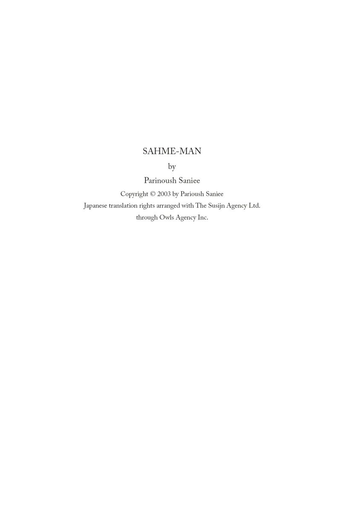
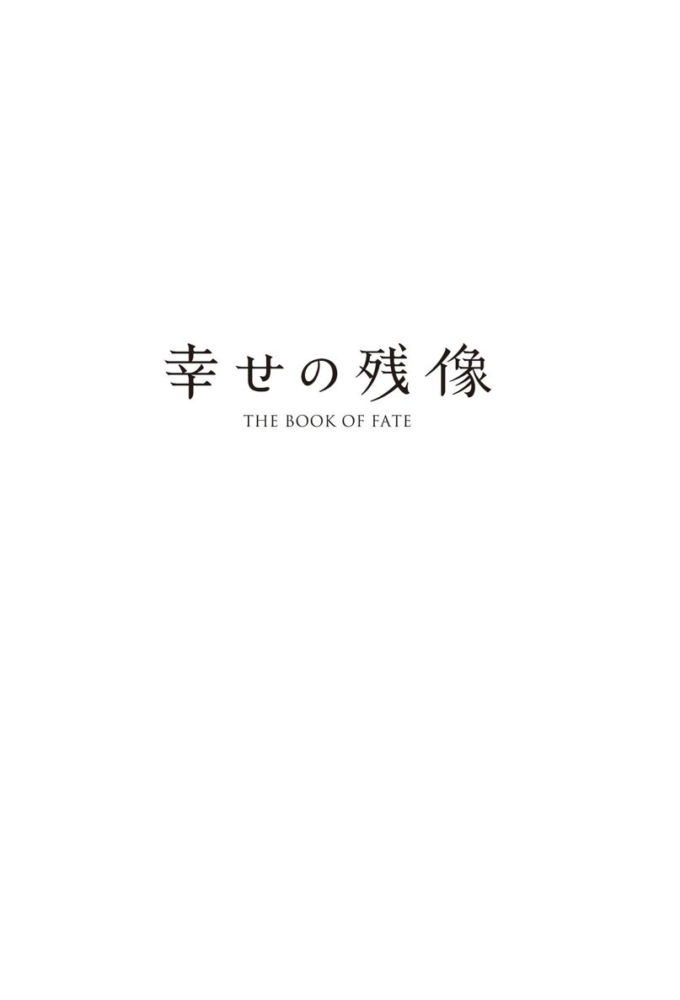

| 幸せの残像 THE BOOK OF FATE (Woman's Best) | |
| パリヌッシュ・サニイ | |
| Shoshi Kankanbou (2013) | |
どこまで行けば安心できるというの？
私がその避難所にたどり着くまでは消えないで 灯りよ
明るく輝く家 でもそこで私は心を落ち着けることはできない
フォルーグ

マスーメ（マスーム）・サーギディ 物語のヒロイン（語り手）
マフムード マスーメの兄（長兄）
アフマド マスーメの兄（次兄）
ザリ マスーメの姉 八歳時に死亡
アリ マスーメの弟
ファティ マスーメの妹
モスタファ・サーギディ マスーメの父
タイエベ マスーメの母
エヘテラム・サダト マフムードの妻
ゴラム・アリ マフムードの長男
ゴラム・ホセイン マフムードの二男
ザハラ マフムードの長女
サデェック ファティの夫
フィルゼ ファティの長女
ソフラブ フィルゼの夫
パービン夫人 マスーメ一家の隣人
ハジ パービン夫人の夫
マフブーベ マスーメのいとこ
モーゼン マフブーベの夫
パルバネ・アハマディ マスーメの親友
アハマディ夫妻 パルバネの両親
ホスロウ パルバネの夫
リリィ パルバネの長女 シアマクの妻
ラレ パルバネの二女
サイード マスーメの初恋の相手
ドクター・アタ サイードが働いていた近所の薬屋の店主
ナーズィ サイードの妻
ハミッド・ソルタニ マスーメの夫 共産主義活動家
ソルタニ夫妻 ハミッドの両親
シアマク マスーメとハミッドの間にできる長男
マスー マスーメの二男
シリン マスーメの長女
シャヘルザド ハミッドの友人 共産主義組織の指導者
メヒディ シャヘルザドの夫 共産主義組織の指導者
マグスーディ マスードの戦友 後に職場の上司 義父
アテフェ マグスーディの娘 マスードの妻
ザルガル マスーメの職場の上司
シルザディ マスーメの職場の上司
モニル ハミッドの一番上の姉
マンスーレ ハミッドの二番目の姉
マニジェ ハミッドの妹
ビビ ハミッドの祖母
バーマン マンスーレの夫

友人のパルバネがやることにはいつも驚かされた。自分の父親の名誉とか世間体は彼女の頭にはこれっぽっちもなかった。通りを歩いていても大声でしゃべったり、商店の窓をのぞき込んだり、時には商品のあれこれを指差して批評した。何度も「恥ずかしいわ。もう、行きましょう」と先を急がせても、お構いなしだった。街で大声で名前を呼ばれることもあった。それもあろうことか、ファーストネームで。とても恥ずかしかったので、その場から消え去りたい気分になり、そう祈った。ありがたいことに、兄弟は近くにいなかった。もし、居合わせていたら、果たしてどういうことになっていたことだろう。
コム1からテヘランに引っ越してからも、父は学校に通うのを続けさせてくれた。テヘランでは誰もチャドル2を身に付けず、もし私がそうすれば、学校中の笑いものになるだろうと言うと、父はヘッドスカーフだけでの登校を許してくれた。言動に十分注意し、自らを汚し、駄目になり、父の顔に泥を塗ることがないよう、約束だけはさせられたけど。もっとも、それが何を意味するのか、私には分かっていなかった。一人の少女が腐った食べ物のように駄目になるとはどういうことか。しかし、たとえチャドルやヒジャーブを身に付けていなくとも、父の名を汚さないためにはどう振る舞うべきかぐらいは理解していた。
大好きだったアッバス叔父。叔父が父に次のように語ったのを覚えている。「（親愛なる）兄弟よ。女の子は内面が大事なのだ。正しいヒジャーブを身に付けているかどうか、そんなことが大事なのでない。内面が悪ければ、チャドルの下に隠れ、父親の体面など吹き飛んでしまいそうなとんでもないことばかりを仕出かしているだろう。テヘランに出て来たのだから、テヘランの人たちのように振る舞えばいい。少女が家に閉じ込められていた日々は終わった。この子を学校に通わせ、他の子と同じような服装をさせるべきですよ。そうでないと、この子は他の子たちから浮き上がってしまう」
アッバス叔父は非常に賢く、分別ある人だった。またそうでなければならなかった。叔父はテヘランにすでに十年近く住んでいた。叔父がコムに里帰りするのは誰か親類が亡くなった時ぐらいだった。彼が帰って来ると、亡き祖母はいつも嘆いていた。「アッバス、お前はなぜもっと足繁く私に会いに来てくれないのだ」と。ああ、お祖母さま、安らかにお眠りください。
そう言われた叔父は大きな笑い声で茶化すのだった。「私に何ができると言うんですか。親類にもっと頻繁に死ぬようにとでも言ってください」と。祖母は叔父の横っ面を張り、頰をつねった。あまりに強くつねるものだから、その痕が長いこと叔父の顔に残っていたことを覚えている。
アッバス叔父の妻はテヘラン出身だった。彼女はコムに来る時はいつもチャドルを身に付けていたが、テヘランでは正しいヒジャーブを着用していないことを皆が知っていた。彼女の娘たちもそんなことにはまったく頓着しなかった。彼女たちはヒジャーブさえ身に付けずに学校に通っていたのだから。
祖母が亡くなった時、彼女の子どもたちは私たちが暮らしていた祖母の家を売り払い、そのお金を分け合った。アッバス叔父は父に、「兄弟よ、ここに住み続けても埒が明かない。荷造りしてテヘランに上京して来い。分け合った金を合わせて店を一軒手に入れよう。私が住んでいるところの近くに家を借りてやろう。一緒に力を合わせて働こう。さあ、自分たちの手で新しい生活を始めようではないか。金を稼げる場所はテヘランしかない」と誘った。
長兄のマフムードは最初「テヘランでは誰もが信仰心や宗教を失ってしまう」と反対した。しかし、次兄のアフマドは喜び、「俺たちはテヘランに行くべきだ」と主張した。「詰まるところ、何かやってみないことには始まらないじゃないか」と。
母は慎重だった。「でも、娘たちのことも考えなくてはならないよ。テヘランではちゃんとした旦那を見つけることなどできやしないだろう。親類や友人たちは皆ここにいるんだし。マスーメは第六学年の修了証を取って、さらにもう一年勉強もしている。あの子はそろそろ結婚する年頃だ。それにファティは今年学校に行く年を迎えている。テヘランに行けば、この子がどういう目に遭うか分かったものじゃない。テヘランで育った女の子はほめられたものではないって皆が言っている」
弟で第四学年にいるアリは「ファティのことは僕が請け合うよ。こいつを鷹のように見張り、変なことは死んでも許さないから」と言って、床に座って遊んでいた彼女を足で蹴った。妹は叫び声を上げたが、誰も見向きもしなかった。私は妹を抱き締めて「馬鹿な話だわ。それなら、テヘランに住む少女は全員悪いってことなの？」と口をはさんだ。
テヘランに行きたいアフマドは声を荒げた。「お前は黙っておれ！」と一喝して、家族に言った。
「問題はマスーメだ。こいつをここで嫁に出してしまい、テヘランに向かおう。そうすれば、頭の痛い問題が一つ片付くというものだ。ファティはアリに見張らせておけば大丈夫だ」
弟の背中を軽くなで、熱意と自尊心がある弟は責任ある行動が取れるとほめそやした。私の心は沈んだ。そもそも最初からアフマドは私が学校に行くのに反対だった。彼は勉強熱心ではなく、第八学年以降は落第の連続で、最後には退学に追い込まれた。私が自分以上の学校教育を受けるのが嫌でたまらなかったのだ。
祖母も―ああ、彼女に安らかな眠りを―私が学校に通い続けていることに我慢がならず、ことあるごとに母に長い小言を言い続けた。「お前の娘は何の技術も手にしていない。結婚したとしても、一カ月もたたないうちに嫁ぎ先から送り返されてくるだろうよ」。父にはこう言っていた。「なぜ女の子にお金を使い続けるのかね。女は役立たずなんだ。結局誰か他の人たちの所有物になってしまうんだから。お前は一生懸命働いて、稼いだお金をあの子のために使い、最後には嫁に出すためにさらにもっとたくさんのお金が必要になってくるんだよ」
アフマドは二十歳近くになっていたが、きちんとした仕事には就いていなかった。アサドラ叔父がバザール3で営んでいる店で使い走りの仕事をしていて、いつも通りをうろついてばかりいた。マフムードは彼とはわずか二歳しか年が違わなかったが、真面目で頼りにされていた。敬虔で、祈りや断食を決して怠らなかった。誰もがマフムードはアフマドより十歳も年上だと思うほどだった。
母は本当はマフムードが母方のいとこであるエヘテラム・サダトと結婚することを望んでいた。母はエヘテラム（・サダト）はサイード、つまり預言者の子孫だと言った。しかし、私は兄が父方のいとこであるマフブーベに好意を抱いているのを知っていた。彼女が家にやって来ると兄は決まって顔を赤らめ、言葉を発するたびにどもった。兄は隅っこに立ち、いとこを、特に彼女の頭からチャドルが外れようものなら、それはもうじっと見つめていた。マフブーベは、お茶目で軽薄なところがあったので、時に自分の体を正しく覆うことも忘れた。近しい家族以外に服装の乱れを見せる失態を祖母がなじると、彼女は「おばあちゃん、気になさらないで。兄弟のようなものではありませんこと！」と意に介さず、そう言った後で高らかに笑っていた。
マフブーベが立ち去ると、マフムードはすぐに腰を下ろし、二時間もの間、祈り続けていた。繰り返しこう祈っていた。「ああ、神よ。我々の魂に情けあれ！ 我々の魂に情けあれ！」。兄は心の中で罪を犯したのだと私は思った。どのような罪かは神のみぞ知るだ。
テヘランに上京する前に、長いこと多くの喧嘩や口論が繰り広げられた。家族の意見が一致した唯一のことは、何とか私を結婚させ、片づけることだった。それはあたかもテヘランの全人口が私の到着を待ち受け、堕落させようと手ぐすね引いているかのようだった。私は毎日、ファーテメ聖廟に足を運び、ファーテメの配剤で、家族と一緒にテヘランに上京でき、そのまま学校教育が続けられるようにと祈った。自分が男の子だったら良かったのに、そうでなければ、ザリのように病気になり、死んだ方がましですとも泣きながら祈った。ザリは私の三つ上の姉で、彼女が八歳の時、ジフテリアに罹って死んでしまった。
願いは神に聞き入れられ、花嫁に欲しいと、家の玄関のドアをノックする者は誰も現れなかった。そのうちに父は引っ越しにまつわる用件をすべて片づけ、アッバス叔父はゴーガンストリートの近くに住む家を借り受けてくれた。皆が私の周りに座り、さあ、残る問題はおまえだけだよといった感じで時を待った。母は気に入った人たちと座している時は決まって、「マスーメは嫁に行く時が来ているんだけどね」と語ったものだ。そのたびに私はみじめな気持にさせられ、また怒りで、顔を火照らせた。
しかし、神様は私の側についていた。誰も嫁に欲しいと言って来なかった。最後には離婚歴がある一人の男が乗り気だという話も流れてきた。この男は経済的には裕福で比較的若い男だったが、なぜ、最初の結婚後わずか数カ月で妻を離縁したのか、その理由を誰も知らなかった。彼は気難しく、恐ろしい男に見えた。この男と結婚すればどんな嫌な運命が待ち受けているかも知れず、私はなりふり構わず、父の足元にひれふし、それこそ、ゆうにバケツ一杯分ほどの涙を流し、家族と一緒にテヘランに連れて行ってくれるよう懇願した。父は優しい心の持ち主だったし、女の子であるという事実にもかかわらず、父が私のことを愛してくれていると分かっていた。母によると、ザリが亡くなった後、父は私のことをあれやこれやと案じたという。非常に痩せていたので、父は私もやがて死ぬのではないかと心配していたのだ。父はザリが生まれた時、感謝の念を抱かなかったので、神様がザリの命を取り上げ、自分を罰したのだと信じていた。私が生まれた時も父は感謝の念を抱かなかったのかもしれない。しかし、私は真実、父を愛していた。父は私のことを分かってくれるただ一人の家族だった。
毎日父が仕事から帰宅すると、私はタオルを持って駆け付け、父が足を洗う水場に立った。父は私の肩に手をかけながら、足を何度か洗った。それから手と顔を洗うのだが、父にタオルを渡すと、顔をふきながら、父はタオル越しに私の顔をその薄茶色の目で見つめた。その表情から父が私のことを愛しており、私を気に入っていることがうかがえた。父にキスをしたかったが、成長した娘が一人の男に、たとえその男が自分の父親であろうと、そうすることは不適切な行為だった。とにかく父は私のことを憐んでくれた。私はテヘランに行っても天地神明にかけて堕落に走らず、父の名を汚さないと父に誓った。
テヘランで学校に通うということはそれまでと全く違っていた。二人の兄は私が学校に通い続けるのに反対し、母は裁縫の教室に通うことこそもっと大切なことだと信じていた。しかし、私が懇願し、嘆願し、抑えがたい涙の援軍もあったため、父は家族の反対を押し切り、中等学校の第八学年に編入させてくれた。
アフマドは非常に腹を立て、私を絞め殺してしまいたいという思いにとらわれていたようだ。ことあるごとに私に手ひどい暴力を振るった。だが、何が彼の癪に障っているか分かっていたので、黙っていた。学校は家からそう遠くなく、歩いて十五分から二十分ぐらいの距離だった。初めのうち、彼はこっそり私の後をつけていた。だから、チャドルをしっかり体にまとって歩き、彼にいかなる口実も与えないよう気をつけた。マフムードはこのところずっと、私に話しかけることをやめ、完璧に無視するようになっていた。
やがて兄たちは二人とも仕事を見つけた。マフムードはモザファリさんがバザールで営む店で働き始め、アフマドはシェミラン地区にある大工に弟子入りした。モザファリさんによると、マフムードは終日店番するのが仕事で、頼りになるとのことだった。父は「店を実際に仕切っているのはマフムードだ」と言っていた。一方アフマドは、多くの遊び友達を見つけ、夜遅く帰宅するようになった。ほどなく、彼が放つ悪臭は彼が飲んでいた酒、正確にはアラックと呼ばれる蒸留酒のせいだということに皆が気づいたが、誰も何も言わなかった。父は彼が挨拶しても返答を拒絶し、目を合わさなかった。マフムードは横を向き、「神のご加護がありますように、神のご加護を」と祈った。母は息子の食べ物を温め、「我が子は歯痛を抱え、痛み止めのためアルコールを含んでいるのだ」と言った。いつまでも癒されることのない歯痛とは一体どのような疾患であったのだろうか。一事が万事、母はいつもアフマドの尻拭いをした。彼は母のお気に入りだった。
アフマドはテヘランで新しい気晴らしを見つけた。家の二階の部屋の窓から、隣人のパービン夫人の家を眺めるという気晴らしだ。夫人はいつも、自宅の前庭で忙しく立ち働いていた。当然のことながら、チャドルは身に付けていなかった。彼は二階にある居間の窓から動こうとはしなかった。二人がサインと身振りでやり取りするのを私は目にした。
いずれにせよ、アフマドの関心はそちらの方に移ってしまい、私のことなど忘れてしまっていた。チャドルではなく、ヘッドスカーフだけで登校することを父が許してくれた時でさえ、ほんの一日だけの口論と喧嘩で済んだ。アフマドは私を忘れ去ったわけではない。ただ私を叱責することをやめただけで、私に話しかけることなどもちろんなかった。彼にとって私は罪の権化にすぎなかったし、私の方を見ることさえ頑なに拒んだ。
パルバネ・アハマディは陽気で愉快な少女だった。バレーボールが上手で学校のチームのレギュラーだった。だが、勉学ではあまり優秀な生徒というわけではなかった。劣等生ではなかったが、学校の規則に素直に従う生徒でもなかった。私が言いたいのは、彼女は良いことと悪いことの区別がつかず、父親の名前や体面を傷つけないように行動するということがどういうことか分かっていなかった。兄弟はいたが、彼女は彼らを恐れなかった。時には兄弟と喧嘩することもあり、殴られたら殴り返していた。見るもの、聞くものすべてが彼女にとっては笑いを誘うものであり、どこにいようと、たとえ通りを歩いていてもそうだった。女の子が笑う時には絶対に歯を見せてはいけない、笑い声を他の人に聞かれてはならない、こういったことを誰も彼女に注意したことなどないかのようだった。だから、それっておかしいわよ、してはいけないわ、と言うと、いつもびっくりした顔をした。いかにも驚いたという表情で「なぜなの？」と尋ねた。時には私が別の世界からやって来たかのようにじっと見つめた（実際そうだったのかもしれない）。車の名前をほとんど知っていて、父親が黒のシボレーを買うことを願っていた。私はシボレーも知らなかったが、そのことを知られて恥ずかしい思いをしたくなかった。
ある日のこと。新車に見える一台の美しい車を見かけたので、指差しながら、「パルバネ、あれがあなたが好きだと言っているシボレーなの？」と尋ねた。
彼女はその車に目をやり、次に私を見て、吹き出してしまった。笑いころげながら「ああ、何て傑作なの。フィアットがシボレーだなんて」。
笑われただけでなく愚かにも自分の無知さ加減をさらけ出してしまった恥ずかしさで、私は耳の付け根まで赤くなり、消えてしまいたい気分だった。
彼女の家にはテレビとラジオがあった。テレビはアッバス叔父の家で見かけたことがあったが、我が家には大きなラジオが一台あるだけだった。祖母が生きていて、マフムードが家にいる時は、ラジオで音楽を聴くことは決してなかった。それは罪だったからだ。特に歌っている人が女性で、陽気な歌を歌っていたりすれば、なおさらだった。父も母も大変信心深い人で、音楽に耳を傾けることが道徳に反することは承知していたが、両親はマフムードほどには厳格でなく、歌を聴くことは好きだった。マフムードが外出している時、母はラジオのスイッチを入れた。もちろんボリュームを絞り、隣近所に音が漏れないようにした。母はいくつかの歌の歌詞を知ってるほどだった。ポーラン・シャプーリの歌が特にお気に入りで、台所仕事をしている時は静かに口ずさんでいた。
ある日のこと。「お母さん、ポーランの歌、結構知っているのね」と言うと、母は爆竹のように跳び上がり、叫んだ。
「お黙り！ なんてこと言うんだい、お前は。兄さんの前でそんな話絶対にするんじゃないよ！」
父は昼食に帰宅すると、二時のニュースを聞くために、ラジオのスイッチを入れた。ニュースが終わっても、スイッチを切り忘れるのが常だった。そうすると、音楽番組が始まり、父は無意識に音楽にテンポを合わせ、頭を動かすのだった。誰が何と言おうと構わない。父はきっとマルズィエの声が気に入っていたのだと思う。番組で彼女の歌声が流れ始めても、父が「ラジオを切りなさい。神よ、お情けを！」と言うことはなかった。しかしヴィグヘンの歌声が聞こえると、父は突然信仰と信心を思い出し、「あのアルメニア4人がまた歌っている。さっさとラジオを切りなさい」と叫ぶのだった。ああ、でも、私はヴィグヘンの歌声が大好きだった。なぜだか分からない。彼女の歌声はハミッド叔父のことをいつも思い出させた。私が知っている限り、ハミッド叔父はハンサムな人だった。彼の兄弟姉妹たちとは顔立ちが違っていた。コロンの香りを漂わせていたが、このこと自体、私の人生では珍しいことだった。幼い時、叔父は私を抱き上げ、母によく語りかけていた。「上出来だよ。姉さん！ 何と美しい女の子を生んだことか。兄たちと全然似ていないことを神様に感謝しなくては。そうでなかったら、この子を大樽にでもつけて、漬物にでもするしか手はなかったことだろうよ！」
こう言われた母は叫んだものだ。
「おお、何ということをお前さんは言っているんだ。息子たちのどこが見苦しいんだい。申し分ないほどハンサムじゃないか。褐色の肌をしているだけではないか。それだって悪い色合いではない。男は美しい必要などないんだよ。昔から男は不細工で、不恰好で、気難しくあるべきと相場が決まってるんだよ」。母は最後の言葉を歌うように言い、ハミッド叔父は高らかに笑った。
私は父や父の妹によく似ていた。マフブーベと私が姉妹だと間違えられることもたびたびあった。だけど彼女は私より美人だった。私は痩せていたが、彼女はふくよかな体つきで、髪の毛にしても、私の直毛はどうやってもカールできなかったが、彼女の髪の毛は豊かな巻き毛だった。ただし、目の色は同じダークグリーンで、肌は白く、二人とも笑うと頰にえくぼができた。彼女の歯並びは少しだけ不揃いだった。このため、彼女はよく「あなたはとてもラッキーね。歯はとても白くて歯並びもいいわ」と羨ましがった。
母と他の家族は私には似ていなかった。肌は褐色で、目は黒、髪の毛はカールしていた。皆どちらかというと太っていた。ただし、母の妹であるガマール叔母ほどの肥満体ではなかったけど。見た目はもちろん悪くなかった。特に母はそうだ。顔の毛を処理して、まつげを整えると、食卓で使っているお皿に描かれているミス・サンシャインの絵のように見えたほどだ。唇のわきにほくろがあり、よく「お前たちのお父さんが結婚を申し込みにやって来た時、このほくろを見て一目惚れしたんだよ」と自慢した。
ハミッド叔父と別れた時、私は七歳か八歳だった。叔父は別れに際して、私を抱き締めながら母に言った。「姉さん、後生だから、この子の縁組を急がせたりして、美しい花が咲き誇る前に手折るようなことはしないでね。教育を受けさせて、淑女にしてあげて」
ハミッド叔父は家族たちの中で西側に旅した最初の人だった。私には外国の国々のイメージがわかなかった。外国とはせいぜいテヘランのようなところで、それがはるか遠くにある地という印象だった。時々、叔父は祖母のアジズに手紙や写真を送って寄こした。美しい写真だった。なぜ叔父がいつも植物や樹木、花々に囲まれ、庭園に立っている写真を寄こすのか分からなかった。後に叔父はヒジャーブを着ていないブロンドの女性と一緒に写っている写真を送ってきた。あの日を忘れないだろう。午後遅い時間だった。アジズおばあちゃんは父に手紙を読んでもらうためにやって来ていた。父は床の座布団に座り、側にアジズおばあちゃんがいた。父は最初、黙って手紙を読んでいたが、突然、「素晴らしい！ めでたいことだ！ ミスター・ハミッドは結婚したんだ。それでもってこれがハミッドの奥さんの写真だ」と叫んだ。
アジズおばあちゃんは気を失い、おばあちゃんとは気が合わなかった私の祖母は口をチャドルで覆い、笑いをこらえた。母は自分の頭をポンとたたき、自分も気絶した方がいいのか、卒倒したアジズおばあちゃんを介抱した方がいいのか迷っていた。やっとのことでアジズおばあちゃんは意識を取り戻すと、砂糖を入れた大量の熱い湯を飲んでから、「あの人たちは罪深い連中ではないのかい」と尋ねた。
「いや、あの人たちは罪人ではありませんよ」と父は肩をすくめながら言った。
「何と言っても、博識ですよ、あの人たちは。アルメニア人なんですから」
アジズおばあちゃんは自分の頭をたたき始めた。母は祖母の手を取ってなだめた。
「後生だから、やめてくださいな。そんなに悪いことではありませんよ。ハミッドは妻をイスラム教徒に改宗させたんですから。誰でもいいから、気に入った人に尋ねてごらんなさいな。イスラム教徒の男は非イスラム教徒を嫁にして、改宗させることができるんです。もっと言えば、神様の祝福を受けることもできるんです」
アジズおばあちゃんは母を大儀そうに見て、「分かってるよ。預言者や導師の何人かは非イスラム教徒を娶っている」と言った。
「さあ、天意にかなえば、これは幸運なことだ」と父は微笑んだ。
「それで、いつお祝いをしますかな？ 外国人の花嫁はお祝いに値しますぞ」
祖母は顔をしかめて言った。「とんでもないことだよ。義理の娘だけでもたくさんだというのに、その上、外国人だなんて。それも無知で信心の純潔、不純なんてことには皆目見当もつかない嫁なんて」
元気を取り戻したかに見えるアジズおばあちゃんは気持ちを落ち着かせると、自宅に戻るため立ち上がり反撃に転じた。「花嫁は家にとっては祝福だよ。私たちは義理の娘を大切に思わず、家にお手伝いが来たぐらいにしか考えない一部の人たちとは違うんだから。私たちは義理の娘たちを大事にするし、誇りにも思う。それが西側の花嫁であればなおさらのことだよ！」
祖母は彼女の自慢話が我慢できなかったので、皮肉たっぷりに「ああ、そうだね。お前さんがアサドゥラさんの女房をどれほど誇りに思っているか知っているよ」と応じた。意地悪くこうも付け加えた。「それでもって、その女が実際にイスラム教に改宗したか知っている者が果たしているのかね。おそらく、ハミッドだってその女房のせいで罪深くなっているんじゃないかね。そう言えば、ハミッドは正しい信仰や習慣など、はなから持ち合わせていなかったものだ。そうでなければ、わざわざ『スィンエスタン5』になぞ引っ越して行くもんかね」
「聞いたかね？ え、モスタファさんや？」とアジズおばあちゃんも負けていなかった。
「あのばあさんがこの私に今言ったこと、聞いたかい？」
ここで父が二人の間に割って入って、口論をやめさせた。
アジズおばあちゃんはすぐに大きなお祝いのパーティーを催し、家族に加わることになった西側の義理の娘をだれかれとなく自慢した。あの写真をフレームに入れ、暖炉の上に飾り、皆に見せた。それでも、息を引き取る最後の瞬間まで、母に問い続けた。「ハミッドの女房はイスラム教に改宗したかい？ あの子がアルメニア人になったなんてことはないだろうね？」
彼女が亡くなった後、ハミッド叔父がどうしているのか何年も知る手だてはなかった。叔父の写真を何枚か学校に持って行き、友だちに見せたことがある。パルバネはとても叔父が気に入った。「とてもハンサムな人だわ」と彼女は言った。
「西側に行ったなんてとてもラッキーな人ね。私たちもそうなったらいいのにね」
パルバネが知らない歌などなく、デルカッシュのファンだった。学校では女生徒の半分はデルカッシュのファンで、残り半分はマルズィエのファンだった。私はデルカッシュのファンにならなければいけなかった。そうでないと、パルバネは友だち付き合いをしてくれなかったからだ。彼女は西側の歌手も知っていた。自宅にはレコードプレーヤーがあり、レコードをかけて聴いていたのだ。ある日のこと。私にレコードプレーヤーを見せてくれた。それは小さいスーツケースのように見えた。赤い蓋が付いていて、持ち運びができるのよ、と彼女は言った。
テヘランに越して来た時、学年末前だったので、すぐに多くのことを学ぶことができた。パルバネはいつも私から練習帳や授業ノートを借りたり、時には一緒に勉強することもあった。喜んで私の家にやってきた。彼女は付き合いやすく、とても気持ちのいい人柄で、私の家に何があって、何がないかなどといったことなどは全然気にしなかった。
家はとても小さな家だった。道路に面した入口には階段が三段あり、ドアを開けると前庭になっていて、庭の中央部に長方形の水場が設けられていた。水場の側には大きな木製のベッドが置いてあった。反対側には水場に並行して長い花壇があった。花壇は長方形の水場の短辺に沿っていた。台所はいつも暗くて黒々とした印象だったが、母家からは独立していて、庭の外れにあった。トイレは台所に隣接していた。流しは外側についていたので、顔や手を洗うのに、水場の水をくみ上げる必要はなかった。母家のドアを開け、左手に四段降りると小さい踊り場があった。そこには階下の部屋につながる二つのドアがあった。階上に昇る階段もあり、その階段を上がると、通り抜けできる二つの部屋があった。前方の部屋が居間で、窓が二つ。窓の一つからは前庭と外の通りを一部見渡すことができた。もう一つの窓からはパービン夫人の家が見えた。あと一つの部屋はアフマドとマフムードの寝室になっていて、こちらの窓は中庭に向いており、背後にある家の裏庭が見えた。
パルバネが我が家にやって来ると、私たちは二階に上がり、居間に座り込んだ。居間には特段のものはなかった。赤い色の大きな絨毯に丸いテーブルと曲げ木の椅子が六脚あり、隅っこに大きなヒーター、その側にいくつかの座布団と背もたれがあるだけだった。壁にかかっている唯一の装飾品は、コーランのヴァン・ヤカッドの韻文がしたためられ、額に収まった織物ぐらいのものだった。暖炉は母が刺繍で飾り付けており、その上には鏡と母の結婚式で使われた装飾的な枝付き燭台が置かれていた。
私たちは座布団に座り、ささやき声で語り合い、くすくす笑いながら、勉強した。彼女の家に行って勉強することは絶対に御法度だった。
「あいつの家に一歩たりとも足を踏み入れてはならんぞ」とアフマドは吠えた。
「第一ろくでもない兄貴がいる。第二に恥知らずで気まぐれだ。あんな奴なんか地獄に落ちればいい。母親はヒジャーブを被らずに歩き回っているじゃないか」
それで私は「一体誰がこの町でヒジャーブを着ているって言うの？」と反発するのだった。もちろん、兄には聞こえないように、小声でつぶやくだけなのだが。
ある日のこと。パルバネが「ウーマンズ・デイ」という雑誌を見せたがったので、彼女の家に五分間だけこっそり入ったことがあった。非常に見栄えのいい家で、立派な調度品がとてもたくさんあった。壁という壁に、風景や女性を描いた絵画がかかっていた。居間には下の方に房の付いた濃紺の大きなソファが置かれていた。前庭を臨む窓々には同じ色のビロードのカーテンがかけられていた。ダイニングルームは反対側にあり、居間とはカーテンで仕切られていた。メインのホールにはテレビといくつかの肘掛椅子とソファがあった。台所やバスルーム、トイレに通じるドアもここにあった。冬の寒さや夏の暑さを我慢しながら用足しなどで前庭を歩いて行く必要もなかった。寝室はすべて上の階にあった。パルバネと妹のファルザネは一つの部屋を共有していた。
ああ、彼女たちは何と幸運だったのだろう！ 私の家にはこれだけのスペースがなかった。表面上は部屋数は四つだったが、現実には皆階下の大きな部屋で暮らしていた。昼食や夕食もその部屋で食べた。冬になると、コルシ6をしつらえて、私とファティ、アリはそこでやすんだ。両親は大きな木製のベッドと家族の衣服やその他もろもろのがらくたを詰め込んだ洋服だんすがある次の間でやすんだ。子どもたちはそれぞれ本を置く棚を一つ与えられていた。私は本がたくさんあったので、棚を二つもらっていた。
母は「ウーマンズ・デイ」に載っている写真を見るのが好きだった。この雑誌が父やマフムードの目に触れないように隠していた。私は「十字路に立ちて」という欄や連載小説、シリーズ物の物語を好んで読んでいた。読んだ後に母に内容を語って聞かせるのだ。細部を大げさに語ったりしたので、母は時に涙ぐむこともあり、私もつられて二度泣きした。パルバネは毎週、この雑誌を彼女と母親が読み終えた後、私にくれた。
パルバネに兄たちが彼女の家に足を踏み入れるのを禁じていることを話した。彼女は驚き、理由が理解できない風だった。
「あなたにお兄さんがいるからと言うのよ」
「ダリウッシュのこと？ 何で兄なの？ 実際、あの子は私たちより一歳年下よ」
「それでも、あの子はもう大人のようなものでしょう。だからあなたの家に行くのはよろしくないと言うのよ」
彼女は「あなたたちの習慣とやらが理解できないわ」と肩をすくめた。だが、この後、彼女の家に来て欲しいと主張することはもうなかった。
学期末試験でトップクラスの優れた評価を受け、先生からほめられた。それなのに、家では誰も何の反応を示さなかった。母は私が何を話しているのか、理解できないようだった。
マフムードは「それが何だってんだよ？ 何をしでかしたと思ってんだよ？」と吐き捨てるように言った。父は「そうだな。ところでクラスで一番の優等生になぜなれなかったんだい？」と応じた。
夏が来て、パルバネとはなかなか会えなくなった。最初の数日は兄たちが外出している時を見はからい、家にやって来たので、通りに面したドアの外側で立ち話をした。これには母が絶えず文句を言った。かつてコムに住んでいた頃は、母だって父が帰宅するまで、近所のご婦人たちと午後の立ち話に興じたり、スイカの種を食べたりして過ごしていたのに。母はテヘランでは友人や知り合いがなく、近所の婦人たちは母を遠ざけていた。彼女たちが母のことを嘲笑したからと腹を立てたことも何度かあった。やがて母は午後の時間を無駄話をしながら過ごすという習慣を忘れてしまい、私もそうすることができなくなってしまった。
母はテヘランに越してきたことを後悔していた。よく「私たちはこの町には向いていないんだよ。友人や親類は皆コムにいる。ここでは私は一人ぼっちだ。お前たちの叔父の妻がお高くとまって、私たちのことなんか気にもとめていないのに、一体、見知らぬ人たちに何を期待できると言うのかね？」とこぼしたものだ。
母が不平たらたら小言を言い続けたため、父はとうとう、母の姉妹の家で夏休みを過ごすことを了解せざるを得なくなった。私はつい「皆が夏の休暇には田舎の別荘に出かけるっていうのに、お母さんは私たちをコムに連れていくってわけ？」と皮肉った。
母は私を睨みつけて「お前は自分がどこから来たのかすぐに忘れてしまうんだね？ 私たちはずっとコムで暮らしてきた。お前が不平を言うことなどなかったじゃないか。ところがどうだい。今ではこのお嬢さんは夏季休暇にふさわしいところに出かけたいってわけかい！ 哀しいことに姉妹の顔をこの一年見ていないんだよ。兄弟がどうしているかも知らないし、親類のお墓にも参っていない......。夏なんて親類の家を一軒一軒訪ねて、それぞれ一週間でも過ごしていたら、それこそすぐに終わってしまっているよ」と言った。
マフムードは私たちがコムに行くことに異を唱えなかったが、父の姉妹の家に滞在することを求めた。週末に私たちに会いにコムに戻ってきて、マフブーベと叔母の顔を見られさえすればよかったからだ。「叔母のところにお世話になったらいい」と彼は言った。「親類の家々を訪ね回る必要などない。もしそうすれば、親類は次々にテヘランにやって来て、俺たちの家に泊まることだろう。頭痛の種をまいて歩くことなどない」（それこそ素晴らしい！ 何と親切なことでしょう！）
「分かったよ！」。母は怒って反論した。
「お前の叔母の家に行って、あの人たちがここにやって来るのはいいんだね。でも、私の哀れな姉妹がここにやって来たがったら、どうするんだい」（何という傲慢さ！ 兄の頭をどついて、身の程を思い知らせてやった方がいい）
私たちはコムに行った。パルバネは家族と一緒にゴラブ・ダレにある祖父の別荘で夏を過ごすことになっていたため、私はあまり不平を言うことはなかった。
八月の半ばにテヘランに戻ってきた。アリはいくつかの課目で落第していたため、期末試験の再試を受けねばならなかったからだ。学校の勉強となると、兄弟はなぜ怠惰になるのか、私には理解できなかった。可哀そうに、父は息子たちにはとても多くの夢を抱いていたというのに。父は彼らが医者やエンジニアになることを望んでいた。とにかく、私は家に戻って来ることができ、うれしかった。母方の叔母から父方の叔父の家へ、そして次には父方の叔母から母方の叔父の家へといった具合に家から家へ、放浪者のように親類の家々を訪ね歩くのは、もうたくさんだった......。特に母の妹の家に泊まるのは嫌だった。彼女の家はモスク（礼拝所）のようだった。彼女は私たちがお祈りを捧げたかどうかしきりに尋ね、祈り方が正しくないと常に小言を言い続けた。自らの敬虔さと全員がイスラム教の学者である自分の夫の親類について得意げに自慢した。
数週間後、パルバネも家族とともにテヘランに戻って来た。新しい学校年度のスタートで、幸福で楽しい日々が再び戻ってきた。友人や先生たちに会えるのがうれしかった。前年度と異なり、もはや新入りや初心者でもなく、物事にたやすく動じることもなく、愚かな発言をすることもなかった。文章を書くのもより上手になったし、テヘランっ子に劣ることなく、自分をきちんと主張できるようになっていた。パルバネに感謝しなければならない。私にとって初めて出会った最良の先生だったからだ。その年、教科書以外の本を読む喜びも発見した。ロマンチックな小説を回し読みした。たくさんため息をつき、涙を流し、読み終わった後は二人で何時間も話し合った。
彼女は一冊の美しいＱ＆Ａのスクラップブックを作っていた。字の上手な彼女のいとこがページごとにテーマの見出しを書いていて、パルバネがそのわきにテーマに見合った絵を貼っていた。クラスの女生徒全員に加え、彼女の親類、家族の友人たちの何人かがそれぞれの問いに答えを記していた。好きな色は何ですかとか、好きな本は何ですか、といった質問に対するコメントはそう興味深いものではなかった。でも、愛についてどう思いますかとか、人を愛したことはありますかとか、理想的な配偶者はどういう特質を有しているべきですかといった質問に対する答えはとても興味深かった。このスクラップブックが校長先生の手に落ちたらどのような事態になるかなんてまるで考えず、あけすけに好き勝手なことを書いている者もいた。
私は詩のスクラップブックを作って、きちんとした文字で心に浮かんだお気に入りの詩を書いた。時には書いた詩の側に絵を描いたり、パルバネが外国の雑誌から私のために切り抜いてくれた絵を貼りつけたりした。
ある明るい秋の昼下がり、学校からの帰り道でパルバネが、絆創膏が買いたいので一緒に薬屋に行こうと言った。薬屋は学校と自宅との中間地点にあった。薬屋を営むドクター・アタイは誰もが知っていて、尊敬を受けている威厳のある老人だった。店に入って行った時、カウンターの中には誰もいなかった。パルバネはドクターの名前を呼び、カウンターの中を爪先立ってのぞき込んだ。白い仕事着を着た一人の若い男がひざをついて一番下にある棚の薬箱を整理していた。彼は立ち上がると、
「いらっしゃいませ」と言った。
パルバネは「絆創膏が欲しいんですけど」と伝えた。
「分かりました。すぐにお持ちいたします」
パルバネが私の横腹を小突き、ささやいた。「あの人誰？ とてもハンサムね」
その若い男はパルバネに絆創膏を渡した。彼女は通学用かばんからお金を出すためひざまずきながら、またささやいた。「ねえってば！ ......あの人見てよ。すごく格好いいわ」
その若者を見た。瞬間私たちの視線は絡み合った。奇妙な感覚が体を貫き、顔が火照るのを感じた。すぐに視線を落とした。このような奇妙な体験は初めてだった。パルバネに向き直り、「さあ、行きましょう」と言い、急いで外に出た。
パルバネは私の後を追いかけて来て、「どうしたっていうのよ？ これまで男の人を見たことがないって言うの？」と言った。
「気まずかったのよ」
「何が？」
「初めて会った人のことをあれこれ言うからよ」
「それがどうしたって言うの？」
「それがどうしたって？ 本当に失礼じゃないの。あの人にあなたの言っていることが聞こえたと思うわ」
「いいえ、聞こえてなかったわ。何も耳にしていないことよ。第一、一体私の言葉のどこが失礼だっていうのよ？」
「あの人がハンサムで......」
「何言ってるのよ！」とパルバネは言った。
「たとえ私の言葉を聞いたとしても、おそらく、うれしく思っただけのことよ。そんなことより、ここだけの話だけど、まじまじと見たら、それほどハンサムではないってことが分かったわ。お父さんに言わなくちゃ。ドクター・アタイが助手を雇ったってこと」
翌日は登校が少し遅れた。薬屋の前を急いで通り過ぎようとしていた時、あの若い男が私たちのことを見つめているのが分かった。下校時に窓ガラスを通して薬屋の店内を眺めると、彼は忙しそうに働いていたが、私たちに気づいているように思えた。この日以来、暗黙の了解で、毎朝、毎午後、お互いの姿を見やるようになった。パルバネと私は心弾む新しい共通の話題を見つけたというわけだ。ほどなく、彼のことは学校中の話題となった。女生徒たちは全員、薬屋で働き始めたハンサムな若者のことを話すようになり、薬屋に立ち寄るあらゆる口実を見つけようとしたし、店に行ったら行ったで、何とか彼の注意を引きつけようと試みた。
パルバネと私は毎日彼のことを見かけることに慣れてきた。彼もまた私たちが側を通るのを心待ちにしていたと断言できる。私たちは彼がどの俳優に最も似ているか議論し、最後にはスティーブ・マックィーンに似ているとの結論に達した。この時までに私はかなりの知識を身につけていた。外国の有名な俳優の名前はあらかた知っていたし、母をせついて一緒に映画を観に行ったこともある。母も心底楽しんだと見えて、その時以来、週に一度、マフムードには内緒で、街角にある映画館に足を運ぶようになった。大抵はインド映画だったが、私と母は雲から降って来る雨のように大量の涙を流して鑑賞した。
パルバネは薬屋のサイードという名前の助手に関する情報をすぐに入手した。父親の友人であるドクター・アタイによると、彼は「大学で薬学を学んでいる学生で、性格も良い。レザーイエ7の出身」だということだった。
それからというもの、彼との「やり取り」はより親密度を増して行った。パルバネはニックネームを付けた。「心配性の彼」。彼女は「だってあの人はいつも、誰かを探しているような、憂いを含んだ人待ち顔をしているじゃない」と言った。
この年は人生でベストと言える年だった。すべてが望むように運んでいた。一生懸命に勉強した。パルバネとの友情は日増しに強まり、徐々に一心同体となりつつあった。幸福で輝かしい日々を曇らせる唯一のことは、家の中で段々と私の耳にも入りつつあったおぞましいささやきで、学校が終わりに近づくにつれ頻繁になった。私の学校教育もそろそろ終わりではというささやきだった。
「それって不可能よ」とパルバネは言った。「絶対にそんなこと、あなたにはさせないでしょうよ」
「あなたは分かっていないのよ。学校でいい成績を収めているとかいないとか、家の人たちは全く関係ないの。中等学校の最初の三年間を超えて学ぶことは女には良くないと考えているのだから」
「最初の三年間？」と彼女は驚いた。「近頃では中等学校の卒業証書だって十分じゃないご時世なのよ。私の家族や親類筋では女の子も全員、大学に進んでいるわ。もちろん、入学試験に受かったならの話だけどね。あなたは絶対に合格する。親類筋の誰より頭がいいもの」
「大学なんて夢のまた夢よ！ ただ中等学校を卒業したいだけなの」
「それなら、家の人たちに立ち向かい、自分の主張をちゃんとすべきよ」
ああ、パルバネって何て強いの！ 私がどういう家族と一緒に住んでいるか、見当もつかないにちがいない。母にはちゃんと向き合うことができたし、口答えすることも、自分を弁護することもできた。しかし、兄たちに向かっては主張を堂々と展開する勇気がなかった。
最終学期の終わりに期末試験を受けた。クラスで二番の成績を収めた。文学の先生は本当に私のことを気に入ってくれ、通知表を手渡した時、「成績優秀でした！ とても才能豊かだわ。これからはどんな分野を勉強したいと考えているのかしら？」と尋ねた。
「夢は文学を勉強することです」
「それは素晴らしい。実はそう薦めようと思っていたところなのよ」
「でも、先生、私はそれができないのです。家族は反対なのです。女の子には中等学校の三年間で十分と考えているのです」
バハラミ先生は顔をしかめ、頭を振り、職員室に戻って行った。数分後、先生は校長先生と連れ立って戻って来た。校長先生は私の通知表を手にして言った。
「サーギディ、お父さんに明日学校に来るよう言ってください。話があります。お父さんが来ないと、この通知表を上げることができないと伝えてください。忘れないでそう伝えるのですよ！」
その夜、校長先生が話があると言っていると伝えると、父は驚いた。
「お前は何かしでかしたのかい？」と尋ねた。
「神に誓って、何もしてません」
すると、今度は母に向かい、「では、ひとつお前さんが、明日学校に行って、どういう要件か、聞いてきてくれないか」と言った。
「お父さん、それは駄目です」と私は答えた。「校長先生たちはお父さんと話があるんですから」
「どういうことなんだい？ 女子の学校に足を踏み入れるつもりなんかないよ！」
「なぜ？ 他のお父さん方はそうしています。校長先生たちはお父さんが来なければ、通知表を渡さないと言っているんです」
父は二つの眉毛がくっつくほど、顔をしかめた。私はお茶を淹れてあげ、少しでも機嫌を取ろうとした。「お父さん、頭痛でもするんですか。薬を持ってきてあげましょうか」と言って、座布団を父のお尻にあてがい、水を一杯持ってきたりした。最後にやっと父は翌日、一緒に学校に行くことに同意した。
校長室に入って行くと、先生は机から立ち上がり、父に温かい歓迎の言葉をかけた後、近くの椅子に座るよう勧めた。「娘さんのこと、祝福申し上げます。とても出来が良い生徒です」と彼女は言った。「成績が素晴らしいだけでなく、行儀もとても良く、人柄も申し分ありません」。私はドアのところに立っていたので、視線を落としたものの、思わず笑みがこぼれた。校長先生は私の方を向き、
「親愛なるマスーメ、外で待っていてくださいね。サーデギィさんとお話がありますから」と言った。
校長先生がどのような話をしたのか知らないが、父が部屋から出て来た時、顔は紅潮して、その目は輝いていた。私を優しく、誇らしげに見つめていた。父は言った。「指導教官の先生のところに今すぐ行って、次年度の進級の手続きを済ませよう。また後で来る時間はないからな」
気を失うのではないかと心配になるほど幸福感でいっぱいだった。父の後を歩きながら、「お父さん、ありがとう。愛しています。クラスで一番になるって約束します。お父さんの言うこと、何だってその通りにします。人生はお父さんに捧げるつもりです」と言い続けた。
父は笑って言った。「もう十分だよ！ お前の怠け者の兄弟にお前の爪の垢でも煎じて飲ませたいところだ」
パルバネは学校の外で待っていた。私の前途を大変心配していたので、昨夜は全然眠れなかったという。彼女はサインと身振りで話し合いの結果を尋ねた。私はがっくりきたとでもいう顔付きをしながら、頭を振って、肩をすくめた。彼女の涙はその目の奥に控えていたかのように、どっと顔を濡らし始めた。私は駆け寄り、彼女を両腕で抱き締めて言った。
「ごめん、嘘よ！ 大丈夫。今、来学年の登録を済ませてきたわ」
校庭で私たちは狂ったように笑い、涙をぬぐいながら、跳びはねた。
父の決定は我が家で一騒動をもたらした。それでも、父は頑として動ぜず、「校長先生は娘が大変才能に恵まれており、やがて大物になるだろうと言っておられた」と突っぱねた。私はと言えば、興奮して舞い上がっており、父以外の家族が何と言おうと、一向に気にならなかった。アフマドの憎しみに満ちたいやらしい目つきにさえ、恐怖感を覚えなかった。
夏がやって来た。パルバネとは再び別れ別れになることを意味したが、来学年も一緒に学べることが分かっていたので、苦にはならなかった。コムで過ごしたのは一週間にすぎなかった。パルバネは毎週、何かしら口実を見つけては休暇先から父親と一緒にテヘランに戻って来た。彼女は一緒に数日間でもゴラブ・ダレに行こうと言い張った。本当は行きたかったが、兄たちが決して同意しないことが分かっていたので、家で話題にすることさえ控えた。パルバネは父親が私の父に話をすれば、きっとうまく事が運ぶだろうと言った。だが父にこれ以上頭痛の種を作りたくなかった。父がアハマディさんの申し出を拒絶することが困難なことは、分かり切っていた。そうなれば、家でひと悶着起きることも。
母の機嫌を取るため、将来結婚して夫の家に行った時に少なくとも一つぐらいは技量を身に付けておこうと、裁縫の教室に行くことにした。偶然のことだったが、裁縫教室は薬屋へ通じる道の近くにあった。サイードはすぐに私が一日置きに裁縫教室に通い始めたことに気づき、いつ通っても、必ずドアのところで私が通り過ぎるのを見守るようになった。薬屋の前をあと一区画で通るという段になると、心臓がドキドキと脈打ち始め、息遣いは荒くなった。薬屋の方は見ないように、顔を赤らめないように努力してみたものの、効果はなかった。視線が絡むたびに、耳まで真っ赤になった。これはとても恥ずかしいことだった。彼もはにかんで、目にいっぱい熱意をためて、挨拶代りに頷くのだった。
ある日のこと。角を曲がると、彼が突然目の前に現れた。とてもびっくりしたので、手にしていた裁縫に使う定規を落としてしまった。彼はしゃがんで定規を取り上げ、下を向いたまま、静かに謝った。「驚かせてしまって、ごめん」
私は「いえ、そんなことは」と言い、定規を彼の手からもぎ取ると、小走りでその場を立ち去った。その後長い間、私は自分が自分でなかった。この時のことを思い出すたび、顔が赤くなり、心地好い身震いを感じた。なぜだかは分からなかったが、彼もきっと同じことを経験しているに違いないと感じていた。
秋の最初の風が吹き、九月がスタートすると、待つことがようやく終わりを告げ、パルバネと再び一緒に登校するようになった。お互いに話したい話題が尽きなかった。夏の間に起きたすべてのこと、手がけたすべてのこと、心に思い浮かべたことさえ、そうしたすべてのことを共有したかった。だが、会話はいつも最後にはサイードに帰っていった。
「本当のことを話してね」と彼女は言った。「私が留守の間、何度あの薬屋に行ったの？」
「神に誓って言うけど、ただの一度もないわ。恥ずかし過ぎて行けやしないわよ」
「なぜ？ あの人は私たちがどう思っているか、何を話し合っているか、知るはずもないのよ」
「あなたがそう思っているだけでしょ！」
「そうに決まっているじゃない。あの人、あなたに何か言ったの？ どうしてそう言えるのよ？」
「何もないわよ。ただ、私はそう思うのよ」
「私たちは何も知らない振りをすることができてよ。それでこれまで通り、やりたいことをしましょうよ」
しかし、真実は何かがこれまでと違ってしまったということだった。サイードとの先日のやり取りで、毎日がこれまでとは異なる色調、より深刻な様相を帯び始めていた。口にすることはできないものの、心の中で彼との強い絆を感じていた。パルバネに隠し通すのは容易なことではなかった。学校が再開して、一週間もすると、彼女は薬屋をのぞく最初の口実を早くも見つけ、私を引きずるように連れて行った。私は自意識の塊と化していた。テヘラン中の人々が私の心中で起きていることを知っており、私を見ているように感じていた。サイードは私たちが店の中に入って来るのを見た時、立っていた場所でそのまま固まってしまった。パルバネは何度かアスピリン（鎮痛剤）があるかと尋ねたが、彼の耳には彼女の言葉は届いていなかった。ドクター・アタイがやって来て、パルバネに挨拶をして、父親の近況を尋ねた。ドクターはそれからサイードをたしなめた。「お前さんはどうしてそこにぼーと突っ立ってんだい？ お嬢さんにアスピリン錠の箱を上げんといかんだろう」
店を後にした時には、すべてが明るみに出ていた。
「あなた気づいた？ あの人があなたをじっと見つめていたこと？」と彼女は驚きを隠せずに尋ねた。
私は黙っていた。彼女は振り向き、私の目をのぞき込んだ。
「あなた、どうしたの？ 顔色真っ青よ。今にも卒倒しそうじゃないの！」
「私？ いいえ、そんなことないわ！ 悪いところなんかないわよ」
しかし、私の声は震えていた。数分間黙り込んで歩いた。彼女は何か考え込んでいた。
「パルバネ、どうしたの？ 大丈夫？」
突然、彼女の思いはまるで爆竹でもはぜるように一気に爆発した。いつもより大きな声を上げて切り込むように言った。「あなたってとても意地悪ね。あなたがずるいのに負けないぐらい、私は馬鹿だったわ。なぜ言ってくれなかったのよ？」
「何を言うっていうのよ。何も話すことなどなかったわよ」
「そうなの！ 私に何か隠してることあるでしょ？ 私にもちゃんと目はついているのよ。本当のことを言ってちょうだい。どこまで発展したの？」
「一体全体、どうしたらそんなこと言えるのよ？」
「もうやめて！ 焦らすのはやめて。あなたって何だってできるわ。あのヘッドスカーフから今やこの恋愛！ 私って本当に馬鹿だったわ。今までずっとあの人は私がいるから私たちの前に出て来ていたと思い続けていたのよ。あなたってとてもずるいわ。皆がコムの人は抜け目がないって言う意味が今やっと分かった。あなたはこの私に、あなたの親友であるこの私にさえ何も話さなかった。私は全部話しているというのに。特にこんな大切なことはそうだわ」
悲しみでのどが締めつけられそうだった。彼女の手を取り、懇願した。
「お願いだから、誰にも言わないと誓ってね。それにそんな大きな声で話さないでちょうだい。変だわ。静かにしてよ。他の人たちに聞かれるわ。父の命にかけて、コーランにかけて、あの人との間に何か起きているなんてことは何もないのよ」
しかし、勢いを増す洪水のように、彼女の怒りはますます大きくなっていった。
「あなたって本当に裏切り者だわ。私のスクラップブックにはあなたはこんなことは考えない、自分に大事なのは勉強しかない、と書いていたのよ。男の人は問題外、恋愛は悪いことであって、そうしたことを話題にすることも良くない、それは罪であって......」
「お願いよ。もうやめて。コーランに誓うわ。私たちの間は何でもないのよ」
精根尽きてとうとう泣き始めた時、彼女の家の近くに来ていた。私の涙を見て彼女は我に返り、水をかぶったかのように、怒りの炎は立ち消えた。優しい声に戻って彼女は言った。
「なぜ泣いているの？ それも外の通りで！ あなたがなぜ秘密にしていたのか理解できないので腹が立っただけよ。あなたには何でも話しているのだから」
私はずっと彼女の親友であり、過去にもそして将来も彼女に対して秘密を持つことなど決してないと誓った。
パルバネと私は男女の愛について好奇心の塊だった。彼女は私と同じくらい興奮して、「ねえ、今は何を感じているの？」と何度も尋ね、物思いに耽っているのを見ると、「ねえ、何を考えているの？」とささやいた。私は幻想や心配事、喜び、将来に対する不安、誰かと結婚させられる恐怖感などについて語った。彼女は目を閉じて反応したものだ。
「ああ、何と詩的なんでしょう！ それが恋に落ちるってことなのかしら。でも、私はあなたほど敏感でも情緒的でもないわ。恋に落ちている人たちが時にしたり、言っていることに、私は笑ってしまうの。第一私は顔を赤らめたりしないわ。私が恋に落ちたら、どうやって私はそれを知るのかしら？」
美しく活気に満ちた秋の日々は秋風のように瞬く間に過ぎ去った。この間、サイードとは一言も言葉を交わさなかった。だがこの頃になると、私たちが薬屋の前を通り過ぎようとすると、彼は聞こえないような声で「こんにちは」とつぶやき、私の心は籠の中に落ちる熟れた果物のように、胸の中で急降下していくのだった。
毎日、パルバネはサイードに関する新しい情報を仕入れて来た。次のようなことを知った。彼がレザーイエ出身であること、母と姉妹たちは今なおそこに住んでいること、尊敬されている家の出であること、名字はザレイであること、父親は数年前に他界していること、大学三年生であり、薬学を学んでいること、非常に優秀であり、勉強熱心であること、ドクター・アタイは無条件に彼を信じていて、仕事ぶりに満足していることなどだった。これらの情報は秘めていた無垢の純愛に太鼓判を押すものだった。まるで彼のことをずっと知っており、人生を一緒に紡いでいくのは彼しかいないとまで感じるようになっていた。
週に一度か二度、パルバネは私を薬屋に連れて行く口実を見つけた。私とサイードは密かにお互いに視線を走らせた。彼の手は震え、私の頰は紅潮した。彼女は私たちの一挙手一投足を注意深く見ていた。ある時、彼女は「恋する人たちがお互いを見つめ合うってことが何を意味するのか、ずっと考えてきたけど今、その意味がようやく分かったわ」と言った。
「パルバネ！ 何の話をしているの？」
「何の話って？ 私が嘘をついてるとでも言うわけ？」
毎朝、念入りに髪の毛を整え、ヘッドスカーフをかぶっても、前髪を乱さず、長い髪が背後からも見えるように特別注意を払った。少しは巻き毛を作ろうと必死に試みたが、カールにはならなかった。パルバネがあきれて指摘した。
「あなたって馬鹿ね！ そんなに美しい髪の毛なのに。直毛こそ最新のファッションよ。学校では皆、髪の毛をストレートにするため、アイロンをかけていること、あなたは知らないの？」
私は定期的に学校の制服を洗濯し、アイロンをかけていた。母にもっと布地を買って、新しい制服をお針子さんに縫ってもらうよう懇願した。母が縫うといつもやぼったく、さえない仕上がりだった。裁縫教室に通うようになって学んだ唯一のことは、母の裁縫のどこがまずいのか欠点が分かったことだった。パービン夫人が制服を上品に縫ってくれた時、夫人にスカートの丈を少しだけ短くするよう内密に頼んだことがある。それでも、はいていたスカートは学校中で一番丈が長かった。お金を貯め、パルバネと一緒に買い物に行き、深緑色のシルクのヘッドスカーフを買った。彼女は「それ、本当に似合うわ。あなたの目の色をますますきれいな緑色に見せているもの」とほめてくれた。
この年の冬は寒かった。道路の雪がまだ溶け切らないうちに、また新たな雪が降ってきた。朝になると至る所に氷が張り、通りを渡る時は注意しなければならなかった。毎朝誰かが滑って転んでいた。その日は私の番だった。登校途中、点在する氷の上でバランスを失い、痛烈に転んだのは、パルバネの家の近くだった。起き上がろうとしたが、足首にひどい痛みを感じた。立って足を地に付けた瞬間、鋭い痛みが腰まで駆け上り、再び倒れ込んだ。ちょうどその時、パルバネが家の中から出て来て、学校に向かっていたアリと鉢合わせした。二人は私に肩を貸し、家まで連れ帰ってくれた。母は足首を包帯で巻いた。しかし、午後遅くなると、足首の痛みと腫れは一段と悪化した。アフマドは帰宅すると、御託を並べ、飲みに出かけた。「放っておけばいい......どうってことない。普通の女の子のように家に留まり、凍てつく寒さの中を出かけたりしなければ、こんな目には遭わなくてすんだのに」
父は「この子を病院に連れて行こう」と言ってくれたが、マフムードは反対した。
「エスマイルさんは折れた骨を縛るのが上手い。シェミランの角に住んでいる。俺が行って連れて来ます。それでもしあの人の見立てが骨折ならば、病院に連れて行けばいいじゃないですか」
エスマイルさんは父と同じぐらいの年齢で、折れた骨に添え木をあてて治療することで知られていた。この年、彼の仕事は商売繁盛だった。私の足を診て、骨は折れてはおらず、捻挫に過ぎないと見立てた。足を温かい湯に入れて、マッサージしはじめた彼は私に話しかけながら、それに応えて何か言おうとしたまさにその時、彼が足首を突然捻じ曲げた。私は叫び声を上げ、気を失った。正気に返った時、彼は足首を卵の黄身とウコン、それにありとあらゆるオイルで作った調合薬でマッサージしていた。それが終わると、足首に包帯をして、二週間は安静にするようにと言った。
何と運の悪いことだろうか。私は泣きながら言った。「でも、学校に行かなくてはなりません。第二学期の試験が間もなく始まります」と。この試験はあと一カ月半ほど後のことであり、涙は全く別の理由から流れ落ちていたのだが。
数日たっても、全く動くことができなかった。コルシの下で大の字に寝そべり、サイードのことを考えた。朝になり、皆が学校にいる時、頭の下で腕を組み、冬の弱々しい日差しを顔に受けながら、甘い幻想に遊び、夢の中の町、未来の幸せに満ちた日々、すなわちサイードとともに暮らす日々へと旅した。
毎朝、ただ一つの悩みはパービン夫人だった。夫人は母の元を訪ねるありとあらゆる口実を見つけた。彼女が到底好きになれず、声が聞こえるや否や、眠っている振りをした。なぜ、信仰と社会規範に口やかましい母が、近所の人々なら誰でも、正しい道から逸脱していることを知っている夫人と友達となったのか、理解できなかった。夫人が母と親しくしているのは、アフマドゆえということに母は全然気づいていなかった。
午後になると、アリとファティが学校から帰宅し、家から静寂さは消え去った。アリは隣近所でもよくひと騒動を起こす張本人で、反抗的で生意気な少年になっていた。アフマドを手本にし、兄と同じくらい、私に辛く当たった。私が学校に通っていないだけになおさら横暴さは募った。母は私の面倒を見てくれたし、父は心配をしてくれたが、それがかえって弟の嫉妬心をますます助長するようだった。私が彼の権利を侵害しているかのように反発した。コルシの上に飛び乗り、ファティが泣き叫ぶほどいじめた。私の本を足蹴にして、意図的かどうかは分からないが、痛んだ足首を蹴ったので、悲鳴を上げざるを得なかった。私の寝具を階上の居間に運び上げて欲しいと、これ以上できないというほど泣きながら懇願した。
母は「お前、階段を上り下りするのは大変だろう？」といぶかった。
「それに上の居間は大きいヒーターが壊れているから、寒さがこたえるよ」
「小さいヒーターで十分だわ」と私は答えた。
結局、母は折れて、上の居間に移ることができた。やっと平和が訪れた。少しの時間であっても、弟の妨害を受けることなく、勉強することができるようになり、空想に耽った。スクラップブックに詩を書き、長いこと幻想の世界を歩いた。サイードが登場する物語をノートに書き留め、ここかしこに彼の名前をしたためた。アラビア語のサイードという名前の語源を調べ、その語形変化表をリストアップした。サード、サイード、サダット......。宿題で課せられた例文を書く時、決まってこうしたサイードの語形変化を利用した。
パルバネが訪ねて来た。母が近くにいる時には学校のことや、三月五日に始まることになっている試験のことを話し合ったが、母がいなくなるや否や、彼女は「何が起きているか、全然見当もつかないでしょ」と言った。
彼女がサイードについて知らせたいことがあるのは分かっていた。半分腰を浮かせながら、急かした。「どうか教えて。あの人はどうしているの？ 早く。誰か部屋に入って来る前に教えて」
「最近は文字通り、心配性の彼と化しているわ。毎日、薬屋の階段のところに突っ立って、辺りを見回し、私が一人だと分かると、顔は曇り、悲しみに打ちひしがれて、店の中に戻って行くの。今日は勇気を奮い起こして私のところにやって来たわ。最初、顔は赤くなったり、青くなったりの繰り返しよ。それから、こんにちはとどもりながら言って、やっとのことで『お友達はこの数日間学校に通ってませんね。非常に心配しています。元気なんでしょうか？』と尋ねたのよ。意地悪して、質問の意味が分からない振りをしたの。それで言ってやったわ。『お友達って、一体どの友達かしら？』ってね。あの人はそれは驚いて『あなたといつも一緒にいるお嬢さんです。家はゴルシャン通りにあります』と言うのよ。あなたが住んでいる住所さえ知っていた！ 油断ならないわね。多分私たちの跡をつけたことがあるんだわ。私は言ってやった。『ああ、マスーメ・サーデギィのことをおっしゃっているのね。可哀そうに転んで足首を捻挫してしまいました。二週間は学校に行けませんわね』と。あの人、真っ青になって、それはお気の毒と言って、背を向けると、立ち去ろうとしたのよ。私は声をかけて、あなたって失礼な人ねと言ってやろうと思ったわ。そしたら、自分がお別れの挨拶をしなかったことに気づいたのか、すぐに立ち止まり、振り向いて、『よろしくと伝えてください』と言ったの。さようならを言って、去って行ったわ」
心臓も声も震えていた。すっかりうろたえてしまい「ああ、何ということでしょう！」という言葉が口をついて出た。「ああ、何てこと、あなたは名前を漏らしてしまったのね？」
「何をバカなこと言ってるの」と彼女は言った。
「たいしたことじゃないでしょ。まず第一に、あの人はすでに知っていたわ。少なくとも、名字は知っていた。家族の先祖さえも調べたに違いないわ、きっと。あなたにすごく恋しているのよ。近いうちに家にやって来て、あなたを嫁に欲しいと言うことになると思うわ」
うれしくてたまらなかった。舞い上がっていたので、お茶の盆を持って上がって来た母は驚いて声をかけた。「どうしたんだい、お前？ やけにうれしそうじゃないか！」
「いいえ別に、そんなことないわ！」ともぞもぞ言った。「何でもないわ」
パルバネが素早く間に入って説明した。「お母様、今日、学校の試験の結果が手渡されたんです。マスーメは一番成績が良かったんです」と言い、私にウインクした。
「それがどうしたっていうんだい、いいかい？ そんなことって、女の子には役立つものなんかじゃないからね。この子は時間を浪費しているだけだよ。ほどなく旦那さんのところに嫁いで、おむつを洗濯しなくてはならないんだから」
「違うわ。お母さん。まだ当分、結婚するつもりなんかありませんからね。今は学校の修了証をもらうことに専念しますから」
パルバネはいたずらっぽく言った。
「そうですわ。それでミセス・ドクター（医者の奥様）となるんですわ」
私は彼女を睨みつけた。
「あら、そうなの？」と母は切り返した。
「それじゃ、勉強をずっと続けるってことなの？ 学校に長く行くほど、生意気になっていくというわけ。他の子とは出来が違うと、溺愛している父親のせいなのよ」
ぶつぶつ言いながら、母が居間から出て行くと、私たちは吹き出してしまった。
「ああ、助かったわ。お母さんは気づかなかった。そうでないと、きっと言ったでしょうよ。修了証を手にしただけで、どうやってドクター（医者）になれるのかいとね」
パルバネは頰に流れている笑いの涙をぬぐいながら言った。
「あなたって馬鹿ね。私はあなたがドクター（医者）になるなんて言っていないわ。私が言ったのは、あなたがドクターの夫人になるっていうことよ」
幸福で輝いていたあの頃は、笑うことに理性的な理由などなくて良かった。私はとても幸福で、足首の痛みを完璧に忘れていた。彼女が帰った後、枕を背にして寝転がりながら思った。あの人は心配している。私に会えず、寂しいと思っている。すごくうれしい。この日、アフマドはパルバネが私を訪ねて来たことで母を叱責したが、それでも心が乱さることはなかった。アリがスパイ役を買っており、兄に全部報告していることを知っていたが、そんなことなどどうでも良かった。
毎朝、目覚めると、片足で跳びはねながら、部屋を片付けた。それから片手は手すりにつかまり、もう一方の手は祖母の杖を握り、ゆっくりと階段を下り、手と顔を洗い、朝食を食べた。そして再び、階段を上り、居間に戻った。母は私がそのうち肺炎を患うか、階段から真っ逆さまに転げ落ちるのではと、絶えず小言を口にしていたが、誰も耳を傾けなかった。小さな灯油のヒーターで何とか寒さを凌ぐことができた。プライバシーこそが絶対に譲れない一番の宝物であり、心の中ではとても温もりを感じていたので、外の寒さは全然感じなかった。
二日後、パルバネがやって来た。表のドアに彼女がいることに気づき、窓のところに急いで行った。母は冷淡に挨拶の言葉を交わしていたが、パルバネは構わず、「マスーメに試験の日程表を持って来ましたのよ」と話し、階段を一気に駆け上がって、部屋に入って来た。ドアを閉め、そのドアに背を預け、苦しそうに息をした。顔は紅潮していた。外の寒さのためか、興奮のためか、すぐには分からなかった。彼女から視線を逸らすことなく、ベッドのところに戻った私は質問する勇気がなかった。
しばらくして彼女は口を開いた。「あなたって賢いわね。自分はこうやってベッドに横たわっていて、私だけをひどいトラブルに巻き込んでいるんだわ」
「どうしたの？」
「ちょっと、息をつかせてちょうだい。薬屋から気も狂わんばかりに走ってきたんだから」
「え、何？ 何があったの？ 話してよ」
「マリヤムと一緒に歩いていて、薬屋に差しかかった時、サイードが入口のところに立っていたの。あの人、私に身振りで合図したのよ。マリヤムがいかに目ざといか知っているでしょ。あの子は『ハンサム氏が合図を送っているわよ』と言ったわ。私ははねつけた。『違うわよ。私に何の用があるって言うのよ』と。無視して歩き続けたわ。でも、あの人、後を追って来て、呼びかけたのよ。『すみませんが、ミス・アハマディ。お店にちょっと来ていただけませんか。お話したいことがあるんです』と。あなたの心配性の彼は頰を西洋赤蕪のように真っ赤にしていた。私はとてもびくついてしまい、あの詮索好きなマリヤムをどうしたものかしらと頭を悩ませたわ。とっさに口をついて出たのは、『ああ、そうだった。お父さんの薬をもらうのを忘れていた。できていまして？』という言葉だった。あのアホったら、突っ立ったままで、私のことを凝視しているだけなの。返事などどうでも良かったから、マリヤムにすぐに謝って、父親の薬を持って帰るのを忘れていたことを説明したの。別れを告げ、明日学校で会いましょうと言ったの。でも、あの小さい詮索好きさんはこんな絶好の機会を簡単に見逃すもんですか。自分も急いでいないから、一緒に行くと言ったのよ」
「そんな必要なんかないと言えば言うほど、あの子は疑り深くなったわ。それでもって、最後には自分も薬屋で買わなくてはいけないものを忘れていたとか何とか言って、一緒に薬屋に入って行ったの。幸運にも心配性の彼は状況を理解して、一箱の薬と封筒を袋に入れ、処方箋を添えて置いてから、必ず父親に手渡すようにと言ったのよ。素早くその袋を通学用かばんに収めたわ。マリヤムが袋をひったくるのではないかと気が気でなかった。それぐらいやりかねないからよ。あの子がどんなに詮索好きで告げ口が達者か、あなたもよーく知ってるはずよ。学校では皆がサイードのことを話題にしているからなおさらのことだわ。私たちと通学路が同じ生徒の半分はあの人が自分を見るために店の外に立っているのだと考えているのよ。まあ、見ててご覧なさい。明日になれば、私にまつわるどんな話をでっち上げているか。とにかく、ここに来るため、急いで店を出た時、マリヤムはまだ店の中にいたわ」
「ひどい話ね！ これであの子はさらにもっと疑い深くなるわね」
「決まっているじゃないの！ 何かがあるってこと、愚かなサイードのお蔭であの子はとうに分かっていてよ。封をした封筒の中に処方箋を入れるなんて！ あなた、薬屋で薬剤師が処方箋を封筒の中に入れるの、見たことあるっていうの？ マリアムは馬鹿じゃないわ。眼を見開いて封筒を凝視していたもの。私怖くなって、お店から飛び出して来たのよ」
少しの間、私は死体のようにじっと横たわっていた。頭は混乱していた。それから、突然その封筒のことを思い出して、跳び上がった。
「その手紙、渡して！」と叫んだ。「でもその前に、ドアの向こうをチェックして、お願い。誰もいないことを。それでドアをしっかり閉めてちょうだい」
封筒を受け取った時、手は震えていた。封筒の上には何も書かれていなかった。開封する勇気がなかった。一体何が書かれているのだろうか？ 彼とはこんにちはと口ごもる以外は、お互いに言葉らしい言葉を掛け合ったことなど一度もない。パルバネも私と同じぐらい興奮していた。ちょうどその時、母が入って来た。素早く封筒を掛け布団の中に押し込み、姿勢を正し、押し黙ったまま、母を見やった。
「一体どうしたんだい？」と母は怪しむように尋ねた。
「何でもないわ」と言葉を詰まらせながら言った。
しかし、母の視線は疑念に満ちていた。ここでもう一度パルバネが助け舟を出した。
「何でもないんですよ。お嬢さんは非常に繊細なんです。だから何でもかんでも大げさに受け取ってしまうんですわ」。それから、私に向かって言った。「だから、英語の教科でいい成績を上げられなかったといって、それが何だって言うのよ。そんなこと、どうだって構わないわよ。あなたのお母様は私の母みたいじゃないわ。お母様はそれぐらいの理由で叱ったりしないでしょ」。こう言った後、母に向き直った。「そうでしょ、サーデギィ夫人？ この子を叱りつけますか？」
母はパルバネを驚いたように見て、唇の角をゆがめた。「私が何と言うかってのかい？ お前の成績が悪いからって、それがどうだって言うんだい？ 実際問題、お前が全教科で落第してくれた方がこっちはうれしいってもんだよ。そうなれば、お前は裁縫教室に戻るしかないし、その方がはるかに大事なことなんだよ」。母はお茶の盆をパルバネの前に置いて、部屋を出ていった。
私たちは数分間押し黙って見つめ合い、それから吹き出した。パルバネは「ああ、あなたって何ておバカさんなの！ あなたの演技なんて、誰だって、下手だって分かるわよ。気を付けるにこしたことはないわ。そうでないと、私たちがしていること、ばれてしまうわよ」。
私は興奮と心配の余り、吐き気さえしていた。問題の白い封筒を傷つけないよう、用心しながら開封した。心臓の鼓動は鉄床に打ち込む鍛冶屋のハンマーのように脈打っていた。
「さあ、急いで！」とパルバネは我慢できないという風に催促した。「早く！」
手紙を開いた。美しい字体で書かれた文章が目の前で踊った。目まいがした。私たちは急いで、その数行にしかすぎない手紙を読んだ。それからお互いを見つめ合い、声をそろえて、尋ねた。「読んだ？ どういう意味だろう？」。もう一度読んだ。今度はもっと落ち着いて。手紙は次のような詩で始まっていた。
あなたの体が医者の手に触れられることなど必要のないことを祈っています。
あなたの繊細な存在が決して傷つけられることのないことを祈っています。
それから、挨拶の表現と、私の健康を気遣う言葉、早い回復を願う言葉が続いていた。
何と礼儀正しいことか、何と美しいことか。彼の字体と文面から、彼が博識であることを理解した。パルバネはこの日は長くは私の家に留まらなかった。母親に私の家を訪ねることを告げていなかったからだ。私はいずれにせよ、そのことにあまり頓着していなかった。別世界にいたのだ。まるで自分の体が自分でないみたいだった。体から抜け出した魂が空中にただよっているようだった。そこから、ベッドに横たわる自分自身をそっとながめた。目を開け、唇ににこやかな笑みを浮かべ、手紙を胸に押し当てた自分の姿を。昔、ザリの代わりに自分が死ねば良かったのにと願ったことを、生まれて初めて後悔していた。生きているということは何と心地好いことであることか。全宇宙を抱き、キスを捧げたかった。
その日は恍惚感と幻想に満たされて過ぎていこうとしており、夕闇のとばりが降りたことにも気付かなかった。夕食に何を食べたのだろうか？ 誰が我が家にやって来たのだろうか？ 家族の者たちは一体何を話したのだろうか？ 真夜中になって明かりをつけ、手紙を何度も何度も繰り返し読んだ。手紙を胸に抱いて寝て、朝まで甘い夢を見続けたのだった。これが人生ただ一度切りの経験であり、十六歳の時しか味わうことができないのだと本能が告げていた。
翌日、パルバネがやって来るのをいらいらしながら待っていた。窓のところに腰を掛け、前庭をじっと見つめていた。台所で行ったり来たりしている母が私の姿に気付いた。
「何が欲しいんだい？」と身振りで尋ねた。
「何も欲しくはないわ......。退屈しているだけ。外を見てるだけだから」
窓を開けて私は答えた。数分後、ドアのベルが鳴るのが聞こえた。母はぶつくさ言いながら、ドアを開けた。訪問者がパルバネだと分かると、母は私の方を振り向き、意味ありげな視線を投げてよこした。そう、お前が待っていたのは、これだったんだねと言うように。
パルバネは階段を駆け上がって来て、通学用かばんを居間の真ん中に投げ出すと、片方の足を使って、もう片方の足から靴を脱ごうとした。
「さあ、ここに来てよ......何をしているの？」
「靴ひもの付いた靴って本当に面倒くさいこと！」
やっと靴を脱ぎ終わると、彼女は座り込んで言った。
「あの手紙、もう一度読ませて。言い忘れたことがあるの」
手紙を隠した本を渡して尋ねた。「今日のことを話して......あの人見かけた？」
彼女は笑って言った。
「あの人が最初に私を見つけたわ。お店の前の階段のところに立って、辺りを見回していた。町中の人があの人が誰かを待っていると分かったに違いないわ。今日は顔を赤らめることなく、こんにちはと言った。その後『あの人どうしてますか？ 手紙渡してくれましたか？』と尋ねたの。『はい、渡しました。あの子は元気で、よろしくと言ってました』と答えておいたわ。彼は安心してため息をつき、あなたが自分に怒っているのではないかと心配していたと話したわ。それから少しもじもじしながら、『あの人は返信を書きませんでしたか？』と聞くのよ。知らないと答えたの。ただ、手紙を渡して家に帰っただけだったからと。さあ、どうするつもり？ 返事を待っているわよ」
「返事を書くべきだって、あなた言ってるの？ そんなこと、してはいけないことでしょ。もし返事を書けば、あの人、多分私のことを本当に小生意気な女の子と思うんじゃないかしら」
ちょうどその時、母が居間に入って来て、口をはさんだ。「そうだよ。お前は本当に生意気だよ」
私の心は沈んだ。母が私たちの会話をどれだけ耳にしたのか分からなかった。パルバネを見た。彼女も恐れおののいているように見えた。母は私たちのために買っておいた果物が入った椀を下に置いて、座り込んだ。
「お前が自分で生意気だとようやく気づいたのは良いことだよ」と母は言った。
パルバネはすぐに我に返って応じた。
「いえ、あの。私たち、この子が生意気ってことを話していたんではないんです」
「それじゃ、何が生意気ってんだい？」
「あのですね。私の母にマスーメは毎日、私がこの家に来て、その日のレッスンを一緒に履修するように望んでいると話したんです。それでマスーメは母が自分のことをおそらく何て生意気だと思っているんではと話していたところなんですよ」
母は頭を振って、私たち二人をいぶかしげに見た。それからゆっくり立ち上がると、出て行き、ドアを閉めた。パルバネに静かにするよう目配せした。母が盗み聞きするためにドアの後ろに立っていることが分かっていた。私たちは学校のことやクラスのこと、私がクラスの皆にどれだけ遅れを取っているかということについてやかましく話し始めた。パルバネはアラビア語の教科書を読み始めた。母はアラビア語がとても好きだった。私たちがコーランを読んでいると思ったことだろう。数分後、母が階段を下りて行くのが耳に入った。
「さあ、大丈夫。お母さんは行ってしまったわ」とパルバネは静かに言った。
「あなた、何がしたいか、早く決めなさいよ」
「分からないわ！」
「最終的には返事を出すか、面と向かって話をするかしか手はないのよ。このあとずっと、お互いに合図を送ったり、身振り手振りでやって行くことなどできないのよ。少なくともあの人が何を考えているのか、探り出さなくてはいけないわ。あなたとの結婚を考えているのかどうか？ 私たちのことをだまし、迷わせようとしているだけのことかもしれないし」
面白いことに、パルバネと私は今や一心同体となり、複数形の「私たち」という主語で語り合っていた。
「私にはできないわ。だって何を書いたらいいのか分からないもの。あなた、書いてよ」
「私が？ 私も書き方分からないわよ。作文の授業、あなたの方が私なんかより、ずっと成績が良かったじゃない？ それにあなたはたくさんの詩を知っているし。心に浮かぶことを片っ端から書き留めたらどうかしら。私も同じことやってみるわ。それで書いたものを合体させて適当な手紙をこさえましょうよ」
その日の午後遅く、物思いに耽っていた私は庭から聞こえてきたアフマドの大きな叫び声で我に返った。
「あの下品な女が毎日我が家にやって来ているそうじゃないか。一体どういうことなんだよ？ 俺はあいつが嫌いだ、あいつの高慢な態度や気取りが嫌いだと言わなかったかい？ なんであいつはいつもこの家に来てんだい？ あいつは何がしたいって言うんだい？」
「何でもないよ、お前！」と母はなだめていた。「なんでお前はそんなに荒れてんだい？ あの娘はマスーメに宿題を渡すために来てくれてんだよ。すぐに帰ってもらっているよ」
「あいつなんか、糞くらえってんだ！ もし、俺があいつをここでもう一度見かけたら、けつを蹴り飛ばして、追っ払ってやるからな」
アリを捕まえて、こっぴどく罰してやりたい気分だった。あのげすの小童が私たちをスパイして、アフマドに逐一告げ口していたのだ。私はアフマドができることは何もないのだと自分自身に言い聞かせた。だが、その後はパルバネに注意するように警告し、アリが家にいない時だけ来るように伝えた。
その日は、文章を書いてはまた消して一日を過ごした。過去に彼に手紙をしたためたことがあったが、それはいつも架空の設定の中で書き、余りに情緒的で親密過ぎる内容であり、改まった手紙には不向きだった。それは必要に迫られてこさえた作り話だった。まず第一、家にはプライバシーとか個人的スペースとかいったものは存在しなかった。私だけが使うことができる引き出しさえなかった。第二に私は文章を書かざるを得ず、書くことをやめられなかった。紙の上に感情や夢を表現しなくてはならなかった。それは私が考えをまとめ、欲していることを理解する唯一の方法だった。
けれども、サイードに対して何を書いたらいいのか分からなかった。まず、手紙の中で彼をどう呼んだらいいのだろう？ 親愛なるあなた様とすべきか？ いいや、それでは余りに儀礼的過ぎる。親愛なる友人？ いいえ、これも適切ではなかった。彼のファーストネームを使うべきか？ いいえ、それでは余りにも馴れ馴れしい感じだ。パルバネが次にやって来た木曜日の午後になっても、一文字さえ書いていなかった。彼女は普段以上に興奮していて、ファティがドアを開けた時、いつものように妹の頭を軽くなでることさえ忘れていた。階段を駆け上がって来て、かばんを床に投げ捨て、ドアのところに座り込み、靴ひもを解きながら、話し始めた。
「帰宅途中に、あの人が私のことを呼びとめ、『アハマディさん、お父さんの薬が出来上がってます』と言うのよ。ああ、可哀そうなお父さん。こんなに薬を必要としているどんな病を患っているのかしら。ありがたいことに、詮索好きのマリヤムは一緒ではなかったの。お店の中に入り、包みを受け取ったわ。急いでかばんを開けてみて。一番上に入ってるはずよ」
心臓は胸から飛び出しそうなぐらい激しく鼓動していた。床の上に座り、彼女のかばんを開けた。白い紙に包まれた小さい包みがあった。包みのカバーを破った。ポケットサイズの詩集が入っており、封筒が中にはさまっていた。私は汗びっしょりになっていた。手紙を取り出し、壁に寄りかかった。気を失いそうだった。ようやく靴を片付けたパルバネは私のところに這って来て言った。
「気を失っている場合じゃないでしょ！ まず手紙を読みなさいな。気絶するのはそれからよ」
ちょうどその時、ファティが居間に入って来て、私に抱きついて言った。
「お母さんがパルバネさんがお茶を欲しいか聞いて来いと言ってるの」
「いいえ、結構よ。ありがとう。でも、すぐに帰らないといけないから」
パルバネはファティを私から引き寄せると、頰にキスして言った。
「さあ、戻って、お母様に私の代わりにお礼を言ってね。いい子だから」
だが、ファティは私のところに戻って、また抱きついた。私は母が妹に私たちを二人きりにしないよう言われたのだと分かった。パルバネはポケットからキャンディーを一個取り出してファティにあげた。「いい子だから、下に行って、お母様にお茶は要らないと伝えてちょうだいな。そうでないと、お母様は階段を上がって来られるわ。お母様の足には良くないからきっと、お痛みになるでしょ」
ファティが去ってしまうや否や、パルバネは「急ぎなさいよ。他の人がやって来る前に」と言いながら、手紙を奪い取り、封筒を開けて読み始めた。
「尊敬すべきお嬢様」
私たちはお互いを見つめ合い、吹き出してしまった。「ああ、何と面白いんでしょう！」とパルバネは叫んだ。「『尊敬すべきお嬢様』と書くような人、他にいるかしら？」
「そうね。あの人、多分、私を『さん（ミス）付け』で呼んで、余りに馴れ馴れしい印象を与えたくなかったのかもしれないわね。正直言って、私も同じような悩みを抱えていたもの。どう手紙を書き出していいのか分からないのよ」
「それは今はいいから。先を読んでみてよ」
私はあなたのお名前を紙の上に書くことを私に許さなければなりません。私は心の中であなたの名前を一日に一千回も叫んでいるにもかかわらずです。これほどそのお名前がその持ち主であるお顔にぴったりでふさわしいものが今まであったでしょうか。あなたの目と顔に宿る純潔さは見る者にとってとても心地好いものです。私は毎日あなたに会うことに依存症的になっています。それは限界を超えており、この喜びを奪われたりしたら、これからの人生をどうやって過ごしていいものか、困り果ててしまいます。
私の心は
悲しみで靄のかかった鏡だ
この鏡から埃をふきはらって欲しい
あなたの微笑みで
あなたにこのところ会えない日々が続いているので、私は道に迷い、漂っている人間です。この孤独にあえいでいる私に、どうか一言でもメッセージを託してください。そうすれば私は立ち直ることができます。私の全存在をかけ、私はあなたの速やかな回復を祈ります。神のお恵みを、そして、お大事に。
サイード
この手紙の美しさに酔い、うっとりしたパルバネと私は、アリが居間に入って来た時、夢想の真っただ中にあった。私は素早く本と手紙を足の下に隠した。けんか腰の目つきといらだった口調で弟は「お母さんがパルバネさんが昼食を一緒にするかどうか知りたがっている」と言った。
「あら、いいえ、おかまいなく。でも、ありがとう。帰るところですから」
「分かったよ」とアリは不機嫌に言った。「でも、今が食事の時間なんだよな」と言い残して弟は立ち去った。
怒りと困惑で彼女に何と言っていいか分からなかった。彼女は家族が彼女に冷淡であることにずっと前から気づいていた。
「私、しょっちゅう来過ぎたのかしらね。うんざりされているのかもね。あなた、学校にはいつ出て来れるようになるのかしら？ 寝たきりになって十日でしょ。もう十分じゃないの？」
「私こそ飽き飽きしているの。疲れて退屈し切っているわ。多分、土曜日には登校できるようになるんじゃないかしら」
「できる？ 大丈夫？」
「ずいぶん良くなっているわ。土曜日まで足首を鍛錬することにするわ」
「そうなれば私たちはまた自由にあれこれできるわね。本当のこと言うと、私、あなたのお母様の視線、もう耐えられないのよ。それじゃ、土曜日の朝、七時半きっかりに迎えに来るわね」
彼女は私の頰にキスをすると、靴のひもを結ぶ手間など無視して階段を走って下りた。庭の中で彼女が母に向かって、言葉をかけるのが聞こえてきた。
「今日もお邪魔しちゃって本当にごめんなさい。土曜日に試験があるんです。それでマスーメが準備できるように、あの子に教えておきたかったんですの。ありがたいことに、あの子の足首はぐんと良くなっているみたいです。土曜日迎えに来ます。ゆっくり歩いて学校に通わせますから」
「そんなこと、必要ないわ」と母は言っていた。「あの子の足首はまだ治っていないんだから」
「でも、試験があるんですよ」とパルバネは食い下がった。
「ああ、そうですか。でもそんなに大事なことでもないわ。それに、アリは学校の試験が始まるまで、まだあと一カ月あるって言ってることだし」
私は窓を開けて叫んだ。
「違うわ。お母さん。私は絶対に行かなくていけないの。予備試験があるのよ。実際の試験の成績に加算される試験なんだから」
母は怒って私の方を振り向き、台所に入って行った。パルバネは私を見上げ、ウインクして立ち去った。
すぐに足首の鍛錬を開始した。痛みを感じた瞬間、私は横になり、足を枕の上に乗せた。卵一個の黄身を使って足首をマッサージするところを、卵二個の黄身に増やし、オイルの量も二倍にした。それを済ませると、機会さえあれば、あの手紙を読んだ。手紙は今や私にとって最愛かつ最も価値ある財産だった。
私はなぜ、彼の心は悲しみで靄のかかっている鏡なのかと自問し続けた。彼は困難な人生を歩んでいるに違いない。仕事をしながら、自分の母親と三人の姉妹を支え、その上大学で勉学するということは、重い負担であることは明らかだ。多分、もし彼がこれらのつとめを一人でしょっていなかったなら、もし父親が今なお生きていたなら、彼は現時点で私に結婚を申し込みにやって来たのではないか。薬屋のドクターは彼の家族が立派な家柄であると言った。陰湿な部屋にだって、彼となら住んだって構わない。でも、彼はなぜ私の名前が私の顔と性質に似あっていると書いたのだろうか。私が彼の手紙を受け取ったということ自体が、私が純潔ではないことの証明ではなかろうか。もし私が本当に純潔ならば、私は恋になど落ちたであろうか。だが、どうすることもできなかった。彼のことなど考えないように努力はしてみた。彼に会った時、私の心臓の鼓動が早くならないように、赤面しないように、試してみた。でも、そういうことは無駄な努力に終わった。
土曜日の朝が来た。いつもより早く起床した。本当のことを言うと、前夜ほとんど寝ることができなかった。服を着ると、皆にもう病んでいないことを証明するため、ベッドを整えた。それまで重宝してきた祖母の杖に頼らずに、手すりをつかみ、階段を下り、朝食のテーブルに座った。
「お前、学校に行って大丈夫かい」と父は尋ねた。「マフムードに学校までバイクで送ってもらったらどうだい？」
マフムードは父に厳しい視線を投げ、言葉を返した。
「お父さん、何を言っているんですか。この子にあと足りなかったのは、ヒジャーブを被らず、男の後ろでバイクにまたがることだけだったんですよ」
「でも、お前、この子はヘッドスカーフをかぶっているよ。そうだろ？」
「もちろんです」と私は答えた。
「私がヘッドスカーフをかぶらずに学校に行ったことありまして？」
「それにお前はこの子の兄さんだ。見知らぬ他人じゃない」と父は付け加えた。
「ああ、神よ、お許しを！ お父さん、テヘランはあなたも迷わせてしまったみたいですね！」
私はマフムードをさえぎって言った。「お父さん、心配しないでください。パルバネが迎えに来てくれますから。あの子が手伝ってくれるし、一緒に学校まで歩くから大丈夫です」
母は小声で何かぶつぶつ言っていた。アフマドは前夜の飲酒のために腫れぼったい目をして、いつものように怒って吠えた。「はっ！ パルバネか、こともあろうに。お前に言っておくが、あいつと付き合うことは許さない。お前、あいつを杖替わりにするつもりだな？」
「なぜ、あの子のどこがいけないの？」
「あいつのどこに良いところがあるのと聞くべきだろう？」とアフマドは冷笑した。
「あいつは俗悪で、常にげらげら、くすくす笑っている。あいつのスカートは丈が短過ぎるし、歩くときなど、けつを振って歩いている」
私は真っ赤になり、逆襲に出た。
「あの子のスカートは短くなんかないわ。学校では他の子の方がもっと短いわ。あの子は運動選手だし、気取って、すまし顔で歩くようなタイプじゃないのよ。それに、お兄さんはどうしてあの子が歩くとき、お尻を振っていると知っているの？ なぜ、他人の娘を見ているのよ？」
「黙れ、さもないと、お前の口に一発かましてやるぞ。歯を粉々にしてやる！ お袋、こいつがどれほど厚かましくなったか見たかい？」
「もう十分だ」と父は声を荒げた。
「私はアハマディさんを知っている。あの人は非常に尊敬に値する、教育を受けたお方だ。アッバス叔父が隣の店を巡ってアボル・ガッセム・ソラティといさかいになった時、叔父はあの人に仲介を依頼した。誰もアハマディさんの言うことに文句は言わない。皆があの人の言葉を信頼している」
顔を真っ赤にしたアフマドは母に向かって言った。「ほら見てみろ。今になってお袋はこの子がなぜずうずうしくなったか不思議に思っている。家族の皆がこの子の肩を持てば、こうなることは当り前のことだ」。兄は私に矛先を転じ、怒鳴った。「行けよ。あいつと好きなところに行くがいい。実際のところ、あいつは上品さの化身だ。あいつから世間体を学んだらいい」
幸運にも、この時、ドアベルが鳴った。私はファティに頼んだ。「あの子にすぐ行くと言って」。この朝の口論に終止符を打つため、私はそそくさとヘッドスカーフをかぶると、慌ただしく家族に別れの挨拶をして、片方の足を引きずりながら外に出た。
外に出ると冷たい風を顔に感じ、少しの間、新鮮な空気を楽しむために立ち止った。青春、愛、幸福の香りがした。パルバネに体を預けながら歩いた。足首はまだ痛かったが、気にしなかった。興奮を抑え、ゆっくり静かに学校に向かった。遠くから、サイードが薬屋の前の階段の二段目に立ち、通りを見ているのが分かった。私たちが目に入ると、階段を駆け下り、挨拶しようと近づいて来た。私は唇をかんだ。彼は自分の行動に気づき、引き返し、店の前の階段に再び立った。私の包帯を巻いた足や不安定に歩く姿を目にして、彼の目は恋情と悲哀で陰った。私の心は胸を突き破り、彼の元に飛んで行きたかったのだが。もう何年も彼を見ていないように感じる一方、最後に私たちが会った時よりもずっと身近に感じるようになっていた。今や私は彼のことを知っていて、私のことをどう思っているかも知っている。私はかつてないほど彼のことを愛していた。
薬屋のところまで歩いた時、パルバネが私を見て、言った。「疲れたでしょ。ちょっと休みましょう」。私は壁に手を付き、控え目にサイードに朝の挨拶を返した。彼は「足首、ひどく痛みますか？」と優しく尋ねた。「鎮痛剤を差し上げましょうか？」
「ありがとう。でもずいぶん良くなったのです」
「油断しちゃだめよ」とパルバネが心配気に耳元でささやいた。「弟のアリが近づいているわよ」
私たちは急いでさようならを告げて、再び歩き始めた。
この日体育の授業があったが、パルバネと私はこれを欠席し、次の授業も引き続き欠席した。話すことが山ほどあったのだ。教頭先生が校庭にやって来た時、私たちは駆け出し、トイレに隠れた。先生をやり過ごすと、学校の売店の後ろに隠れるように座った。二月の弱々しい日光を浴びながら、私たちはサイードの手紙をさらに二、三度読み返した。彼の優しさ、思いやり、礼儀正しさ、筆跡、文体、学識を称賛した。
「パルバネ、私、心臓が病気みたい」と私は言った。
「どうしたの？」
「だって、心臓が正常に脈打っていないもの。しょっちゅう、動悸がするのよ」
「あの人に会う時、それとも会えない時？」
「あの人に会う時、心臓はパクパク脈打ち、あえぎ始めるのよ」
「そんなの心臓の病気じゃないわよ、お嬢さん」とパルバネは笑いながら言った。
「それって恋愛の病気よ。もし私が、他の誰でもない、この私が、心臓の動きが突然静まり、その人が目の前に現れるや、やみくもに脈打ち始めたら......、ああ、今あなたが感じているに違いないことを想像することしかできないわ」
「あの人と結婚しても、今のように感じることができるとあなた思う？」
「馬鹿言ってるんじゃないわよ。結婚後も、そう感じたなら、心臓外科医に行くべきよ。それなら、絶対に心臓の病気だから」
「ああ、あの人が大学を卒業するまで、少なくともあと二年は待たなければならないわ。もちろん、そう悪いことじゃないけど。その時までには私も修了証を手にしているでしょうから」
「でも、あの人、二年間の兵役もあるわよ」とパルバネは言った。
「もし、すでに終えていなければの話だけど」
「兵役を済ませた可能性は薄いわね。あの人いくつかしら？ 兵役免除されるかもしれないわ。だって一人息子で、父親は他界していて、家族を一人で支えているんだし」
「そうかもね。でも、あの人、仕事を見つけなければならないわよ。二つの世帯のやりくりができるかしら？ 薬剤師ってどれぐらい稼げるの？」
「知らないわ。でも、必要だったら、私が向こうに行って、あの人の母親や姉妹と一緒に住むことだっていとわないつもりよ」
「田舎に引っ込んで、義理の母や義理の姉妹たちと喜んで暮らすですって？」
「もちろん喜んでそうするわよ。あの人とだったら、地獄でだって一緒に暮らせるわよ。必要だったらね。それにレザーイエっていいところなんでしょ。清潔で美しいところだって皆話してるわ」
「テヘランよりいいの？」
「少なくともコムよりは気候がいいわ。私がコムで育ったってこと、忘れたの？」
何と甘い空想だったのであろう。この世のロマンチックな十六歳の少女たちがそうであるように、私はサイードのためなら、どこにでも行き、何でもするつもりだった。
パルバネと私はこの日の大半を彼に出す返信として書いた文面を読んで過ごした。草稿を読み直し、恥ずかしくない手紙に仕立てあげようと努力した。私の指はかじかんでしまい、かばんの上に置いた紙の上に文章を綴ったので、文字は見るも無残だった。結局、私がその夜自宅で手紙を清書し、翌日、サイードに手渡すことにした。
パルバネと過ごしたこの冬の日が人生で最も幸せな日の一つだった。世界が自分のためにあると感じた。不足しているものは何もなかった。良い友達、真実の愛、青春、美、輝かしい未来。あまりにも幸福だったので、足首の痛みさえ楽しむ余裕があった。詰まるところ、もし足首を捻挫しなかったなら、これらの美しい手紙を彼から受け取っていなかっただろうから。
午後遅くなると、空は曇ってきて、雪が降り始めた。何時間も屋外の寒さの中に座っていたため、足首はずきずき痛み始め、歩くのがいよいよ苦痛になっていた。帰宅途中、体重のかなりの部分をパルバネに預け、数歩歩くごとに立ち止り、息を入れなければならなかった。薬屋の前まで着いた時、窮状を目にしたサイードが出て来て、体を抱えるようにして店内に導き入れた。店内は暖かく、明るかった。曇った高い窓ガラスを通して見える外の通りは侘しく寒々と映った。ドクター・アタイはカウンターの前に並んだお客さんたちの対応で忙しく立ち働いていた。彼は一人ひとり順番に名前を呼び、どういう薬がいいか相談に応じていた。皆彼の方に注意を向けており、隅にある長いすに座った私たちを見ている者は誰もいなかった。
サイードは私の前に膝をつき、足を取り、長いすの前にある低いテーブルの上に乗せた。彼は足首を包帯の上から慎重に触診した。包帯を幾重にも巻いているにもかかわらず、彼の手が足首に触れると、私は電流の通じている電線に触れたかのように、身震いした。奇妙なことに、彼も震えていた。彼は私を優しく見つめて言った。「まだかなり腫れていますね。外出すべきではなかった。軟膏と痛み止めの薬を用意しておきましたから」
彼は立ち上がると、カウンターの後ろに消えた。彼の後を目で追った。彼は錠剤とコップに入った水を持って戻って来た。錠剤を水で飲み、コップを返そうとすると、彼はまた一通の封筒を差し出した。目が合った。お互いに伝えたいことは視線に込められていた。言葉など必要でなかった。足の痛みを忘れていた。彼の他には誰も目に入らなかった。周囲にいる他の誰もが霧のように失せて行き、彼らの声は消え入るか、理解不能になっていた。至福の境地で別世界に漂っていたまさにその時、パルバネが横腹を突いた。
「え、何？ どうしたの？」と私はうろたえて尋ねた。
「あそこをご覧なさい！」と彼女は言った。「あそこよ！」
眉を上げながら、彼女は窓の方角をあごで示した。無意識的に姿勢を正したが、心臓はどきどき脈を打ち始めた。アリが外に立ち、窓ガラスに顔をこすり付け、両手で光をさえぎりながら、こちらをのぞき込んでいたのだ。
パルバネは振り向き、「どうしたの？ 顔がウコンのように真っ黄色よ？」と驚いた。彼女は立ち上がると、店の外に出て、アリに声をかけた。「アリ、アリ、来てちょうだい。手伝って。マスーメの足首はひどい状態で、とても痛がっているのよ。一人では連れて帰れないわ」。アリは残忍な笑いを浮かべると、走り去った。彼女は店内に戻って来て言った。
「あの子の顔付き見た？ 私の首をちょん切りたいと思っているような顔付きだったわ！」
家に何とか帰り着いた時には太陽は沈みつつあり、ほとんど暗くなりかけていた。庭に通じるドアベルを鳴らそうとした時、ドアがぱっと開き、手が伸びて来て、いきなり庭の中に引っ張り込まれた。パルバネは何が起きたのか理解できず、私の後について中に入ろうとしていた。しかし、母が彼女に襲いかかり、通りに荒々しく追い立てて行き、叫んだ。
「あんたの顔などもう金輪際、見たくないからね。私たちが苦しんでいる禍は全部あんたのせいなんだから！」。母はこれだけ叫ぶとドアをばたんと閉めた。
私は階段を転げるように下り、庭の真ん中にへたり込んだ。アリは私の髪の毛をつかみ、家の中に引きずり込んだ。考えていたのはパルバネのことだけだった。ひどい屈辱感に打ちのめされていた。私は叫んだ。「離しなさいよ。このアホたれ！」
母が入って来た。悪態をつき、罵倒しながら、腕をとても激しくつねった。
「一体どうしたって言うのよ！」と私は叫んだ。「何が起きたの？ 皆気でも狂ったの？」
「何が起きたと思っているんだい？ このふしだら女」と母は声高に叫んだ。
「お前は今や人様の前で知らない男といちゃついているそうじゃないか」
「知らない男って誰のことよ？ 足首が痛かったのよ。薬屋の医者が診てくれて薬をくれただけよ。それだけよ。痛くて死にそうだったのよ。それに、イスラム教では医者は知らない男の人じゃないでしょ」
「医者！ 医者だって！ いつから店で働く下男が医者に格上げされたんだい？ 私が馬鹿だと思ってんのかい？ お前が最近何か良くないことを企んでいるのに気づかないとでも思っていたのかい？」
「神様に誓って、お母さん、そんなことないわ」
アリは私を足蹴にした。首に青筋を立てて、いやらしい声で怒鳴った。
「そうさ、その通り。俺は毎日、お前の跡をつけていたのだ。あの男は店の入り口のところに立って、辺りを見回し、お前たちお嬢さん方が来るのを待ち続けていたんだ。俺の友達は皆知っているよ。連中は言っている。『お前の姉さんと友達はあいつとつるんでるだろ』とさ」
母は自分自身の頭を張り飛ばし、嘆き悲しんだ。
「神様、お願いですから、この子が遺体安置所で冷たい躯となっていますように。お前が私たちの家族にもたらした恥と不名誉をとくと考えてご覧」。母は私の腕をまたつねった。
ちょうどその時、ドアが開き、アフマドが目を血走らせ、拳を握りしめ、私を睨みつけながら入って来た。彼は事情をお見通しだった。
「遂にやってくれたようだな」と彼は怒鳴った。「こういうことになっちまったろ、お袋。最初から、こいつがテヘランの土を踏み、毎日おめかしをして、あの女と町をうろつき始めてから、結局は俺たち家族に恥辱以外の何ものももたらさないだろうということが分かっていたんだ。お袋よ、こういうことになって、友人や近所の人たちにどういう顔ができるって言うんだい？」
「私がどんな悪いことをしたって言うの？」と私は叫んだ。「お父さんの命にかけて、行き倒れになるところだったのよ。あの人たちは薬屋さんのお店に運び入れ、鎮痛剤をくれただけなのよ」
母は私の足首を見た。それは枕のように腫れ上がっていた。母が足首に軽く触れるようにしただけで、私はあまりの痛さに絶叫したほどだった。
「こいつのことに構うことなどない」とアフマドは吐き捨てるように言った。
「これだけのスキャンダルをしでかしたのに、まだ甘やかしたいのかい？」
「スキャンダル？ スキャンダルはどっちよ？ 私、それとも、毎晩飲んだくれて帰って来て、その上、結婚した女と情事を続けているあなたなの？」
アフマドは私に飛びかかり、顔面を手の甲で激しく殴った。余りに激しく殴られたので、口の中は血だらけになってしまった。私は気も狂わんばかりに声を張り上げた。
「嘘なんかついてないわよ。この目でちゃんと見たんだから。あの人の旦那さんは留守で、あなたは家にこっそり入って行った。それも一度きりじゃないことよ」。今度は目の下辺りにパンチが飛んで来て、目まいがした。一瞬、私は目が見えなくなったと思った。
母は悲鳴を上げた。「お黙り！ 恥ずかしいと思わないのかい」
「あの人の旦那さんに私が話してあげるまで、待っていなさいよ」と私は叫んだ。
母は走り寄って、私の口を手でふさいだ。「しゃべるなと言わなかったかい？」
私は母から後じさりしながらなおも、怒りが収まらず、叫んだ。
「お母さん、息子が毎晩酔っぱらって帰って来ているの、知らないとでも言うの？ よその人にナイフを突きつけたので、二度も警察の厄介になっているのよ？ そんなの、スキャンダルのレベルを超えているわ。それなのに、私が薬屋で錠剤を飲んだだけで、恥さらしになるわけ？」
続けざまに二度、頰をひっぱたかれたので、耳鳴りがしたが、それでも自分がコントロールできず、おとなしくすることもできなかった。
「お黙り。お前などジフテリアに罹っちゃえばいいんだよ。いいかい、お前たち二人の違いは、お前は女ということだよ」。こう言って、母は目に涙をため、両手を上に掲げ、お祈りした。
「ああ、神様。私をお救いください！ 一体誰におすがりすればよろしいのですか？ 娘よ、お前が苦しむことを私は祈るよ。お前はバラバラに引き裂かれてしまうがいい」
私は部屋の隅の床にぐったりとなっていた。完全に投げやりになっており、目には涙があふれ出ていた。アリとアフマドは前庭にいて、何かささやき合っていた。母の涙でくぐもった声が二人の話を中断した。「アリ、もう十分だ。お黙り」
しかし、アリのアフマドへの報告は完了していなかった。私はよくまあ、長々と兄に報告するほどの情報をどうやって仕入れたのだろうといぶかっていた。
母がまた吠えた。「アリ、私はもう十分と言っただろ！ ひとっ走り行って、パンを買って来ておくれ」。母は最後にはアリの頭を小突いて、買い物に走らせたようだ。
父が帰宅して、前庭で母といつもの挨拶を交わすのを耳にした。
「今日は早かったのね、モスタファさん......」
「こんなに寒くては誰も買い物に出かけないからね。店を早仕舞いすることにしたんだ」と父は答えた。「どうかしたのか？ お前さん、心配事があるように見えるけど。アフマドももう帰っているようだな。マフムードはまだかね？」
「いいえ、まだマフムードは帰っていません。だから、心配そうに見えるんでしょ。あの子はいつもあなたより早く帰宅してますからね」
「あの子は今日はバイクを運転して行かなかったね」と父は言った。
「交通状況は良くないし、おそらくタクシーが見つからなかったのだろう。どこも雪と氷だらけだ。今年は冬が簡単には終わってくれそうもないようだ......。アルメニア人も今日は早く店を閉めたようだな。誰かさんも早く家に戻ることにしたってわけか」
父はめったにアフマドには口を利かなかった。父が彼について皮肉な言い方をする場合、いつも間接的な当てこすりとなっていた。
水場の端の方に座っていたアフマドが答えた。
「実際のところ、奴さんは早仕舞いしたわけではありません。でも、この問題で皆がどういう行動に出るかはっきりさせるまでは店に戻るつもりはないですからね」
父はドアの枠に寄りかかって、靴を脱ごうとしていた。玄関からの明かりで、私がいた部屋は部分的にだけ照らされていた。私はコルシの側の床に横になっており、父は私を目にすることはできなかった。父は皮肉を効かせて応じた。「そうかい。私たちがこの紳士をどう扱うべきか見極める前に、この紳士は私たちの処遇をはっきりさせたいらしい」
「いや、お父さんたちのことを言っているのではありません。あなたの邪悪な娘のことを言っているんです」
父の顔は白墨のように真っ青になった。
「口のきき方に気をつけろ」と父は警告した。
「お前の妹の名誉はお前の名誉でもある。恥を知りなさい」
「そんなことどうでもいいです！ あいつこそ、我々の名誉を踏みにじったのですよ。お父さん、目を覚ましてください。俺のことをとやかく言うのはやめてください。あなたの恥は大音響を立てて地上に落下したんです。近所の皆誰もがその音を耳にしました。聞こえていないのは。耳に詰め綿をして、そんな音を聞こうとしないあなただけです」
父が震えているのが見て取れた。恐ろしさの余り、母は嘆願した。
「アフマド、アフマド。神様お願いです。私の命を息子のために捧げます。この子の苦しみを私の苦しみにしてください。アフマド、父親にそんな口を利くもんじゃないよ。お父さんは死んでしまう。何も起きなかったんだ。あの子は足首が痛んだので、錠剤をいただいただけなんだから」
落ち着きを取り戻した父は言った。
「いいから、いいから。この子が私に言いたいことを聞かせてもらおう」
「甘やかしてきた娘に尋ねたらどうですか」とアフマドは部屋の隅の方を指さしながら言った。父は私を探そうとして部屋の方に目を転じた。部屋の中がよく見えなかったので、父は明かりをつけた。私がこの時どういう風に見えていたのか分からないが、父は突然、恐怖に取りつかれた声を出した。
「おお神様！ 連中はお前に何をしたんだ？」と彼は息をのみ、私の元に駆け寄ると、私を抱き上げた。ポケットからハンカチを出すと、私の口の端に付いていた血をぬぐった。父のハンカチはバラの香水のひんやりとした香りがした。
「誰がお前をこんな目に遭わせたのだ？」
私の涙はとめどなく流れ始めた。
「この下劣な悪党め。お前は女に手を出したのか？」と父はアフマドを罵った。
「ほらまた例のごとしだ」とアフマドは応じた。
「俺が非難されるべきってんですか！ 我が家にはもはや貞節とか美徳といったものはなくていいんですね？ 確かにそんなものありませんやな。こいつがどんな男とでもねんごろになるようになったら、どうするんですか？ これから俺は表をこそこそ歩かなくちゃならないってわけだ」
マフムードがいつ帰宅したのか分からなかった。しかし、ちょうどこの時、兄が家と庭の中ほどに戸惑いながら立っているのを見た。母がまた仲裁に入り、チャドルを肩に掛けながら、言った。
「もうやめて！ さあ、預言者とその子孫をほめたたえましょう。夕食を支度します。さあ、あなたはそこどいて。お前はこのテーブルクロスをあそこの床に広げて。ファティ？ ファティ？ お前はどこにいるんだい、小悪魔や」
ファティはこの間ずっとそこにいたのだが、誰も気が付かなかっただけのことだ。彼女は部屋の片隅に置いてある寝具の陰から出て来て、台所に走った。数分後、彼女は夕食のお皿を持って戻り、静かにコルシの上に置いた。
父は私の口の傷や目の傷、血の付いた鼻を調べた後、尋ねた。
「誰が殴ったのだ？ アフマドか？ あん畜生だな」。それから庭を向いて、叫んだ。
「この畜生野郎、妻や娘がこんな目に遭って、私は手をこまねいておれと言うのか？ カルバラー8でイマーム・ホセインを殺害したシェムルでさえ、婦女子にはこんなことをしなかったぞ」
「そうですか！ それでその娘は純潔で気高く、俺はシェムルよりも卑劣というわけですか。お父さん、あなたの娘はとんでもないことをしでかしたんですよ。あなたはかまわないかもしれない。でも、俺は違う。世間体というものがある。アリが戻って来るまで待っててください。弟に真相を尋ねてください。その女は公衆の面前で薬屋の下男といちゃついていたんですよ！」
「お父さん、お父さん、神に誓って、それは嘘です」と私は訴えた。
「お父さんの命にかけて、祖母のお墓にかけて。足首が痛んで、痛みが元に戻ったみたいになって、行き倒れになるかと思ったほどだったので、パルバネが薬屋に運び入れてくれたんです。足を楽にしてくれ、鎮痛剤をいただきました。それに、アリもそこにいたのに、パルバネが助けを求めた時、弟は逃げたんです。家に帰り着いた瞬間、袋叩きにされたんです」
私は泣き始めた。母は部屋で夕食の準備を始めていた。マフムードは私の真上にある棚に寄りかかり、この騒ぎを彼らしくない冷静さで見守っていた。アフマドは部屋の入口に立っており、ドアの枠をつかみ、荒々しく怒鳴っていた。「白状しちまえ、白状しろ！ あの男はお前の足をテーブルの上に上げ、愛撫したんだろ。お前はその間、ずっとにやついていた。いちゃついていたんだろ。あいつはお前が毎日店の前を通るのを待っていて、言葉をかけ、戯れる。白状しろ」
マフムードは機嫌を損ねたようだ。顔が紅潮し、何かもぞもぞとしゃべった。耳に聞こえたのは
「神よ、お許しを」という言葉だった。父は私をいぶかるように見やった。
「お父さん、お父さん、私は誓って言います！」。とこの時、アリが焼き立てのパンを持って入って来て、部屋中にその匂いが満ちた。「兄の言葉は嘘です。悪口を言ってるんです。パービン夫人の家に忍び込んでいるのを私に見つかったもんだから......」
アフマドはまた私に飛びかかろうとしたが、父が腕を伸ばして阻止してくれた。父は「この子に手を上げてはならんぞ！ お前が話していることが本当であるはずがない。校長先生は学校でこの子ほど慎み深く純粋な生徒はいないと言っておられるんだ」と警告した。
「ああ、そうですか！」とアフマドは嘲笑った。「あの学校は貞節さを学ぶ学校に違いない」
「黙れ！ 口を慎め」
「お父さん、兄の話していることは本当です」とアリが口をはさんだ。
「僕はちゃんと見たんです。あの男は姉の足をテーブルに上げてマッサージしました」
「いいえ、お父さん。誓います。あの人は私の靴を手にしたんです。足首は幾重にも包帯が巻かれていますから、肌に触ることなど不可能です。それに、医者は見知らぬ男の人じゃないでしょ。そうじゃないですか、お父さん？ あの人はただ『どこが痛みますか？』と尋ねただけなんです」
「尋ねただけってか！」とアフマドが叫んだ。「それでもちろん、俺たちはお前のことを信じるよ。ご覧。こいつが俺たちを指先でいかに愚弄していることか。お父さんはだませることができるかもしれんが、この俺はお前が考えているより、利口なんだよ」
「黙れ、アフマド！ そうでないと、その口に一発かませてやるぞ」と父は怒鳴った。
「さあ、アリ。お前の番だ。何を待っているんだ？ お前がしゃべれば、それで終わりだ。なぜ、黙ってる？ 俺に言ったことを皆に教えてやるんだ」
「僕は薬屋の下男が毎日外に立って、姉たちを待っているのを見たんだ」とアリは語り始めた。
「姉たちがやって来ると、あいつはこんにちはと挨拶して、姉たちは挨拶を返す。それから、何かささやき合って、くすくす笑っているんだ」
「嘘よ。この十日間は学校にも通っていなかったわ。どうして作り話なんかするのよ？ そうよ。あの人はパルバネを見ると、挨拶はしてるわよ。あの子の父親を知っているんだし、薬を調合して、父親に託しているんだから」
「あの女の墓が炎に包まれますように」と母は胸を叩きながら、罵った。「全部あの女のせいだよ」
「それなら、なんでお袋はあいつを家の中に入れたりしてたんだよ？」とアフマドは言い放った。
「俺がそうするなって言ってただろ？」
「私に何ができたって言うんだい？」と母は反論した。「あの子は家にやって来て、娘と一緒に座り込み、教科書を読んでいるんだから」
アリはアフマドの腕を引っ張り、耳に何かささやいた。
「なぜささやいているんだ？」と父が尋ねた。「皆が聞こえるように、大きな声で言ってみなさい」
「姉たちは本なんか読んでいないよ、お母さん」とアリは言った。
「違うものを読んでいたんだ。この間、僕がたまたま入って行った時、すぐに足の下に何か隠した。僕はもう子どもじゃないから、だまされないよ！」
「上に行って、本の間を探して見な。何が見つかるか、調べてみるんだ」とアフマドはアリに命じた。
「姉が帰って来る前に調べたけど、何もなかったよ」
心臓が怒り狂ったように脈打っていた。通学用かばんを見られたら、どうなるのだろう？ すべてが終わりだ。恐る恐る目を転じると、かばんは背後の床に転がっていた。気づかれないように、慎重に、コルシの上に掛かっている毛布の下にかばんを押し入れた。マフムードの冷たい声が数秒間の沈黙を破った。
「それが何であれ、カバンを見てみれば分かるだろ。今、毛布の下に押し込んでいた」
バケツ一杯の冷水を頭からかけられたように感じた。声を出すこともできなかった。アリが毛布に潜り込んで、かばんを取り出し、中身をコルシの上に振りまいた。どうすることもできなかった。目まいがして、体は麻痺していた。本を乱暴に揺すると、複数の手紙が床の上に舞い落ちた。アフマドが飛びついて拾い上げ、一通を素早く広げた。まるで世界中で最も権威ある賞を受賞したかのように、得意満面の顔付きになった。
兄は興奮で声を震わせ、「さあ、ほら、さあ、ほら。お父さん。よく聞いてお楽しみあれ」と言い、からかうような口調でその手紙を読み上げ始めた。
「『尊敬すべきお嬢様、私はあなたの名前を......」
私は屈辱感と恐怖、怒りで身もだえしていた。世界は頭の周りでぐるぐる回っていた。アフマドが読むことのできなかった部分もあった。半分ほど読んだところで、母が「息子や、それはどういう意味なんだい？」と尋ねた。
「あいつがこいつの目を愛を込めて見ると......こいつは純粋で純潔だと言ってるんだ。そういうことだよ！」
「神様、私の命を召してください！」と母はあえいだ。
「さあ、次を聞いて。『私の心は、えー......これは俺は読めない、悲しみで何とかかんとかだ。あなたの微笑みで......えー......』。この恥知らずの尻軽女！ 俺があいつに絶対忘れることのない微笑みをぶちかましてやる」
「ほら、ほら。これも手紙だよ」とアリが言った。「これはこいつの返信だ」
アフマドは弟からその手紙を奪い取った。
「素晴らしい！ お嬢さんの返信だ」
マフムードが顔を紅潮させ、首に青筋を立て、叫んだ。
「俺が言わなかったかい？ え、言わなかったかい？ 狼どもであふれている町の通りをめかし込んでうろつき回る少女が純潔のまま、誰の手も触れないなんてことはありえないんだ。だから俺はこいつを早く結婚させろと言い続けたんだ。でも、あなたはこいつは学校に行かなくてはならんと拒絶した。ああ、そうだよ。恋文の書き方を覚えるために学校に行ってたんだよ」
防御の手立てはなかった。武器は何も残されていなかった。降伏した。恐れおののき、父を見やった。父の唇は震え、顔は青ざめ、今にも崩れ落ちそうに見えた。暗い茫然とした目を私に向けた。予想に反して、その目には怒りは見えなかった。その代わり、涙の流れない目の光の中に深い悲しみが宿っていた。「これがお前のお礼の仕方かい？」と父はつぶやいた。
「これがお前の約束を守るやり方とは。これが私の体面を守るお前のやり方とは」
父の表情とつぶやきは先ほど受けた暴力よりはるかに苦痛であり、私の心を短剣のように刺し貫いた。涙がとめどなく頰を伝って流れ、私は震える声で弁解した。
「でも、誓って言います。恥ずべきことは何もしていません」
父は背を向けた。「もう十分だ。何も言うな！」
父はコートも着ずに、家を出て行った。これが何を意味するのか分かっていた。父は後ろ盾となることを拒絶し、私のこれからの運命は兄たちの手に委ねられたのだ。
アフマドはまだ手紙を手にしていた。兄は字をあまりよく読めず、サイードは上手な草書体で手紙をしたためていたので、彼が手紙を完全に読み通すことは難しかったのだ。しかし、アフマドはすべてを理解したという風に振る舞い、失望感を勝利の顔付きの下に隠そうとしていた。ほどなく彼はマフムードに話しかけた。「このスキャンダル、あんたはどうするつもりだい？ あいつは俺たちが意気地なしの野良犬ぐらいにしか考えていないぜ。俺は絶対に忘れない教訓を教えてやるつもりだ。あいつの血を見るまではやめないぜ。アリ、走って行って、俺のナイフを取って来い。あいつの血を流す権利が俺にはあるんだ。そうだろ、マフムード？ あいつは俺たちの妹に手を出そうとしたんだ。その証拠を俺たちはちゃんと目にした。あいつの直筆だ。急げ、アリ。上の押入れにある......」
私は恐怖の余り絶叫した。
「駄目。あの人に手を触れないで！ 何も悪いことをしたわけじゃないんだから」
アフマドは笑い、長いこと目にしたことのない落ち着きで母に向かって言った。
「お袋、こいつが恋人をいかに守ろうとしているか見たかい？ え、見ただろ？ こいつの血も流す権利が俺にはあるんだぜ。マフムード、そうだろ？」
目に一杯涙をため、母は胸を叩き、叫んだ。
「娘よ、見るがいい。私に降りかかったこの破滅を！ 神様、この子に苦しみを与えたまえ。何と言う恥知らず。ザリの代わりにお前が死ねば良かったんだよ。お前が仕出かしたことを見るがいい」
アリがナイフを持って、階段を駆け下りて来た。アフマドは走り使いに出るかのように、平然と立ち上がった。ズボンの裾を直し、ナイフを受け取り、私の前に突きつけた。
「あいつの体のどの部分を持ち帰って来て欲しい？」
兄はおぞましい笑いを浮かべた。
「嫌よ、嫌」と私は叫んだ。兄の足元に身を投げ出し、その両足にしがみついて懇願した。
「神の愛にかけて、母の命に誓って！ あの人を傷つけないと」
私を引きずりながら、兄はドアに向かった。
「お願い。どうかお願い。私が悪かったわ。後悔している......」
アフマドは残忍な喜びを顔に浮かべながら、私を見下ろしていた。表に出るドアにたどり着くと、卑猥に罵り、足をぐっと引いて、私を振りほどいた。後ろから付いて来ていたアリは私を強く蹴り上げ、階段から転げ落とした。
アフマドは通りに出て、ドアをバタンと閉める前に、「お前にあいつの肝臓を持ち帰ってやろう」と叫んだ。
あばら骨が折れていた。息をすることができなかった。しかし、真の苦痛はそんなことではなく、心の中にあった。アフマドがサイードにどう対峙して、彼にどういうことを仕出かすかと考えると、気が気でなかった。水場の側にある氷と雪の上に座り、泣いていた。頭のてっぺんから震えていたが、寒さは感じなかった。母はマフムードに私を家の中に入れ、これ以上、世間の恥さらしにしないよう告げたが、兄は私に手を触れることを拒絶した。彼の目には私は汚れた不浄の者として映っていた。最後には衣服をつかみ、信じ難い憤怒で私の体を引きずっていき、部屋の中に投げ込んだ。私は頭をドアの端に打ち付け、生暖かい血が顔を伝うのを感じた。
母の声が聞こえた。
「マフムード、アフマドの跡を追いかけ、あの子がトラブルに巻き込まれないようにするんだ」
「心配しなさんな。アフマドがあいつに何をしようと、当然の報いを受けているだけの話だ。実際のところ、俺たちはこいつも殺すべきだ」
それでも、マフムードは外出して、家の中に静寂が戻った。母はぶつぶつ言いながら、泣いていた。私もすすり泣きを止めることができなかった。ファティは部屋の隅っこで爪を嚙み、私を凝視して立っていた。私は奇妙な意識朦朧状態にあり、時間の感覚を失っていた。表から入るドアの音がして、我に返り、ぎょっとして跳び上がった。野卑な言葉をぶつくさ吐きながら、アフマドが入って来て、私の目の前に血糊の付いたナイフを差し出した。「ほら、よおく見るんだ。お前の恋人の血だ」
部屋が周りで回転し始めた。アフマドの顔は歪み、目の前に黒いカーテンが下りてきて、意識を失った。深い井戸の中を落ちて行った。周囲の音がかすかに聞こえるだけで、不快で耳障りな音が耳に残った。いつまでも落下し続け、着地することなど望めないように思えた。
ザリは死の床にあった。顔は見たこともないような色になっていた。息をするのも困難で、聞くに耐えない息遣いだった。胸とお腹はせわしなく波打っていた。私は寝具の山に隠れ、爪を嚙んで、姉を見ていた。前庭から聞こえてくる話し声の意味が分かると、恐怖感はいよいよ募った。
「モスタファさん、あの子は危険な状態だよ。医者を呼んだ方がいい」
「分かっているったら、分かっているんだ！ ヒステリックになりなさんな。お前さんは私の息子を苛立たせているんだよ。この子は大丈夫だよ。今、煎じ薬を煎じているところだから。それさえ飲めば、息子よ、お前が戻ってくる頃には、あの子は良くなっているよ。仕事に行っていいんだよ。そんなところに突っ立っていないで。さあ、行きなさい。後は大丈夫だから。死ぬようなことはない」
ザリは私の手をつかんでいた。姉と私は暗いトンネルを走っていた。アフマドが後ろから迫っていた。ナイフを手にして。一歩一歩、私たちとの距離を狭めていた。彼は飛ぶように走っていた。私たちは叫んでいた。トンネルの中でこだまとなって反響していたのはしかし、アフマドの怒鳴り声と笑い声だった。
「血だ。血だ。見てみろ。血だぞ」
祖母はザリに煎じ薬を飲ませようとしていた。母は姉の頭を膝に抱き、姉の口に指を添えて開かせようとしていた。ザリは衰弱しており、抵抗する力は残っていなかった。祖母が口にスプーンを運んだが、飲み込むことができなかった。母は娘に息を吹きかけた。姉の呼吸が止まった。腕と足を動かし、変な音を立てながら、もう一度息をした。
母は「アズラ夫人が寺院の近くの医者に連れて行った方がいいと言っていました」と叫んだ。祖母は「そんなこと知ったことじゃないよ」と一蹴した。「早く向こうに行って、夕食の支度をするんだ。お前の旦那さんと息子たちがそろそろ帰って来る時間だろ」
祖母はザリの上に覆いかぶさり、祈りの言葉をつぶやいていた。姉の顔色は黒ずんで、喉が奇妙な音を立てていた。ここにきてやっと、祖母は庭に走り出て大声を上げた。
「タイエベ、タイエベ、走って医者を呼びに行くんだよ！」
私は姉の手を取り、髪の毛をさすった。顔色はほとんど黒に近かった。姉は大きく目を見開き、とても怖がっているように見えた。白目の部分は血で濁っていて、私の手を強くつかんだ。頭を枕から上げようとしたが、すぐに沈んでしまった。私は手を引っ込めると、駆け出し、うず高く積まれた寝具や枕の山のうしろに隠れた。姉は腕や足を動かしていた。私は耳を両手でふさぎ、顔を枕に押し付けた。
庭では祖母が木炭のふいごを振り回していた。余りに回すものだから、庭の広さに負けないくらい大きく膨らんでいた。祖母の声が聞こえてきた。
「女は死ぬなんてことはないのだ。死ぬなんてことはないのだ」
ザリは横たわっていた。髪の毛をさすり、顔にかからないようにしてあげた。ふと気づくと、それは姉ではなくて、サイードだった。彼の頭が枕から転がり、床の上に落ちた。私は悲鳴を上げようとしたが、喉から声は出て来なかった。
悪夢に終わりはなかった。自分の悲鳴でしょっちゅう目覚めるようになっていた。体は汗びっしょりだった。何度も何度もあの深い井戸の中を落下していく夢を見続けたのだ。このような状態がどれぐらい続いたのかさえわからない。
ある日のこと。足に焼けるような痛みが走り、目が覚めた。朝になっていた。部屋にはアルコールの匂いが充満していた。誰かが私の顔の向きを変え、「目が覚めたようですわ。奥様、ご覧なさい。間違いない。私の方を見ていますもの」
顔はぼやけて見えたが、母とパービン夫人の話し声ははっきり分かった。
「イマーム・ムーサ・ビンジャファール。私たちをお導きくださる導師よ、お救いくださいませ」
「奥様。この子は意識を回復しました。スープを与えてください。どんな方法であろうとかまいませんわ。もう一週間も何も食べていませんからね。胃袋が弱っています。ゆっくり時間をかけて食べさせねばなりません」
目を閉じた。誰の顔も見たくなかった。
「鶏肉のスープならすぐにできるんだけど。神様、何百万回も感謝します。この子は私が食べさせようとしたすべてのものを吐いていたんだよ」
「熱が下がった昨日、きっと目覚めるだろうと思っていました。可哀そうに、ずっと苦しかったことでしょう。熱と幻覚状態がこれだけ続けば、体がどれだけまいっているか、分かったものではありません」
「パービン夫人。私の苦しみ、分かってくれるかい？ この数日間、幾度となく死んでは生き返る繰り返しだったよ。一方では我が子が苦悶し、震えるのを見続けなくてはならず、その一方、何という子を生んだことかと責めたてる息子たちの罵詈雑言に耐えねばならなかったんだもの。体の中が火あぶりになっているような感じだった」
痛みは消えていたが、ベッドに生気なく、弱々しく、横になっているだけだった。動く力も残っていなかった。手を毛布の下から引き抜くだけで、想像もできないほどの怪力と体力が要るような気がした。このままだんだんと衰弱していき、やがて死んでしまえばいいと願った。なぜ、目覚めたりしたのだろうか。もう生きていても何の意味もないというのに。
意識が戻った時、母は頭を膝の上に乗せ、スープを何とか飲ませようとしていた。頭を激しく振り、頰に触れる母の指の圧力に逆らった。「お願いだよ。この命をお前のために神に捧げたってかまわない。一匙でいいから飲んでおくれ。自分がどういう状況にあるか見てごらんよ。さあ、食べるんだよ。ああ、お前の痛みや苦しみを私が代わってあげたいものだよ」
母からこのような言葉をかけられるのは初めてのことだった。猫かわいがりされたことは一度もなかった。母はいつも弟や妹の面倒を見るので忙しいか、自分の命より大事な二人の兄のことで手いっぱいだった。私はいつもそのどちらでもなく放っておかれた。最初の子どもでもなく、末っ子でもなく、男の子でもなかった。もしザリが生きていたなら、完全に忘れ去られていたことだろう。部屋の隅っこにいつも隠れていて、誰もその存在に気づいていないファティのように。母が妹を生んだ日のことを生涯忘れないだろう。生まれたのが女だと知らされ、祖母は気を失った。妹の不幸はそれだけではなかった。彼女は縁起が悪いと見なされたのだ。それは彼女の後に母は二度流産し、流産したのがともに男だったからだ。母がどうして男の子だと分かったのか知らないが。
シーツの上にスープがこぼれた。母はぶつぶつ言いながら、部屋から出て行ってやっと私は目を開けた。遅い午後、ファティは隣に座り、その可愛らしい手で髪の毛が私の顔にかからないように払ってくれていた。妹はとても孤独で無垢に見えた。妹をじっと見た。彼女は昔ザリの隣に座っていた私。温かい涙が頰を伝うのを感じた。
「姉さんが目覚めるにちがいないと思っていたわ」とファティは言った。
「神様に誓って、死んじゃ嫌よ」
母が部屋に戻って来たのでまた目を閉じた。
夜になり皆が話す言葉が耳に入ってきた。母が話していた。「今朝、あの子は目を開いた。意識が戻ったんだよ。でも、どんなに一生懸命スープを飲ませようとしても、そうはさせない。とても弱っているから、動くこともできないのに、あれだけ抵抗する力がどこに残ってんのかね。パービン夫人はいつまでも錠剤や薬を与え続けるのは良くないと言ってる。食べなければ、死んじゃうよ」
父の言葉は「結局は母さんの言うことが正しかったということだな。女の子は持つべきじゃなかった。回復したとしても、死んだも同然だろう......。こんな恥さらしなことを仕出かしたとあっては」というものだった。
それ以上の言葉は耳に入らなかった。自分が見たいもの、聞きたいものを、ちょうどラジオのスイッチを入れたり、切ったりするように、自由自在にコントロールできるかのようだった。けれど、悪夢だけはどうすることもできなかった。瞼を閉じると、さまざまなイメージが勝手に浮かんできた。
血糊の付いたナイフを手にしたアフマドがファティの髪の毛をつかんで引きずりながら、私の方に向かって、走って来ていた。ファティは人形のように小さかった。私が立っていたところは崖のふちだった。アフマドは妹を私に投げてよこした。捕まえようとしたが、手の間をすり抜け、ファティは崖の下に落ちていった。下を見やると、そこにはザリとサイードの押しつぶされて血まみれになった遺体が転がっていた。悲鳴を上げ、その声で目覚めた。枕はびっしょり濡れ、口はひどくからからに乾いていた。
「どうしたんだい？ 私たちをぐっすり眠らせたくないっていう腹なのかい、お前は？」
私は与えられた水を一気に飲んだ。
家の中で始まる朝の、いつもの物音で目覚めた。皆朝食を食べていた。
「昨夜、あの子はまた高熱を出したよ。幻覚症状もあった。悲鳴を上げるのを聞いただろう？」
マフムードは「いいや、聞かなかったよ」と答えていた。アフマドは「お袋、飯ぐらい静かに食わせてくれたっていいだろう」と悪態をついた。
アフマドの声は短剣のように、私の心を刺し貫いた。立ち上がって兄のところに行き、その体をずたずたに引き裂く力があればどんなにいいだろう。私は兄を憎んだ。家族全員を憎んだ。寝返りを打ち、顔を枕に押し当てた。そのまま死んでしまって、このように利己的で冷酷な家族から解放されたいと願った。
注射針の痛みで目が覚めた。「遂にお目覚めだね。そうでない振りをしてもだめよ。鏡を持ってきて、あなたがどう見えるか、教えてあげましょうか。骸骨みたいよ。ケーキの露天商からクッキーを買ってきて上げたわ。お茶にとても合うのよ。サーギディ夫人。マスーメが目を覚ましましたわ。お茶が欲しいそうですよ。大きいカップにお茶をたっぷり注いで来てくださいな」
ぼうっとした意識で声の主を見た。パービン夫人だった。彼女は一体何を考えているか理解するのが難しい人だった。皆が彼女の背後で、夫人は旦那さんに分からないように、複数の男と関係していると噂していた。私は汚らわしい女だと思っていた。だが、どういうわけか、この日夫人を目にした時、今まで勝手に想像していたみたいに、彼女のことを嫌だとは思えなかった。醜悪なところも全然なかった。それでも、夫人とは何の関わりも持ちたくないという思いは残っていた。
母が大きいカップのふちまであふれんばかりに注いだお茶を持って入って来た。
「ああ、良かった」と母は言った。「お茶が欲しくなったんだね」
「そうですわ」とバービン夫人が答えた。
「クッキーと一緒にいただくそうです。さあ、きちんと起き上がって......」
夫人は手を背中に回し、私の体を抱き起こした。母は枕をいくつか私の背にはさみ、カップを口のところに持ってきた。残る全エネルギーを傾けるかのように、顔をそむけ、唇を固く閉じた。
「やっぱりうまくいきそうにないよ。また駄目みたい。こぼれてしまうだけだ」
「大丈夫ですわ。私にやらせてみてくださいな。ここに座り、この子が飲むまでずっといますことよ。あなたは残っている家事をやっていてください。心配ご無用」
母は不機嫌そうに苛立ちながら、それでも、部屋を出ていった。
「さあ、いい子だから、私の顔をつぶさないでちょうだい。口を開けて、とりあえず、一口飲んでご覧なさい。ああ、神様、あんなにきめ細やかな肌だったのが、今では血色がとても悪いわよ。実にもったいないことだわ。これだけ痩せてしまえば、おそらく、体重はファティと大差ないんじゃないかしらね。あなたのようにきれいな子は生きなくてはならないのよ。そのためには食べなくては駄目でしょ」
パービン夫人が私の目に何を見たのか、唇に浮かんだ冷笑に何を読み取ったのか、知る由もないが、彼女は急に黙り込むと、私をじっと見つめた。それから、何か大いなる発見をした人のようにつぶやいた。「ああ、分かった！ あなたは死にたいのね。それこそあなたがずっと望んでいることなのね。これがあなたの自分を殺そうとするやり方なんだわ。何て馬鹿だったんでしょう！ なぜ、もっと前に気づかなかったのかしら。そうよ、あなたは死にたいんだわ。でも、なぜ？ 恋をしているんじゃないの、あなた？ いつかあの人と一緒になることだってできるかもしれないというのに、神のみぞ知るよ。なぜ、今、自らの命を絶ちたいの？ サイードはそれはそれは悲しむことでしょうよ......」
サイードという名前を聞いて、突然身震いに襲われ、目を大きく見開いた。夫人は私を見て、言った。「どうしたの？ あの人はもうあなたを愛していないとでも思っているの？ 心配しなくてもいいわ。だからこそ、男女の愛ってのは素晴らしいものなのよ」
彼女はお茶のカップを口元に持ってきた。私はほとんど立ち上がらんばかりに、残っていたありったけの力で彼女の手をつかんだ。
「本当のことを言ってください。サイードは生きているのですか？」
「何ですって？ もちろん、そうに決まってるじゃない。なぜ、死んだなどと考えているの？」
「だって、アフマドが......」
「アフマドがどうしたの？」
「アフマドはあの人をナイフで刺したわ」
「そうなの。そうだったのね。でも、あの人の身には何にも起きていないことよ......。そう言えば、あの血糊の付いたナイフを見て以来、あなたはずっと意識がなかったのよね......。分かったわ。それでこのところの真夜中の悪夢や悲鳴はそのせいだったのね。可哀そうに、私の寝室はこの壁のすぐ向こう側なのよ。毎晩あなたの声を聞かされ続けているのよ。『嫌、嫌』っていうあなたの悲鳴をね。サイードのために叫んでいたのね。アフマドがあの人を殺したと考えていたのね。そうでしょ？ しっかりしなさいよ、マスーメ。アフマドがそういうことができる質であるわけ、ないでしょ。仮にできるとしても、誰かがふらっと通りに出て、人を殺し、安穏と家に戻って来る、そんなこと簡単にできるとでも思っていたの？ 国には法律ってものがあるのよ。そんなこと許されるわけがないわ。いいえ、そうではないわ。安心おし。あなたのお兄さんがあの晩やったことっていうのは、サイードの腕とそれから顔にかすり傷を負わせたことぐらいよ。すぐにドクターと他の店の人たちが割って入って、収まったわ。サイードは警察にさえ行かなかったのよ。あの人は元気よ。次の日、薬屋の前で見かけたもの」
まる一週間の後に、私はようやく息をすることができるようになった。目を閉じ、心の底から、
「神様、感謝いたします」と口にした後、私はベッドに伏せ、顔を枕に押し当てて心ゆくまで泣いた。
多少なりとも健康が回復するのは新年9の春休みまでかかった。足首は完全に治ったが、まだとても痩せていた。通っていた学校がどうなったのか分かるはずもなく、そのような話題を家ですることはタブーだった。ただ自宅で無為に時を過ごさねばならなかった。銭湯10に行くことさえ許されなかった。母が湯を沸かしてくれ、家で体を洗った。家族中が冷たく、重々しい空気に包まれていた。口も開きたくなかった。ほぼ一日中悲しみ、物思いに耽っていたので、周囲で何が起きているのか全く分からなかった。母もそういったことはできるだけ話さないようにしていた。とはいえ、時に口を滑らせることがあり、中には心をうずかせるものも含まれていた。
父が私を見ることはなかった。存在しないかのように振る舞ったし、他の者にもめったに話をしなかった。悲しみに浸り、神経質になり、かなり老け込んで見えた。アフマドとマフムードはできるだけ私と顔を合わさないようにしていたし、朝は朝食を掻き込むように食べ、慌ただしく家を出ていった。夜、アフマドは帰宅がますます遅くなり、飲酒癖はさらに募り、戻って来ると、一目散にベッドに駆け込んだ。マフムードは何か急いで食事をすませ、モスクに行くか、自分の部屋で祈りの時間を過ごした。兄たちに会わないで済むことは私にとっても気が休まることだった。だが、アリだけは私をそっとしておいてくれなかった。ことあるごとに意地悪な行為を繰り返し、時には卑猥な言葉を浴びせた。母が弟を叱りつけることもあったが、弟のことは無視するように努めた。
ファティだけが一緒にいて欲しいと願う存在であり、家の中でただ一人、安らぎを与えてくれた。彼女は毎日学校から帰ってくると、駆け寄って来て、私に愛情豊かにキスして、何ともいえない表情で見つめるのだった。自分で食べたものは何であれ、少し残して持ってきて、食べてとうるさかった。時には貯めたお金でチョコレートを買ってくれもした。私が死んでしまうのではないかとずっと心配をせずにはいられなかったようだ。
学校に戻るのは叶わぬ夢であると分かっていた。新学期になれば、それでも、裁縫教室ぐらいは通えるようになるのではと期待していた。裁縫はとても好きにはなれなかったものの、裁縫教室に通うのは、自宅から解放され、ささやかな自由を手にする唯一の残された方法だったからだ。パルバネに会えないのはとても寂しかった。奇妙に思えるかもしれないが、彼女とサイードとどちらにより会いたいのか、自分でもよく分からないほどだった。これほどの苦痛、屈辱を味わい、サイードとの関係も実に不快で醜悪な展開になったにもかかわらず、彼と出会ったことを少しも悔いてはいなかった。罪の意識もなかったし、彼に対しては純粋そのものの愛、偽りのない愛、ただそれだけを抱き続けていた。
やがてパービン夫人があの事件以来、周辺で起きた出来事やパルバネの一家に及ぼした影響などについて語ってくれた。私が意識を失った夜か翌日の夜、アフマドは酔っ払って彼女の家に押しかけ、散々悪態の限りを尽くした。パルバネの父親には「もう少し自分の娘の言動に注意していただきたい。自由気ままなものだから、我が家の娘も道連れにされるとこだった」と雑言を浴びせ、その他諸々の口汚い言葉を吐いた。その夜のことを想像しただけで汗がふき出てきた。パルバネや彼女の両親の顔を再びまともに見ることなどできるものだろうか。パルバネの父親のような立派な紳士に対し、よくもまあ、そのように振る舞えたものだ。
サイードがその後どうしているか分からなかったので、気も狂わんばかりの日々が続いた。我慢ができなくなり、パービン夫人に薬屋に立ち寄り、尋ねるように頼んだ。アフマドの目を気にしているにもかかわらず、彼女は冒険好きだった。夫人にこうした頼み事をする関係になるとは思いもしなかった。夫人のことが好きになったわけではない。頼りにするものが他になかったのだ。私にとって夫人は外界に通じる唯一のパイプだった。とても驚いたことに、夫人が一緒にいても、家族の誰も反対しなかった。
翌日、パービン夫人がやって来た。母は台所にいた。心配と興奮で居ても立ってもいられず、「何か分かりましたの？ あそこに行きましたの？」と顔を見るなり尋ねた。
夫人は「ええ、行きましたわ」と答えた。「買い物をして、それでドクターに聞いたのよ。サイードはいませんねって。ドクターは『サイードは故郷に戻ったよ。ここはもうあの子の住むところじゃない。可哀そうに評判はがた落ち、皆の敬意も失せてしまった。身の安全も保証されていない。私は忠告したんだ。もし暗闇でナイフで襲われたらどうするつもりだいと。命を落としたら、元も子もない。それにあの家族はお前さんに娘を嫁がせることはないだろう......。あんな気の狂った兄がいては！ それで大学を退学してレザーイエの家族の元に戻ったっていうわけだ』と話してくれたわ」
涙がとめどなく流れた。パービン夫人は「さあ、涙はもう十分流したでしょ」と叱った。
「もう泣くのはおやめなさい。いいこと、あの人は死んだと思っていたんでしょ。生きていることを神に感謝しなくちゃ。もう少し辛抱なさい。今回の嵐が過ぎ去ったら、多分、またあの人は連絡を寄こすわよ。私としてはあの人のことはすっかり忘れ去った方がいいとは思うけど。だって、あなたの家族はあの人に嫁がせたりさせないでしょ。アフマドがよ......。お父様を説得できれば、また別の話だけど。とにかく状況がどうなるか、サイードがどう出るか、待ってみることね」
新年の休暇のただ一つの喜びは、二度ほど家族一緒に外出できたことだった。一度は大みそか恒例の銭湯へのお出かけ。もっとも、家族は私を誰にも会わせないよう、早朝に予約を入れておいたため、人っ子一人顔を合わせることはなかった。もう一度は新年おめでとうの挨拶のため、アッバス叔父の家を訪ねた時だ。この年は春の訪れが遅く、まだ寒かった。しかし、辺りには新年の清々しい香りが漂っていた。家の外に出るということそれだけでうれしい。空気はいつもより清浄でより輝いているように感じられ、息をするのも楽になった。
叔母と母の折り合いは良くなかったし、いとこに当たる娘たちも私たちとはしっくりいかなかった。長女のソラヤは「マスーメ、ずいぶん背が高くなったわね」と言い、叔母も会話に加わった。「でも、痩せ過ぎよ。正直言って、どこか悪いんじゃないかと心配していたわ」。ソラヤが弁護してくれた。
「そんなこと、絶対にあり得ないわ。一生懸命勉強していたからよ。お父さまが言っていたもの。マスーメはたくさん勉強するから、クラスで一番優秀な生徒だって」
思わず目を落とした。何と答えていいものか分からなかった。母が皮肉交じりに助け舟を出してくれた。「この子は足を骨折したのよ。だから、体重がかなり減ってしまったというわけなの。まあ、それにしても、あなた方は普段、我々家族のことを気遣ってくれることなどないから、ご存知なかったでしょうけど」
「ううん、そんなことないわ。実際、私はお父さまと一緒にお訊ねしようかしらと思っていたところなのですよ」とソラヤは臆せずに言った。「でも、伯父さまがお加減が良くないので、訪問は遠慮して欲しいとおっしゃったからですわ。マスーメ、どうしてまた足を骨折などしたの？」
「氷で滑ったの」と答えた。
話題を変えるため、母は叔母に向かって言った。
「ソラヤさんはもう修了証をいただいているのよね。そろそろ旦那さんを見つける頃ね」
「あの子は勉強を続けて、大学に進むつもりなんですよ。結婚はまだ早過ぎますわ」
「早過ぎるですって！ そんな馬鹿なことないわよ。実際、遅過ぎって言ってもいいぐらいいじゃないこと？ 今ではもう、良い旦那さんを見つけることができないってわけなの？」
叔母はむっとなって言い放った。「お言葉ですが、現実には結構なお話があまたございますのよ。でもソラヤのような女の子は誰でもいいというわけにはいかないんです。家族は皆教育を受けていますでしょ。男であれ、女であれ。田舎から上京して来る人たちとは違うんです。ソラヤは勉学を積んで医者になりたいって言ってます。私の姉の娘たちのように」
このような状況だから叔父宅の訪問は何とも気まずく、嫌味たっぷりの言葉の応酬で終わるのも仕方ないことだった。気難しくて辛らつな言葉ばかり口にする母はいつも誰とでも最終的には仲違いしてしまう。父の妹が、母のことを舌にカミソリを含んでいると、口癖のように語っていたのは故なきことではなかった。私は親類の人たちとはいつも近しい関係を築きたかったが、こうした根深い反目があってはできない相談だった。
新年の休暇が過ぎ去っても、まだ家の中にいた。裁縫教室に通いたいとささやくように訴え、ほのめかしもしたが、功を奏することはなかった。アフマドとマフムードはいかなる状況下でも私を外出させるのを頑なに拒んだ。父は介入しなかった。父にとって死んだも同然の娘だった。
退屈に思うことばかりだった。日々の家事の手伝いを済ませると、二階の居間に上がり、窓から見える通りを眺めた。視覚に入る限りの通りだけが外界と接触できる唯一の空間だった。この程度のことでさえ、皆には知られないようにするしかなかった。もし兄弟に見つかったならば、おそらく窓を煉瓦でふさがれてしまったことだろう。窓から外を眺め、パルバネかサイードの姿が見えないものかと心をときめかせた。
家を出るために残された手段は、誰か男の人の妻となることしかないだろうということは分かっていた。事実、それは家族の皆が承認し、推奨する、ただ一つの解決策だった。家の中のすべての場所が嫌だった。とはいえ、籠の鳥の身の行く先が変わるだけというのでは、サイードを裏切っていることになるだけだ。たとえ、絞首台に引きずられることになろうとも、一生涯、彼がやって来るのを待とうと考えた。
ある家族から嫁に欲しいという旨の打診が寄せられた。三人の婦人と一人の男の人が家に訪ねて来た。母は忙しく、熱心に家の中を掃除し、片付けた。マフムードは赤い色のソファーのセットを購入し、アフマドは果物やケーキを買って来た。兄たちの前例のない行動に不思議な気がしたが、溺れる者は藁をもつかむのたとえ通り、彼らは私を片付ける絶好の機会を逸したくなかっただけの話だ。件の花婿候補を目にした時、その相手はなるほど取るに足りない藁ほどでしかない男だった。ずんぐりして、頭頂部が禿げあがった、三十五歳ぐらいの男で、出された果物を音を立てながら食べた。彼はバザールでマフムードと一緒に働いていた。幸いにもその男とご婦人方は肉付きのいいぽっちゃりした女を所望していて、私をお気に召さなかった。私はその夜、心穏やかに幸福な気持ちで眠りに就いた。翌朝、母はパービン夫人にこの出来事について尾ひれを付けてとても詳しく話して聞かせた。母の余りの落胆ぶりに笑いたい気分を必死で抑えた。
「何てことなんだろう」と母は嘆いた。「あの子は可哀そうに運がないんですよ。取り逃がした男はお金持ちの上に、いい家の出でもあるんですから。その上、年も若く、結婚歴もなかったんですよ」（実際には彼は私の二倍の年齢だったが、母から見れば若い部類に属していたのだろう......たとえ禿げ頭で立派な太鼓腹をしていても）。「もちろん、パービン夫人、ここだけの話ですが、あの男の人は正しい選択をしたんです。なにしろ娘は痩せこけていますからね。付き添いの母親が言ってましたよ。『奥様、娘さんは医者に診てもらった方がよろしゅうございますよ』と。私が間違っていなければ、あの小悪魔はより病弱に見せようと何か策を弄したに違いありませんけどね」
「奥様。その男の人がまるで二十歳の若者だったかのようなお話しぶりじゃないですか」とパービン夫人は軽くいなした。
「外の通りでその方々を見かけましたよ。あの子を気に入ってくれず、良かったってもんです。マスーメをあんな背の低い腹の出た男に嫁にやるなんて実にもったいないことですよ」
「何も言わないでいただきたいわ。それはあの子には大きな夢を抱いていました。いえ、私はいいんです。あの子の父親はマスーメが嫁ぐ相手はひとかどの人物でないと駄目だとよく口にしていました。でも、あんな不祥事を引き起こしたんでは、一体誰が嫁に欲しいなどと言ってくれるもんですか。身分の低い男に嫁に行くか、第二夫人となるしか手はないことでしょうよ」
「そんな馬鹿なことありませんことよ！ ほとぼりがさめるのを待つのが一番です。人の噂も七十五日ですわ」
「何を忘れるって言うんですか？ 人に尋ねたり、少し調べれば、すぐに分かってしまいます。きちんとした立派な男の母親や姉妹が、不祥事が近所中に知れわたっている私の娘と縁組させるようなことなどありっこないですよ」
「まあ、お待ちなさい。皆きっと忘れますから。あの子の結婚をなぜそんなに急ぐんですか？」
「急いでいるのは息子たちです。あの子がこの家に住んでいる限り、穏やかな心で暮らせないし、人前で胸を張って歩くことなどできないと言ってます。人は忘れませんよ......。七十五日どころか百年経っても。マフムードは結婚したがっています。でも、娘が家にいる限り、結婚は無理だと言うんです。あの子を信じられないんです。あの子がいれば、きっと自分の妻も誘惑して道を踏み外すことになると案じているんです」
「何というたわごと！ あの子は子どものように無垢ですよ。起きたことだってそれほど深刻なことではありません。あの子と同じ年頃の美しい少女には、男の子は恋に落ちるものですよ。誰かが見初めたからと言って、そうした少女を皆火あぶりの刑に処したりなどできません。それに、ああなったのはあの子に落ち度があったわけではありませんから」
「はい、娘のことはよく承知しています。あの子はお祈りやラマダンをそう熱心にやる方ではありませんが、心は神様とともにあります。おとといは『コムにあるイマーム・アブドラズィムの寺院に巡礼に行くことを夢みている』と言ってました。コムに住んでいた当時は毎週、ファーテメ聖廟でよくお祈りを捧げていたものです。どれだけ一心に祈っていたか、あなたに見せたいほどですよ。すべてはあのひどい女、パルバネのせいなんです。あの女さえいなかったら、娘があんなことに巻き込まれるなんて、絶対あり得なかった」
「だから、もう少し待ってみましょうよ。多分あの人はここにやって来て、結婚を申し込むかもしれませんよ。そうなれば、すべてが丸く収まりますわ。あの人も悪い男ではなかったし、二人ともお互いに引かれあっているんですから。皆あの人のことをほめていますわ。すぐに医者になるんでしょうしね」
「パービン夫人、あなたは一体何を話しているんですか」と母は怒った。「息子たちは娘をあの男にやるぐらいなら、死の天使のアズラエルにやると言っているんですよ。あの男が家のドアを破壊して娘を奪いに来ようとしているわけでもないのに。まあ、すべては神様の思し召しでしょうけど。この世に生を受けた者は誰でも、生まれ落ちた瞬間にその運命が額に書かれており、運命に従って生かされているだけと言われていますものね」
「それならなおのこと、事を急いではいけませんことよ。運命に委ねましょうよ」
「でも、息子たちは娘を結婚させることで、一刻も早く恥辱の痕を消し去りたいんです。あの子には何の責任も愛着も感じていないと話しています。あとどれだけ、あの子を家の中に閉じ込めておくことができるとお思いになって？ 息子たちはやがて父親が娘を憐れんで、妥協するんじゃないかと恐れているんです」
「あの可哀そうな子は同情に値すると思いますけどね。とてもきれいだし。健康を回復するまで時間をおあげなさい。どれほどの男たちが嫁に欲しいと言い寄って来るか、分かりませんよ」
「神様に誓って言いますが、米や鶏肉を毎日食卓に上げているんです、あの子のためを思って。羊のすね肉のスープ、小麦粉と肉で作ったかゆだって。アリを買いに走らせて朝食には羊の頭や足を煮込んだスープも食べさせようとしています。それもこれも、あの子が早く肉付きが良くなって、あの病的な印象をかなぐり捨てて、だれか立派な殿方が気に入ってくれないものかと願ってのことなんです」
母とパービン夫人のやり取りを耳にして、私は子どもの頃に聞かされたおとぎ話を思い出していた。ある怪物が一人の女の子を誘拐した。しかし、その子は怪物が食べるには余りにやせ細っていた。怪物は子どもが逃げ出さないように閉じ込め、急いで太らせ、食することができるように、その女の子に美味い食べ物をふんだんに与えたというおとぎ話だ。今や、家族は私を肥え太らせ、嫁を探している怪物に投げ与えようとしているのだ。
私は花嫁候補として我が家の陳列棚に展示されたようなものだった。私という商品を見ようと来訪する人々をもてなすため、母や兄たちが真剣に奔走した。花婿募集中という御触れを口コミで広め、多くの人々が来訪するようになった。アフマドやマフムードでさえはなから断るような輩もいた。毎晩、サイードが現れることを神様に祈り、少なくとも週に一回はパービン夫人に薬屋に立ち寄り、彼の消息が分からないか、確認するように懇願した。ドクターは夫人にサイードが一度だけ手紙を書いて寄こしたこと、返信を送ったが手紙が戻ってきたことを明らかにした。どうやら、住所が間違っていたらしい。サイードはかくして消息不明となった。夜になると、二階の居間に行き、神様に祈りを捧げ、窓のところに佇み、通りを行き交う人々の影を見つめた。幾度かは通りの向こう側に見覚えのあるような人影が見えたことがあったが、窓を開けると、もうそこには誰もいなかった。
その夢を見てみたいという思いを抱いて、私が夜ベッドに横たわったのは、サイードと一緒に暮らしている夢であり、その間、飽き飽きする日々の苦痛や苦悶を忘れ去ることができた。心の中では二人で暮らす、こじんまりとした美しい家を部屋の家具類から装飾品に至るまで好きなように思い描いた。私だけの天国だった。二人の間に生まれた可愛くて健康かつ幸福な子どもたちにも想像をめぐらせた。夢の中では永遠の愛に包まれ、至福の境地にあった。サイードは理想の夫だった。優しく、柔和で、親切、繊細、知的で、私と言い争うこともなく、軽んじることもなかった。ああ、何と彼を深く愛していたことだろう。私は思った。この私のように、男の人を愛した女性がかつているのだろうかと。もし幻想の中にいるのと同じように、私たち二人が生きることができたとしたなら、ああ、どんなに素晴らしいことだろう。
六月の初め、学校の期末試験が終わるとすぐに、パルバネの家族は私たちの近所から引っ越して行った。彼らがそう計画していたことは知っていたが、これほど急に去っていくとは思っていなかった。後になって、本来ならもっと早く転居したかったのだが、学校の年度が終了するまで待ったのだということが分かった。彼女の父親は辺り一帯が物騒になり、快適な住環境ではないとだいぶ以前から語っていた。その通りだった。私の兄たちのような連中にこそふさわしい地区になっていたのだ。
それは朝から暑い日だった。部屋を掃除していて枝編みの日除けをまだ下ろしていなかった。その時、パルバネの声が聞こえてきた。庭に向かって走った。ファティが表のドアのところにいた。パルバネはさようならを言うためにやって来たのだ。私より先に母がドアのところにたどり着き、ドアを開けるのを阻止していた。母はファティがパルバネから受け取った封筒を素早く取り上げると、彼女に突き返して言った。
「早く立ち去っておくれ。息子たちが戻って来て、あんたを見つける前に立ち去っておくれ。もうスキャンダルはごめんだからね。あんたから受け取りたいものなど何もないんだから、早く帰っておくれ」
こみ上げるものを抑えながら、パルバネは訴えた。「でも、お母様、あの子にさようならの言葉を書いただけなんです。転居先の住所を添えて。読んでみてください」
「そんなものを受け取る必要などないよ」と母は一喝した。
ドアを両手でつかみ、開こうとしたが、母がしっかり押さえており、私に蹴りを入れて追い払った。
「パルバネ！」と私は叫んだ。「パルバネ！」
「神様の愛にかけて、その子にそんなに手荒らなことをしないでください」と彼女は懇願した。
「誓って言いますが、その子は悪いことなど何もしていないんですから」
母はドアをバタンと閉めた。私は地面に座り込み、泣いた。こうして、テヘランに上京して以来の守護者、友人、相談相手を一挙に失ってしまった。
やって来た最後の求婚者はアフマドの友人だった。兄たちがどうやって求婚者を見つけてくるのか、幾度となく不思議に思っていた。思うに、アフマドはどうやって自分には結婚適齢期の妹がいると伝えたのだろう。宣伝でもしたのだろうか。何か約束でもしたのだろうか。商人がバザールで値段を交渉するようにやり取りでもしたのだろうか。どうやったのか分からないが、あまりほめられた行為ではないと思った。
肉屋を営むアスガー氏は、年齢も粗野な態度も性格もまさにアフマドと酷似していた。読み書きも満足にできなかった。彼は豪語した。「男は腕力で日々の糧を稼ぐのだ。事務所の隅で鉛筆を走らせている疲れ切った事務員たちには俺の真似など出来っこないのさ」
アフマドは家族に「あいつは金を持っている。妹を真っ当にする仕方も承知している」と請け合った。私が痩せ細っていることについて、アスガー氏は「問題ではない。肉と脂肪をたっぷり食べさせ、一カ月もすれば、樽のように太らせて見せる」と語り、私が「痩せている上に目に強情さが見える」とも指摘したとか。
彼の母親は年老いておぞましく見える夫人で、始終物を食べており、息子の言うことは何でも受け入れた。私の家族で彼の求婚に異を唱える者はいなかった。母は彼が若くて初婚だからとご機嫌だった。アフマドは過去にジャムシッド・カフェで喧嘩騒ぎを起こした時、アスガー氏が証人となり、刑務所送りとなるのを阻止してくれたことから、彼の友人となり、付き合いを深めて行ったようだった。父は彼の店が相応の売り上げがあったことから、娘の結婚に同意した。マフムードは「いい縁談だ。商人だし、妹をうまく御していけるし、道を踏み外すこともさせないだろう。一日も早く話をまとめた方がいい」と賛意を表した。
私がどう思っているかなどといったことは誰も気にしなかった。どれほどこの不潔で無知、無学の悪党との結婚を忌み嫌っているか、誰にも言わなかった。彼は嫁に欲しいと家を訪れた時でさえ、生肉と獣脂の臭いを体から放っていたのだ。
翌朝、パービン夫人がパニック状態で家に駆けこんで来た。
「マスーメを肉屋のアスガー氏に嫁がせると聞いたわ。神様の愛にかけて、やめさせなければ。あの男はナイフを振り回すちんぴらよ。お酒は飲むし、女たらしよ。私はあの男を知っているのよ。早まらないで、男の評判を尋ねてみるがいいわ。どういう男か分かるでしょ」
「つまらないことをいわないでいただきたいわ、パービン夫人」と母はたしなめた。
「あの方を誰が一番知っているかしら。あなた、それともアフマド？ 自分自身について全部話してくれましたよ、あの方は。そりゃあ、アフマドも言ったように、結婚するまでには男は色々と仕出かすことでしょうよ。でも、女房と子どもが出来れば、そうした過去にはさよならするんですよ。あの方は自分の父親の命にかけて誓いを立て、結婚後に道を誤れば、口髭を剃るとまで言ってくれました。それに第一、あの子には他によりいい花婿を見つけることなどできませんもの。あの方は若くて、初婚だし、お金も持っている。肉屋を二軒も営んでいるし、根性もある、これ以上望むことはありませんよ」
パービン夫人は死刑を宣告された人を見やるかのように、大いなる憐みと同情の眼差しで私を見つめた。翌日、夫人は私に「アフマドにこの話はご破算にしてって頼んだのよ。でも、あの人は全く以て無知だから、埒が明かないわ」と嘆いた（夫人が兄との情事を告白したのはこれが初めてのことだった）。「あの人は言うのよ。『これ以上、あの子を家に置いておくのは危なっかしい』と。ところで、あなたはなぜ何もせず、手をこまねいているのよ。自分が今、破滅的な不幸に直面しているのが分かっているの？ この悪党と本当に結婚してもいいと思っているの？」
「それがどうしたって言うのですか？」と私は素っ気なく答えた。「兄たちがやりたいことをやらせておくわ。私を嫁がせて厄介払いができると思っているなら、それで構わない。サイード以外の男が触れることができるのは私のしかばねだけだということを兄たちは知らないのだから」
「神様、お情けを！」と夫人は驚いて息をのんだ。
「二度とそんなこと言っては駄目よ。それって罪よ。そんな考え、頭から追い出してしまうんですよ。誰もサイードの代わりを務めることなどできないわ。でも、他のすべての男たちがあの嫌な男と同じほど悪いってもんでもないのよ。お待ちなさい。多分、もっとましな求婚者がそのうち現れるから」
私は肩をすくめて言った。「たとえそうなったって、どうっていうこともないことです」
パービン夫人は心配そうに引き揚げて行った。家を出る時、台所の前で足を止め、母に何か話していた。母は自分自身の顔をひっぱたき、この時以来、私は厳しく監視されるようになった。薬瓶はすべて持ち去られ、カミソリとかナイフにも触れることは許されなかった。二階に上がると、必ず誰かが急いで後に続いた。これには笑った。二階の窓から身を投げるような愚か者だと思われたようだ。私にはもっといい考えがあった。
結婚式と披露宴をどうするかという話は花婿の姉が居合わせていなかったため遅れた。彼女は結婚してケルマーンシャー11に住んでいて、あと十日ほどしないとテヘランに来れないという状況だった。「俺は姉の承諾、同意がないことには結婚はできない」とアスガー氏は言った。「お袋と同じくらい姉には恩義を感じている」
朝の十一時だった。私は庭に出ていて、誰かが表のドアをせわしく叩く音を聞いた。ドアを開けることは許されていなかったので、ファティを呼んだ。母は台所から大きな声を上げた。「この一回だけは許すよ。誰がそんなに急ぐ用事があるのか見てちょうだい」。ドアを開けたとたん、パービン夫人が慌ただしく入って来た。
「可愛い少女よ。あなたは何と祝福され、幸運なんでしょう」と夫人は叫ばんばかりに言った。
「素晴らしい相手を見つけることができたのよ。信じられないくらいよ。お月様のように完璧で、花束のように......」
私は夫人をあっけにとられて見つめた。台所から母が出て来て言った。
「どうしたっていうんですか、パービン夫人」
「ああ奥様」と夫人は言葉を続けた。
「とっても良いニュースがあるんです。この子にとって完璧な伴侶を見つけましたのよ。真の紳士です。立派な家の出で、教育もある......。この方の髪の毛少し取っても、これまでやって来た悪党やちんぴらの百人以上の価値があるというものです。今日の午後にでもここに来てもらいましょうかしら？」
「ちょっと待ってください」と母は言った。
「落ち着いてください。どんな人たちなんですか？ どこで見つけたのですか？」
「とても立派な人たちですよ。もう十年ほどの知り合いです。母親やお嬢さん方のためにたくさんのドレスを縫ってきています。長女のモニルは随分前にタブリーズ12の大地主の一人と結婚して、今もそこに住んでいます。二女のマンスーレは大学で学びました。二年前に結婚して、今は可愛いふっくらした男の子が一人。三女はまだ学校に通っています。敬虔な人たちです。父上はすでに引退していますが、工場を所有しています。本を作る工場ですわ。何て呼ぶんだったかしら？」
「で、その相手というのは？」
「ああ、そうそう。今説明しますわ。素晴らしい人です。大学で学びました。何を勉強したのか存じませんが、卒業後、父親が所有する工場で働いています。本を作っている工場です。年齢は三十歳ぐらい。ハンサムです。母親の仮縫いの試着にうかがった時、ちらっとお見かけしたことがあるんです。神様のご加護あれ。あの人はスタイルも良く、目や眉は黒く、肌は少しだけ褐色の......」
「それで、その方々はどこでマスーメをご覧になったのですか？」
「ご覧になどなっていませんことよ。私がこの子を売り込んだんです。どんなにいい娘であるか話して上げましたのよ。美人でいい奥方になるだろうということを。母親は息子を結婚させようと躍起になっているんです。いつだったか、私にいい娘さんがいたら、紹介してって頼まれたことがあるんです。どうしましょうか。今日の午後、早速ここに来てもらいましょうか？」
「駄目ですよ！ アスガー氏にもうきちんと約束したんですから。あの方のお姉さんが来週、ケルマーンシャーから到着することになっているんですもの」
「そんなことかまうもんですか！」とパービン夫人は叫んだ。
「まだ、実際に話がまとまったわけじゃないですし、新婦の誓約の儀式さえ済ませていないじゃないですか。結婚式の真っ最中に心変わりする人たちもいるご時世ですよ」
「それじゃ、アフマドはどうなるんです？ あの子がどんな騒動を引き起こすか、神のみぞ知るです。そうなったとしても誰もあの子を責められない。面目丸つぶれになるわけですから。アスガー氏の手前、あの子が引き下がることなど出来っこありません」
「ご心配無用ですわ。アフマドの問題は私が引き受けますから」
「恥を知りなさい」と母は叱責した。
「あなたは先ほどから何を話していると思っているんですか。ああ神様、どうかこの人にお許しを」
「誤解なさらないでください、奥様。アフマドは主人のハジと良い友達です。ハジの言うことには耳を傾けます。ハジに調停してくれるように頼みますわ。あなたのこの無垢な娘さんのことをお考えになってください。あの悪党が暴力を振るうことを私は知っています。酒が入ると、正体を失うんです。それに今も、女を囲っています。その女がやすやすとあの男をあきらめるとでもお思いになっているんですか。絶対にあり得ませんことよ！」
「あの方が何を囲っているんですって？」と母はうろたえた。「今何と言われましたか？」
「あら、どうぞ、お気になさらないで」と夫人は言葉を濁した。
「関係が続いている女性がいると話しただけですわ」
「それじゃ、なぜ、この子を欲しがるんですか？」
「この子を妻にして、子どもを生んで欲しいんだと思いますよ。付き合っている女は子どもが出来ないんでしょう」
「なぜ、ご存知なの？」
「奥様、私はこうした手合いの連中のことはよく知っているんですよ」
「どうして分かるんですか？ こういうことをペラペラしゃべるあなたは一体どういう人なんですか？ 恥を知りなさいな」
「あなたはいつも最悪のことを考える人ですね。私にはああした連中と同じような兄がいました。ああした連中と一緒に育ったんです。だから分かるんです。神様の愛にかけて、小さな穴からようやく這い出してきたこの哀れな子をより大きな穴に落とすようなことだけはしないでください。私が話した家族に来てもらいましょうよ。会ってみてくださいな。人間がかくも違うものかと自分の目で確かめてくださいな」
「まず、この子の父親と話をしなければなりません。主人が何というか。でも、あなたが言う人たちがそんなに素晴らしいなら、なぜ、自分たちと同じレベルの人々から花嫁を探さないのかしらね？」
「正直、それは私にも分かりませんわ。マスーメが運がいいってことかもしれませんね。神はこの子を特別愛しているんですわ、きっと」
パービン夫人のこうした熱意と忍耐強さに、私は驚く一方、懐疑の念も抱かざるを得なかった。彼女が一体どういう人間であるのか正直理解に苦しんだ。彼女の行動は矛盾に満ちていた。なぜ彼女は私の行く末をこれほど心配してくれるのだろうか。彼女は何か企んでいるのではないかとさえ勘ぐった。
父と母は午後ずっと話し合っていた。マフムードも話し合いに加わっていたが、しばらくして投げ出した。「もう十分です。やりたいようにやればいいじゃないか。とにかくあの子を早く片付けてください。早く送り出して、心に平安をください」
アフマドの反応はもっと不思議だった。兄はその夜遅く帰宅して、翌朝、母がこの話題を持ち出した時、何の反対もしなかった。ただ肩をすくめて「俺に何が分かるって言うんだい？ 好きなようにしたらいい」と言っただけだった。
パービン夫人は兄に何と奇怪な影響力を有していたことか。
それから一日経って、新しい求婚者の家族が家にやって来た。アフマドは帰宅していなかった。マフムードは来訪者が全員女性できちんとヒジャーブを身に着けていないことが分かると、来訪者がいた居間には足を一歩たりとも踏み入れなかった。両親は訪問者をまじまじと、品定めをしているかのように見つめた。求婚者その人は姿を見せなかった。母親は黒いチャドルを着ていたが、彼女の娘たちはヒジャーブを被っていなかった。彼らは確かにこれまで家にやって来た人々とはかけ離れて異なった人たちだった。
パービン夫人が座を仕切り、私のことを精一杯持ち上げた。お茶の盆を持って入って行くと、夫人は「この子がいかに美しいか、とくとご覧ください。眉を整えると、どんなにその美が一段と映えるか想像がつくかと思います。先日、風邪を引き、熱が出たために、少し体重を落としていますが」と言った。私はたじろぎ、夫人の方に顔をしかめた。
「痩せていることがこのごろはとても流行っているんですよね」と長女が話を引き取った。「女性は体重を落とそうと必死になっているのですわ。弟も太った女性は嫌いだと申していますことよ」
母の目が喜びで輝いた。パービン夫人は誇らしげに微笑み、母を見やった。それはまるで来訪者が私ではなく、夫人のことをほめたかのようだった。母の命令に従い、お茶を給仕した後、居間の隣の部屋に控えた。湯沸かし器と茶器はあらかじめ二階に上げられていた。私が階段の上り下りでしくじり、恥ずかしい思いをしないようにという配慮からだ。皆早口でしゃべっていた。花婿候補は大学で最終学年まで法律を学んだが、学位はまだ取得していないということだった。
「今のところは、息子は印刷工場で働いています。その工場の資本の半分は実際、息子の父親が所有しています。お給料は悪くありませんから、妻子を養うには十分です。持ち家もあります。もちろん、まだ息子のものではありませんが。息子の祖母のものです。祖母は階下に住んでいて、階上の部屋を息子のハミッドのためにしつらえました。若い者たちは自分たちだけの空間を持ちたいものですからね。男の子はハミッドだけですから、父親は何でも希望を叶えてやっています」
「そうですか。それで息子さんは今どこにおられるのですか？」と父は尋ねた。
「私たちは息子さんにお目にかかる栄誉をいただけるのでしょうか？」
「正直に申しますと、息子はすべてのことを私と娘たちに託しているのです。息子は『お母さんたちが気に入った人なら、それで自分も十分』と言っております。今はあいにく仕事で出張しております」
「神意にかなえば、いつ戻って来られますか？」
今度は二番目の姉の方が答えた。
「神意にかなえば、結婚式と披露宴には間に合うように戻ってくると思いますわ」
「何ですって？」と母が驚いて口をはさんだ。「それじゃ、結婚式まで花婿の顔を見れないってわけですか？ それって少し奇妙過ぎませんか？ 息子さんは少なくとも花嫁となるべき娘の顔ぐらいは見たいと思わないんですかね？ 一目見るぐらいは宗教的にも認められているし、許されています」 この問いには長女が対応した。母が十分理解できるように、言葉を選びながら。
「本当のことを申しますと、何が許されているとか、許されていないとかという問題ではないのです。問題はハミッドが今出張していて、ここにはいないということなのです。私たちはお嬢さんにお目にかかりました。私たちが決めたことはハミッドの決めたことでもあるのです。それで、ハミッドの写真を持参いたしました。お嬢さんに見てもらうためにです」
「何ですって？」と母がまた叫んだ。「どうしてそんな風になるのでしょうか？ 花婿に問題があるとか欠陥があるとかでもなければ、写真だけではとても......」
「奥様。お言葉が過ぎるのではないでしょうか！ 息子は申し分のないほど健康で善良な人間です。とんでもありませんことよ。あの子が問題を抱えているなんて！ そうお思いになりませんこと、パービン夫人？ パービン夫人はあの子に会ったことがございますわよね」
「はい、はい。会ったことがございます。ああ、神の祝福を。息子さんはそれは素晴らしいお方で、その上、とてもハンサムです。もちろん、一個人としての見立てです」
長女は写真をバッグから取り出し、パービン夫人に手渡し、夫人はそれを母の前にかざして言った。
「この方がどれだけ優雅で紳士的かご覧ください」
「どうかお嬢さんにも写真を見せてやってください」と長女が頼んだ。
「神意にかない、もしお嬢さんのお気に召せば、来週までに話をまとめることができるでしょう」
「どうか、奥様」と父が割って入った。「私はなぜ、こんなにお急ぎになるのか、その理由が分かりません。息子さんがお帰りになるまで待ってもいいのではないでしょうか？」
「そうですね。本当のことを申し上げましょう、サーギディさん。実は時間があまりないのです。息子の父親と私は来週メッカに巡礼13の旅に立つことにしております。出発前にすべての義務とつとめを片付けておきたいと思っているのです。ハミッドは自分のことなど構わない性分です。あの子が独身でいれば、私は心配で心が休まることなどないでしょう。巡礼に向かう者は心残りなくそうすべきだと昔から言うではありませんこと。万事片付けて何の憂いも負い目もなく向かうべきだと。あなた方のお嬢さんの話を聞いた時、私は占い師に見てもらいました。結果は吉と出たんです。これまでこれほどいい結果が出たことはないのです。だから、私は出発前に何としても話をまとめてしまおうと決めたのです。巡礼中、私たちの身に何が起きるか分かりませんもの」
「神意にかなえば、幸福かつ健康でお戻りになられることでしょう、きっと」
写真を手にしたまま、母は立ち上がり、言った。「あなた方はとても幸運ですわ。我々もいつの日か、巡礼ができればいいのにと願っておりますのよ」。母は私がいる部屋に入って来て、写真を目の前にかざした。「さあ、見てご覧。あの人たちは私のタイプじゃないが、お前には好みだろ」
私は写真を見たくなかったので、母の手を押し戻した。
話し合いはそれ以降、とんとん拍子に進んだ。父も最終的に花婿が来ずとも問題はないと思い至るようになった。とても奇妙なことではあったが。一週間後に披露宴を催すことで決着した。母の唯一の心配はこのような短期間で準備を終えることができるのかということにあったが、ここでもパービン夫人が支援を買って出て、話はすべてまとまった。
「大船に乗ったつもりでいてくださって大丈夫ですから」と夫人は言った。
「まず、明日、買い物に行きましょう。あの子のドレスは二日もあれば仕上げます。他にも縫うものがあれば、私に任せてください」
「でも嫁入り道具や新郎一家への持参金はどうしましょう？ もちろん、女の子が生まれてから以降、必要なものは買って備えてきてはいます。でも、欠けているものもまだかなりあります。それに、準備しておいたものの大半はコムに置いてあるんです。取って来なくてなりません」
花婿の母親が母の不安を一掃した。「奥様、ご心配なさらないでください。新婦を体ひとつで新郎の家に送り出すだけで十分です。結婚の儀を無事終えたことは私たちが巡礼から戻った後にお祝いしましょう。その時までには二人が必要とする品々を整える時間がたっぷりあることでしょう。それにハミッドはある程度の家財道具はそろえていますから」
彼らは私たちが翌日結婚指輪を買いに行くことで段取りをつけ、家族全員が都合の良い夜に彼らの家を訪ねられるよう招待した。彼らの家とライフスタイルを直かに見てもらい、親睦を深めたいという趣旨だった。すべてのことが一気に後戻りできないほどのスピードで進んだことに驚かざるを得なかった。心の内で「サイード、助けて！ どうやったらこの動きを止められるの？」と突然叫んでいるのに気づいた。パービン夫人に対する抑えきれない怒りを感じ、彼女の頭を引き裂いてやりたい衝動に駆られた。
花婿の家族が引き揚げると直ぐに、議論と論争が始まった。「私は結婚指輪を買いになど行かないよ。先方の母親が行かないんなら」と母は言い張った。
「マスーメだって一人では行かせない。パービン夫人、娘と一緒に行ってくれますか？」
「もちろん、行きますよ。この子のドレスの布地だって買わなくてはなりません。ところで、あなた方は新郎の指輪も買わなくてはいけないっていうこと、お忘れではないでしょうね」
「私はなぜ花婿が家に来て、顔を見せてくれなかったのか、今もって分かりませんよ」
「そういう不機嫌さを引きずらないでくださいね。私はあの家族を存じあげています。信じ難いほどいい人たちです。皆さんは今や住所も分かっているわけですから、まだ不安を払拭できないのなら、ご近所に行ってお聞きになるとよろしいですわ」
「モスタファ、娘の嫁入り道具はどうするつもりですか？」と母は尋ねた。「息子たちと一緒にコムに行って、私があの子のために用意していた陶器や寝具類を運んでくださいますね。あなたの妹の家の地下室に置いてあります。でも、他に必要なものはどうしたらいいんだろう」
「心配いりませんわ」とパービン夫人は慰めた。「あの人たちが気にしないようにと言っているんだし。それにこんなに急いでいるのはあなた方の責任ではなく、あの人たちの都合なんですよ。そう思えばいいことでしょ。足りないものが出てきても、あなた方が責められることはありませんから」
「私は娘を夫の家に何の用意もなく裸同然で嫁がせるなんてことはできませんよ」と父は憤った。
「すでに必需品の幾つかは用意が出来てるし、他のものは今週買います。すべてのものを間に合うようにそろえます」
こうした話し合いに何ら加わらず、提案や質問をすることもなく、考えを求められることもなかったただ一人の人間は、私だった。悲しみと心配に圧倒されて、一晩中眠れなかった。神様に、自分の命を取り上げ、この強制された結婚から救ってくださいと祈った。
翌朝、体調が最悪な状態で目覚めた。眠っているふりをして、皆が家からいなくなるのを待った。父が母に話しているのが聞こえた。知り合いやしかるべき筋に当たり、花婿の家族の周辺に探りを入れて調べてみたいから仕事は休むということを告げていた。「暖炉の上にお金を置いといたから、指輪を買ってくれ。それで足りればの話だが」とも。
母はお金を数えた上で、「これで十分足りますよ」と答えていた。
父はアリと一緒に家を出た。幸いにも夏休みに入ってからというもの、父は弟を仕事場に連れて行っていた。それは家の中の静寂と安寧を意味した。そうでなかったなら、私がどうなっていたことか、神のみぞ知るだ。
母が部屋に入って来て言った。「起きなさい。起きて用意をするんですよ。そのために、今朝はいつもより長く寝かせておいたんだからね」
起きたものの膝を抱え込み、意を決したように答えた。「出かけるつもりなどないわ」。男の家族が家にいない時、私は大胆に振る舞えた。
「駄々っ子みたいなことはやめてちょうだい」
「どこにも出かけるつもりなどないわ」
「その顔付きでは私も出かけさせたくないよ。せっかくつかんだ幸運をふいにしてしまうってもんだ」
「何がせっかくつかんだ幸運よ？ あの人たちのこと少しでも知っているっていうの？ 息子って誰よ？ ここに姿さえ見せてもいないのに」
ちょうどこの時、ドアベルが鳴った。パービン夫人だった。お化粧を済ませ、黒いチャドルを着て、元気溌剌としていた。
「何かお手伝いすることがあればと思い、少し早めに来てみましたわ。ウエディングドレスにぴったりの型紙を見つけましたのよ。あとはそれに見合った布地を買うだけです。今ご覧になりたいですか？」
「パービン夫人、手を貸してくださいな」と母は懇願した。
「この子はまた意固地になっているんですよ。さあ、中に入って何とかしてもらえますか？」
パービン夫人はハイヒールを脱いで、部屋に入り、笑いながら語りかけてきた。
「お早う、花嫁さん。さあさあ、起きなさいな。顔を洗って。あの人たちが今にやって来ますよ。あなたが怠惰な花嫁だと思われたくないですからね。そうでしょ？」
夫人の顔を見て、私の中で怒りが爆発し、思わず叫んでいた。「あなたって一体誰なんですか？ 花嫁斡旋業であの人たちから幾らかもらうことになっているんでしょ？」
母は自分自身の顔を叩き、叫んだ。「神様、この子を罰してください！ お黙り！ 何て恥知らずで、傲慢な人間に落ちぶれてしまったんだい」。母は私に飛びかかろうとした。
パービン夫人が腕を出して、母の突進を止めた。
「どうか、おやめになって。大丈夫ですよ。怒っているだけですわ。この子に話をさせてください。二人だけにしておいてもらえますか。三十分もあれば十分ですわ」
母が部屋を出ると、夫人はドアを閉め、ドアに寄りかかった。チャドルが外れ、床に落ちた。私をじっと見ていたが、目にしていたのは私ではなかった。彼女はどこかあらぬところを、立っている部屋からはるか遠いところを見ていた。お互いに黙ったまま、時間が流れた。私は好奇心がわいていた。ほどなく彼女が口を開いた時、その声は初めて耳にするような声だった。いつもの声とは異なり、苦々しく、陰鬱な響きがこもっていた。
「父親が母親を家から追い出した時、私は十二歳だったわ。小学校の六年生で突然、一人の弟と三人の妹たちの母親代わりの役目を背負わされたのよ。弟妹たちは本当の母親に要求するようなことを私に期待した。家事、料理、洗濯、掃除の一切をしながら、弟妹たちの面倒を見た。父親が再婚した後も仕事は減るどころか、逆に増えたわ。義母は世の中の義母がまさにそうするように振る舞った。虐待したとか、食べ物を与えなかったとか言っているわけではないのよ。自分自身の子どもたちの方がもっと可愛かったという話よ。多分、義母は間違ってはいなかったのでしょう」
「小さい子どもの頃から、言われ続けていた。へその緒を切った時、いとこのアミール・ホセインと運命付けられていたと。いとこの妻になる運命だと。だから、伯父はいつも私のことを息子の可愛い花嫁と呼んでいた。いつからそう感じたのか覚えていないんだけど、気が付いたら、アミールに恋していた。母親がいなくなった後、いとこがただ一人の相談相手だった。アミールも私が好きだったの。私たちの家にやって来る口実をいつも見つけて、会いに来てくれた。水場の端に座って、私が働いているところを見守るの。よく言っていたわ。『手がとても小さいね。これだけの衣服、そんな手でよく洗えるものだね』。いとこが来る時のためを思って、最も難儀な仕事をいつも最後に取っておいたのよ。私のことを心配と愛情こめて見つめる表情が好きだったから。だから彼は自分の両親には私がいかに苦労しているかを話していた。伯父が我が家にやって来ると、父親に言っていたわ。『兄弟よ。この子は可哀そうに同情に値する。もっと優しくしてやったらどうだ。お前さんと奥さんが折り合いが悪かったからといって、どうしてこの子が苦労しなくてはならないんだね。意固地になりなさんな。奥さんのところに行き、連れ戻してきたらどうかね』」
「父親は突っぱねた。『いいや、兄弟よ、そうはいかんのだ。絶対に。俺の前であのあばずれの名前を二度と出してくれるな。念には念を入れて俺はあいつを三度離婚した。二度とふたたび、あいつがよりを戻すことができないようにだ』」
「伯父はなおも言ったわ。『それならこの子のことを思いやってくれ。このままでは人生を浪費するだけだ』」
「さようならを言う時、伯母はいつも私を両腕できつく抱き締めてくれた。涙が流れたわ。伯母は母親の匂いがしたのよ。なぜだかわからない。多分甘えたかったのだと思う。父親はこの後、伯父に指摘された問題の解決策として、再婚することにした。義母には自分自身の子どもが二人いた。私たちの家は幼稚園のようになったわ。年齢も体の大きさも異なる七人の子どもたち。私が一番の年長で、すべてが私の両肩にのしかかってきたとは言わないけど、朝から晩まで駆けずり回っても、仕事は尽きなかった。義母は家の中が清潔に保たれていないととてもうるさい人だったの。行儀作法もね。義母は伯父夫婦をことのほか嫌った。前妻である私の実母の味方だと思ったのね。最初にやったのはアミールが家にやって来ることを禁じたことだった。父親にこう言っていた。『あの間抜けが家にしょっちゅうやって来て、うろうろしながら色目を使っているのは馬鹿げているわ。長女はもうチャドルを身に付ける年頃だし』」
「一年後、義母は私たち二人の関係を伯父の家族との付き合いを完全に断つ口実にしたのよ。会いたくてたまらなかった。会える唯一の機会は別の叔母の家に行くことだった。叔母の家のいとこたちに必死で頼んだわ。父親と義母を説得して、叔母の家に一晩行けるようにしてくれと。義母に文句を言わせないため、弟妹全員を一緒に連れて行かなければならなかったけど。それからまた一年。アミールは会うたびに背が高くなっていた。あなたに見せたいほどよ、どれほどハンサムな青年に成長していたことか。まつ毛が長くて、パラソルを差したように目に影ができた。私のために詩を書き、私が好きな歌の歌詞も紙に書いてプレゼントしてくれた。よく言っていたわ。『君は声がきれいだ。この歌を覚えたらいい』と。正直言うと、私は読み書きが得意ではなかった。学校にまだ通っていた頃習った少しのことも、その頃は大方忘れてしまっていたわ。自分が教えてあげるとよく話していた。何と素晴らしい日々だったんでしょう。でも、叔母が段々と私たち二人に場所貸ししていることにうんざりしていたみたい。叔父が嫌がりだしたからよ。それで会える機会がめっきり減るようになっていった。その翌年のこと、私は伯父の家を訪ねましょうとお願いしたの。父親は何とかうんと言ってくれそうだったのだけど、義母は『あんな魔法使いのような女のところに行くなんてまっぴらよ』とはねつけたの」
「義母と伯母がなぜあんなにお互いを憎み合っていたのか分からない。可哀そうなのは真ん中にはさまったこの私。この年の新年が伯父の家族を見た最後となった。叔母の家だった。父親と伯父が会えるように叔母が動いてくれたの。仲直りさせようとしたのよ。二階の居間に皆そろっていた。子どもたちは階下に行くように言われた。アミールと私は下の部屋で座っていて、子どもたちは庭で遊んでいた。叔母の娘たちは台所でお茶の用意をしていた。私とアミールは二人だけだった。いとこは私の手を取った。体中が突然熱くなったわ。アミールの手は温かく、掌は湿っていた。いとこは言ったわ。『パービン。父と話したんだけど、今年、修了証を手にしたら、僕は君をもらいに来るからね。父は僕が兵役に就く前に婚約しておいた方がいいと言うんだ』。私はアミールの胸に飛び込み、喜びの涙を流したかったわ。ほとんど息もできなかった」
「『それって、今年の夏なの？』と私は尋ねたの」
「『そうだよ。落第しなければ、卒業できるから』とアミールは答えたわ」
「『神様の愛にかけて、一教科だって落第しないでね』と言ったわ」
「『約束するよ。君のためにも、一生懸命勉強するつもりだ』」
「アミールは私の手を握りしめた。まるで自分の心臓が握られているように感じた。『君と離れ離れになっているのは、もう耐えられないよ』と言われた」
「ああ......私がどう答えられたというのでしょう。これまで、このシーンをあの人の言葉とともに何度も何度も心の中で再現してきたわ。まるで目の前で映画を観ているかのように。私たちは二人だけの世界に浸り切っていたので、二階で喧嘩が起きていたなんて気づかなかった。玄関の広間に出て来た時には、父親と義母が階段を下りながら、口汚く罵っていた。伯母も手すりの上から、負けじと応酬していた。もう一人の叔母は私の父親を追いかけ、落ち着いてって、子どもたちによくないでしょって、訴えていた。意見の違いはそれとして、仲直りしなさいって、懇願していた。二人は同じ両親から生を受けたのであり、両親の魂のためにも、お互い助け合って生きるべきだという教えを思い出してって。昔の諺も口にしていた。もし兄弟がお互いの肉を貪り食っても、骨を捨てることは決してしないという、兄弟の持って生まれた強い絆を説いた諺よ。私の父親は徐々に落ち着きを取り戻していた。でも、義母は父親に叫んでいたわ。『あなたはあの男が言ったこと聞かなかったって言うの？ あの男は一体どういう兄弟なのよ？』」
「叔母は必死でなだめていた。『アグダス夫人、どうかおやめになって。いけないことよ。侮辱的なことは何も言ってませんもの。あの人の方がお兄さんです。もし、お兄さんが親切心、老婆心から何か言ったとしたなら、気を悪くするべきではありませんわ』」
「『年長だからどうだって言うのよ。だからって、何でも口にする権利があるってわけでもないでしょ。私の夫はあの男の兄弟であって、下男ではない。私たちの人生にちょっかいを出すなんて。あの出目の女房は自分たちより良い暮らしをしている人たちが我慢できないだけよ。あんな親類は持ちたくなんかないわよ』」
「義母は自分の子どもの一人の腕をつかむと、突進するように家から出て行った。叔母もさすがにたまりかねて彼女の後から叫んだの。『自分の姿を良く見てご覧なさいな。あなたが世間並みの女性だったら、最初の旦那は二人の子どもを生んだあなたを追い出したりしなかったことでしょうよ』」
「私の甘い幻想はかくして一時間も続かなかったってわけ。シャボン玉のように、はじけて消えてしまった。義母は固く心に決めていた。伯父一家と絶縁することで、伯父や伯母たちに私を失った喪失感を味わわせようとしたの。父親には自分が私の年には既に嫁ぎ、母親になっていた、家には二人の母親はいらないと責め立てたわ。その頃よ、ハジ氏がやって来て、嫁に欲しいと申し出たのは。義母の遠い親類で、二度の結婚歴があった。こう言ったのよ。前の二人の女房は『子どもをもうけることができなかったので、離婚した』と。子どもを生んで欲しいがために、若くて健康な女と結婚したかったというわけよ。全くのアホよ！ 子どもができない問題は自分自身にあるってことを一瞬たりとも考えたくなかったなんて。もちろん、殿方は何の問題も欠点も持ち合わせていないのよね。お金を持っていればいるほど。ハジ氏は四十歳で私より二十五歳も年上だった。父親は『あの人はたくさんのお金を持っている。バザールには複数のお店を抱え、ズヴィン周辺にも多くの土地と不動産を所有している』と言った。父親はつまり、花婿のお金に目がくらんだのよ。ハジ氏は『この子が子どもをもうけたら、浴びるほどのお金を与えますよ』と言ったわ。結婚式に連れて行かれた時、今のあなたよりもっとひどい心持ちだったのよ」
パービン夫人はどこか遠くを見つめていた。二粒の涙がその頰を伝って落ちた。
「なぜ自殺しなかったのですか？」と私は尋ねた。
「簡単にできると思って？ 勇気がなかったわ。そんな愚かな考え、頭から追っ払った方がいいわよ。人は皆それぞれ運命があって、運命には誰も逆らえないのよ。それに自殺は大罪だわ。さあ、そんなことより、あなたの場合は今回のケースはお祝いに変わることだってありうるわ。今は誰も分からないだけで」
母がドアをどんどんと叩き、大声を上げた。
「パービン夫人。何をなさっているんですか。遅くなってしまうわ。もう九時半ですよ」
パービン夫人は涙をふいて答えた。「大丈夫ですよ。時間通りにできますから」。彼女は私のところにやって来て座ると、「あなたが今経験しているものを私が分からないわけじゃないっていうことを伝えるために、自分のことを話したのよ」と言った。
「それなら、どうして私をかつてのあなたと同じようにみじめで不幸にしたいと思うのですか？」
「あなたの家族はどっちにしたって、あなたを結婚させ、放り出すことになるわ。アフマドがどういうことを企んでいたのか、あなたは全然知らないのよ。ところで、アフマドはなぜあなたのことをあんなに憎んでいるの？」
「それは父が兄よりも私をずっと愛しているからです」
思わず、そう口にした私は突然、自分の言葉の背後にある現実を理解した。それまではそうはっきりとは認識していなかったのだ。そうだ、父は誰よりも私のことを愛していたのだ。
父の思いやりについて覚えている最初の記憶は、ザリが息を引き取った日のことだ。仕事から帰宅した父は娘の死に気づき、玄関のドアのところで凍りついていた。母は嘆き悲しみ、祖母はコーランを朗誦していた。医者は首を振りながら、その顔には憎しみと嫌悪感を浮かべ、部屋から出て来た。父と鉢合わせした医者は父に吠えた。
「あの子は少なくとも三日間死の淵にいた。あなたは今の今まで医者を呼びにやるのを控えていた。もし病人があの無垢の少女ではなく、男の子の一人だったとしても、同じ行動を取ったのか？」
父の顔は漆喰のように白かった。崩れ落ちんばかりだった。父のところに駆け寄り、小さい腕で両足に抱きつき、祖母を呼んだ。父は床に座り込み、私をきつく抱き締め、顔を私の髪の毛に押し当て、すすり泣いた。祖母は言った。「息子よ、立ちなさい。お前は男だ。女のように泣いてはいけない。神様が与えたものを取り上げなさっただけのことだ。神様の思し召しに逆らってはならない」
「あなたは深刻な病気なんかではないと言ったではないか」と父は叫んだ。
「すぐによくなると言ったではないか。医者を呼びにやることをさせなかったんだ、あなたは」
「結果は同じことだったんだよ。あの子が生きる運命にあったなら、生きていただろう。最も偉大な賢人や医者でも運命を変えることなんかできないんだ。これがあの子の運命だったんだ。我々は女の子を持っちゃいけないんだよ」
「そんな馬鹿げたことがあるもんか」と父は叫んだ。「みんな、あなたの責任だ！」
父が自分の母親である祖母に声を荒げたのを見たのは初めてだった。本当のことを言うと、私はうれしかった。その日以来、父はしばしば私を抱き締め、声を押し殺してすすり泣いた。父の肩が震え始めるのでそれが分かった。それからというもの、父はザリに与えることができなかった愛情と気遣いを惜しみなく私に注いだ。アフマドはこのえこひいきを絶対に忘れなかったし、許さなかった。怒りに狂った視線が付きまとい、父が視界から消えると、暴力を振るわれた。そして彼が心密かに願ってきたものが遂に実現したのだ。私は父の寵愛を失い、信頼を失墜した。父は失望し、心を痛め、私を放棄した。アフマドは復讐の絶好の機会を手に入れたのだ。
パービン夫人の声で我に返った。
「アフマドがあなたをどうしようと思っていたのか、あなたには想像もつかないことよ。彼がどれだけ下劣で唾棄すべき人間だか、あなたは知らない。人がいつも助けにやって来るなんて思わないでね。あのろくでなしの男との結婚をあきらめさせ、この新しい縁談をまとめるために、私がどれだけの大芝居を打たなければならなかったことか。それもこれもあなたのためを思えばこそ。あなたは十五年、二十年前のまさに私だったからよ。あなたの家族があなたを嫁がせて片付けたがっていることが分かった。そしてあの甲斐性なしのサイードは姿を一向に見せない。嫁いだその日に暴力を振るい、青あざをこさえるような男にあなたをみすみす渡したくなかった。人並みの、そして神意にかなえば、やがて好きになるかもしれないような人なら話は別。もし、好きにならなくとも、あなたが望む人生を気兼ねなく歩ませてくれるような誰かと一緒にさせたかったのよ」
「まさに今のあなたのように？」。とげを含み、辛らつな口調を抑えられなかった。
夫人は非難の目つきで私を見た。「さあ、どうかしら。好きなようにしたらいいわ。人それぞれ、人生に報復するやり方は異なるのよ。日々の暮らしを何とか耐えられるものにするやり方は」
結婚指輪の買い物には同行しなかった。パービン夫人は花婿の家族には私が風邪を引いたと説明した。夫人は結婚指輪のサイズを知るため、その時私がはめていた銀の指輪を持って買い物に出かけた。
二日後、父と兄たちはコムに行き、私の結婚の家財道具を車に満載して戻ってきた。母は自分たちの家に運ぶことを拒んだ。「あの子が嫁ぐ家に直接持って行った方がいい。パービン夫人が道順を知っているから、一緒に行ってもらおう」。母は私に向かって言った。
「さあ、娘や。起き上がって、新居を見に行きなさい。荷物をどこに置いて欲しいか言って、何が足りないかも自分で確認するんだよ。さあ、さあ。いい子だから、立ち上がって」
「そんな必要ないわ」と肩をすくめながら返事した。「パービン夫人に待っている必要ないって伝えて。結婚するつもりなどないんだから。この話に興奮しまくっているのは夫人なんだから」
翌日、パービン夫人がウエディングドレスの試着にやって来た。試着するのを拒絶した。「嫌なら結構よ」と夫人は慌てなかった。「体の寸法は知っているから。今までに作った衣服を参考に手を入れる。問題なく仕上げてよ、きっと」
何をしたらいいのか、分からなかった。始終落ち着けず、心が乱れていた。食欲もなく、眠ることもできなかった。数時間眠りに落ちた時でさえ、悪夢にうなされたので、目覚めた時には、体を休めるどころか、もっと疲れを覚えていた。死刑宣告を受け、執行の時間が迫るのを待っている者のようだった。困難なことだったが、遂に父に話をすることを決意した。父の足元に身を投げ出し、憐れむようになるまで泣き通そうと思った。だが、家族は父とたとえ一分であっても二人きりにさせてはくれなかった。それに、父自身ができるだけ私を避けようと努めていたことは明らかだった。奇跡が起きるのをぼんやり待ち望んでいた。最後の瞬間、空から手が差し伸べられ、私をかっさらってくれるのではと期待した。だが、何も起きなかった。
すべてのことが予定通りに進み、約束された日がやって来た。朝早くから表のドアが開け放たれ、マフムードやアフマド、アリは忙しく動き回っていた。前庭に何列もの椅子を並べ、大皿に盛ったお菓子を準備した。もちろん、たいした数の訪問客を見込んでいたわけではなかった。母がコムの人たちの誰にも知らせないようにしたからだ。親類が顔を見せて事の真相がばれてしまうことを母は恐れていた。父の姉には結婚式は数週間後になると伝えた。ただ、アッバス叔父には声をかけねばならなかった。実際、彼は式に参列したただ一人の親類だった。近所の何人かを除いては、訪問客は花婿側の人々だけだった。
結婚式の前に美容院にいくべきだと皆が主張したが、頑として拒否した。ここでもパービン夫人が上手にやり繰りしたのだった。私の顔を脱毛処理し、眉毛を整え、頭にはカーラーを巻いた。そうされる間、涙がとめどなく流れた。アッバス叔父の妻は朝、お手伝いにやって来たが、母に言わせると、スパイしに来たということになる。「ああ、あなたって何と神経質なの。めそめそして」と彼女は言った。「そんなに泣くほど、顔には毛なんか残っていないことよ」
「体力がなくなっているから、きつく感じているのよ」と母は弁解した。パービン夫人も涙目で、時々、新しい脱毛の縫い糸を探すかのように、横を向いて、涙をふいた。
結婚式は暑さが少し和らぐ午後五時に始まることになっていた。花婿の家族は午後四時に到着した。まだまだ暑かったが、男たちは庭に出て、大きい桑の木が作る日蔭で涼んだ。女たちは結婚式のソフレ14が敷かれた階上の居間に上がっていた。私は隣の部屋にいた。
母が部屋に飛び込んで来て、叱りつけた。
「まだ、衣装を着けていないなんて。早くおし。あと一時間もすれば、男衆が入って来るんだよ！」
頭のてっぺんから爪先まで震えていた。母の足元に身を投げ出し、結婚式を中止してくれるように懇願した。「嫁になど行きたくない。嫁ぐ男が誰かさえも知らない。神様の愛にかけ、そうさせないでちょうだい。結婚させられたら、コーランに誓って、自殺するわ。式を止めてよ。お父さんに話をさせて。見てるがいいわ。誓いの言葉は絶対にはいと言わないから。式を中止してよ。皆の前で結婚に同意なんかしていないと叫ぶから」
「ああ、神様、私の命を取り上げてくださいませ！」と母はあえぎながら言った。
「静かにおし！ 何てことを口にしているんだい？ 集まってくれた人たち皆の前で今度は家族を辱めたいというのかい？ 今度はお前の兄さんはお前をずたずたに切り刻むよ。アフマドはずっとナイフをポケットに秘めている。『あいつが一言でもおかしなことを言ったら、その場で息の根をとめてやる』と凄んでいるよ。お前の哀れな父親の体面を考えておやり。心臓発作で事切れてしまうだろうよ」
「結婚などしたくないし、強制はできないわよ」
「お黙り。大声で話すんじゃない。人に聞こえるだろ」
母が近寄って来たので、ベッドの下に潜り込み、一番離れたところで膝を抱えて丸まった。髪の毛のカーラーが緩んで、部屋中に散らばった。母はこれを見て、罵った。
「お前なんか死んでしまえばいいんだよ！ さあ、出て来るんだ！ ああ、死体安置所でお前が台の上に横たわっていますように。さあ、早く出て来い！」
誰かがドアをノックしていた。父だった。「お前たちはそこで何をしているんだ？」と父は尋ねた。
「花婿がやって来る時間だよ、そろそろ」
「何でもないんですよ。大丈夫です」と母は答えていた。
「あの子の着替えを手伝っているんです。パービン夫人に早くここに来るように伝えてください」
私に向き直ると、母はうなった。「出て来ないか。このろくでなし。殺される前に出て来るんだ。スキャンダルはもう真っ平御免なんだよ」
「結婚なんかしない。しないからね。お母さんが可愛がっているマフムードやアフマドの愛にかけて、結婚を無理強いしないでちょうだい。私が心変わりしたと言って、あの人たちに引き揚げてもらってちょうだい」
母はベッドの下に潜り込むことができず、手を伸ばして、私の髪の毛を爪を立ててつかみ、引きずり出した。ちょうどその時、パービン夫人が入って来た。「ああ、神様、お許しください！ 何を一体、やっているんですか？ この子の髪の毛、抜いてしまおうとでも思っているんですか？」
母は肩で息をしながら言った。「この子がやっていることをご覧になってください。最後の最後になっても、我々を恥さらしにしようという魂胆ですよ」。床の上で丸く膝を抱えたまま、母を憎しみに満ちた目でにらんだ。母は私の毛髪を一房まだ手にしていた。
結婚式の誓いの言葉を言う場面ではいと誓った記憶はない。母はありったけの力で私の腕を圧迫し、「はいと言うんだ。はいと言うんだよ」とささやき続けた。最後に誰かがはいと答えて、皆が祝福の声を上げた。マフムードや何人かの男たちは隣の部屋に座っていた。彼らは預言者とその子孫をたたえるお祈りを唱えた。お祝いの品々が交換されたが、私はそうしたことは全然気にも留めていなかった。目の前にはベールがかけられており、すべての出来事が霧かもやのようなものでかすんでいた。人々の話し声は訳の分からない、理解不能のおしゃべりとなって耳に響いていた。釘づけされたように微動だにせず、どこか遠いところを見つめながら座り続けていた。すぐ隣に座っている男が夫であることは、どうでも良かった。一体彼は誰なの？ どんな風采の男なの？ そういったことはもう過去の出来事にすぎなかった。サイードは遂に姿を現さなかった。私の希望と夢は苦々しい結末を迎えていた。サイード、どうして助けに来てくれなかったの？
やっと我に返った時、夫となった男の家にいた。そこは寝室だった。男はベッドの端に腰掛け、背を向け、ネクタイを外しているところだった。男がネクタイ着用に慣れていず、煩わしく思っていることは男の仕草から見て取れた。この家に来るために作られた白いチャドルを胸に強く押し当て、私は寝室の隅っこの方に立っていた。風に揺れる秋の葉っぱのように震えていた。心臓はどきんどきんと脈打っていた。部屋にいることに気づかれないよう、物音を立てないようにしていた。深く静まり返った中、涙が胸にまで流れ落ちていた。神様、こういうしきたりは許されるのでしょうか？ 二年ほど前に知り合い、お互いを理解し、地の果てまで行くことも厭わないほどに愛するようになった、その人と二言三言、言葉を交わしたという理由で、あわや殺害されそうになった一方で、全然知りもせず、恐怖以外には何の感情も抱いていない見知らぬ男と一緒に寝ることを求められている、このしきたり......。
男の手が体に触れることを考えただけで、背筋がぞっとした。レイプされるのではないかと恐れた。助けてくれる者など誰もいない。部屋は薄暗かった。私の強烈な視線ゆえに首の後ろがやけどしたかのように、男は振り返り、私を見た。静かに口を開いたが、声の調子には少し驚いたかのような響きがこもっていた。「どうしたの？ 何をそんなに怖がって......。僕が怖いのかい？」。皮肉たっぷりに微笑むと、付け加えた。「そんな目で僕を見ないでくれよ。屠殺人を前に茫然自失している子羊みたいだよ、君は」
何かしゃべろうと思ったが、声が出なかった。
「落ち着いて」と男は言った。「怖がることなんかないよ。心臓発作でも起こしそうな感じだよ。君には指一本触れないから。僕はけだものじゃないから！」
張り詰めていた筋肉の緊張が少し緩んだ。どれぐらいの間か分からないが、胸から吐き出されることのなかった空気がようやく解放され、息をつくことができた。だが、男が立ち上がると、体がまたこわばり、部屋の隅っこで体を固くした。
「さあ、お嬢さん、よくお聞き。僕は今夜やらなければいけないことがあるんだ。これから友達に会わなければならない。出かけてくる。くつろいだものに着替えて休んだらいい。約束するよ。僕は今晩帰って来ても、君に近づいたりしないから。僕の名誉に誓って約束する」。男は靴を拾い上げると、両手を高く降伏の恰好で上に挙げ、言った。「ほら、ご覧。じゃ、行って来るからね」
玄関のドアが閉まる音で、ぼろきれのように床の上に崩れ落ちた。とても疲れていたので、両足には体重を支える力が残っていなかった。まるで山を担いで歩いたかのように、疲労困憊だった。呼吸が普段通りに戻るまで、床に崩れ落ちた姿勢で佇んだ。化粧テーブルの鏡に自分の姿が映っていた。鏡の中の姿は次々に変化していた。これが、私の本当の姿なの？ 乱れた髪の毛の上に、馬鹿げたベールが不恰好に垂れ下がっていた。吐き気を催すような厚化粧にもかかわらず、顔色はとても青かった。頭からベールをはぎ取った。ドレスの後ろのボタンを外そうとしたが、できなかった。ドレスの襟を引っ張ると、ボタンがちぎれ飛んだ。ドレスを引き裂いて、愚かな結婚を象徴するものはすべて放り捨てたかった。
くつろいだものに着替えようと、周囲を見回した。ベッドの上に、おびただしいひだやレースの付いた真っ赤なネグリジェがあった。これはきっとパービン夫人の買い物だわと思った。隅に自分のスーツケースが置いてあるのが目に入った。大きくて重かった。やっとのことで移動させ、開けた。普段家で着ていたドレスがあったので、それに着替えた。寝室を出て、トイレを探した。手当たり次第、明かりをつけ、ドアを開け、ようやくバスルームを見つけた。洗面台の蛇口の下で、顔に石鹸を付け、何度も洗った。そこにあった髭剃りセットは外国製品のようだった。カミソリに目が留まった。そうだわ、これが今の状況から逃れることができる唯一の方法だ。自分自身を自由にすることができる。皆が駆けつけ、床に横たわっている私の遺体を見ているシーンが頭に浮かんだ。間違いなく、さきほど出て行ったあの見知らぬ男が第一発見者となることだろう。恐怖におののくだろうが、悲嘆に暮れることは決してないだろう。だが、母は私の死を知ったなら、嘆き悲しみ、自分が娘の髪の毛をひっつかみ、ベッドの下から引きずり出したことや、私が懇願し、哀願したことなどを思い出し、良心の呵責に苦悶することだろう。心の中にひやりとしたものが走る一方、いい気味だわという思いも募った。想像を巡らし続けた。
父はどう反応するだろうか。壁に手を付き、腕に頭をのせ、泣くことだろう。どれほど娘が自分を愛していたか、どれほど勉学を続けることを望み、結婚することは嫌だったことを思い出し、最後に娘に示した自分の残酷さに苛まれ、おそらく病に倒れることだろう。洗面台の鏡に向かって笑みが浮かんだ。何という素敵な復讐であることか！
そうだ、他の者たちはどういう反応を示すだろうか？
サイード。ああ、あの人は衝撃を受けるだろう。泣きわめき、自分自身を呪うことだろう。なぜ、間に合うようにやって来て、結婚を申し込まなかったのか。なぜ、闇に乗じて私をかっさらい、助け出してくれなかったのか。彼は人生の残りを悲しみと後悔の内に送ることになるだろう。彼が悲しみに沈むことなど求めてはいなかったが、それは自業自得というものであろう。なぜ、私の前から姿を消したのか。なぜ、私を探し出そうとしなかったのか。
アフマド！ この男は悲しく思うことなどない。だが、罪の意識は感じることだろう。私の自殺を知らされたなら、少しの間、茫然として、自分を恥ずかしく思うのでは。パービン夫人の家に駆け込み、丸一週間は朝も夜も酒を飲み耽ることだろう。それからはいくら飲んだとしても、いつも私の恨めしい視線を感じながら杯を重ねることになるだろう。私の霊がこの男に心の休まるひと時など与えはしない、絶対に。
マフムードはどうなる。この男は首を振り、言うに違いない。「あの惨めったらしい女は罪また罪を重ね、今ごろは業火に焼かれている」と。自分には何ら非があるわけがないと信じ込んでいるが、それでも、コーランの章を幾つか読んで心を落ち着かせることだろう。金曜夜のお祈りでは妹のために時に祈りを捧げてやり、自分が何と思いやりのある寛大な兄であるかと得意がることだろう。自分は、妹が悪い女だったにもかかわらず、その罪を許してくれるよう神様にお祈りする兄なのだ......、自分のお祈りで妹の罪を軽減するよう努める兄なのだと。ああ、何とありがたいことだろう。
アリはどうする？ 弟はどういう行動に出るだろうか。多分悲しく思い、少しだけ無口になるだろう。だが、近所の子どもたちが誘いにやって来ると、すぐに表に飛び出して行き、遊びに興じ、何もかも忘れてしまうことだろう。
ああ、可愛いファティだけだ。何の罪の意識なく、私のために泣いてくれるのは。ザリが亡くなった時、私が感じたように、妹は感じてくれることだろう。そして私と同じような運命が妹をも待ち構えているだろう。彼女に助けの手を差し伸べることができないなんて、何と悲しいことか。妹も友だちがおらず、孤独を味わうことになるのだ。
パービン夫人は屈辱的な人生より死を選んだ私をほめてくれることだろう。夫人は私と同じ行為に出る勇気がなかったこと、大いなる愛情を裏切ったことを後悔するだろう。パルバネが私の死を知るのは歳月がだいぶ流れてからのことだわ。彼女は泣き、二人の関係を思い出すゆかりの品々を手に、悲しく思い続けることだろう。ああ、パルバネ！ あなたがここにいないなんて、何と寂しいことか、あなたがここにいてくれさえしたら！
私は泣き始めていた。先ほどまでの幻想は消えていた。カミソリをつかみ、手首に押し当てた。鋭い刃先ではなかったので、強く押し当てなければならなかった。怖かった。勇気がなかった。だから、憤り、怒り、絶望を思い起こそうとした。アフマドがサイードに与えた傷を思い起こそうとした。「一、二、三」と数えて、カミソリの刃を強く押し当てた。焼けるような痛烈な痛みを感じ、カミソリを落とした。血が噴き出てきた。意を強くして、口にした。「さあ、まず、第一撃。もう一方の手首はどうやって切ろうか？」。だが、最初に切った手の痛みがひどく、もうカミソリを手にすることはできなかった。「もういいわ。少し時間がかかるかもしれないが、最後にはすべての血がこの手首から流れ出るだろう」と自分に言い聞かせた。
再び、幻想の世界をさまよった。痛みは薄らいでいた。手首を見ると、出血が止まっていた。傷口を強く押すと、身が裂けるような痛みが走り、うめき声が出た。しかし、洗面台には新たな血が数滴したたり落ちただけだった。それ以上の効果はなかった。刃が血管にまでは達していず、傷口が浅かったのだ。もう一度カミソリを取り上げた。手首の傷口はずきずきと痛んだ。同じところをまた切ることができるだろうか。痛みや出血を伴うことなく、死ぬことはできないものだろうか。
心は本能的に命を守る方に働いていた。婦女子のコーランを読む会で出会った一人の女性を思い出していた。彼女は自殺することがいかに良くないか、罪悪であるかということについて語っていた。神様は自殺をした人を絶対に許してはくれないこと、自殺者は未来永劫、地獄の火に焼かれ、そこには恐ろしい毒牙を持った蛇や、焼かれた屍をも鞭打つ拷問が待ち構えているのだという。嫌な臭いのする水を飲み、体に刺さる焼けるようなとげの痛みにも耐えねばならないのだとか。この女性の話を聞いた後、私は一週間、悪夢にうなされ、眠りの中で悲鳴を上げたことを覚えている。いいえ、地獄になど落ちたくはなかった。でも、復讐しなくては！ 兄たちにどうやって復讐し、苦しめることができるのだろうか。どうやったら、彼らに自分たちが私に対しどれほど残忍だったのか、分からせることができるのだろうか。
自分に言い聞かせた。これをやり遂げるべきだと。そうでないと、私は血迷ってしまうだろう。私を苦しめたように、彼らを苦しめてやるのだ。喪服を着させて、一生涯、私の死を悼むようにさせてやるのだ。でも、彼らがずっと嘆き悲しむことなどあり得ることだろうか。ザリの死を悲しんだのはどれぐらいの期間だったのか。姉は罪を犯したわけではない。家族が彼女の名前を口にすることは年々少なくなり、最近では誰も話題にしなくなっていた。皆が集まって、姉の死は神様の意思であり、異を唱えるべきではない、天の配剤だ、感謝の念を抱くべきだと口々に語ったのは、死後ほんの一週間ほど経過した頃までだっただろうか。皆、神様が我々を試しているのだ、神様に奉仕するしもべとして、立派に試験に通らなければならないと語り合った。神様は恵んでくださったものを取り上げなさったのだ。最後には皆が、ザリの死については誰も落ち度がなかったのだということをお互いに確信したのだった。私のケースも同様に処理されるのだろう。数週間も経てば、落ち着きを取り戻し、せいぜい二年も歳月が流れれば、忘れ去られていることだろう。だが、当の私は永遠の苦悩に苛まれ、彼らに自分たちの行状を思い出させることもできない。それなのに、私を心から愛して、必要としている人たちは取り残され、悲嘆の内に沈んでいくのだ。
カミソリを投げ捨てた。それ以上のことはできなかった。まさにパービン夫人のように、自分の運命を受け入れざるを得なかった。
手首からの出血は止まっていた。ハンカチで傷口を縛り、寝室に戻った。ベッドに入り、シーツの中に頭を入れて、泣いた。サイードを失ったのであり、彼は私を必要としていないのだという事実を認めないわけにはいかなかった。愛する人を埋葬するように、心の最も奥深いところにサイードを埋めた。彼の墓に佇み、何時間も泣いた後は彼の墓から立ち去らなければならなかった。彼への執着心や愛情がいつか薄れ、彼の記憶が心の中から消え去ってしまうことを、時の流れにまかせるしかなかった。でも、そのような日が果たしてやってくるのであろうか？
訳者註
コム 首都テヘラン南西部にある都市。イスラム教・シーア派神学研究の中心地で聖都。第八代イマーム・レザーの妹、ファーテメ（マスーメ）の聖廟がある。 ⏎
チャドル イスラム教徒の女性が着用する半円形の一枚布の黒色のベール。顔を残し、頭から手首、足首まで全身をゆったりと覆う。ペルシャ語起源の言葉で、原語に近い発音はチャードル。スカーフやコートなどを含め、女性のこうした衣服を総称した呼び名が「ヒジャーブ」（ヘジャーブとも）。女性抑圧、文化的後進性の象徴と見る向きもある一方、その着用はイスラム復興運動の強い支持を受けている。 ⏎
バザール 市場を意味するペルシア語。アラビア語ではスーク。イスラム世界独特の商業施設で、都市では住宅地から独立した区画の中にあり、多くの商店が軒を連ね、活気を呈している。 ⏎
アルメニア 西アジア、南コーカサスにある小国。人口約３１０万人。宗教はキリスト教（アルメニア正教）。古来よりトルコやイランの覇権争いの場となってきた。18世紀にはロシアの勢力下に入り、ソビエト連邦発足後は連邦を構成する共和国となる。ソ連邦解体を受け、１９９１年に独立。第一次世界大戦中の１９１５年から１９１７年にかけ、オスマン・トルコ帝国下で１５０万人の同胞が殺害されたと言われるアルメニア人虐殺のホロコースト（大虐殺）でも知られる民族。 ⏎
スィンエスタン（sin-estān） 中央アジアはイランがペルシアと呼ばれていた昔からイランの大きな影響下にあり、国の名前にもそれが色濃く反映されている。「場所」を意味するペルシア語の接尾辞エスターン(-estān)が付いたアフガニスタン、ウズベクスタン、タジクスタンなどの国名がそれを物語っている。マスーメの祖母はアジズおばあちゃんの息子が『「罪（sin）」の「国」』にでも行ったのだろうと「スィンエスタン」という国名をでっち上げた次第だ。 ⏎
コルシ イランの伝統的な暖房家具。ヒーターが付いた低いテーブルで、家族はテーブルにかけられた毛布の下に足を入れて坐し、暖を取る。イラン版炬燵。寒さの厳しい冬の間はコルシを中心に一家の団らんが繰り広げられた。 ⏎
レザーイエ イラン北西部、西アゼルバイジャン州の州都。 ⏎
カルバラー イラク国内にある都市。西暦６８０年、第三代イマーム・ホセインの一行がカルバラーの荒野で敵対するウマイヤ朝（スンニ派）の大軍に阻まれ、渇きに苦悶しながら、惨殺される。「カルバラーの悲劇」として知られるこの殉教はシーア派にとって忘れてはならない大切な事件であり、イマーム・ホセインが倒れた日は「アーシューラー」と呼ばれる宗教行事が各地で繰り広げられる。シェムルとはシーア派にとって大悪党の人物。 ⏎
新年 イランはイラン太陽暦を採用しており、日本では春分の日に当たる３月21日が新年となる。新年に際しての種々のお祝いの行事は「ノウルーズ」と呼ばれ、家族や親類たちが集い、新年の到来を盛大に祝う。故郷への帰省も見られるノウルーズの休暇の締め括りはイラン暦１月13日に行われるピクニックで、春の自然散策を楽しむ一日ともなる。 ⏎
銭湯 各家庭にお風呂があるのが少なかった時代、清潔さを保つことを義務付けたイスラム教の教えにより、都市部には多くの銭湯（大衆浴場）が設けられた。銭湯はそうした庶民の憩いの場、娯楽の場として愛されたという。 ⏎
ケルマーンシャー イラン西部の州で州都も同名。州はイラクと国境を接している。 ⏎
タブリーズ イラン北西部、東アゼルバイジャン州の州都。古くから交易の中心都市として栄える。標高１３５０メートル。 ⏎
メッカ巡礼 メッカはサウジアラビアにあるイスラム教最大の聖地。イスラム教徒が日々礼拝する時はメッカに向かって祈りを捧げる。ハッジとも呼ばれる巡礼は体力と財力が許す限り、すべてのイスラム教徒が一生に一度は果たすべき義務と言われる。 ⏎
結婚式のソフレ 結婚式に際し、輝くような金や銀の縫い糸で縫われた立派なソフレ（食布）が床に敷かれ、その上に結婚を祝う様々な食糧や品々が並べられる。装飾的な燭台を両脇に置いた鏡、色彩豊かな香料を満載した盆、お菓子やケーキの盛り合わせ、ハーブ、バラ水、色塗りした卵などの他、イスラム教聖典のコーランも置かれる。 ⏎
悪夢にうなされることもなく、熟睡から目覚めると、太陽がすでに空高く昇っていた。どこにいるのか分からず、うろたえながら、周囲を見回した。見覚えのないものばかりだった。どこにいるのだろうか？ 事情を理解するまで数秒間かかった。あの見知らぬ男の家にいるのだ。跳び上がると、部屋中を見回した。ドアは開いていたが、辺りは静まり返っており、一人きりだと分かった。ほっとしたものの、いつもの自分ではない気がした。もうどうでもいいやという投げやりな心境になっていた。過去何カ月も心に巣くっていた怒りや反抗心が弱まっているように感じた。悲しみもなく、これまで暮らしてきた家や、家族には何の執着も抱いていなかった。彼らには帰属意識を感じなかった。憎しみさえも抱いていなかった。心臓は氷のように冷えていたが、ゆっくり、規則的に脈打っていた。これから先、生きていて、また幸せに思う時がやって来ることがあるのだろうかと思った。
ベッドから下りた。寝室は前夜に感じた以上に大きかった。ベッドと化粧テーブルは真新しく、ニスの香りがした。これらは多分、父が買うと話していたものだった。スーツケースは開けられ、中身が乱雑に取り出されていた。片隅に段ボール箱があった。開けて見ると、シーツや枕カバー、オーブンミット、台所で使うリネン類、タオル、その他こまごまとしたものが入っていた。家族が先日搬入した時に、取り出す余裕がなかったのだ。
寝室を出て、四角い広間に足を運んだ。広間の先にも部屋があったが、それは収納部屋のようだった。広間の左手にはハチの巣模様の大きなガラスのドアが見えた。台所とバスルームは右手にあった。広間の床は赤い絨毯が敷かれていて、同じ絨毯地で作られた座布団や背もたれが並んでいた。片方の壁には本が一杯詰まった本棚があり、ガラスのドア脇の棚には卓上砂糖入れや、知らない人の胸像、本が載っていた。
台所をのぞいて見た。比較的小さい台所だった。煉瓦のカウンターの一方には濃紺色の枝編みランプがあり、もう一方には火口が二つ付いた新しいガスレンジがあった。ガスタンクはカウンターの下に置かれていた。赤い花模様の陶器の皿のセットが幾つか、小さい木製のテーブルの上に重ねてあった。見覚えのあるものだった。昔、母がテヘランに旅した時、ザリや私のために買っておいた嫁入り道具だった。台所の中央に大きな段ボール箱があり、新品の大小さまざまな銅製の釜やたらい、調理用のへらなどが入っていた。適当な置き場所が見つからなかったので、段ボール箱ごと放って置かれたのだ。
真新しいものはすべて私の嫁入り道具であり、その他のすべては見知らぬ男のものだった。嫁入り道具は、私が生まれた日から少しずつ用意をされてきたものであり、私という個人の人生の意義は台所用品や寝室の寝具、その他の調度品が余すところなく物語っていた。一個一個の物が私の人生の目的はただ一つ、台所で甲斐がいしく働き、寝室で奉仕することであると。何とうんざりするつとめであろうか。来る日も来る日も台所で見知らぬ男のための料理を作り、寝室では不快な奉仕に甘んじることができるものだろうか。
一切のことが耐えられないものに思えたが、私にはそうしたことを憤るエネルギーがもはや残っていなかった。
部屋の探索を続けることにして、ガラスのドアを開け、次の部屋に入った。床には絨毯が敷かれ、暖炉の上には水晶の枝付き燭台が二つ置かれている。燭台には赤い下げ飾りや鏡が付いている。おそらく私の結婚式で使われたものだろうが、目にした記憶はなかった。片隅には長方形のテーブルがあり、古びたテーブルクロスに覆われ、その上には大きな茶色のラジオがあった。ラジオには骨を連想させるような大きなつまみが二つ付いており、ぎょろ目で睨まれているかのように感じた。
ラジオのそばには奇妙な四角の箱が載っていた。テーブルに近づいて見た。大小幾つかの封筒状の袋があり、オーケストラの写真が印刷されていた。四角の箱が何だか分かった。パルバネの家にあったのと同じようなレコードプレーヤーだった。蓋を開け、円盤状の黒い溝に指を走らせてみた。残念なことに、どうやってかけるのか分からなかった。レコードが入っていた袋を眺めた。不思議な気がした。あの見知らぬ男は外国の音楽に聴き入っていたのだ。マフムードがこのことを知ってさえいたなら......。この家の中で興味深かったのは、書籍とレコードプレーヤーだけだった。このまま、一人っきりに放っておいてもらえたら、どんなにいいことだろうかと思った。
新しい家には他には特にこれといった物はなかった。玄関のドアを開けると、小さいテラスに出た。前庭に通じる階段、それと屋上に上がる階段があった。階下に下りてみた。煉瓦が敷き詰められた庭の真ん中には、青く塗られて久しい円形の水場が設けられていて、新鮮できれいな水をたたえていた。水場の両脇にそれぞれ細長い花壇があり、一つの花壇の中央には比較的大きい桜の木が、もう一つの花壇には別の木が立っていた。秋になって、この木が柿の木だと知った。二つの木々の周りにはダマスカス・ローズの繁みがあり、埃をかぶった葉っぱは水分が欲しそうに見えた。壁のそばには古い格子垣があり、枯れた葡萄の蔓が垂れ下がっていた。
家の正面と庭を囲む壁は赤煉瓦で造られている。階上の寝室と居間の窓はここから眺めることができる。庭の端にトイレがあった。コムでよく見かけたようなタイプで、用を足すのがいつも怖かったトイレだ。階下の部屋と庭には数歩のスペースがあり、そこにせり出すような広角のテラスは窓がガラス張りで、枝編みの日除けが巻き上げられている。窓の一つはカーテンが開けられており、近づいて両手をかざして中をのぞき込んだ。床には深々とした赤い絨毯が敷かれ、座布団も数枚、置かれている。寝具は折り畳まれ、壁際に積み上げられている。座布団のそばに湯沸かし器と茶器のセットがあった。
階下の部屋の玄関ドアは階上のものより古く見えた。大きな南京錠がかけられている。ここに見知らぬ男の祖母が住んでいるのだなと思った。彼女はおそらく外出しているのだろう。そう言えば、結婚式で一人の年老いた少し腰の曲がった婦人を見かけた。その老婆はとても小さい黒い花々をあしらった白いチャドルを着ていた。彼女が私の手に何か握らせたことを思い出した。多分金貨だったのだろう。見知らぬ男の家族は新郎新婦を数日間二人きりにするため、老婆をどこかに連れて行ったに違いない。私たちが新郎新婦！......苦笑しながら庭に戻って行った。
地下貯蔵庫に通じる階段もあった。ドアは鍵がかかっている。縁側の下に設けられた狭い窓から貯蔵庫に日が差し込んでおり、のぞくと貯蔵庫は埃だらけで雑然としているように見えた。誰も貯蔵庫に長いこと下りていないことは明らかだった。二階の部屋に上ろうと振り返った時、埃にまみれたダマスカス・ローズの繁みが目に入った。可哀そうに思って、水場のそばにあった如雨露で、繁みに水をかけた。
午後一時ごろになると、空腹を覚え始めていた。台所に行き、結婚式から持ち帰ったと思われるケーキが入った箱を見つけた。一つ口に入れてみたが、乾き切っていた。何か冷たいものが欲しかった。隅に白くて小さい冷蔵庫があり、チーズやバター、果物などが冷蔵されていた。瓶に入った水、桃を取り出し、台所の窓の敷居に腰を掛けて食べた。改めて周りを見回すと何と散らかった汚い台所であることか。
広間の棚から本を一冊取って、まだ整えていないベッドに戻り、横になった。読み始めたが、内容は全然頭に入って来なかった。集中できない。本を投げ出し、眠ろうとしたが、これもできなかった。頭の中を色々な考えが駆け巡っていく。さあ、これからの人生、何をして生きていけばいいのだろう。あの見知らぬ男と一緒に暮らさなければならないのか。あの男は昨夜、どこに出かけたのだろう。両親の家に行ったに違いない。彼らに私のことで不平を漏らしたのかもしれない。息子を自分自身の家から追い出したと、彼の母親が私を叱責したなら、何と弁解すべきだろう。
ベッドの上でしばらくごろごろしていたが、サイードのことが頭に浮かぶと、そんなことは忘れてしまった。これではいけないと思い、サイードの記憶を頭から追い払い、二度と彼のことを考えないようにすべきだと自分を戒めた。自殺を果たせなかったのだから、せめて、これからの行動をきちんと律していくべきだと考えた。パービン夫人もこうやってスタートし、今ではやすやすと旦那さんを騙して暮らしている。彼女のようになりたくなかったら、サイードのことを考えてはいけないのだ。とはいえ、サイードの記憶は簡単には私を解放してくれなかった。残された唯一の解決策は錠剤をせっせと集めることだと思った。もし、人生がこれ以上耐えられず、道徳に反する道を歩まざるを得ないようになったら、集めた錠剤で苦しむことなく、楽に死ぬことができるだろう。これなら、いくらなんでも神様だって、罪深い人生を忌避するために私が自死を選択したのだということを理解して、おぞましい罰を下さずに許してくれるに違いない。
私はベッドの上に何時間もいたように感じていた。うつらうつらしたのかもしれない。だが、はたと気づいて壁にかかっている大きな丸い時計を見ると、まだ午後三時半にすぎなかった。何をして過ごせばいいのだろう。とても退屈していた。見知らぬ男はどこに姿をくらましたのだろうと訝った。私にどうして欲しいのだろうか。ここでこのまま、あの男とは何の関係も持つことなく、暮らしていくことができればいいのにと願った。音楽、ラジオ、たくさんの本があるではないか。そして、最も重要なことだが、ここでは心を乱されることなく、家族の視線から解放され、独立した生活ができるのだ。家族に会いたいという気持ちはこれっぽっちもなかった。家事一切を仕切り、ベッドをともにしない限り、あの見知らぬ男の面倒ぐらい見るのはわけないことだ。ああ、あの男に何とかうんと言わせることはできないものだろうか。
パービン夫人がいつか「あなただって、あの人を好きになるかもしれないことよ。そうならなかったとしても、自分で好きなように生きることができてよ」と語ったことを思い出した。あの時、自分は身震いしたものだ。夫人が何を意味していたのか今なら分かる。だが、夫人は本当に罪深いことをしているのか、間違っているのか？ もし自分が同じようなことをしたら、自分も不貞な女となるのであろうか？ 誰に対する不貞なのか？ どちらがより大きい不貞なのか？ 手も触れて欲しくない、誰かが縁組の話をつけた、結婚式では誓いの言葉を強制され、誰か知らない人が私の代わりにはいと返事した、愛してもいない見知らぬ男と寝ることの方だろうか？ それとも、自分にとってすべてであり、一緒に暮らすことを夢見た、だが、誰も縁組の話をつけてくれることもなかった、愛する男と寝ることの方なのか？
頭の中で奇妙な考えがぐるぐる回っていた。居ても立っても居られなくなった。この身を忙しくするしか手はなかった。そうでないと、気が変になりそうだった。ラジオのスイッチを入れ、音量を上げた。自分以外の誰かの声を聞きたかった。寝室に戻り、ベッドを整えた。赤いネグリジェを丸め、近くにあった段ボール箱に入れた。押入れをのぞくと散らかり放題で、衣服の多くはハンガーからずり落ちていた。衣服を押入れから放り投げ、自分のものを片方に、見知らぬ男のものをもう片方に整理した。簞笥の引き出しに入っているがらくたや、簞笥の上にあった小物も整頓した。重い段ボール箱を引きずって広間の先にある収納部屋に入れた。そこには本が入った箱が幾つかあるだけだったが、この部屋も片付け、寝室で見つけた不必要な物もそこに整理して置いた。寝室と収納部屋の片付けを終えた時は日が暮れていた。何をどこに片付けたのか、全部分かっていた。
またお腹が空いた。手を洗い、台所に行った。ここもあきれ返るほどの惨状だったが、きれいにするエネルギーはもう残っていなかった。お湯を沸かし、お茶を淹れた。パンはなかったので、乾いたケーキにバターとチーズを塗り、お茶を飲みながら食べた。広間にある本棚のところに行き、書名を見やった。理解できない不思議なタイトルの書籍もあった。法律の本や、明らかに見知らぬ男の教科書だった本、小説や詩集などが並んでいた。詩集はアハヴァン・サレスやフォルーグ1・ファッロフザード、それに私が大好きな詩人たちの作品だった。サイードが私にくれた詩集を思い出した。花瓶に活けられた一輪のアサガオを表紙に描いた小さい詩集。実家から持って来るのを忘れないようにしなくては。フォルーグの『囚われ人』と題された詩集をぱらぱらめくってみた。何と彼女は勇気があったことだろうか。こんなにも大胆に自分の感情を表現している。彼女の表現の幾つかはまるで自分が書いたかのように、とても身近に感じられた。後で自分の詩集のスクラップブックに書き写そうと、幾つかの詩に印を付け、声に出して読んでみた。
彼らが油断した隙に、この暗い収容所から飛び立ってしまいたい
収容所の奴らを嘲笑い、あなたのそばで新しい人生をスタートさせるのだ
いけない。また、同じ間違いを犯そうとしている。恥を知りなさいと自分を叱責した。とても疲れていた。一冊の小説を手にして寝室に向かったのは午後十時を過ぎていた。『アブ』というタイトルの小説だった。恐ろしく耐えきれないような出来事を描いた作品だったが、読むのをやめることができなかった。だがそれは、自分が置かれた状況、見知らぬ男の家で一人でいることの恐怖感を忘れさせてくれた。寝室の明かりをつけたまま、眠りに落ちた時、何時だったのか覚えていない。
目覚めた時は翌日のお昼近かった。誰もおらず、物音一つ聞こえてこなかった。心の中で思った。誰の邪魔も受けずに暮らせるのは何と幸せなことだろう。好きなだけ、寝ていることができるなんて。起き上がると、顔を洗い、お茶を沸かし、ケーキを少し食べた。独りごとを言った。今日は土曜日2だ。お店はどこも開いている。見知らぬ男が帰って来なければ、買い物に出かける必要がある。でも、お金はどうする？ 実際、あの男が戻って来なければ、どうすればいいのか。あの男は今日は仕事に行ったのだろう。神意にかなえば、午後遅くには戻って来るはず。ここまで言って、笑い出したくなった。神意にかなえば、と私は口にしたが、これは、あの男に戻って来て欲しいと願ったことになるのではないか。首を傾げた。私はあの男に形はどうあれ、頼ろうとしているのかしら？
雑誌「ウーマンズ・デイ」で読んだ記事を思い出した。一人の若い女が私のように結婚を無理強いされる。結婚式を済ませた夜、女は新郎に告白する。自分には他に好きな人があり、あなたとはベッドを共にすることができないと。彼は女に指一本触れないよと約束する。数カ月後、女は夫となった男の良さを理解するようになっていた。過去に愛した人を忘れ、男への愛を育むようになる。だが、男は女との約束を忘れず、女には手を出さない。あの見知らぬ男は同じような約束をしてくれないものだろうか？ そうなれば素晴らしいのに。私はあの男に何の感情も抱いていない。ただ、家に戻って来て欲しいだけだ。第一にお互いの関係をはっきりさせておきたい。第二にお金が必要。第三にいかなる状況になろうと、私は実家には戻りたくないということを、あの男に分かってもらう必要がある。私は真実、遂に避難場所を見つけたのだ。家族から苦しめられ、悩まされることなく、暮らしたかった。
ラジオの音量を上げ、家事に取りかかった。台所で長いこと、立ち働いた。戸棚を掃除した。棚には新聞紙を敷き詰め、お皿やその他諸々の物をきちんと整理した。大きい銅製の鍋の類はガスレンジ脇の調理台の下に置いた。タオルやリネン類が入った段ボール箱に余分な布地を見つけ、さまざまなサイズに切り、ミシンがなかったので、へりの部分は手縫いして見栄えの良いクロスに仕立て上げた。一つは台所のテーブルにかけ、他は台所のカウンターやキャビネットの戸棚の下に敷いた。明らかに私の嫁入り道具と思われる新品の湯沸かし器はキャビネットの上に据え、茶器をそばに置いた。ガスレンジと冷蔵庫がとても汚れていたので拭いてきれいにし、台所の床もきれいになるまで、時間をかけてごしごし磨いた。私が持参したものの中に幾つか、刺繍を施したテーブルクロスがあった。居間の暖炉、ラジオとレコードプレーヤーが載っているテーブルや本棚の上に広げた。レコードや書籍はサイズごとに整頓し直した。レコードプレーヤーをいじくってみたが、どうやって楽しむのか依然分からなかった。
一段落して周りを見回すと、前とは別の住まいに見えた。悪くないと思った。前庭で物音がしたので、窓に近づいて下を見たが、誰も目に入らなかった。花壇は干上がり、水分を欲しているように見えた。前庭に下りて、花壇に水を注いだ。前庭全体にも水をまき、階段を洗った。汗だくになり、疲れ果て、作業を終えた時には、日が暮れていた。バスルームがあったことを思い出した。お湯は出ず、隅にある大きな灯油湯沸かし器の使い方も分からなかったが、体を洗えるだけで御の字だった。バスタブと洗面台を洗い、冷たいシャワーを浴びた。手早く洗髪し、石鹸で体を洗った。パービン夫人が作ってくれた花模様の室内着を着て、髪の毛をポニーテールにし、鏡に映った自分の姿を見た。顔付きがすごく変わってしまったと思った。もはや子どもではなかった。わずか数日で何歳も年を重ねたようだった。
外に通じる表のドアを開く物音が耳に入った。窓のところに走った。見知らぬ男の両親と末娘のマニジェ、それに祖母のビビが前庭にいた。マニジェが祖母を支えながら、一階の住居につながるベランダに上るのを手伝っていた。父親が先に立ち、鍵を開けていた。母親がはあはあ言いながら、階段を上がり、私がいる住居に来ようとしているのが分かった。手と足を震わせながら、ドアを開け、深呼吸をして、挨拶した。
「まあ、まあ。こんにちは、花嫁さん。ご機嫌いかが？ 花婿はどこいるの？」。返答する前に、母親は室内に入って来て、叫んだ。「ハミッド？ 息子や。どこにいるんだい？」
ほっと一息ついた。結婚式の夜、息子がこの家を出て行き、そのまま戻っていないことを彼らは知らなかったからだ。「家にはいませんことよ」と静かに言った。
「あら、どこに行ったの？」
「友達のところに行くと言ってましたわ」
母親は首を振り、それから、室内を見回り始めた。どこでも隈なく首を突っ込み、そのたびに首を振るのだが、それをどう解釈していいものか分からなかった。厳しい教師がテストの解答用紙をチェックしているかのように感じた。彼女がどういう査定を下すのか、不安だった。居間の暖炉の上に広げた刺繍付きのテーブルクロスにさっと手を滑らせ、「これ、あなたが刺繍したの？」と尋ねた。
「いいえ、私じゃありませんわ」
彼女は寝室に行き、押入れのドアを開けた。私はきれいに整理していたので満足していたのだが、彼女はここでも再び首を振った。台所では戸棚の中を見て、お皿や食器をチェックした。陶器の一つを取り上げ、裏も見ていた。「いい代物だね？」
「はい、ありがとうございます」
こうした検査をすべて終了すると、母親は居間に戻り、床の座布団に座り、背もたれに身を任せた。私は台所でお茶を用意し、ケーキを添えてお茶を出した。
「娘や。ここに来て座りなさい」と母親は言った。
「とても嬉しいことよ。パービン夫人の言葉は間違っていなかった。あなたがきれいなだけでなく、細かなことまで気がつき、センス抜群と夫人は語っていたのよ。たった二日間でこんなに居心地のいい家にしてくれた。あなたのお母様は結婚式が終わったら掃除でも手伝いに行くとか話されていたけど、そんな必要などなさそうね。あなたはどこに出しても恥ずかしくない立派な主婦よ。安心したわ。さてさて、ところで、娘や。ハミッドはどこに出かけたと言ったかね？」
「友達のところです」
「ちょっとよくお聞き、娘や。妻としての役割を良く心得ておくのよ。夫の首に手綱を付けて、上手に御していくのよ。目を大きく見開いて。息子のハミッドにはとげが付着している。友達というとげよ。とげは抜かないといけないように、あの子と友達との関係を断たないといけない。いいかい。警告しておくよ。あの子の友達はおとなしくもなければ、従順でもない。あの子に嫁を与え、子どもでもできれば、友達付き合いに興味がなくなるだろうと皆が言っているけど、それもこれもこれからはあなた次第よ。友達と付き合う暇などないようにすることが大事。まず九カ月で最初の子どもを生んでちょうだい。そのまた九カ月後に二人目の子どもよ。つまり、あなたはあの子を絶えず忙しくさせ、もう友達やその他のことには興味が持てないようにするの。私もできるだけのことはしたのよ。泣いたり、気絶したり、祈ったり。それでもって、何とか、息子に結婚することをのませた。後はあなたの手腕よ」
自分の目の前からベールが突然取り払われたかのようだった。なるほど、そういうことか。まさに私と同様、彼も可哀そうに、無理強いで結婚をさせられたというわけだ。自分の伴侶にも結婚生活にも興味がないのだ。彼も多分、誰か他に好きな人がいるのかもしれない。でも、もしそうだったなら、この人たち、なぜ、その女性を嫁としてもらわなかったのかしら。詰まるところ、彼らにとって一番大切なのは息子であり、息子の希望ではないのか。私と違って、彼は求婚者がやって来るのを座して待っている必要などなかったのだ。彼なら誰であろうと気に入った女性を選ぶことができただろうに。両親は必死で結婚させたがっていたのだ。彼が選んだ女性に反対などしなかっただろう。いや、彼は結婚制度そのものが好きではなく、そういったものに縛られたくなかったのかもしれない。でもなぜ？ 彼はもう十分、所帯を持っていい年齢だ。友達付き合いが本当に結婚を阻んでいることって本当にあるのかしら......。このような思いにふけっていた私は、母親の声で我に返った。
「羊のすね肉のハーブシチューを作って来たわ。息子の好物なのよ。あの子にも食べさせないと悪いしね。鍋に入れて来たからね。あなたはまだしばらくの間、ハーブを洗ってきれいにする余裕がないの、分かっているから......。ところで、この家にはお米はあるの？」
こう尋ねられて驚いた私は肩をすくめた。
「地下貯蔵庫にあるはずよ。毎年、息子の父親がビビとハミッドの分も含めて、まとめてお米を買っているのよ。今夜はおこわを炊いてね。シチューに合うから。ハミッドは普通に炊いたご飯は好きじゃないわ。私たちは明日巡礼に発つ。だから、ビビをここに連れ帰ったのよ。そうでなけりゃ、あと数日は一緒にいさせたはずよ。祖母は人のいいおばあちゃんだから、時々はのぞいて様子を見てやってね。料理はたいてい自分でするから大丈夫。でも、あなたが料理したものを少し上げるといいかも。神様も喜ぶはずだわ」
ちょうどこの時、父親とマニジェが入って来た。立ち上がって二人に挨拶した。父親は微笑んで、「こんにちは。娘よ。ご機嫌いかがかな」と挨拶を返した。自分の妻に向かっては「お前さんの言う通りだ。この子は結婚式の時よりもずっときれいだ」と語った。
「ちょっとご覧なさいな。この子はわずか一日でこの家をこんなにしてくれたんですよ。きれいに掃除して、すべてのものがきちんとあるべきところに納まっている。今度はさすがの息子も言い訳ができないのではないかしらね」
マニジェもいろいろ見回った挙句、「よくまあ、これだけのことを手がける時間を見つけたこと。だって、昨日はお二人とも疲れてずっとお休みだったのでしょう。向こうのお母様のところに挨拶にも行かねばならなかったでしょうし」と言った。
「え、どこに行かねば、ですって？」
「あなたのお母様への挨拶よ。そうでしょ、お母様？ 新婚のカップルは結婚式の翌日は花嫁の母親の家に行くことになっているのよね？」
「ああ、そうよ。そうしたんでしょ？ 行かなかったの？」
「いいえ、行ってませんわ。そうだとは知りませんでした」
皆が一斉に笑った。
「そりゃそうね。ハミッドがこうした習慣や伝統を知っているわけないわね。あなたも可哀そうにそういうことはご存知ないのよね」と母親は言った。「でも、今はそういう習慣を知ったわけだから、お母様のところに行かなくてはいけなくてよ。きっと待っていらっしゃるはずよ」
「そうよ。それであなたは贈り物をいただくのよ」とマニジェが口をはさんだ。
「お母様、覚えていて？ マンスーレがお母様に挨拶にうかがった時、お母様がバーマン氏に差し上げたアラーの神様の美しいペンダントを」
「ああ、覚えているわ。ところで、娘よ。あなたはメッカ巡礼のお土産は何がいいかしらね？ 遠慮しないで言ってよ」
「何も要りませんわ。お気持ちだけで十分です」
「女だけで催す結婚祝賀の儀式は私たちがメッカから帰ってからやることにしたからね。お土産の件は明日まで良く考えてみることね」
「さあ、お前さん、そろそろ腰を上げよう」と父親が促した。
「あの子は姿を見せそうにない。私は疲れた。神意にかなえば、私たちに会いに明日我が家に来るか、さもなくば空港に見送りに来るだろう。娘や。別れの言葉は明日まで取っておこう」
母親は私を抱き締め、キスをして、感じ入ったように言った。
「あなたの命、息子の命にかけて、あの子のことよろしくね。禍いがあの子の身に降りかからないにしてちょうだい。留守の間、マニジェのこともよろしくね。マンスーレがこの子の面倒は見るけど」
彼らが家を後にすると、安堵のため息が出た。お茶のグラスやデザートのお皿を片付け、先程の話に出た貯蔵庫のお米を探すことにした。階段を下りている途中、ビビが私を呼ぶ声がしたので、彼女の住まいに入り、挨拶した。彼女はまじまじと私の全身を見やった後、「きれいなお顔にこんにちは。神意にかなえば、幸せな結婚になるだろうよ。そして、あの子を一人前の男にしてくれるだろう」と言った。
「あの......地下室への鍵お持ちですか？」と私は尋ねた。
「ドアの枠の上に置いてあるよ」
「ありがとうございます。夕食を用意しますから」
「いい子だね。早くした方がいい。早く」
「用意ができたら、少し持って来ますわ。だから、何もしないで待っていてください」
「いいや、私のことなら大丈夫だよ。私は夕食はいただかない主義でね。でも、明日パンを買う予定があるなら、私の分も買っておくれでないか」
「おやすいご用ですわ」
と引き受けたものの、彼が帰って来なかったなら、パンを買うお金はどうしたものだろうかと自問した。
おこわとさわやかなハーブ・シチューの匂いが食欲をかき立てた。きちんとした食事を最後にしたのがいつのことだったか記憶になかった。夕食の支度ができたのは午後十時ごろ。彼が戻って来る様子は見えなかった。でも、彼のことを待つつもりはなかった。というか空腹ゆえに待てなかった。貪るように食べた後、食器を洗い、残った分は冷蔵庫に入れた。優に四食分の量はあった。本を手にベッドに向かった。前夜と違って、すぐに眠りに就いた。
翌朝八時に目が覚めた。眠りの時間が徐々に普通の状態に戻りつつあった。新しい寝室への違和感もなくなっていた。ここでこんなにも短期間で抱くようになった安心感は、実家ではとても感じることのできないものだった。あれだけの家族がいて、しかも敵意に囲まれていては。しばらくベッドでだらしなく寝返りを打った後、ようやく起き上がり、ベッドを整えた。寝室を出た途端、凍り付いた。あの男が広間の床で毛布にくるまって寝ていた。前夜、彼が戻って来た物音にも気づかなかった。
しばらく動けなかった。彼は熟睡していた。彼は想像していたほどには大きな男ではなかった。前腕が目と額にかかっていた。ふさふさとした口髭が上唇をすっかり隠し、下唇も部分的に覆っていた。髪の毛は巻き毛で乱れていた。肌は褐色で背は高そうに見えた。私は自分自身に言い聞かせた。この男は私の夫。でも、街で遭遇しても、そうだと気づかない男。何と馬鹿げたことだろうか。湯沸かし器を水洗いして、火をつけた。ああ、そうだ。パンはどうしよう。いいアイデアが浮かんだ。チャドルを身に付けると、音を立てずに階下に下りた。ビビは庭の水場にいて、如雨露に水を入れていた。
「お早う、花嫁さん。あの怠け者のハミッドはまだお目覚めでないかい？」
「まだですわ。パンを買いに行こうと思っています。おばあ様も朝食まだでしょ？」
「まだだよ。でも、急いてはいないよ」
「パン屋さんはどこにありますの？」
「ドアを出て、右に曲がって、行き止まりにぶつかったら、左に曲がり、百歩も歩けば、パン屋さんの前に出るよ」
少しもじもじして言った。「おばあ様。すみませんが、小銭ありませんか。ハミッドを起こしたくありませんの。パン屋さんもお釣りがないかと思いますので」
「小銭なら、暖炉の上に置いてあるよ」
パン屋で買い物して戻ると、ハミッドはまだ寝ていた。台所で朝食の用意を始めた。冷蔵庫からチーズを取り出そうと振り向いた途端、台所への戸口に立っているハミッドと真正面から向き合う格好になった。思わず、はっと息をのんだ。彼は素早く後ずさりして、両手を降伏するかのように上に挙げて言った。「いや、違うんだ！ 神様の愛にかけて、怖がらないで。僕がお化けのように見えるのかい！ そんなにおっかないかい？」
笑い出したかった。私が微笑むのを見て、彼はリラックスして、両手を戸口のドアの枠の上に乗せた。
「今日は気分がいいようだね」
「そうよ。ありがとう。もうすぐ朝食ができるわ」
「ワオ！ 朝食か！ いろいろ掃除してくれたんだね。母が言っていた通りだ。女が家に入れば、すべてがきれいできちんとなるって言っていた。僕の物がちゃんと見つかれば文句は言わないよ。こんな感じで整理整頓されているなんて慣れていないんだ」
彼はバスルームに行った。少しして、大声が聞こえた。
「あのさあ......ここにバスタオルがあったはずなんだけど。どこに持って行ったの？」
きちんと畳んだタオルを持って行き、バスルームの戸口に置いた。彼は戸口から頭だけ出して、尋ねた。「ところで、君は名前、何て言うの？」
びっくり仰天だ。この男は私の名前さえ知ってはいないのだ。結婚式で私の名前は何度か呼ばれていたというのに。この男はそんなことどうでも良かったのだ。式の間中、他のことを考えていたにちがいない。
冷ややかに答えた。「マスームよ」
「ああ、マスームね。でも、それって、マスーム、それともマスーメ？」
「違いはないわ。たいていの人はマスームって呼んでいるわ」
彼は私の顔をじっくり見て言った。「なるほど......そっちの方が君にぴったりだ」
心がうずいた。あの人、サイードも同じことを言ったのだ。あの人の愛情、思いやりとこの男の無関心さ、何という違いであろう。あの人は私の名前を日に一千回も繰り返し言っていると語ったこともあった。涙があふれてきた。台所に戻り、朝食の盆を広間に運び、床にクロスを広げた。髪の毛が濡れたまま、タオルを首にかけ、彼がやって来た。その黒い目は優しく、快活そうに見えた。恐怖感はもう感じていなかった。
「素晴らしい！ 何と美味い朝食なんだ。パンも焼き立てだ。結婚のもう一つのご褒美というわけだね」
私に気を遣ってそう言っているだけのことだと思った。私の名前を知らなかったことの罪滅ぼしとでも考えたのだろう。あぐらをかいて座った彼の前に、お茶のグラスを置いた。パンにチーズを塗りながら、彼は尋ねた。
「ねえ、教えて欲しいんだけど。君はなぜ、僕をあれほど怖がっていたの？ 僕が恐ろしい男だから？ それとも、あの晩、寝室に誰が入って来たとしても、君は恐怖を覚えたのかい？」
「誰が入って来たとしても、怖かったわ」
心の中では、こう続けていた。サイードは別よ。もし、あの人だったら、心も魂ももろとも、彼の腕に飛び込んでいたわ。
「それじゃ、なぜ結婚などしたんだい？」
「他に選択肢がなかったからよ」
「どうしてまた？」
「家の人たちが結婚すべき時が来たと考えたのよ」
「でも、君はまだとても若い。君もそういう時だと思ったの？」
「いいえ、私は学校に通いたかったわ」
「それなら、なぜ、そうしなかったの？」
「家の人たちはそもそも、第六学年の修了証を手にすれば、女の子にはそれで十分と考えていたのよ。私が余りに懇願するものだから、第六学年以降も学校に通うことを一旦は許してくれたの。途中までね」
「それで、家の人たちは君を結婚させたというわけだね。学校に通い続けることは拒絶したわけだ。それが君の当然の権利だったにもかかわらず」
「そうよ」
「なぜ、抵抗しなかったの？ なぜ、立ち上がって、自分の権利を主張しなかったの？ なぜ、反抗しなかったの？」。彼の顔は興奮で赤らんでいた。
「君は自分の権利を主張すべきだったんだよ。力づくでも。もし人々が弾圧や脅しに屈しなければ、この世の中にこんなに暴君や迫害者はいないはずなんだ。独裁政治がはびこっているのは、被害を受けている人たちが言いなりになっているからなんだよ」
こうまくし立てる彼の言葉を驚きながら聞いていた。この人は現実が分かっていない。笑いたい気分をこらえ、それでも、皮肉を込めた笑みを浮かべて、彼に言った。
「なるほど、あなたは脅しに屈しなかったというわけね？」
彼は口をぽかんと開けたまま、尋ねた。「え、誰が？ この僕のこと？」
「ええ、そうよ。あなたのことよ。あなたの家の人たちも結婚式でずっと座っていることをあなたに強制したわけでしょ。そうではなくって？」
「誰がそんなこと君に言ったんだい？」
「そんなこと、分かりきったことだわ。だって、あなたは結婚したくてしたくてしようがなかったわけではないでしょ。お母様が必死になって気絶せんばかりに説得して、懇願して、あなたは最後にうんと言ったわけでしょ」
「母が君にそう話したわけだね。そうだね。そう、それは本当のことだ。君の指摘も正しい。僕は結婚を強制された。暴力を振るったり、拷問を加えることが、弾圧や抑圧の唯一の手段ではない。時に人々は愛情や献身で服従や降伏を迫ることもある。僕が結婚してもかまわないと言った時、僕は思ったんだ。僕のような男と結婚したいと思うような奇特な女性は絶対に現れないだろうとね」
しばらくの間、二人とも黙ったまま、食事した。彼はお茶のグラスを手にすると、座布団に寄りかかり、言った。「君はなかなか人をやり込めるのが上手だね......。気に入ったよ。時間を全然無駄にしないし」。彼が愉快そうに笑い出したので、私も釣られて笑った。
「僕がなぜ結婚したくなかったか、その理由が分かるかい？」
「いいえ、なぜなの？」
「男が結婚すると、人生はもう男だけのものじゃなくなるからだよ。手足の自由は奪われ、理想としてきたものを考えることも実現することもできなくなる。いつか誰かが口にした言葉を思い出す。『男が結婚すれば、動きが取れなくなる。最初の子どもが生まれれば、膝をつき、二人目が生まれれば、ひれ伏し、三人目が生まれれば、破壊される』。こんな感じの言葉だったかと思う......。もちろん、朝食の用意をしてくれ、家をきれいにしてくれ、洗濯もしてくれ、面倒を見てくれる人がいるのはありがたいとは思うよ。でも、それって人間の利己主義そのものであって、男性優位社会の中で育まれた間違った考え方に根差しているものなんだ。女性をそういったものの考え方からとらえるべきだとは思わない。女性は歴史上最も抑圧を受けてきた人たちなんだよ。他の人々から搾取された最初の人たちなんだ。常に道具として扱われ、今なお道具として使われ続けているんだ」
彼の言葉は何だか教科書からすっと出て来たもののように聞こえ、幾つかの表現、例えば「搾取された」といった語彙は理解できなかったが、それでも私は彼が言わんとしたことに好印象を抱いた。「女性は歴史上最も抑圧を受けてきた人たちなんだよ」という言葉は心の中に深く刻まれた。
「それがあなたの結婚したくなかった理由なの？」
「そうだ。僕は制約や束縛を受けたくなかった。伝統に沿って結婚をすれば、そうなることは避けることなどできないからね。多分、僕たちが同じ志、同じ考えを持った友人同士なら、話は違ってくるかもしれないけどね」
「だったら、なぜ、そういう人と結婚しなかったの？」
「僕が付き合っている女連中の中にはそうやすやすと結婚を選択する人はいないんだ。連中も僕と同様、理想に身を捧げているんだ。それに、母は僕が付き合っている連中を毛嫌いしている。『お前があんな輩の一人と結婚した日には、お前を殺す』と母はよく口にしていたよ」
「その人を愛していたの？」
「え、誰を？ ああ、そういうことか。誤解しないでくれたまえ。別に僕が誰かと恋に落ちて、それで母が猛反対したなどと言っているわけじゃない。そうではなく、両親が余りに僕に結婚を迫るものだから、僕は同じグループの誰か女性の同志と結婚してこの問題に決着をつけようと思ったことがあるんだ。そうすれば、妻が僕の活動の妨げになることはないからね。でも、母は僕の心をお見通しだったってわけさ」
「あなたのグループ？ どういうグループなの？」
「正式なちゃんとしたグループというわけではないんだ。僕たちは社会的に不利益をこうむっている人々を支援する目的で、一緒にいろいろ有益な活動をしている人たちの集まりなんだ。人生の目標や理想は人それぞれ、そうした目標、理想を実現しようと努力するやり方も人それぞれだからね、結局のところ。君の人生の目標は何だい？ どういう方向に自分の人生を持って行きたいと考えているの？」
「私の目標は学校に通い、勉強を続けることだったわ。でも、今は......分からない」
「残る人生、この家の床や台所をごしごし磨き続けたいなんて、言わないでくれよね、お願いだから」
「違うわ！」
「それなら、何なのさ？ もし、君の目標が教育を受けることなら、そうすればいいさ。なぜ、あきらめようとしているの？」
「だって、結婚している人は中等学校では受け入れてもらえないからよ」
「教育を受ける方法は他にいろいろあるってこと、まさか君は知らないとでも言うんじゃないよね？」
「他にって、どんな方法？」
「夜間学校に行けばいい。標準テストを受けることができる。皆が皆、普通の学校に行かなくてはならないというわけでもないんだよ」
「それはそうかもしれないけど。でも、あなたは反対はしないの？」
「なぜ僕が反対しなきゃならないんだね？ 実際のところ、一緒に暮らすなら、教育を受け、知性のある人がいい。それに、そうすることは君の権利だよ。それを阻止する権利は僕にはない。君の看守などではないからね」
呆気にとられた。我が耳を疑った。この人は一体どういう人なのだろうか。これまで身近にいた人たちとは比べるべくもなかった。太陽と同じぐらい輝いている明かりが私の人生に灯されたと感じた。口を開くことさえはばかれるほど幸せな気分に浸った。「あなた、さっきから言ってること、本当にそう思ってのこと？ 私、学校に行かせてもらえさえすれば......」
彼は私の反応に笑いたいような感じだったが、笑いをこらえて優しく言った。
「もちろん、本心をしゃべっているんだよ。学校に通うのは君の権利なんだから、誰にも感謝する必要なんかない。皆が自分の好きな道、自分にふさわしいと信じる道を進むことができるべきなんだ。結婚したからと言って、お互いにやりたいことを妨害したりすべきではない。それどころか、お互いを支え合うのが結婚のあるべき姿だと思う。そう思わないかい？」
心から頷いた。彼が自分の活動にも私が口を出さないようにと求めているのは分かっていた。その日以降、これが私たちが一緒に暮らす上での暗黙の了解事項となった。私はこれで自分の人生を楽しむあらゆる権利を手にしたが、最後にはそれが不利益を被る原因ともなった。
彼はその日は仕事には行かなかった。当然のことながら、私は理由など尋ねなかった。彼は一緒に彼の両親の家にお昼を食べに行こうと言った。メッカ巡礼の出発は夕刻だった。出かける準備に少し手間取った。どういう服装をすればいいのか迷ったからだ。いつものようにヘッドスカーフを被ることにした。もし、彼が気に入らなければ、チャドルを着ようと考えた。寝室から出て行くと、彼はヘッドスカーフを指して言った。
「それ何？ それ付けなきゃいけないの？」
「うーん。父が許してくれて以来ずっとヘッドスカーフ一本よ。でもあなたが嫌なら、チャドルに変えるわ」
「あ、いや、そうじゃないんだ」と彼は叫んだ。
「ヘッドスカーフもいらないんじゃないかと思っただけのことだよ。もちろん、君の好きなようにしたらいい。好きな服装にしたらいい。それも人権の一つだよ」
その日は気分よく過ごすことができた。こういう風に振る舞えるのは実に久しぶりのことだった。頼りにできる人、何かあったら助けてくれる人に遭遇したと思ったからだ。ほんの数時間前には不可能だと考えた夢が今や手が届くところにあると感じた。彼のそばを穏やかな気持ちでおしゃべりをしながら歩いた。どちらかと言うと聞き役だった。時に彼は学者ぶった物言いになり、愚かな学生に講釈を垂れる教師のように聞こえた。それさえ気にならなかった。彼は確かに博識で、体験や教育に関する限り、話に満足についていくのも一苦労だった。彼に畏敬の念さえ抱くようになっていた。
彼の両親の家では皆が私たちの周りに集まった。長姉のモニルは二人の息子を連れてタブリーズから上京していた。この二人の少年は少しよそよそしいところがあり、あまり他と交わることがなかった。兄弟だけでそれもトルコ語で語り合っていた。モニルは妹たちとは全然似ておらず、ずっと年上に見えた。私にはモニルが彼女たちの姉というよりおばさんのように見えたほどだった。ハミッドと私が仲良くやっていることを皆が喜んだ。ハミッドは母親や姉妹に冗談を飛ばしていた。からかう一方、奇妙なことに、時に彼女たちの頰にキスをした。私はびっくりするとともに笑ってしまった。実家では兄たちはめったなことでは女に口を開かず、まして冗談を言い合ったり、ともに笑ったりということは稀だった。私はこの家の雰囲気がとても気に入った。マンスーレの息子のアルデシルが這い這いをし出した。とても可愛い子で、私の懐に何度も飛び込んできた。私は明るい気分になり、心の底から笑った。
「いいわね。神様に感謝だわ。花嫁が笑い方を知っているってのは」と義母が嬉しそうに言った。
「結婚式の前からこのかた、この子が笑うのを見たことなかったものね」
「実際、この子は笑っている時の方が、両頰にえくぼができて、はるかにずっときれいに見えるわ」とマンスーレが指摘した。「誓っていうわ。もし私があなただったら、私はいつも笑っていてよ」。私は顔を赤らめ、下を向いた。マンスーレは続けた。「弟よ。ようく見て。こんなに美しい人を誰が見つけてやったのか分かってよ。お礼を言って欲しいものよ」
ハミッドは笑いながら言った。「皆さんには感謝申し上げているよ」
「皆、一体どうしたのよ」とマニジェがふてくされたように口をはさんだ。「美人を見たのは初めてみたいなこと言ったりして」。彼女はそう言うと、居間から出て行った。義母が説明してくれた。「あの子は一人にしておきましょう。ずっとハミッドのお気に入りだったのよ、これまではね。ああ、私はとても幸せよ。お前たちが二人でいるのを目にできて。とてもほっとしているんだよ。神様に十万回も感謝したいよ。これで晴れてメッカに巡礼できるというもんだ」
ちょうどこの時、ハミッドの父親が入って来た。私たちは立ち上がり、挨拶の言葉を述べた。彼は私の額にキスして優しく言った。
「花嫁さん。ご機嫌いかがかな。息子が気に障ることなんかしていないといいんだが」
私は顔を赤らめ、下を向いて、小さな声で答えた。「いいえ、そんなことありませんわ」
「もし、息子がそういうことでもすれば、私に何でも言いに来なさい。息子の耳をきつく引っ張り、二度とそういうことのないようにするから」
「お父さん、どうか、そんなことしないでくださいよ」とハミッドは笑いながら言った。
「お父さんが僕らの耳を引っ張り続けたもんだから、僕ら子どもたちは皆十分過ぎるほど、耳たぶが長くなっていますよ」
時間が来て、皆が別れの挨拶を交わしている時、義母は私を脇に引き寄せて言った。
「娘や。よくお聞き。昔から、結婚したら、まさに最初の夜から夫婦は相手にこうあって欲しいということをちゃんと分からせろと言われている。手加減なんかしてはだめよ。喧嘩しろと言っているんじゃない。そうではなく、ユーモアを働かせ、心を尽くして、道を見つけなさいと言っているんだ。お前は結局女なんだから。誘惑してしなをつくるも良し、不機嫌を装うも良し、魅惑するも良し。要するに、夫に早く帰宅させ、朝は時間通りに仕事に送り出すことだ。あの子の場合はこれまで付き合ってきた友達との関係を断つことが先決だよ。そして神意にかなえば、早く身籠ることだ。あの子に息をつかせたらいけない。子どもの二、三人でもできれば、馬鹿な付き合いは忘れてしまう。さあ、お前に性根があるところを見せておくれ」
帰宅途中、ハミッドは「母は君に何と言っていたんだい？」と尋ねた。
「何でもないわ。あなたのことをよろしく、って言っていただけよ」
「ああ、分かっているよ。僕の面倒をしっかり見て、友達との付き合いを止めさせるようにって、ことだろ。そうだろ？」
「そうね。そんな感じだったかな......」
「それで、何と答えたの？」
「何と答えることができると思って？」
「君は、私はあの人の人生を惨めにする地獄の看守ではありませんと答えるべきだったんだよ」
「初めてあなたの両親の家を訪ねた日に、お母様に向かい、そんな口がたたけるとでも思っているの？」
「ああ神様。古風な考え方の女たちをお救いください！」と彼は思わずうめいた。
「この人たちは結婚の概念を理解していないのです。妻の役目とは哀れな男の足首に絡まった足枷とでも思っているのです。実際には結婚は仲間の交わりであり、協力し、理解し合い、お互いの願望や権利を認め合うことを意味するのに。結婚がそういったものの他に意味することがあるとでも君は思っているのかい？」
「いいえ、あなたの考えは間違いなく正しいわ」と答えた私は、心の中で彼の英知、無私の精神を称えていた。
「僕は、あなたどこに行っていたの、誰と一緒だったの、なぜ帰宅が遅くなったの、などと夫に絶えず聞いている女性は我慢がならないんだ。思うに、男と女は同じ権利、しかも明確に定義された権利を有していて、どちらもお互いの手足を縛ったり、やりたくないことを強いたりする権利はないんだよ。根掘り葉掘り聞く権利もないんだ」
「何と素晴らしいことでしょう！」
彼の言いたいことは十二分に分かった。彼には今後、なぜとか、どこでとか、誰と一緒に......、などと聞いてはいけないのだ。本当のところは当時の私にとって、そのようなことはどうでもよかった。詰まるところ、彼は私よりずっと年上だったし、教育も受けていたし、経験もはるかに豊富だった。彼の方が間違いなく、私なんかよりもどう生きるべきかを承知している。それに、彼が何をしようが、どこに行こうが、私に何の関係があっただろうか。私にとって、彼が女性にも権利があると信じていて、私が学校教育を続け、好きな道を歩むのを許してくれる、それだけで十分だった。
帰宅したのは、夜遅かった。彼は黙ったまま、枕とシーツを手に床に寝床をこさえ始めた。私は落ち着かなかった。自分はきちんとベッドで休み、こんなに好意的な彼を床に寝させることは、決まりが悪いと思ったからだ。しばらくためらった後、言った。
「やっぱりこれはおかしいわ。あなたが寝室に行って、ベッドで休んでください。私が床で寝ます」
「いいや、これでいいよ。僕はどこでも寝ることができるんだ」
「でも、私こそ床で寝るのには慣れているんだから」
「僕もだよ」
私は寝室に行き、このような生活をいつまで続けることができるものだろうかと思案した。彼に対して情愛的な感情は抱いていなかったし、抱かれたいという本能的な欲求もなかった。でも、彼に恩義は感じていた。彼は私を実家から救い出してくれ、その上、学校に戻って勉強を続けてもいいという大いなる思いやりを示してくれているのだ。最初の夜に感じた、彼の手が自分の体に触れることへの嫌悪感は消え失せていた。広間に戻り、横になっている彼の上から言葉をかけた。
「どうか寝室のあなたのベッドで休んでください」
彼は私の真意を探るような好奇心あふれる目で私を見た。かすかな笑みを浮かべ、手を差しだしたので、その手を取り、立ち上がらせた。かくして彼はこの夜、私の夫となった。
彼がぐっすり眠りこんだ後、何時間も泣きながら、部屋を歩き回った。自分でも何が問題なのか分からなかった。自分の身にどういうことが起きているのか、分からなかった。ただただ悲しかった。
数日後、パービン夫人が会いにやって来た。とても興奮していた。
「ずっとあなたが来るのを待っていたのよ。でも、あなたは来なかった。それで自分で会いに行くことにしたのよ。あなたが元気でやっているか見るためにね」
「元気ですよ！」
「あの人はどう？ 悩ましたりしてないでしょ、あなたのことを？ ねえ、教えて。最初の夜、苦しかった？ あなたが置かれた状況だと、心臓発作でも起こすんじゃないかと心配していたのよ」
「ええ、あの日は最悪の気分でしたわ。でも、あの人は分かってくれた。私の状態を理解して、私を一人にして、気持ちよく休ませてくれました」
「ワオ！ 何て優しい人なんでしょ！」と夫人は感嘆した。
「神様に感謝ね。私がどれだけ心配していたか、あなた想像できなくてよ。今は分かるでしょ、あの人が賢い人だってことが。肉屋のアスガーに嫁いでいたら、どんなことになっていたか、神のみぞ知るよ。あの人と結局一緒になって良かったと思っているでしょ？」
「ええ。とてもいい人ですわ。ご家族もいい人たちですし」
「神様に感謝しなければ！ あなたに求婚した他の人たちとどれほど違う人たちか、よく分かるでしょ？」
「ええ、それもこれもあなたのお蔭です。今初めて、あなたがどれほど私のことを思って動いてくれたのか、ようやく気がついてますわ」
「いいのよ。そんなこと......。何でもないわ。あなたがとてもいい子だから、皆があなたのことを気に入ったのよ。あなたは今すっかり満足している。運が良かったのよ。可哀そうに私はあなたのような幸運を持ち合わせていなかったのよ」
「でも、あなたもハジさんとは問題はないんでしょ？ あなたが好きなようにさせてくれているんでしょ？」
「はっ何よ！ あの人は今は年老い、病気になり、気骨がなくなってしまったけど、昔はどれほどの女たらしだったか、あなたは知らないのよ。初夜、震えて泣いている私に襲いかかり、暴力を振るった姿を。当時はお金も持っていたし、女が身籠らなかったら、女に問題があると考えていたのよ。大物と自認し、自分のことしか考えていなかった。とても口に出して言えないようなことまで私にさせたわ。表のドアの物音がして帰宅したことが分かった途端、頭の天辺から爪先まで震え上がったものよ。私はまだ子どもで、怖くてたまらなかった。でも、神様の愛により、あの人は破産して、すべてのものを失った。医者が問題は自分にあるのであり、子どもが生まれることはないと告げると、針を刺された風船の空気がすっと抜けるように、あの人は気力を失ったの。一晩で二十歳も老け込み、皆に見捨てられた。その時には私も年を重ね、より強くなり、より勇気も身に付けていた。あの人に向かい合うことも、見捨てて家を出ることもできた。今となってあの人は私も出ていくのではないかと恐れているから、私の好きなようにさせているのよ。好き勝手にするのは私の番なのよ。でも、私が奪われた若さや健康は返ってこないわ。もう二度と手にすることなどできないのよ......」
私たちはしばらく黙ったまま座っていた。夫人は記憶を振り払うかのように頭を振って、言った。
「ところで、どうしてご両親の家に挨拶に行かないの？」
「どうして行かないといけないんですか？ 私に何をしてくれたって言うんですか？」
「何ですって？ だって、何と言ったって、あなたのご両親でしょ」
「私を家から追い出したんですよ。絶対に二度と足を向けることなどありえません」
「そんなこと言ったらいけないわ。罪深いことよ。向こうはあなたを待っているのよ」
「いいえ、パービン夫人。できないわ。これ以上、そのことを話さないでください」
結婚してから三週間が過ぎていた。ある朝、玄関のベルが鳴った。訪ねてくる者など誰もいなかったので、驚いて玄関に走り寄って見ると、母とパービン夫人が立っていた。虚を突かれた私は冷ややかに挨拶の言葉を発した。
「こんにちは、若奥様！」とパービン夫人は言った。「とても楽しくやってらっしゃるみたいね。過去は振り返りたくないみたいに。あなたのお母様が死ぬほど心配されていたので、元気でやっているのを確認しに行きましょうと誘って来たってわけですよ」
「娘や。どこで何をしていたんだい？」と母は怒りを込めながら言った。
「心配で病気になりそうだったよ。この三週間というもの、玄関のドアに目を釘付けにして、お前が来ないものかとずっと待っていた。お前には父も母もいるということを忘れてしまったのかい？ しきたりや伝統ってものもあるんだよ」
「あら、そうなの？」と私は答えた。「どんなしきたりや伝統かしら？」
パービン夫人は私に黙ってなさいと身振りで伝えて、口をはさんだ。「少なくとも私たちを家の中に入れてちょうだい。あなたの可哀そうなお母様はこの暑さの中、はるばる歩いて来られたのよ」
「いいわよ。どうぞお入りになって」
階段を上りながら、母は愚痴をこぼした。
「結婚式の翌日、私たちは花婿がやって来るのを一晩中待っていたんだよ。誰も来なかった。それで、多分次の日にお前が来るかも、いや、金曜日に来るのかも、いや、翌週の金曜日に来るかもと待ち続けた。それでもなしのつぶてだから、娘は死んでしまったに違いない、何か起きたに違いないと私は言ったものだよ。父親の家を出て、振り返らない娘などいるものかね？ 恩を受けた父親や母親のことをきれいさっぱり忘れてしまう娘などいるものかね？」
母のこういった愚痴にこれ以上つきあっていられないと思った時、私たちは広間の真ん中辺りにいた。
「恩を受けたですって？」と私は切れた。「どうして私があなたたちに恩を受けたって言えるの？ 私を生んだから？ 私が生んでくれって頼みでもしたの？ 私が生まれたのはあなたたちが楽しんだ結果でしょ？ 私が女だと分かったら、嘆き悲しみ、残念に思ったのでしょ？ 私のために何をしてくれたって言うの？ 私は学校に通わせてくれって頼んだわ。させてくれた？ 結婚を無理強いしないで、あの惨めな家であと一年か二年住まわせてくれって頼んだわ。させてくれた？ 私のことをどれほど叩いた？ 何度私は死の淵をさまよった？ 何カ月間、私をあの家に監禁したの？」
母は泣いていた。パービン夫人はおぞましいものを見るように、私を見つめていた。心の中に巣くっていた怒りと不満が爆発して、抑えることができなかった。
「記憶にある限り、ずっと昔から、あなたは言っていたわ。女の子は他人のものになる運命だと。それで、私を他人に手早く渡してしまった。私を片付けるのに必死だから、誰にあげてしまおうと、そんなこと気にもしなかった。私をベッドから引きずり出し、家から追っ払ったのはあなたでしょ？マフムードを結婚させるためには私が家を出なくてはならないと言ったのはあなたでしょ？ そうよ、あなたは私を家から追い立てたのよ。私は今は人様のものなのよ。それでもって、あなたは手にキスして欲しいわけ？ 上出来だわ！ ご立派！」
「もう十分よ。マスーメ！」とパービン夫人が叱責した。
「恥を知りなさい、恥を！ この可哀そうなお母様に何をしているか、ご覧なさい。何が起きようと、あなたのお母様ですよ。あなたを育ててくれた。お父様があなたのことを愛していらっしゃらないとでも言うの？ あなたのためなら何でもなさり、身を案じておられたって言うのに。あなたが病気だった時、この人がどんな気持ちだったか、私は知っているのよ。毎晩明け方まで枕元に座り、あなたのために泣き、祈っていたのよ。あなたは決して恩知らずの娘ではない。両親はたとえ最悪の両親であったとしても、子どもにとっては感謝を捧げるに値するものなのよ。好むと好まざるとにかかわらず、子どもは両親に恩を受けており、それを認め、忘れないようにするのが子どものつとめなのよ。そうでないと、神様の不興を買い、あなたは神様の怒りを受けることになるわ」
私は落ち着きを取り戻しつつあった。重荷が外されようとしていた。膿が出ている腫物のように私を苦しめてきた憎しみや反感は体内から吐き出されつつあった。母の涙を目にしたことも、軟膏のようにそうした苦痛を癒していた。
「子どもとしての私のつとめ？ いいわ。子どもとしての私のつとめを忘れないようにするわ。非難されるような立場に立ちたくなんかないから」。母に向き直り、言った。「お母さんが私にして欲しいことがあるなら、します。でも、私にしたことを忘れてしまうとは思わないでくださいね」
母はさらに激しく泣きながら、言った。「ナイフを持って来ておくれ。お前をベッドの下から髪の毛をつかんで引きずり出したこの手を切るんだ。神様に誓って、その方が気が楽になるだろう。苦しみが減るだろう。一日に百回、自分に向かって言っていたよ。神様がこの腕を折ってくれることを祈ると。無垢なあの子をどうしてあのように叩いたりしたのかと。だが、もし私がああでもしなかったなら、どうなっていたか分かるかい？ お前の兄たちはお前を切り刻んでいたことだろうよ。私には心配事が二つあったんだ。一つはあの朝以来、アフマドは私に言い続けたんだ。お前が手に負えなくなり、恥ずかしいことをもう一度やれば、お前に火をつけて殺すと。もう一つの心配事はお前の父親だよ。あの人の心臓はずっと病んでいる。薬のお蔭だよ、あの日のショックを乗り切ることができたのは。私はあの人が心臓発作を起こすのではないかと恐怖におののいていた。私に何ができたと言うんだい？ 誓って言うけど、私の心もずたずただったんだ。他に手がなかったんだよ」
「お母さんも私を結婚させたくなどなかったと言っているの？」
「いいや、そうじゃない。結婚させたかったよ。一日に一千回も祈ったよ。人並みの男が現れてお前に結婚を申し込み、あの家から連れ出してくれることを祈ったよ。お前にとっては刑務所のようなあの家でお前がどれほど惨めな思いをしていたか、私が知らなかったとでも思うのかい？ お前は日に日に痩せ細り、血色が悪くなっていた。お前を見るたびに、心が痛んだよ。私は祈り、願ったよ。神様が誰かいい人を授けてくれ、お前を自由の身にしてくれることを。お前のことで悲嘆に暮れ、私は生きた心地はしなかった」
母の優しいこの言葉を聞いて、凍てついた頑固な怒りは氷のように溶け始めていた。私はつぶやいた。「もう泣くのはやめて」。台所から三つの冷やしたシャーベット（氷菓子）のグラスを持って広間に戻った。
雰囲気を変えようと、パービン夫人が言った。「それはそれとして、この家、何て清潔で機能的にできているんでしょう。ところで、ベッドと化粧台気に入ってくれた？ 私が選んだのよ」
「そうそう。パービン夫人にはあの時、とても熱心に品定めしていただいたんだ」と母が応じた。
「この人に感謝しなくては」
「ええ、感謝していますよ」
「ああ、どうかおやめになって。恥ずかしくなってしまう。熱心になんて。楽しくやっただけのことですよ。私が何を選ぼうと、あなたのお父様は一瞬のためらいもなく購入したのよ。あんな風に買い物したの、初めてのことだった。もし、私がシャー3（イラン国王）の家具をあなたのために買おうとしたって、お父様は買ったことでしょうよ。お父様があなたを愛していることは明白よ。アフマドはふてくされ、そのつど叫んだわ。なんで私がこんなに高い物ばかり買うのだと。でも、お父様はあなたのために全然厭わなかったのよ。そして言い続けていたわ。『恥ずかしくないものをそろえるんだ。あの子が夫の家族の前で胸を張れるようなものだけを買う。立派な嫁入り道具を持たせてやるんだ』と」
まだ鼻をすすりながら、母が言った。「あの人がお前のために買ったソファーもあるんだよ。いつここに運び込んだらいいか、知りたがっているよ、お前のお父さんは」
ため息を抑えられなかった。「それで、お父さんは今はどうしてるの？ 具合はいいのかしら？」
「何と答えたらいいんだね？ よくはないよ」
母はハンカチの端で目をふくと、言った。
「それが話したくて、今日ここに来たんだよ。お前が私に会いたくないんなら、それで構わない。だが、お前のお父さんは悲しみの余り、死にかけている。家の中で誰とも話そうとはしない。その上また、たばこをふかし始めた。一本吸うとまた次の一本といった具合だ。絶えず咳をしている。心配なんだよ。何かよくないことが起きるんではないかと案じているんだ。お父さんのためだけでいいから、家に立ち寄っておくれ。お前にお父さんと一度も会うことなく......なんて後悔はさせたくないんだよ」
「そんなことあるわけないでしょ！ 悲観的にものを考えるべきではないわ。行くわ。会いに行きます。今週必ず。ハミッドの都合のいい時間を聞いてみるわ。もし、あの人が時間がないなら、自分一人ででも行きます」
「いいや、それは良くないよ、娘や。旦那さんの言うようにしておくれ。気分を害したくないからね」
「いいえ、大丈夫よ。心配しないで。うまくやるから、大丈夫よ」
ハミッドは妻の実家を訪ねることに何の興味もないこと、そうする忍耐力もないことを明確にした。その上で私が夫とはかかわりのないところで自分だけの付き合いを深めていくよう奨励した。彼はバスの時刻表やルートを紙に書き、タクシーに乗る時の心得や一番便利な時間帯なども説明してくれた。数日後、八月半ばの午後、アフマドが家にいないことがわかっている時間帯を選び、実家に足を運んだ。こんなに短期間で実家がもはや「私の家」ではなく、「彼らの家」になっているのを実感して、不思議に思った。結婚したら、世間の娘たちはこんなにも早く、実家に対し私と同様の思いを抱くものだろうか。
バスに乗り、一人で、こんなに長い距離を出かけたのは、初めてのことだった。少し怖かったが、人に頼らずに自分一人でやっているという感覚が嬉しかった。大人になったような気がした。見慣れた実家の近所に着くと、さまざまな思いが心に湧いてきた。サイードを思い起こすと心がうずき、パルバネが住んでいた家を通り過ぎた時は、彼女のいない寂しさが募った。通りで泣き出すのではないかと恐れ、歩を早めたが、父の家に近づくにつれ、足がなえていくような感覚にとらわれた。隣近所の人たちと顔を合わせたくなかった。会うのが恥ずかしいという思いが付きまとった。
ドアのところでファティが出迎えてくれた。私の胸に飛び込み、泣き始めた時、私も涙をこらえることができなくなった。妹は家に戻って来て欲しいこと、それができなければ、自分も一緒に連れ出して欲しいと懇願した。家の中に入って行くと、アリが座っていたが、身じろぎもせず、妹に声を荒げただけだった。「めそめそするんじゃない。靴下を取って来いと言っただろ」
アフマドが帰って来たのは夕闇が迫る頃だった。もう酔っ払っていて、意識朦朧としていた。最後に会ってから一カ月近く経過しているにもかかわらず、彼は何か取りに戻ったものを手にすると、再び家を後にした。マフムードは帰宅して、私が挨拶すると、顔をしかめ、何かつぶやきながら、二階に上がって行った。
「母さん、分かるでしょ。私は戻って来るべきじゃなかったのよ。たとえ、年に一回の里帰りだって、兄弟は気に食わないのよ」
「いいや、そうじゃないんだよ。お前のせいじゃないんだ。マフムードが苛立っているのはほかに原因があるんだよ。あの子はもう一週間も誰とも口をきいていないんだ」
「なぜ、何があったの？」
「お前は知らないんだね？ 先だって、正装して、ケーキや果物、布地などを買って、コムに行ったんだよ。お前の父親の妹に娘のマフブーベをマフムードの嫁に欲しいとお願いするためだよ」
「それで？」
「どうにもならなかったよ。どうにもなるものでもなかったんだろうね、初めから。その一週間前に、あの娘はすでに他の男に嫁ぐ同意をしていたんだよ。あの連中は我々にそれを連絡して寄こさなかったんだ。お前の結婚式に招待しなかった意趣返しというわけさ。もちろん、私には願ったり叶ったりだ。あの二人が一緒になることは嬉しく思わなかったからね......。あの魔女のような母親ではね。マフムードはいとこにずっとお熱だったけど。ことあるごとにマフブーベの名前を口にしていたもんだ」
私はこみあげてくる嬉しさを禁じ得なかった。ああ、これがいわゆる「甘美なる復讐」というものなのかと全身で感じていた。自分自身に語りかけた。「お前は何と復讐心の強い女であることか！」と。すると自分の中にいる誰かが答えるのだ。「兄は当然の報いを受けているだけだ。苦しんだらいい」と。
「お前の叔母がどれほど花婿のことを自慢したか、お前にも聞かせたかったよ。アヤトラ（イスラム教の高僧）の息子だと言うんだよ。でも、大学で学んで、考え方は現代的だとか。それから、その花婿が金持ちだとか、不動産を持っているとか、自慢話をふりまいていたよ。可哀そうにマフムードは怒り心頭で、たとえナイフで刺されたって、血など流れなかったことだろうよ。顔は真っ赤で、心臓発作でも起こすんではと案じたほどだった。それから、あの連中は皮肉たっぷりに話すんだ。家を明々と飾り付け、結婚を七昼夜祝うんだとか、娘は誇りを持って嫁がせるんだとか、極秘裏に急いで嫁に出すなんてことはしないとか、叔母が姪の結婚式に招かれないとしたなら、一体誰が招かれるんだろうかなどと......」
父が帰宅した時、私は部屋にいた。壁のそばに立っていたので、父は私が見えなかったようだ。家の中の方が外よりも暗かったから。父はドアの枠のところに片手をつき、左足首を右足の膝にかけ、靴紐をほどこうとしていた。
私は優しく挨拶した。「今晩は、お父さん」
彼は足を下ろし、暗がりに目を凝らした。少しの間、父は私を優しさに満ちた微笑みを浮かべて見つめると、再び足を膝に上げて、靴を脱ぐ作業を続けながら、言った。
「いや、これは驚いた！ 我々のこと、覚えていてくれたんだね？」
「忘れたことなどありませんことよ」
父は首を振って、スリッパに履き替えた。私は昔のようにタオルを手渡した。父は哀しげな目で私を見つめ、言った。「私はお前が薄情だと思ったことは一度だってないよ」。私は喉元にこみ上げてくるものがあった。父が私に投げかけてくれる、これ以上思いやりのある言葉はなかった。
夕食の間、父は私の前にすべての料理を並べ、早口でしゃべった。父がこれほど話好きだったなんて意外に思ったぐらいだ。マフムードは食事に下りて来なかった。
「さあ、話しておくれ」と父は笑いながら言った。
「お前は旦那さんにお昼と夕食は何を食べさせているんだね？ 料理の仕方、そもそも知っているのかい？ 旦那さんはここにやって来て、お前のことで不平を言いたいと聞いたんだが！」
「誰がですって？ ハミッドのこと言っているのではないでしょうね？ あの人は可哀そうに食べ物に関しては一言も文句を言いませんわ。私が目の前に出すもの、何でも口にしてくれます。実際問題、君には料理などして時間を浪費して欲しくないんだよ、などと言ってます」
「何だって！ それなら、お前は何をすればいいのだね？」
「教育を続けるべきだと言ってますわ」
沈黙が流れた。父の目が光るのが見えた。他の者は息をのんだ。
「家事とかはどうするんだい？」と母が尋ねた。
「大丈夫よ。簡単にこなせるわ。それにハミッドは『ランチとか夕食、それに家事のあれこれも気にしなくていい。好きなことをしたらいい。学校に通うことは君にとってとても大事なことだよ』と言ってるの」
「あり得ないこった」とアリが口をはさんだ。「学校が受け入れてくれないよ」
「それがあり得るのよ。学校に話は済ませたわ。夜間学校に行くことにしたのよ。標準テストを受けることもできるし。ところで、私が使っていた本はどこ？ 忘れないようにあちらの家に持って行くからね」
「ああ神様！」と父が叫んだ。母は驚いて父を見た。
「どうしたの？ 私の本はどこにあるの？」
「青いラシャの袋に全部詰めて、地下室に置いてあるよ」と母が言った。「アリ、息子よ。行って持っておいで」
「なんで俺が行かなきゃならないんだ？ 手も足も付いているんだから、自分で持って来れるじゃないか」
父はこれまで見たことのないような怒りをこめて弟に向き、顔面に一発お見舞いするかのように手をふりあげて叫んだ。「黙れ！ 自分の姉に向かってそういう物言いを二度とするな......。お前がもう一度、そういう口をきいたら、全部の歯をへし折ってやるからな」
全員があっけにとられて父の顔をじっと見た。アリはといえばうんざりした顔を見せながら一方ではすっかり、怖じ気づいてしまい、立ち上がった。私に体をすり寄せて座っていたファティがこっそりほくそ笑んだ。妹はとてもうれしそうだった。
私が帰宅しようと腰を上げると、父はドアのところまで見送りに立ち、低い声でささやいた。
「また来てくれるかい？」
夏学期の夜間コースに入るには遅過ぎたので、秋学期への登録を済ませ、登校できるのを今か今かと待った。自由な時間がたっぷりあったので、ハミッドの本を読み漁った。小説から始め、詩集は時間をかけて読んだ。それから哲学の書物に手をつけたが、これは退屈で難解だった。最後には読む本もなくなり、退屈しのぎにハミッドがかつて使っていた教科書を読んだ。だが、こうした読書は心地好いものではあったが、私の人生を充足させるには十分ではなかった。
ハミッドが早い時間に帰宅することはほとんどなく、時には数日間家に戻って来ないこともあった。最初の頃は夕食を作り、テーブルクロスを広げ、彼の帰りを待つようにしていた。待ちくたびれて居眠りすることもしばしばだったが、同じことを辛抱強く続けた。一人で食事するのが嫌だったのだ。
一度など真夜中に帰宅した彼が、夕食を広げたまま私が床の上で寝入っているのを見つけた。彼は私を起こし、怒った。「料理に時間を浪費する代わりにもっと有意義なことを思いついたらどうだい？」と。揺り起こされたことと突然怒りの矢面に立たされたショックで、私はベッドに潜り込み、睡魔に襲われるまで静かに泣いた。翌朝、彼は愚者の聴衆を前に話す講師のように、社会における女性の役割について長々と語った。最後に怒りを抑えながら釘を刺した。「君には昔の無学の女、搾取され、足枷をはめられた女、そういった女たちのように振る舞って欲しくないんだよ。愚かな愛情と親切心で男を罠にはめようとする女たちのように」
自尊心を傷つけられ、また、怒りを覚えた私は口答えした。
「別にあなたが言っているようなことを考えていたわけじゃないわよ。私はただ一人でいることに退屈したし、一人だけで食事したくなかっただけよ。あなたは昼食に戻らないし、お昼に何を食べているか分かったものじゃない。夕食ぐらいはきちんとしたものを食べてもらいたかったのよ」
「多分、意識的に僕を罠にはめようとしているのではないのだろう。だが、無意識的にそうしようとしているんだよ、君は。女が昔から使ってきた常套手段なんだよ。男を術中にはめるにはまず胃袋からという計算だよ」
「いい加減にしてよ！ 誰があなたを罠にはめるっていうの？ 私たちは夫婦でしょ。確かにお互いを愛してなんかいないわ。でも、だからって、敵ってことでもないでしょ。私はあなたとおしゃべりするのが楽しいし、勉強にもなるし、この家で自分以外の声を聞きたいとも思っているわ。それに、あなたにとっても、一日に一度は自分の家で手作りの食事をするのは決して悪いことじゃないと思うのよ。あなたのお母様もそうおっしゃっていたことだし。あなたがきちんと食事しているかどうかとても案じておられるのよ」
「なるほど、そういうことか。君がやることに母の思惑が見え隠れしていると思っていたんだよ。君が悪いんじゃないことは分かっている。君はただ、母の言いつけに従っているだけだ。結婚した初日から、君は知性的にそして理性的に、僕の人生、つとめ、理想の阻害要因とならないと同意した。どうか、僕のために母に伝えておくれ。僕の食生活について煩うことなかれと。僕らは毎晩ミーティングがあり、仲間にはちゃんと食事係がいて、料理の腕前もなかなかのものなんだよ」
その日以降、夜彼を待つことはやめにした。彼は私が何も知らないところで、これまた全然知らない仲間たちと付き合っていたのだ。彼の仲間たちのことは何も知らなかった。彼らの出身地、どういう人物たちであるのかといったことや彼らがとても誇りにしている理想などといったことも。分かっていたのは、彼らのハミッドに対する影響力が私や彼の家族のそれと比べ百倍も強力であるということだった。
夜間学校に通うようになると、昼間の行動は規則正しいものとなった。多くの時間を勉強に費やした。だが、他には誰もいない家に一人寂しくいると、特にひっそりとして肌寒い宵闇が迫ってくる秋の夜になると気分がふさいだ。私たちの生活はお互いのプライバシーを尊重する形で続けられた。喧嘩や口論をすることもなかったが、気持ちが高揚することもなかった。ハミッドと一緒に外出するのは金曜日だけで、彼はこの日だけは早めに帰宅し、彼の両親の家に足を向けた。彼と一緒に過ごす時間はこれが唯一の機会だったが、私はそれでも満足していた。
私がヘッドスカーフを着けるのを、特に一緒に出かける時にそうするのを、彼が嫌がっているのを、私は知っていた。彼がもっと頻繁に私を連れ出すことを願って、私はヘッドスカーフを全く着けないようになっていた。だが、彼の仲間は彼にそんな余裕を与えなかった。そのことにはとても敏感だったので、彼に不平を言うとか、指摘するとかいうことは慎んだ。
階下に住んでいるハミッドの祖母、ビビがただ一人の話し相手だった。彼女の面倒を見て、食事も用意した。物静かで親切な人だった。思った以上に耳が遠かったので、彼女と話す時はすごく大声を張り上げねばならず、最後には疲れてしまい、話すのをあきらめねばならなかった。彼女は毎日判で押したように「娘や。ハミッドは昨夜は早く帰宅したかい？」と尋ねるのだった。それに対し、私も毎回、「ええ」と答えた。
驚いたことに、彼女は私の言うことを信じて疑わず、ハミッドの姿を見かけることがなくても私に尋ねることもなかった。耳が遠かったが、目も見えないという風に振る舞うこともあった。気分が良い日には時々、昔の話をしてくれた。「夫は善良で敬虔な人、亡くなった時は夏でも心に寒風が吹いたよ」と振り返った。子どもたちは皆自分たちの人生に忙しく、めったに訪ねて来ないとも語った。時にはハミッドの父親つまり私の義父の若い頃のいたずら遊びについて話してくれた。義父は最初の子どもで彼女のお気に入りだった。すでにもうほとんどの人が故人となっていて、当然のことながら、私が全然知らない人たちについて話してくれることもあった。ビビは幸運に恵まれ、幸せに暮らしてきた女性だった。だが、今は、特に何をすることもなく、ただ死を待つだけの日々を送っていた。そう高齢だったわけではないのだが。奇妙に思ったのは、周囲にいる人々も同じように待っていたことだった。彼らがそういうことを口にしたとか、彼女をおろそかにしたとか、そういうことではない。だが、彼らの振る舞いを見ていると、何かそういう雰囲気を感じないわけにはいかなかった。
一人寂しいので昔の癖がまた復活した。鏡に向かって語りかけるのだ。鏡の前に座り、何時間も鏡の中の自分に向かい、しゃべった。まだ子どもの頃に病みつきになった癖で、兄たちからはからかわれ、気が狂っていると罵られもした。何とか努力して、この癖をやめることはできたが、現実にはそうしたいという欲求は消え去ったわけではなく、水面下にくぐもっていた。結婚後、誰も話し相手がなく、人目を気にすることもなかったため、この癖が再び頭をもたげた。鏡の中の彼女、いや、私自身に、この話し相手をどう表現しようと、語りかけることは、自分の考えを整理するのに役立った。時に私たちは過去の記憶をたどり、一緒に泣いた。パルバネがいなくてどれほど寂しく思っていることかと鏡の中の自分に愚痴った。パルバネと連絡さえ取れればと願った。話したいことは山ほどある。
ある日のこと、遂に、パルバネを探そうと心に決めた。でも、どうやって？ パービン夫人にまた助けてもらわざるを得なかった。両親の家を訪ねた際に夫人の家ものぞいて、近所を当たり、アハマディさん一家がどこに越したか、誰か知っていないか聞いてくれと頼んだ。自分で尋ね歩くことは恥ずかしくてできなかった。彼らが私を見る目は普通ではないだろうと思った。パービン夫人はさっそく聞き回ってくれたが、誰も消息を知らなかった。というか、彼らは夫人とアフマドの関係に気づいていたので、おそらく一家の住所を教えたくなかったのかもしれない。夫人が彼らの住所を知りたい理由は、ナイフを振り回すならず者にもう一度一家の家を訪ねさせるためなのか、と訝る人もいた。私は以前通っていた学校に立ち寄ったが、パルバネのファイル（学籍簿）は残っていなかった。彼女は学校を変わっていた。文学の先生は私に会い、喜んでくれた。学校での勉強をまた続けていると伝えると、強く励ましてくれた。
何もすることがなく退屈するばかりの寒くて暗い冬の夕刻、ハミッドが早く帰宅して、一緒に食卓を囲う栄誉に預かった。嬉しくて跳び上がらんばかりだった。運良くその日の朝、義母が会いにやって来てくれ、白身の魚をいただいていた。義母は言った。
「お前の父親（義父）が買った魚だ。お前たちにも食べさせないと、自分は一口も口にできないんだとさ。あの人を楽にするために持って来て上げたよ」
魚を冷蔵庫に入れたが、私だけのためにそれを料理する気にはなれなかった。ハミッドが自宅で夕食を食べることを知り、魚をおかずに、乾燥ハーブでハーブライスを炊くことにした。ハーブライスは初挑戦だったが、出来具合は悪くなかった。本当のことを言うと、これまでに身に付けた料理の腕を結集して料理に臨んだ。油で揚げた魚の匂いは彼の食欲をそそったようだ。彼は台所をうろつき、私が仕上げていた料理をつまみ食いしたので、私は笑いながら、追い払ったりした。用意が整い、ビビの分を下に持って行くように頼んだ。それからテーブルクロスを広げ、その辺にあるもので適当に飾りを付けた。家の中で、そして私の心の中で、正式の祝宴があるかのような感じだった。私を幸せな気分にするのはこんなに簡単なのに、夫の仲間はこれまでそうさせてくれなかったのだ。
ハミッドは戻ってくると、素早く手を洗い、食卓に座った。私の分も魚の小骨を抜きながら、彼は「ハーブライスと魚は指を使って食べなきゃ駄目だよ」と言った。
私が思わず、「ああ、何と素晴らしい夜なんでしょ！ こんな寒くて暗い夜は、あなたが帰って来なかったら、寂しさで気が変になっていたかも......」と言ってしまった。
彼は少しの間、黙っていたが、「君はもっと肩の力を抜いた方がいいよ。自分の自由になる時間を有効に使ったらいい。勉強しなくてはならない学科があるんだし、ここには本もたくさんある。本を読んだらいい。僕もそういう時間があったならと思うこともあるんだ」と言った。
「もう読める本はここには残ってなくてよ。二度読んだ本もあるぐらいだもの」
「まさか？ どういった本を読んだんだよ？」
「全部よ。あなたの教科書も読んでしまったわ」
「冗談だろ？ 僕の教科書、理解できたのかい？」
「あまり理解できなかったのもあるわ。実際問題、あなたが時間がある時、尋ねたいと思っている質問があるのよ」
「これは驚いた！ 短編小説の全集なども読んだのかい？」
「私のお気に入りよ。何度読んでも泣けてくる。読んでると、とても悲しくなるの。たくさんの悩みや苦しみがあって、数々の悲劇があって」
「本が伝えているのは人生の現実のほんの断片にすぎないんだ」と彼は言った。「政府はより大きな権力、富を手にするため、虐げられた人々、無防備の大衆をいつもいいようにこき使い、労働の成果はしっかり懐に入れてきたんだよ。大衆が手にするのは権利の侵害、悲惨な暮らし、貧困の極みだ」
「胸が締め付けられるわ。そんな不幸はいつ終わりがやって来るの？ 人は何ができるの？」
「抵抗だよ！ それが理解できる者は独裁に立ち上がらなければならない。自由に生まれたすべての人が我々の権利を侵害しているものと戦えば、独裁のシステムは崩壊する。そうなる運命なのだ。最終的には世界中の抑圧された人々が団結してすべての不正義や背信行為を撲滅するのだ。我々はこの団結と決起に向かって前進し、またそれを促進していかなければならないのだ」
彼の言葉は書面を読んでいるかのように聞こえたが、私は魅了されてしまった。彼が口にしていた文言に圧倒され、思わず心に浮かんだ詩を詠じていた。
もし君が立ち上がり、僕も立ち上がれば、
皆が立ち上がるだろう
もし君が座り、僕も座れば、誰が立ち上がるだろう？
誰が敵と戦うだろう？
「ワオ！ ブラボー！」と彼は叫んだ。驚いてもいた。
「君の頭は鈍そうじゃないね、思うに。時々、君は年齢や受けた教育にふさわしくないことを言ったりするもんね。君も僕らの運動に貢献できるかもしれないと思ったりするよ」
ほめ言葉なのか侮蔑の言葉なのか、分からなかった。でも、この心地好い夜にいかなる翳りが射すのも嫌だったので、あえて無視することにした。夕食を食べ終え、背もたれにもたれかかった彼は言った。「とてもおいしかったよ。お腹いっぱいになった。こんなに美味い食事は本当に久しぶりだ。僕の可哀そうな仲間たち、今夜どんなものを食べているか、分かったものじゃない。多分、いつものパンにチーズだろう」
彼の機嫌がいいのと、聞いたばかりの言葉に乗じて、私は言った。「お友達をいつか夜にでもここに食事に招いたらどうかしら？」
彼は思案するように私をじっと見た。心中、計算しているように見えたが、不快感はその顔にはなかった。それで言葉を続けた。
「毎晩、食事当番が交代するんだと言ってなかった？ それなら、一晩、私に当番させてくれても構わないじゃないの？ 一晩ぐらい、あなたの可哀そうなお友達にちゃんとした食事をさせるのも悪くないんじゃないの？」
「正直に言うと、この間、シャヘルザドが君に会いたいと話していたんだよ」
「シャヘルザド？」
「うん、とてもいい友人だよ。頭が良くて、勇敢で、運動を心から信じている。彼女は我々の誰より的確に、我々が直面している諸問題を分析して総括することができるんだ」
「彼女ということは女性なの、その人？」
「当たり前だろ。名前はシャヘルザドと言ったろ。男の子をシャヘルザドと命名する親はいないだろ？」
「ええ、分かってるわ。その人は結婚しているの？ 独身？」
「ああ、君たちのその物言い......そう、彼女は結婚しているよ。つまりだね。彼女は他に選択肢がなかったんだよ。彼女の時間とエネルギーのすべてを運動に捧げるためには、家族のくびきから逃れる必要があった。不幸にもこの国では女性が社会的にどのような立場に立とうと、社会的習慣や制約、つとめから解放されてはいない」
「でも、その人の旦那さんはその人がいつもあなたやあなたのお友達と一緒にいることを気にしていないの？」
「誰が？ メヒディが？ いや、彼も仲間の一人だよ。仲間内で結婚したんだよ。多くの点で我々の運動の利益になるから、二人の結婚を支持したんだよ」
彼が自分の仲間やグループのことを私に話してくれるのはこれが初めてのことだった。私が判断を急いだり、尋常ではない好奇心を示すと、彼がそれ以上話さないだろうことは分かっていた。上手な聞き役に徹し、話題が少々風変りになっても、物静かにしていなければならなかった。
「私もシャヘルザドに会ってみたいわ」と答えた。
「興味深い人に違いないし。いつか仲間の人たちを招待すると約束してよ」
「考えてみるよ。皆に相談しないといけないし。まあ、待っていてくれ」
二週間後、彼らの来訪が決まったことを知らされた。次の土曜日、その日は祝日だったが、ハミッドの仲間たちがランチにやって来るというのだ。その週はずっと忙しかった。カーテンを洗い、窓を掃除し、家具の位置もあれこれ変えたりした。椅子に座って食事するテーブルなどなかった。ハミッドは言った。「気にすることなんかない。テーブルなど何に使うんだ？ 床にテーブルクロスを広げればいい。そっちの方がはるかにいい。ずっと居心地がいいし、全員にもっとスペースがある」
ハミッドが声をかけたのは十二人だった。親しい友人たち十二人。何を出したらいいのか分からなかった。とても興奮していたので、彼に何回か尋ねた。彼の返事は「好きなものを何でも作ったらいい。取るに足りないことだ」というすげないものだった。
「違うわ。大事なことよ。皆さんが好きなものを作って上げたいのよ。誰が何を好きか、教えてよ」
「僕に何が分かるってんだい？ 皆の好みは人それぞれだろ。一人ひとりの好物を作るってのは出来っこないじゃないか」
「全部を作るってことじゃないのよ。でも例えば、シャヘルザドは何が好物？」
「ハーブシチューだよ。メヒディは乾燥して割れた豆のシチューが好きだ。アクバルは僕が前に話してやったハーブシチューと魚をいまだに食べたそうな感じだ。午後遅く、冷え込みがきつくなると、皆、麺スープが恋しくなるみたいだ。まあ、端的に言うと、何でもいいのさ......。とにかく、あまり手をかけてくれるな。手軽に作れるものを作ってくれれば、それで十分だ」
火曜日から買い物を始めた。温度が下がり、微風が吹き始めていた。たくさんの買い物をして、重い荷を抱え、階段を幾度となく上っていたので、ビビにもあきれられてしまった。「娘や。たとえ、七人の王様を祝宴でもてなすにしても、それだけの買い物や準備はしないことだろうよ」と。
木曜日に台所で下ごしらえをした。金曜日にはハミッドの両親の家から少し早めに帰り、忙しく料理の準備に当たった。とてもたくさんの食べ物を用意したので、温め直すだけでお昼まで時間がかかった。幸運にも天候は寒く乾燥しており、テラスに鍋や釜を並べることができた。午後遅く出かけるに際し、ハミッドは「もし今日戻れなかったなら、明日、仲間を連れて、お昼ごろ帰って来るから」と言った。
翌土曜日、朝早く起床して、部屋中をまた掃除した。お米を研ぎ、炊いた。準備がすべて整うと、素早くシャワーを浴びた。洗髪は前夜に済ませ、カーラーを当てていた。お気に入りの黄色いドレスを着て、軽く口紅を塗り、カーラーを外し、カールした長い髪を背中に落とした。姿形に落ち度のないようにして、皆の前でハミッドに恥ずかしい思いをさせたくなかった。完璧に装い、ハミッドが私を人前に出しても気後れすることがなく、家の中に隠して置きたいと思うことのないようにしたいと願った。彼の友人たちが私を仲間に入れるにふさわしい人物だと思うようにしたかった。
お昼近く、ドアベルが鳴り、どきっとした。ハミッドは鍵を持っており、ドアベルは皆が着いたぞという合図だった。手早くエプロンを外すと、階段のところに走り、来客に挨拶した。冷たい風が吹き込んできたが、かまわなかった。階段のところで、ハミッドが私を皆に紹介した。女性は四人、残りは男だった。皆同じような年恰好だった。部屋に入ると、皆の上着を受け取りながら、特に女性たちを興味深く見た。彼女たちは男とそう変わらないように見えた。四人ともズボンをはき、体のサイズに比べ大き過ぎ、その他の着衣にマッチしていない、古びたセーターを着ていた。髪の毛は煩わしくて仕方がないといった風に、後ろから見たら、男と間違うように短く刈るか、輪ゴムで無造作に束ねていた。化粧している女性は皆無だった。
皆、礼儀正しく行儀よく振る舞ったが、シャヘルザド以外は誰も私にほとんど目もとめていなかった。私の両頰にキスをしたのも彼女だけであり、私を上から下へ眺めて彼女は言った。「きれいね。ハミッド。何と素敵な奥さんなの。彼女がこんなに魅力的で着こなしがいいなんて話してくれなかったわ」
シャヘルザドのこの一言で、皆が振り返り、改めて私のことを注視した。目に見える形ではなかったが、何人かの顔に皮肉っぽい冷笑を感じた。誰かが口に出して失礼なことを言ったわけではないが、彼らの所作に何かしら、私の顔を赤らめ、恥ずかしく思わせるものがあった。ハミッドも気まずい思いをしているようだった。話題を変えようと、彼は言った。「もういいだろう。さあ、みんな、居間に行ってくれ。お茶の時間だ」。何人かはソファーに、残りは床に座った。半分ぐらいの者が煙草を吸い始めると、ハミッドが言った。「灰皿だ。家にある灰皿、あるだけ出してくれ」。台所に走り、あるだけの灰皿を彼に渡した。それから台所に戻り、お茶をグラスに注ぎ始めていた。ハミッドがすぐ後ろからついて来て言った。「何て服装してるんだい？」
「なぜ？ どういう意味？」。私は困惑を隠せなかった。
「それってどういうドレスなんだよ？ 西洋の人形のように見えるよ、君は。もっと質素なものに着替えろよ。シャツにズボンか、スカート。顔も洗った方がいい。髪も後ろで束ねろよ」
「でも、化粧などしていなくてよ、私。口紅を少しつけただけよ。とても薄い色の口紅だし」
「君が何を仕出かしたのかって僕は知らないよ。でも、目だたないようにしてくれって言っているだけだ」
「それじゃ、顔に墨でも塗り付けましょうか？」
「ああ、そうしてくれ」と彼は切れた。
涙が出そうになっていた。彼にとってどうすれば良くて、何が良くないのか、皆目見当もつかなかった。突然残っていた生気が失せてしまったように感じた。それまで準備に費やした疲労に突然圧倒されたかのように感じた。数日前にひき、それまで無視しようとしていた鼻風邪が急に悪化して、立ちくらみがしていた。「お茶はどうなったのですか？」という声が居間から聞こえてきた。何とか持ちこたえ、お茶を注ぎ終えると、ハミッドが盆に乗せて、居間に運んだ。
寝室に行き、ドレスを脱ぎ捨て、しばらくベッドの上に座った。何を考えるでもなく、ぼーとしていた。ただ悲しかった。いつも家の中で着ていた長いひだのあるスカートをはき、押入れで目に入った最初のシャツを着た。髪の毛は束ねてピンで留め、口紅は脱脂綿で拭き取った。喉元にこみ上げるものはのみ込もうとしていた。鏡で自分の姿を見たなら、また涙があふれてしまうと恐れた。気を散らせる必要があった。ここで、お米に澄ましバターをまだかけていないことを思い出した。寝室を出たところで、居間から出て来た女性の一人と鉢合わせした。彼女は私の姿を見た途端、「あらー、どうして飾り付けをやめたの？」と叫んだ。
皆が首を伸ばして、私の様子をうかがった。私は首の付け根まで真っ赤になった。ハミッドが台所から頭を突き出し、「こっちの方が楽なんだよ」と説明した。
その後は台所で用意をした。皆が私を一人にしておいてくれた。支度を終え、広間にテーブルクロスを広げる準備が完了したのは午後二時ごろだった。心置きなく用意をするため、居間のドアを完全に閉めてはいたが、彼らのやかましい話し声は台所にも聞こえてきた。話の半分は何を話しているのか分からなかった。外国語をしゃべっているかのように聞こえた。しばらくの間、彼らは何か弁証法と呼ばれるものについて話し合っていた。「民衆」とか「大衆」という言葉が繰り返し出てきていた。なぜ、単に「人々」という言葉を使わないんだろうかと不思議に思った。床に広げたテーブルクロスの上に昼食を並べた。腰痛が激しく、喉も痛んだ。ハミッドが皆を呼び入れ、食べるように告げた。皆目の前に広げられた料理の種類、色合い、香りに驚いて、どれから食べるべきか口々に話し合っていた。
シャヘルザドが言った。
「あなた、疲れていないといいんだけど。これだけのものをそろえるなんて、並大抵の苦労じゃなかったでしょ。パンとチーズだけでも良かったのに。こんなにしてもらう必要なかったのよ」
「何を言ってるんだよ！」と男の一人が叫んだ。「パンとチーズは俺たちが毎日食べているものだ。ブルジョアの家に来たのだから、ブルジョアの連中が普段食べているものを見てみたいんだから」
皆が笑ったが、ハミッドはこのコメントが気に食わなかったのではないかと思った。昼食が済むと、皆再び居間に移動した。ハミッドは積み上げたお皿を台所の流しに運んで、苛立ったように責めた。
「あれだけ大量の食べ物を用意する必要があったのかい？」
「なぜ？ 何かまずかった？」
「いや、そんなことじゃない。でも、僕はこれからずっとこの世の終わりまで、あいつらのからかいの言葉を聞かされることになるんだぜ」
ハミッドはお茶を何回か注いで回った。私は昼食の後片付けに追われ、お皿を洗い、食べ残しを処理し、台所をきれいにした。時計を見ると、午後四時半を回っていた。腰痛はまだ残っていた。熱があるようにも感じていた。誰も私に居間に来て欲しいと言ってはくれなかった。完全に忘れ去られていた。彼らとは住む世界が違うのだということが良く分かっていた。学校の教師のパーティーに居合わせた女生徒のように感じた。彼らとは年齢の開きがあり、彼らのように教育を受けておらず、経験も足りなかった。彼らの議論に加わることはできない。彼らが何か食べたいもの、飲みたいものがあるかどうか、途中で声をかけることさえはばかられる思いがしていた。
お茶をもう一度淹れると、シュークリームを添えて、お茶の盆を居間に運んだ。皆がまた私に礼を言い、シャヘルザドは「疲れたでしょ。誰も片付け手伝わず、ごめんなさいね。正直に言うと、私たち誰も台所仕事とかいったこと、得意じゃないのよ」
「いいえ、どういたしまして。何でもないことですよ」
「何でもないですって？ 私たちは誰もあなたが今日手がけたこと、やれっこないことよ。さあ、私の隣に座って」
「ありがとう。すぐに戻ってきます。遅くならないうちにお祈りをさせてください。済ませたら、すぐにここに戻ってきます」
彼らはまた奇妙なものでも見るように私を見つめた。ハミッドは顔をしかめた。はて、何か変なことまた口にしたのかしら、とても風変りなことを。さきほどハミッドをブルジョアと呼び、二人の間にライバル関係か何かしらの緊張関係を感じたアクバルがまた口をはさんだ。
「素晴らしい！ お祈りを捧げている人たちがまだいるんだ。嬉しく思います、奥様。あなたは先祖の信仰を守り続けているわけですから、俺に説明してもらえませんか、お祈りする理由を？」
狼狽しながらも答えた。「理由ですか？ 私はイスラム教徒ですし、イスラム教徒は誰でもお祈りを捧げないといけませんでしょ。神様がそうお命じになっているからですわ」
「神様はどのようにしてあなたにそう命じたのですか？」
「私にだけではないです。皆にです。メッセンジャーに託したのです。それとメッセンジャーに代々伝わるコーランを通してです」
「あなたが言わんとするところのものは、ですね。つまり、上の方に、神様の命令を書き留めた誰かがいて、それらのメッセージを預言者に投げ下ろした、ということですか？」
徐々に怒りがわいて来るとともに、頭の中は混乱していた。ハミッドが座っている方を見て、視線で助けを求めたが、彼の目には親切心や情愛などなく、憤怒だけが表れていた。
女性の一人が尋ねた。「それで、もしあなたがお祈りをしなかったなら、どうなるのかしら？」
「そうですね。罪になるでしょうね」
「罪を犯した人には何が起きるのですか？ 例えば、ここにいる我々はお祈りはしていません。あなたの解釈によると、我々は罪人です。我々はどうなるのかしら？」
歯を食いしばり答えた。「死後、苦しむことになります。地獄に落ちることになります」
「あは！ 地獄ですか。教えてください。地獄ってどんなところですか？」
体全体が震えていた。彼らは私の信仰をからかっているのだ。
「地獄は火からできています」とどもりながら答えた。
「多分蛇やサソリもいるのかな？」
「ええ」
皆が笑った。手を合わさんばかりにハミッドを見やった。この場から救ってくれる人を必要としていた。だが、彼は頭を垂れていた。他の者たちと一緒に笑ってはいなかったが、一切口ははさまなかった。アクバルはハミッドに向かって言った。「ハミッド、君は自分の妻さえ目を開かせていないではないか。それでどうやって大衆を迷信から救おうとしているのかね？」
「私は迷信深くなんかありません」と怒りを隠さず言い放った。
「いや、お嬢さん、あなたは迷信深いんです。といってあなたが悪いんではありません。あいつらがそうした考えをあなたの頭に深く刻み込んだので、あなたはそう信じ込んでいるだけです。あなたが言っていること、そう信じ込むことで時間を浪費しているのは皆、事実迷信であって、大衆にとっては全く価値などないものです。自分の力ではなく、誰か他者に依存することを迫る要因なのです。大衆に現状に満足するよう求め、欲しい物を求めて決起することがないようにしているのです。大衆に思い込ませているのです。この世で得られない物はあの世で必ず手に入ると。あなたを搾取するために作られたものをあなたは信じているにすぎません。これがまさに迷信というものです」
目まいがするような感じで、吐き気さえ覚えていた。「神様を冒涜しないで！」と激しい怒りをあらわに叫んだ。
「ほら、皆見てみろ。あいつらがいかに人々を洗脳しているか。非は彼らにはない。小さい子どもの時分から、こうした考えを頭の中に埋め込まれているのだ。我々の前に立ちはだかっている道がいかに厳しいか分かるだろ？ 『大衆を麻痺させているアヘン』との戦いだ。だからこそ、俺は我々の闘争方針の一つに、反宗教キャンペーンを含めなくてはならないと主張しているのだ」
もう彼らの話し声は耳に届いていなかった。部屋全体が頭の周りで回転していた。あと一分でも留まっていたなら、その場で嘔吐していたことだろう。トイレに駆け込み、吐いた。体の中におぞましい圧力を感じた。背中と下腹に刺すような痛みを感じた。足が濡れていた。足元を見た。床に血だまりができていた。
体中が燃えているみたいだった。真下では炎が燃え盛り、私を引きずり込んでいた。逃げようとしたが、足が動かなかった。恐ろしい形相の醜い魔女たちが熊手で腹部を突き、炎の中に落とそうとしていた。人間の頭をした蛇たちが私を嘲笑っていた。気味の悪い生き物が喉元に不快な液体を浴びせようとしていた。
子どもを抱いた私は炎に包まれた部屋にいて、部屋は鍵がかかっていた。ドアに次々に走り寄り、外に出ようとしたが、ドアを開けるたびにさらなる炎にさらされた。子どもを見た。男の子は血にまみれていた。
目を開けると、見たこともない白い部屋にいた。肌を刺す寒気が体を貫き、目を閉じた。体を丸め、身震いした。毛布をかけてくれる人がいて、額に温かい手が添えられるのを感じた。「危険な状態は脱しました。出血もほとんど止まっています。ただ、体がとても弱っていますので、体力をつける必要があります」という声を聞いた。
母の声が聞こえてきた。
「お分かりでしょ、ハミッドさん。この子を実家にせめて一週間でも寄こしてください。少しは元気にさせますから」
実家では五日間、ベッドで寝たきりだった。ファティは私の周りを蝶のようにまとわりついていた。父は滋養があるとか体力回復にいいとか言って、私のために何かと奇妙なものを買ってきた。目覚めるたびに、母は何か食べさせようとした。パービン夫人はそばに一日中座り話をしたが、とても相手はできなかった。ハミッドは午後必ず見舞いに来たが、元気がなく、戸惑っているように見えた。彼と目を合わせたくなかった。周囲の人たちと話をするのが再び困難になっていた。心の奥深くに癒され難い悲しみが宿っていた。
母は言い続けていた。「娘や。なぜ、身籠っていると言わなかったのかい？ そんな体であんなに一生懸命働いて！ なぜ私に手伝ってくれと言わなかったんだい？ なんであんな風邪をひくようなことしたんだい？ 妊娠の最初の数カ月は注意しなくちゃならないんだ。でもまあ、元通りになるから大丈夫だ。流産したこと、そんなに悔やむことないよ。私がどれだけ流産したか知っているかい？これだって神様の思し召しだし、お知恵なんだよ。流産した赤ちゃんは欠陥を抱えているって、昔から言うだろ。健康な赤ちゃんはそんなに簡単に死ぬもんじゃない。お前はむしろ感謝すべきだ。神意にかなえば、次に生まれてくる子は健康だよ」
自分の家に戻る日、ハミッドがマンスーレの車を借りて、迎えに来た。実家を後にする直前、父は首にヴァン・ヤカッドのお祈りの金のペンダントをかけてくれた。これが父の私への愛の表現方法だった。そのことは良く分かっていたが、とても話をしたり、謝意を表する気分ではなかった。私にできることはせいぜい涙をぬぐうことぐらいだった。ハミッドは二日間家にいて、私の面倒を見てくれた。彼がこうした行為にどれほどの犠牲を払っていると見なしているか承知していたが、彼への感謝の念は全然起きなかった。
彼の母と姉妹が見舞いに来た。「私も二番目の子どもを流産したことがあるのよ。モニルの後に生まれた赤ちゃんね」と義母は言った。「でも、その後は三人の健康な子どもを続けて生んだからね。くよくよしては駄目よ。時間はたっぷりあるんだから。あなたもあの子もね」
私は真実、なぜこんなに気が滅入るのか、自分でもその原因が分からなかった。流産したのが原因でないことは確かだった。こうなる数週間前から体内の変化に気づいていたし、体内で何が起きているのかということも心のどこかで分かっていた。だが、自分が母親になるのだということを認めたくなかったのだと思う。赤ちゃんができるということ、それが自分の赤ちゃんであるということが何を意味するのか、明確には理解していなかった。自分はまだ学校に通い勉強するのが第一義の義務である子どもにすぎないと考えていた。しかしながら、私の悲しみには苦痛に満ちた罪の意識も交じっていた。私の信念の土台は揺すられ、その土台を容赦なく揺すった人たちに強い嫌悪感を抱いていた。心に巣くった疑念に恐れおののき、だから神様は子どもを取り上げることで私を罰したのだと思った。
ハミッドは言った。「なぜ、妊娠していることを僕に話さなかったのだい？」
「はっきり分からなかったからよ。それにあなたが喜ぶとも思わなかったわ」
「子どもができるって、君にはそれほど大事なことなのかい？」
「分からないわ」
「君の問題は子どもだけじゃないってことが分かるよ。何か他のことが君を悩ましている。君の幻想からそれが分かったよ。シャヘルザドとメヒディの三人でいろいろ話し合ったんだ。あの日、君はあらゆる方面からプレッシャーを受けていた。君は肉体的に疲れていて、ひどい風邪もひいていた。僕の仲間に言われたことが最後の一撃となったんだ」
私の目には涙があふれてきていた。
「その上、あなたは私を守ってくれなかった。あの人たちは私をからかって、嘲笑したのよ。私を馬鹿のように扱った。あなたもあの人たちと一緒になっていた」
「違うよ。信じてくれ。誰も君のことを傷つけるとか、侮辱するつもりなどなかったんだ。あの日あの後、シャヘルザドが皆に、特にアクバルに対して、いかに君のことを弁護したか、君は知らないんだ。議論の結果、我々の運動方針に、我々の訴えを人々に伝えるやり方を改善することも付け加えた。シャヘルザドは言ったよ。『あなたたちの話し方では一般の人たちは気分を害して嫌気がさすだけよ。怖がる人もいるかもしれない』と。彼女はずっと君のベッドのそばに付き添ってくれた。『この子がこうなったのは我々の責任よ』と言い続けていた。皆が心配しているよ。アクバルも謝りに来たがっている」
翌日、シャヘルザドとメヒディがケーキの箱を手土産に見舞いに来た。シャヘルザドはベッドの脇に座り、「快くなりつつあってとても嬉しいわ。一時はどうなることかと案じたわ」と言った。
「ごめんなさい。そういうつもりじゃなかったんだけど」
「いいのよ。気にしないで。謝るべきなのは我々の方なんだから。我々が悪かったのよ。我々が議論する時、信念を深く信じているので、激しく熱っぽくやり合ってしまうの。一般の人たちは我々の口角泡を飛ばすような議論には慣れていないので、ショックを受けるのね。アクバルはいつもあんな感じでくそ真面目に論じるの。悪気はないんだけどね。あの後、彼は気落ちしていたのよ。今日も一緒に来たがったのだけど、やめさせたの。彼の顔を見ると、あなたがまた気分が悪くなるだろうってね」
「いいえ、あの人の責任なんかじゃありませんわ。弱い私が悪いんです。少し手厳しいことを言われたからといって、本来そうすべき反論もできずに、信仰と信念を揺さぶられたままにされるなんて......」
「あなたはまだとても若いわ。私があなたの年の頃は父親と議論する自信もなかった。やがて年を重ね、経験を積めば、あなたの信念は土台がもっと強固なものとなるのよ。他の人たちがおうむ返しのように記憶に基づいてしゃべっているのとは違い、自分自身の認識、勉強、知識に基づいて手にした信念ならばね。そんなことより、あなたに打ち明けておきたいことがあるのよ、私。あのインテリぶった連中が語っていることを額面通り受け取ってはいけないということよ。ほどほどにしておくことよ。あの連中も心の中では信仰心が残っているのよ。難しい局面では無意識的に神に向かって、ご加護を求めているわ」
寝室の戸口に立ち、お茶の盆を手にしたハミッドが笑い始めた。シャヘルザドは彼の方を向き、言った。「そうでしょ、ハミッド？ 正直に言って。宗教的信仰心を完璧に捨て去ることができて？ あなたの信念から神を抹殺することができて？ いかなる状況下でも神の名を言わないことができて？」
「いいや、できないね。そうする必要があるとも思わないよ。それは皆がここに昼食に来た前日に議論したテーマだったんだ。だから、アクバルがあんな風にまくしたてることにもなったんだ。僕はなんでそのことを皆熱心に論じるのか実は理解に苦しんでいる。僕の考えでは、宗教的信仰を抱いている人はそうでない人より、より平和的で、希望を抱いており、見捨てられたとか、孤独であるとか、そういう思いに取りつかれることは少ない」
「それじゃ、私のお祈りや信仰をからかったりしないの？ 迷信とは考えないの？」
「そんなことあるもんか。君がとても落ち着いて、確信して祈っているのを時々目にする時、羨ましく思うことさえあるよ」
彼の話に同意するかのような笑みを浮かべ、シャヘルザドは言った。「時には我々のためにも祈ってね」。私は思わず彼女を抱き締め、両頰にキスした。
この時以来、ハミッドの仲間に会うことはほとんどなく、会うことがあっても、決められた枠内でのそっけないものだった。彼らは私に敬意を表したが、私を仲間の一員と見なしてはくれず、私がいる場で神や宗教について話題にすることはなかった。彼らは私と一緒だと居心地が悪そうだったし、私としても、彼らに会うことに前ほど関心はなかった。
時々、シャヘルザドとメヒディが友人として私たちを訪ねることはあったが、彼らに親しみを覚えるまでには至らなかった。シャヘルザドへの感情は尊敬と気遣い、羨望が混ぜ合わさったようなものだった。彼女は非の打ちどころのない女性だった。男たちも彼女を尊敬していた。十分な教育を受け、知的で論客だった。誰も恐れず、誰にも頼ることなく、ハミッドのグループの支柱だった。興味深かったのはそうした芯の強さにもかかわらず、彼女は優しく温和な人柄の女性だったことだ。誰かが悲劇に遭遇した時、涙がその黒い目を濡らした。
彼女とメヒディとの関係は私には神秘的に映った。ハミッドはこの二人が彼らの組織を益するために結婚したのだと語った。だが、彼らの関係にはそういったものより、より深い、より人間的な何かがあった。メヒディは大変おとなしく頭のいい男だった。議論に加わることはほとんどなかった。その博識や技量を披露することもまったくといっていいぐらいなかった。学生が習ったことを論じているのに耳を傾ける教師のように、彼は黙ったまま、ただ観察するだけ、聞いているだけだった。シャヘルザドが彼のスポークスパーソンの役割を演じていることに気づくのに、そう時間はかからなかった。議論が戦わされている間、シャヘルザドは要所でメヒディにそれとなく視線を走らせた。メヒディが頷けば、それは彼女の論点を支持し、その線に沿って主張するよう励まし、彼の眉毛が少し吊り上がれば、彼女は論戦の途中で思案することになるのだった。そういう光景を目にした私は思うのだった。愛情なくして、このような関係を醸成するのは不可能なことだと。ハミッドが理想とする妻も彼女のような女性であることを信じて疑わなかった。それでも、シャヘルザドには嫉妬のような感情は抱けなかった。彼女は私など手の届かない高みにある存在であり、私には到底嫉妬を抱く資格もないということが分かっていた。彼女のようになりたいと心の底から願った。
春が終わりに近づく頃、第十学年の最終試験の期間中のことだが、再び、脱力感や疲労、嘔吐感に襲われ、妊娠していることに気づいた。困難なことではあったが、試験も抜かりなく好成績を収め、今回は留意して、また興奮を覚えながら、子どもの誕生を待った。子どもが生まれれば、少なくとも果てることのない孤独感から私を救ってくれることだろう。
ハミッドの家族は私が再び妊娠したことをとても喜び、これは彼が遂に生き方を変え、落ち着いた人生を選んだ証だと考えた。私はあえて彼らの喜びに水を差すようなことはしなかった。もし彼が依然家を長いこと留守にしていると白状すれば、ハミッドを裏切り、彼を永久に失ってしまうだけでなく、彼の家族は私にも非があると責めることが分かっていた。義母は賢い妻は夫を手なずけ、家と家族を第一に考えるようにさせることができるものと信じており、ことあるごとに、このことを私に思い起こさせるようにした。その例として、自分たちが若かった時、自分が共産主義のトゥーデ党から義父をいかに救ったかという話を私に話して聞かせるのだった。
この年の夏、マフムードは母方のいとこであるエヘテラム・サダトと結婚した。私は兄の結婚の準備に何の関心も情熱もなかったので、妊娠していることは格好の言い訳となった。真実は新郎新婦の二人とも嫌いだったということだ。だが、母は想像し得る限りの有頂天になって、しょっちゅう、花嫁がマフブーベより優っていると言い、その数々の美徳をほめそやした。母は叔母に手伝ってもらいながら、結婚式に向け、てんてこ舞いの忙しさだった。叔母はヒジャーブを外した方がはるかに作業がはかどるこういう時でさえ、自分でそう思いながらも、信仰心からその是非の判断に迷う人だった。
結婚式の日、マフムードは葬式に参列している男のように見えた。不機嫌な顔を一層しかめながら、頭を上げようとせず、誰ともお祝いの言葉のやり取りを交わさなかった。祝宴は実家と隣のパービン夫人の家を使って催された。男衆は実家に集まり、女衆は夫人の家に行った。前もって決められたことに相反して、マフムードはその夜、実家に留まらず、バザールの近くにすでに借りていた家に花嫁を連れて行った。
壁とか木々の間には色とりどりの電球が吊るされ、ドアのところにも台座に灯りが灯された。パービン夫人の家の庭は実家の庭より広かったので、そこで料理が作られた。音楽や歌といったものは一切なかった。マフムードとエヘテラム・サダトの父親がいかなる反宗教的な行いも慎むように禁じていたからだ。
私はパービン夫人の家の前庭で他の女性たちと一緒に座し、団扇で風を送っていた。女性たちは話に興じ、果物やケーキを食べていた。男衆は何をしているのだろうかと不思議に思った。隣の実家の庭からは、時折、誰かが預言者とその末裔に賛美をしようと呼びかける声以外は、物音が聞こえてこなかった。彼らは食事が出されるのを待っていて、それを食べ終えたら、課せられていたつとめを果たしたということで、この退屈極まりない儀式からさっさと逃げ出したいと考えているように思えた。
「これって何という結婚式なのかしら？」とパービン夫人がこぼし続けていた。「亡くなった父の葬式みたいだわ」
私の叔母は眉をひそめ夫人を威圧的に黙らせようとした。「神様、お慈悲を！」
叔母は自分以外の人はこの世で誰も皆罪人であり、普段の生活で信仰を正しく実践していないと考えていた。ただし、叔母がパービン夫人に抱いていた嫌悪感は別の性質のものだった。この日、叔母は何度も不平を口にした。「あのあばずれはここで何をしているんだい？」。もし私たちがその当の婦人の家にいるのでなかったならば、叔母はきっと夫人を放り出していたことだろう。
アフマドは結婚式には姿を見せなかった。母は表のドアのところに立っているアリに尋ね続けていた。「お前の兄さんのアフマドは来たかい？」と。来ていないことが分かると、母は自分の手の甲を叩き、嘆くのだった。「聞いておくれ！ 自分の兄の結婚式だというのに、気の毒にもお父さんを誰一人手伝ってくれる者もいない。アフマドはつるんでいる不良の輩以外は知ったことじゃないんだよ。一晩でも連中と一緒に出かけなければ、この世の終わりが来るとでも思っているようだ」
母の嘆きはパービン夫人を刺激して、夫人も不満を漏らした。
「あなたのお母様の言っていることは当たっているわね。あなたが嫁いで以来、アフマドの素行はさらに悪くなっているわ。これまで見たこともないような連中とつるみ始めているのよ。神様、あの子をいい方向にお導きくださいますように」
「あんな愚かな兄の身に何が起ころうと、自業自得というものよ」と私は切り捨てた。
「ああ、そんなこと言うものではないわよ、マスーメ！ どうしてそう言えるんだい？ もしあなたたち家族がもう少しあの子に気を配って上げたら、あんなにはならないと思うんだけどね」
「どうしろっていうの？」
「私にも分からないの。でも、あなたたちがあの子を見捨てたやり方ってのはまずかったと思うの。あなたのお父様はあの子を見ようともしないもの」
この夜、父の妹、つまり私たちの叔母が結婚式に、ただ一人で駆け付けた。叔母がやって来るまで、母は言い続けていた。「何と薄情な叔母がいるのか、良く分かるだろ？ 最も年長の甥の結婚式なのにどうでもいいのだろうよ、あの叔母には」。その叔母が入って来るのを目にすると、母は口をすぼめて言った。「何と臨席の栄誉を賜ったよ」と。母は忙しそうに立ち働き、叔母の到着には気づいていないという振りをした。
叔母は入って来ると、私の隣に座り、叫んだ。
「ああ、ここに来る途中、もう少しで死ぬところだったわ！ 車がエンストして二時間も立ち往生よ。結婚式をコムでやってくれればこんなことにはならなかったのよ。そうしたら、家族全員が出席できたし、私も往復にこんなに苦しまずに済んだのに」
「ああ、叔母様！ ご苦労かけてほんとうにすみません」
「苦労？ 最年長の甥が結婚するのって果たして一生に何回あるのかしらね。誰だって出席すること、厭わないでしょうよ」
こう語った後、叔母は母の方を向いた。「今晩は、奥様。私、やっと来れましたことよ。それで、奥様から私への挨拶の言葉の一つもないんですね？」
「こんな時分にやって来た人が、今さらいう科白なんですかね？」と母もたじろがなかった。「まるで見も知らぬ人のように」
私は話題を変えようとして口をはさんだ。「ところで叔母様。マフブーベは元気ですか。会えなくて寂しいことですわ。あの子も来られたら良かったのに」
母は私を睨みつけた。
「正直に言うと、あの子は今いないのよ。よろしく伝えて欲しいと言ってたわ。あの子は夫と一緒に昨日、シリアとベイルートに発ったの。神様、あの子に祝福あれ！ 凄くいい人よ。マフブーベをとても可愛がってくれているわ」
「あら、何と興味深いお話なんでしょう？ なぜ、シリアとベイルートへ？」
「だって、他にどこか行くべきところがあって？ 美しい土地だそうよ、皆がそう話しているわ。ベイルートは中東の花嫁と呼ばれているんですって」
母は腹を立てて言った。「そうね。私の弟のように、誰も彼も西側に旅ができるっていうもんでもないからね」
「それができるのよね。私の娘と旦那さんはね」と叔母は答えた。「でも、マフブーベはメッカ巡礼に行きたかったのよ、本来ならね。でも子どもを身籠っているから、旦那さんが今回は聖ゼイナブ廟を訪れようと言ったのよ。メッカ巡礼は後の機会にまで延ばそうとね、神の思し召しがあれば」
「私が知っている限り、メッカ巡礼に行ける人は、自分のつとめを果たし、人生をきちんと整え、それから初めて行く資格ができるって聞いたけどね」と母も負けてはいなかった。
「いいえ、そうじゃないわ、タイエベ、それってメッカに行けない人が口にしている言い訳にすぎないのよ」と叔母が逆襲した。
「事実、マフブーベの義父は、学者で聖職者で十にも上る神学校で教えているんだけど、その義父が言うには、誰でも経済的に可能ならば、メッカ巡礼をすべきだそうよ」
母は火にかけられた野生の植物のように怒りでわなわなとふるえていた。母は適当な反撃の言葉を思いつけない時にはいつもこのようになってしまう。やっとのことで一つ思いつき、応酬した。
「そんなこと絶対にないよ。私の義兄弟の兄、つまり、花嫁の父方の伯父になるんだけど、その人ははるかに名を成した学者だけど、メッカに行くためには、多くの条件を満たさなければならないと言っているわ。そんなに簡単なことではないのよ。あなたの家族だけでなく、隣に住む左右七軒の人たちが暮らしに困っていないことが条件だとかだそうよ。それであなたの家の場合だと、息子が失業しているからには、果たして条件を満たしているのかしらねえ......」
「何が失業ですって？ 一千人の人たちが息子の恩恵に預かっていることよ。父親は息子のためにお店を開こうとしたのよ。でも息子は望まなかった。『僕はバザールが好きじゃない。商店主にはなりたくない。勉強して医者になるんだ』と言ったのよ。教育を受けているマフブーベの旦那さんが言うには、息子は大変才能に恵まれているんですって。だから、大学の入学試験を受けるまで、そっとしてやることにしたんですよ。娘婿の助言でね」
母が口を開けて、また何か言おうとしたので、私は二人の間に飛び込んで、話題を変えようとした。こんな調子が続くと、せっかくの結婚式が戦いの場になると危ぶんだのだ。
「ところで、叔母様、マフブーベの体はいかがですの？ 何か特別に食べたい物とかねだりましたか？」
「初めの二カ月間だけね。今はとてもいいみたい。問題なしのようよ。医者が旅行を許したぐらいだから」
「私の医者はあまり歩いてはいけないと言っているわ。腰をかがめるのもあまりしちゃいけないと」
「医者の言うことに従うべきだよ。最初の数カ月は用心に用心だよ。特にお前は体が強くはないんだから。ああ、神様。私の体をお前にわけて上げたいくらいだよ。向こうでは、あまり世話してくれないんじゃないかね、お前のことを。最初の頃、私はマフブーベが動き回るのを許さなかった。毎日、娘が食べたい物を作ってやり、娘の家に送り届けたよ。母親のつとめだね。言ってご覧。向こうの人たちはお前のために、穀物と野菜のスープを作ってくれているかい？」
叔母は簡単には停戦に応じるつもりはなかったようだ。
「ええ、叔母様」と私は間髪を入れずに答えた。
「しょっちゅう、食べ物を持って来てくれますわ。でも、食欲がわかないんですの」
「そうかい。それはおそらく、調理方法が悪いからなんだよ。私なら、お前が自分の指まで食べそうになるほど、お前の好きな物を上手に作って上げられるんだけどね」
母は怒り心頭となり、その顔は真っ赤に染まっていた。母がまさにまた何か叫ぼうとしたその時、パービン夫人が母に声をかけ、男衆に食事を出す時間だと告げた。母が立ち去って、私は安堵のため息をついた。叔母は突然噴火が止んだ火山のように落ち着きを取り戻し、辺りを見回し始め、目が合った人たちに頷いて、会釈を交わした。ほどなく、私にまた注意を向けて言った。
「神様のご加護がありますように！ 姪っ子や、お前は本当にきれいだよ。絶対、男の子だね、お腹にいるのは。ところで、言ってご覧。旦那さんには満足しているかい？ 私たちは王子様には会っていないんだよ。お前たちが結婚をあんなに急いだもんだから。結婚式はまるで出来たてのスープの風味を失わない程度に素早くやるんだと言わんばかりに......。さあ、言ってご覧。旦那さんはそれだけの価値あるスープかい？」
「さあ、何と言えばいいのかしら、叔母様？ 悪い人じゃないわ。あの人のご両親はメッカ巡礼に発つ直前で、時間がなかったんです。すべてのことを片付け、心置きなく巡礼に向かいたがったってわけです。だから、あんなに急いで式を挙げたんですのよ」
「でも、向こうの家の調査や近所の評判を聞いてみたりはしたんだろ？ お前は式の日まで新郎の顔さえ見たことがないって聞いたけど。それって本当のことかい？」
「ええ、そうですよ。でも、写真は見せてくれましたわ」
「何ですって？ 何とまあ、女は写真と結婚するんじゃないんだよ。まさか、その写真を見ただけで、その人への思いが募り、自分の生涯をかけてもいい人だと分かった、なんて言うんじゃないだろうね。コムでさえ、そんな風には女の子を嫁に出したりしていないよ。マフブーベの義父はイスラム学者で、そこらにいるまがい物の学者なんかじゃなく、とても尊敬されている人で、コムの人々全部集めたって、あの人の敬虔さにはかなわない。そのお人がマフブーベを花嫁に欲しいと言って我が家を訪れた時、結婚する男女はそう決める前に、お互いに話をして、相手を欲しているか、きちんと判断すべきと言っていたよ。マフブーベは少なくとも五回は一人でお相手のモーゼンさんと会ったよ。向こうは私たちを数回食事に招き、私たちも同じことをした。向こうの家族が住んでいる町の人々は皆あの人たちの家族のことを知っていて、改めて調査の必要などなかったけど、それでも、ちゃんと近所の人たちに話をうかがったり、問い合わせもしたのよ。自分の娘を通りで拾ったかのように、見ず知らずの男にぽいと差し出すことなんかとてもできないからね」
「私には良く分からないわ。叔母様。正直に言うと、私は結婚には前向きではなかったんです。でも、兄たちが急がせたの」
「お前の兄さんたちはよくもまあそんなことをやれたものだ。お前の存在が鼻に付き始めていたのかね？ そもそも初めからお前のお母さんはあの子たちを甘やかし過ぎたんだよ。マフムードがやっていることと言ったら敬虔な振りをしているだけのことだよ。アフマドに至っては今日だってどこにいることか、神のみぞ知るだろ」
「でも、叔母様、今は私、不幸せじゃないんですよ。これが私の運命だったんですわ。ハミッドはいい人ですし、家族も私に良くしてくれますから」
「経済的にはどうなの？」
「悪くありません。足りないものもありませんし」
「ともかく仕事は何をしているの？」
「家族が印刷工場を経営しているんです。父親が半分を所有して、ハミッドはそこで働いています」
「ハミッドはあなたを愛してくれているの？ 一緒にいて楽しいかい？ 私の意味していること分かるよね？」
不意を突く叔母の言葉だった。それまで私はハミッドを愛しているのか、彼は私を愛しているのかなどと真正面から考えたことがなかった。もちろん、彼に無関心というわけではなかった。一般論で言うと、彼は愉快な好感のもてる男だった。彼と普段あまり接していない父でさえも彼のことを気に入っていた。だが、私がサイードに対して感じていた種類の情愛は私たちの間にはなかった。夫婦生活にしても愛情の表現というより、義務感から行っていたものであり、肉体的欲求の産物に他ならなかった。
「どうなの、姪っ子や？ 急に考え込んだりして。旦那さんを愛しているかどうかだよ？」
「叔母様、あの人はいい人です。私が学校に通うよう勧め、何でも好きなことをしたらいいと言ってくれています。映画やパーティー、楽しい催しにも気兼ねなく行かせてくれます。それでも一言も文句を言いません」
「そうやっていつも出歩いていたら、いつ家の中を掃除して、昼食や夕食を作るんだい？」
「叔母様、時間はたっぷりあります。それに、ハミッドは昼食や夕食にはこだわらないんです。もし丸々一週間、パンとチーズだけ食卓に出したとしても、絶対文句言わないことでしょうよ。本当に無邪気な人なんです」
「物は言いようとはいえ......、無邪気な人とは！ そんなこと言われると、不安になってくるよ、お前の言っていることは！」
「なぜですの、叔母様？」
「いいかい、姪っ子や、良くお聞き。神様はまだ無邪気な男というのはお創りになってはいないんだよ。嫁に自分の人生に介入してもらいたくないので、嫁を忙しくさせるだけの役立たずの男か、嫁にぞっこんなのでノーと言うことができない男か、そのどちらかのタイプしかいないんだよ。後者のタイプはあり得そうにないが、もしそうであったとしても、長くは続かない。もう少し見ててご覧。旦那がどちらのタイプか露呈するから」
「本当に分かりませんわ」
「姪っ子や。私は男どものことは良く分かっているんだよ。マフブーベの夫は敬虔なだけでなく、教育を受けていて現代的な男だよ。マフブーベが大好きで、片時もそばから離さない感じだ。あの子の妊娠が分かってからというもの、子どものように甘やかしている。でもその一方、あの子がどこに行くのか、何をしているか、いつ帰って来るのか、鷹の目で見守っている。ここだけの話だけど、旦那は時々少し焼餅も焼いてもいる。まあ、それが愛ってもんだろう。少しの嫉妬があったって構わない。お前の旦那さんも少しは旦那なりの嫉妬心があるんだろ。そうじゃないかい？」
ハミッドの嫉妬心ですって？ 私のことで？ 彼が嫉妬心のかけらも持ち合わせていないのは確信していた。今この場で別れたいと言ったなら、彼はおそらく大喜びしたことであろう。彼は自分の人生を好きなように生き、気が向いた時に帰宅する絶対的な自由を手にしていて、私はいつも孤独でいることについて不平をいうような勇気もなかったが、彼はそれでも結婚生活が頭痛で足枷であると考え、家庭生活の束縛についてこぼしている。多分、私が彼の心の中でどこか一部分を占めるようになり、彼は本来なら、そこも自分が身を投じている運動のためにあるべきと憂えているのだろう。ハミッドは私に関する限り、絶対に嫉妬を覚えるということはなかった。
このような考えが心の中を電光のようにさっとよぎった時、ファティの姿が目に入った。妹を呼んだ。「ファティ、可愛い妹よ、このお皿を片付けてちょうだい。お母さんは夕食を出しているの？サラダにドレッシングをかけるの、私がするからと、すぐ行くからと伝えて」。これを口実にして、叔母のもとを去ることができた。彼女が目の前に突きつけた、現実を映す容赦のない鏡から逃げるようにして。なぜだか分からないが、気が滅入った。
秋の始まりまでには、体調もぐんと良くなり、お腹は段々と大きくなりつつあった。夜間学校の第十一学年に登録して、毎日、午後遅く、学校に歩いて通っていた。毎朝、カーテンを開き、部屋の中央部まで差し込んでくる日差しを受け、足を投げ出し、叔母が作ってくれた果物のロールパンを食べながら勉強した。間もなく勉強する余裕もなくなるだろうということが分かっていた。
ある日のこと。ハミッドが朝の十時に戻って来た。自分の目を疑った。彼は丸二日間、家を空けていた。病気になったから戻ってきたのではないかと思った。私を案じて戻って来たのなら嬉しいのだが。
「こんな時間に戻って来るなんて珍しいこと」
彼は笑って言った。「もし気に入らないなら、引き返してもいいよ」
「いいえ、そういう意味ではないわ......。心配になっただけよ。元気なの？」
「ああ、もちろんだよ。電話会社が電話を設置するためにやって来ると言うから、戻って来たんだ。君に連絡がつかなかったし、家にはお金がないこと知っていたから、戻って来たんだよ」
「電話？ 本当？ この家に電話設置するの？ ああ何と素晴らしいんでしょう！」
「知らなかったのかい？ 随分前に費用は払い込んでいたんだ」
「私がどうして知っていたって言うの？ ほとんど何も話してくれないじゃない。でも、素晴らしいわ。そうなれば、皆に電話して、少しは孤独も癒されるわ」
「マスーメ夫人、そういうわけにはいかないんだ。それはやめて欲しい。電話は必要ある時だけのものなんだ。女の愚かなおしゃべりのためじゃない。特定の大事な連絡のために電話を設置するのだから、ラインを空けておかなきゃならない。こちらからかけるより、かかって来ることの方が多いと思う。それに、この電話番号を絶対に人に教えちゃいけないよ」
「どういう意味よ？ 母や父にも番号を教えちゃいけないわけ？ 私、あなたが私のために電話を設置してくれたと思ったわ。私のことを案じて。だって、何日もあなたは家を空けていて、時には私がどうしているか知りたいとも思うだろうし、私が突然産気づいたりしたら、誰かに電話できるわけだし......」
「まあまあ、怒らないで。もちろん必要な時には君も使うことができるよ。僕は君が一日中電話で話し込んで、ラインがいつもふさがっている、ということにしたくないだけのことだよ」
「とにかく、私が誰に電話できるって言うの？ 友達もいないし、両親は電話など持ってもいない。両親は電話しようとする時は、パービン夫人の家に行かなくてならない。結局、あなたのお母様と姉妹だけよ、ここに電話ができるのは」
「何と。お願いだから、お母さんたちには番号を絶対に教えないでくれ。さもないと、電話を利用して、僕の行動が常時監視されることになるのは分かりきってる」
電話が設置されたことにより、出産が近づき、寒い冬の天候もあり、限られつつあった私と下界との接触が回復した。パービン夫人とは毎日電話で話した。彼女はしばしば母を電話口に呼んで私と話させた。母が忙しければ、ファティとおしゃべりした。最後には義母の知れるところとなり、怒り心頭の義母に番号を教える羽目になった。機嫌を損ねた義母は私が電話を設置したことを知られたくなかったのだと邪推したようだが、私としてはあなたの息子がそう命じたのですよと弁解することができなかった。電話が見つかって以来、義母は一日に少なくとも二回は電話してきた。段々と義母の電話がかかってくる時間帯が分かったため、義母の電話で間違いないと判断すると、電話に出ないようになっていった。ハミッドがまだ眠っているとか、何か買うために家を出たところだとか、バスルームにいるとか、義母に嘘をつき続けるのは気まずい思いがしていた。
寒い冬の真夜中に陣痛の最初の刺すような痛みを感じた。恐れと心配で動転しそうだった。ハミッドにどうやって知らせることができるだろうか？ 頭は混乱していた。心を落ち着かせ、医者が命じていたことを思い出すのだと言い聞かせた。物事を順序良く整理しなければ。まず、陣痛が襲って来る間隔を紙に書くこと。ハミッドにも連絡を付けること。彼の職場の番号しか知らされていなかった。この時刻では職場には誰もいないことは分かっていたが、それでも、かけてみた。誰も電話に出なかった。彼の友人たちの番号は知らなかった。私には不思議に思えたのだが、彼はそういった番号や住所などメモしたものを残さないようにいつも気を付けていた。頭の中にメモしていたのだ。その方が安全なのだと語っていた。
残された唯一の手はパービン夫人に電話をかけることだった。最初、そんな時刻に電話をかけて夫人を起こすのをためらったが、陣痛の痛みがそんな躊躇を蹴とばした。ダイヤルを回した。呼び鈴が鳴るのが受話器から聞こえていたが、誰も電話に出なかった。夫人がいつも熟睡するのを知っていた。夫人の夫は耳が遠くなっていたことも。電話を切った。
未明の午前二時だった。座ったまま、時計の秒針を見つめた。陣痛は今や一定の間隔で襲ってきていたが、私が予想していたものとは異なっていた。時間の経過とともに、恐怖感が募ってきた。義母に電話しようかと思った。でも、何と言ったらいいのだろう？ ハミッドが家にいないことをどうやって説明できるだろう？ この日の夕方、義母にはハミッドが仕事から戻って来ているが、階下のビビのところに行っていると伝えているのだ。その後、ハミッドがどこからか電話してきたので、義母に電話して、ビビのところに行っていたのだと言うように告げていた。もし今、義母に電話してハミッドは帰宅などしていなかったと言ったなら、義母は私を叱責して、息子の心配で我を忘れてしまうことだろう。病院を片っ端から訪ね、通りをさまよい歩き、息子を探すに違いない。義母のハミッドへの心配は強迫観念の域にあり、理性とか論理は全く欠落していた。
愚かしい考えが心に浮かんでは消えた。私は両手をお腹の下に組み、部屋を歩き回っていた。パニックに陥っており、気を失ってしまうのではないかとも案じた。陣痛が襲ってくると、その場で凍りつき、物音を立てないように踏ん張った。だが、自分がどんなに叫んでも、誰も私の叫びなど聞こえないことを思い出した。ビビはほとんど耳が聞こえない状態であり、その上熟睡している。たとえ、彼女を起こすことができたとしても、ビビが手伝えることなどなかったことだろう。叔母が私に語ったことを思い出した。マフブーベの陣痛が始まった時、彼女の夫は心配の余り、部屋中を円を描くように歩き回り、すごく愛している、大好きだなどと彼女に一心に語りかけたという。体中に憎しみと不快な思いが浸透していくように感じた。何という相違か。私たちの子どもの命、私の命はハミッドにとってどうでもよいものだったのだ。
時計を見た。午前三時半だった。再び、パービン夫人に電話を入れた。長いこと呼び鈴を鳴らしたが、その甲斐はなかった。着替えをして通りに出ようかと考えた。車に乗った誰かが通りかかり、病院に連れて行ってくれるのではないだろうか。母子に必要な物は十日前にスーツケースに詰め込んである。そのスーツケースをひっくり返し、医者とマンスーレが私のために書いてくれた一覧を探した。中に入っていたものを再び畳んで、スーツケースに詰め直した。陣痛がさらに数回続いたが、襲って来る間隔は不規則になっていた。ベッドに横になり、間違いを犯したのではないかと思った。さあ、どうする。集中して考えよう。
時計を見た。午前四時二十分。次に再び刺すような痛みにぎょっとしたのは午前六時半だった。陣痛がしばらくやんでいたため、眠り込んでいたようだ。怖くてたまらなかった。電話口に行き、パービン夫人の番号をまたダイヤルした。今度という今度は誰かが電話に出るまで呼び鈴を鳴らし続けるつもりだった。呼び鈴が十二回ほど鳴った時、受話器の向こうから夫人の眠そうなもしもしという声が聞こえた。その声を聞いて、涙がどっとあふれてきた。受話器に向かって叫んだ。
「パービン夫人、助けて。赤ん坊が生まれそう」
「ああ、神様！ 病院に行きなさい。今すぐ。私たちも追いかけるから」
「でも、どうやって？ 荷物もあるんですよ」
「ハミッドは一緒じゃないの？」
「いいえ、昨日の晩は帰って来なかったの。夜、あなたに百回も電話をしたに違いないわ。赤ん坊がまだ出てきていないのは神様のお蔭です」
「とにかく早く着替えなさい。すぐそこに行くから。あなたのお母様を呼んで一緒に行くから」
三十分後、パービン夫人と母が到着して、私をタクシーに乗り込ませ、病院に急いだ。痛みは増していたが、心の落ち着きも取り戻しつつあった。病院では医者から、子どもが生まれるまでにはもう少し間があると言われた。母は私の手を取って、「陣痛がきた時に祈ると、祈りはかなえられるんだ。お前の罪を許してくれるよう、神様に祈るんだ」と言った。
私の罪？ どんな罪を私は犯したのだろうか？ 唯一の罪はかつて誰かを愛したということだけだ。それは私の人生で最も甘い香りの記憶であり、誰にも奪い取って欲しくないものだった。
お昼が過ぎたが、赤ん坊が生まれて来る気配はなかった。注射を打たれたが、効果はなかった。パービン夫人は病室にやって来るたびに私を心配そうに見つめ、「ハミッドさんはどこにいるんだい？あの人のお母様に電話入れようか？ 多分、居場所ぐらいは知っているかもしれないよ」と言うのだった。
私は唸りながら、とぎれとぎれに訴えた。
「お願いだから、やめて。家に帰れば、事態を理解して、病院に電話してくるはずだから」
怒りを何とか抑えながら、母は言った。「一体どういうことなんだい？ 何と言っても、旦那の母親はここに来て、義理の娘と孫がどうなっているかちゃんと見るべきじゃないのかね？ なぜ、あの人たちはこんなに思いやりがないのかね？」。母の絶えざる小言で私のストレスはますます募った。
午後四時になる頃には母の心配は父に伝染していた。ドアの外で父が「で、その医者はどこにいるんだい？ 患者の容体を電話で連絡受けるという医者がいていいのか？ あの子のベッドに付き添っているべきだ」と憤る声が聞こえた。
「我が家でいつも面倒を見てもらっていた、ありがたい産婆さんはどこだい？」と言う母の声も聞こえた。「娘は一日中苦しんでいるんだよ。どうにかおしよ！」
痛烈な痛みゆえに時に気を失っていた。うめき声を出すエネルギーも残っていなかった。
パービン夫人が顔の汗をぬぐい、母に言った。
「どうか泣かないで。出産はいつも苦痛に満ちていますよ」
「いいえ、あなたは分かっていないんだよ。私は親類の多くの出産に立ち会ってきたんだ。私の妹、ああ神様、あの子の霊を安らかに、妹のマルズィエが同じような状態だった。子どもを生んで死んだんだ。マスーメが苦しんでいるのを見ていると、マルズィエを見ているように感じるんだよ」
奇妙なことに、あれだけの苦痛にさいなまれていたにもかかわらず、周りで起きている出来事はすべて認識していた。母は延々と私がマルズィエの状況といかに酷似しているかと語っていた。私はだんだんと体力が弱まり、希望も失いつつあった。ああ、これで私もお終いだわと思った。
ハミッドが到着したのは午後五時を回っていた。彼の顔を見て、突然、大丈夫だ、助かると感じた。急に元気が出て来たように感じた。辛い時に女性にとって最も親密で最善の力になるのが夫であるというのは、本当に不思議なことだった。たとえ、その夫が思いやりのない男であったとしてもだ。義母と彼の姉妹が来たのには気づかなかったが、ひと騒ぎがあったのは覚えている。義母は看護師ともみ合っていた。
「それで、医者はどこにいるの？ 赤ん坊が死んじゃうわ！」
義母が心配していたのは孫のことであって、私ではないことは分かっていた。
私を診ていた看護師は言った。「ああ、何という癇癪なんでしょう！ 奥様、先生はお子様がお生まれになる時に来るとおっしゃってます」
午後十一時。私の体からはエネルギーが尽きていた。別の病室に連れて行かれた。周囲の会話から胎児の呼吸に問題があることを知った。医者は手早く手袋をはめ、私の静脈を探り当てることができない看護師に向かって怒鳴っていた。それからの記憶はない。
気が付いた時には清潔で明るい部屋に移されていた。母はベッドの脇で居眠りしていた。痛みはもうなかったが、疲労感からとても弱々しく感じていた。
「死産だったの？」
「馬鹿言うんじゃないよ！ これ以上望めないくらいハンサムな男の子だよ。男の子だと分かった時の私の嬉しさ、お前は想像できないよ。お前の義母の前で何と誇りに思ったことか」
「健康な赤ん坊？」
「そうだよ」
次に目を開けた時、ハミッドが病室にいた。彼は笑いながら、祝福した。「おめでとう。とても苦しかったみたいだね、本当に」
涙がどっとあふれてきた。「一人っきりでいたときの方がもっと辛かったわ」
彼は手を私の頭に置き、髪の毛をさすった。彼に対して抱いていた憤りはうそのように消えていた。
「健康な赤ん坊？」
「うん。でも、とても小さい」
「体重、どれぐらい？」
「二千七百グラムだよ」
「手の指と足の指数えてみた？ きちんと問題なくついていた？」
「もちろんだよ。問題なしだ」。彼は笑いながら答えた。
「それじゃ、どうして私のところに連れて来ないのかしら？」
「保育器に入っているんだよ。出産が困難で長引いたからだそうだ。呼吸が正常になるまで保育器に入れておくんだって。なかなか元気のいい男の子だということは僕が保証するよ。常時手と足を動かし、おぎゃあおぎゃあと泣いているよ」
次の日になると、気分が一段と良くなった。赤ん坊も手元に来た。顔には可哀そうに多くのひっかき傷のようなものがあった。分娩の際に使用された手術器具で出来た傷だと聞かされた。大事に至らなかったことを神様に感謝した。赤ん坊は泣きやまず、私の母乳を拒絶した。疲れでまた気が遠くなりそうになった。
この日の午後は病室はたくさんの見舞い客で賑わった。赤ん坊が誰に似ているかという話で盛り上がったが、それぞれの意見が飛び交い、結論は出なかった。義母はハミッドに瓜二つと言ったが、母は彼の叔父たちに似ていると言い張った。
「何と名付けるつもりですか？」と母はハミッドに尋ねた。
ためらうことなく、彼は答えた。
「決まってますよ。シアマクです」。彼は意味ありげの視線を彼の父親に送った。父親は笑いながら、満足そうに頷いた。あっけにとられた。子どもの名前など話し合ったこともなかった。シアマクなど考えたこともない名前であり、私の長い候補リストにも載っていない名前だった。
「何といいましたか？ シアマク？ なぜシアマクなんですか？」
母はもう一つ付け加えた。「シアマクってどういう種類の名前なんですか？ 普通は子どもは預言者にならって命名されますよね。その人生が祝福されるように」
父は母にそれ以上しゃべらないよう、子どもの命名は花婿の家族に任せなさいと、仕草で合図した。ハミッドはすでに固く心に決めていることをその言葉に表して言った。
「シアマクは立派な名前です。子どもは偉大な人間にならって命名されるべきです」
母がいぶかしげに私を見たので、肩をすくめて、一体どんな偉人を意味しているのか、私も分からないことを示唆した。後になって、彼が付き合っている仲間内では大概の男は同じような名前を授かっていることを知った。彼らは彼らが尊敬する共産主義運動の指導者にならって命名されていたのだ。
退院すると、母が待つ実家に行き、体力を十分回復し、赤ん坊をどう扱うか要領が分かるまで、十日間ほど過ごした。
それから自宅に戻った。息子は健康だったものの、いつも泣いていた。両腕に抱いて、部屋の中を明け方まで一晩中あやして歩くこともあった。赤ん坊は朝になって初めてそこかしこで数時間の睡眠を貪るのだが、私は日中やらなければならないことがたくさんあり、休むことができなかった。パービン夫人がほとんど毎日のように家に来てくれた。時には母が一緒だった。夫人には大いにお世話になった。私が家を留守にできなかったので、必要な買い物はすべて夫人に頼った。
ハミッドは父親になっても責任感など皆無だった。結婚生活で唯一変わったことと言えば、帰宅した彼が枕と毛布を手に居間で休むようになったことぐらいだ。居間の床では良く眠れない、家に帰っても静かにくつろぐこともできなくなったと不平を漏らすようにもなった。赤ん坊を医者に何回か連れて行った。医者は手術器具を使用しての分娩など、難産で生まれた赤ん坊はその後、気難しく神経過敏になりがちだと説明した。特に問題があるというわけではなく、私の赤ん坊も健康そのものと太鼓判を押してくれた。別の医者にも診てもらったが、こちらでは赤ん坊はおそらくお腹を空かしているのではないか、母乳が十分ではないのではないかという診断だった。赤ん坊に粉ミルクを栄養補助食品として与えるよう助言を受けた。
疲れと体力の衰え、睡眠不足、息子の絶え間ない泣き声、そしてこれが最も深刻な問題だったのだが、孤独感、こうしたものが重なって、毎日、落ち込む一方の日々を過ごした。相談する相手もいなかった。ハミッドが家にいることに無関心なのは、自分に非があるからだと思っていた。自信をすっかりなくしていた。人と会うのを避けるようになってもいた。自分の力では何もできないという結婚前の無力感、敗北主義的考え方が、再びより猛威を振るうようになっていた。私にとって人生はもう終わった。だが、それでも人生を最後まで生き抜くという、人としての重いつとめから解放されることはないのだと感じた。息子が泣きわめき、私はただただ涙が流れるという繰り返しだった。
ハミッドは私や息子に全然気を遣わない生活を続けていた。日々の決まりきった活動に明け暮れていた。子どもを医者に連れて行くことを除けば、出産以来自宅に籠るようになって、四カ月が経過していた。母は諭し続けていた。「誰だって赤ん坊がいるけど、お前のようにずっと家に籠りきりなのはいないよ」と。
天候も暖かくなり、子どもも成長していたので、体調は良くなりつつあった。疲れていることや落ち込んでいることにも飽きがきていた。そして遂に五月のある美しい日、私は再び立ち上がる力を取り戻し、次のことを肝に銘じた。母親としての責任があること。強い気持ちで、足を踏ん張り、生きること。息子を笑顔の絶えない健やかな環境で育てることだ。
すべてが一変した。生きる喜びが体の中を流れた。息子も私の変化を感じ取ったかのようだった。だんだん泣くことが少なくなり、時には笑い顔さえ見せてくれ、私を目にすると、すがろうと手を伸ばしてくるようになった。息子のこのような姿に接すると、過去に感じていたもろもろの悲しみなど吹きとんだ。依然、夜中に泣くので、寝られないことは少なくなかったが、それにも慣れっこになっていた。時には息子を何時間も見やることもあり、そのような時、彼の一挙手一投足が意味あるものに思えた。息子の中にそれまで見たことのない世界を発見したような感じだった。日一日と私は強くなり、また日一日と息子をより愛するようになっていった。母性愛が私の体の全細胞にゆっくりと浸み込んでいくような感覚にとらわれた。自分に言い聞かせた。今日は昨日よりもっと息子を愛している。これ以上の愛は不可能だ。だが、次の日になると、彼はさらに一段と愛しい存在となっていた。もはや自分に語りかけることなど不要だった。息子に語りかけ、歌を歌ってやった。息子の大きく賢そうな目を見ていると、彼がどの歌を気に入ったのか理解できた。リズムのある歌を歌うと、彼は歌に合わせて拍手した。午後になると乳母車に乗せて、通りの老木の下や近所の路地を散策した。彼はこの外出をことのほか嬉しがった。
ファティはあらゆる口実を見つけてやって来ては、シアマクを両腕で抱き締めた。学校の年度が終わると、泊まることもあった。妹が一緒にいてくれると、私はとても癒された。義母の家での金曜日の昼食会が再開していた。シアマクは気難しいところがあり、次から次に抱かれるのを嫌がる子どもだったが、ハミッドの家族は心から彼を愛してくれ、どんな口実であれ、昼食をキャンセルすることなど決して許してくれなかった。
最も優美で心温まると思ったのは父とシアマクの触れ合いだった。結婚後の最初の二年間で父が私の家を訪れたのはわずかに三度だけだったが、息子が生まれてからというものは、週に一度か二度、お店を閉めた後、家にやって来た。最初の頃はミルクをやりたいとか、乳児用食品を入手したとか、訪問の理由を何かと見つけていたが、ほどなくそのような理由などどうでもよくなった。父は我が家にやって来てはシアマクとしばらく遊び、満足すると自宅に向かうのだった。
そう、シアマクは私の人生に新しい香りと色彩を与えてくれた。息子がいてくれるお蔭でハミッドが家に寄り付かなくとも、以前ほど孤独や寂しさにはとらわれないようになった。息子に食べさせ、お風呂に入れ、歌を歌ってやることで時間が流れていった。子どもとはいえ、シアマクは賢く私は常に自分の全神経を集中するよう強いられた。この悪童は私の愛情と関心のすべてを要求したのだ。学校に通い、授業を受け、試験に臨むのは放棄せざるを得なかった。この頃、母子二人を虜にしたのはシアマクへの贈り物としてハミッドの父親が買い与えてくれたテレビだった。
夏の終わりにかけ、ハミッドの両親と一緒に旅に出た。何という奇跡的かつ心地好い一週間だったことだろう。ハミッドは彼の母親と一緒の時はとても素直で穏やかだった。もっとも彼は最初、ありとあらゆる口実を見つけて、一緒に旅に出るのを免れようと試みたが、両親に抑えこまれたのだ。私はカスピ海の海岸に来たのは生まれて初めてだった。子どものように興奮しまくっていた。あの美しさ、瑞々しさ、それに押し寄せる波を目の当たりにして、心を奪われ、見とれた。浜辺に何時間でも佇み、美しさに酔った。シアマクも愛する家族に囲まれ、海辺にいることが気に入ったようだった。ハミッドの腕の中に何度も飛び込み、疲れてお腹が空いた時だけ、私の元に戻って来た。ハミッドの手をその小さな手で包み込もうとする息子。ハミッドの両親は二人のやり取りを恍惚とした表情で見守っていた。ある日、上機嫌の義母が耳元でささやいた。「見てご覧よ。ハミッドはあの子をもう置いてけぼりにして、これまでの活動に戻ることなんて出来っこないよ。できるだけ早く、二人目をこさえなさいな。ああ、神様に感謝しなければ！」
ハミッドは麦わら帽子を買っていて、それをシアマクにかぶせて、息子の色白の肌を太陽の直射日光から守るのに役立てた。私はと言えば、肌は銅色に日焼けしてしまっていた。ある時、ハミッドと義母がささやき合っているのが目に入った。ハミッドはしきりに振り返って、私を見つめるではないか。冷静になって考えてみよう。私の服装のことに違いない。ヘッドスカーフやチャドルを身に付けなくなって久しい。でも、自分の服装には十分注意してきたつもりだ。その日は比較的薄手で、襟の開いた半袖のドレスを着ていた。水に入って遊ぶ女性たちの海水着に比べればずっとおとなしい服装ではあったが、私としては少し派手だったかもしれない。心の中で思った。そうね、ちょっとやり過ぎたかな、批判されても仕方ないわ。
後でハミッドと一緒になった時、恐る恐る聞いてみた。「お母様は何かおっしゃっていて？」
「何にも」
「何にもってどういう意味よ？ 私のこと話していたんでしょ？ 言ってよ。お母様のご機嫌損ねたのは私の何？」
「知らないよ。世間によくある嫁と姑のお話に君も影響されているみたいだね。母はずっと上機嫌だ。なんでそう疑い深いんだよ？」
「それなら、お母様が何とおっしゃったか話してよ」
「何でもないさ。母はただ、『お前の妻は日焼けしてさらにきれいになったね』と言っただけだよ」
「本当？ それであなたは何と答えたの？」
「僕がかい？ 君は何と言って欲しいんだい？」
「あなたはどう思っているかということよ」
探るようなそれでも不快な印象を与えない視線を私に走らせ、彼は陽気に自分の見立てを表明した。
「母の言うことは当たっている。君はとても美しい。その上、君の美しさは日々増していっている」
格別の喜びが心に湧きあがるのを感じ、思わず笑みがこぼれた。彼がほめてくれたことがことのほか嬉しかった。こうやってあけすけにほめてくれたのは初めてだった。私は謙遜しながら、「違うわ。太陽のせいよ。そうでなければ、私はいつも青白い顔しているもの。去年あなたが私に投げた言葉覚えているでしょ？ 私は病人みたいに見えるって」と応じた。
「それは違うな。病人みたいにじゃないよ。君はただ子どもみたいに見えたってことだよ。でも今は年を重ね、体重もつけ、この太陽のお蔭もあり、君はより麗しい容貌になっている。君の目はより快活で輝いている。つまり、君は一人の美しく完成した女性になりつつあるというわけだ......」
これが私の人生にとってベストと言えるひと時の一つだった。あの時の暖かく、陽光に満ちた日々の記憶があったからこそ、やがてそれに続いた限りなく寒くて暗い夜を耐え忍ぶことができたにちがいない。
私のシアマクは賢く、いたずら好きで、常に動き回っている、美しい子どもだった。少なくとも私の目にはそう映った。ハミッドはそう語る私を笑いながらからかったものだ。「外国にいい諺がある。この世には美しい子どもは一人しか存在しない。そしてどの母親もその一人を持っているっていう諺だよ」
シアマクは年の割に早くから歩くこと、しゃべることができるようになり、たどたどしい言葉を並べて、自分の意思を何とか表現しようとした。生まれて初めて最初の一歩を踏み出して以来、静かに座っているということができなくなった、と私は自信を持って言える。欲しいと思ったものは何であれ、それを実際に手にするまで、執拗にねだるのだ。希望通りにいかなかったとしても、そうなるまで大きな声で泣きわめいた。
ハミッドに関して言えば、義母の予言のようには事は運ばなかった。シアマクへの愛や育児のもろもろも、ハミッドを我が家に留める磁石とはならなかった。一年ほどして、私は復学を考え始めていた。育児に追われ、ほとんど自由になる時間はなかったのだが。最終学年の一学年前の学年末試験を受けるまでにこぎつけた時、シアマクは二歳になっていた。あと一年勉強すれば、中等学校の修了証を手にすることが可能だった。それで私の夢は成就するのだった。しかし、それから数カ月後に、また妊娠していることに気づき、心が曇った。この知らせにハミッドが嬉しがりはしないだろうとは覚悟していたが、彼が実際に私に示した怒りと嫌悪感は予期していなかった。彼はなぜ避妊ピルをきちんと服用していなかったのかと私の怠慢をなじって激怒した。ピルが私の体に合わず、気分が悪くなっていたと説明すればするほど、彼の怒りは倍増した。
「問題は君のその白痴のような考え方にあるんだよ」と彼は叫んだ。
「誰もがピルを服用している。一体どうして君だけがそれを飲んで気分が悪くなるんだい？ 君は自分が赤ん坊の生産機械であることに満足しているとどうして認めないんだい？ 結局のところ、子どもを生むことを人生の使命に選んだんだろ、君は？ 一年に一回妊娠していけば、僕が闘争をあきらめてくれるとでも思っているのかい？」
「あなたの言い方聞いていると、あなたは私たちの息子の子育てを手伝い、それなりに時間を費やしたとでも主張しているみたいだわ。それで、新しい赤ん坊が生まれたら、ますます自分の時間を割かなければならないとでも。いつあなたが妻や子どものことを気遣ってくれたの？ 二人目の子どもができたら、あなたの気遣いがより大きくなるとでも言っているの？」
「君の存在そのものが僕にとっては邪魔なものなんだよ。君は僕を窒息させているんだ。僕は二人目の子どもの泣き声やぐずりに辛抱強く付き合うことなどもう真っ平御免だからね。手遅れになる前に、どうにかしてくれたまえ」
「どうにかしてくれって、どういう意味なの？」
「堕ろすんだ。医者なら知っている」
「お腹の子を殺せと言ってるの？ まさにシアマクみたいな子どもを殺せと？」
「もうたくさんだ！」と彼は叫んだ。「こんな馬鹿げた会話、気分が悪くなる。子どもだって？ 今はまだ、少しの細胞の塊みたいなものにすぎないんだ、胎児なんてのは。君はそれが目の前で四つん這いになって這い這いしているかのように、『私の子ども』って言っているけど」
「もちろん、もう存在しているのよ。人間になっているのよ。人間の魂を授かって」
「誰にそんなたわごとを教わったんだい？ コムにいる年老いた時代遅れの未亡人にでも習ったのかい？」
私は泣きながら、憤怒をあらわにして叫んだ。「私の子どもを殺すなんてこと、絶対にしないから。あなたの子どもでもあるのよ。どうしてそんなこと、あなたはできるの？」
「君が正しい。僕が間違っていた。あの最初の夜から、僕は君に触れてはいけなかったんだ。たとえ、僕が君に触れるのが一年に一回であっても、君は必ず妊娠するんだ。約束するよ。こういう間違いは二度と犯さないから。君は好きなようにするがいい。一つだけここではっきりさせておきたい。僕のことなど決して頼りにしないで欲しい。絶対、当てにもしないで欲しい」
「まるでこれまで、私があなたに期待したことがあったみたいな言い方ね。私のためにしてくれたこと、何かあって？ 夫らしく、父親らしく、私たちのために責任を持ってしてくれたことがこれまで果たして何かあるのかしら？」
「とにかく、僕はもう存在しないと思ってくれ」
出産に関して今度は、この先何が待ち受けているか承知していたので、前もってすべてのことに備えた。パービン夫人は母のところにも電話線を延ばしてくれ、前回のようにパニックに陥ることなく、もっと簡単に母と連絡が取れるようにしてくれた。幸運にも二人目の子どもは夏の終わり、しかも学校の休暇期間中に分娩の予定だった。妊娠の最後の数週間はファティを家に呼び入れ、私が突然病院に行く羽目になった際には妹がシアマクの面倒を見られるように手を打った。赤ん坊に必要なものも用意した。シアマクのお下がりが再利用できたので、あまり新しい買い物は必要なかった。
「ハミッドさんはその辺にいるのかい？」と母は絶えず尋ねた。
「お母さん、印刷工場のハミッドの仕事はシフト制なんで、出勤が不規則なの。夜勤のため、帰って来れないこともあるし、直前になって仕事の出張が入ってくることもしょっちゅうだわ」
最初の出産と異なり、今度はすべてが順調に予定通りに進んだ。頼れるのは自分一人ということが分かっていたので、すべてのことを注意深く計画し、段取りを進めた。不安感もなく、心配事もなかった。予想していた通り、ハミッドは陣痛が始まった時、家にはおらず、子どもが誕生した二日後までその事実に気づかなかった。
母の怒りは怒髪天を衝くとでも表現したいものだった。「こんなことって絶対にあり得ない！」と叫んだ。「確かに妻の出産時にベッドの脇に付き添うことは我々の習慣ではないことよ。でも、子どもが生まれたら、夫はやって来て愛情や気遣いを見せてくれるのが普通よ。お前の旦那はあまりに極端過ぎるってもんだ。まるで何事も起きなかったみたいに好き勝手にやっているじゃないか」
「お母さん、あの人のことは忘れて。気にすることなんかないんだから。あの人がいない方が返っていいのよ。あの人はたくさんの心配事と責任を抱えているんだから」
第一子の出産時に比べれば、私ははるかに体力をつけ、経験もしていた。陣痛が始まってから長時間ひどく苦しんだが、出産は正常で、私はずっと意識があった。赤ん坊がおぎゃあと最初の声を上げた時、奇妙な感じがした。医者は「おめでとうございます」と祝福した。「ふっくらした男のお子さんですよ」
母性愛を感じるのに時間など必要ではなかった。それは体のあらゆる細胞に宿っているのを感じた。第一子の時と異なり、二人目の子どもに関しては奇妙なこととか、普通と違ったこととかは一切なかった。彼が泣いても少しも不安を覚えなかったし、咳をしたり、くしゃみをしても、パニックに陥ることもなく、彼が夜寝付けなくとも、いらいら感じることもなかった。第二子はシアマクと比べると、落ち着きがあり、私にあれこれ無理やりねだることもなかった。二人の子どもたちの気質の違いというのはまさに、私の出産時の心情の違いを如実に反映していたのだと思う。
退院すると、今度は真っ直ぐ自分の家に戻った。子どもたちにとってその方が良かったからだ。二人の子どもたちの面倒をそれぞれの必要に応じて見てやり、家事一切もすぐに切り盛りした。ハミッドに頼ることができないのは分かりきっていた。私が二度目の妊娠・出産をしたことは、彼が結婚以来ずっと探していた、自分を自由の身とし、家庭生活の束縛から解放される口実となった。彼はまるで私が彼に対して負い目があるようにさえ振る舞った。夜に帰宅するのは稀だった。帰宅したとしても、寝室で休むことはせず、私や子どもたちのことは完璧に無視した。彼がそのうち態度を変えるだろう、変えて欲しいなどと思うことは、私のプライドが許さなかった。そう願ったとしても、無駄なことだとおそらく分かっていたのだろう。
最大の問題はシアマクのことだった。彼は自分の生活にライバルを連れて来た私をたやすく許してくれるようなタイプの子どもではなかったのだ。二人目の子どもを両腕に抱いて、家に足を踏み入れた時、彼は私が最大の裏切り行為を働いたかのように振る舞った。私に駆け寄り、スカートにすがりつくことを拒否しただけでなく、寝室に駆け込み、ベッドの後ろに隠れたのだ。ファティに赤ん坊を手渡し、シアマクの後を追った。優しく約束の言葉をかけながら、彼を抱き締め、キスをして、どんなに彼を愛していることかと語りかけた。以前に買っておいたおもちゃの車を与えて、弟がお前のために買ってくれたんだよと言った。シアマクはおもちゃを疑いの眼で見ていたが、しぶしぶ寝室を出て赤ん坊に会うことに同意した。
だが、私の戦略は功を奏さなかった。シアマクは日に日に怒りぽっく、神経質になった。二歳になる頃までには彼の話し方は十分に発達し、自分を楽に表現できるようになっていたが、弟ができて以降、めったにしゃべることもなく、いざ口を開くと、表現が乱れ、言葉を取り違えていた。時にはおもらしさえするようになった。おむつから解放されて一年近くなっていたのに、また彼におむつを強制せざるを得なくなっていた。
シアマクはとても悲しげで落ち込んでいたので、彼を見るたびに私の心も沈んだ。三歳の長男の両肩はこの悲しみゆえに、さらにか弱く見えた。どうしていいのか分からなかった。小児科医は私が第二子の面倒を見る際、長男も一緒にかかわるようにして、また、長男の目の前で赤ん坊を抱くことは慎むようにと忠告した。でも、一体どうやったらそれが可能なの？ 赤ん坊に母乳を与える時、シアマクの面倒を見てくれる者など誰もいなかった。彼を赤ん坊のそばに置くと、必ず、手荒なことをするので、二人を一緒にすることなど考えられないことだった。シアマクが心に感じていた空洞を私一人で満たすことには無理があった。彼にはなんとしても父親の愛情が必要だった。
一カ月が過ぎた。私たちはまだ第二子に名前を付けていなかった。ある日、母がパービン夫人と一緒に来訪して言った。「あの甲斐性なしの父親は自分の息子に名前を授けたくないのかね？ なんで何もしないんだい、お前は？ 可哀そうにこの赤ん坊は......。普通は子どもの命名では祝宴を催し、いろいろ助言や占いやら求めて、ふさわしい名前を選ぶものだ。それなのに、お前たち二人はそんなこと全然やってみようという気配もない」
「まだ、時間はあるわよ」
「時間がある？ この子は生まれてそろそろ四十日になるんだよ！ 最後には名前を付けなくてはならないんだよ。いつまでこの子をただ赤ん坊と呼んでいたいんだい、まったく？」
「私はこの子を赤ん坊などと呼んでいないわ」
「それじゃ、何と呼んでいるんだい？」
「サイードよ！」。衝動的にそう口にしてしまった。
居合わせたパービン夫人は刺すような目を私に向けた。その目には憂いが宿り、涙が光っているようにも見えた。そのようなことは露知らず、母は言った。
「いい名前だね。シアマクともよくマッチしている」
一時間後、寝室に一人いて、赤ん坊に母乳を与えていると、パービン夫人が入って来て、隣に座り、言った。「だめよ。してはいけないわ」
「してはいけないって、何を？」
「この赤ん坊にサイードと名付けることよ」
「なぜ？ いい名前だと思わないんですか？」
「とぼけないで。私が言いたいこと、あなたは良く分かっていてよ。なんで悲しい記憶を呼び覚ましたいの？」
「分からないわ。多分、この氷のように冷たい家で懐かしい名前を口にしたいがために、この赤ん坊をそう呼ぼうとしているのかも。私がここでどれだけ孤独を感じているか、どれほど愛情に飢えているか、あなたは想像できませんことよ。この家に愛情のかけらでも落ちていれば、あの人の名前はとっくに忘れていたことでしょう」
「もし、この子をサイードと名付ければ、あなたはこの子をそう呼ぶたび、あの人を思い出し、人生はますます耐え難いものとなるのよ」
「分かっています」
「それなら、他の名前にしなさい」
数日後、ハミッドが自宅にいた機会に乗じて、彼に尋ねた。「赤ん坊に出生証明証を取ってくれる予定はないの？ 名前を付けなくてはならないのよ。何か考えているの？」
「ああ、もちろんだよ。この子の名前はロウベだ」
ロウベがどういう人物であるかは知っていた。しかし、ロウベという人物が英雄であろうと、裏切り者であろうと、私にはもう絶対にハミッドの好き勝手にこの子に命名させる考えは微塵もなかった。私の息子は自分自身の名前を持つべきだった。息子が自分の力でその名前に意味や特質を付与していくのだ。
「問題外の外よ！ 今度は私の息子にあなたの偶像にならって名前を付けるようなことは絶対にさせないわ。私の息子には私がそう呼ぶたびに喜びを感じる名前を付ける。死んだ人間とか非業の死を遂げた人間を皆に思い起こさせるような名前は御免だわ」
「死んだ人間だって？ 彼は自己犠牲と抵抗運動の闘士だったんだよ」
「それはようございました。私は息子に自己犠牲と抵抗運動の闘士になどなって欲しくはないの。普通の幸せな人生を生きてくれればそれで十分よ」
「君は本当に平凡だね。革命の意義や自由への道を歩んだ真の英雄のことなど全然分かっていない。君は自分のことしか考えていないんだ」
「神様の愛にかけて、もうやめてよ！ あなたのその杓子定規の講釈なんて聞き飽きたわ。そうよ、私は平凡よ。自己中心よ。私と子どもたちのことだけを考えているわ。だって、誰も頼る人は他にいないんだから。言っておきますけどね、この子に何の責任も認めない人が、名前を付ける段になったら、自分が父親であることを思い出す、そういうのってありなのかしら？ いいえ、今度は私が名前を決めるわ。名前はマスードにします」
ハミッドが行方不明になった時、シアマクは三歳と四カ月、マスードは八カ月になっていた。もちろん、最初、彼がいなくなった時には行方不明とは分からなかったのだが。
「僕は仲間と一緒にレザーイエに二週間ほど行ってくる」と彼は言った。
「レザーイエ？ なぜそこに？」と私は聞いた。
「それなら、タブリーズにも足を延ばしてモニルを訪ねるのね。そうでしょ？」
「違うよ。実際のところ、僕がどこに行くのか、誰にも知られたくないんだ」
「お父様はあなたが勤務を休んでいるのに気づかれるわよ」
「分かっている。だから、父には遠出することを伝えてあるよ。古本のコレクションを売りたがっている人がいて、復刻本を出す考えもあるようなので、会って来るとね。ひとまず十日間の出張を申し出た。後でまた口実を見つけて、延長するよ」
「どれだけ行っていることになるのか、あなたにもまだ分かってないということ？」
「そういうことだ。騒がないでくれ。成果があれば、長期の滞在になるはずだ。そうでなければ、一週間もいないかもしれない」
「何をしようとしているの？ 誰と一緒なの？」
「うるさいね。質問はよしにしてくれないか」
「ごめんなさい。どこに行くのか、確かに私に言う必要もないことだわ。あなたたちが計画していることなど、私には何の関係もないんだし」
「さあさあ。君が怒る必要なんか全然ないことだ。とにかく騒ぎは起こさないでくれよ。もし誰かに聞かれたら、仕事で出張に出たとだけ言えばいい。それで母に関しては、気持ちを落ち着かせるよう留意してくれ。つまらないことで余計な心配をかけないようにね」
最初の二、三週間は何事もなく過ぎた。ハミッドがいない生活には慣れっこになっており、彼が留守をしていても、何ら支障はなかった。私たちが一カ月は優に暮らせるお金はもらっていたし、私自身のお金も少しはあった。一カ月が過ぎると、彼の両親はさすがに心配し始めたが、私は何とか彼らの気持ちを落ち着かせるのに心をくだいた。彼から連絡がありましたわ、電話があったばかりですよ、元気でいると言ってましたわ、仕事が予想以上に長引いていると言ってましたわ、などといった類の嘘をついてのことだが。
六月の初め、突然暑い日々がやって来て、コレラに似た病気が幼児の間ではやり始めた。二人の子どもたちを何とか病気から守ろうと苦闘したが、二人とも病気になってしまった。マスードが微熱を出し、腹痛を訴えた途端、私はパービン夫人に来てもらい、シアマクを見てもらうのを待てずに、二人を抱えて医者に走った。医者が勧めた薬を買い求め、帰宅した。だが、その夜遅く、二人とも容体が悪化し始め、薬をのませても吐いて受け付けず、熱も徐々に上がり始めた。マスードの容体が特に悪かった。怯えたツバメのようにあえぎ、その小さいお腹と胸は呼吸するたびに波打っていた。シアマクの顔は真っ赤になり、トイレに連れて行ってくれるようしきりにせがんだ。私のやっていたことは無駄骨だったのかも。二人の足を氷水につけ、額には冷たいタオルを置いたが、何の効果ももたらさなかった。マスードの唇が血の気を失い、乾いているのに気づいた。医者が語った最後の言葉を思い出した。
「子どもたちはあなたが考えている以上に早く脱水症状になります。それは死につながります」
どこからか声が聞こえてきた。お前があと一分手をこまねいていたら、子どもたちを二人とも失ってしまうぞ。時計を見上げた。午前二時半になろうとしていた。どうしたらいいの。脳は機能を停止していた。爪を嚙んだ。涙が手に伝わって落ちていた。私の子どもたち、私の愛する子どもたち、私のこの世のすべて。子どもたちを助けなければ。何か急いで手を打たなければ。強くあらねばならない。誰か電話をかけられる人はいないのか。いや、そんなこと無駄だ。誰に電話をかけようと、ここに着くまでには時間がかかる。一刻の猶予も許されないのだ。
タクテ・ジャムシド街に子ども病院があるのを思い出した。急がなければ。子どもたちのおむつを替え、家にあるお金を全部持った。片腕にマスードを抱き、シアマクの手を引き、家を出た。通りには人っ子一人いない。可哀そうなシアマク。体力をなくし、高熱に侵され、ほとんど歩くこともできない。二人を抱え、歩こうとしたが、子どもたちの着替えを詰めた重いバッグが行く手を阻む。数歩歩んでは止まり、シアマクを下ろす。何の罪もない子どもたちは泣く力さえ残っていない。家から通りの角までの距離は果てしないように思えた。シアマクの腕を取って引っ張ると、地面に足を引きずりながら、すでに気を失わんばかり。頭の中で思う。もし、子どもたちの命脈が尽きれば、自分も死のう。心の中で意識して考えていたことはこれだけだった。
一台の車がそばに停車した。一言も発することなく、後ろのドアを開け、子どもたちと一緒に乗り込んだ。口にできた唯一の言葉は「子ども病院。タクテ・ジャムシド。神様の愛にかけて、早く」。
車を運転していた人は威厳のありそうな男性だった。バックミラーで私を見て、聞いた。
「お子さんたち、どうしたのですか？」
「昨日の午後は深刻な容体ではなかったのです。下痢はしていましたが。でも、夜中から急に容体が悪化して、高熱も出始めて。お願いです。どうか急いでください」
心臓が激しく脈打ち、息も絶え絶えだった。車は人気のない通りを疾走した。
「なぜ、お一人なのですか？」と運転席の男性は聞いた。
「子どもたちの父親はどこにいるのですか？ 病院にあなた一人で連れて行くことなど無理でしょうに？」
「いいえ、出来ますわ。しなければならないという意味です。そうでないと、この子たち死んでしまいます」
「父親がいないという意味ではありませんよね？」
「いえ、そうです。この子たちには父親がいないのです」
私は吐き捨てるようにそう答え、夫への怒りを隠しもせず、車窓の外を見やった。
病院に到着すると、男性は運転席から飛び出て、シアマクを抱え上げ、私はマスードを抱いて病院の中に飛び込んだ。緊急病棟の医者は子どもたちを一瞥した途端、顔をしかめて言った。
「なんで、こんなになるまで放っておいたのですか？」
すでに意識がなかったマスードを彼は私の腕から引き取った。
「先生、神様の愛にかけて、どうにかしてください」
「できることをやります。受付に行って、必要な手続きを済ませてください。後は神様に委ねましょう」
私たちを病院に連れて来てくれた男性が憐れんで私を見やっていたので、私は涙をこらえることができなかった。長いすに座り、手で顔を覆い、泣いた。足元が見えた。ああ、何ということか。靴ではなく室内履きでここまで来ていたのだ。通りで何度も何度もこけたのは無理からぬことだった。
受付で子どもたちの入院費用を求められた。男性はお金はありますよと言ってくれたが、私は丁重に断り、持ってきた全財産を職員に手渡し、足りない分は夜が明ければ、朝一番で支払うと言った。眠たそうにしていた職員は少しぶつぶつ言ったものの、最後には納得してくれた。ここまで付き添ってくれた男性にお礼を言い、引き取ってくれるようお願いした後、緊急病棟に走った。
ベッドに横たわった子どもたちは小さく、か弱く見えた。シアマクは静脈注射を受けていた。マスードの静脈は探り当てるのに苦労していた。彼の体中に注射の針を刺していた。彼は意識がないため、何の反応も示していなかった。彼の体に注射針が刺されるたびに、私は自分の心臓を短剣で突かれるように感じた。叫び声が出そうになる口を手で覆い、医者や看護師の仕事を邪魔しないようにした。視力は涙のためにかすんでいたが、自分の子どもたちがゆっくり死に向かうのを見ているようだった。医者の注意をことさら引くようなことをした覚えはないが、医者の指示を受けた看護師により、子どもたちが手当てを受けている部屋から退室を余儀なくされた。看護師は私の肩に優しくしかし断固とした力を込めた手を置き、私を外に連れ出した。
「看護師さん、何が起きているのですか？ 子どもは死ぬんですか？」
「いいえ、奥様。落ち着いてください。祈ってください。神意にかなえば、回復しますよ」
「神様の愛にかけて、本当のことを言ってください。子どもはとても重体なんでしょう？」
「もちろん、よくはありません。でも、静脈を見つけて、静脈注射さえできれば、まだ希望がありますよ」
「先生やあなたがたでも子どもの静脈を見つけることができないと言うんですか？」
「奥様、子どもたちの静脈はとても繊細なんです。高熱があって、あれだけの脱水症状を起こしていると、なおさら難しいですよ」
「私にできることはないんでしょうか？」
「何もありません。ここに座って、お祈りしていてください」
それからというもの、心臓の鼓動が一つ打つごとに、神に祈ったが、コーランの文言にしろ、お祈りにしろ、一つの完全な文章の体をなしていないことに気づいた。そのためには新鮮な外の空気を吸う必要があった。空を仰ぐ必要があった。天を見上げないことには神に語りかけることは不可能だった。天を見上げて初めて神に向き合うことができると感じていたのだ。
病棟を出ると、火照った顔に早朝の空気が爽やかに吹いてきた。空を見上げた。まだ、光よりも暗闇の方が優勢だった。星もいくつか目にすることができた。壁にもたれた。膝が体重を支えきれずに震えていた。水平線を眺めて祈った。「神様、なぜあなたが私たちをこの世に生じられたのか分かりません。私はあなたがなさることには異を唱えないよう努めてまいりました。でも、もしあなたが私の子どもたちを私から取り上げられるなら、あなたに感謝申し上げるものは私には何一つ残っていません。私は神様を冒涜するようなことは言いたくありません。でも、それは間違っていると思います。子どもたちを私から取り上げないようお願いします。子どもたちをお助けくださいませ」。私は何をしゃべっているのか分からなかったが、神様は私の声を聞き、理解してくれると確信していた。
病棟に戻り、子どもたちがいる部屋のドアを開けた。静脈注射の針がマスードの足に刺さっていた。その足にはギプスも当てられていた。
「何かあったのですか？ 足を骨折でもしたんですか？」
医者は笑いながら説明した。「いいえ、奥様。足を動かせないよう、ギプスをしただけですよ」
「どうなんですか？ 良くなるんでしょうか？」
「様子を見てみましょう」
子どもたちが横たわるベッドの間を行ったり来たりした。マスードが頭を動かし、シアマクが小さな声でうめくのを聞き、希望が湧いてきた。朝がきて、午前八時半、子どもたちは普通の病棟に移された。
「ああ、神様に祝福を。もう危険領域は脱しました」と医者は言った。
「ただし、まだ十分注意する必要があります。静脈注射が外れないようにしなければなりません」
シアマクの腕から静脈注射が外れないようにするのはとても困難なことだった。
母とパービン夫人、ファティの三人がパニック状態で病室に飛び込んで来た。子どもたちを見て、母はどっと泣き出した。シアマクは怒りっぽくて、誰かが常時そばに付いて、腕を支えていなければならなかった。マスードはまだとても弱っていた。一時間ほどして、父がやって来た。父がシアマクを見たその目の悲しさに心がうずいた。シアマクは父の姿が目に入ると、手を父の方に伸ばし、泣き始めたが、父がやさしくさすってやると、ほどなく眠りに落ちた。
ハミッドの両親はマンスーレとマニジェと一緒にやって来た。母は彼らを見ると、怒った表情に皮肉の言葉を添えて迎えた。お母さん、やめてと、私は母を睨みつけざるを得なかった。それでなくとも、ハミッドの両親たちも困惑し、狼狽していたのだ。マンスーレにファティ、パービン夫人、マニジェが子どもたちの面倒を見るのに私と一緒に残ってもいいと言ってくれた。私はパービン夫人が残ってくれるのを願った。ファティはまだ子どもだったし、マンスーレは世話をする必要がある子どもが一人いた。マニジェと私の関係はそれほど密なものではなかった。
パービン夫人と私は徹夜で子どもたちに付き添った。彼女はシアマクの手を取り、私はマスードのそばに座った。両手で彼の体を包み、頭は足にもたせかけた。マスードも落ち着きをなくしていた。
こうして疲労困憊の困難な三日間を過ごした後に、私たちは帰宅した。母子三人ともにかなりの体重を落としていた。私は寝ずの四晩だった。鏡に映った自分の姿を見やると、目の下に黒い隈ができ、頰は落ち込んでいた。パービン夫人は私がアヘン中毒者のように見えると言った。彼女とファティが手伝いに来てくれた。子どもたちを風呂に入れ、私は長いことシャワーを浴びた。ここ数日の苦悩をすっかり洗い流したかった。だが、この記憶は永久に忘れることができないだろうということが分かっていた。一緒にその場にいてくれなかったハミッドを絶対に許さないだろうということも。
それから二週間が過ぎた。生活はほぼ元通りに戻っていた。シアマクは相変わらず言うことを聞かず、不機嫌で、頑固な面を見せていた。彼はマスードの存在を認め、私が弟を抱くことを許容するようにはなっていた。だが、それでも、心の中で彼はいまだに私に怒っていることを感じ続けていた。マスードは人当りが良く、朗らかな子だった。誰の懐にも跳び込み、恥ずかしがることもなく、日ごとにより愛らしい、より快活な子に成長していた。私の首にしがみつき、頰にキスして、生え始めたその小さい歯で貪り食べるかのように、私の顔に歯を立てた。彼の愛らしい表情を見ていると、愛しさが募った。これに比べ、シアマクは小さい時から、私にそういう表情を見せたことはなかった。彼の愛情表現はいつも抑制されているように思えた。私は首を傾げたものだ。同じ両親から生まれた二人の子どもがどうしてこうも違っているものかと。
ハミッドが家を出てから二カ月が経過していた。その間、何の連絡もなかった。もちろん、出発前に彼が残しておいた警告のため、私は彼の身を案じてはいなかった。だが、彼の両親は再び心配を募らせ始め、私はまた嘘をつかざるを得なくなった。彼から電話があったこと、元気でいること、今手がけているプロジェクトがあとどれぐらいかかるか彼自身分からないことを彼の両親に伝えた。
「でも、一体どういう種類の仕事なんだい、あの子が手がけているのは？」と義母は怒った。義父に請うた。「印刷工場に立ち寄ってくださいな。工場が息子をどこに派遣したのか、なぜこんなに長期間になっているのか、聞いて来てくださいな」
さらに二週間が過ぎた。ある日、一人の男から電話がかかって来た。男は言った。
「お邪魔してすみませんが、シャヘルザドとメヒディがどこにいるかご存知ありませんか？」
「シャヘルザドですか？ いいえ、存じません。そちらはどなたでしょうか？」
「私はあの娘の兄弟です。私たちはとても心配しているのです。二人は二週間ほどマシュハド4に行くと言って出たのですが、もう二カ月半ほど経っています。全然連絡がないので、私の母親がひどく案じています」
「マシュハドですか？」
「他のところなんでしょうか？」
「分かりません。レザーイエに行ったのだと思っていました」
「レザーイエですか？ レザーイエがマシュハドと何の関係があるのでしょうか？」
私は自分がしゃべったことを後悔していた。不安になって答えた。
「さあ、間違えたのかもしれません。ところで、この電話番号、なぜご存知なんですか？」
「怖がらなくて大丈夫ですよ」と男は答えた。
「シャヘルザドが私に番号を教えてくれました。緊急事態にはこの番号に電話すれば、誰かが答えてくれると話していました。そちらはハミッド・ソルタニさんのお宅ですよね？」
「ええ、そうです。でも、私も何も知りません」
「何か分かったら、私に電話していただけませんか。私の母は心配の余り、伏せっています。そうでなかったら、こうやってお邪魔したくなかったんですが」
不安感が募り始めていた。ハミッドたちはどこに行ったのだろうか。家族に心配をかけない電話一本さえかけられないようなどこに行ったのだろう。ハミッドはそのような気遣いのできない男だから仕方がないとしよう。でも、シャヘルザドはそれほど思慮も思いやりもない人間とは思えないのだけれど。
お金が底を尽いた。ハミッドからもらったお金も使ってしまい、自分のお金もなくなった。父からは子どもたちの入院費用を借りていた。ハミッドの父親には言い出しにくかった。彼がますます心配することになると思ったからだ。私はパービン夫人からも少しお金を借りていたが、それさえも使ってしまっていた。
ハミッドは私たち母子三人がどうやって食べていくと思っているのだろうか？ それとも、彼の身に本当に何か起きたのだろうか？
三カ月が過ぎた。新たな嘘をついて、義母をなだめることはもう不可能だった。一日一日と過ぎていくたび、不安に駆られていった。義母はしょっちゅう泣き、言うのだった。
「息子に何かひどいことが起きたに違いないよ。そうでなければ、私に電話を寄こしただろうし、手紙だって書いたはずだ」
義母は私を苛立たせるようなことは言わなかったが、彼女は私に落ち度があると見なしていることが私には分かっていた。ハミッドが警察に逮捕されたかもしれないということは誰も口にするのをはばかった。
「警察に当たってみましょうよ」とマニジェが言った。
恐ろしくなって、義父と私は即座に反対した。
「いや、駄目だ。事態が悪くなるだけのことだ」。義父と私は顔を見合わせた。義母は息子の質の良くないと考えている友人たちのことを呪い、罵り続けた。
「娘のマスームや」と義父は言った。
「あの子の友人の電話番号とか住所とか知っていることはないかね？」
「いいえ」と私は答えた。「皆一緒のようなんです。少し前に知らない男の人が電話してきて、シャヘルザドの兄弟だと名乗りました。その人も心配していて、消息を知りたがっていました。でも奇妙なことは、その人はシャヘルザドとメヒディがマシュハドに行ったと言ってたことなんです。ハミッドはレザーイエに行くと言ってましたから」
「皆が一緒じゃない可能性もあるね。多分違った任務で動いている可能性もある」
「任務？」
「いや、知らないよ。そんなみたいなもんだよ」
義父はこの後、私に用があるふりをして、私を皆から離れたところに引っ張って行き、言った。
「ハミッドのことはもう二度と誰にも話してはいけないよ」
「でも、皆、あの人が旅に出ていること、知ってますわ」
「うん、それでも、行方不明だとかそういったことは言わないようにするんだ。ただ、レザーイエに行ったが、まだ仕事が完了していないので、帰っていない。自分には定期的に連絡を寄こしているとだけ言うんだ。彼から連絡がないなどと言ってもいけない。怪しまれることになるんだから。私はレザーイエに行くつもりだ。何か分かるかもしれない。ところで、お金はあるのかい？ あの子は必要な生活費をちゃんと置いて行ったのかい？」
私は下を見て言った。「いいえ、子どもたちの入院費の支払いでお金は全部尽きてしまいました」
「なぜ、私に黙っていたんだい？」
「お父様の気持ちを乱したくなかったからですわ。自分の両親からもお金を借りていましたし」
「ああ、そんなこと、すべきじゃなかったのに。ひと言私に相談してくれたら良かったのに」。義父は私にお金を与えて言った。「ご両親に借りているお金はすぐにすべて返しなさい。それで、ハミッドがお金を送ってきたと言いなさい」
一週間後、義父は疲れ果て、落胆して、無駄足になった旅から戻って来た。モニルの夫と一緒にアゼルバイジャン州のすべての町を訪ね歩いたようだった。ソ連との国境まで足を延ばしたが、ハミッドの消息はつかむことができなかった。そうなって私は本当に案じ始めた。ハミッドのことでこのように心配することになろうとは思いもしなかった。結婚生活の初期の段階で彼は私がその身を案じるような習性を断ち切っていたからだ。だが、今度は違っていた。彼の消息不明は期間が長過ぎたし、状況も胡散臭かった。
八月も終わりかけたある夜、奇妙な物音で目覚めさせられた。季節はまだ暖かい時分で窓を開けて寝ていた。聞き耳を立てた。前庭から物音がしていた。時計を見た。午前三時十分。ビビが庭にいるような時間帯ではなかった。恐怖感に駆られながら、泥棒が侵入したのだと思った。
深呼吸して勇気を奮い起こし、窓辺に近寄った。青白い月光の下、一台の車の影と三人の男が前庭にいるのが見えた。彼らは何か抱えながら、行ったり来たりしていた。叫ぼうとしたが、声が出なかった。ただそこに立ち尽くし、男たちの動きを凝視した。ほどなく、彼らが物を運び出しているのではなく、車から地下室に運び入れているのだということが分かった。違う、彼らは泥棒なんかではない。落ち着いて静かに対処しなければいけないことが分かった。
十分後、男たちは運び入れを終えた。四人目の男が地下室から姿を見せた。暗闇の中でもそれがハミッドだと分かった。押し黙ったまま、彼らは車を押して前庭から外に出した。ハミッドが前庭のドアを閉め、階段を上がって来るのが分かった。私は奇妙な矛盾する思いにとらわれていた。憤怒の念がある一方、彼が無事帰って来てくれたことに喜びと安どを感じていた。行方不明の子どもが見つかって、その頰を激しくひっぱたいた後、抱き締めて泣く母親のように感じていた。彼は階段のドアの鍵を音を立てずに開けようとしていた。私は彼を苛立たせたいと思った。彼が室内に足を踏み入れた途端、私は明かりをつけた。彼は後ろに跳びはね、恐ろしげに私を見た。「君、起きていたのかい？」
「まあまあ、あなたがここに帰って来るなんて、何という驚きなんでしょう。迷子にでもなっていたの？」。皮肉たっぷりに声をかけた。
「素晴らしい！」と彼は応じた。「何という心温まる歓迎であることか」
「あなたは歓迎されるのを期待していたの？ いい神経しているのね。これまでどこをほっつき歩いていたの？ 電話一つかけてこないで。連絡一本、短い手紙一つか何か寄こすこと、あなたにとっては死ぬほど辛いことだったのかしら？ 私たちが死ぬほど心配していたこと、思いもしなかったの？」
「君が僕のこと、どれほど案じていたことか、良く分かるよ！」
「ええそうよ。白痴であっても、心配していたわ。でも、私のことはよくてよ。あなたの身を案じて病気にさえなっているあなたの可哀そうなお母様やお父様のことは考えなかったの？」
「君には騒がないようにって言っておいただろ？ 今度の旅だって長引く可能性があるってことも」
「ええ、十五日間が一カ月になるかもしれないってことはね。でも、四カ月はあんまりでしょ。お父様はあなたを探して、あちこち駆けずり回ったのよ。お父様の体がどうかなるんじゃないかと怖かったほどよ」
「僕を探してだって？ どこを？」
「至るところよ。病院、検死官の事務所、警察署......」
恐怖感をあらわに彼は叫んだ。「警察署だって？」
意地の悪い考えが頭に浮かんだ。いい機会だ、この際、彼を痛めつけたかった。
「そうよ。それに、シャヘルザドのご兄弟やあなたの他の仲間の親類の方々と一緒に、あなた方全員の写真を新聞社各社に送っていたわ」
彼はチョークのように顔面蒼白となっていた。
「君は気が触れている！ 一つぐらいはまともにできなかったのかい？ ここでおとなしくやっていることぐらいはできただろうに！」
彼は埃にまみれた靴をまた履こうとあがいた。
「どこに行こうとしているの？ それじゃ、警察にあなたが無事帰って来たこと報告するわね。どうも手ぶらでもないこともね」
彼は恐れおののき口をぽかんと開けて突っ立っていたので、私は思わず笑い出したくなった。
「一体何を言ってるんだい？ 僕たち全員殺されればいいと思っているのかい？ ここはもう安全じゃない。連中に連絡を入れなければ。これからどういう行動に出たらいいのか早急に手を打たなければ......」
彼がドアを開け、外に出ようとしていたまさにその時、私は叫んだ。
「その必要はないわ。嘘よ。今言ったことは全部嘘。警察に連絡はしなかったわ。お父様はただレザーイエに行っただけよ。それであなたの痕跡も見つけられずに戻ってみえたのよ」
ハミッドは安堵のため息をついて、言った。
「君はどうかしてるぜ。心臓発作を起こすところだった」
「それぐらいのこと、あなたには当然の報いだわ......。いつも死ぬほどびくつかされているのは私たちなんだから」
居間に彼の寝床をこさえた。「僕は自分の部屋で休むよ」と彼は言った。「後ろの部屋で」
「あの部屋は子どもたちの部屋にしたわ......」
私がそう言い終わらないうちに、正確には頭が枕に付くかどうかという前に、彼は深い眠りに落ちた。埃にまみれた衣服を着たまま。
訳者註
フォルーグ フォルーグ・ファッロフザード（１９３５‐１９６７）。イラン現代文学を代表する女性詩人と見なされている。16歳で作家と結婚し、一年後に息子を出産するも、間もなく離婚。抑圧され続ける女性の権利回復を主張する大胆な詩作を発表し、時に物議を醸したが、伝統にとらわれない口語に近い斬新な文体を駆使し、イランの詩の世界は大きな変革を遂げた。32歳の若さで交通事故死。代表的作品は詩集『囚われ人』、『新たなる生』など。 ⏎
土曜日 イスラム教国であるイランは金曜日が日本の日曜日に当たる。 ⏎
シャー パーレビ国王（１９１９‐１９８０）。第一次大戦後の１９２５年に発足したパフラビー王朝の二代目の国王。父親の跡を継ぎ、１９４１年に即位。60年代にアメリカの支援を受け、白色革命と呼ばれるイランの近代化を推進する。79年のイスラム革命を前に亡命を余儀なくされ、カイロで死去。 ⏎
マシュハド イラン東北部にあるイラン第二の大都市でシーア派の聖地。 ⏎
歳月はまたたく間に過ぎて行った。子どもたちは成長し、性格もよりはっきりした形を見せ、その違いを際立たせていた。シアマクは他人の干渉を良しとせず、相手への敵意を隠さない、いたずら好きで、愛情をあまり表に出さない少年に育っていた。少しでも気に入らないことがあるとすぐに腹を立て、腕力で相手に立ち向かい、我を通した。弟のマスードは好対照で、優しく、親切で、穏やかな性格。周囲にいる人々に愛情を振りまき、自然や身の回りの物にも愛着を示すような少年だった。彼の優しさはハミッドの愛に飢え、苦悶していた私を癒してくれた。
二人の兄弟の関係はお互いに足りないものを補足し合う奇妙な関係だった。シアマクが命令を出し、マスードがそれを実行した。兄が空想を働かせ、物語をでっち上げ、弟はそれを信じるのだった。兄が冗談を言い、弟は笑う役を担った。兄が暴力を振るうと、弟は耐え忍ぶ一方だった。マスードの優しく愛らしい性格が兄の敵意に満ちた個性に感化され、変わってしまうのではないかと危惧した。だが、大っぴらに弟を擁護することはできなかった。そういう素振りを示すだけで、兄は嫉妬に怒り狂い、弟にますます暴力を振るったからだ。こうした衝突を避ける得策は、兄の注意を何か他の面白そうなものに向けることだった。
その一方、シアマクはマスードを他から守る難攻不落の盾ともなった。兄は弟を狙って来る脅威には手荒く敢然と立ち向かった。そうした敵を手ひどく痛めつけるので、時には弟がその敵の「命乞い」をせざるを得ないほどだった。しばしば、その敵は私の兄、マフムードの息子のゴラム・アリであり、シアマクとマスードのちょうど真ん中の年齢の少年だった。三人が鉢合わせになると、すぐに戦闘開始となったのだが、なぜそうなるのか私には見当もつかなかった。ハミッドはそうやって男の子は意思疎通し、成長していくのだと信じていたが、私はこの理屈を理解することも受け入れることもできなかった。
マフムードが結婚したのは私の三年後だったが、すでに三人の子どもたちがいた。第一子がゴラム・アリ、第二子がザハラでマスードの一歳年下、第三子がゴラム・ホセインで当時まだ一歳だった。マフムードは依然不機嫌な男で、他人との接触を好まず、妄想に取りつかれたように見える性格は日ごとに強まっていた。義姉のエヘテラム・サダトはことあるごとに母にこぼしていた。「最近はますますおかしくなっているんですよ。お祈りの言葉を幾度も繰り返し、それでもなお、きちんと間違わずに祈ったかどうか訝っているんです」と。
私は兄がおかしくなったなんてことは全くないと思っていた。彼は相変わらず抜け目のない男で、仕事や経済的な事柄となると特に計算高いところがあり、商売も順調に業績を伸ばしていた。バザールに自分のお店を一軒持っており、絨毯に関しては第一級の目利きと目されるまでになっていた。商売に関しては不確かなところや妄想的なところは決してなく、宗教上のことで唯一、商売にもかかわることといえば、収益の五分の一をチャリティーに寄付するというイスラム教徒の義務を注意深く順守していることぐらいである。兄は月の終わりに店の上がりをすべてコムにいるエヘテラムの父親に送り、父親はその中からチャリティーとして寄付する分を少し取り出し、残額を兄に送り返すのだ。この彼らが言うところの「持ち主の変更」により、マフムードのお金は「ハラール」（イスラム法で許された食品など）となり、彼は一切の良心の呵責から解放されるのであった。
アフマドはだいぶ前に実家を去っていた。兄の身をパービン夫人ほど案じていた人はいなかっただろう。夫人はよく口にしていた。「何か手を打たないといけませんよ。このまま放っておいたら、あの子は長生きできないよ」と。
兄の問題はもはや深夜の深酒とか酒に酔っての通りでの喧嘩騒ぎぐらいではおさまらなかった。夫人は兄が麻薬もやっていると言った。だが、母は夫人の言葉を信じず、お祈りと迷信に基づく儀式に頼って、悪魔や悪い仲間たちから兄を救おうとあがいた。父は兄を完全に見限り、何の希望も抱いていなかった。
アリも成長していたが、中等学校の修了証は手にしていなかった。しばらくの間、アフマドがいた大工の仕事場で働いていたが、父はアリがアフマドに影響を受けるのを憂慮し、早急に手を講じて、弟をアフマドから引き離した。「もしアリをあのままにしておいたら、兄のようになってしまうことだろう」と父はよく言っていた。
アリも段々とアフマドに幻滅を感じるようになっていた。彼は兄を強くて何でもできる男として偶像化していたが、その兄が絶えず酔っ払い、意識朦朧となっているのを目撃せざるを得なくなっていた。弟の夢を完璧に砕いたのは、兄がジャムシッド・カフェで悪党の一人にぼこぼこにされ、外に放り出された一件だった。アフマドはひどく酔っ払っていたので、反撃はおろか防御すらできなかった。少し前まで仕事場で兄の弟子になる栄誉を競い合ったアリの同僚たちは、今では兄を小馬鹿にして、いじめるようにさえなっていた。とにかくこうした状況下で、アリは自ら進んで兄の元を離れたのだが、表向きには父からのプレッシャーでそうしたという風に振る舞った。アリはマフムードの下で働き、長兄のように敬虔で裕福な商人になるよう期待された。
ファティはおとなしく内気で温和な少女になっていた。学校には第三学年まで通い、その後は大抵の少女がそうするように、裁縫教室に通うようになった。いずれにせよ妹は公的な学校教育を続けることにそう興味を覚えていなかった。
私はシアマクを法律が定めるより一年早く学校に通わせようと躍起となった。精神的には十分資格があると思っていた。学校に通わせれば、規律を守る子どもとなり、自分と同年齢の少年たちと交わることで有り余るエネルギーを有効に活用し、家でも少しは扱いやすくなるのではと願った。だが、他のすべてのことと同様、学校に通うことは息子にとって辛い体験だった。最初、私も教室にいて、息子が大丈夫と分かって初めて一人にすることができた。そうなった後も校庭に何時間も佇み、息子が窓から私がいることを確認できるようにしていた。息子は怖かっただけなのだが、恐怖感を暴力で克服しようともしていた。登校初日、指導主事が手を引いて教室に連れて行こうとすると、息子は先生の手にかみついた。
シアマクの怒りが頂点に達した時、息子をなだめることのできる唯一の手は怒りの矛先を私に向けることだった。息子を両腕でかき抱いて、蹴りや小さい拳で打たれるのを我慢していると、そのうち息子は落ち着き、やがて泣き始めるのだった。こうした時だけだった。息子が私に抱かれ、愛撫され、キスされるのを許してくれるのは。その他の時には私からそういう扱いを受けるのは嫌だという風に装っていた。だが、私は息子が愛情と気遣いを渇望していることを知っていた。息子のことを不憫にも思った。息子が苦しんでいることに気がついていたのだが、その理由が分からなかった。息子が父親を愛していることや父親が留守にしていることを苦にしていることも分かっていた。だが、そういうことにはもう慣れっこになっていてもいいのではないか。父親が全然家にいないということがそれほど子どもに重大な影響を及ぼすものなのだろうか？
心理学の本をあれこれ熟読し、シアマクの行動を観察した。ハミッドが自宅にいる時は、息子の行動はいつもと異なっていた。父親の言葉だけに耳を傾けた。息子は普通片時もじっとしていることができない性分だったが、ハミッドの膝には長時間座り続け、父親が語る話に聞き入った。遅過ぎたのだが、この頃になって初めて、息子が夜寝ることを拒否したのは、父親が帰って来るのを待っていたのだということを知った。ハミッドが家にいて、就寝時に彼がシアマクの髪の毛をさすってやると、息子は静かにおとなしく眠りに就いた。だから、ハミッドにニックネームを付けた。「睡眠薬」と。
私の父の存在がありがたかった。父とシアマクがお互いに感じていた深い愛情がどうにかハミッドの不在を補ってくれたからだ。息子は人懐っこい子どもではなかったが、父がやって来ると、そばに近づき、時には彼の膝に乗ることもあった。父は息子を一人の大人のように、かつ物静かな落ち着いた態度で向き合ってくれた。シアマクも父の話には耳を傾け、父が言うことは躊躇なく受け入れた。シアマクはしかし、ハミッドや父がマスードに愛情を注ぐことには我慢がならないようだった。息子は私を含め、他の人々が兄弟に等分に関心を払うことには反発せず、弟に好意的に振る舞うこともあったほどだが、自分の父親と私の父の愛情は自分だけで独占したがり、ライバルの存在は断固として容認することができなかった。ハミッドの場合は問題なかった。彼はマスードにはたいして関心がなかったからだ。だが、シアマクのことを非常に良く理解している父は、彼の前でマスードに対するあからさまの愛情を示さないよう苦労を強いられた。このこともシアマクにますます祖父への愛情を深めさせる一因となったのではあるが。
やがて、シアマクも学校にすっかり慣れた。といっても、私は一カ月も置かず、息子と他の子どもたちとの喧嘩が原因で、校長先生に呼び出しを食っていた。それでも、シアマクが学校に行くようになって、私は自分自身の教育を考えるようになっていた。学校の修了証を手にしていないことを残念に思い、このような大事なことを中途半端にしていることが悔しかった。毎朝早く起床して家事を片付けた。シアマクが登校した後、マスードは一人でゲームに興じ、何時間も色鉛筆で絵を描き、天気が良ければ、庭で三輪車に乗っていた。私は静かに勉強を進めることができた。学校で授業を受ける必然性は感じてはいなかった。
午後になり、シアマクが帰宅すると、地震に見舞われたような状況になった。彼に宿題をさせるのがまず一苦労だった。彼が何とか宿題をやり終える頃には私は疲れ果てていた。やがて分かったことは、私が感情的になればなるほど、息子は頑固になるということだった。だから私は辛抱強く付き合い、プレッシャーなどかけないように努力した。すると、息子は夜遅く、もしくは翌朝、宿題に向き合うのだった。
ある朝、マスードと家にいる時、パービン夫人が会いにやって来た。夫人は興奮しているように見えた。何かニュースを知らせるために来たのだということがすぐに分かった。彼女は仕入れたばかりのニュースは自分で直接知らせるのが好きだった。いろいろ尾ひれを付けて、微に入り、細にわたり、語って聞かせ、こちらの反応を楽しむのだ。ニュースが平凡なものであれば、単に電話で済ませていた。
「さあ、どういうニュースですか？」と私は聞いた。
「ニュース？ 誰がニュースがあると言ったの？」
「あなたの表情で分かりますよ。態度とか顔付きで。何か入手したてのニュースがあるわよと叫ばんばかりですもの」
興奮して彼女は腰を下ろすと、言った。「そうね。これ、あなたは信じられないわよ、きっと。とても面白いのよ......。でも、まず最初にお茶をいただけないかしら。喉が渇いているのよ」
これも夫人の常套句の一つだった。何が起きたのか、私に語って聞かせる前に、そのニュースが意外であればあるほど、時間をかけてじらせ、私がいらいら感じるのを密かに楽しむのだった。手早くやかんをストーブの上に置き、急いで戻った。
「さあ、教えて。お茶が沸くには時間が少しかかりますことよ」
「あらそうなの。喉が渇いて、息苦しいほどなのよ。言葉を発するのもやっとだわ」
むっとして、私は台所に引き返し、コップに水を入れ、それを彼女の前に置いて、言った。
「さあ、お水よ。これで大丈夫でしょ？ 教えて」
「まず、一緒にお茶をいただきましょうよ」
「まあ......。じゃ、もういいわ。言わないで。それに聞きたくないし」。ふくれっ面でそう言うと、私は台所に取って返した。
夫人は私の後を追って来て、言った。
「さあ機嫌直してよ。それより、私が今朝誰に会ったのか、当ててご覧なさいよ」
心が沈んだ。目を見開き、言った。「サイード？」
「ああ、まだ、そんなこと言っているの。あなた、まだあの人のこと、あきらめてないの？ 二人も子どもがいて、名前も忘れてしまったかと思っていたわよ」
自分も実はそう思っていた。ばつが悪い思いがした。彼の名前をつい口にしてしまったのだ。これって、彼はまだ私の思いの中にいるってことだろうかと訝った。
「気にしないで」と私は取り繕った。「それで、一体誰に会ったと言うの？」
「パルバネの母親よ！」
「ああ、神様、ほんとうにほんとうのことなの？ どこで会ったの？」
「まあまあ、ものには順序ってものがあるでしょ。お湯が沸いているわよ。お茶を淹れてよ。全部話して上げるから。今朝、セパサラル公園の裏にある通りに靴を買いに行ったの。お店の窓を通してアハマディ夫人のような女の人が目に入ったの。最初は確信が持てなかった。正直言って、かなり老け込まれていたもの。あのご家族を最後に見てからどれぐらい経つのかしら？」
「七年ほどよ」
「そのお店の中に入ってみたの。やっぱりアハマディ夫人だったわ。最初、私のことは覚えておられなかったわ。でも、少なくともあなたのために話をするべきだと思ったのよ。こんにちはと声をかけたの。最後には私のことを思い出してくれた。ずいぶん長いことおしゃべりしたわ。近所にいた人たちのこと、いろいろ聞かれたわ」
「私のことも聞いてきた？」と興奮を覚えながら尋ねた。
「正直に言うと、ノーよ。でも、話をだんだんとそっちの方向に持っていって、私は頻繁にあなたと会っていると言ったの。あなたがすでに結婚して子どもたちがいることも。そしたら、夫人は言われた。『あの家ではあの子がただ一人付き合える人でした。もちろん、主人は父親も善良で立派な人だと言ってましたわ。でも、あの子の兄が私たちにやったことを私は絶対に忘れませんわ。あの男は私たちの近所での面目を丸潰れにしてくれた。主人にああいう口の聞き方をした人は今だかつて誰もいません。可哀そうにパルバネはああまで言われ放題となって。主人は卒倒しそうなぐらいでした。あの後、私たちは近所を頭を高くして歩けなくなりました。だからすぐに引っ越したんです。でもパルバネはあの子のためなら命も惜しまなかったでしょうね。娘がどれほど泣き明かしたか想像できませんことよ。娘は言い続けました。あの家族はマスーメを殺すと。パルバネはあれからもあの家に何度か行ったんですよ。でも、マスーメの母が会わせてくれなかったんです。可哀そうな娘。とてもとても苦しみましたわ』」
「パルバネが一度家に来てくれたことは覚えている。私もドアのところまで行ったんだけど、母が会わせてくれなかったの」と私は言った。「でも、それ以外のときのことは知らなかったわ」
「あの子は自分の結婚式にあなたを招待するためにあなたの家に行ったのよ。招待状を手にしてね」
「本当？ 私には渡されなかった。ああ、なんということ！ 家の人たちにはもううんざりよ。なぜ、話してくれなかったんだろう」
「あなたのお母様は多分、あなたが好きになった男にずっと恋心を抱き続けるんじゃないかと危ぶんだと思うわ」
「恋心？ 二人も子どもがいて？」と私は激怒して言った。
「皆に言ってやるわよ。私をいまだに子どものように扱っているんだわ」
「誤解しないで！」とパービン夫人がなだめた。「この話はずっと昔のことよ。あなたの子どもはまだシアマクだけだった頃よ。おそらく、四年前ごろのことよ」
「それじゃ、パルバネは結婚して四年にもなるってこと？」
「もちろんそうよ。そうでないと、あの子は今ごろは漬物にでもされているわよ」
「そんな馬鹿な話ないわよ！ あの子はそんなに年じゃないわ」
「あの子はあなたと同じぐらいの年でしょ。あなたは結婚してもう七年になるのよ」
「私の場合は惨めな状態に追いやられ、結婚を強いられたのよ。井戸の底に蹴落とすみたいに。でも、誰もが皆私のような地獄を生きなければならないということはないわ。それで、あの子は誰と結婚したの？」
「父方の伯母の孫に嫁いだそうよ。夫人によると、あの子は学校卒業後、引く手あまただったけど、最終的にその方と結婚したんだって。お医者さんで、ドイツに住んでいるんですって」
「あの子は今ドイツに住んでいるってこと？」
「そうよ。結婚した後、向こうに移ったんだって。でも、夏になると、こっちに帰って来て、実家で過ごすことが多いんだそうよ」
「子どももいるのかしら？」
「ええ、夫人は三歳になる女の子がいるって言ってらしたわ。あなたがパルバネの消息をどれほど懸命に探ったか、どれだけ会いたがっていたか、夫人に話しておいたわ。あなたのお兄さんが腰抜けになり、本人以外には危害を及ぼさないこともね。夫人の電話番号も聞いておいて上げたわよ。夫人は番号を教えるのをだいぶためらわれていたけど」
心は七年前に戻っていた。パルバネとの友情、一緒に過ごした親密な時間。私があのような友情を育んだのは彼女をおいていない。彼女のような友人はこれからも二度と現れないことが分かっていた。
彼女の母親に電話するのはあまりに気が引けた。何と言葉をかけていいものか見当もつかなかった。だが、最後には電話をかけた。夫人の声が受話器の向こうから聞こえてきた時、喉元に込み上げてくるものがあった。自分が誰であるか名乗り、続けて、こうやって夫人に電話をかけるのは失礼千万であることを承知していると言った。パルバネが最大の親友であり、唯一の友だったことを告げた。あの当時の出来事を恥じ入っていることも告げ、私の家族を許してくれるよう言った。できれば、再びパルバネと会うことを願っていること、今も私は心の中で彼女と何時間も語り合っていること、彼女のことを考えない日は一日もないことも告げた。次に彼女がイランに里帰りした時、電話がかけられるよう自分の番号を夫人に伝えて、電話を切った。
二人の小うるさい子どもたちが家にいて、幾多の家事ややらなければならないことがあって、最終試験の準備をするのは容易ではなかった。子どもたちが寝た後、夜になってから勉強せざるを得なかった。夜明け近くハミッドが帰宅して、私がまだ起きて勉強しているのを見ると、驚き、私の意思の強さや粘り強さについて感想を漏らすこともあった。シアマクの試験の後、私は最終試験を受け、長年温め続けてきた夢が遂に実現した。私の年齢の女ならとっくに当然の権利として実現させていたであろう素朴な夢だ。私の場合は歯を食い縛り、必死になって目指さねばならなかった夢だ。
ハミッドはこの頃、その活動にさらに熱を上げ、それと同時に危険にも身をさらしつつあった。何かあったら逃げ出せるように、自宅の中にも逃走経路を考えていた。彼の仲間たちが何をやっているのか、計画しているのか、私には分からなかったが、周囲に常に危険が潜んでいるように感じた。あの謎めいた長旅の後、彼らの組織はより団結し、目標をより明確に定め、活動もより系統立ったものになったように見えた。同時にテヘラン周辺各地からのニュースが報じられるようになり、私は何となく、これはハミッドたちの活動に関わりのあることだという気がしていた。だが、実際はこの時点ではまだ私は何も知らず、また、知りたくもなかった。私の生活は無知ゆえに耐えられたのであり、不安も軽減できた。特に子どもたちにとって。
ある夏の朝午前六時、電話が鳴った。私より先にハミッドが電話に出た。ふた言もしゃべらない内に彼は電話を切った。その顔は青ざめ、恐怖に満ちていた。落ち着きを取り戻すのに一分間ほどかかったように思えた。私は彼を凝視したまま、恐ろしくて何が起きたのか聞く勇気がなかった。我に返ると、彼は慌ただしく動くと、必要な品々をバッグに投げ込み、家にあるお金を全部懐にした。落ち着こうと努め、静かに聞いた。「ハミッド、裏切られたの？」
「そのようだ」と彼は答えた。
「何が起きたのか分からない。仲間が一人逮捕された。皆、逃げている」
「誰が逮捕されたの？」
「君の知らない男だ。新入りのメンバーだ」
「その人はあなたを知っているの？」
「本名は知らない」
「ここの住所知っているの？」
「運良く知らない。ここで集会はしなかったから。でも、他にも捕まった者がいるかもしれない。パニックになる必要はないよ。君は何も知らないんだし。君の両親の家に行ったらいい。あそこの方がいいと思えば」
電話の音でシアマクは目覚めていた。息子は心配そうにハミッドの後を追いかけ始めた。私たちの不安感を感じ取ったのだろう。
「どこに行くつもり？」と私は聞いた。
「分からない。今はここを出た方がいい。どこに行くことになるのか自分も分からない。一週間は君に連絡もできないだろう」
シアマクはハミッドの両足に抱きつき、訴えた。「僕もお父さんについて行きたい」
ハミッドは息子を押しやり、言った。
「もし連中がここに来たなら、何を見つけようと、自分たちのものではないと言うんだ。幸運にも君は何も知らないから、我々がより危険な目に陥ることもない」
シアマクがまた父親にしがみついて泣いた。「僕も一緒に行くんだ」
ハミッドは怒ったように息子を振りほどき、言った。「子どもたちをよろしく。お金が必要なら、僕の父親のところに行けばいい。それと、このことを他の誰にも話さないでくれ」
彼が立ち去った後、しばらく呆然と立ち尽くしていた。恐怖感が募り、これからどういう運命が私たちを待ち受けているのだろうと思った。シアマクは怒りで興奮していた。壁やドアに体当たりした。起きて来たばかりのマスードに向かって体当たりを食わせようとしているのが目に入った。走って行って、シアマクを抱き上げた。息子は私に蹴りを入れ、パンチを浴びせ、私から離れようとした。すべてが大丈夫よ、何も起きなかったのよ、と装うのは無益なことだった。この鋭敏で傷つきやすい子は私が吐く息の中にさえ、私が抱いている不安を感じ取っていたのだ。
「よくお聞き、シアマク」と耳元でささやいた。「落ち着かなきゃいけないのよ。私たちの秘密を誰にもしゃべっちゃいけないの。そうでないと、お父さんにとても悪いことが起きるのよ」
息子は突然おとなしくなった。「誰にもしゃべるなって何を？」
「お父さんが今日こんな風に行ってしまったってことをよ。マスードにも言っちゃいけないのよ」
息子は私を恐怖と信じられないといった様子で見つめた。
「私たちは怖がっていては駄目なのよ。勇敢で強くなくては駄目なの。お父さんはとても強くて何をなすべきか知っている。心配はいらない。誰もお父さんを見つけられないから。私たちはお父さんの兵隊よ。落ち着いて行動し、秘密を人に話してはいけないのよ。お父さんは私たちの助けを必要としているの。賛成でしょ？」
「うん」
「じゃ、約束しましょ。私たちは誰にも今日のことを話さない。騒いだりもしない。分かった？」
「分かった」
私が言っていることの重大さを息子が本当には理解できないことは分かっていた。だが、それはどうでも良かった。息子は幼いながらも想像力を発揮して、理解不能な部分の溝を埋め、この出来事の英雄的な側面を自分の好みに応じて脚色していたのだ。
私はシアマクとこのことについて二度と話をすることはなかった。私が時に物思いに沈んでいると、彼は静かに私の手を取り、一言もしゃべらずに、私をじっと見つめた。私は心配事を締め出し、勇気を出して微笑んで、耳元でささやく。「心配しないで。お父さんは安全な場所にいるから」。そうすると、息子は走り去り、大騒ぎをしながら、途中でやめていたゲームに再び興じるのだった。雷鳴のような素早さでソファーを飛び越え、ソファーの後ろから、奇妙な音を立てながら、あらゆる方角に水鉄砲を打つこともあったりした。家族の中でこのように気分や行動を劇的に変化させることができるのはシアマクだけだった。
こうした不安感いっぱいの日々は果てしなく続くように思えた。軽率なことはしないようできるだけ努力したし、誰にも何が起きたのかということを話さなかった。財布の中にはわずかなお金しか残っていなかったが、それで何とか切り盛りした。しょっちゅう自問していた。もし、夫が捕まったなら、夫はどうなるのだろう。彼の仲間たちはどういう活動に関与しているのだろう。新聞で読んだ破壊工作に彼らが関係していたとしたなら、どうなるのだろう。これほど切実また深刻な不安を感じたのは初めてのことだった。最初の頃は彼らの会合は知的ゲーム、余興、子どもじみた自己満足の手段だと考えていたが、今はすべての状況が一変していた。あの夏の夜の出来事、地下室に何か運び入れていた夜の記憶が蘇り、恐怖感をさらにあおった。あの夜以来、地下室の背後の部屋に大きな南京錠がかけられるようになっていた。
そのことで何回か、ハミッドに文句を言ったことがあるが、彼は相手にしなかった。
「なぜ文句言ってばかりいるんだい？ 何が気に障るというんだい？ 君は地下室になどめったに行かないじゃないか。家の中が狭苦しくなったわけでもないじゃないか」
「でも、何だか怖いのよ。あそこには何を置いてあるの？ 私たちが危ない目にあったらどうするのよ？」
ハミッドは心配することなんかない、あそこに置いてあるものはそもそも危険物ではないと請け合った。でも、彼は逃げ出す直前、もし連中がこの家で何か見つけたとしても、私たちのものではない、私は何も知らないと主張しろと言い残していた。ということは、彼が見つけて欲しくないものがあの地下室に置いてあるということではないか。
一週間後、真夜中、表のドアのところで物音がして、目覚めた。眠りも浅く、安らかな眠りからは程遠かった。広間に走り、明かりをつけた。ハミッドのささやく声が聞こえた。
「明かりを消せ、消してくれ」
彼一人ではなかった。二人の風変りに見える女性がチャドルをきつくまとって後ろに立っていた。彼女たちの足元を見ると、頑丈な男物の長靴を履いていた。三人は居間に入った。ハミッドが戻って来て居間のドアを閉めて言った。
「小さい明かりなら大丈夫だ。それでその後何があったか教えてくれ」
「何もないわ」と私は答えた。「ここでは何も変わったことないわよ」
「それは分かっている。でも、何か怪しいこと、気づかなかったかい？」
「いいえ......」
「外出しているのかい？」
「ええ、ほとんど毎日」
「後をつけられていると感じたことはないかい？ 最近近くに誰かが越してきたケースもないかい？」
「いいえ。そんなことはないわ」
「確かかい？」
「確かかどうかは知らないけど、普通と違うと思ったことはないわよ」
「了解。それで、できるなら、僕らに何か食べさせてくれないか？ お茶にパンとチーズでいい。昨夜の残り物でも構わない。あるものでいいから」
やかんをストーブに置いた。危険は依然、彼の近くに潜んでいることは分かっていたが、喜びの感情が沸くのを感じていた。彼が元気でいるのが嬉しかった。お茶の用意ができると、チーズやバター、採り立てのハーブ、最近作った野菜の塩漬け、それに家にあるパンをすべて、盆に乗せ、居間のドアのところに運んだ。小さな声でハミッドを呼んだ。中には入らない方がいいのが分かっていた。彼はドアを開けると、素早く盆を受け取り、言った。「ありがとう。もう休んでいいよ」
彼はだいぶ痩せたように見えた。あごひげにも少し白いものが見えた。キスしたい衝動に駆られた。
寝室に戻り、ドアを閉めた。彼らに気持ち良くバスルームを使ってもらいたかった。無事で元気なハミッドに再び会えることができたことを神様に感謝した。とはいうものの、不吉な予感にも苛まれた。おぼろげな想像が脳裏を駆け巡るうちに、眠りに落ちた。
目覚めた時、太陽が昇ったばかりの時刻だった。昨夜のことで、パンがないことを思い出した。着替えをして顔を洗い、台所に行き、湯沸かし器に火をつけ、広間に戻った。子どもたちが起きて来た。居間へのドアは閉じられていた。
シアマクが台所について来て、小さな声でささやいた。「お父さん、帰って来ているの？」
驚いて、聞いた。「どうして知っているの？」
「だって不思議だから。居間のドアは鍵がかかっているし、ガラスの向こうで人影が見えるんだもの」
居間に通じるドアはハチの巣模様の曇りガラスとなっていた。
「ええ、そうよ。でも、お父さんは誰にも知られたくないの。だから、私たち、何もしゃべってはいけないのよ」
「一人で帰って来たんじゃないでしょ？」
「そう、二人お友達と一緒よ」
「それなら、マスードが気づかないようにするから」
「いい考えね。息子や。お前はもう大人だよ。でもマスードはまだ子どもだから、うっかり人にしゃべったりするかもしれないからね」
「分かってるよ。居間のドアには近づけないようにするから、大丈夫だよ」
シアマクは居間のドアのところに断固とした顔付きで立っていたので、マスードの興味はますます増していき、何が起きているのか知りたがった。二人が喧嘩になりそうな雲行きになったその時、ハミッドが居間から出て来た。マスードはびっくりしてその場に立ち尽くし、シアマクは彼に走り寄り、足にしがみついた。ハミッドは二人を抱き締め、同じようにキスした。
「朝食を用意する間、子どもたちと一緒に座っていてちょうだい」と私は頼んだ。
「分かった。その前に顔を洗わせてくれ。それと、連れにも何か用意して欲しい」
家族四人で一緒に朝食の場に座った時、私は急に泣き出したくなった。
「神様に感謝しなければ！」とため息をついた。
「こんな風にまた一緒になれるなんてないんじゃないかと心配していたのよ」
ハミッドは私を優しく見つめて言った。「今は、まだ大丈夫だよ。誰にも話してなどいないよね？」
「ええ、あなたのご両親にも何も話していないわ。でも、とても知りたがっておられるわ。質問攻めに遭っているのよ。向こうに電話を入れてちょうだい。そうでないと、あなたの口癖じゃないけど、そのうちまた大騒ぎになるわよ」
「お父さん」とシアマクが口をはさんだ。
「僕も誰にも言わなかったからね。それに、マスードも気づかないように気をつけたんだよ」
ハミッドは驚いて私を見た。何も心配することないのよ、と私は彼に身振りで伝えた後、言った。
「そうなの。シアマクにはすっかり助けられたのよ。秘密を守ることには頼りになるんだから」
マスードが可愛らしい、子どもらしい声で割って入った。
「ぼくもひみつをもっているよ。ぼくもひみつあるんだよ」
「お前はいいんだよ」とシアマクが一蹴した。
「お前はまだ子どもなんだよ。子どもには分からないんだ」
「ぼくはこどもじゃないやい。ぼくにもわかるよ」
「坊主たち、静かに！」とハミッドがたしなめた。それから私に向きを変え、言った。
「良く聞いておくれ、マスーム。お昼用に何かストーブの上に置いといてくれ。その後、君のお父さんの家に行って欲しい。ここには僕が電話で大丈夫と言うまで、帰って来ないでくれ」
「電話はいつ？」
「今夜は絶対に無理だ。お父さんの家に泊まってくれ」
「でも、両親には何と言えばいいの？ 喧嘩でもしたのかと思われるわよ」
「かまやしないさ。君がすねているとでも思わせればいい。重要なことは、いかなる状況下でも、僕が君に電話するまで、ここに戻って来てはいけないということだ。分かるよね？」
「ええ、分かったわ。でも、これって、私たちを遂に本当の厄介事に巻き込むことになるんじゃないの。この一週間、心配で病気になりそうだったわ。神様の愛にかけて、この家に隠してあるものは一切運び出してよ。私怖いの」
「君らが家を空けてくれれば、僕らはまさにそれをするんだよ」
仲間外れにされ機嫌を損ねたシアマクが言った。「お父さん、僕はここに残りたいよ」
ハミッドに目配せしてシアマクを納得させるよう頼んで、マスードを台所に連れて行った。二人は顔を突き合わせて座っていた。ハミッドは真剣に語りかけ、シアマクも一心に耳を傾けていた。私の六歳半の息子の振る舞いは、果たすべきつとめがあることを分かっている、賢明な大人のようなそれだった。
ハミッドにさよならして両親の家に向かった。シアマクは騒ぐこともなく黙々と、私が物を詰め込んだズック製のバッグを運ぶのに苦労していた。彼の幼い心にどういう思いが駆け巡っているのだろうかと想像した。両親の家でもシアマクは遊ぶこともなく、物音も立てなかった。水場の端に座り、水中の赤い魚を見ていた。午後になり、エヘテラム・サダトがゴラム・アリを連れて家に来た時にも関心を示さなかった。喧嘩も始めなかったし、いたずらにも手を出さなかった。
「あの子はどうしたんだい？」と父が聞いた。
「何でもないんですよ、お父さん。立派な大人になったんですわ」
私はシアマクを見て微笑んだ。息子も私を見て、笑みを返した。彼の顔にはえも言われぬ穏やかさが漂っていた。今や、シアマクはハミッドや私と秘密を共有していたのだ。それも非常に重要な秘密を。私たちは関係が緊密な家族となっていた。残るマスードだけがまだこの時点では子どもの位置にいた。
予期したように、母は私たちが突然やって来たことに驚いた。道すがら母に何と言おうか、夜泊まることにはどういう言い訳をしようかとずっと考えていた。家に足を踏み入れた途端、母は言った。
「おお神様、良く来てくれたね。何かあったのかい？ 荷物まで持って！」
「ハミッドが家で男だけの集まりをやるって言うのよ」と説明した。「友達や工場の従業員たちがやって来るんだって。私がいない方が皆がくつろげるって言うのよ。何人かは田舎から来るから、数日は家に泊めるらしいわ。皆が家にいる限りは帰って来て欲しくない。集まりが終わったら、連れ戻しに来るってね」
「本当かい？」と母は言った。「ハミッドさんが見知らぬ男たちと家にいる時、自分の妻には座を外していて欲しいと思うほど、信義を重んじる人だったとは知らなかったよ」
「うーん。男の人たちが一緒に集まると、くつろいで、女の人の前ではしゃべれないようなことも気ままに話したいんだって。それに、すこし布地が手元にあるから、ファティにドレスを縫ってもらいたいとずっと考えていたこともあったしね。一石二鳥ってわけよ」
実家には二泊三日することになった。心中案じ続けてはいたが、楽しいひと時でもあった。パービン夫人は私のために優美なシャツとスカートを作ってくれた。ファティは花模様の二つの室内着を縫ってくれた。私たちはおしゃべりをして笑い合った。コムへの里帰りから一週間前に戻ったばかりの母は親類や知り合い、昔の隣人たちに関する新しいニュースをたっぷり仕入れていた。マフブーベは娘が一人いて、二人目の子どもを身籠っていることを知った。
「今度もおそらく女の子よ」と母は言った。
「あの子の顔付きや振る舞いから分かるんだ、私には。お前やマフムードの息子たちの話をしたら、あの人たちがいかに羨んだことか、お前たちにも見せたかったよ。マフブーベの娘は母親に瓜二つだ。マフブーベがあの年頃の時のように青白くて器量好しでもなく」
「お母さん！」と私はたしなめた。「マフブーベは幼い時から美人だったわよ。金髪の巻き毛を覚えていないの！ それにもう今の時代は息子も娘も違いなんかないし、マフムードと私に息子がいるからといって、マフブーベたちが嫉妬する必要もないわ」
「違いがないってどういう意味だい？ 全くもってお前らしい物言いだね。お前は自分が持っているものの価値が分からないんだよ。とにかく、あの人たちは昔からあきれるくらい横柄だったからね。その上今はお金持ちになったんで、さらに気取っていて、そのうちに自分たちの肌をうろついているシラミにまで凝った名前をつけたって、私は驚かないよ。マフムードが成功していくら稼いでいるかと話してやったら、それこそ嫉妬でぶっ飛びそうになっていたよ」
「あら、そんなこと言って、お母さん。どうしてそんなことになるわけ？ たった今、あの人たちとてもお金持ちって言ったばかりじゃない」
「それは本当のことだよ。でも、あの人たちは我々が羽振りがいいと我慢がならないんだ。できれば貧しいままでいて欲しいんだよ。それはそうと、お前の叔母は、マフブーベの旦那が今年あの子を西洋に旅行に連れて行きたがっていたけど、あの子は行きたくないんだと話していたよ」
「なぜ？ 何て馬鹿なんでしょ！」
「そうじゃないよ。どうしてそうしなくちゃいけないんだよ？ 西洋ではすべてが不純なんだろ。どうやってお祈りをするんだい？ そうそう、ところでエヘテラム・サダトの叔父が逮捕されたこと知っているかい？ マフムードはとても怒っていたよ。自分の商売に悪影響が出るのを恐れてるんだよ」
「何ですって？ 誰が逮捕なんかしたの？」
「決まってるだろ！ 秘密警察だよ......。モスクで話をしたらしいんだ」
「本当？ ブラボー！ あの人がそれほど勇気ある人だと知らなかったわ。いつ捕まったの？」
「二週間ほど前のことだよ。なんでも逮捕された者は体が刃物でずたずたに切られているらしいって噂だよ」
背筋がぞくっとする感じがして、思わず、心の中で祈った。神様、ハミッドをお守りくださいませ！
三日目の午後遅く、ハミッドが黄色のシトロエン２CVに乗って連れにやって来た。子どもたちは父親が車を運転しているのを見て興奮した。これまでと違って、ハミッドは急いでいなかった。彼は庭にある木製のソファに父と一緒に座り、お茶を飲み、談笑した。
さよならを言いながら、父が言った。
「神様に感謝を！ 私の心はとても平安だよ。あなた方二人がおそらく喧嘩をしたんだと思っていた。ああ神様。心配だったんだよ。でも、この三日間、実に楽しい思いをしたことを認めなくてはならない。娘や孫たちをこの家の中で見ることができ、生き返ったような心持ちだったよ」
父はこのようなことを気安く口にする性分ではなかった。父の言葉が深く心に沁みた。自宅へ引き返す車の中で、ハミッドに母から聞いた親類の話をした。捕まったというエヘテラム・サダトの叔父のことは特に念入りに。
「サバク1（秘密警察）の野郎どもが急に強力になってしまったんだ」と彼は反応した。
「連中はすべての組織をターゲットにしている」
シアマクの前でこのような会話を続けたくなかったので、話題を変えた。
「車どこで手に入れたの？」
「今のところは僕が自由に使えるんだ。この車で何カ所か痕跡を消さないといけないんだよ」
「それなら、あなた自身の家から始めて、お願いだから」
「すべて終えたよ。家の心配はもうしていない。本当に心配だったんだ......。もし連中が家を捜索していたら、我々は皆捕まって処刑されることになっていただろう」
「神様の愛にかけて、ハミッド！ 罪のない子どもたちのことを考えてちょうだい！」
「考えられるあらゆる手は打ったよ。当分はあの家が唯一、安全な場所だよ」
車のエンジンの音はうるさく、彼とはささやき声で話していたが、シアマクが懸命に聞き耳を立てていることに気づいていた。「しっ！ 子どもたちが......」
ハミッドは振り返り、シアマクを見た。微笑んで言った。
「こいつはもう子どもじゃないよ。男だ。僕がいない時は、こいつが君を守ってくれるから」
シアマクの目にきらりと光るものがあった。息子の体全体が誇りでふくれ上がっていた。
家に着くとすぐに地下室に行って見た。ドアに南京錠がかかっていた跡はなく、背後の部屋には通常のがらくたの家庭用品の他には何もなかった。明日の朝、じっくり見てみることにしようと思った。彼らが何か運び忘れたものがあるといけないから。
シアマクはハミッドのそばから離れようとしなかった。お風呂に入れさせようとするのも拒んだ。「僕は男だよ！」と胸を張り、父親と一緒にお風呂に入ることを望んだ。
ハミッドと顔を合わせて笑い合った。私がマスードと一緒にお風呂を使った後、二人はお風呂に入った。二人の声はバスルームに反響して、会話の一部が聞こえてきた。ハミッドが私たちと過ごした時間は高が知れていたが、父と子はとても親密な関係にあった。
ハミッドは数日間、多忙を極めた。それからは自宅で過ごす自由な時間が増えた。どこにも行くところがないように見えた。彼の仲間の姿も見えなかった。世の中の男たちのように日中は職場で働き、夕刻から家に戻っていた。退屈を覚え始め、欲求不満もたまりつつあった。この機会を利用して、子どもたちを公園や散歩に連れ出すようにしばしば頼んだ。彼がこれまでしなかったことだ。子どもたちの人生にとってはこの時期が最良の時代だったと思う。父がいて、母がいて、普通の暮らしがある。他の子どもたちには珍しいことではなく、特に感謝することもないことだろう。でも、私の子どもたちにはとても大きな意義のあることだった。もちろん私にとっても。だんだんと私は大胆になり、ある日のこと、数日間家族そろって旅行をしましょうよ、とハミッドに提案さえした。
「カスピ海に行きましょうよ？ シアマクが生まれた年にそうしたように」
ハミッドは顔を曇らせた。「いいや、駄目なんだ。僕は連絡を待っているんだ。だから、家にいるか、印刷工場にいるかしかないんだよ」
「たった二日間よ」と私は固執した。「もう二カ月経つじゃない。その間何の連絡もなかった。学校は来週始まるし、子どもたちにいい思い出を作らせるのも悪くないでしょ。私たち両親と一緒に少なくとも一回ぐらいは旅行に行かせて上げましょうよ」
子どもたちは彼にしがみついた。マスードは旅行、旅行と彼にせがんだ。旅行という言葉の意味も分かっていなかったのだが。シアマクは何も言わなかったが、父親の手を取り、期待にあふれんばかりの目でハミッドを見上げた。あのような目で見つめられれば、ハミッドの決意が鈍ることが私には分かっていた。
「マンスーレの旦那さんがカスピ海に別荘を購入したの知っていた？ マンスーレはいつも言っているわ。皆があそこでゆっくりしているのに、私たちだけはまだそうしていないと。あなたがそうしたいなら、あなたのご両親も一緒に連れていけるわ。それぐらいのことしてあげても、罰は当たらないわよ。ご両親は一人息子と短くとも一緒に旅ができるのを望んでおられるもの。あの車でドライブすることだってできるでしょ」
「いいや、できない。あれはチャルース道路を走れるほど頑丈じゃない」
「それなら、ハラズ道路を走ればいいでしょ。新車だと言ったじゃない。なぜ頑丈じゃないのかしら？ ゆっくり運転しましょうよ」
子どもたちは父親にせがみ続けた。シアマクがハミッドの手にキスをした時、片が付いていた。母子が勝ったのだ。
ハミッドの両親は一緒に出かけなかったが、ようやく私たちがそろって家族旅行に出かけられるのを喜んでくれた。マンスーレはすでに北の別荘に着いていた。彼女は電話で嬉しそうにハミッドに別荘の住所を教えた。かくして私たちは出発した。
首都を去る時、私たちは違った世界に足を踏み入れるかのように感じた。子どもたちは山々や峡谷、草原に魅了され、長いこと、車窓に釘付けとなり、物音一つ立てなかった。ハミッドは鼻歌を歌っていて、私もそれに合わせて歌っていた。満ち足りた気分だった。旅立つ前に行うべき祈りを捧げ、神様に家族が一緒にいられる幸せを取り上げないようにとお願いしていた。険しい坂道では車はもたついたが、気にはならなかった。この旅行が永久に続くことを望んだ。
ランチには肉のカツレツを用意していた。景観のいい場所に車を停め、食べた。子どもたちは追いかけっこをして遊び、彼らの笑い声が耳に心地好かった。
「不思議に思うわ」と夫に話しかけた。「シアマクの態度が一変したのよね。気づいた？ あの子がすっかり大人びたこと。素直になったし、人当りも良くなったわ。あの子を最後に叱ったのがいつだったか思い出せない。この前まで私とあの子は喧嘩なしには一日も過ごせなかったというのに」
「あの子の何が問題なのか、僕には全然理解できないけどね」とハミッドは言った。
「僕にはあの子は素晴らしい子だよ。僕の方が君よりあの子を分かっているんだと思うよ」
「いいえ、あなた、そんなことじゃないのよ。あなたは自分が家にいる時のあの子しか見ていない。あの子の性格はあなたがいない時と比べると、全く違ったものになるの。あなたがこの二カ月毎日目にしたあの子からは想像もできないわ、きっと。あなたはあの子にとって鎮痛剤、精神安定剤のようなものなのよ」
「げっ......。やめてくれよ！ 僕は誰であれ、そんな風に人に頼られたくなんかないんだから」
「でも、たくさんの人がそうなんでしょ。あなたがそうなりたくないと思っても、どうしようもないことなんでしょ？」
「そう考えるだけで気が滅入るし、落ち着かなくなるんだよ」
「それだったら、忘れましょう。もうこのことは話さないようにしましょう。これから数日間の素晴らしいひと時を心から楽しみましょうよ」
マンスーレは私たちのために海が良く見える風通しの良い部屋を用意してくれた。彼女と同じ屋根の下にいては、ハミッドは寝床を他の部屋に移すこともできず、私の隣で休まざるを得なかった。私たちは皆太陽と海を満喫していた。私は日焼けをしたかった。髪をお下げにし、最近作ったばかりの開襟の派手なドレスを着た。ハミッドが再びうっとりと見とれてくれないものかと願った。彼に愛されたかった。私のことを注目して欲しかった。三日目の夜、彼は遂に屈して、何年もの間守り通してきた誓いを破り、私を抱いた。
印象に残るこの旅行で私たちの関係はかつてないほど緊密なものになった。ハミッドが私に対し、単に主婦であること以上のものを期待しているのは承知していた。結婚後、彼が持っていた本を含めできるだけ多くの本を読み、読書で得た知識を基に、機会があれば彼と議論した。社会的問題、政治的問題を話し合い、考えを共有することで、彼が仲間と接触できない空白を埋めようとした。彼は少しずつ私が政治や社会問題を認識していることを納得して、私の知性や記憶力の良さを評価するようにさえなっていた。彼にとって、私はもう発達の遅れた子どもでも、無教養な女でもなかった。
ある日、彼が忘れていた本の一節を私が暗唱した時、彼は指摘した。
「それだけの才能があるのに、君が教育を途中でやめたことって、実に惜しいことだ。大学の入学試験を受けたらどうだい？ 勉強し続けたら、間違いなく凄い成果があるはずだ」
「入学試験に受かるとは思わないわ」と答えた。
「英語が苦手だもの。それに、大学に通うとなると、子どもたちをどうするのよ？」
「中等学校の修了証を手にするために君がやったのと同じことをやるだけのことだよ。考えてみれば、子どもたちはあの頃より大きくなっているから、もっと自由になる時間があるはずだ。英語の授業を受ければいい。いや、それよりもっといい方法がある。大学入試専門の予備校に通えばいい。何でも君のやりたいことをしたらいい」
結婚八年後、やっと真の家族生活を経験できるようになり、その一瞬一瞬を享受していた。この秋、ハミッドが午後には家にいるという好都合を利用して予備校に学ぶようになった。彼のこのような状態がどれだけ続くものなのか分からなかったが、貴重な日々を最大限に生かすように努めた。ハミッドが属していた組織が解体し、このまま普通の家族のように暮らし続けることができるのだと自分に言い聞かせていた。彼は依然神経を張り詰めて暮らしており、電話がかかって来るのを待っているのが分かっていたが、私はそれも間もなく終わるだろうと思っていた。
彼らの組織についてはここに至っても何も知らなかった。彼と話し合っている時一度、聞いたことがあるが、一蹴された。「駄目だよ。僕と一緒にいる連中や活動について聞いちゃいけないよ」と。
「君を別に信用していないとか、君が理解できないとか、そういうことじゃないんだ。単に君が知らない方が君の身の安全にとっていいということなんだ」
この後、彼に二度と同じ質問はしなかった。
秋と冬は静かに過ぎていった。ハミッドの日常はゆっくりとだが違ったリズムを帯びるようになっていった。一週間か二週間に一度の割で、電話で情報を交換し合い、その後に彼は一日か二日、家を空けるようになった。春になると、彼は危険がもうなくなったと言って私を安心させた。彼の組織のほとんどのメンバーが安全なところに移っており、誰も捕まったりすることはもうないということだった。
「それって、この間ずっと、仲間の人たちは住む家がなかったってことなの？」
「いいや、そうじゃない。連中は逃げていたんだよ。逮捕者が出た最初の頃、住所がどっと知られてしまい、多くの連中が家を出ざるを得なかったんだ」
「シャヘルザドとメヒディも自宅から逃げ出したの？」
「あの二人は最初にそうした組さ。全財産を失ったんだよ。記録と書類を持ち出すことがやっとのことだったんだ」
「自宅にはたくさんものがあったの？」
「ああ、シャヘルザドの家族は娘にたくさんの嫁入り道具を持たせていたんだ。家が二軒賄えるほどの品々さ。もちろん、その後、人に上げたりしたものも色々あるんだが、それでもなお多くの品が二人の家には残っていたんだ」
「二人は家を出た後、どこに行ったの？ 何をしていたの？」
「落ち着いて！ 詳細はいいだろ。君にはこういうことに真剣になって欲しくない」
春と夏の間にハミッドは何回かある程度の長さの旅に出かけた。彼は上機嫌だった。私は他の人たちが彼のいないことに気づかないように気を配った。一方では、一生懸命に勉強して臨んだ大学入試に合格した。ハミッドはともに合格を喜んでくれたが、実家の家族は驚きを隠せなかった。反応は非常に異なっていたが。
「お前は何のために大学なんぞに行くんだい？」と母は聞いた。「まさか医者にでもなるって言うんじゃないよね？」
これに対し、父は驚き、喜び、誇りに思ってくれた。「お前の学校の校長先生はお前がいかに才能があるかと話してくれたものだが、私は昔からそんなこと分かっていたよ。息子の一人でもいいからお前のようになってくれたなら良かったのだが」と父は言った。
アリとマフムードは私が子どもの頃の子どもじみた愚かさのままで、私の夫が気骨がなく、男でなく、名誉を重んじる心が欠けているので、私を御することができないのだと信じていた。
私は意気揚々とした心持ちだった。自分自身を誇りに思い、自信がみなぎった。すべてが自分の望むように進んでいた。義妹のマニジェが少し前に結婚していたのだが、多忙のため、義妹夫婦のための祝い事を催していないことが気になっていたので、義妹のための大きなパーティーを開いた。疎遠になりがちだった私の実家の親類も集まってくれた。マフムードとアリは予想されたことだが、ヒジャーブを身に付けていない女性がパーティーに来ることを口実に欠席した。だが、エヘテラム・サダトはやかましくて乱暴な子どもたちを連れて来てくれた。
私はとても幸福だった。私を煩わせるものや顔から微笑みを奪い取るものは何もなかった。
私の人生は新しい方向に向かっていた。マスードを自宅の近くの幼稚園に入園させ、家事の類は夜にやることにして、ハミッドや子どもたちに不便をかけることもなく、午前中に安心して大学に通えるようにした。
秋に入り、寒さがやってきた。風が木々の小枝を窓に打ち付けていた。この日の午後降り始めた小雨はほどなく雪混じりとなり、雨脚が強まっていた。ハミッドは眠りについたばかりだった。今年は冬が突然やって来た感じだわと心の中で考えていた。暖かい衣服を早めに出しておいて良かった。
午前二時近かった。ベッドに入ろうとしていると、ドアベルが鳴った。その場に凍り付いた。胸を突き破るのではないかというほどの心臓の鼓動。数秒間のことだったろうか。聞き間違いであって欲しいと願った。その時、ハミッドが起き出して来て、広間の真ん中でパニックに襲われ、立ち尽くしているのを目にした。お互いを凝視した。
声にならないくらいの声で言った。「あなたも聞こえた？」
「うん！」
「どうしよう？」
彼はパジャマの上からズボンをはいた。
「できるだけ長く家の中に入れないようにしてくれ。屋根から逃げる。後は決めておいた経路だ。ドアを開けるのはそれからだ。危ないようだったら、明かりを全部付けろ」
シャツと上着を着ると、彼は階段に走った。
「待って！ コートも着て。セーターは？ 後他に何か......」
ドアベルはやかましく鳴り続けていた。
「時間がない。行って！」
彼が屋根に通じる階段のドアから出ようとしていた時、私はそばにあったセーターをつかみ、彼に放り投げた。落ち着きを取り戻し、眠たそうに見えるよう努力した。コートを肩にかけ、前庭に出る階段を下りた。体の震えがどうにも止まらなかった。
外にいるのが誰であれ、この時にはもはやドアベルなど押していず、ドア全体をどんどんと強く叩いていた。前庭の明かりを付け、屋根にいるハミッドが私たちを良く見ることが出来るようにしてから、ドアを開けた。何者かがドアに体当たりするかのように入って来て、ドアを閉めた。花模様のチャドルを身に付けた女だった。チャドルは膝までの長さがなく、本人のものではないのは明らかだった。恐怖に駆られ、女を睨みつけた。雨に濡れたチャドルが女の肩に落ちた。私ははっと息をのんだ。
「シャヘルザド！」
彼女は素早く唇に指を押し当て、静かにするよう合図すると、ささやいた。
「明かりを消して。なぜ最初にすべきことが、明かりを付けることなの？」
私は屋根を見上げると、明かりを消した。
彼女はびしょ濡れだった。
「中に入って。風邪を引きますわ」と声を潜めて言った。
「しっ！ 静かに」
私たちはその場に立ったまま、ドアの向こうの通りで何か物音がしないかどうか耳をそばだてた。静寂そのものだった。数分後、体から力が抜け落ちた人のように、彼女はドアに身をもたせ、地面に崩れ落ちた。チャドルも足元に散らかっていた。膝に置いた両腕の上に顔を埋め、髪からは水が滴っていた。彼女を抱きかかえ、立たせようともがいた。彼女は歩けなかった。彼女のチャドルを拾い上げ、手を取った。驚くほど熱かった。気力も体力も尽きた彼女は私の後につき、階段を上った。
「体を乾かさなくてはいけませんわ」と私は言った。「病気でしょ、それもひどい病気？」
彼女は頷いた。
「熱いお湯がたくさん沸いてます。シャワーを浴びてください。着替えを用意しときます」
一言も発することなく、シャヘルザドはバスルームに行き、シャワーを浴びた。彼女に合いそうな着替えを見繕い、寝具を居間に運び、床の上に寝床を作った。彼女はバスルームから出て来て着替えた。一言もしゃべらず、自暴自棄になり、困り果てた子どものような表情をしていた。
「お腹が空いているんでしょ？」
彼女は首を振った。
「牛乳を温めたのがあります。飲まないといけませんことよ」
黙って、言われた通り、彼女は牛乳を飲んだ。居間に連れて行った。彼女は寝具にくるまる前に寝入った。毛布を体にかけてやり、居間を出て、ドアを閉めた。その時ようやく、ハミッドのことを思い出した。彼はまだ屋根にいるのかしら？ 静かに屋根への階段を上った。彼は階段の上にある小部屋のひさしの下で膝をかかえて座っていた。
「誰だか分かった？」と私はささやいた。
「うん、シャヘルザドだ」
「それなら、なぜ、ここにまだいるの？ 彼女なら危険はないじゃない」
「いや、現実には大きな危険を運んできたかもしれない。彼女が後をつけられていないかどうか見る必要がある。彼女が来てから、どれぐらい経った？」
「三十分ほどかな......。いや、四十五分は経つわ。もし、つけられていたなら、もう何かが起きていていいはずでしょ？ そうじゃないこと？」
「必ずしもそうじゃない。連中は時には皆が集まるまでじっと待つんだ。組織のアジトを襲うのは念入りに計画し、準備してからやるんだよ、連中は」
私は再び震え始めていた。「もし連中が私の家を襲ったなら、どうなるの？ 私たちも捕まるの？」
「怖がることなんかないよ。君は関係ないから。もし君まで逮捕したとしても、君は何も知らないから、釈放されるよ」
「でも、どうやって連中は私が何も知らないということが分かるのよ？ 拷問をたくさんかけた後でかしら！」
「くだらない考えはしない方がいいよ。そんなに簡単なことではない。君は強くなくてはならないんだ。今君が口にしたように考えるなら、毅然とした生き方ができなくなる。それで、彼女の様子はどうだい？ 何か君に言ったかい？」
「何も。話せるどころじゃないわ。彼女、病気だと思うわ。とてもひどいインフルエンザかなんかにかかっているんじゃないかしら」
「シャヘルザドとメヒディは余りに目立っていたんだ。身元を知られたんだと思う。捜索を受けた最初の家だったしね。一年半ほどは地下に潜っていたんだよ。僕らが隠れ家を見つけるまで、長いこと田舎のほうに潜んでいたんだ。また、見つかったに違いない」
「可哀そうに。二人は一年半ほど定住の家がなかったってことなの？」
「そうだよ！」
「旦那さん、メヒディはどこにいるの？」
「知らない。二人は一緒にいたんだ。離れ離れにならざるを得ないような何かが起きたに違いない......。彼が捕まった可能性もある」
心がうずいた。最初に頭に浮かんだのはメヒディが私たちの家を知っているという思いだった。
この夜、ハミッドは夜明けまで屋根裏で事態の推移を見守った。私は暖かい衣服と熱いお茶を持って行った。朝になって子どもたちをいつもより早めに起こし、朝食を食べさせ、学校と幼稚園に連れて行った。道すがら、辺りに目を配り、怪しいものや見慣れないものがないか気を付け、向けられた視線や動きに何か隠された意図がないかと思案した。子どもたちを送り届けた後、野菜を買って、家に帰った。ハミッドは屋根裏から下りていた。
「どうしたらいいのか、分からないんだ」と彼は言った。「印刷工場に出勤すべきか否か」
「普段通りに行動した方がいいんじゃないかしら。人目を引きつけない方が」
「通りで何か普段と違ったことにでも気づいたかい？」
「いいえ。何もかもいつもと同じようだったわ。でも、何もかも普段通りだってことが異常なことかもしれないわね。連中は私たちが警戒して用心深くなるのを阻止しようとしているのかもしれないし」
「想像力をたくましくするのはよした方がいい」とハミッドは言った。
「もう少し待ってみて、シャヘルザドと話をして、一体何が起きたかの聞いてみることにするよ。彼女は僕に何かしてもらいたいことがあるかもしれない。そろそろ、起こしたらどうだい？」
「いいえ、まだ可哀そうよ。本当に疲労困憊なんだから。その上病気だわ。印刷工場に電話を入れて、あなたが今日欠勤すると伝えましょうか？ 彼女が起きるまでもう少し休めるわよ」
「いいや、電話の必要はないよ。僕が時間通りに出勤しないことに彼らは慣れっこになっている。そんなことで電話などしたこともないし」
シャヘルザドは午後一時までほとんど意識不明のような様子で寝入っていた。彼女のためにたっぷりのカブのスープとマリネにしたケバブ（野菜と肉の串焼き料理）を作った。彼女が体力を回復する必要があるのは明白だった。最後に会った時から、体が半分に痩せ衰えていた。鎮痛剤や咳を和らげるシロップ剤、解熱剤も買った。子どもたちが間もなく帰宅する時間だった。彼女の寝ているところに行き、額に優しく手を置いた。まだ熱があった。彼女はびっくりしたように目覚め、ぱっと起き上がった。数秒間、私をじっと見て、辺りを見回した。時間や場所の感覚を失っていた。
「怖がらないでください」と優しく言った。
「落ち着いて。私です。マスーメですよ。ここは安全ですから」
彼女は突然、すべてのことを思い出したようだった。深呼吸すると身を再び横たえ、枕にまた頭を付けた。
「体がとても弱っていますわ」と私は言った。
「起きてください。スープを作りましたから。少し召し上がって。薬も買ってあります。それからまた眠るといいですよ。ひどいインフルエンザにかかっているようですから」
彼女の大きい目は悲しみに満ち、唇は震えた。気づかなかったような振りをして居間を出た。ハミッドが広間を行ったり来たりしていた。
「彼女、目を覚ましたかい？ 話をしないといけない」
「待って。もう少し大丈夫になるまで待って。まず最初に何か食べさせなくては」
スープと薬を居間に持って行った。彼女は身を起こしていた。就寝前に頭に巻いて上げたタオルを取ってみた。髪はまだ少し湿っていた。
「食べてくださいな」と私は言った。「櫛かブラシを持ってきます」
彼女はスプーンで一口すすって、目を閉じた。スープを深く味わっているようだった。
「温かい食べ物。スープ。こんな食事をしたの、いつ以来か、分かる？」
心が痛み、何も答えられず、居間を後にした。ハミッドはまだいらいらしながら、広間を行ったり来たりしていた。
「どうしたのよ？」と私はむっとして言った。
「なぜ、そんなに急いでいるの？ もう少し待ってよ。食べ終わるまでは話をさせませんからね」
櫛を持って、居間に戻った。彼女のこんがらかった髪をすくのは容易ではなかった。
「こんな髪の毛、切り落として、なくしてしまえばいいのにと何度思ったことか」と彼女は言った。
「でも、そうする時間がなかったのよ」
「何ですって？ こんな美しい、瑞々しい髪の毛をなぜ切りたいと思うのですか？ 坊主頭の女はとても醜いわ」
「女！ そうね、あなたの言ってること、正しいわ。私、自分が女だってこと、すっかり忘れていたわ」
彼女は皮肉っぽく笑うと、スープの残りを食べた。
「ケバブも作りました。体力をつけるためにはお肉も食べなくちゃ」
「それは今はいいわ。丸二日間、何も食べていなかったの。ゆっくり、少しずつ食べないといけない。後でもう少しスープをまたちょうだい......。ハミッドはいるの？」
「ええ、あなたと話したがっています。しびれを切らしているみたいですよ」
「来るように言って。だいぶ気分が良くなったわ。また生きてるって感じよ」
お皿を集めると、ドアを開け、ハミッドを呼んだ。彼は彼女にとても恭しく挨拶した。礼儀正しく、儀式ばった挨拶の仕方で、まるで職場の上司に対する挨拶のように思えた。私は居間を出て、ドアを閉めた。
二人は静かに一時間以上話し合っていた。
子どもたちが学校と幼稚園から帰ってきた。シアマクは家に入ると、犬のように、見知らぬ客がいることを嗅ぎ取り、聞いてきた。「お母さん、誰が来ているの？」
「お前のお父さんのお友達だよ。誰にも言っては駄目だよ。分かってるよね」
「分かってるよ」
それからというもの、シアマクはすべてのことを注意深く観察し始めた。居間に通じるドアがある広間で遊ぶ振りをしていたが、実際には全身これ耳の状態で、居間から何か聞こえないものかと探りを入れていた。息子に声をかけ、瓶の牛乳を二本買って来るように言いつけた。息子は「今は駄目だよ」と応じず、すぐに広間に取って返し、閉まったままの居間のドアの前で遊びを再開するのだった。
ハミッドが居間から出て来た。手にしていた何枚かの紙を上着のポケットに入れ、靴を履きながら、言った。「出かけて来るよ。シャヘルザドは今のところはここにいることになるだろう。遅くなったり、今夜帰って来なくても心配しないで。明日の午後遅くまでには絶対に戻って来るから」
居間に足を運んだ。シャヘルザドは横になっていた。
「薬のみました？」と聞いた。
困惑し切った表情で、彼女は身を起こして言った。
「どうか許してね。こんな形でお邪魔してしまって。できるだけ早く立ち去ることにするから」
「いいえ、そんなこと！ あなたには安静が必要です。ここがあなたのお家だと考えて欲しいんです。完全に回復するまで、ここを出るようなことは許しませんから」
「あなた方に迷惑をかけることになるんじゃないかと恐れているのよ。これまでずっと、我々はこの家があなたとあなたの子どもたちのために安全であるよう努めてきたの。でも、昨夜私はその安全を危険にさらしたのよ。この二日間、私は逃げ回っていたの。運悪く、突然寒さが厳しくなって雨や雪模様になった。体調を崩していて、熱もあり、時間とともに悪化の一途だった。行き倒れになるんじゃないかと案じたわ。他に頼るところがなかったの。そうでなければ、ここには来なかった」
「良くここに来てくださいましたわ。今は何の心配もありません。ゆっくり休んでください。大丈夫です。何も起きていませんことよ」
「ああ神様。そんなに堅苦しい物言い、私にはやめて」
「分かりました」
だが、私にはどうすることもできなかった。私と彼女とはどういう位置関係にあるのか、そもそも私たちの関係はどういう性質のものなのか良く分からなかった。子どもたちがドアからのぞき、シャヘルザドを好奇心あふれる目で見つめていた。彼女は笑い、指を振って、こんにちはと子どもたちに声をかけた。
「神様に感謝しなければ」と彼女は言った。「子どもたち、とても大きくなったわね」
「ええ、シアマクは今第三学年で、マスードは五歳になったわ」
彼女に薬とコップに入った水を手渡した。
「年がもっと近いような印象だったけど」
「シアマクは一年早く小学校に入学させたの。ここにいらっしゃい。息子たちや。いらっしゃいな。挨拶しなさい、シャ......」。シャヘルザドの顔に怯えがさっと走るのに気がついた。ああ、彼女の名前を口にするべきではなかったのだ。ためらった後で言い直した。
「ここに来て、シェリおばさんに挨拶なさい」
シャヘルザドは私がそう言うのを聞き、馬鹿げた名前を付けたものだという感じで眉を上げ、笑った。
子どもたちは中に入ってきて、挨拶した。シアマクは好奇心いっぱいの目で見つめ続けていたので、彼女は気味悪く思ったみたいだった。下を向いて、シャツのボタンをきちんとかけているかどうか確認さえした。
「さあ、もういいわ」と私は促した。
「さあ、行きましょう。おばさんはお休みしないといけないのよ」
居間を出ると、ドアのところで息子たちに言った。
「騒がないでね。それと、おばさんがここに来ているってことは誰にも話さないでね」
「分かってるよ」とシアマクは言い放った。
「そうね。お前はね。それで、マスードもそのことを知って欲しいの。息子や、分かるかい？ これは私たちの秘密なんだよ。誰にも言ってはいけないよ」
「わかった」とマスードは元気よく答えた。
数日後、シャヘルザドの体力はだいぶ回復した。ただ一つ、乾いた咳がやまず、夜中にそれで眠れないことがあるようだった。あれこれ美味しい食べ物を料理して食欲をそそり、体重を少しでも戻すように努めた。ハミッドは行ったり来たりを繰り返し、そのつど、締め切った居間で彼女に報告し、新しい指示の下、また出かけていた。
一週間が過ぎた。シャヘルザドは家の中で歩き回っていたが、窓には近づかないようにしていた。この間、私は大学に通うのを中断し、マスードも幼稚園を休ませた。息子がうっかり家のことを人に話すことを恐れたからだ。息子は静かに家の中で、ハミッドが買ってきた玩具の組み立てブロックを使って家を作ったり、年の割にははるかに上手で、彼にその才があることを示していた美しい絵を描いたりして、遊んでいた。マスードは情緒の面でも芸術家の創造的精神を示し始めていた。物体を熱心に見つめて、私たちには目に入らないものを指摘した。天気が良ければ、庭で草花を相手に何時間でも遊んだ。息子が種をまくと、驚くべきことに、必ず芽が出て成長した。息子は普通の人々とは別の世界に生きていた。世俗的な事柄は彼にとって価値のないことだった。シアマクと違って、彼は寛容で、新しい状況にすぐに適応した。どんなに小さい親切な行為にも全身で反応した。私の感情のひだをすべて察知して、私の心が平静さを失っているのが分かると、駆け寄り甘いキスをして、元気づけようとした。
マスードとシャヘルザドの関係はすぐに深く優しい愛に進展した。時間があれば、一緒に過ごすようになった。マスードは護衛のように振る舞い、常に、彼女のために絵を描いてやったり、玩具の家を作ってあげたりした。彼女の膝の上に長いこと座り、その子どもっぽい優しい言葉で自分が作ったものにまつわる奇妙なお話を語って聞かせていた。シャヘルザドは心から笑い、マスードは勇気づけられて、さらにお話を続けるのだった。
ハミッドとシャヘルザドが話をしている時、彼らの邪魔をせず、好奇心も示さないように努めた。ある夜、子どもたちを寝かしつけた後、寝室で本を読もうとした。私も休んだと思ったのであろう。彼ら二人は広間でくつろいでおしゃべりを始めた。
「本当に幸運だった。アッバスはこの家に来たことがなかったですからね」とハミッドは語っていた。「あの野郎、高々四十八時間ももたなかったんですよ」
「最初から彼が弱いということは分かっていたわ」とシャヘルザドが応じた。
「訓練の時、彼がしょっちゅう不平を言っていたの、覚えているでしょ？ 彼の信念が強くないことは火を見るより明らかだった」
「なぜ、メヒディにそう言わなかったのですか？」
「言ったわ。でも彼はアッバスを切るには遅過ぎると答えたの。彼は知り過ぎていたのよ。メヒディは彼をうまく善導して、真っ当な性根を叩き込もうとした。でも私は彼には本能的に嫌な感じがしていたわ」
「僕も覚えていますよ」とハミッドは言った。「国境まで足を運んだ時でさえ、あなたは彼が同行するのに反対だった」
「だからメヒディはマル秘の情報は決して彼に教えなかったし、私はできるだけ彼が顔を合わせる人を少なくしようとしたの。彼があなたのことを何も知らない、本名も住所も勤務先も知らないことが、我々には本当に助かったのよ」
「ええ。でも、我々の最大の幸運は彼がテヘランに住んでいなかったということでしょうね。そうでなかったなら、彼は最後には全部知ることになったんじゃないですかね」
「もしあの役立たずが四十八時間でも抵抗してくれていたら、被害は最小限で済んだはずなのに。でも、神様に感謝しなければ。中核の幹部とテヘランの仲間にまでは追っ手が来なかったのだから。残っている弾薬で十分やっていけるわ。もし、作戦が成功し、計画通りに運べば、敵の武器も奪取できるし」
背筋に冷たいものが走るのを感じた。額にも冷たい汗が噴き出てきた。諸々の疑問が心を駆け抜けた。彼らは何を計画しているのか？ どこに行っていたのか？ ああ神様。私は一体どういう人たちと暮らしていたのですか？ もちろん、私は彼らが国王シャーの王政に反対していることは分かっていた。だが、彼らの活動がそこまで進展しているとは知る由もなかった。彼らの活動は知的な論争であり、ビラをまいたり、記事を書いたり、会報や本を出したり、講演をしたりといったレベルのものだと私は勝手に想像していた。
この夜、ハミッドが寝室に引き揚げて来た時、彼らの会話を漏れ聞いたと告げた。涙を流し、活動をやめてくれるよう懇願した。彼自身の人生や子どもたちのことを考えてくれと。
「もう遅過ぎる」と彼は一蹴した。
「僕はそもそも家庭など持つべきじゃなかったんだ。このことは君にもう表現こそ違え一千回も言ってきたはずだ。でも君は分かってくれなかった。僕はこの理想とそれに殉ずる義務感ゆえに生きている。自分の子どもたちだけのことを考えて生きるなんて出来っこない。国民を死刑にすることしか考えていない独裁者の下でもがいている何千人もの哀れな子どもたちをどうして忘れることができるだろう。我々は人民を救い、自由の身にするという誓いを立てたんだよ」
「でも、あなたたちが計画していることって、とても危険なことよ。一握りの人たちだけで、軍や警察、サバクに対抗することができると思っているの？ 彼らに勝利して、人々を救うことができると考えているの？」
「我々は何か始めなくてはならないんだ。それで世界の国々は気づく。この国が決して平和と安定の別天地ではないことを。圧政の土台を揺り動かし、大衆の目を覚まし、怖がるのをやめさせ、この強大な政権でさえも打倒できるのだと信じさせることから手をつけなければならないんだよ。そうすれば、彼らも徐々に我々の活動に加わってくれるはずだ」
「あなたたちは皆あまりに理想主義的よ。あなたの言っていることが実現するとは思えない。あなたたちは皆打ち砕かれるわ。ハミッド、私は怖いのよ」
「それは君が信じていないからだよ。さあ、もう大騒ぎするのはやめよう。君が漏れ聞いたのはまだ計画にすぎないんだよ。これまで何百もの計画を立ててきたが、どれ一つとして実行されたことはない。無駄なことで君や子どもたちの心の平静を乱す必要などない。眠ったらいい。でも、シャヘルザドにこのこと、絶対に話さないようにしてくれ」
それから十日ほど、ハミッドはシャヘルザドの意向を受け、私の見知らぬ人や場所への情報伝達で出たり入ったりしていたが、彼女は当面、次の連絡があるまで、私の家に住み続け、私たちは普通の生活を再開すべきだとの決定が下されたようだった。問題が一つだけあった。来訪者が私たちの家にやって来ないようにすることだった。
普段から我が家に多くの客が訪れることはなかったが、両親やパービン夫人、ファティは時折やって来ており、これは問題の芽をはらんでいた。ビビと子どもたちをハミッドの両親の家に定期的に連れていくことにした。そうすれば、彼らが私たちの家にやって来る必要はなくなる。私の家族については毎日大学で講義を受けていて、時間があれば自分から出向くと伝えた。午後に講義がある時は子どもたちを実家の両親に預けることにしたからとも告げた。こうした努力にもかかわらず、時々、思いがけない来客があったりした。そういう時にはシャヘルザドは居間に立てこもり、中から鍵をした。来客には鍵をなくしてしまい、居間は使えないのだと説明した。
シャヘルザドは私たちと暮らしている間、家事を手伝おうとしてくれた。だが、こういうことに関して彼女は何も知らず、自分の無能さを誰よりも冷笑した。その代わりに彼女は子どもたちと親しくなっていたので、マスードの面倒を細やかな愛情で見てくれた。シアマクが午後学校から戻ると、彼の宿題も見てくれた。その日習ったことを一緒に復習し、書き取りを練習するのだ。一方、私は大学での受講を続け、運転免許の講習も受け始めた。私が運転免許を取れば、緊急事態に役立つし、子どもたちの安全にも極めて重要だということでハミッドと意見が一致した。シトロエンは依然庭にカバーをかけて置いてあった。シャヘルザドとハミッドは車には疑いの目は向けられておらず、私が運転しても大丈夫だと見なしていた。
マスードはシャヘルザドのそばを離れようとせず、常に彼女のために何かしようと忙しかった。家の絵を描き、その家は二人の家であり、自分が大きくなったら、絵に描いたような家を実際に建て、彼女と結婚して一緒に住むのだと言った。彼女はその絵を壁にピンで張った。マスードを連れて買い物に行くと、彼は自分の好きな食べ物を全部買って欲しいと言った。帰ってから、シャヘルザドに上げるためだ。天気の良い日には庭に出て、草花などの中に彼女に上げる面白い贈り物がないものかと探し回っていた。季節的に花が咲いている時分ではなかったので、彼はしばしばとげのある蝋梅の藪から花びらを摘み取ろうとした。指を血だらけにして摘み取った花びらをシェリおばさんに差し出し、彼女は大切な物であるかのようにそれを取っておくのだった。
一緒の暮らしが長くなるにつれ、彼女のことが良く理解できるようになった。非常に飾り気のない女性だった。美しい人と形容することは難しかったかもしれない。でも、人を引きつける魅力的な人だった。ある日シャワーを浴びた彼女から、髪の毛を短く刈ってくれと頼まれた。
「そうじゃなくて、ドライヤーで乾かしてあげる」と私は応じた。
「早く乾くし、見た目もいいはずだわ」
彼女は反対しなかった。髪の毛をセットする間、マスードはそばで熱心に見ていた。息子は美しいものを好み、女性が化粧するのを眺めるのが好きだった。最も淡い口紅を私がしても、息子はそれに気づき、何か嬉しいことを言ってくれる子だった。もっとも、私が赤い口紅をすれば、それが息子にとって一番ご機嫌なものだったのだが。彼女の髪を乾かし終わると、息子は赤い口紅を取り上げて言った。「シェリおばちゃん、これつけてみて」
シャヘルザドは私を見た。
「そうね。つけてみたらいかが」と私は勧めた。「たいしたことじゃないし」
「でも、とっても恥ずかしいわ」
「恥ずかしい？ 誰の前で？ 私？ マスード？ 第一、口紅一つつけるぐらい、どうだっていうの？」
「上手く説明できない。悪いことだと言っているんじゃないのよ。でも、私がするのはどうも......。少し軽薄な感じがするのよ」
「そんな馬鹿なこと！ お化粧したことないって言うんですか？」
「したことはあるわ。もっと若い時ね。嫌いじゃなかったわ。でも、あれから随分時間が経っているし......」
マスードが再び言い張った。「おばちゃん、つけてみて。つけて。やりかたわかんないなら、ぼくつけてあげるよ」。息子は口紅を手にすると、彼女の唇にぱっと塗った。後ずさりして彼女を見た。その目には感嘆と喜びがあふれていた。手を打ち、笑い、言った。「おばちゃん、すごくきれい。みて、みて」。息子は彼女の胸に跳び込んで、その頰に思いっきりキスをした。
彼女と私はどっと笑った。だが、突然、彼女はおとなしくなり、マスードを床に下ろした。それから実に淡々とした、邪念のない言い方でぽつりとつぶやいた。
「あなたが羨ましいわ。あなたは運のいい女性ね」
「私が羨ましいですって？」と驚きを隠せなかった。「あなたが私を羨ましいですって？」
「そうよ。こんな風に感じたのは、生まれて初めてだと思うわ」
「冗談を言っているんでしょ。羨ましがるのは私の方だわ。あなたのようになりたいといつも願ってきた。あなたは驚嘆すべき女性だわ。十分教育を受けて、勇敢で、物事の道筋を決めていける能力もある......。ハミッドはあなたのような妻が欲しいのだと私はずっと思ってきた。それなのに、私が羨ましいだなんて......。いいえ、冗談に決まってる。羨ましく思うのは私の方なんだから。でも、私なんか、あなたを羨ましがる資格からしてないんだから。イングランド女王を羨ましがる庶民みたいなものよ、私は」
「馬鹿なこと言わないで。私は取るに足りない人間なんだから。あなたの方がはるかに優秀でもっとずっと完璧な人よ。あなたは淑女よ。愛情に満ちたいい妻よ。読書し、学び、家族のために犠牲になることも厭わない、親切で賢い母親よ」
彼女はとても悲しそうに見えた。ため息をつき、椅子から立ち上がった。本能的に彼女が夫を恋しがっているのだと分かった。
「メヒディさんの消息は分かったの？ 最後に会ってからだいぶ経つんでしょ？」
「そうね。二カ月近いわ。最後に会ったのは、ここに来た二週間前のことよ。あの状況下では二手に分かれて逃げなければならなかったの」
「その後、連絡は？」
「ええ、ハミッドが一生懸命、行ったり来たりして、メッセージをやり取りしてくれているわ」
「一晩でもここに来ることはできないのかしら、真夜中にでも？ そうすればお互いに会えるのに」
「危険過ぎるのよ。彼がここにやって来れば、もうこの家は安全ではなくなるわ。用心しなければならないのよ」
この際だからと思い切って聞いた。「ハミッドは前にあなた方の結婚は組織によって決められたとか言ってた。でも、私には信じられないの」
「なぜ？」
「あなた方二人はお互いに愛し合っているわ。仲間というより、男と女として」
「どうしてそんなことが分かると言うの？」
「私は女よ。男女の愛は分かるわ。感じ取ることができる。あなたは愛してもいない男とベッドを共にできるようなタイプの女じゃないことよ」
「そうよ。常に彼のことを愛してきたわ」
「組織に入って知り合ったの？......ああ、ごめんなさい。詮索が過ぎるわ。質問取り消します」
「いいえ......。いいのよ。かまわないわ。もう長いことこういうことを話す友人もいなかったし。もちろん、近しい人たちはいるのよ。でも私はいつも聞き役だったの。話したいという欲求はいつもそこにあるのにね。あなたはここ何年かでは多分私が自分について語れるただ一人の友人かもしれないわ」
「私にも一人だけ本当の友人がいたんだけど、だいぶ前に彼女を失ってしまった」
「それなら、私たちちょうどいい具合ね。お互いを必要としているってわけよ。私の方が度合が強いわ、きっと。あなたは自分の家族がいるんですものね。私にはもはや何もない。私がどれほど家族的なつながりを欲しているか、あなたには想像できなくてよ。ゴシップや家族の話題、他愛のないおしゃべり、日々のよもやま話。政治や哲学でどれぐらい長く話せるのかしらね。時々、私の実家で何が起きているのか考えたりすることがあるわ。親類の子どもたちの名前さえ忘れてしまっていることさえあるのよ。向こうも私を忘れてしまっているに違いない。私にはもう家族と呼べるものなどないのよ」
「でも、あなた方は自分たちの家族は一般大衆だとか、全世界の労働者階級の家族に属しているって言っているじゃないの？」
シャヘルザドは微笑んだ。
「あなたたくさんのこと、勉強したのね。私はそれでもなお、私自身の家族を懐かしく思うことがあるって言っているのよ......。ところで、あなたの質問は何だったかしら？」
「私が聞いたのは、メヒディとはどこで知り合ったのかということよ」
「大学よ。メヒディは二学年上だった。彼は仲間を引っ張っていく能力があって、鋭い分析力もあった。キャンパスで配布されているビラや学生寮の壁に張り出してあるスローガンを彼が作ったと知った時、彼は私のヒーローになったってわけよ」
「その当時は政治には関心がなかったということなの？」
「いいえ、あったわ。インテリを自認している学生がどうして政治に関心がなくて済ませられるというの？ 左翼に組して体制に反対するというのが、学生に求められているつとめのようなものだった。本当はそんなこと信じていない人たちだって、インテリに装う道具に政治を使っていたのよ。メヒディのように信念を抱いて身を投じている人は極めて少数派だったけど。その頃の私はまだ十分に学習していなかった。自分が何を信じているのか、本当には分かっていなかったのね。メヒディが私の思想と信念を形作ってくれた。彼は宗教的家庭で育っていたけど、マルクスやエンゲルスなどの著書を読み、現状分析に活用していたのよ」
「それで彼が組織に加わるよう誘ったの？」
「当時はまだ組織というものはなかったの。私たちが一緒に組織を立ち上げたのは随分後になってからよ。おそらくメヒディと出会っていなかったなら、私は今とは違った人生を歩んでいたと思う。でも、きっと政治の道からそう大きく逸れてはいなかったでしょうけど」
「結婚することになったいきさつは？」
「組織がだんだんと形を見せ始めていた頃ね。私の家は伝統的な家庭だったの。この国の大方の少女のようにいつでも自由に外出できたり、ましてや夜遅くまで外出するのは許されなかった。仲間の一人が提案したのよ。私が運動の大義のため、時間を自由に使えるようにするには、仲間の中の一人と結婚すべきだと。メヒディも賛成し、彼は本物の求婚者のように彼の家族と一緒に私たちの家にやって来て、私に結婚を申し込んだという次第よ」
「結婚して幸せだったの？」
「何と言えばいいのかしら？ 多分、彼と結婚したかったとは思う。でも、結婚の理由が組織のためというのは嫌だった。それと、あんな風には結婚を申し込まれたくなかった......。私は若かったし、ロマンチックだった。ブルジョアの愚かしい文学作品を読んでその影響も受けていたしね」
霧が立ち込め凍てつく寒さの二月の夜、午前二時、彼らが口にしていた危険があったはずなのに、メヒディが人目を忍んで我が家にやって来た。寝入りばなだったが、表のドアが開く音で目覚めた。ハミッドは落ち着いていて、本を読んでいた。
「ハミッド！ あの音、聞いた？ 表のドアよ。誰か、開けたみたいよ！」
「心配ないよ。眠って。僕らには関係ないことなんだから」
「どういう意味よ？ 誰か待っているの？」
「うん、あれはメヒディだよ。鍵を渡しておいたんだ」
「あなた、そういうことって、とても危険だと言ってなかった？」
「連中はもうだいぶ、彼の跡を見失っているんだ。こっちはあらゆる手を打ってもある。彼はシャヘルザドと直接話をする必要があるんだ。いくつか見解が食い違っていることがあり、ここらで合意に達しなければならないんだよ。この点については僕も仲介役にはなれないので、この面会を設定したんだ」
笑い出したい気分だった。メヒディとシャヘルザド。何と奇妙なカップルであろうか。夫婦であれば、会うのに何であれ口実なんか必要ではない。愛情と寂しさ以外に何の理由がいるのであろうか。
メヒディは早朝に家を出ることになっていた。だが、彼はそうしなかった。ハミッドによると、二人はまだ合意に至っていないということだった。私は笑いを抑えられずに、自分の仕事に精を出した。午後遅くハミッドが帰宅して、三人はドアを締め切った居間で何時間も話し合い、議論していた。シャヘルザドは頰が紅潮し、いつもより活気あふれて見えた。だが、彼女は私と目を合わせるのを避け、秘密がばれてしまった内気な女生徒のようだった。彼女は何事もなかったかのように振る舞っていた。
メヒディは結局、三夜を我が家で過ごし、四夜目の真夜中、来た時のようにこっそりと出て行った。この後、二人が再会を果たしたかどうかわからないが、我が家で過ごしたこの数日間が二人にとって人生最良の日々だったと私は信じて疑わない。下の息子が二人の睦まじいひと時に割って入った唯一の存在で、メヒディの腕からシャヘルザドの胸へと跳びはねた。二人に可愛らしく話しかけ、自分が知っているあらゆるゲーム、手品などで二人を歓待し、笑わせた。ハチの巣状の曇りガラスのドアを通して、メヒディが居間の床で四つん這いになり、マスードを背に乗せている影もうかがえた。とても不思議な光景だった。あれほど真面目でめったに微笑みを人に見せることのない男が子どもと密な関係を築けるとは私には到底信じられなかった。あの曇りガラスの向こうにいるメヒディとシャヘルザドは本来の自分たちに返っていたのだと思う。彼らの本来の自分自身の姿に。
メヒディが去って行くと、シャヘルザドは落ち込んだ。数日間は常にいらついていて、本を読むことで自らを忙しくしていた。この時までに彼女は我が家にある本はほとんど全部読破していた。夜寝る時はフォルーグの詩集を枕の下に置いて休んでいた。
二月が終わりに近づくと、彼女はシャツを数枚とズボン、丈夫な肩つりが付いている大きめのハンドバッグを買ってくれと頼んだ。私が買って来るバッグはどれも小さ過ぎるとこぼした。私もとうとう音をあげた。「あなたが欲しいのはハンドバッグなんかじゃなくて、ズック製のバッグ（ダッフルバッグ）のことじゃないの？」
「ピンポーン！ そうよ。それで、大き過ぎてもいけないの。人目をひくからね。運びやすくて、私の所持品を入れるのに十分ぐらいの大きさのやつ」
私はとっさに思った。それで、銃を入れるのにも？ 彼女が到着した時から、銃を携帯しているのに気づいていた。子どもたちが見つけなければいいのだがと、私はいつもびくびくしていたのだ。
彼女が我が家を去る時が近づいていた。彼女は命令が来るのを、あるいは何らかのニュースが流れるのを待っていた。それは三月の半ば、新年が始まる前にやって来た。彼女は古い衣服とバッグを脇に置き、処分してくれと言った。ズック製のバッグに新しい衣服や他の所持品を詰め、マスードが描いた何枚かの絵は一番下、銃のそばに置いた。彼女は落ち着かない様子だった。隠れて住むこと、室内にいること、動けないことには飽き飽きしていて、新鮮な空気と通りに出ること、人々と一緒にいることを渇望していた。だが、再び動き出せるその時がいざやって来ると、悲しく、気が滅入っていたようだった。マスードを何度も抱き締めた。「どうしてこの子から別れられるのよ？」。息子を強く抱き、涙がいっぱいの目を息子の髪の毛で隠した。
マスードは彼女が家を出て行こうとしているのを感じ取っていた。毎晩寝る前や、毎日私と一緒に家を出る時、自分の留守の間にいなくならないでねと彼女に約束させた。機会があるごとに、彼女に語りかけた。「おばちゃん、でていきたいの？ なぜ？ ぼく、なにかわるいことした？ あさもうベッドにきて、おっこちたりしないよ......。どこかいくなら、ぼくもいっしょにつれてって。じゃないと、まいごになっちゃうよ。このへん、おばちゃん、よくしらないでしょ」。こういう言葉を言われると、シャヘルザドはますます悲しくなり、落ち着かなくなっていた。マスードのことを案じていたのは私も同様だった。
彼女が我が家に住んだ最後の夜、彼女はマスードと一緒に休み、物語を話して聞かせた。彼女は涙をこらえることができなかった。心の目で物事を見て理解するすべての子どもたちのように、息子は事態を理解した。彼女の顔をその小さい両手で包み、言った。
「ぼくわかってる。ぼく、あすのあさ、おきたら、おばちゃん、もうここにいないよね」
日が変わった午前零時半、シャヘルザドは計画通り、我が家を後にした。この時になって初めて、私は彼女がいなくなったことを寂しく思い、その喪失感に打ちのめされた。
我が家を立ち去る直前、彼女は私を抱き締めて言った。「いろいろお世話になったわ。本当にありがとう。私のマスードを可愛がってね。お願いよ。あの子はとても傷つきやすい。将来がとても心配だわ」。それからハミッドの方を向いて言った。
「あなたは運のいい人ね。自分の人生を大事にしてね。素晴らしい家族を持っているのよ。私はこの家の平和と静けさが乱されるようなことがあって欲しくない」
ハミッドは彼女を驚愕の目で見て、言った。「あなたは自分が何をしゃべっているか分かっているんですか？ さあ、行きましょう。遅くなっています」
翌朝、居間を掃除して片付けると。フォルーグの詩集が彼女の枕の下から出て来た。中に鉛筆がはさまっていた。ページを開けると、彼女は以下の詩句にアンダーラインを引いていた。
どこまで行けば安心できるというの？
私がその避難所にたどり着くまでは消えないで 灯りよ
明るく輝く家 でもそこで私は心を落ち着けることはできない
屋上では日差しを受け 洗濯物が干される
忙しく立ち働く女たちの香水は 労働の香り すすの香り
飾り気のない健やかな女たちよ 私を助けてちょうだい
彼女たちの柔らかい指先 たどるのは
それぞれのお腹 皮膚の下で元気よく動く胎児
そして女たちの開いた胸元
漂ってくるのはもう一つの香水 新鮮な母乳の香り
一粒の涙が頰を伝って落ちた。マスードが戸口のところに立っていた。その目に悲しみをたたえ、息子は聞いた。「おばちゃん、いっちゃったの？」
「おはよう、息子や。そうね。おばちゃんもいつかは自分の家に戻らなくちゃならなかったんだよ」
息子は私の胸に跳び込んで、頭を肩にのせ、泣いた。彼は愛するシェリおばちゃんのことを決して忘れなかった。歳月が流れ、元気の良い青年に成長した後でも、彼は良く語っていた。
「あの人のために作り、一緒に住むんだと言った家のことを今でも夢みることがあるよ」
シャヘルザドが去ってから、新年を迎える準備で忙しくなった。春の大掃除、子どもたちのための新しい衣服の購入、新しいシーツを縫うこと、居間のカーテンの張り替えなどだ。新年のお祝いが子どもたちにとって楽しくて心躍る経験になって欲しい。伝統的な習慣、儀式をすべて実行して、子どもたちの心に楽しい思い出として深く刻み込まれることを願った。シアマクはお皿の中で育てていたもやしの種子に水をやる担当で、マスードは卵に絵を描く役目だった。ハミッドは笑いながら、からかった。「君たちがこんなことに熱心になっているなんて信じられないよ。エネルギーの浪費にすぎないのに」
だが、心の奥深く、彼も新年の到来に胸をときめかせ、喜びを感じていることが私には分かっていた。自由になる時間を私たちと一緒に過ごし始めてからというもの、彼は私たちの日常生活にかかわることが避けられなくなっており、知らず知らず自分も上機嫌なのをさらけ出してしまうこともあった。
人を雇って家中を、屋根上から地下室まできれいにすると新年の香りが家中に漂っていた。結婚後初めて、新年の祝賀の挨拶に家族そろって出かけた。新年の行事にも積極的に参加し、四月十三日に催される伝統的なピクニックにはハミッドの家族と一緒に遠出した。新年のお祝いが終わると、高揚した気分でさらに張り切って、大学での講義、シアマクの勉強の指導、そして学年末の試験に追われた。
ハミッドはかかって来ることのない電話を待って、ますます自宅で過ごす時間が増えていた。落ち着きを失い、いらだっていたが、彼にはどうすることもできなかった。私は気にしなかった。彼が家にいてくれるのが嬉しかったから。試験が終わり、夏がやって来ると、子どもたちのためにさまざまな楽しみを計画した。夏の間中、家族が一緒に過ごせることを望んだ。私は運転免許証を手にしていたので、子どもたちに、午後には映画や公園、パーティー、遊園地などに連れて行ってあげると約束していた。彼らは申し分のない幸せに浸り、私も充実感が漲っていた。
ある日の午後、公園からの帰り道、新聞とパン、野菜を買った。ハミッドはまだ帰宅していなかった。買い物してきたものを片付け、新聞の上に置いていたパンを切った。パンを切りながら、何気なく、新聞の見出しに目をやった。パンを脇に追いやった。見出しの文字が短剣にように目に突き刺さった。意味を十分認識してはいなかった。電気に打たれたかのように、その場に凍り付き、体が震えだした。新聞から目が離せなかった。心の中が嵐にさらされたかのように乱れ、胃がむかむかしてきた。子どもたちが私の異様さに気づき、近づいて来た。彼らが何と言っているのか耳に入って来なかった。ちょうどその時、ドアが開いて、ハミッドが飛び込んできた。取り乱していた。目が合った。やはり、本当なんだ。何も言葉にする必要はなかった。
ハミッドは膝から崩れ落ちた。拳で太ももを打ち、叫んだ。「ノオォォー！」。うつぶせに倒れ込み、額を床に押し当てた。
彼のそんな状態を見て私は、自分の恐怖感を忘れていた。子どもたちは恐れと戸惑いの目で私たちを見つめていた。我に返った私は、子どもたちを押しやり、庭で遊ぶように命じた。私たちを振り返りながら、それでも、抵抗することなく、二人は外に出て行った。ハミッドの元に駆け寄った。彼は私の腕の中で子どものように泣いた。一体どれぐらいそうしていたのか覚えていない。彼は繰り返しつぶやいていた。
「なぜ？ なぜ僕に言ってくれなかったんだ？ なぜ僕に教えてくれなかったんだ？」
しばらくして、怒りと悲しみは彼を新たな行動に駆り立てた。顔を洗うと、正気を失った人のように家から駆け出した。どうして止めることができるだろう。私にできたことといえばただ「用心して。マークされているかもしれない。本当に気をつけて」と声をかけることだけだった。
彼が去った後、新聞記事を読んだ。記事は、サバクによる軍事作戦の一つで、シャヘルザドと他何人かの反体制派の活動家を罠にかけ、大きな打撃を与えたと述べていた。彼らはサバクの手に落ちるよりも全員、手投げ弾を爆破させ、自死を選んだという。違った角度から読めば真実が見えるのかもしれないと、その記事を何度も繰り返して読んだ。だが、記事の残りの部分は裏切り者や破壊工作員に対する例の悪罵や非難の記述だった。シアマクの目に触れないように新聞を隠した。真夜中にハミッドが疲れ果て、自暴自棄になって戻って来た。服を着たまま、ベッドに身を投げ出した。
「すべてがめちゃくちゃだ。連絡網がずたずたになっている」
「でも、仲間はあなたの電話番号を知っているんでしょ。必要になれば、電話してくるんじゃないの？」
「ずっと電話などかかって来なかったじゃないか？ 最後に連絡があってから、一カ月以上が経っている。今度の作戦について知っていたんだ。僕も参加することになっていた。そのための訓練も受けてきた。それなのになぜ、僕が外されたのか分からない。もし僕がかかわっていたら、今回のような事態にはなっていなかったはずだ」
「あなた一人で強大な軍事力と戦い、皆を救えたとでも言うつもり？ あなたがあそこにいたなら、今ごろはあなたも死んでいることよ」
私はこの時、本当になぜ、彼らはハミッドを作戦に加えなかったのだろうか、連絡を寄こさなかったのだろうか、シャヘルザドがそうしたのだろうか、彼女は彼を外すことで私たちの家族を守ろうとしたのだろうか、と考えていた。
そうして二、三週間が過ぎた。ハミッドは神経が高ぶり、たばこを立て続けに吸っていた。連絡をじっと待ち、電話が鳴るたびに跳び上がっていた。メヒディや他の幹部と接触しようと、手を尽くしていたが、効果はなかったようだった。毎日新たな逮捕者が報じられていた。ハミッドは再び自分自身の複数の逃走経路を確認していた。印刷工場にも当局の手が伸び、何人か従業員が解雇されていた。日々何か新たな事件、出来事が起きており、危険の匂いが充満していた。気を張り詰め、いつ破局が訪れるのかと、あるいは破局のニュースがもたらされるのかと、覚悟して暮らしていた。
「仲間の人たちは皆、隠れてしまったのよ」とハミッドに言ってみた。
「多分、危険を感じて逃げ出したのよ。しばらく旅に出て、状況が落ち着いた頃、戻ってきたら。あなたはまだ、身元を特定されていないんだし、国外にだって出られるでしょ」
「僕はいかなる状況下でも、国を出ることはしないよ」
「それなら、田舎の小さな村にでも行ったら。遠く離れたところに行って、この動乱が落ち着くまでそこにいたら」
「自宅や勤務先の電話から離れたところには行かないよ。仲間はいつ僕を必要とするか分からない」
私は家事を含め、いつもの仕事をするよう努めたが、何もかも普通通りにはいかなかった。私の魂は悲しみにあふれ、ハミッドの命がどうなるのかと怖くて仕方がなかった。シャヘルザドの顔や彼女と一緒に過ごした数カ月の記憶は一瞬たりとも脳裏から去らなかった。
シャヘルザドたちが自死した軍の作戦が報じられた翌日、シアマクは私が隠した新聞を見つけ、屋根に上がって、記事を読んだ。彼がその新聞を手に青ざめた表情で入って来た時、私は台所にいた。
「その新聞読んでしまったのね？」と声をかけた。
彼は頭を私の膝の辺りに埋め、泣いた。
「マスードに新聞を見せないでね」と息子に言った。
だが、マスードはすべて、探り当てたようだった。彼は悲しみに沈み、ふさぎ込み、片隅に一人座っていることが多くなった。ものを作ったり、絵を描いたりすることもなくなった。シェリおばちゃんのことを聞くこともなくなり、彼女の名前を口にしないよう哀れなほど必死になっていた。間もなく、彼が描くものが暗い色彩を帯び、奇妙な光景であることに気づいた。それまで見たこともない色彩やイメージだった。なぜ、そのような絵を描くのか彼に聞いても、思わしい答えは得られなかった。息子が語ることも忘れることもない悲しみが、その優しくて快活な魂に永久に影を落とすのではないかと案じた。マスードは笑い、愛し、他の者を慰めるのが性分であり、悲しみ、苦しむのは彼には全然似合わないのに。
人生の苦痛に満ちた体験や苦い現実から我が子を守る手立てはなかった。だがこれも彼らが成長する過程で味わわなければならないことにちがいなかった。
ハミッドは子どもたちよりさらに惨めな状態だった。彼はあてもなくさまよい歩き、時には何日間も家に戻って来ないことがあった。戻って来たとしても、出かける前よりももっと気持ちが乱れていて、探していたものが見つからなかったのだとすぐに分かった。一番最後に出かけた時は一週間以上も帰って来なかった。私に電話をかけ、自分に誰か連絡を寄こさなかったかと聞くことさえなかった。
心配の種は尽きなかった。シャヘルザドが死んで以来、新聞を買う気持ちは失せていたが、一転、毎日、はやる気持ちを抑えながら、新聞の売店に走り、日刊紙が搬送されるのを待つようになった。おののきながら、新聞にざっと目を通し、悪いニュースが載っていないことを確認すると、落ち着きを取り戻し、家に向かった。何と言うことはない、ニュースを知るために新聞を買い求めたのではなく、何もニュースがないことを確認したいためだけに新聞を読んでいたのだ。
七月も終わりが近づく頃、ずっと恐れていたニュースを遂に目にすることになった。新聞を束ねていた麻ひもがまだ切られる前から、一面の黒い活字の見出しを読んで私は凍り付いた。膝ががくがく震えだし、空気を求めてあえいだ。売店の売り子にどうやってお金を払い、家に帰って来たのか、全然記憶に残っていない。
子どもたちは庭で遊んでいた。急いで階段を駆け上がると、ドアを閉めた。ドアを背に座り込み、新聞を目の前の床に広げた。心臓が喉から飛び出すのではないかと思ったほどだった。記事はテロリスト組織の指導部に壊滅的打撃を与えたこと、愛する国から裏切り者が一掃されたことを述べていた。氏名のリストが紙面に並んでいた。十人の氏名が掲載されていた。メヒディの名がその中にあった。リストをもう一度たどった。だけど、ハミッドの名はそこに載っていなかった。
気絶しそうだった。この時の心理状態は何と表現したらいいのか。命を落とした人たちには心の中で追悼の意を表したが、同じ心の中に希望の小さな光がちらついていたことも事実だ。ハミッドの名前はリストになかったのだ。心の中で考えていた。彼はまだ生きている。多分逃げているのだ。おそらく身元が分かっていないので、また自宅に戻って来られるにちがいない。ああ、神様に感謝します。でも待って。逮捕されているとしたらどうなるのだろう？ 頭がぼうっとしてきて、考えがまとまらなかった。ほとんど期待せずに印刷工場に電話した。勤務時間がまだ一時間は残っていた。電話には誰も出なかった。気が変になるのではないかと感じた。誰か話ができる相手が欲しかった。誰か相談ができ、慰めてくれる人が欲しかった。と同時に、私は強くならなければいけないと自分に言い聞かせた。心の中にある言葉を一言発するだけで、私たちは終わりになるのだ。
この後の二日間を闇の中で恐怖に駆られながら、過ごした。気を紛らすために、正気を失った人のように忙しく立ち働いた。二日目の夜、無意識的に予期していたことが起きた。
真夜中を過ぎていた。眠りに落ちようとしていた。どうやって彼らが突然家の中に侵入できたのか分からない。シアマクが私の元に駆け寄って来た。泣き叫んでいたマスードを誰かが私に放り投げた。ベッドの上で身を寄せ合った私たち三人に兵士がライフル銃の銃口を向けていた。何人いたのか分からないが、家中、兵士だらけだった。彼らは手当たり次第、各部屋の真ん中に物を投げていた。階下ではビビの恐怖におののく悲鳴が聞こえ、私のパニックはいっそう増した。彼らは引き出しや戸棚、押入れ、棚、スーツケースなどに入っているものをすべて投げ出した。ナイフでシーツやマットレス、枕などを切り裂いた。彼らが何を探しているのか分からなかった。頭の中で考え続けていた。これは朗報だ。ハミッドは生きているに違いない。まだ捕まってはいないんだ。だからこの連中がここにやって来たんだ......。だが、彼は本当はすでに捕まっていて、この連中は本や書類や手紙を証拠として探しに来た可能性もあるのではないか......。それに一体誰が私たちの住所を告げたのだろうか？
こうした考えやその他数限りないぼんやりとした思いが心の中を駆け巡っていた。マスードは私にしがみつき、兵士たちを凝視していた。シアマクはベッドの上に静かに座っていた。彼の手を取った。氷のように冷たく、微かに震えていた。顔をのぞき込んだ。彼は全身すべてが目になったかのように、兵士たちのあらゆる行動をチェックしていた。その顔に恐怖ではない何か別のものを見て、私は身震いした。この九歳の少年の目に燃え上がっていた怒りと憎しみの炎を私は生涯忘れないだろう。ビビのことを思い出し、彼女の声が聞こえなくなってだいぶ経つことが気になってきた。彼女の身に何か起きたのだろうか？ 死んでしまったりしていないだろうか？ 兵士たちは私たちにベッドから下りろと命じた。マットレスを切り裂いた後、またベッドに上れと告げた。そこから動くなと。
彼らが記録や書類、書物などを手にして家から去った時には太陽がすでに昇っていた。マスードは三十分ほど寝入っていたが、シアマクはまだ座ったまま起きていた。青白い顔をして黙ったまま。ベッドから下りるのにも時間をかけ、勇気を奮い起こさねばならなかった。まだ、兵士たちの誰かがどこかに隠れて、私たちを見張っているのかもしれないと思い続けた。それぞれの部屋を点検しながら見回った。シアマクがずっと後についてきた。ドアを開け、外に出て見た。誰もいなかった。階段を下りた。ビビの住居へのドアは大きく開いたままで、中をのぞくと、彼女はベッドの上で手足を伸ばしたまま体を横たえていた。ああ、神様、彼女は死んでいると思った。だが、彼女に近づくと、喉の奥から音がして、呼吸をしようとしているのが分かった。枕を重ねて彼女の体を抱え起こし、コップに水を注ぎ、彼女の口に少しずつたらした。もはや何事も隠す必要はなかった。人に漏らしてはいけないような秘密は何もなかった。ハミッドの父親に電話した。義父は冷静さを失わないように努めていたが、このニュースは義父にとって青天の霹靂ではないという印象を受けた。義父もまたまるでこうなるのを予期していたかのように。
家の中を改めて見てみた。すべてのものがめちゃくちゃにされており、再びきちんと片付けることなど無理ではないかと思えるほどだった。廃墟と化した我が家は敵が去った後の略奪された国のように見えた。私は思った。ここに座したまま夫の死の報告を待たなければならないのだろうか？
ビビの住まいも膨大ながらくたの山となっていた。これだけのがらくたをよくまあ、ため込んでいたものだとあきれ返った。古いカーテンに、何度洗っても落ちることのない染みが付着した手縫いのテーブルクロス、古びた装飾品の布切れ、昔々の縫いものの端布の大小さまざまな布地、変形して黄色くなったフォーク、壊れた皿、陶器の修理業者の来訪をずっと待っていた鍋......。本当にビビはこれらの品々をどうして取っておいたのだろうか？ そうした品々に自分の人生の何か捨てがたい意味を見い出していたのだろうか？
地下室はさらにひどかった。椅子やテーブルは破壊され、牛乳瓶や炭酸水の空き瓶がごみの中に散乱しており、切り裂かれた麻袋から捨てられた米が山となっていた。
ハミッドの両親が家の中に入って来て、信じられないといった表情で見回した。状況をのみ込むと義母は悲鳴を上げて、どっと泣き出した。「私の息子はどうしたの？ 私のハミッドはどこにいるの？」と叫び続けた。
驚きを隠せず、義母を見た。そう、義母が泣きわめくのは無理もないことだ。だが、私は氷のように冷たく、無情の思いに沈んでいた。私の脳は思うように機能してくれなかった。この大惨事の意味を把握することを拒んでいた。
義父は素早くビビを抱えると、車に乗せ、義母をせかして後に続かせた。私には彼らに手を貸したり、質問に答えたりする意思もエネルギーも残っていなかった。感情が欠落してしまっていた。ただ、じっとしていることはできず、意味なく、部屋から部屋へと歩き回った。義父がいつ戻って来たのか、全然気付かなかった。彼はシアマクを抱き締め、涙を浮かべていた。それを見ても何も感じられず、ただぼんやりと二人を見やっていた。義父との間には埋めがたい隔たりがあるように感じていた。
マスードの長く響く、恐怖に満ちた悲鳴で我に返った。階段に走り、息子を抱き上げた。息子は汗をびっしょりかき、震えていた。
「もう大丈夫よ、息子や」となだめた。「怖がらなくていいのよ。もう大丈夫だから」
「身の回りの品だけ集めなさい」と義父が言った。
「お前たちはこれから数日、私たちのところに住むんだ」
「いいえ、せっかくのお言葉ですけど、結構です」と答えた。「ここで大丈夫ですから」
「ここには住めないだろう。ほめられたものじゃない」
「いいえ、大丈夫。ここに住みます。ハミッドが連絡してくるかもしれないし、私を必要としているかもしれませんから」
義父は首を振り、断固とした表情で言った。
「いや、それはない。娘よ。その必要はないんだ。支度をしなさい。もし、実家の方がいいんなら、実家に連れて行って上げよう。私たちの家もそう安全ではないかもしれないしね」
義父が言葉以上に事態を承知していることに気づいた。だが、私にはそれ以上のことを聞く勇気がなかった。知りたくなかった。混沌と混乱の中、大きなズック製のバッグを見つけて、子どもたちの衣服を手当たり次第詰め込み、私の分も入れた。着替えをする元気もなく、ネグリジェの上にチャドルをまとい、子どもたちと一緒に階段を下りた。義父が家の鍵を閉めた。
実家に向かう途中、一言も話さなかった。義父は子どもたちに話しかけ、彼らの元気を少しでも出そうと努めた。実家に着くと、子どもたちは車から飛び出し、家に駆け込んだ。子どもたちをよく見ると、二人ともパジャマ姿だった。二人ともとても小さく、無防備に見えた。
「よくお聞き、娘や」と義父は言った。「お前が恐怖におののいていることはよく分かる。ショックを受けていることも。ひどいことになった。だが、お前には強くあってほしいのだ。現実を直視しなければならない。自分一人の世界にいつまでも自分を見失ったまま黙りこくっているわけにはいかないのだよ？ 子どもたちはお前を必要としている。お前はあの子たちの面倒を見てやってくれ」
涙がどっと流れ出した。泣きながら聞いた。「ハミッドはどうなったんですか？」
義父はハンドルに頭を押し付け、黙っていた。
「死んだのですね！ そうなんですね？ 殺されたのですね、他の人たちと同じように？ そうなんですね？」
「いいや、あの子は生きているよ。それだけは分かっている」
「あの人から連絡が来たんですか？ 教えてください。決して誰にも言いません。印刷工場に隠れているんだわ。ねえ、そうなんですか？」
「いいや、連中は二日前に工場を襲った。設備をめちゃめちゃに破壊し、工場を閉鎖してしまった」
「それなら、なぜ、それを先に教えてくれなかったんですか？ ハミッドも工場にいたんですか？」
「いたと言えば......。息子は近くにいたんだ」
「何ですって？」
「逮捕されたんだ」
「ノオォー！」
しばらくの間、言葉が出なかった。だが、その後、衝動的に次の言葉が口をついて出てしまった。
「それなら、もうあの人は死んだも同然ですね。殺されることより捕まることを恐れていましたもの」
「そんな風に考えてはいけない。希望を持ちなさい。できることはやってみるつもりだ。昨日から思いつく限りの人々に電話をかけまくっている。いいコネのある役人の何人かに会っても見たし、知り合いも今片っ端からあたっているんだ。今日は後で弁護士と会うことになっている。皆が希望があると言ってくれている。私は楽観的だ。お前は私と常に連絡を取って、私の力になって欲しい。今のところは、あの子が生きていることを神様に感謝すべきだ」
翌日から三日間、ベッドで寝たきりですごした。病気ではなかったが、精も根も尽き果て、何もすることができなかったのだ。過去数カ月の不安と心配に苛まれていた体から、最後の打撃が残っていたエネルギーと体力をすべて奪い取ってしまったかのように思われた。マスードは私のそばに座り、髪の毛をさすってくれた。私がきちんと食べることを求め、看護師のように見守ってくれた。この間、シアマクは水場の周りを押し黙ったまま歩き回っていた。誰とも話そうとはせず、喧嘩もせず、物を壊すこともなく、遊ぼうともしなかった。彼の瞳の暗い奥深いところに不気味に光るものがあり、それを見た時の私の不安は、以前の子どもっぽい不機嫌さ、攻撃性の比ではなかった。一夜にして、彼は十五歳も年を取ったように見え、神経をとがらせ、激しい敵意を抱く男のようになっていた。
三日目に私はようやくベッドから抜け出した。他に選択肢はなかった。また生活を再開せねばならなかった。事件を知ったマフムードが妻と子どもたちを連れて実家を訪れた。エヘテラム・サダトが休む間もなく話し続けていたが、私はそれに付き合うつもりは毛頭なかった。マフムードは台所にいて、母と話していた。兄がもっと情報が欲しくて来たことは分かっていた。ファティが部屋に入って来て、お茶の盆を床に置き、私のそばに座った。ちょうどこの時、シアマクの轟くようなヒステリックな叫び声が庭から聞こえてきた。窓辺に走った。その声に憎しみを込め、息子はマフムードを罵り、石を投げつけていた。それから向きを変えると、哀れにも、ゴラム・アリを驚くような力で水場に突き倒すと、植木鉢を抱え上げ、地面に叩きつけて粉々にした。なぜ息子が激怒しているのか分からなかったが、息子は理由なくそのような行為に走る子どもではない。私は実際にはほっとしていた。彼は三日間自分の中にため込んでいた感情をようやく解き放っていたからだ。
アリがシアマクに駆け寄り、黙れと叫び、息子の顔を殴ろうと手を振り上げた。世界が真っ暗になる気がした。「手を下ろしなさい」と私は叫んでいた。窓から庭に飛び下りると子どもたちを守る雌のトラのように、アリに向かって突進した。「もしお前がもう一度私の息子に手を上げようとしたなら、お前を引きちぎってやるからね」と私は毒づいていた。
シアマクを抱き締めた。彼は怒りで震えていた。皆が私を黙ったまま、驚きの目で凝視していた。アリは一歩後ずさりして言った。「俺はただこいつを黙らせようとしただけだ。こいつが仕出かしたこと見てみろよ。あの子にもあんな可哀そうなことをして」。アリはゴラム・アリを指差した。マフムードの息子はびしょ濡れになったネズミのように母親にしがみつき、すすり泣いていた。
「あんたはこいつが伯父に言ったおぞましい言葉を聞かなかったのか？」と弟は続けた。
「その伯父が甥っ子をこれだけ怒らせることを何か言ったに違いないよ」と私は応じた。
「息子はこの三日間、この家で物音ひとつ立てなかったんだから」
「この悪がきがこの俺にそもそも口をきく資格などあるもんか」とマフムードは睨みつけた。
「こんながきのために、自分の兄弟をさげすむなんて恥ずかしく思わないのか？ お前は全くもって全然成長していないな」
仕事を終えた父が戻って来るまでには、家の中は落ち着きを取り戻していた。嵐が過ぎ去った後の静けさといった感じで、皆がさきほどの騒ぎがもたらした影響を見定めていた。マフムードは妻や子どもたちと一緒に自分の家に戻った。アリは上の部屋にいた。母は泣いていて、先程の喧嘩で私につくのか、息子たちにつくのか、まだ迷っているようだった。ファティは私のそばで子どもたちの衣服を畳むのを手伝っていた。
「何をしているんだい」と父が聞いた。
「もう行かなくちゃいけません」と私は答えた。「子どもたちがひどい仕打ちを受け、いじめられながら、育てるわけにはいきません。特に親類でもない人たちから」
「何があったんだい？」と父は不機嫌になった。
「何があったと言えばいいんだか？」と母が嘆いた。
「可哀そうに、マフムードは案じる言葉をかけていただけなんですよ。私と台所にいて話をしていたんですよ。そしたら、マスーメの息子が話を漏れ聞いたみたいで。それからあの子がやらかした大立ち回り、あなたは信じられませんよ。その後、今度は娘と息子たちがぶつかってしまい......」
父は私に向かって言った。「何が起きたとしても、お前に今晩、あの家に戻ることは許さないよ」
「いいえ、お父さん。行かなくては。子どもたちを学校に登録していませんし。授業は来週から始まるんです。まだ何にも手をつけていないんです」
「分かった。行けばいい。でも、今夜は駄目だ。一人でやるわけにはいかない」
「ファティが一緒に行ってくれます」
「上出来だ！ 望むべくもない護衛だ！ 男が一緒じゃないと駄目だと言ってるんだよ。あの家はまた捜索されるかもしれない。女が二人、少年が二人というのは避けるべきだ。明日なら、私も一緒に行こう」
父の言葉は正論だった。もう一晩待った方がいい。夕食の後、父はシアマクに隣に座るよう言った。息子がもっと幼かった頃、そうしたように、父は彼に話し始めた。
「孫や。私に話してくれないか。どうしてお前があんなに怒ったのか、そのわけを？」
父は静かに語りかけた。
テープレコーダーを回しているかのように、マフムードの言葉をそのまま真似しているとの意識もなく、シアマクは言った。「僕はあの人がおばあちゃんに言っていたのを聞いたんだ。『あのシラミ野郎は政府の転覆を狙っていたんだよ。遅かれ早かれ、死刑になるだろう。あいつやあの家族は初めから好きになれなかった。下らない連中だと思っていた。パービン夫人が紹介したような男には期待しない方が良かったってもんだ。ハジさんにもらってもらった方がいいと俺は何度も言ったでしょうが......』と」。少し間を置いて、付け加えた。「ハジさんとか何とか......」
「おそらく、ハジ・アブザリさんと言ったんだろう？」
「そう。そうだよ。それからマフムードおじさんは言ったんだ。『でも、母さんはあの人が年を取り過ぎていて、結婚したこともあると言ったんだ。あの人が敬虔な男で、バザールに商品があふれる店を持っていることは無視したんだ。それで、娘に、信仰心のない役立たずの共産主義者をあてがった。汚らわしい野郎は自業自得だよ。処刑されて当然だ』と」
父はシアマクの頭を胸に押し当て、髪の毛にキスした。
「聞いたことは忘れるんだ」と父は優しく言った。
「頭があまり良くなく、物事が理解できない人たちもいるんだよ。お前の父親はいい人だ。連中はお父さんを処刑したりしないから安心おし。私はお前のおじいさんと今日話をした。おじいさんは弁護士を雇ったと言っていた。神意にかなえば、すべて上手く事が運ぶだろう」
その夜私はこれからハミッドがいなくなって、母子三人、どうやって暮らしていけるのだろうかとずっと考えた。子どもたちをどうしよう？ 私の責任は？ 人々の詮索から子どもたちをどうやって守っていけるのだろうか？
翌朝、父やパービン夫人、ファティと一緒に荒れ果てた我が家に戻った。父はあまりの無残さにショックを受けていた。立ち去る時、父は言った。「お店から後で従業員をやるから、手伝ってもらいなさい。これは女が三人でやってのけられる仕事ではない」。それから財布からお金を取り出し、言った。「当座はこれでやり繰りしなさい。足りなくなったら、また言いなさい」
「いいえ、結構です、お父さん」と私は断った。「今は必要としていませんから」
でも、父にこう言われたことで、自分たちの経済的状況を考えさせられることになった。これからどうやって必要経費を捻出していけるのだろうか？ ずっと父を頼っていくのだろうか、あるいはハミッドの父親にすがっていくのだろうか、それとも他の誰かを？ 不安な気持ちに再び圧倒されそうになった。何とか慰めを見い出そうとした。印刷工場が再開され、操業される可能性だってあり得る。そうなれば、ハミッドは株主なのだし、収入の道も見つかるのでは......。
丸々三日間、ファティとパービン夫人、シアマク、マスード、父の商店の従業員たち、それに時々、父が加わって、家の片付けを手伝ってくれた結果、何とかある程度の片付けは済ませることが出来た。ハミッドの母親と姉妹はビビの部屋を片付けてくれた。ビビは病院から退院し、ハミッドの両親の家で療養していた。
地下室もこの際大掃除してがらくたの類は全部捨てた。ファティが笑って軽口をたたいた。
「サバクに感謝だわね。連中のお蔭でこの家に何が詰まっているのかが分かって、春の本格的な大掃除を余儀なくされたんだから」
翌日、子どもたちを学校に登録した。可哀そうにマスードは第一学年をこのような気が滅入る中でスタートさせることになった。シアマクと異なり、私に余計な手をかけないよう必死に頑張っていた。最初の登校日、彼の目の中に未知の世界に足を踏み入れる恐れがうかがえた。だが、息子は何も言わなかった。彼に行ってらっしゃいと言う時、「お前はいい子だからすぐにお友達ができるよ。先生にもきっとすごく気に入ってもらえるはずだから」と付け加えた。
「むかえにきてくれる？」とマスードは聞いた。
「ああ、もちろん行くよ。私が自分の優しくて可愛い息子のことを忘れるとでも思っているのかい？」
「そうじゃない。ただ、おかあさんがまいごになるんじゃないかとしんぱいなんだよ」
「私がかい？ 迷子？ 息子や。大人は迷子にはならないんだよ」
「なるよ。おとなもまいごになるよ。だっていえにかえってこないじゃない、おとうさんもシャヘルザドも」
マスードがシャヘルザドの名前を口にするのは、彼女が死んでから初めてのことだった。それもこれまで呼んでいたシェリおばちゃんではなく、本名のシャヘルザドで。何と答えていいものか虚を突かれた。彼が心の中で父親や彼女がいなくなったことをどういう風に解釈しているのかがやっとわかった気がした。息子を抱き締めて言った。
「息子よ。お母さんたちは迷子になったりしないんだよ。だって、自分の子どもたちの匂いを知っているから、その匂いをたどって歩き、どこにいようと、必ず見つけ出す。そういう風になっているんだよ」
「それなら、ぼくがここにいなくても、泣いたりしないでね！」
「うん、泣いたりしないよ。いつ私が泣いたりしてるんだい？」
「だいどころにひとりでいるとき、おかあさん、いつも泣いてるよ」
この息子に隠し立てすることはできないと思った。喉元に込み上げるものを抑えながら、言った。
「泣くことは悪いことじゃないのよ。時には泣くことも必要なの。泣いた後には心が軽くなるのよ。でも、これからはもう泣いたりしないから」
マスードはその後、学校でも何の問題もなくやっていけた。宿題も言われた通りに片付け、私の機嫌を損ねないように気を配っていた。家が捜索を受けたあの夜のトラウマとして後々まで残った唯一のことは、真夜中に恐怖に満ちた悲鳴を上げることで、そのたびに私たちは眠りから覚まされることになったが、これだけは彼も隠すことが出来なかった。
二カ月が過ぎた。大学も再び開講した。だが、講義に出席するのは夢のまた夢だった。毎日、ハミッドのために、彼の父親と一緒にさまざまな人たちに会いに出かけ、要請をし、懇願し、頭を下げた。接触すべき人々をリストアップして、コネを探った。ファラ女王のオフィスに手紙を送り、ハミッドが拷問を受けたり、処刑されることのないように嘆願した。普通の刑務所に移送してもらえないかとも訴えた。影響力のある人たちが何人か前向きの約束をしてくれたが、どれだけの効果を発揮するのか心もとなかった。ハミッドの留置状況も分からなかった。
その後、裁判が開かれ、ハミッドは武装闘争には加担していないことが明らかにされた。処刑は免れたが、懲役十五年の判決を受けた。やがて、刑に服している彼に衣服や食べ物、手紙などを届けることができるようになった。毎月曜日、刑務所の門前に、食べ物や衣服、書籍、筆記用具を入れた大きい袋を持ち、並んだ。多くの物品はその場で突っ返され、彼に届けることができなかった。守衛が持ち込むことを許可したものでも、それらの品が実際に彼の元に届いたかどうか分からないが。
刑務所当局から洗濯するよう初めて渡されたハミッドの汚れた衣服を手にした時、その異様な臭いに驚いた。腐った食べ物の臭いとも言えたし、刑務所内で流行っていそうな病気、悲惨さが臭っているような感じもした。怖くなって、衣服を一つ一つ点検した。血の跡や膿の跡が見えた時は気も狂わんばかりになった。バスルームのドアを閉め切り、蛇口を全開にし、浴槽にほとばしり出る水の音に紛らせながら、泣いた。刑務所の中で彼はどういう責めを受けているのだろう？ シャヘルザドやメヒディのように死んでいた方が良かったのではないか？ 早く死が訪れるのを常に祈って過ごしているのではないか？ やがて彼の衣服を注意深く調べることにより、彼の負傷やその程度を推察できるようになった。体のどの部位の負傷がより深刻か、どの部位の負傷は治りつつあるかということが。
時は流れ、印刷工場が再開を許されるという気配は見えなかった。毎月、ハミッドの父親が母子三人の生活費を手渡してくれた。だが、いつまでこうした暮らしを続けることができるものだろう？ 私は決心しなければならなかった。仕事を見つけなければ。私は子どもでもなければ、体が不自由なわけでもない。子ども二人に責任のある母親であり、他の人のお情けで彼らを育てていきたくはなかった。じっと座したまま、めそめそしながら、右や左の旦那様とお恵みを求め手を差しだすのは、私にとっても子どもたちにとっても、そして特にハミッドにとって、沽券にかかわることだった。私たちは誇りを持ち、名前を汚さず、生きなければならなかった。二本の足でしっかりと立たなければならなかった。だが、どうやって？ この私にできる仕事など果たしてあるものだろうか？
頭に浮かんだ最初の考えは裁縫師となり、ファティに手伝ってもらいながら、パービン夫人の下で働かせてもらうことだった。思うが早いかすぐに実行に移したが、喜んで裁縫の仕事を始めたわけではなかった。何が癪に触ったかと言うと、毎日実家や夫人の家に行かねばならず、アリや時にはマフムードと顔を合わすことが避けられなかったからだ。母の嫌味にも耐えねばならなかった。
「裁縫こそ女にとって最も大事なことだと、お前に常日頃から諭してきただろ」と母は得意気に言った。「でも、お前は耳を貸さず、学校なんぞに通って、時間を無駄にした」
毎晩、新聞の求人広告に目を通し、毎日、仕事を探しに、脈のありそうな会社や事務所に足を運んだ。民間会社の多くが秘書の出来る人を求めていた。ハミッドの父親は職場環境や働く女性が直面する特定の問題に留意するよう警告した。義父の警告は当を得ていた。ある会社では男たちにいやらしい目つきで見られた。彼らは従業員ではなく、愛人を選んでいるかのように、頭から爪先までじろじろ眺め品定めした。こうした面接をいくつも経験している内に、中等学校の修了証だけでは十分ではないことを認識した。他の技能を必要としていた。タイピストのコース二つに通い、基本の約束事を修得した。その後は通うのをやめた。時間もなかったが、さらに受講料を支払う余裕がなかったのだ。義父から古いタイプライターをもらい、それを使って夜腕を磨いた。義父はその後、政府機関に勤務する知り合いに紹介してくれた。面接の担当者は三十一、二歳の鋭い目つきの賢そうな男だった。男は好奇の目で私を見て、こちらは表に出したくない情報を聞きたがった。
「あなたはこの履歴書に既婚と書いてますね。旦那さんは何をなさっているのですか？」
ためらった。ハミッドの父親が紹介してくれた仕事だから、こちらの状況は了解済みと期待していたのだ。夫はフリーランスであり、会社には属していないと小声で答えたが、男の様子と皮肉っぽい笑いから私の言っていることを信じていないことが透けて見えた。
緊張で疲れを感じながら、言葉を継いだ。
「仕事を探しているのは私です。なぜ、夫が何をしているのかがここで問題となるのですか？」
「あなたは他に収入の道がないと聞いていますけど？」
「誰がそんなこと言ったのですか？」
「あなたを推薦した副長官のモタメディさんです」
「もし私に他の収入の道があったなら、私を雇っていただくことはないのですか？ ここは秘書を探しているのではないですか？」
「そうですよ。奥様。でも、ここにはあなたより教育を受け、資格も多く持った応募者が大勢います。そういう次第で、私はなぜモタメディさんがあなたを推薦したのか理解に苦しんでいます。しかも、非常に強力に推薦しているんですね、これが」
何と言っていいものやら分からなかった。義父は求職の面接では、絶対に夫が刑務所にいるということを言ってはならないと釘をさしていた。それでもなお、嘘をつくことは無理があった。遅かれ早かれ、こういうことは分かってしまうものだ。私は仕事を必要としており、面接を今受けているこの仕事は私の望む条件にぴったりだった。是が非でも雇って欲しかったが、希望をなくしつつあった。頰に涙が伝うのを感じながら、ほとんど聞き取れないような小声で口にした。
「夫は刑務所にいるんです」
「なぜ、どういう理由で？」。男は顔をしかめた。
「政治犯なんです」
男は黙りこくった。私は口をつぐんだ。男もそれ以上、質問することはなかった。男は何か走り書きをして、顔を上げた。心をかき乱されたように見えた。走り書きしたメモを手渡し、言った。
「あなたの旦那さんのことを決してここで話さないようにしてください。このメモを隣の部屋に持って行き、タブリズィ夫人に渡してください。彼女があなたの仕事の説明をしてくれます。明日から来てください」
私が仕事を見つけたことは、爆弾が爆発したかのような衝撃で家族に迎え入れられた。
まるで目玉が飛び出さんばかりに母は驚いた。
「会社で働くって言うのかい？ 男の人たちのように？」
「そうよ。今の時代は男も女も違いなんてないのよ」
「ああ、神様。何という時代なんでしょう！ お前が口にしていることは恐ろしいことだよ。お前の父親や兄弟は許さないよ、そんなことは」
「親兄弟には関係ないことよ」と私は相手にしなかった。
「誰も私や私の子どもたちの人生に干渉する権利はないわ、お母さん。兄弟は過去に仕出かしてくれたことでもう十分よ。私は今は結婚している女よ。夫が死んだわけでもない。自分たちの人生は二人で決められる。兄弟はでしゃばって自分たちの価値を下げることなどしない方がいいわ」
最後通牒のような私のこの一言で誰も口をはさむ者はいなかった。父にしても、私が外で働き始めたことに、そう気分を害したとは思えない。父は何回か、私が兄弟に頼らず、自活の道を歩み始めたことに満足していると明かしてくれた。
仕事を持ったことで、覇気が出てくるようになった。自分に自信が持てるようになったし、日々の暮らしに安心感を抱けるようにもなった。疲労感を覚えるのはしばしばだったが、誰にも頼らずに子どもたちと一緒に生きていることを誇りに思った。
勤務し始めた政府機関ではマネージャー兼アシスタントとなった。仕事は忙しかった。タイプを打ち、電話を取り次ぎ、資料整理をし、会計処理もし、時には手紙や記録を翻訳した。最初はすべてが難しかった。どの業務を取っても紛らわしく、手に負えないように見えた。だが、二週間も経たないうちに、やるべきことをだいたいのみ込むことが出来るようになった。面接官だったザルガルさんが私の上司であり、辛抱強く仕事の内容を説明してくれ、結果をチェックした。彼が私生活やハミッドのことに二度と触れることはなかった。タイプするよう求められた文書の文法的かつ文体上の間違いも徐々に自分で訂正できるようになった。つまり、大学ではペルシア文学を学び、過去十年の歳月の半分ほどは自宅で読書して過ごしてきたのだ。上司も仕事ぶりに注目し、激励してくれたので、私はさらに自信を深めていった。最後には彼は手紙や報告書に書いて欲しいことを単に口で説明するようになり、私はそれを彼に代わって文書化するようにまでなった。
仕事が楽しくなった。だが、以前は考えもしなかった問題に直面した。毎週刑務所に行けなくなったことだ。すでに三週間も間が空いていた。心配だった。自分に言い聞かせた。今週は何があっても行かなくては。
刑務所に行くことにした前日に用意を済ませた。食べ物を料理して果物やお菓子、たばこを詰めた。翌朝早く刑務所に足を運んだ。門にいる守衛は横柄な態度で嫌味たっぷりに言い放った。
「何があったってんだい？ 昨晩眠れなかったんで、夜明けとともに来たってわけかい？ こんなに早く来訪者を受け付けることはないんだよ」
「どうかお願いです」と私は言った。「朝八時には職場にいなくてはならないんです」
彼は私をからかい、そして侮蔑的言葉を浴びせ始めた。
「あなたは恥ずかしいと思わないんですか」と私は抗議した。「何という意味ですか、それは？」
彼はまさに私がこう抗議するのを待っていたかのように、さらに私と夫に対する思いつく限りの侮辱的な言葉を放った。夫が逮捕されて以来、中傷の言葉や非礼な態度は経験するようにはなっていたが、この時ほど悪辣な態度でしかも、卑猥な言葉を投げかけられたことはなかった。怒りで体が震えた。彼を散り散りに引き裂きたかった。だが、この後はあえて一言も発しなかった。ハミッドが私の手紙や食べ物をほんの少しでも受け取れなくなることを恐れたからだ。
唇を震わせ、涙をのみ込みながら、ハミッドに託すはずだった品々を手にしたまま、職場に向かった。侮辱され、心はしおれていた。鋭敏なザルガルさんが私の取り乱した様子を見逃すはずもなく、自分の部屋に私を呼び入れた。タイプして欲しい手紙を手渡しながら、彼は聞いた。「サーギディ夫人、何があったのですか？ 今日は元気そうに見えませんね」。手の甲で涙をふきはらい、その朝の出来事を説明した。彼は怒って首を振り、少し黙った後、言った。「もっと早く言って欲しかった。あなたの夫が今週もあなたから連絡がなかったなら、どんな思いをしているか分からないとでも言うんですか？ すぐに行ってください。用意したものを託すまで戻って来てはいけません。そしてこれからは月曜日には刑務所で用を済ませた後に出勤してください。分かりましたね？」
「はい、分かりました。でも、時には正午までかかることがあるんです。長時間の欠勤となりますが、どうしましょう？ 首にはなりたくないんです」
「それは心配しないで結構です」と彼は言った。「仕事の関係で出勤が遅れていることにして処理します。自己を犠牲にしている人たちに対して、私もせめてこれぐらいのことはしてあげないと」
上司は何と親切で理解があったことだろう。彼と息子のマスードに似ているところがあると思った。息子も彼のように成長して欲しいと願った。
やがて、子どもたちも私も新しい生活のパターンに慣れていった。子どもたちは私に余計な手を焼かせないように意識的に行動した。毎朝一緒に朝食を食べ、一日をスタートさせた。小学校はあまり遠くはなかったが、あの同じシトロエン２CVで二人を送った。この時期、この車があったお蔭でどんなに助かったことか。お昼には子どもたちは家に戻り、道すがら、パンを買った。家では私が前もって用意していた料理を自分たちで温め、食べた。階下のビビにも少し食べ物を持って行かせるようにしていた。おばあさんはあの事件以来、ひどく弱っていたが、自分の家以外で暮らすことは彼女には考えられなかった。ということは私たちが引き続き、彼女の面倒を見ることを意味した。毎日仕事の後、買い物をして帰宅し、彼女の様子を見るのが日課となっていた。お皿を片付け、部屋をきれいにして、しばらくおしゃべりをしてから階上に上がった。それからだった。家事を始めるのは。洗濯、掃除、翌日の料理の準備、その後、子どもたちに夕食を食べさせ、宿題を見てやり、その他もろもろのことを済ませると、時計の針は午後十一時か零時を指していた。ようやくベッドに倒れ込むと、死んだように眠りに落ちた。こうした状況下では大学で学び続けるのは無理だと考えていた。すでに一年を無駄にしており、これから先何年も待つことになるのだろう。
この年、もう一つの出来事にしばらく振り回された。家族の口論、小競り合いの後、ファティが結婚したのだ。マフムードは私の結婚が薬になったと見え、彼女を自分のようにバザールで働く敬虔な商人に嫁がせようと固く心に決めていた。妹は私と違って、従順で脅しに抗することができない性質だった。妹は長兄が薦める花婿を軽蔑していたにもかかわらず、縁談を断る勇気がなかった。明らかに私がかつて罰として受け、苦しんだ処遇が記憶に深く刻まれ、自分の意見を述べる能力や自信を喪失してしまっているように見えた。その結果、妹の権利を守るというつとめは私の肩にかかってきた。私はどこまで行っても、家族の中でただ一人兄弟の横暴に頑として盾突く存在であることを改めて見せつけた。
今度はしかし、もっと賢く振る舞った。マフムードや母に相談することなく、こっそりと父に話をした。父に妹の考えを説明し、再び娘に意の添わない結婚を強制して惨めな思いをさせないようにと訴えた。マフムードは父がこの結婚話を却下した決定に私が気づかれないように関与したことを後になって知り、いよいよもって私を忌み嫌うようになった。ファティは結局アッバス叔父が紹介した男性が気に入り、彼と結婚した。
彼女の夫、サデェックさんは若くてハンサム、親切な男性で、教育も受けていた。教養の豊かな中流の家庭の出で、政府機関の職場で会計士として働いていた。裕福ではなかったので、マフムードは義弟を賃金労働者と侮蔑的に形容したが、ファティは幸福であり、私も子どもたちも彼が好きになった。息子たちが父親的なものを必要としていることを理解して、彼は子どもたちと仲良くなり、しばしば楽しい場を設けてくれたり、外出に連れ出してくれた。
私たちの生活は一定のリズムを刻むようになった。仕事が気に入り、職場で友人もでき、お昼には冗談を言い合ったり、談笑やゴシップに花を咲かせて過ごすようになっていた。しばしば、話題は私たちが勤務する部局の部長の一人であるシルザディさんのことになった。彼は私のことを嫌っており、私がやることなすことすべてに難点を見つけた。皆は彼を繊細な人で優れた詩人だと評した。だが私にとっては彼は敵意と不機嫌さの塊としか見えず、極力彼とは顔を合わさないよう、また、私を批判する口実を与えないよう気を付けた。それでもなお、彼は絶えず嫌味や皮肉な物言いをして、私がコネで雇われたことや、今の仕事に就く資格がないことをあてこすった。友人たちは気にすることなどないと言ってくれた。あれは彼の性分なのだと。だが、彼はことのほか、私に辛く当たっているように思えてならなかった。私の背後で彼が私のことをザルガルさんの女と呼んでいることを知っていた。やがて、私も彼のことをとても嫌うようになった。
「彼が唯一そうは見えないものがあるとしたなら、詩人であることよ」と私は友人たちに評したものだ。「彼はマフィアのメンバーのようにこそ見えてよ。詩は繊細な魂が要求される芸術だわ。彼のような高慢さ、攻撃性、悪意とは相容れない世界よ。彼が書いたっていう詩は彼の作品じゃないわよ、多分。おそらく彼は詩人を刑務所にぶち込んで、その哀れな詩人の喉元にナイフを突きつけ、自分の名で詩を書くよう強いたんだわ」。友人たちにはこの話はとても受けた。
こうした他愛ない無駄話が最後にはシルザディさんの耳に入ったようだった。ある日、幾つかのタイピングのミスがあるという口実で、私が苦労して制作した十ページの報告書を破り裂き、私の机の上に放り投げた。私は激怒して叫んだ。
「あなたは一体何が気に食わないか分かっていらっしゃるのですか？ 私の仕事を批判する口実を常に探しているだけではないですか？ 一体私があなたにどんな悪いことをしたと言うんですか？」
「はっ！ 奥様、あなたは私に何もできはしませんよ」と彼は声を荒げた。
「私にはあなたのことはお見通しですよ。私をザルガルやモタメディのように苦もなく弄することができるとお考えですか？ あなたのようなご婦人方のことは熟知しているんですな、この私は」
私は怒りで体がわなわな震えていた。彼に返答を浴びせようとしたその時、ザルガルさんが部屋に入って来た。「何が起きているんですか？ シルザディさん、どうかしたんですか？」
「どうかしたのかって？」と彼は唸った。
「彼女は自分の仕事が分かっていないんだよ。二日も遅れて報告書を提出して、しかもそれは間違いだらけだ。無学の女性をきれいでコネがあるからと言って、君が雇うから、こういうことになるんだよ。その結果に我々はお付き合いしなくちゃならないというわけだ」
「言葉に気を付けてください」とザルガルさんは応じた。「落ち着いてください。私の部屋に来てください。向こうでお話しましょう」。彼はシルザディさんの背中に手を当てると、彼を押し出すように自分の部屋に連れて行った。
頭を両手で押さえ、泣きたいのを必死でこらえていた。友人たちが集まって来て、慰めようとしてくれていた。私にいつも気を遣ってくれていた用務員のアッバス・アリがコップ一杯の水と砂糖づけのお菓子を持って来てくれた。私は仕事に没頭し、忘れようとした。
一時間後、シルザディさんが部屋に入って来て、私の机の前に立った。私とは目を合わせようとはせず、しぶしぶといった感じで言った。「先ほどはすみませんでした。どうか許してください」。彼はそう謝ると、すぐに立ち去った。
唖然とした。戸口にザルガルさんが立っているのが見えた。彼に思わず聞いた。
「何が起きたのですか？」
「何も。先ほどのことは忘れてください。あれが彼の本当の姿です。親切な心を持ったいい人です。ただ、特定の事柄については神経質で繊細なんですよ」
「私に関しては、ということですか？ 私がその特定の事柄だというのですか？」
「いや、そういうことではありません。でも、誰かが他の人の権利を不法に奪ったと彼が思う場合とかですよ」
「誰か他の人の権利を私は奪い取ったのでしょうか？」
「そう深刻に考える必要はありません」とザルガルさんはいなした。「あなたを雇用する前に、彼は大学の学位を得たばかりの自分のアシスタントの一人を昇進させることを求めていたんです。あなたが仕事を探しにやって来た時、その昇進の手続きがほぼ終わっていたんです。あなたに面接する前に私はシルザディさんにモタメディの要請には動かされないからと約束していました。だが、私はあなたを雇用した。それで彼は不公平だ、職場に有害だと見なした次第です。当然のことながら、彼はあのように繊細な性格ですから、彼が『不正義』と考えることに容赦ができないんですよ。この一件以来、彼は私のそしてあなたの敵となったのです。彼はもとからモタメディを嫌っていました。上司とか役員といった人たちには生まれつきの敵意を抱いているんです、彼は」
「彼が正しいように思えます」と私は言った。「私は本当に他の人の権利を奪ったんですのね。でも、そういうことが分かっていて、なぜあなたは私を雇ったのですか？」
「今さら何言ってるんですか。あなたに負い目があることはすでに話したではないですか。あなたの仕事には就けなかったシルザディの部下は資格がある男でしたから、容易に次の仕事を見つけられるだろうと思ったのですよ。実際のところ、彼はその一週間後には雇用されていました。でもあなたの場合には仕事を見つけるのは大変だったろうと思います。とにかく、シルザディにはあなたのご主人のことを話さなければなりませんでした。このことはあなたに深く陳謝いたします。でも、ご心配はご無用ですから。彼は信頼に足る人です。ここだけの話ですが、彼自身もずっと政治にかかわってきているんですから」
翌日、シルザディさんが私の部屋にやって来た。顔色は青白く、悲しそうで、目は赤く、腫れあがっていた。しばらく居心地悪そうに立っていたが、遂に口を開いた。「まあ、聞いてください。どうしてもそうなってしまう。私の怒りは簡単には収まらないんです」。それから、彼は自身の詩の一つを朗誦した。怒りが魂の中に深く根差し、自分を狂った狼に変貌させる詩だ。
「私はあなたを冷遇しました。正直に言うと、あなたの仕事振りは実際、とても優秀です。間違いを見つけ出すのは骨が折れました。それに比べれば、ここにいる役員や幹部連中はたった二行の手紙を書いても、一千もの間違いを犯しているんですけどね」
以来、シルザディさんは私の最大の支援者の一人、親友の一人となった。ザルガルさんと異なり、ハミッドの政治的活動、属していた組織、逮捕された状況にとても興味を抱いた。私が語ることに彼が情熱と熱気で聞き入れてくれるものだから、私もそれまであまり関心のなかったことを率直に話すようになっていった。同時に彼の思いやりのある言葉は体制への怒りと憎しみでたぎり返っており、私には怖い気さえした。ある時、私が話をしている時、彼の顔が青ざめるのに気づいた。
「大丈夫ですか？」と心配になって聞いた。
「大丈夫ではありません」と彼は答えた。「でもご心配ご無用。よくこうなるのです。私の内部で何が起きているか、あなたには想像もつかないでしょう」
「そう思われますか？」と私は応じた。「多分、私も同じように感じていると思います。ただ、私はどう言葉で表現していいのか、分からないだけだと思います」
いつものように彼は詩を朗誦し始めた。大衆が虐殺された都市をうたった作品で、男は焼けつくような真昼の猛暑の下で、水を求める断食中の男のように、復讐したいと渇望していた。
いやこれは、私とは違う！ 大いなる苦悶にあえいできた私といえども、その詩にうたわれたような深い怒りや悲しみは経験したことがなかった。ある日、彼は我が家が捜索を受けた夜について尋ねた。その夜のことを少し話した。突然、彼は抑制を失い、大胆にまた別の詩を大きな声で朗誦した。今度は侵略者の部族が都市を凌辱し、野犬の地と化してしまったという内容だった。侵略者や野犬に対峙するライオンは目を凝らしても、どこにも姿が見えないではないか。はるか遠くの牧草地を除いては。
怖くなって跳び上がり、部屋のドアを閉めた。「ああ神様。人に聞こえますよ」と嘆願した。「サバクのスパイがこのフロアにいるんですから」。当時、同僚の半分はサバクのスパイだと思われていた。だから、私たちは恐れと警戒感を抱きながら仕事をしていた。
それからというもの、シルザディさんは自作の詩を私に朗誦してくれた。そうした詩の一つでも書いたか、朗誦したかでもすれば、処刑される理由として十分だっただろう。私はそうした詩の意味を血肉をもって理解し、記憶した。シルザディさんは一九五〇年代の政治闘争で敗北した生存者の一人であり、その若くて繊細な精神を砕かれ、苦い人生を歩んでいたのだった。彼を観察していると次のような思いが頭に浮かんだ。子どもの頃や若い頃の辛い経験というものは常にこれほど長くその人に残るものだろうか。彼が一九五三年のクーデター未遂について書いた詩を読んでいて、答えを見い出したように感じた。この詩の中で、彼の目にはそれ以来、いつも空は血の海に漂っており、太陽や月は短剣が放つ閃光を通して認識していると綴っていた。
シルザディさんのことをより知るにつれ、私はシアマクのことを案じるようになった。我が家が捜索を受けた時、息子の目に見た怒りと憎しみをしばしば思い出していた。息子はシルザディさんのようになるのだろうか？ 彼もまた、嫌悪感と孤独に絡み取られ、希望や喜び、人生の美しさなどといったものを受け入れることはないのだろうか？ 社会的、政治的問題というのは多感な魂には未来永劫に傷を残すのであろうか？ 私の息子にはそうなって欲しくない。解決策を見つけてやらなくては！
夏が終わりを迎えた。ハミッドが逮捕されてから一年近かった。裁判所の判決通りなら、後十四年間、彼のいない生活を送ることになる。そういう暮らしに慣れていくしか他に手はなかった。待つことが私たちの人生の主要な目的になった。
大学の受講登録の時期が近づいていた。大学教育をこの際きっぱりとあきらめ、この夢は墓場に持って行くのか、受講登録をして、自分や子どもたちが強いられることになる苦労を甘んじて受けるのか、決断を迫られた。受講コースが学期ごとに難解になるのは分かっていた。私が自由にできる限られた時間では、昼間の仕事に影響を与えないように講義をうまく調整することができないことも分かっていた。職場の上司たちが理解を示したとしても、彼らの親切や思いやりに乗じる権利など自分にはないと感じていた。
だが、仕事をしていると、より高い教育を受けていることの価値がよく認識できた。他の人たちが私をあごでこき使い、私より高い教育を受けているという理由だけで、自分たちの間違いを私に負わせることができると感じるたびに、自分自身が情けなく思われ、大学に通いたいという思いが再燃した。これからずっと長く、母子三人の人生を私一人の力で切り開いて行かねばならなかった。より多くの報酬が望める手段を得て、子どもたちの将来をお膳立てしてやりたいと思っていた。はっきり言って、大学の学位を手にするだけで大きな違いが出てくるのだ。
予想した通り、家族の誰もが大学に戻ることには反対した。もっと驚いたことはハミッドの家族も同様に反応したことだった。
「お前はたくさんのプレッシャーを受けて生活している」と義父は同情的だった。
「今の仕事と大学の勉強をやり繰りするのはいくら何でも手に負えないと思わないかね？」
義母はいつも通りの心配を顔に浮かべ、義父をさえぎった。
「あなたは朝から午後遅くまで外で働いている。その上に大学まで通いたいというわけだね。でも、子どもたちはどうするんだい？ 後に取り残される子どもたちが可哀そうだとは思わないのかい？」
妊娠の最後の時期に来ていたマニジェが口をはさんだ。彼女は何年も受験に失敗し、遂に大学進学をあきらめ、結婚していた。彼女は両親に向かい、いつもの独善的な言葉で言い放った。
「分からないの？ 結局、ライバル意識なのよ。マンスーレは大学で学んだわけでしょ」
私は感情を抑えた。だが、かつてのように非礼な言動をすべて寛容な精神で見逃すことはなかった。私はもはや田舎から出て来た物怖じするばかりの不器用な少女ではなく、他の人たちの皮肉を我慢したりはせず、自分のニーズや願望を軽く一蹴されるのに甘んじることもなかった。義妹の一言が火をつけた怒りのお蔭で、それまで感じていた疑念や不安が一掃された。
「今は私は子どもたちにとって母であり、父であり、経済的に二人を養っていかなければなりません」と義父母に言った。「そのうえ、できるだけ高い給料を得ることを考えねばなりません。今の収入では子どもたちの将来のニーズにこたえるには十分ではありませんから。教育にかかる費用は日ごとに増えています。でも、心配なさらないでください。お父様やお母様の孫が愛情に飢えたり、ほったらかしにされることはありません。よく考えていますから」
そう言ってはみたものの、ほんとうのところ、私はこの時点では何も考えていなかった。その夜、自宅で子どもたちと向き合い、事情をあまるところなく説明することにした。私が大学に復学することの長短を縷々語る間、彼らは注意深く耳を傾けた。最大の問題は今よりさらに帰宅が遅くなることだと言うと、シアマクはもう私の話は聞いていないふりをし、騒がしい音を立てるおもちゃの車で遊び始めた。彼はもうこれ以上母親のいない生活は嫌だという意思表示をしているのだと分かった。話すのをやめ、マスードを見た。無邪気な目で彼は私の表情を追っていた。彼は立ち上がると、近づいて来て、私の髪の毛をさすった。「お母さん、ほんとに大学に行きたいの？」
「そうね。息子や。もし大学に戻って勉強すれば、私たち皆が後で楽になるのよ。少し難しいかもしれないけど、じきに終わるわ。最後には、勉強したご褒美としてもっとたくさんのお金をいただけるようになるのよ。そうなれば、暮らしも楽になるわ」
「ううん......。ぼくが言いたいのは、そんなに大学に行くのが好きなのかっていうことだよ」
「そうね......そうよ。お母さん、大学に行くために一生懸命勉強したのよ」
「それなら、行ったら。そうしたいんなら、行けばいいよ。ぼくたち、自分たちでやれることはやるよ。暗くなったら、下に降りて、ビビといっしょにいるよ。そうすれば、こわくなんかない。お父さんもいつかもどって来るかもしれないし」
シアマクがおもちゃを部屋の向こうに投げ捨てた。
「お前は何て馬鹿なんだ！ お父さんがその気になったら、いつでも戻って来れるようなところにいるみたいなこと言って。お父さんは決して戻って来れないんだよ！」
「よくお聞き」と私は兄弟に優しく声をかけた。
「希望を捨てちゃいけないんだよ。悲しんでいては駄目。お父さんが生きているという事実だけでも感謝すべきことなんだから。いつか必ずお父さんは戻って来るんだから」
「何言っているんだい？」と上の息子は激しく反発した。「子どもだからといって、だませるとでも思ってるの？ おじいちゃんはお父さんが十五年間は刑務所にいなくてはならないと言ってたよ」
「でも、十五年の間にはたくさんのことが起きるわよ。実際、毎年、おとなしくしていれば、判決の年数は減っていくのよ」
「そうかもしれないけど、それでもせいぜい五年ぐらいでしょ。お父さんは十年は刑務所だ。意味がないよ。その時僕は二十歳になっている。お父さんはもう必要じゃないよ。今、ぼくはお父さんが欲しいんだ。今なんだよ！」
再び不安が頭をもたげた。職場では友人たちは大学に通うことをあきらめるべきではないと激励した。ザルガルさんもそうすることを勧め、私が業務時間外に仕事をきちんと片付けることを条件に、日中でも講義に出られるように便宜を図るとまで言ってくれていた。
偶然ではあるが、この時期に当局はハミッドに面会させて欲しいという度重なる要望をようやく認可した。とても嬉しく、かつ緊張もした。ハミッドの父親に電話すると、義父はすぐに我が家にやって来た。「私は息子の母親には何も言わないつもりだ。お前も子どもたちには黙ってて欲しい」と彼は言った。「ハミッドがどういう状態なのか分からない。あの子が他に会わせてもいいような状態だったら、この次に家族を連れて行こう」
こう言われると、私の心配はますます募った。一晩中、夢に見たのは、打ち砕かれ、血まみれになったハミッドであり、彼は人生の最期の一瞬を私の腕の中で息絶えるため、面会を許されたのだという夢だった。疲れ果て、緊張して、翌日朝早く、私と義父は刑務所に向かった。面会室とその窓が埃にまみれていたのか、それとも私は涙目を通して周囲を見ていたのか分からない。彼らが遂にハミッドを連れて出て来た。予想に反し、彼は清潔で身なりもきちんとしており、髪の毛には櫛が入り、髭もきれいに剃っていた。だが、信じられないほど痩せてやつれていた。声さえも違って聞こえた。数分間、お互いに口を開くことができなかった。最初に平静さを取り戻したのは義父で、彼に刑務所内の様子を聞いた。ハミッドは鋭い視線を走らせ、それは具合のいい質問ではないことを悟らせた。「うーん。ここは刑務所だからね。きつい時期は過ぎたけど。それより、皆のことを話してよ。子どもたちは元気？ お母さんはどう？」
彼は明らかに私の過去の手紙の大半を受け取っていないようだった。子どもたちが元気なこと、成長が早いこと、二人ともトップクラスの成績を収めていること、シアマクは第五学年、マスードは第一学年に在籍していることを説明した。彼は私の仕事についても聞いた。彼のお蔭で職場では皆が私に親切であり、面倒をよく見てくれていると明かすと、彼の目がまた光り、ああ、このようなこともここでは話すべきでないのだと気づかされた。最後に大学について尋ねたので、感じていた不安を語った。彼は笑った。「中等学校の修了証を手にするのだって必死になっていたこと忘れたのかい？ 大学の学位だって君には十分ではないと思うよ。君は才能があって、勉強熱心だ。博士課程にだって進むんじゃないかな」
大学に復学すれば私の負担がいかに増すことになるのか、私の時間をいかに食うことになるのか、といったことを説明する時間の余裕はなかった。私が口にできたことは次の一言だけだった。
「大学で学び、外で働き、子どもたちの面倒も見るのは難しいわ」
「君ならやり繰りできるよ」と彼は言った。「君は十年か十一年前の不器用な少女ではないよ。能力のある女性となり、不可能なことも可能にすることができる。僕はとても誇りに思っているよ」
「本当にそう思ってくれているの？」と目に涙をためながら聞いた。
「あなたは私のような女を妻にしているの、恥ずかしいとはもう思っていないの？」
「いつ僕が恥ずかしく思っただって？ 君はずっと愛すべき妻だったし、日々人間としても成長を続けている。今や、誰でも妻として欲しいと願うような女性だよ。僕や子どもたちが足枷となっていることをすまなく思っている」
「そんなこと言わないで！ あなたや子どもたちは人生で最愛のものなんだから」
あの場で彼を抱き締めたいとどんなに切望したことか。頭を彼の肩にのせ、思いきり感涙にむせびたかった。今や体中にエネルギーが満ちてくるのを感じていた。私は何でもできると感じていた。
自分にとって都合の良い時間帯に開講されている幾つかのコースに履修届けを提出した。パービン夫人とファティが子どもたちのことを手伝ってくれることにもなった。パービン夫人の夫は病気だったが、毎週午後なら一日か二日は時間が割けると言ってくれた。ファティとサデェックさんは週に三日、夜の面倒を見てくれることになった。ファティは妊娠の最後の時期にあり、行ったり来たりは無理だった。それでサデェックさんに私の車を貸し、彼がファティを我が家に連れて来るか、子どもたちを彼の家に乗せて行くか、することにした。車は時に彼らが皆、映画を観に行ったり、外出したりするのにも使われた。一方、私は勉強できる時間があれば、貪欲に利用した。職場で自由になる時間とか、朝早くとか、夜寝る直前とか。本を読みながら、本の中に頭を突っ込んで寝入ることもしょっちゅうだった。子どもの頃から苦しんでいた慢性の頭痛はこの頃、より頻繁となり、症状も悪化していたが、無視した。鎮痛剤を服用し、仕事を続けた。
私のつとめは今や母親、主婦、事務員、大学生、囚人の妻という範疇に広がっていた。最後の囚人の妻としてのつとめに最も腐心した。ハミッドに持って行く食べ物や他の必需品は家族の各自が厳かに、それこそ宗教的儀式のようにして準備した。
やがて職場の仕事量をどう片付けるかコツをのみ込み、慣れていった。この時、人は自分が考えているよりもはるかに多くのことをやろうと思えば出来るのだということを知った。しばらくすると、新しい生活に適応し、日々のリズムが仕事や活動の総体に合致するようになる。私は人生というトラックを走るランナーであり、そばでハミッドの「僕は君を誇りに思っている」と言う激励の声が聞こえるように感じていた。それは大きな競技場で観衆の拍手喝采のように私の耳にこだまして、私の体力と軽快さをいっそう増してくれるのだった。
ある日、前日の新聞をめくっていて、葬儀の告知欄に目が行った。普段はこういう告知欄を読むことはないのだが、この日はある名前を目にして凍り付いた。その告知はエブラヒム・アハマディさんの葬儀に関するものだった。パルバネの父親だ。心がうずいた。彼の礼儀正しさや優しい顔が目に浮かんだ。涙があふれてきて、パルバネの記憶で胸がいっぱいになった。これだけの時間が流れ、遠く離れていても、彼女に対する愛、彼女に会いたいという願望を消し去ることができなかった。彼女の母親に電話をかけたのは数年前のことだが、向こうから電話がかかって来ることはなかった。私の方でも既述の通り、とても母親にまた電話をかける余裕などなかった。
この葬儀に行かねばならないと思った。パルバネに会えるおそらく唯一の機会だろう。彼女がどこに住んでいようと、必ず、父親の葬儀には駆けつけるに違いない。
葬儀の行われるモスクに歩いて向かった。緊張していて、掌は汗ばんでいた。遺族の人たちが座っている列に目をやり、パルバネを探したが、彼女の姿は見えなかった。彼女は駆けつけなかったのだろうか？ ちょうどその時、黒いレースのヘッドスカーフから金髪がのぞいている、一人のかなり太った婦人が顔を上げた。目が合った。パルバネだった。たかだか十二年か十三年で、なぜ彼女はこれほど変貌したのだろうか？ 彼女は私の元に駆け寄り、抱きついてきた。その後、私たちは葬儀の間中、一言も言葉を交わさず、泣き通した。彼女は父親の死を悼んで泣き、私は彼女と別れて以来の苦しい日々を思い出して泣いた。葬儀の後、彼女は彼女の実家に一緒に行こうと言い張った。ほとんどの参列者が立ち去った後、私たちは向き合った。どこから話し始めていいものか、お互いに分からなかった。改めて彼女を眺め、彼女は昔と同じパルバネであることを確信した。ただ、体重が増え、髪の毛を少し軽めに染めていた。目の下に隈ができ、顔が少しむくんでいるのは、父親の逝去後に泣き暮らしていたためだろう。
「マスーム」と彼女は言った。「あなたは幸せ？」
虚を突かれた。何と答えていいのか。こういう質問を受けると、私はいつも面食らった。私の沈黙が長引くと、彼女は頭を振った。「ああ、可哀そうに。あなたっていつまでも問題を抱えているのね」
「私、感謝していないわけじゃないのよ！」と私は言った。
「ただ、幸せって何を意味するのかがよく分からない、それだけよ。人生の恩恵はそれなりにたくさんあるわよ。子どもたちもいるし。二人の健康な男の子よ。夫はいい人よ。今は一緒に住んでいないけど。私は仕事があるし、学んでもいるし......。あなた、覚えている、私の永遠の夢？」
「まだあきらめているわけじゃないのね」と彼女は笑った。
「中等学校の修了証はそれほど価値あるものじゃないわよ、今では。私がどうしたか分かる？」
「私も修了証を随分前に取得したわ。それで今はテヘラン大学でペルシア文学を勉強しているのよ」
「本当？ 素晴らしいわ！ あなたって本当に辛抱強いわ。そうよ。もちろんあなたはいつも頭が良かったものね。でも、ご主人と子どもたちがいて、今なお、あなたが勉強しているとは思わなかったわ。ご主人が反対なさってないのはいいことね」
「ええ、あの人はいつも励ましてくれているのよ」
「素晴らしいわ！ ご主人は賢い人なのね。ぜひ会いたいわ」
「そうね。神意にかなえば、十年か十五年後にね」
「それ、どういう意味よ？ なぜ？ ご主人、どこにいるの？」
「刑務所よ」
「ああ、神様！ 何をしたの？」
「政治犯なのよ」
「本当？ ドイツではコンフェデレーション（同盟）のメンバーとか、他のグループのこととか、政府に反対しているイランの人たちのことがニュースになっているわ。政治犯の人たちのニュースもね。あなたのご主人も政治犯の一人なのね！ そういう人たちって刑務所の中で拷問されているとか聞くけど。それって本当なのかしら？」
「あの人は何も言ってないわ、そのことについては。でも、あの人の洗濯物を洗っていて、血を洗い落としたこと、何度もあったわ。最近、面会許可がまた拒絶されたのよ。今はどういう状況になっているのか分からないのよ」
「それで誰があなたたちを経済的に支えているの？」
「言ったでしょ。私が働いているのよ」
「あなた一人の手で生活をやり繰りしているって言うの？」
「生活をやり繰りするのはそう難しいことじゃないのよ。辛いのは孤独なことよ。ああ、パルバネ。私がどれほど一人で寂しい思いをしていることか、あなたには想像できなくってよ。絶えず忙しく動き回っているし、休める暇もないほどだけど、いつも孤独だわ。あなたに遂に会うことができて、すごく嬉しい。あなたを必要としていたのよ......。それで、今度はこっちの番よ、質問するの。あなた幸せ？ 子どもは何人いるの？」
「人生はまあまあかな」と彼女は答えた。
「子どもは娘が二人。リリィは八歳。ラレは四歳。夫も悪くないわよ。まあ、他の男の人たちと同様だけどね。向こうでの生活にも慣れたしね。でも、お父さんが逝ってしまったら、母親を一人っきりにはできない。特に妹のファルザネが小さな子どもを二人抱えていて、自分の暮らしだけで十分手を焼いているからね。兄弟は頼りにならないものね、からっきし。こっちに戻ってきて、暮らすことになると思うわ。それに、夫のホスロウも帰国することをずっと考えてきているし」
パルバネと私の再会は一日だけで語り尽くせるものでは到底なかった。何日も何夜も一緒に過ごすことが必要だった。私は子どもたちを連れて彼女の家に、金曜日に泊まり込みで行くことを計画した。素晴らしい一日となった。それまでの人生でしゃべった以上のことを一日で話した。幸運にも私たちをこれまで隔てていた時空は、友情にひびを入れてはいなかった。他の誰とより、自由に気兼ねなく、語り合うことができた。心情をつまびらかにすることは私にとっていつも難儀だった。ハミッドのことを秘密にする必要性が生じてからは特にそうだった。だが、パルバネにだけは心の奥深いところにある秘密さえも吐露することができた。人生最上の友人と再び会えたのだ。もう二度と彼女を失いたくない。
幸運にもパルバネのイランへの帰国はすぐに段取りがつき、ドイツに短期間戻った後、彼女の家族はテヘランに帰国した。彼女の夫も勤務先が決まり、彼女はイラン・ドイツ協会でパートタイムの仕事を見つけた。頼りにできる人がもう一人増えたことを意味する。パルバネは私の半生を夫にも話していて、感動を覚えたご主人は私や子どもたちの面倒を何かと見てくれるようになった。お互いの子どもたちも仲良くなり、遊び友達になった。パルバネは常に子どもたちのための楽しみの場を設け、映画やプール、公園などに連れて行った。パルバネの家族がいてくれることで私たちの生活に新たな楽しみが加わって、ともすると落ち込みがちの子どもたちが元気になり、溌剌としているのに気づくようになった。ファティが出産して以来、彼女はかつてのように子どもたちと一緒に過ごせなくなり、子どもたちの生活はまた一段と寂しく、不規則になっていたから、この点でも大いに助かった。
さらに一年が過ぎた。またハミッドに定期的に面会できるようになり、月に一度、子どもたちを父親に会いに連れて行った。だが、父親と再会した後には、二人は必ずふさぎ込むようになった。元に戻るのに一週間はかかった。マスードは普段より静かになり、悲しみに沈み、シアマクは気が荒くなり、さらにぴりぴりしていた。ハミッドは会うたびに目に見えて老け込んでいった。
大学での勉強も続け、学期ごとに幾つか単位を取得した。学士の資格はまだ手にしていなかったものの、勤務していた政府機関では正規の職員に昇格し、より専門的で上級の仕事に従事していた。ザルガルさんはその後も気を配ってくれ、信頼して仕事を任せてくれた。シルザディさんとは親しい友人関係を続けていた。彼は今なお不愉快でとても不機嫌に振る舞うことがあり、時に喧嘩や口論を始めることもあったが、その後で一番惨めな思いをするのはいつもシルザディさんだった。私は彼に職場で敵などおらず、同僚たちの言動に隠された意図などないことを説明して、彼の万事悲観的な、それも非常に極度に悲観的な考え方を和らげようと努めた。彼はそのような時、私に「不安が先に立ち人を信じることができなくなった。私の唯一の友人は人を疑う心だ」と答えた。
彼はどのような集まりの場でも居心地が悪そうだった。いかなるグループにも属すことはなかった。彼はすべての活動に裏切り者の政治屋的な足跡を感じ取り、誰もが体制側から金で雇われた手先か傭兵だと信じていた。彼の同僚たちは彼が座に加わることを気になどしなかったが、彼はいつも自ら座の外に身を置いた。
一度彼に尋ねたことがある。「一人でいることに飽き飽きすること、ありませんか？」
その答えとして、彼は自分の詩の一つを朗誦した。それは、自分にとって悲しみが友であり、孤独が最愛の状態であり、自分の絶望は太陽のように永遠であり、大洋のように無限だということをうたった詩だった。
ある日、ザルガルさんが冗談めかしに彼に言ったことがある。
「さあさあ。なぜ、あなたはすべてのことをそう深刻に考えるのですか？ 物事はあなたが考えるほど、悪くないんじゃないですか？ こういう問題はすべての社会に存在するのではありませんか？我々だって、決して満足しているわけじゃないのですよ。ただ、あまり大げさに考えないだけのことです。それにいつも悲しんでいるわけにはいきませんからね」
シルザディさんはその返答として、誰も自分のことを理解してくれないということをうたった自作の詩の一つを朗誦した。
ある時、彼が私たちが働く機関の長官と激した口論の挙句、長官の執務室からドアを力まかせに閉め、飛び出した。周囲の職員は皆額を合わせて善後策を協議した。「少しは譲歩しろ」と一人が言った。「結局のところ、ここは政府の機関であって、あなたのおばの家なんかではない。我慢しないといけないことはした方が良い」
こうした忠告に対し、シルザディさんは韻文の形で、自分は妥協することはしない、頭をさげることなどもっての外と叫んだ。私も間に入り、「シルザディさん、落ち着いてください。この事務所をやめればいいってものでもないでしょ。仕事は必要としていくわけでしょ」と説得しようとした。しかし、彼は「もう十分です」とはねつけ、「これからどうするおつもりですか？」という私の問いに、「やめます。この仕事をやめます......」と答えた。
彼は職場を去っただけでなく、国をも後にした。所持品を職場に取りに来た日、彼は私に別れの挨拶をして、「あなたの夫、この国の英雄に宜しくお伝えください」と付け加えた。ハミッドに詩を朗誦するようにとも告げた。この国では真実を語る人たちが絞首台に連行されるという詩だ。
シルザディさんが去った後は、職場に静けさが戻った。シルザディさんと問題があったわけではないザルガルさんも、彼がやめる最後の頃にはたまりかねることがあったようだった。私はと言えば、彼の記憶、彼の深い悲しみ、彼が耐え忍んだ苦悩がその後も長く脳裏に残り、自分の子どもたちが決して彼のように苦い思い出に付きまとわれ、ふさぎ込んで人生を送らないよう、思いつく限りのことをした。
我が家では子どもたちが笑いを忘れることのないような雰囲気作りに懸命だった。たとえば冗談を言い合うコンテストを始めた。受け売りでない冗談を思いついた者が賞品を手にできた。お互いの真似をし合った。彼らが自分自身を笑いの対象にすること、自分の問題や欠点をさえ笑い飛ばすことができるようになって欲しいと願った。違った訛りでしゃべることも試みた。歌を歌うことや、ステレオやラジオで音楽を聴いている時は音量を上げることを勧めた。快活な音楽をかけては一緒に踊って楽しんだりした。夜に疲れ果て動くのも億劫な時でも、彼らとゲームをして遊び、彼らが笑い過ぎて気を失いそうになるまで、体をくすぐったりした。彼らが自分でベッドに赴くまで枕投げに没頭することもあった。
体力、気力は消耗したが、私はそうしなければならなかった。我が家から憂鬱を吹き飛ばし、快活な雰囲気にする必要があった。私が一緒にいてあげられない時間を埋め合わせる必要があった。二人が成長した時、シルザディさんの視点から世界を見つめることがないように、彼らに生きることの喜びを精いっぱい注ぎこむ必要があった。
結婚したファティはまもなくスカイブルーの目をした美しい女の子を生んだ。彼らは彼女をフィルゼと名付けた。トルコ石という意味の名前だ。子どもたちは彼女を猫かわいがりした。特にマスードはいつも彼女と戯れたがった。
パービン夫人の夫が亡くなった。生前、夫人は自宅の所有権を自分のものにすることができていたので、夫人は心の安静と自由を手にすることができた。それでもなお、夫人は亡くなった夫のことをよく言うことができなかった。自分がかつて受けた仕打ちを許すことができなかった。夫の死後は私たちと一緒に過ごすことが多くなった。もし、残業で帰宅が遅くなるようなことがあったなら、夫人が我が家で子どもたちと一緒にいてくれ、家事も大半は私に代わって片付けてくれた。私はお蔭で休息の時間も子どもたちと過ごす時間も増やすことができた。ある意味では夫人は私の結婚後の運命と孤独に責任を感じ、その埋め合わせをしようとしているかのように見えた。
マフムードのすすめで弟のアリがバザールの評判の良い商人の娘に結婚を申し込んだ。二人は公式に婚約し、この年の秋、男女別の披露宴が催されるホールで盛大な結婚式を挙行する計画が練られた。マフムードの望む通りの縁組であり、彼は花嫁の家族が求めた馬鹿げた条件をすべて受け入れ、あらゆる協力と支援を約束した。花嫁側が求めたのは結婚の取り決めというより、大昔の商慣習のように思えた。
「これだけのお金を費やすことはできないよ......。こんな馬鹿げたことってあるのかい？」と父が不平を漏らしても、マフムードは意に介さなかった。「投資みたいなもんですよ。すぐに見返りが期待できますから。待っていてください。新婦の新郎への贈り物をご覧になってください。それに、新婦の父親と一緒にやれる商売上の利点もありますから」
アフマドはこの時までには完全に家族との付き合いを断っていた。誰も兄について話題にしなかったし、皆が彼の名前さえ口にするのをできるだけ避けていた。父が彼を家から追い出してから、だいぶ時間が経過していた。「神様に感謝だ。あいつはお前が住んでいるところを知らない」と父は言った。「そうでないと、彼はもっと恥ずべき行為をしでかし、お前の顔をつぶしているところだろう。お金をせびりに来ていたかもしれないし」
アフマドは急速に道を踏み外していったので、皆がとっくにさじを投げていた。パービン夫人は兄に会っていたただ一人の人で、夫人はこっそり兄の近況を語ってくれた。
「自分からあんなに破滅したがっている人、見たことないわよ」と夫人はあきれた。
「実に惜しいことだわ。昔はそれはハンサムな男だったのに。今会ったら、あなたなんか、分かりっこないから、絶対。そのうち、町の南の方のどこか、道の側溝辺りで死体となって見つかるわよ。あの子がまだ生きていられるのは、あなたのお母様のお蔭よ。内緒の話よ。お父様が知ったら、どんなことになるものやら。でも、可哀そうにお母様はどこまでいっても母親であり、あの子は最愛の息子なのよ。お父様が朝仕事に出かけると、アフマドは家に戻って来てるのよ。お母様が食べさせて上げてるわ。ケバブを作ったり、着替えさせて上げたり、それで余裕があれば、なにがしかのお金をポケットにねじ込んだりして。完全なヘロイン中毒よ。でも、お母様にそんなこと言う人がいたら、あの人はその人の臓物をかきだすことだってやりかねないでしょうね。可哀そうに、あの子が更生すること、まだ信じているのよ」
パービン夫人の予言は間もなく的中した。だが、兄は自分を破滅させただけでなく、父をも道連れにした。最後の末期的症状を呈していた時、兄はお金のためなら何でもしていた。一文無しでヤクが切れた絶望的状況下で、兄は実家に戻り、床から絨毯をはがしていた。それを売ってお金を得ようとしていたのだ。父が帰宅して兄と格闘となった。それは父の弱った心臓にとって過酷な行為だった。父は病院に担ぎ込まれ、私たち家族は集中治療室（ICU）のドアの外で数日間、回復を祈った。父の状態は改善し、ほどなく普通の病棟に移された。
子どもたちを毎日病院に連れて行った。シアマクは背が高くなり、年齢よりも年長に見えたので、息子はたやすく来訪者許可証を手に入れることができた。息子は見舞いに行くと、父の手をただ握ったまま、一言も発せず、ずっとそばに座っているのだった。これに比べ、マスードは私があれこれ機嫌を取り、懇願しても、ほんの二度しか父の病室に足を運んでくれなかった。
父が回復することに疑念を抱いていなかったが、不運にも父は再度、心臓発作に襲われた。ICUに再び搬送されたものの、二十四時間後、不帰の人となった。こうして私は人生で唯一の頼り、避難所としてきた人を失った。ハミッドが刑務所に送られて以降、私は孤独で取り残された思いを抱いていた。父の死後、父がいるというだけで、たとえ遠く離れていても、父は私にとって安心を与えてくれる存在だったのであり、私が人生の最も暗い日々を生きていた時でも、父がいるという思いが心を明るくしてくれていたことに、初めて気づかされた。その父が亡くなった今、実家に私を結びつける絆は弱いものとなった。
一週間涙が流れるのをとめることができなかった。だが、周囲を見るようにと本能が告げ、シアマクの深い悲しみ、沈黙に比べれば、私の涙など取るに足らぬと思い至った。息子は父の死後、涙一つこぼさなかった。そのくせ、もうひと吹きすれば破裂する風船のように、苛立っていた。だから母は愚痴った。「恥知らずなもんだ。あの人があれほどあの孫を可愛がっていたのに、その孫はおじいさんが墓場に葬られた時、ただ一つの涙さえ流さなかった。孫には真心なんかないんだよ」
私はシアマクが表面はともかく、心の中で父の死をとても嘆き悲しんでいるのを知っていた。ある日、マスードをパルバネに預け、シアマクを父が眠る墓地に連れて行った。父の墓のそばにひざまずいた。私の後ろで息子は暗くて陰鬱な雲のように覆いかぶさるように立っていた。あらぬ方向を見やり、自分がいる時空から超越しようと努めていた。私は父について、父の思い出について、父の優しさについて、父の死が自分たちの人生にぽっかり大きな空洞を残したことについて語り始めた。シアマクもそばに座らせて、話を続けていると、息子は突然泣き始め、これまでため込んでいた涙をあふれさせた。夜のとばりが降りる頃まで泣き続けた。マスードが帰宅して兄が泣いているのを見ると、彼も泣き始めた。二人に泣きたいだけ泣かせておいた。子ども心にうず高く積もった苦しみをすべてぬぐい去って欲しいと願った。頃合いを見て、二人に聞いた。
「おじいさまの孫として恥ずかしくなく生きるためには、どうしたらいいと思う？ おじいさまは私たちにどうして欲しいと思っているかしら？ おじいさまを喜ばせるにはどういう風に生きたらいいのかしら？」
こう子どもたちに問いかけながら、私は考えていた。父のことはずっと記憶に留めながら、今の生活をひたすら続けていかなくてはならないと。
父の死から三カ月後、パービン夫人がまさに予言したように、アフマドも惨めな死に方をしてあの世に旅立った。町の南にある道の上で兄が屍となっているのを道路清掃人が見つけた。アリが遺体確認に行った。葬儀は行わず、悲しみに打ちひしがれた母以外、誰も涙を流さなかった。兄の良き思い出を必死に思い出そうとしてみたが、無駄だった。兄が死んだことを残念に感じないことに対し、気がとがめないわけではなかったが、その死を悼む気持ちにはなれなかった。だが、その後ずっと長く、兄のことを思い出すたびに、漠然とした悲しみが胸を突いた。
このような状況下ではアリが結婚式を催すことはできなかった。弟は花嫁を実家に目立たぬように連れて来て、新居とした。実家は数年前に父が母に所有権を移していた。意気消沈して孤独になった母は人生の表舞台から退いたも同然であり、家事その他一切を花嫁に任せた。かくして、私が困難にあえいでいた時、唯一の避難所だった実家のドアは未来永劫、完全に閉ざされた。
訳者註
サバク（SAVAK） パーレビ王政時代に暗躍した秘密警察。イラン国内で反体制派の人々に監視の目を光らせ、厳しく取り締まった治安機構。容赦のない拷問や処刑で知られ、イラン国民から等しく憎悪された。 ⏎
一九七七年。政治的動乱の空気を感じるようになっていた。人々の言動はそれまでと明らかに違っていた。職場や通りで、特に大学では、人々はより大胆に語り始めていた。刑務所の状況も改善され、ハミッドやその他の服役者が手にすることができる物品が増えていた。衣服や食べ物にしても、制限が減っていた。だが、私のしおれた心には希望の灯はまだ見えていず、国内で起きつつあった出来事の重大さを想像することもできなかった。
新年となる数日前だった。空気には春の香りが漂っていた。考え事をしながら、帰宅すると、奇妙な光景に出くわした。広間の真ん中に幾つかの米俵や料理油の大きな缶、お茶や豆が入った袋、その他の食糧が置かれていた。何これ？ ハミッドの父親は時々、米を持って来てくれていたが、これほどの食糧は前例がない。印刷工場が閉鎖されて以来、彼らも経済的に苦しい暮らしを余儀なくされていた。
シアマクが私の驚いた表情を見て、笑った。「お母さん、まだ、驚くのは早いよ。本番はこれからだ」。彼は私の目の前に一通の封筒をかざした。開封されていて、百トマーン札が束になっているのが見えた。
「これって、一体何なの？」と聞いた。「どこから来たの？」
「当ててご覧よ」
マスードも出て来て、嬉しそうに口をはさんだ。
「そうだ。お母さん、これはクイズだよ。当てなくちゃ駄目だよ」
「おじいさんがこれだけのもの、入手できたってわけ？」
「外れ！」とシアマクが答えた。
二人は共に笑い始めた。
「パルバネが持って来たの？」
「外れ！」。さらに笑い声。
「パービン夫人？ ファティ？」
「そんなわけないでしょ！」。シアマクが叫んだ。
「お母さん、どこまでやっても、きっと当たりっこないよ......。正解、言おうか？」
「ええ、教えて！ 誰が持って来たの？」
「アリ叔父さんだよ！ でも、叔父さん、お母さんにはマフムード伯父さんから届けられたと言えって言ってたよ」
驚き桃の木山椒の木だった。「なぜ？ 何のため？」と聞いた。「夢の中で予言にでも遭遇したのかしら？」
実家に電話した。母が電話に出たが、彼女は何も知らなかった。
「それなら、アリと話をさせてよ」と言った。「何がどうしたのか、知りたいから」
アリが電話に出たので、「何が起きているの？ アリ、貧者に施しでもしているつもり？」。
「お願いだ。姉さん。俺のつとめなんだよ」
「何のつとめ？ 私は何であれ、欲しいと言ったことないわよ」
「うーん。それは姉さんが慈悲深くて高貴だからだよ。とにかく、俺はつとめを果たさなければならないんだ」
「ありがとう。親愛なるアリ。でも、私も子どもたちも何も必要としていないわ。今すぐここに来て、持って帰ってちょうだい」
「もらっておいてよ。後は好きなようにすればいいじゃないか」
「そんなこと言われても、困るわ。あなたこそ、好きなようにしてよ。貧しい人たちに上げれば」
「姉さん、実を言うと、これは俺とは何の関係もないことなんだ。マフムード兄さんが送って寄こしたんだ。話なら兄貴としてよ。それに、姉さんだけじゃないんだよ。兄貴は同じようなことをたくさんの人たちにしているんだ。俺は配って回っただけのことだよ」
「本当！ それではこれはあの紳士の施し物というわけね？ しそうもない人はたくさんいるけど、よりによってあの兄がね......。頭がおかしくなったっていうわけじゃないよね？」
「姉さん、何てこと言うんだい？ 何てこった。俺たちは良いことをしていると考えているというのに！」
「あんたはもう十分私のために良いことやってくれたわよ。感謝しなくちゃね。だから、ここに来て、これ全部持って帰ってちょうだい、今すぐにね」
「ああ、そうするよ。でも、兄貴が俺にそうしろと言わないとできない。兄貴に直接話してくれよ」
「分かったわ。そうすることにするわ」
マフムードの家に電話を入れた。兄の家に電話をかけた回数はそれまで、片手で足りた。ゴラム・アリが電話に出た。やけに丁重な挨拶の後、父親に電話を引き継いだ。
「やあ、妹や。これは驚きだ。やっと我々のことを思い出してくれたんだね？」
「実際のところ」と私はそっけなく切り返した。「それこそ、私が言いたいセリフだわ。何で今ごろ、私たちのこと、思いだしてくれたの？ 施し物が届いているのよ！」
「どうか、妹よ。それは施し物じゃないんだ。それはあんたの権利なんだよ。あんたの旦那は自由のため、神を信じない輩と戦い、刑務所にいる。戦いを挑み、投獄と拷問に耐える強さがない我々は少なくとも、勇気ある人たちの家族を世話するというつとめがある」
「それはいいわ。でも、兄さん。ハミッドはもう四年も服役しているのよ。私たちはこれまで神様の慈悲で誰の世話にもならずに何とかやってきた。これからもそうしていくわ」
「あんたの言ってることは正しい。妹よ。なるほど、恥ずべきは我々だ。我々は覚醒しておらず、何が起きているのか見当もつかずにいた。無知だった。許して欲しい」
「聞いてよ、兄さん。私が言っているのは、自分の人生は自分でやっていけているということだけなんだから。子どもたちを施しで育てたくないということなの。お願いだから、誰か人を寄こして、ここに置いてあるもの、持って帰ってちょうだい......」
「妹よ。私のつとめなんだ。あんたは我々の愛する者だし、ハミッドは我々の誇りだ」
「でも、兄さん。ハミッドはいつかそう言われたことのある、処刑されるに値する反体制分子に変わりはないのよ」
「妹よ。皮肉はもうやめてくれ。まだ根に持っているんだな......。俺は自分が無知だったと白状したんだよ。俺にとって、この独裁体制と戦う者は称賛に値する。イスラム教徒であれ、不信心者であれ」
「兄さん、ありがとう」と私は依然突き放した物言いをした。
「とにかく、届けられた食糧、必要としていないわ。誰か回収に寄こしてね」
「それなら、近所の人にでも誰にでもやってくれ。取りにやれる者など誰もいない」
兄は憤然とこう言い放ち、電話を一方的に切った。
この後、変化がさらに明確な形を見せるようになっていった。職場では夫が政治犯であることを誰も知らないことになっていたが、現実にはほとんどすべての同僚が知っていた。これまで彼らは私がいる部屋に足繁く訪れるのを控えるなど、その態度には用心深さがうかがえた。だが今となっては、そうした用心深さや制約は消え失せ、私と付き合うことへの不安感など一掃され、私の知り合いの輪は急速に膨らんでいた。職場で身近に接している同僚たちも私の欠勤が目立つことや大学の講義出席で不平を言うこともなくなった。
ほどなく体制が変わりつつあることがさらに明白になった。家族にしろ、大学の友人にしろ、職場の同僚にしろ、私の人生や置かれている状況について大っぴらに語り始めた。彼らはハミッドが元気でいるのかと尋ね、同情を寄せ、その身を案じ、称賛した。社会的な集まりの場では、上座に座るよう求められ、衆目を集めることが多くなった。そうした場では居心地の悪さを禁じえなかったが、シアマクにとっては誇りの源泉となった。息子は得意気に自分の父親について語り、父親が逮捕された時や我が家が捜索された時の様子について、人々の質問に誇らしげに答えた。息子の若さ、想像力に満ちた心を考えれば、彼がしばしば尾ひれをつけて語っていたことは言うまでもないだろう。
新学年となって二週間足らず、シアマクの学校に呼び出された。心配だった。息子がまた喧嘩をして、同級生をぶちのめしたのではないか。だが、学校の事務局に入って行くと、今回は違った理由で呼ばれたのだということが分かった。何人かの教師と指導主事が私を出迎え、ドアをしっかりと閉めた。どうやら、校長先生と他の教師たちに私が来ていることを気づかれたくないということだったようだ。明らかに彼らは校長先生たちを信じていなかった。彼らはハミッドについて、国内の政治的状況について、起きている変化について、革命について、私に質問をし始めた。この私に。驚かざるを得なかった。私がまるで今起きつつある反乱に関する極秘計画を熟知しているかのように考えていた。ハミッドと彼の逮捕については彼らの質問に答えたが、その他の質問に関しては、「分かりません。私は何らかかわっておりませんので」と繰り返した。最後になってようやく事情が分かった。シアマクが父親のことや革命への動きに私たち家族がどうかかわっているのか、ということなどについて大げさに彼らに語っていたのだ。教師たちの中で今の動きに共鳴したり、支持したい人たちが息子の発言を裏付けるために、そして可能ならば中核のメンバーと直接コンタクトを取るために、この場を設けたのだった。
「もちろん、ご主人のような方から、シアマクのような息子さんが生まれるのは当然のことです」と目を潤ませながら、一人の教師が言った。
「彼のスピーチがどれほど情熱的でまた立派なものであるか、それは見事なものです」
「あの子はどんなことしゃべっているのですか」と聞いた。彼が見知らぬ人たちに父親についてどのような話をしているのか興味をそそられた。
「大人のような、演説者のようなしゃべり方ですよ。物怖じすることなく、皆の前に立ち、語りました。『僕の父親は虐げられた人たちの自由のために戦っている。父親の多くの友人たちは大義のために死に、父親はもう何年も刑務所にいる。拷問にも耐え抜き、一言も弱音を吐いていない』と」
自宅に戻る途中、矛盾する感情がくすぶり続けた。シアマクが自分を主張し、注目を集め、誇りを抱いていることは嬉しく思った。だが、彼が父親を英雄視していることやそうした英雄的なものを崇める彼の性格には危ういものを感じていた。彼はずっとこのかた難しい子どもだったし、今や、思春期の初期、微妙で心が揺れる時期にさしかかっていた。侮蔑と屈辱にさらされた日々から、一転、認められ、称賛されようになったこの変化をどう受けとめているのか、私は内心案じていた。息子は自我がまだ十分確立されていないのだ。このような浮き沈みをうまく切り抜けることができるだろうか。さらに首を傾げざるを得なかったのは、息子がなぜこれほどの注目や承認、愛情を必要と考えたのかという素朴な疑問だった。それこそ、私がこれまでの人生で彼に与えようと精一杯の努力を傾注してきたものではないか。
周辺の人々の尊敬の念や称賛は日増しに強烈になるばかりだった。あまりに大げさで行き過ぎだと感じることもあり、彼らの反応は単なる好奇心にすぎないのではないかと思うこともあった。いずれにしても、段々と手に負えなくなり、不快感を覚えるようにさえなった。時には偽善的に感じ、気が咎めることもあった。自問した。自分は彼らを欺いているのではないか？ 私は絶えず皆に、夫の信念とか理想を良く承知していないことや、夫と一緒に運動に従事したこともないことを説明したが、彼らにとって現実などどうでもよかったようだ。職場や大学で政治討論集会が催されるたびに、彼らは私を指差し、選挙があれば、私を彼らの代表者として選んだ。そのたびに私はこうしたことには疎いのだ、コネもないのだと訴えたが、彼らはそれは私の生来の控え目な性格ゆえのことと勝手に解釈した。私に対する態度を変えなかったただ一人の人はザルガルさんで、彼は私の周りで起きていることを注意深く見守っていた。
職場の従業員の集会で革命委員会のメンバーを選出する日がやって来た。聴衆は拍手喝采で革命の動きへの支持を表明した。同僚の一人が檀上に立った。つい最近まで私と朝夕の挨拶を交わすにも用心深くしていた人だ。革命成就の上でも、人道主義達成の面でも、自由を愛する点でも私が申し分のない特質を備えていることを、彼は雄弁なスピーチでほめちぎり、私を候補者の一人として指名した。私は立ち上がり、これまでの生活で培った自信を糧に、同僚の推薦の弁に感謝した。だが、指名については、自分は革命的なことを考えたことはないこと、ただ単に特定の政治理念の男と結婚しただけのこと、その夫が信念を抱く理念の土台や枠組みに少し触れただけで卒倒しそうになった経緯を述べ、指名を受諾する資格がないことを真摯に訴えた。
会場は笑いに包まれ、拍手喝采する人たちもいた。
「信じてください」と私は訴えた。「私は真実を述べています。だからこそ夫は私を運動に決して巻き込まなかったのです。私は全身全霊で夫が解放されることを祈っています。でも、政治的思想や政治的影響力とかいったことに関しては、私は何の役にもたちません」
私を指名した男は大きな抗議の声を上げた。「でも、あなたは苦しんできた。ご主人は何年も刑務所暮らしだ。あなたは一人で生きて、お子さんたちを育てている。これこそ、あなたがご主人の政治思想、信念を共有している証明ではありませんか？」
「いいえ！ 夫が投獄された理由が窃盗だったとしても、私は同じことをやったことでしょう。これは私が女として、母親として、自分の人生を、そして子どもたちの人生をやり繰りしていかなければならないという事実の証しにすぎません」
聴衆からどよめきが起きた。ザルガルさんの顔に浮かぶ満足気な表情から、私は正しいことをしたのだということが分かった。だが、この従業員集会で彼らは今度は私の謙遜と誠実さをヒロインとして称賛し、私は革命委員会の委員に祭り上げられてしまった。
革命への興奮は裾野を広げ、増大の一途をたどった。私の心の中には日々新たな希望が湧いていた。シャヘルザドやその他の人たちがそのために命を捧げ、ハミッドがそのために何年もの間服役や拷問に苦しんだものが現実となるのは本当なのだろうか？
人生で初めて私の兄弟と同じ側に立ち、同じものを求め、お互いを理解し、近しく感じるようになっていた。彼らは兄弟が本来そうであるように、私や子どもたちに協力的だった。ただマフムードの親切は度を過ぎており、自分の子どもたちに買ってやるものは私の子どもたちにも同じものを買ってくれるようになっていた。
目に涙をためながら、母は神様に感謝して、私に語った。「お前の父親がここにおらずに、兄弟姉妹の愛情を目にできないなんて実に残念なことだよ。あの人はいつも案じていたからね。よく言ってたよ。『もし私が死ねば、子どもたちはお互いに会うこともなくなるだろう。特に娘（マスーメ）は誰よりも孤独となり、兄弟が助けの手を差し伸べることもないだろう』と。あの人にその同じ兄弟が今やお前をどれほど気にかけているか、見せてあげたいもんだよ」
マフムードはコネで、最新のニュースやコミュニケ（公式発表）を知ることができた。兄はビラや録音テープを持って帰っていた。アリがコピーを取り、私はそれらを職場や大学で配った。シアマクと彼の友達は通りに出て反政府のスローガンを叫んでいた。マスードはデモの絵を描き、絵の一部に「自由」という文字を大書していた。私は夏以降、パーレビ国王政権の打倒を訴える政治集会や講演会、抗議活動に参加した。主催団体や組織がどういうグループや政党であるのかなどと気にしたことは一度もない。そこにどんな違いがあるというのだろう。我々は一心同体であり、同じことを希求していたのだ。
日一日とハミッドをより身近に感じ始めていた。家族が元通りになり、父親が子どもたちと暮らせるようになるのはもう実現不可能な夢ではないと信じ始めていた。ハミッドが生きているということが心から嬉しかった。刑務所での面会で彼の苦しんでいる顔を見ても、私はもう、彼が何年も拷問に耐えるよりも、仲間と一緒に死んでしまっていた方が良かったのではないかと思うこともなくなっていた。彼が苦しんできたことは無駄ではなかったのだ、彼は苦闘の報酬をまもなく手にするのだと私は思い始めていた。これこそ彼らの夢であり、その夢が現実のものとなりつつあるのだ。人々は今や決起し、通りで「独裁政治の重荷はもうたくさんだ」と叫んでいる。ハミッドや彼の仲間たちがそのような日の到来を話し合っていた時は、それは信じ難く理想主義的、非現実的に思えたものだ。
革命の機運が勢いを増すにつれ、子どもたちをその渦から外に出すのが難しくなっていることに気づかされた。子どもたちは伯父たちととても親しい関係になっていた。マフムードは私には奇妙に思えて仕方がない献身さで我が家にやって来ては、子どもたちを講演会や討論会に連れ出した。シアマクはこうした集まりを楽しみにしており、喜んで伯父と一緒に出かけた。マスードは間もなく距離を置き始め、色々口実を見つけては足を遠ざけていた。その理由を尋ねると、彼は単に「好きじゃないんだ」と答えた。もっと分かるように説明してよと重ねて尋ねると、彼は「気まずく思ってしまうんだ」と言った。彼が何を気まずく思っているのか分からなかったが、それ以上尋ねることは避けた。
シアマクは一方、日ごとに熱狂的になっていった。いつも上機嫌であり、我が家で厄介事を引き起こすことはなくなっていた。彼が感じている怒りや不満は反政府のスローガンを叫ぶことで解消されているかのように見えた。しかし、息子は段々とイスラム教の規律を身に付け、実践するようにもなった。それまでは毎朝目覚めるのも一苦労だったが、今では早朝のお祈りのために、早起きも苦にしなくなっていた。こうした変化を喜ぶべきか心配すべきか分からなかった。彼はラジオから音楽が流れると、スイッチをひねり、テレビを観るのも拒むようになった。こういう行為に出くわすと、私は昔の記憶が蘇るのだった。そう、兄マフムードのあの狂信的な振る舞いを思い起こしていた。
九月中旬が近づき、マフムードが父の盛大な一周忌を催したいと言い出した。父の命日からすでに一カ月が過ぎていたが、誰も反対しなかった。父の遺徳をしのぶのはいつだって構わない。戒厳令が敷かれ、夜間外出禁止令が出されている状況下では、金曜日の正午に法事を催すのが最善と考え、私たちは料理や会場設営など準備に追われた。招待客の数は分刻みで増えていく感じだった。私は口にこそ出して言わなかったが、このような情勢不安の時期に父の法事を挙行する兄の勇気を評価していた。
法事の日、私たちは朝早くからマフムードの家で立ち働いていた。日々太りつつあったエヘテラム・サダトはあちこち行ったり来たりで息を切らしていた。私は彼女がやっとのことでそばに持って来たジャガイモの皮をむいていた。「大変な準備だったわね」と義姉をねぎらった。
「ありがとう。皆感謝しているわ」
「いいえ、どういたしまして」と彼女は応じた。
「つまるところ、そろそろ、お父様のきちんとした追悼を催すべきだったものね。神様、お父様の霊を安らかに。それに、こんな状況では皆が一堂に会する格好の口実になるしね」
「話は変わるけど、エヘテラム、兄は最近いかがかしら？ あなたたち二人、今ではうまくやっているように見えるけど」
「ああ！ もうそんなレベルの話じゃないのよ。喧嘩をしたくたって、マフムードと顔を合わせることはほとんどないわ。帰宅した時分には疲れ切っていて、しかも上の空だから、私や子どもたちのことはほったらかしにしておいてくれるわ。文句を言って来ることもないしね」
「兄はまだ病的に執拗なの？ 清めの祈りなんかの時、今でも言っている？ 『あれは十分ではなかった。十分ではなかった。もう一度やらなければならない』なんて？」
「ああ、悪魔の耳が聞いていませんように！ あの人はずっと良くなったわ、その点では。とても忙しいので、手足を満足に洗う時間も清めの祈りを繰り返す余裕もないのよ。分かる？ この革命であの人は完全に人が変わった。あの人の苦悩を癒したかのような感じよ。よくこう言っているわ。『アヤトラ（イスラム教高僧）によると、俺は革命の先頭にいる。神の名におけるジハード（聖戦）と何ら変わりはない。俺は神様の最大の祝福を受けることになるということだ』と。事実、あの人は今明けても暮れても、革命、革命よ」
昼食の後、スピーチが始まった。部屋の後ろに座っていたので、あまりよく聞き取ることができなかった。声が外の通りに漏れることを恐れ、誰も拡声器を使っていなかったのだ。居間とダイニングルームはびっしり来客で埋まっていて、前庭にも窓の外に立っている人たちがいた。革命や政府の独裁性、政権を打倒する我々のつとめなどについてのスピーチの後、エヘテラムの叔父の番になった。彼は歯に衣着せぬ発言で刑務所に数カ月収監されたことがあり、今では英雄的なイスラム学者として名を馳せていた。彼は最初父の遺徳について少し言及した後、次のように語りかけた。
「この名誉ある家族は何年も信仰と国のために戦い続け、傷を負ってきたのです。一九六三年の六月五日、アヤトラ・ホメイニの逮捕後、彼らはコムの家を追われ、ここテヘランに移住してきました。命が危機にさらされていたからです。死者も出しています。彼らの息子は殺されました。義理の息子は今なお獄中にいます。彼がどんな拷問に耐え抜いているのか、神のみぞ知るであります......」
私の思考は乱れた。彼が一体誰のことを言っているのか理解できなかった。エヘテラム・サダトを突いて、聞いた。「誰のことをしゃべっているの？」
「もちろん、あなたの旦那さんのことよ！」
「違う。殺されたという息子よ？ 誰のこと？」
「あの人よ。アフマドのことを話しているのよ」
「あのアフマド？」と思わず叫んでいた。
「もちろんよ。あの人、謎に包まれたような最期だったでしょ。不思議に思ったことないの？ 通りの真ん中で......。死体が見つかってから三日後よ、我々が連絡を受けたのは。アリが検死官のところに遺体の確認に行った時、遺体には暴行の跡がたくさんあったのだそうよ」
「兄が死んだのは多分、麻薬の常習者と麻薬を巡って喧嘩になった果てよ」
「死んだ人にそんなこと、言うもんじゃないわ」
「それに、私たちがコムからここに越してきたことの馬鹿げた理由、誰が叔父さんに話して上げたの？」
「あれ、あなた知らないの？ あなたの家族がコムを後にしたのは六月五日の事件の後のことでしょ？ お父様とマフムードは大変な危険にさらされていたのだわ。あなた多分小さくて覚えていないんでしょうね」
「とんでもない。実際問題、とてもはっきりと覚えていることよ」と私は苛立って言った。「私たちはテヘランに一九六一年に越して来たのよ。一体どうしてマフムードはあなたの叔父さんにこんな嘘っぱちを言ったのかしら？ 皆の熱気と興奮につけ込もうと魂胆見え見えよ」
エヘテラムの叔父のスピーチはそのマフムードの紹介に差しかかった。私の父からマフムードのような者が生まれるのは当然と指摘した上で、兄がその人生と富を革命に捧げてきたこと、革命のためにはいかなる労苦も犠牲も厭わなかったことなどを縷々語った。兄はまた何十人もの政治犯の家族の経済的な面倒を見てきており、父親のように彼らのことを見守っていると述べ、その中でも最も重要なのは彼自身の妹と家族のことであり、妹たちの重荷を肩代わりして、彼らが困窮したり、孤独に感じることのないよう、尽力してきたとたたえた。
この時点でエヘテラムの叔父はシアマクに合図を送った。息子は聴衆の中からすっと立ち上がると、彼の元に近づいた。息子は前もって自分の役割を言い渡されており、それに従って行動しているようだった。エヘテラムの叔父は息子の頭をなでて言葉を継いだ。「この無垢の子どもは何年も獄中にあるイスラムの戦士の一人の息子です。現政権の犯罪性はこの子や他の何百人もの人たちの子どもたちを父親のいない子にしているのです。神に感謝あれ、この子にはマフムード・サーギディという親切で自己犠牲の精神にあふれた伯父がおり、父親代わりとなってきました。そうでなければ、この困窮を極めた家族がどうなったか、神のみぞ知るであります......」
私は吐き気を催していた。着ていたシャツの襟で窒息しそうな感じになっていた。反射的に襟元をつかむと、一番上のボタンがちぎれて床に飛んだ。怒りをあらわに立ち上がった。私の形相を見て、母とエヘテラムが怯えているのが分かった。義姉は私のチャドルの端をつかみ、「マスーム。座って。あなたのお父様の御霊の愛にかけて、座って。はしたない行為よ」と懇願した。
スピーチをしているイスラム学者の後ろに、聴衆に向き合う形で座していたマフムードは不安気な表情で私を見た。私は叫びたかったが、喉からは声が出てこなかった。イスラム学者のそばに立っていたシアマクは恐怖と驚きの表情を浮かべながら、私の元にやって来た。私は彼の腕をつかみ、鋭く言い放った。「自分が恥ずかしくないの、お前は？」
母は例によって自分の頰をぶちながら、「ああ神様、私の命をお召し上げください！ 娘や、我々を恥さらしにしないでおくれ！」と訴えていた。
私はマフムードを蔑んで睨みつけた。彼に言いたいことは山ほどあった。だが、突然、挽歌の朗誦が始まり、全員が起立して各々、胸を叩き始めた。聴衆の間をかき分けて進んだ。シアマクの腕をつかんだまま、兄の家を出た。マスードは私のチャドルの端をつかみ、私たちの後を走ってついて来た。シアマクを青あざのできるまで殴りたかった。車のドアを開けると彼を押し込んだ。彼は尋ね続けた。
「一体どうしたの？ 何が起きたの？」
「お黙り！」
私が声を荒げ、激怒していることが分かったので、子どもたちは帰宅の途中、一言も発しなかった。この沈黙で少し考える時間ができた。自問した。この子は可哀そうに何をしたというの？ 彼は本日の催しの中でどういう罪を犯したの？
我が家に着いた時、私はこの地と空、マフムードとアリ、エヘテラムを呪った。それから座ってどっと泣いた。シアマクは決まり悪そうに私の前に座っていた。マスードは水を注いだコップを持って来て、目に涙を浮かべながら、気分が良くなるはずだから、水を飲むようにと言った。ゆっくりと落ち着きを取り戻した。
「お母さんがなぜ怒っているのか分からないよ」とシアマクは言った。
「でも原因が何であれ、ご免なさい」
「私がなぜ怒っているのか、お前は分からないと言うのかい？ どうして分からないんだい？ 教えてちょうだい。マフムードがお前を連れ出している集まりでは、いつもああやっているのかい？ ああやって皆の前に引き出されているのかい？」
「そうだよ！」と息子は誇らしげに言った。「皆お父さんのことをほめるんだよ」
苦悶のため息をついた。何と言っていいものか途方に暮れた。気を鎮めたまま、息子を驚かせないように努めた。
「よくお聞き、シアマク。私たちは過去四年、お前たちのお父さんがいなくても自分たちだけでやってきた。誰の世話にもならなかった。お前たちの伯父のマフムードには特にそうだ。私はお前たちが誇りを持って生きて欲しいと必死になって頑張ってきたんだ。他人の憐みや施しに頼るようなことだけはしたくなかった。お前たちが貧乏している母子家庭の子どもと見られたくなかった。困難なことは何度かあった。でも、私たちは自分たちの誇りと名誉は守り通してきた。それはお前たちのお父さんの誇りと名誉でもあるんだよ。だが、今やこのマフムードという名の変人が自分の利益だけのために、お前を操り人形のように人前に連れ出し、都合のいいように利用しているんだよ。あの伯父は皆がお前に同情して、ブラボー、彼は何という素晴らしい伯父さんなのだろうと言わせようとしているんだ。なぜ、この七カ月か八カ月の間、急に伯父が私たちに興味を示し始めたのか、不思議に思ったことはないのかい？ それまでは伯父は一度だって私たちの生活を案じたことなどないんだよ。よくお聞き。息子や。お前はもっと今より賢くならないといけない。お前の感情につけ込む人たちに思うようにさせてはいけない。もしお父さんがマフムードがお前や自分をこんな形で利用していると知ったなら、とても怒るだろうよ。お父さんがマフムードと意見が一致する問題など一つもないんだから。自分や自分の家族がマフムードや似たような人たちの道具として利用されたくないと思っているよ」
この時はまだマフムードの真の動機が何であるか分かってはいなかった。だが、とにかく子どもたちが彼と同行することを禁じて、彼に電話をかけることもやめた。
十月半ばだった。学校や大学はしばしば閉鎖になっていた。学士の学位を取得する私の一見果てしのない勉強は、残すところあと一学期だけになっていた。ただ、キャンパスではいつもストライキやデモ行進があり、講義も休講になっていた。
私はさまざまな政治集会に出かけ、ハミッドを救い出せる希望があるのかどうか推し量りながら、檀上から語られるスピーチを一言も聞き漏らすまいと耳を傾けた。時には楽観的な気持ちになり、すべてが輝き美しく見えることもあれば、逆の時には気がたいそう滅入って、例の井戸を真っ逆さまに落ちているように感じた。
政治犯を弁護する集会があれば、私は必ず最前線に立った。息子たちも両わきに立ち、その拳を小旗のように振りかざした。自分が味わったすべての苦痛と怒り、辛さを込めて、「政治犯は釈放されなければならない」と叫んだ。目には涙が浮かんできたが、心は軽かった。自分とともに群衆がいてくれるのを目にして、興奮で圧倒されそうになった。一人一人をこの腕で抱き締め、キスを捧げたかった。おそらく国の同胞に対し、このような思いを抱いたのはこれが最初で最後だった。彼らは誰もが私の子どもたちであり、父親であり、母親であり、兄弟姉妹であると感じていた。
間もなく政治犯が釈放されるのではないかという噂が流れ始めた。一部の政治犯はパーレビ国王の誕生日である十月二十六日に釈放されるだろうという人たちもいた。私の心には再び希望がしっかりと芽生えつつあったが、そうした噂やニュースは一切信じないように努めた。またがっかりさせられるのはもうたくさんだった。ハミッドの父親は息子の釈放を求めて一段と熱心に動いた。義父は釈放を推奨する各方面からの手紙をかき集め、当局に送付した。私は義父と協力し、進捗状況など密に連絡を取り合った。義父が私に課した責任に情熱と献身で答えた。
そうした過程で私たちはようやく一千人の政治犯が恩赦を受ける運びにあることを知った。ハミッドの名前が恩赦のリストに含まれるようにすることが私たちの目標となった。
「これって一般大衆の懐柔を狙った政治的なパフォーマンスじゃないのでしょうか？」と恐る恐る義父に聞いた。
「いや、それは違う！」と義父は言った。「これだけ先が見えない危険な状況下では、政府にはそんなことをしている余裕はない。連中は少なくとも名を知られた政治犯を何人か釈放することを迫られている。おそらく国民にそれをはっきりと見させて、動きを静めようという狙いがあるのだ。そうでなければ、状況は悪化の一途をたどるだろう。希望を持つんだ、娘よ。希望を持つんだ」
だが私は希望を持つことが怖かった。ハミッドがその一千人のリストに含まれていなかったなら、私は打ちのめされることだろう。子どもたちのことがさらに心配だった。彼らも期待を募らせており、父親の名がリストから漏れていたら、屈辱と失望のショックに耐えられないのではと案じた。子どもたちには情報が伝わらないように努力したが、通りに出れば多くの噂が角ごとに押し寄せる激流のようにあふれていた。興奮で顔を紅潮させたシアマクが帰宅し、仕入れたばかりの最新のニュースを告げても、私は冷静に対応していた。「いいや、息子よ。これは大衆をなだめるプロパガンダ（宣伝活動）なんだよ。今はまだそんなこと、するつもりなどないんだよ、連中には。神意にかなえば、革命が成功した時に私たち自身の手で刑務所の門を開き、お前の父親をここに連れ帰るんだよ」
ハミッドの父親も私の考え方を支持し、義母に対しては同じような対応をしていた。
とは言え、十月二十六日が近づくにつれ、私の期待感も膨らむ一方だった。気がついたら、ハミッドのために多くの物を買いあさっていた。彼が釈放されたらという空想を制御できなくなり、そうなったら催すことになるお祝いの計画をあれこれ頭の中で練っていた。その日の数日前に義父が我が家にやって来た。このところ、あちこち駆けずり回り、色々な人たちと会っていた義父は意気消沈し、疲労困憊に見えた。子どもたちが自分たちのことで忙しくなる適当な時間まで待って、私に言った。「あのリストはほとんど完了したようだ。明らかに息子の名前は載っていない。もちろん、情勢がこのまま続けば、息子もやがて釈放されるだろうとは聞いているが。今回に関しては、望み薄のようだ。リストに掲載されているのは大抵が宗教家のようだ」
喉元に込み上げるものをのみ込みながら、私は「分かっていました。もし私がもっと幸運な星の下に生まれていたなら、人生はこんな風に展開していなかったことでしょうから」と言っていた。
瞬く間に、私のすべての希望は絶望に変り果てた。目に涙をためながら、心の中に開け放ったばかりの窓を再び閉めた。義父が帰宅の途に就いた。深い悲しみと落胆を子どもたちから隠すのは難しかった。
マスードが後を付きまとい、「お母さん、どうしたの？ 頭痛でもするの？」と聞いた。シアマクは「何か新しいことでも起きたの？」と訝った。
私は自分に言い聞かせていた。強くあれ。もう少し長く待たなければならない。だが、実際には我が家の壁が自分に向かってせり出して来て、倒壊するのではないかという感覚に襲われていた。この孤独で悲しい自宅にじっとしていることに我慢ができなかった。子どもたちの手を引いて、我が家を出た。モスクの前では大勢の群集が集まっていて、スローガンを叫んでいた。引きこまれるように近づいた。群集をかき分けながら真ん中に進んだ。何が起きているのかも知らず、彼らが口々に叫んでいることも理解できなかった。だが、そんなことなど、どうでも良かった。私には自分のスローガンがあった。怒りに身を任せ、涙を浮かべながら、叫んでいた。「政治犯は釈放されなければならない」と。私の声が何を宿していたのか、皆目見当もつかない。気が付いた時、私が発したスローガンを皆が口々に叫んでいた。
数日後、問題の祝日がやってきた。夜明け前に目覚め、ベッドで飽きるほど寝返りを打った。治安維持の外出禁止令は依然厳重で、まだ家を出るのは賢明でないことは承知していた。有り余る時間と落ち着かない思い。忙しく立ち働くしか手はない。いつもそうするように、家事で気を紛らわそうとした。心配事やエネルギーのすべてを一心不乱、頭を使わない労働に注ぎ込むのだ。ベッドからシーツをはぎ取り、カーテンを外し、洗濯機にぶち込んだ。窓を拭いてきれいにし、部屋をはいた。起きて来た子どもたちにも容赦せず、庭に出て遊ぶように命じた。だが、シアマクが家を出る用意をしているのに気づき、二人に声をかけ、今度はシャワーを浴びるように告げた。台所を掃除したが、料理を作る気にはなれなかった。前日の残り物で十分だった。ビビはすっかり弱っており、食欲もなく、私が何を作って上げようとあまり食べなくなっていた。彼女が食するのはヨーグルトと一切れのパンだけだった。不機嫌なまま、鶏に餌を与え、皿を洗った。その後には何もすることが残っていなかった。庭をはき、掃除でもしようかと考えたが、疲れ切っていた。これこそ求めていたものだった。足を引きずるようにバスルームに行き、シャワーを使った。お湯を浴びながら、泣いた。ここだけが誰にも気兼ねすることなく泣ける場所だった。
バスルームを出ると、午後四時近かった。髪の毛はまだ濡れていたが、気にしなかった。テレビの前の床に枕を置き、横になった。子どもたちはそばで遊んでいた。眠りに落ちようとしていたその時、ドアが開き、ハミッドが入って来るのが目に入った。私は目を固く閉じ、この甘い夢の続きを見ようとした。周囲で声がしていた。恐る恐る目を少し開けて見た。子どもたちは痩せこけ、髪の毛も口髭も白くなった男をぽかんと口を開けて見上げていた。私は凍り付いた。夢を見てるのかしら？ 義父のかすれた、喜びにあふれた声で私と子どもたちは我に返った。
「さあ」と義父は言った。
「娘や。夫を連れて来たよ。孫たちや。どうしたんだい？ おいで。お父さんが帰ってきたんだよ」
ハミッドを抱き締めた時、彼の体格がシアマクと大差ないことにはっとした。ここ最近は幾度も面会してきたが、これほど痩せ衰え、やつれているとは思わなかった。おそらく、着ていた衣服が細った体にたわんでいたことも、やつれた印象を一層強めていたのだろう。父親の衣服を着ている少年のようにさえ見えた。すべてが少なくともサイズにして二つは大き過ぎた。ズボンは腰の部分でひだをつけ、なおかつベルトで締め付けていた。上着の肩は落ち込んでおり、袖の部分は指の辺りまで届いていた。彼はひざまずき、子どもたちを抱き締めた。私も最愛の父子三人の上から覆いかぶさるように抱きついた。皆が泣き、それぞれが耐えてきた苦しみを分かち合った。
涙をふき払いながら、義父が言った。
「さあ十分だろう。立ち上がりなさい。ハミッドはとても疲れていて、病気だ。刑務所の病院から連れて来たんだ。安静にしておく必要がある。これから息子の母親を連れに行って来る」
私は義父に近づき、抱き締め、キスをして、頭を肩にもたせかけた。泣きながら、何度も何度も言った。「ありがとうございます。ありがとうございます......」
この何日間、年老いた義父は一人でハミッドの釈放に奔走してくれたのだ。その親切で賢明、配慮にあふれた行為に打たれた。
ハミッドは熱があった。
「着替えを手伝わせて。それからすぐにベッドで休んでちょうだい」
「いや、その前に風呂に入らせてくれ」
「分かった。そうよね。刑務所暮らしの汚れと惨めさをすっかり洗い流すべきだわ。それからゆっくり休んで。運良く今日は灯油があるので、湯沸かし器は今朝から動いているわ」
彼が衣服を脱ぐのを手伝った。とても弱っており、ほとんど立っていることさえできなかった。衣服を一枚一枚はぎ取っていくと、彼はますます小さくなっていくようだった。すべて脱ぎ終えた彼の裸体を見て愕然とした。骨に皮膚が垂れているだけのような痩せこけかたで、その体も傷跡だらけだった。椅子に座らせ、靴下を脱がせた。細り、すりむけ、尋常ならざる状態の足を見て、我慢の限界を超えた。私は彼の両足をかき抱き、膝の上に頭を押し付け、泣いた。連中はこの人に一体どういうことをしたの？ この人が再び、健康で普通の人間に戻ることはあるの？
彼をお風呂に入らせ、新しい下着とパジャマを着させた。これらは先に釈放の可能性の希望に燃えていた頃衝動買いしたものだった。彼には大き過ぎたが、先ほどまで着ていたスーツほどにはたわんでいなかった。
ゆっくりと彼はベッドに横になった。一呼吸、一呼吸、部屋の空気を味わいたいかのように見えた。シーツと毛布を体にかけてやった。彼は頭を枕につけ、目を閉じ、深いため息とともに言った。「僕は今本当に自分のベッドで休んでいるのかい？ あれからずっと毎日、毎秒、このベッドを、この家を、この瞬間を願って生きてきた。今本当にこうしているのが信じられないよ。何という喜びか！」
子どもたちは彼の一挙手一投足を見守っていた。彼らの目には愛情、感嘆が宿り、少し遠慮し、自制もしているように見えた。彼が子どもたちに声をかけた。二人はベッドのそばに座り、おしゃべりを始めた。私はお茶を淹れ、シアマクを角のケーキ店に走らせ、焼いたパンやケーキを買って来させた。新鮮なオレンジジュースも用意し、残っていたスープを温めた。枕元に食べ物を持って行き続けたので、最後には彼に笑われた。「君。ちょっと待って。こんなに食べられないよ。こんな生活じゃなかったんだから。一度に少しずつしか食べられないよ」
一時間後、ハミッドの母親と姉妹が到着した。義母は喜びで半狂乱だった。蝶々のようにまとわりつき、泣きながら、優しく声をかけ続けた。ハミッドは自分の涙をぬぐう力さえ残っておらず、母親に繰り返した。「お母さん。やめて。神様の愛にかけて、落ち着いてください」。義母は彼の頭の天辺から爪先までキスをした。支離滅裂な言葉もやがて涙に埋もれてしまった。遂には壁に背をもたせかけ、床に崩れ落ちた。その目は焦点が合わず、髪の毛はくしゃくしゃになっていた。顔色はほぼ真っ青となり、呼吸困難な症状を呈した。
マニジェが突然、義母を抱き上げ、悲鳴を上げた。「お湯と砂糖をちょうだい。早く！」。台所に走り、コップにお湯を注ぎ、氷砂糖を持って行き、義母の口の中にスプーンで垂らした。マンスーレが冷たい水を顔に散らすと、義母は身震いして意識を回復し、どっと泣き出した。子どもたちを見やった。二人はドアの後ろに立ち、涙をためた目で父親と祖母を交互に見つめていた。
その場の興奮が徐々に覚めていった。義母は彼が休んでいる寝室から立ち去ることを拒んだ。泣くのをやめるのは約束してくれた。ベッドの足元に椅子を置き、そこに座り、ハミッドから目を逸らさなかった。時折、頰を伝う涙をぬぐい払うことの他はなにもせず、ずっとそうしていた。
義父は広間に出て来て、ビビと一緒に座った。彼女は息をひそめてお祈りを捧げていた。義父は足を投げ出し、床にあった座布団に疲れた頭をもたせかけた。義父は一日中、死に物狂いで走り回っていたのだ。お茶を持って行き、手を義父の手の上に重ねた。
「ありがとうございました。今日は本当に大変でしたね。とてもお疲れになったでしょ」
「それだけの価値があることだったから、万々歳というもんだ」
マンスーレが母親をいたわっているのが聞こえてきた。「神様の愛にかけて、お母様。もうやめて。幸せに思うべきですよ。なぜ悲しそうな表情で泣きながら、そこに座っているんですか？」
「私は幸せだよ。娘や。私がどれほど幸せに思っているか、お前には想像できないよ。私は生きてるうちに、一人息子とこうやってまたこの家で会えるとは思っていなかったんだ」
「それならなぜ、そこに座り泣いてばかりいて、その息子の心を痛めるようなこと、しているんですか？」
「あいつら、悪党どもが私の子どもに何を仕出かしたか、見てご覧よ」と義母はうめいた。「息子がどれだけ弱っているか、痩せ細っているか、ご覧よ。どれほど老け込んだことか、ご覧よ」。義母は今度はハミッドに向かって言った。「神様。私の命を息子のために差し出すことをお許しください。連中はお前をたくさん苦しめたのかい？ ぶたれたりしたのかい？」
「いいや。お母さん」とハミッドは不安感を声に漂わせて言った。
「食べ物が合わなかったんだ。それから風邪を引き、病気になった。それだけのことだよ」
こうした混乱の中、ここ数日、連絡をしていなかった母が、私たちの様子を見にやって来た。ハミッドが戻って来たと告げると、母はとても驚いた。その後三十分も経たない内に、家族の面々が花やケーキを持って姿を見せた。母とファティはハミッドの顔を見て涙を流した。マフムードは私との間にあったことは無視して、ハミッドの頰にキスをして、子どもたちを抱き締めた。皆に快活に祝意を表明した後、その場を取り仕切り始めた。
「エヘテラム・サダト、お茶の用意をして、美味いお茶を淹れてくれ」と兄は命じた。
「たくさんの来客が来るだろう。アリ、居間のドアを開けて椅子やサイドテーブルの配置替えをした方がいいだろ。誰か果物やケーキ類を皿に盛ってくれるとありがたいのだが」
驚きを隠せず、兄をさえぎった。
「待って。誰も待ってなどいやしないわ。まだ誰にも話していないんだし」
「誰にも連絡する必要などないよ」と兄は言った。
「釈放された政治犯のリストが発表されている。それに気づいた人たちがやって来るよ」
兄がまた何か企んでいることに気づき、私は激高して言い放った。
「ちょっと。兄さん。ハミッドは病気なのよ。安静が必要なのよ。高い熱があって、呼吸するのも一苦労なことは見て分かるでしょ。ここに人を呼んだりしたら、承知しないわよ」
「いや、しないよ。でも、来客は勝手に来るだろうよ」
「来ても、誰も家の中に入れない。今こう言うのは、後で誰にも気分を害させないためよ」
マフムードは肩透かしを食ったかのように気の抜けた表情をした。口をぽかんと開けて私を見ていたが、また何か思い出したように、言った。
「それじゃ、医者もここに呼ばないつもりか？ この病んでいる人を診てもらう医者を？」
「医者には来て欲しいわ。でも、今日は祝日よ。医者をどこで見つけられると言うの？」
「俺は医者を知っている。電話をして、ここに来てもらうよう頼んでみるよ」
兄は電話をかけ始めた。一時間後、医者が二人の男に付き添われてやって来た。男の一人は大きいカメラを手にしていた。私は兄を睨みつけた。医者は皆に寝室を出るように告げ、ハミッドの診察を始めた。カメラマンはその間、夫の傷跡を写真に撮っていた。
診察が終わると、医者はハミッドの病気を慢性の肺炎と診断した。彼はさまざまな処方箋をしたため、夫に薬をきちんとのみ、時間通りに注射を打つようにと言い渡した。食事に関しては、私に食事の量を少しずつ増やしていくようにと告げた。立ち去る前に医者はハミッドに注射を二本打ち、処方箋に書かれた薬は翌日買えばいいとして、その夜にのむべき錠剤を置いてくれた。マフムードは処方箋をアリに渡し、翌朝一番で薬を全部買い込み、我が家に持ってくるように命じていた。
この後、皆が突然、戒厳令のことを思い出した。夜間外出禁止令もまだ解除されていないのだ。集まった人たちは慌ただしく手荷物をまとめ、立ち去った。義母は残りたがったが、義父が力ずくで連れ帰った。翌朝早く、息子に会いにまた連れて来るからと約束して。
皆が帰った後、なだめすかして、何とかハミッドに牛乳をコップ一杯飲ませた。子どもたちには軽い夕食を与えた。それが済むと、疲労困憊の私には家中に散らばったお皿の類を片付けるエネルギーは残っていなかった。足を引きずってベッドに我が身を運び、ハミッドのそばに横たわった。医者が投与した鎮静剤で、彼はすでに熟睡していた。痩せ衰えた顔をしばらく見つめ、彼がそこにいてくれることをありがたく思った。寝返りを打ち、窓を通して空を眺め、全身全霊で神様に感謝した。彼を元の姿に戻すのだと誓った。もっともお祈りの言葉を言い終える前に眠ってしまっていたのだが。
一週間後、ハミッドの状態は改善の兆しを見せていた。熱はなくなっていた。食べる量も増えた。だが、健康と呼ぶにはまだほど遠い状態だった。咳をしており、特に夜間にはひどくなった。要するに体力の低下が著しく、それは四年間も栄養失調が続き、病気の手当てを受けずに放置されていた結果だった。彼の変調はそれだけではなかった。身体的な疾患よりも、彼は精神的にひどく病んでいることに気づくこととなった。うつ状態に陥り、話したがらず、その時期には重大な局面を迎えていた国内のニュースにも何の興味も示さなかった。古い友人たちとも会いたい素振りを見せず、いかなる質問に答えることも拒んだ。
医者に尋ねた。「うつ状態とか周囲で起きていることに関心を示さないのは普通のことなんですか。刑務所から釈放された人は誰でも似たような症状を呈するのですか？」
「ある程度まではそうです。だが、ご主人のケースほど極端ではありません」と医者は不思議がった。「程度の違いこそあれ、彼らは全員、例えば、人が群がっていることに耐えられなかったり、通常の家庭生活に適応するのに疎外感や困難を感じたりします。でも、ご主人の場合は、思いがけなく釈放されたわけですし、この革命は彼の長年の夢であり、目標だったわけですし、今や家族の温かい愛情に包まれているわけですから、彼が興奮を覚え、人生の新しい情熱をかき立てられるのが普通でしょう。私が最近診ている彼のような患者の場合、彼らを逆に落ち着かせるのにひと苦労しているのが実情です。彼らが興奮し過ぎて、肉体がその興奮を支えることができなくなることのないようにしているんです」
「先生、私はハミッドを普通の日常生活の決まりごとをさせるのにも、なだめすかして何とかやらせているんですよ」
夫のうつ状態の理由が理解できなかった。最初、病気だから口を利かないのかと考えたが、もうそれほど病気というわけでもなかった。自分の家族が彼に新しい人生に適応するのに必要なスペースと時間を十分与えていないのではと危惧した。私たちの周りにはいつもたくさんの人たちがおり、お互いに言葉を交わす時間が三十分もない状態だった。我が家は砂漠を旅するキャラバン隊商の宿のようになり、絶えず、人々が出入りしていた。状況をさらに悪化させたのは、彼が戻って来た二日目に義母が身の回りの品を持ち込み我が家で寝泊まりするようになったことだ。加えて、彼の姉のモニルがタブリーズから子どもたちを連れてやって来た。皆が家事を手伝ってくれたものの、私もハミッドもこの人だかりにうんざりしていた。
この大混乱の大半の責任はマフムードにあると分かっていた。異常な生物を発見でもしたかのように、兄は毎日、新たな来訪者のグループを引率してやって来た。私の非難をかわす思惑もあり、客への供応は全部自分で仕切り、常に我が家に食糧を持ち込んだ。食糧が残れば、貧しい人たちに恵んでやればいいとのたまうのだった。こうした気前の良さや散財にはあきれるばかりだった。今度は彼がどんな嘘をでっち上げているのか知る由もなかったが、どうやらハミッドが釈放されたのはすべて自分が奔走したからだと言っているようだった。彼の自由にさせていたなら、ハミッドを毎日素っ裸にして、観衆に夫の傷跡を鑑賞させていたことだろう。
我が家では政治が熱く語られていた。やがてハミッドの古い友人たちや、その後彼と信念を同じくするようになった人たちが会いにやって来た。彼らは意気に燃える若い信奉者を同行し、偉大なるヒーローを間近に見せて、夫に組織の歴史や命を捧げた同僚たちについて話をさせようとした。だが、ハミッドは彼らの誰とも会おうとはせず、口実を見つけては会うのを避けようとした。たまさかそうした人たちと一緒の場にいると、いつも一段と口数が少なく、さらに落ち込んで見えた。意外に思えた。マフムードの友人や他の人たちが訪れても、夫はこのように振る舞ったりしなかったのだから。
ある日、医者がハミッドの診察にやって来て、私に詰問した。「なぜこの家はいつもこんなにごった返しているのですか？ 患者は安静を必要としていると私は言わなかったですか？」。診察を終え、引き揚げる前に、医者は家中の人々に聞こえる大きな声で言い渡した。「私は最初の日に患者が回復し、昔の状態に戻るには、安静と清浄な空気、静けさが必要と言いましたね。それなのに、この家はいつもスポーツ競技場のようだ。情緒的には彼が最初の日より悪化しているのは当然のことです。このような状態を続けるなら、患者の健康を請け合うことはできませんからね」
皆が医者の顔をあっけにとられて黙って見つめた。
「どうしたらいいんでしょうか、先生？」と義母が尋ねた。
「この家のドアを来客に閉ざすことができなければ、どこか他のところに連れて行くべきです」
「分かりました。先生。最初から私はあの子を自分の家に連れて行きたかったのです。ここよりスペースがありますし、混み合うこともありませんから」
「いえ、奥様」と医者は指摘した。
「私は彼が妻や子どもたちだけと過ごせる静かな場所のことを言っているのです」
私はとても嬉しかった。心の中でずっとこのところ願ってきた、まさにそのことを医者が指摘してくれたからだ。この後、皆がアイデアを出し合い、それぞれいつもより早めに引き揚げた。マンスーレは皆が帰るのを待っていて、言った。「医者が言ってること、正しいわ。私だって今のここでは気が変になってしまう。隔離され、沈黙の中で四年も投獄されていた者なら可哀そうになおさらのことよ。最高の解決策があってよ。あなた方はカスピ海の浜辺に行き、ハミッドはそこで療養すべきだと思うの。私たちの別荘は今空いていることだし。行き先を内緒にすればいいことよ」
心がぱっと明るくなった。確かに最高の妙案だった。それにカスピ海の浜辺は私にとって夢の地だった。政府の命令で学校は閉校され、社会騒乱で大学も休講になっていることを考え合わせると、私たちが首都を離れ、北部で少し過ごすことは問題のないことだった。
美しく活気にあふれた海辺の秋が私たちを歓迎してくれた。見上げれば、青い空に心地好い陽光を放つ太陽があり、海はその色を刻々と変化させていた。涼しい風が塩分を含んだ海の匂いを運んできて、日の光が浜辺に腰を下ろすようにと優しく誘った。
親子四人で別荘のテラスに立った。私は子どもたちにここの空気を呼吸すれば、誰もが生き返ったように感じるに違いないよと言った。ハミッドを見やった。だが、彼はこの美しさが目に入っていなかった。私の言葉も耳に入っておらず、海の匂いも感じず、そよ風も顔に感じていなかった。悲しみに沈み、何にも興味を覚えず、彼は室内に戻った。自分に言い聞かせた。あきらめてはいけない！ 最高の舞台にいるのだから。時間もたっぷりある。彼を救えないとしたら、私に妻と呼ばれる資格はないし、神様が与えてくれたこの夫の帰還という祝福にも値しない。
別荘での規則正しい行動表を作った。暖かい日には、この年はこれは不足することがなかったが、何かと口実を見つけては、ハミッドを美しい浜辺や森の中に散策に連れ出した。時には主要道まで足を延ばし、買い物をして戻った。考え事に没頭している彼は黙って後に付いて来た。質問が耳に入らないのか、聞こえたとしても、頷くか、単にうん、いいやと答えるぐらいだった。それでも私は気にせず、彼が投獄されている間に起きたことや、私たちの人生、それにここの自然と美しさについて話した。子どもたちと遊び、歌を歌い、笑った。時には画布に描かれた絵画のように、この世のものとは思えないほど美しい光景に見とれた。幸福感に満たされ、目に入る美の極致をすべてほめそやした。そうした時、ハミッドはただ驚きの表情を浮かべて私を見つめるだけだった。彼はふさぎ込んで、物憂そうだった。新聞を買うのをやめ、ラジオもテレビも付けなかった。ニュースは彼の心をさらにかき乱すようだったからだ。長い間、心配とストレスの生活を続けていたから、ニュースに触れない生活は私にとってもリラックスできるものだった。
だが、子どもたちも元気さや快活さをなくしていた。「子どもたちが本来味わうべき子ども時代をあまりに早く奪ってしまったのよ、私たちは」とハミッドに言った。「ひどく苦しんでいたのよ、あの子たちは。でも、遅過ぎることはない。まだ、埋め合わせができることよ」。ハミッドは肩をすくめ、横を向いた。
ハミッドは自分の周囲の光景に全く無関心だったので、私は彼が色覚異常になったのではないかとさえ疑った。このため子どもたちと遊ぶ色彩のゲームを作った。おのおのが周囲にない色を言い合うゲームだ。見解が分かれることがあるので、ハミッドにレフリー役になってもらうという狙いだった。彼は大儀そうに辺りを見回し、意見を述べた。私は自分に言い聞かせていた。私の方が彼より頑固だ。負けないぞ。いつまでも私に抵抗し、かわし続けることはできないだろう。日課の散策の距離を延ばした。彼は長時間歩いても息を切らすことはなくなった。体力をつけ、体重も増えていた。欲求不満や失望の素振りも見せず、私は辛抱強く勝手に話し続けた。いつか、彼が心を開き、話し始めてくれるのではと期待した。時に彼が話したがっているのに気づくと全身これ耳となり、雰囲気を壊さないように努めた。
別荘に来て一週間が過ぎた。十月の明るく晴れた日だった。皆でピクニックに出かけることにした。ほどよく歩いた後、目の前の景観が素晴らしい丘の上に毛布を広げた。一方では空と海が微妙な色調の違いを見せ、はるかかなたで一つに溶け合っていた。もう一方では瑞々しい森が自然の与えたありとあらゆる色彩を帯び、空に向かってそびえていた。秋の涼しいそよ風がカラフルな木々の枝を躍らせていた。風邪が頰に当たるとひんやりと感じもしたが、心地好く、元気が漲るようだった。
子どもたちは遊んでいた。ハミッドは毛布の上に座り、地平線を眺めていた。その顔は少し赤味を帯びていた。淹れ立てのお茶を手渡した後、私は遠くを見やっていた。
「どうかしたのかい？」と彼が聞いた。
「別に。考えごとをしているだけよ」
「何を？」
「別に。いいことでもないわ」
「言ってくれよ」
「怒らないと約束してくれる？」
「うん。でもなぜ？」
私が何を考えているのか、彼が興味を示したくれたことだけでも嬉しかった。
「あなたも死んでいてくれた方が良かったのではと考えていた時期があったのよ」
彼の目が微かに光った。
「本当？ それじゃ、似たようなことを考えているわけだ」
「違うわよ！ 私は昔のことを言ってるのよ。だって、あなたが二度と帰って来ることはなく、刑務所で徐々に苦しみながら死ぬのではと怖かったし、もしあなたが仲間と一緒に死んでいたら、苦しまずに即死だったと思ったからよ」
「そのことはいつも考えているよ。自分がそんな名誉ある死に値しなかったと思うと苦しくてね」
「でも今はあなたが死ななかったことを幸せに思っているのよ。この頃はしょっちゅうシャヘルザドのことを思い出し、彼女があなたを私たちのために生かさせてくれたことに感謝しているのよ」
彼は顔をそむけ、また地平線に視線を送った。
「この四年間、仲間が僕にしたことをずっと考えていた」と彼は悲しげに口を開いた。「仲間は僕が裏切るとでも思ったのか？ どうして僕に教えてくれなかったのだ？ 少なくともメッセージぐらいは受け取る資格があったのではないか？ 最後には彼らは僕の連絡網を断ち切った。僕はあの作戦のために訓練を受けてきていたのだ。もし、彼らが僕への信頼を失っていなかったとしたなら......」
彼は涙でそれ以上続けることができなくなった。
少しでもこちらから動けば、今開いたばかりの小さな窓が閉まってしまうのではないかと恐れた。しばらくの間、泣きたいだけ泣かせた。落ち着きを取り戻した頃合いを見計らってつぶやいた。「仲間の人たちはあなたを部外者と見なしたわけじゃないわ。あなたは彼らの常に友人であり、大切な存在だったわ」
「うん、それは分かってる」と彼は応じた。
「仲間は僕にとってかけがえのない友達だった。僕にはすべてだった。彼らのためなら、すべてを犠牲にしていたことだろう。だが、彼らは僕を土壇場で拒絶した。裏切り者のように、取るに足りない者のように放り出した。彼らが僕を一番必要としているまさにその時、そうしたんだ。どうして僕が今、大きな顔をして世間を歩けると言うんだい？ 人々は尋ねるに違いない。どうしてあなたは仲間と一緒に死ななかったのかと。多分彼らは僕が密告者であり、仲間を裏切ったと考えるだろう。僕が帰宅して以来、皆が皆、僕のことを疑わしそうにそういう目で見てるのを知っているよ」
「違うわよ！ 絶対に違うから、あなた。あなたは間違っている。仲間の人たちはあなたを誰よりも愛していた。自分たち以上にあなたを愛していたのよ。あなたを必要としていたけど、あなたが命を落とすことがないように、自分たちをさらに危険にさらすことも厭わなかったのよ」
「たわごと言わないでくれ。そんな合意などなかったんだ。我々が最も案じていたのは我々の運動の目標だったんだ。そのために戦い、死ぬ訓練を受けていた。君が言っているようなたわごとの余地はなかった。僕たちの間では裏切り者と信頼できない者だけが排除された。それがまさに彼らが僕に対してやったことだよ」
「ああ、ハミッド。そうじゃないわよ」と私は訴えた。「ねえ、あなた。あなたはとんでもない勘違いしているのよ。私はあなたが知らないことを知っている。シャヘルザドが私たちのためにそうしたのよ。彼女は何であったにせよ、まず一人の女だった。彼女は夫がいて、子どもたちがいる、静かな家庭生活に憧れていた。彼女がマスードに示した愛情、覚えている？ 息子は彼女の心の中にぽっかり空いた部分を埋めたのよ。一人の女として、母親として、彼女はマスードから父親を奪い、あの子を片親にしたくなかった。彼女は自由のための戦いを信じていたけど、そして彼女の目標はすべての子どもたちの幸せだったけど、一旦、母性愛を経験した後では、世の中の母親が自分の子どもにそうするように、彼女は自分の子どもを特別扱いしたのよ。すべての母親がそうするように、彼女も自分の子どもの幸せとその子どもに抱いた夢が、より大きい優先事項になったのよ。世界中のすべての子どもたちの幸せという抽象的なスローガンとは違う、手に取ることができる優先事項よ。親になってみれば分かるわ。純粋無垢の魂でも拒めない本能的なえこひいきよ。自分の子どもに対して感じる憐みの思いを、ビアフラ1で飢えて死んでいく子どものためにも感じろと言っても、無理なことなのよ。シャヘルザドは私たちと一緒に暮らした四、五カ月の間にマスードを自分の子どもと考える母親となった。彼女は自分の息子から何物も奪い取りたくなかったのよ」
驚愕の表情を浮かべて、ハミッドはしばらく私を見つめていたが、やがて反論した。
「君は間違っている。シャヘルザドは強かった。彼女は戦士だった。偉大な理想を描いていた。彼女を平均的な女性と比較するなんてできないよ。君とさえだって比較できない」
「あなた。よく聞いて。強いということ、戦士であるということは女であるということと矛盾しないし、障害ともならないわ」
私たちは静かに座り続けていた。ハミッドがようやくまた口を開いた。
「シャヘルザドは偉大な目標を抱いていた。彼女は......」
「そうよ。でも、彼女は一人の女だったのよ。彼女は実生活で一人の女として味わえなかったこと、苦しんだこと、人に言えなかった思いを私に率直に語ってくれたわ。どう表現すれば分かってくれるかしら。ある日、彼女は私が羨ましいと言ったのよ。信じられる？ 彼女は私が羨ましいって言ったのよ。冗談言ってると思ったわ。それで彼女に返したの。それは私のセリフだって。彼女に言ったわ。あなたは完璧な女性だ。私なんか百年前の女と同様、家の中で奴隷のように身を粉にして働かざるを得ない存在だと。ハミッドに言わせれば、私なんか、抑圧の象徴でしかあり得ない。彼女が何と言ったか分かる？」
ハミッドは首を振った。
「彼女はフォルーグの詩を朗誦したのよ」
「どの詩？ 覚えているかい？」
私はその詩を朗誦した。
どこまで行けば安心できるの？
あなたは私に何をくれたの？
単純な嘘っぱちの言葉しか言えないあなた
肉体と欲望を否定するあなた
もし私が髪に花を付ければ
もっと誘惑的に見えたのかしら？
この偽物の
頭に置いたこの悪臭を放つ紙の王冠よりも
どこまで行けば安心できるというの？
私がその避難所にたどり着くまでは消えないで 灯りよ
明るく輝く家 でもそこで私は心を落ち着けることはできない
屋上では日差しを受け 洗濯物が干される
忙しく立ち働く女たちの香水は 労働の香り すすの香り
飾り気のない健やかな女たちよ 私を助けてちょうだい
彼女たちの柔らかい指先 たどるのは
それぞれのお腹 皮膚の下で元気よく動く胎児
そして女たちの開いた胸元
漂ってくるのはもう一つの香水 新鮮な母乳の香り
私は続けた。「彼女が我が家を去った夜のこと、覚えている？ 彼女はマスードを胸に抱き、キスをして、匂いをかぎ、泣いていた。立ち去る時、彼女は私に言ったのよ。『どんなことになろうとも、あなたは家族を守らなくてはならない。子どもたちを安全で幸せな環境で育てなければいけない。マスードはとても繊細だわ。壊れやすい子よ。あの子は母親と父親が必要よ』と。あの時は彼女の言葉の本当の意味は理解できなかった。もっと後になってからよ、私がその意味を本当に理解したのは。彼女は単に私に家族を守れって助言していたのではないのよ。彼女は実際に自分自身もマスードをそして私たちの家族を守るため、格闘したのよ」
「そんなこと、信じられない」とハミッドは否定した。「君が語っているのがシャヘルザドとはとても思えない。彼女は自分の意思に反して、活動を強いられたとでも言いたいのかい？ 彼女が我々の大義を信じていなかったって言いたいのかい？ 誰も彼女にあのような行動を強いたわけではない。彼女はその気になれば運動から離れることもできた。誰も彼女を責めたりしなかっただろう」
「ハミッド。あなた、なぜ理解できないの？ 彼女のもう一つの側面を私は言っているのよ。隠れていた側面よ。それまで彼女自身でさえ、その存在に気づかなかった側面よ。見え隠れはしていたけど。彼女がそのために取った行動は、あなたが死なないようにすることだったの。最後の作戦にあなたを絡めなかったのは、あなたを守るためだったのよ。あなたに連絡をしなかったのは、自分たちを守るためよ。あなたが逮捕される可能性だってあったわけだから。彼女が仲間をどうやって説得したのか、私には分からない。でも、彼女は説得に成功したのよ」
ハミッドの顔に驚きとともに半信半疑といった表情が浮かんだ。私が語ったことをすべて完全に受け入れたわけではなかった。彼は四年の歳月を経て、自分が最後に仲間外れにされた理由を彼なりにあれこれ考えていたのだ。私の話がぼんやりとした希望を与えたのか、彼がこの後最も大きく変わったのは、沈黙の殻を突き破ったことだ。この日以降、私たちは常に語り合った。私たちの関係や周囲の状況を考察し、極秘の生活を送った後に私たちの性格や行動がどういう影響を受けたかということについて分析した。一つひとつ、刺さっていたとげが抜かれていき、その都度、小さな窓が開かれ、束縛から解かれ、幸せを手にし、言葉にできない、積もり積もったわだかまりが消えていった。自分ではもう二度と取り戻すことはないと思っていた彼の自信が再び芽を出し始めた。
時に議論している真っ最中に、彼は私の変わりように驚いた。「君はすっかり変わったね！ 成長したよ。良く勉強もしている。哲学者か心理学者のようだ。大学で学んだから変わったのかい？」。そう言われると、私は誇らしさを隠そうともせず、「違うわよ！」と答えるのだった。
「人生の苦労で変わらざるを得なかったのよ。選択の余地などなかった。正しい道を歩むためには、物事を理解しなければならなかった。子どもたちの命を守る責任もあったから、間違いを犯す余裕などなかった。運良く、あなたの蔵書や大学、そして仕事に就いたことで色々学べたんだと思うわ」
二週間が経過し、ハミッドは積極的になり、元気も出るようになっていた。昔の彼に似てきつつあった。精神的かつ情緒的な憂鬱さが消えつつある時、肉体も強さを取り戻していた。子どもたちも父親の変化を見て取り、親密さを回復し始めていた。魅了され、興奮して、二人は父親の一挙手一投足を見守り、命令に従い、父親が笑うと、一緒に笑った。父子の笑い声を耳にして、私も晴れやかな気分になった。健康が戻ったことで、彼は再び生きることに意欲がかき立てられ、要求や欲望を目覚めさせた。長い間の闇と欠乏から抜け出し、私とハミッドは夜の生活もかつてないほど情熱的な炎を燃やすようになっていた。
義父母とマンスーレが二日間の休暇で別荘にやって来た。彼らはハミッドの劇的な変化を目にして驚き、感激した。「私が言った通りになったでしょ」とマンスーレは得意満面だった。
義母は忘我の境地となった。彼女は絶えず愛息にまとわりつき、愛情をほとばしらせ、私には息子の健康を回復させてくれたことに感謝した。義母の振る舞いはとても感動的だったので、喜びの頂点にあった私でも涙を流したくなったほどだった。
義父母がいた二日間は寒くて雨模様だったので、私たちは暖炉のそばに座り、話し合った。マンスーレの夫のバーマンが国王や当時のアズハリ首相にまつわる最新のジョークを語って聞かせ、ハミッドは心の底から笑った。彼が回復したことに関しては皆が確信したが、私はあと一、二週間、滞在を延長することにした。これは義母がビビの容体が思わしくないことや、ハミッドの仲間が彼を探し回っていることを、こっそり耳打ちしてくれたからでもあった。バーマンは自分の車を私たちのために置いて行くので、帰りは車を運転して、海岸沿いの町を見物しながら戻って来ればいいと勧めてくれた。もっとも当時、車のガソリンは不足しており、入手するのは難しかったが。
別荘ではさらにもう二週間を楽しく過ごした。バレーボールを買って、ハミッドは子どもたちと毎日バレーをやって遊んだ。一緒に走り、運動をした。子どもたちが父親とこのように触れ合うのは初めてのことだったので、二人はハミッドと神様に感謝した。子どもたちは父親を偶像神のように崇めた。マスードがこの頃描いた絵は、親子四人がピクニックをしていたり、遊んでいたり、草花や庭園で散策したりしている光景が多く、空には太陽が輝き、この幸福な家族に微笑みかけていた。それまで父親と子どもたちとの間にあった遠慮や堅苦しさはすべて溶け去っていた。子どもたちはハミッドに友達のこと、学校のこと、先生のことなどを話した。シアマクは革命に呼応した活動を自慢して、伯父のマフムードが自分を連れて行った集まりの場や、そこで聞いたことなどを語った。ハミッドは驚いたようで、哀愁を帯びた表情となった。
ある日のこと、子どもたちとの遊びに疲れて、私のそばの毛布の上に倒れ込み、お茶を一杯求めた。
「子どもたちのエネルギーにはかなわないよ」と彼は言った。「疲れってもの、知らないんだからね」
「どう思う、あの二人？」と私は聞いた。
「愉快だね。これほどあの子たちを愛するようになるなんて思わなかったよ。二人を見ていると、自分の少年時代や思春期がそのまま蘇ってくるようだよ」
「あなた、子どもたちが大嫌いだったこと、覚えている？ 私がマスードを身籠ったこと、あなたに告げた時、自分がやったこと、覚えている？」
「いいや。僕は何をしたんだい？」
私は笑いたかった。彼は私をどのようにして捨てたかということを覚えていなかったのだ。だが、今はそのような昔の恨みつらみをほじくり出し、辛い記憶を呼び起こす時期ではなかった。
「忘れてちょうだい」と私は言った。
「いいや。教えてくれ」と彼は主張した。
「あなたはすべての責任を放棄したのよ」
「君は承知していただろ。僕が子どもたちのことを考えていなかったことを。自分自身の人生も未来もどうなるのか見当もつかなかった。いつも、生きてあと一年といった感じで過ごしていた。そんな状況では、僕らにとって子どもをもうけるというのはとても愚かしいことだった。率直に言ってくれ。君もそう思わないか？ もしあの子どもたちがいなかったら、それにまつわる責任を負っていなかったなら、君もこのかたずっとそんなに苦しまずに済んだのではないかと思わないかね？」
「息子たちがいなかったなら、生きる理由も戦う理由もなかったわ、私には。あの子たちがいたからこそ、行動もできたし、すべてのことに耐えられたのよ」
「君は変わった女だよ。とにかく僕は今あの子たちがいてくれて、とても幸せだ。君に感謝しているよ。状況は変わった。あの子たちの行く手には良い未来が待っている。僕はもう心配していない」
こういう言葉を口にするのを聞くのは天の恵みだった。私は微笑んだ。「本当に？ ということは、今は子どもができるのは何ら問題じゃなくて、あなたを恐怖に陥れることもないってわけね？」
ハミッドは跳び上がった。「オォー、神様。マスーム。何が言いたいんだい？」
「心配しないで」と笑った。「こんなに早くには分からないことよ。でも、そうなったとしても不思議じゃないことよ。まだ十分子どもが生める年なんだから。それにあなたも気づいていると思うけど、ここには避妊のピルもないのよね。でも、冗談はさておき、もしまたもう一人、子どもができたら、あなた、昔みたいに恐怖を感じ、心が乱されるの？」
彼はしばらく考えた後、言った。「いや、もう昔みたいなことはない、もちろん。ただもうこれ以上子どもはいいと思うが、以前のように反発したりすることはないよ」
個人的な事柄を話し終えた後は、政治や社会に関する問題に話題を転じた。彼はまだ、投獄されていた期間に起きていたことや、自分の釈放につながった背景、人々の態度が激変した理由について、十分には理解していなかった。私が学んでいる大学の学生や職場の同僚について、彼らと私とのかかわりについても語った。その他の私の体験、人々の私への反応、そして最近、目に見えて顕著になった反応について説明した。夫が政治犯だった、それだけの理由で私を雇ってくれたザルガルさんのことも話した。生来の天邪鬼であり、政治的かつ社会的抑圧ゆえに憎しみと疑念の塊と化したシルザディさんのことも話した。最後にマフムードのことも話した。本人の弁によると、革命のためになら、命もこれまでに築き上げた富も全部捧げると言っている兄のことを。
「マフムードには本当にたまげた」とハミッドは言った。
「政治的に彼と同じ方向を向いて歩くことになろうとは思いもしなかったよ」
テヘランに戻ってみると、ビビの七日忌がすでに行われた後だった。義父母は私たちにあえて連絡をよこす必要はないと判断したのだった。現実には葬儀で訪れる親族や友人など参列者の波にもまれ、ハミッドが余計なストレスを感じるのではと懸念したからだった。
可愛そうなビビ。彼女が死んでも誰の人生に影響を与えることなく、誰の心をも乱さなかった。社会的には彼女はもう何年も昔に死んでいたのだろう。見知らぬ人が死んでも感じるであろう悲哀の思いさえ、誰も彼女の死に対して抱かなかった。当時、何十人も殺されていた若者たちや活動家の死と比較すべくもない死だった。
我が家の階下の部屋のドアや窓は封鎖された。ビビの命の書はかくして結末を迎えた。かつては甘い香りもして、胸をわくわくさせるようなこともきっとあったであろうに。
テヘランに戻ると、ハミッドの生活はかつての忙しさを取り戻した。本やパンフレットがあちこちから届き始め、日増しに彼を取り巻く人の輪が大きくなっていった。元政治犯の彼を昔から知っている人たちは、彼らの組織の創設メンバーの生き残り、無私の精神のヒーローとして彼を祭り上げた。彼らは彼のためのスローガンを詠唱し、彼の優越性をたたえ、彼を指導者として迎え入れた。こうした中、ハミッドは自信を取り戻していただけでなく、日々、より誇り高くなっていった。彼は彼を慕って来る人々に指導者のように語りかけ、抵抗運動のやり方、手段について説いた。
テヘランに戻って一週間が過ぎた。彼は印刷工場に彼に心酔している支持者たちを引き連れ出かけた。彼らは施錠を破壊して敷地内に入り、残っている機械を使って、ささやかな印刷作業を再開させた。きわめて初歩的な作業だったが、短い会報やパンフレット、ニュースレターなどを発行するには十分事足りた。
シアマクは忠犬のように常にハミッドのそばにいて、父親の指示に従った。彼はハミッドの息子であることを誇りに思い、集まりがあれば、常に父親のすぐそばにいることを望んだ。これに対し、皆の注目を浴びることを厭うマスードはその二人から距離を置き始めた。彼は私と過ごす時間が増え、通りのデモの絵を描いていた。彼の絵に暴力が描かれることはなかった。彼の絵では誰も負傷することなく、血が流されることもなかった。
イマーム・ホセインの殉教を記念したモハッラムの九日と十日目に、多くの群集が我が家に集まった。この二日間に前もって予定されていたもので、私たちもそのデモ行進に加わった。友人たちに囲まれたハミッドは私たちからはぐれてしまい、義父母は早めに彼らの家に戻って行った。ハミッドの姉妹とファティ、妹の夫のサデェックさん、それに私は群集の中ではぐれないように気を配りながら、声が枯れるほどスローガンを叫んだ。人々が怒りや不満を発散させるのを見て、私は興奮を覚え、胸が高鳴ったが、心の中に忍び寄りつつあった不安感や懸念を無視することはできなかった。この日、ハミッドは自分の目で初めて、革命を求める国民の感情のうねりを目撃したのだった。
私が懸念したように、それは彼に大きな影響を及ぼした。彼はためらうことなく、革命を求める国民の熱気の真っただ中にその身を投げ出したのだった。
数週間が経過し、私は体の変調に気づいた。疲れやすくなり、朝には吐き気を催していた。心の奥底では幸せを感じていた。自分に言い聞かせた。私たちは今や本物の家族になったのだと。今度の赤ちゃんはこれまでと異なる状況下で生まれることになるのだ。可愛い女の子でも生まれれば、家族にさらなる温かみをもたらすことだろう。ハミッドはまだ乳児を育てる喜びを体験していないのだ。
とは言え、最初は彼に妊娠を告げる勇気がなかった。やっとのことで告げると、彼は笑って言った。
「君がまた僕らに問題をもたらすことは分かっていたよ。でも、そう悪いことでもないか。この子は文字通り、革命の落とし子かもしれない。これからもっと人手を必要とすることだし」
革命の熱狂的な日々は次から次に何かが起きる日々でもあった。私たちは皆忙しかった。我が家はいつも人の波が絶えず、あふれ返っていた。マフムードの家もそうだった。そのうちに、我が家は政治的に活動している人々の集会場所となった。まだ、そういうことは危険であり、複数の人々が一堂に会するのは禁じられていたが、ハミッドは気にせず、「連中が我々に介入することなどあり得ない。もし僕をもう一度逮捕したなら、僕は伝説となる。そんなリスクは冒さないだろう」と言うにすぎなかった。
毎晩、私たちは屋根に上り、町中の家々の屋根上に上った人々と一緒に、「神様は偉大だ」と唱和した。私たちはハミッドが何年も前に作った逃走経路を利用して、夜遅く近所の家々を訪ね、語り合い、論じ合った。老若誰もが自分自身をちょっとした政治評論家と考えるようになっていた。国王がイランを脱出したことで興奮は最高潮に達した。
マフムードはいつでも必要な時には、私たちが彼の家に集まり、最新のニュースや情報を入手できるようにした。ハミッドとマフムードは仲良く協力し合っていた。二人が政治的にあれこれ語り合うことはなかったが、お互いの活動については情報を交換し合い、助言をやり取りした。ハミッドは武装闘争やゲリラ活動の情報をマフムードや彼の仲間と共有した。時には夜明けまで話し合いが続くこともあった。
アヤトラ・ホメイニ2の帰国の日が近づくにつれ、さまざまな政治的グループの協力関係は熱を帯び、調整が取られるようになった。かつての仇敵が過去の敵意を忘れ去り、断たれていた関係が修復された。例えば、ドイツに二十五年間住んでいた母方のおじと再び連絡を取り合うようになった。国外に居住しているすべてのイラン人同様、おじも興奮していて、マフムードに定期的に電話をしてきて、国内の出来事をつぶさに追っていた。兄はまたいとこのマフブーベの夫とも連絡を取り合い、テヘランやコムの情報を交換していた。時にはマフムードのことが分からなくなることもあった。兄は気前が良くなり、革命のための出費を厭わなかった。しょっちゅう自問したものだ。これって本当にあのマフムード？
十三歳となったシアマクは成長も早く、父親に寄り添い、側近のように振る舞っていた。息子の姿をみることも稀になり、彼が昼食や夕食に何を食べているのかさえ知らなかった。ただ彼が以前とは比べるべくもないくらい幸せなことは分かっていた。マスードの役割は壁に張り出すスローガンを書くことだった。とても上手い字体で時に、大きい紙の上にスローガンを書いていたが、時間の余裕があれば、デザインを工夫して凝った字体にしていた。毎日他の子どもたちと一緒に通りを駆けずり回っていた。危険がないわけではなかったが、彼らの行動を阻止することはできなかった。最後には私も見張り役として行動を共にすることになった。角に立って、彼らがスローガンを書き終えるまで目を光らせ、スペリングの間違いを指摘することもあった。このようにして、私もマスードを見守り、彼の革命への貢献を共有した。マスードは自分の母親を共犯にして、非合法な行為を仕出かしたことに子どもっぽくはあるが、大きな喜びを感じていたようだ。
心に悲しくのしかかる思いもあった。パルバネと再び疎遠になったことだ。私たちを隔てたのは今度は物理的距離ではなく、政治的考え方の相違だった。ハミッドが投獄されていた間は子どもたちの面倒を見てくれたり、我が家を訪れてくれる数少ない友人の一人であり、私をとても助けてくれたが、彼が釈放されると、彼女は私たちとの関係を断った。
パルバネと彼女の家族は国王の支持者であり、革命支持者をごろつきや悪党と見なしていた。会って話をするたびに、私たちの議論はお互いの意見の相違を際立たせるようになっていった。お互いを意図せずに軽んじる発言も飛び出し、別れ際にはまた口論をぶり返しそうになることもしばしばだった。段々と顔を合わせる意欲を失っていった。パルバネの家族が荷物をまとめて国を後にした時も私は全然知らなかった。私は革命を一心に支持していたとは言え、思いはパルバネを再び失った悲しさとの間で千千に乱れ、その悲しみをぬぐい去ることができなかった。
一九七九年。革命の快い心弾む初めの日々は風のように吹き抜けていった。歓喜と興奮は暫定政府が崩壊した二月十一日の午後にピークに達した。革命の支持者たちは政府官庁ビルやテレビ局、ラジオ局を占拠した。テレビでは国歌が流され、子どもたちの番組の司会者はフォルーグの詩を朗誦した。次のような一節で始まる詩だ。「私は誰かがやって来るのを夢みていた......」。私は恍惚としていた。国歌を歌いながら、家々を訪ね歩き、お互いを抱き合い、お菓子を分け与え、皆を祝福した。私たちは自由なのだ。体が軽やかになった気がした。両肩から重荷が持ち上げられ、取っ払われたように感じた。
学校はすぐに再開された。商店や会社も業務を再開した。だが、国民の生活は混乱しており、尋常な状態ではなかった。私も仕事に復帰した。だが、職場では皆が議論に花を咲かせ、その日その日を送っていた。ある者たちは職場の全員が革命への支持を表明するため、新しく設立されたイスラム共和国の政党に加わるべきだと主張した。他の者はそのような必要はないと反対した。誰もが国王のラスタヒズ党の党員となることを強いられた時代は過ぎ去ってしまったのだからと。
こうした混乱の中、私はまた皆の関心を集める存在となった。私が単独で革命を遂行したかのように、祝意の言葉を浴びた。彼らは夫に会いたがった。遂にある日、印刷工場からの帰途、彼が私を拾うために立ち寄った時、同僚たちは彼を中に引っ張り込み、ヒーローを迎えるかのように歓迎した。ハミッドはその活動にもかかわらず、内気な性格であり、こういう時には顔を赤らめる男だった。彼は二言、三言話をして、彼の組織が発行したばかりの印刷物を配布し、幾つかの質問に答えた。
同僚や友人たちはハミッドをハンサムで優しい気遣いの魅力的な男だと評し、私の幸運を祝福した。私はとても誇らしく思い、雲の上を歩いているように感じた。
訳者註
ビアフラ 西アフリカの大国、ナイジェリアで１９６７年７月から１９７０年１月まで続いた内戦の舞台。キリスト教徒のイボ族を主体とした東部州がビアフラ共和国としてナイジェリアからの分離独立を宣言したことに端を発した紛争で、北部のイスラム教徒主体のハウサ、フラニ族や西部のキリスト教徒のヨルバ族は石油資源に恵まれた東部州の離脱を容認できず、東部州の同胞に対して厳しい包囲網を敷いて攻撃。イボ族住民を中心に虐殺や飢餓、病気で少なくとも１５０万人を超える人々が命を落としたと言われる。 ⏎
ホメイニ アヤトラ・ホメイニ師（１９０２‐１９８９） イランの小村でシーア派の聖職者の家系に生まれる。聖都コムでイスラム神学教育を受け、パーレビ国王の近代化政策に反対し、国外追放となる。各地を転々としながら、イスラム革命を指導。１９７９年２月に亡命先のパリから帰国し、最高指導者となる。89年にはインド出身の英国人作家、サルマン・ラシュディの小説『悪魔の詩』がイスラムを冒とくしたとして、作家に対し死刑宣告を出した。 ⏎
私たちは意気揚々と暮らし、手にしたばかりの自由という贈り物を楽しんでいた。歩道は書籍やパンフレットを売る露店でごった返していた。そうした書籍などはついこの間まで持っているのが見つかったら、命取りになる危険性もあったのだ。あらゆる種類の雑誌や新聞などが売られていた。何についても気兼ねなく話し合うことができた。私たちはもはやサバクであれ何であれ、怖いものはなかった。
だが、長い間抑圧されて生きてきたから、私たちは手にした自由をどう正しく活用していくのかということを学んでいなかった。討論の仕方を知らず、反対の意見に耳を傾けることに慣れておらず、相違する考えや意見を受け入れるよう訓練されていなかった。結果的に革命の蜜月期間は一カ月と続かず、予期した以上にあっけなく終わった。
それまで共通の敵という存在を持つ連帯感で隠されてきていた意見の違いと個人的な傾向が、時間の経過とともにより激しく強引に姿を現すようになっていった。信念にまつわる争いはすぐに彼我に分かれて争うようになり、お互いを国民や国家、宗教の敵と非難するようになった。毎日新しい政党が誕生し、覇を競うようになった。この年、この国の新年の伝統行事である家族の集まりや社交的な場は政治を話題にした議論でヒートアップし、時に喧嘩騒ぎになった。
我が家にとっての重大な出来事は、家族そろって新年の挨拶で足を運んだマフムードの家で起きたのだった。ハミッドとマフムードの議論はやがて、激しい言い争いに発展した。
「人々が唯一望んでいて、この革命に火をつけたのはイスラム教だ」とマフムードは主張した。
「それゆえ、政府はイスラム政府であるべきだ」
「なるほど！」とハミッドは答えた。
「それならイスラム政府が具体的に何を意味するのか説明してくれるかい？」
「それはイスラム教のすべての教義を実践することを意味するんだ」
「それじゃ一四〇〇年前に戻るってことを意味するのかい！」とハミッドは叫んだ。
「イスラムの支配は神の支配でもあるんだ」とマフムードは逆襲した。
「それは決して老化などしないし、常に妥当なんだよ」
「それなら、イスラムの法とこの国の経済がどう整合性があるか教えてくれ？ また、市民権との整合性はどうなる？」とハミッドは重ねて尋ねた。
「あんたはハーレムやラクダの隊商、手足の切断を復活させたいと考えているのだろうね！」
「それも神の支配だ」とマフムードは語気を強めた。「もし彼らが泥棒の手を切断すれば、盗みを働く輩はこんなに多くはないことだろう。裏切り者や詐欺師の連中も。あんたのように信仰心のない者がどうして神の支配について知っていると思うんだい？ 神の支配は知恵に満ちているんだよ」
この言い争いは結局、二人が最後には互いに侮蔑的言葉を浴びせて終わった。どちらもお互いを容赦することができなかった。ハミッドは人権や自由、資産の所有権回復、富の分配、委員会による統治などについて語った。マフムードは夫を宗教心がなく、神を信じない、無信仰者だと呼び、死んで当然の人間と非難した。さらに夫は裏切り者であり、外国のスパイとまで蔑んだ。夫は反撃して兄を独善的であり、温かみに欠け、過去のしがらみから脱却できない伝統主義者だとレッテルをはった。
エヘテラム・サダトと彼女の子どもたち、それに弟のアリと彼の妻はマフムードの味方をした。私はと言えば、ハミッドが孤軍奮闘の立場に立たされているのが悲しくなり、夫の味方に回らざるを得なかった。ファティと彼女の夫はどちらの側に付くべきか分からず、戸惑っているようだった。この間、母は例によって、何が言い争われているのか理解できず、ただ、座の雰囲気が平穏に戻るよう必死に願っていた。
最も難しい立場に立たされたのはシアマクだった。どちらが正しいのか分からず、息子は茫然として頭は混乱していた。彼にはまだマフムードから過去数カ月の間に授けた宗教的教えの記憶が生々しかった。だが、その一方で彼は今は父親の知的で政治的な環境の中で暮らしていた。この日まで息子はこの両者の間の深刻な争いを本当には把握していなかった。父親と伯父がお互いに協力していた間は、二人の相対する見解は息子の心の中では溶け合っていたのだ。だが、今や二人はお互いに牙をむき、両者の間で息子は途方に暮れた。幻滅も感じていた。
シアマクはどちらか一方により献身的とか、偏愛を抱いていたわけではなかった。彼はまた神経を張り詰め、怒りっぽくなっていた。ある日のこと、とうとう長い口論の後、幼い時にそうしたように、私の胸に頭を埋めて泣いた。私は彼をなだめて、何が気になっているのか尋ねた。
「全部だよ！」と彼は泣きながら言った。「お父さんが神様を信じていないって本当のこと？ ホメイニさんの敵だってことも本当なの？ お父さんやお父さんの仲間が処刑されるべきだってマフムード伯父は本当に信じているの？」
何と答えていいのか、私には分からなかった。
私たちの日常生活は何年も前の昔に戻った。ハミッドは再び家と家族を忘れた。絶えず国内各地を旅して、そうでない時は記事や演説の原稿を執筆し、新聞や雑誌、ニュースレターを発行していた。夫はシアマクがそばにいることを決して拒んだわけではないが、息子はもはや父親と一緒にいることに執着しなくなっていた。
学校や大学、仕事も再開され、普段通りの忙しい生活が戻った。あらゆる場所で理念や信念を巡り、口論や喧嘩が見られるようになっていた。大学では講義室に最初に入ったグループがその部屋を占拠して、ドアにグループ名を張り出し、チラシやニュースレターを学生たちに配った。こうした行動は学生たちだけに特有ではなく、教授たちも派閥に分かれ、お互いを攻撃した。壁やドアは対立するスローガンで埋め尽くされた。国王やファラ女王から賞を受けている教授や学生の写真が張り出されることもあり、お互いの泣きどころを漏洩したり、暴き合っていた。
この年、どのようにして学んだのか、最終試験をくぐり抜けたのか、覚えていない。すべてのことにイデオロギー論争が暗い影を投げかけていた。昨日の友同士が今や敵味方に分かれ、お互いを死ぬまで殴りつけていた。相手を打ちのめし、あるいは時に殺してしまっても、彼らはそれを自分たちのグループの偉大な勝利と見なし、お祝いをした。
私はその年が大学最後の年だったことを嬉しく思った。
ハミッドは笑って言った。「君は何て勉強熱心な学生なんだろう！ 勉強するのが好きでたまらないので、いつまで経っても、終わりがやって来そうにないよ、君には」
「そんなこと、言う資格があって、あなたに！」と私は言った。
「私は三年と半年で卒業できることだってできたはずよ。でもあなたのせいで途中で退学しなければならず、どうにか復学しても、仕事や子どもたちのこともあったから、毎学期少しずつしか単位を取れなかったのよ。にもかかわらず、いい成績が取れそうな感じだわ。このままいけば、大学院にもすんなり進むことができるの、請け合ってよ」
不運にも大学の混乱や教授陣の大量の解雇、休講の連続などで講義を完了することができず、幾つかの単位が次学期に持ち越された。
職場でも似たような状況だった。毎日何人かがサバクの元スパイというレッテルをはられていた。衝撃的な非難や噂が飛び交っていた。反革命分子の追放がすべての政治的結社の活動の一部となり、それぞれの派閥、分派がお互いを反革命的と非難し合った。
我が家では様相が異なっていた。シアマクは学校から自宅にムジャヒディン1（イスラム原理主義派ゲリラ）の新聞を持ち帰っていた。
一九七九年の九月半ば。私は娘を生んだ。今度はハミッドもその場にいた。分娩の後、産科病棟に移されると、彼は笑って言った。「今度の赤ちゃんは息子たちより君に良く似ているよ」
「本当？ なぜかしら？ 少し褐色気味の肌だと思ったけど？」
「今のところは褐色というより、赤味が勝った肌色をしている。でも、頰にはえくぼがあり、とても可愛いよ。シャヘルザドと命名するんだろ、もちろん？」
「違うわよ！ シャヘルザドと違って、あの子は長生きして幸福な人生を生きてもらいたい。だから、そういうのにふさわしい名前を付けることにしたのよ」
「どういう名前にしようと思っているんだい？」
「シリンよ」
シリンは私の最後の子どもだというのが分かっていたので、子育てを満喫しようと思っていた。それとてあっという間に過ぎ去ってしまうだろう。上の息子は我が家の新入りにたいした興味は示さなかったが、マスードは嫉妬心などかけらもなく、この小さい奇跡から目が離せず、ため息交じりに感嘆した。「この子、すごくちっちゃいけど、あるべきものは全部付いているよ。指のサイズ見て。鼻の穴、ちっちゃい零みたい」。妹の耳や頭頂部に少しある髪の毛も彼を喜ばせた。毎日学校から帰って来ると、妹のそばに座り込み、おしゃべりして、遊んでいた。シリンもマスードがお気に入りとなり、下の兄の姿が目に入ると、キャッキャッと笑い声を立て、手足をバタバタ動かした。少し成長すると、彼女が私以外の人の胸に跳び込むのはマスードだけだった。
シリンは健康な女の子だった。情緒的にはシアマクとマスードを足して二で割ったような感じで、マスードのように気持ちが良くて快活で、シアマクのようにいたずら好きで絶えず動き回っていた。唇と頰は私に似ていたが、小麦色の肌や黒くて大きい目はハミッドから譲り受けていた。彼女の子育てに忙殺されていたので、ハミッドが長期間留守にしていることを気にもかけていなかった。彼の仕事や活動に関わりたくもなかった。シアマクのことさえ気に留めていなかった。彼は学校で相変わらず上手くやっており、成績も良かった。だが、彼が学校の外で何をしているのかということは知らなかった。
三カ月の産休が終わったが、その後ももう一年間、無給の育児休暇を取ることにした。娘を健やかに慈しんで育てたかったし、大学を卒業し学士号を取得したかった。余裕があれば大学院入試への準備もできるかもしれない。
家族以外にもシリンの熱狂的なファンがいた。すでに仕事をやめ、孤独な日々を送っていたパービン夫人だ。このごろではあつらえの衣服を注文する人もめっきり減り、夫人も顧客を失っていた。夫人は離れの二部屋を賃貸に出し、その家賃収入があったため、裁縫の商売に見切りをつけたのだった。パービン夫人は時間があると我が家にやって来た。それで私が大学での冬学期に登録すると、講義がある日はシリンの面倒を喜んで見てくれることになった。
大学は今なお混乱していた。ある日、学生たちの一団が非常に尊敬されている古老の教授を大学の門から追い立て、足蹴にしている光景に出くわし、心が乱れた。教授が執筆した本が王政時代に国王の賞を受けていたことを学生たちは問題視したのだ。私が憤りを感じたのは、他の教授たちが何人かそばに立っていて、笑みを浮かべ、賛意を表して頷きながら傍観していたことだ。ハミッドにこのことを話すと、彼は首を振って言った。「革命では無益な同情が入り込む余地などない。いかなる革命でも、過去のしがらみを根絶することが革命の柱だ。だが、不運にも君が指摘した連中はそれを正しく遂行する仕方を知らず、無責任に行動しているだけだ。革命の後には血の川が流れ、大衆は何百年もの独裁の復讐を果たすのが常なのだが、我が国ではまだ何も起きていない」
「何も起きていないって、どういう意味なの？」と私は叫んだ。
「つい最近も新聞各紙で処刑された政府の元役人たちの写真が出ていたじゃない？」
「ごく少数だっただろ？ たとえごく少数でも処刑していなかったなら、政権を取った連中は疑われていたことだろうよ。手ぬるいとか裏切り行為じゃないかと」
「もうやめてよ。あなたの言ってること、恐ろしいわ。あれだけでもやり過ぎよ。私はそう思うわ」
「君は感情的過ぎるんだよ。要するに問題はだね、我が国の人民は革命の文化を知らない、まだ身に付けていないということにあるんだよ」
やがて、騒乱と政治的かつ社会的対立はますます悪化していき、大学は遂に閉鎖されてしまった。国内は平和と安定からはほど遠い状況にあった。内戦の噂がいつも飛び交っていた。特にクルド人が多く住むコルデスターン2を筆頭に、幾つかの州が分離独立する噂も流れていた。
ハミッドはしょっちゅう旅をしていた。今度は一カ月以上も家を空けており、その間何の連絡もなかった。私は再び心配になったが、かつてのような忍耐や寛容さはもう残っていなかった。彼が家に戻って来たら、今度こそ真剣に話をしなければと考えた。
六週間後、彼は疲労困憊して服装も乱れた姿で戻って来た。そのままベッドに直行し、半日を寝て過ごした。翌日、子どもたちが立てる物音で彼はようやく目覚めた。風呂に入り、きちんとした食事をして、元気を回復し、疲れもとれ、台所のテーブルに座り、子どもたちと冗談を言い始めた。私はお皿を洗っていた。と彼が驚きをその声に漂わせ、尋ねた。「君、太ったんじゃない？」
「何それ。そんなことないわ。実際には過去数カ月で体重ぐんと落としたのよ」
「それなら、その前に君、ずいぶん体重が増えていただろう？」
夫に何か投げつけたかった。彼は私が七カ月前に出産したことを忘れているのだ。だからこそ、彼は帰宅して以来、娘のことをまだ一言も尋ねていないのだ。ちょうどその時、シリンが泣き始めた。私はハミッドを振り向き、怒って言った。
「さあ、思い出してくれた？ あなた様にはもう一人お子様がいらっしゃるのですよ！」
彼はシリンのことを忘れていたとは認めなかった。娘を抱きかかえて言った。
「ワオ。ずいぶん大きくなったもんだ。ふっくらとして可愛いね！」
マスードが妹の才能と特徴を説明した。妹が自分にどう微笑むか、自分の指をどう強く握るか、家族の皆をどう認識するか。歯が二本生え、腹這いができるようになったことも説明した。
「そんなに長く留守にしていたわけじゃない」とハミッドは言った。
「そんな短期間でそんなに変わったのかい？」
「実際のところ、あなたが旅に出る前にもう歯は生え始めていたわ。色んなこともできていたし。要するにあなたが近くにいなかったので、気づかなかったということよ」
ハミッドはその夜は出かけなかった。夜の十時ごろ、ドアベルが鳴った。彼は飛び起き、上着をつかみ、屋根上に走った。私は何年も前の頃に引き戻されたような感覚に陥った。何も変わってなどいないのだ。気分が悪くなった。
玄関にその時誰が来たのか覚えていない。誰であったにせよ、危険をもたらす人物ではなかった。だが、ハミッドと私は二人ともひどく動揺していた。私は彼を苦々しく見やった。シリンは寝入っていた。子どもたちは父親が戻っているので興奮してベッドに行こうとしなかったが、私は二人に子ども部屋に行くよう命じた。ハミッドはポケットから小さな本を取り出し、寝室に引き揚げようとした。
「ハミッド。座って」と厳しく言った。「話したいことがあるのよ」
「ゲッ！」。彼は苛立って答えた。「今夜じゃないといけないのかい？」
「そうよ。今夜じゃないと駄目なの。明日はもうないかもしれないし」
「おお、何と深刻で詩的なことだろう！」
「何でも好きなこと言ったらいいわ。ふざけたければ、そうすればいい。でも私は言わなければいけないことは言うわ。良く聞いてちょうだい、ハミッド。あなたと一緒になってからずっと、私はどんな惨めなことにも耐えてきた。あなたには何も要求しなかったことよ。あなたの理念や理想には敬意を払ってきたわ。私には信じられなかったけど。孤独や恐怖、心配、あなたがいないことも我慢してきたわ。あなたのニーズを最優先してきた。真夜中に捜索されたり、生活がしっちゃかめっちゃかにされる苦しみも味わってきた。あなたが投獄されている間は刑務所の門でずっと侮蔑の言葉を浴び、辱めを受け続けた。私はたった一人で私たちの人生の重荷を背負い、子どもたちを育ててきたのよ」
「それで何が言いたいんだい？ 僕にありがとうと言わせたいために、寝かしつけたくないのかい？ 上出来だ。ありがとう。奥様。君は素晴らしいよ」
「甘やかされた子どものように振る舞わないでよ。あなたの感謝など必要としてないわ。私はもはやあなたのヒロイズムを崇拝して、それに満足している十七歳の少女なんかじゃないと言いたいのよ。そしてあなたはかつてのように戦い、頑張れる、頑健で健康な三十歳の男じゃないのよ。あなたは以前言ったわ。もし国王の政体が倒壊し、革命が勝利し、人民が欲する物を手にすれば、自分は普通の生活に戻る、そして子どもたちを静かに幸せに育てると。子どもたちのことを考えてみてよ。あの子たちはあなたを必要としているのよ。もうやめて、これまでやってきたこと。私はもう忍耐も強さも残っていないことよ。あなたの大きな目標は達成されたのよ。あなたはあなたの理想や国に対するつとめを果たしたのよ。後のことは若い人たちに任せておけばいいのよ。
一生一度、これっきりでいいから、子どもたちのことを最優先してちょうだい。子どもたちは父親を必要としているのよ。私はもうあなたの代わりは務まらないのよ。カスピ海の浜辺で一緒に過ごした日々覚えているでしょ？ あの子たちがどれほど幸せで生き生きとしていたか覚えているでしょ？ あの子たちがあなたとどんな風に語らい、何の隠しごともしなかったか覚えているでしょ？ 今シアマクが何を考えているのか、どんな友達と付き合っているのか、私は見当もつかないのよ。あの子は今思春期の真っただ中、危険で難しい年頃よ。あなたはあの子のそばにいて、見守ってやらなくては駄目よ。それに、将来への計画も必要よ。子どもたちの教育費はかさむ一方。このインフレで私一人で担っていくのはもう無理。この一年、私が無給休暇を取っていて、私たちがどうやってやり繰りしたか、あなたは知っているの？ いいこと、まさかの時に備えておいたわずかな金もなくなったのよ。いつまであなたの年老いたお父様に頼っていくつもり？」
「父が君に毎月渡しているのは僕の月給だよ」とハミッドは答えた。
「月給って何よ？ なぜ自分自身を欺いているの？ あの印刷工場がどれだけ利益を上げているか知っているの？ 仕事にやって来もしない怠惰な労働者に給料を払う余裕があるとでも思っているの？」
「それで何が問題だと言うんだい？ もっとお金が欲しいってことかい？ 父に言うよ。僕の月給を上げて欲しいって。それなら満足するんだろ、君は？」
「私が言ってること、どうして分かってくれないの？ これほど言っても、あなたの耳に入ったのはお金のことについてだけなの？」
「その他のことはすべて無意味なことだよ。君の問題は人生に何の理想も抱いていないということだ。僕が目指す、人民に奉仕するってことは、君の言わば物質至上主義的考え方にはどうでもいいのだろうよ」
「お得意のスローガン振りかざすのはやめて。国のことや貧しい人たちがそんなに心配なら、辺境の地に行って、教師にでもなって、人民のために汗を流し、彼らに物を教えてあげたらどうなの？ 土地を買って、農民となって、農作物を栽培してみるがいいわ。あるいは人民の役に立つ何でもいいからやってみたら。そしたら、収入がなくったって、私、文句など絶対に言わないことよ。私は家族が皆一緒にいて欲しいだけなんだから。子どもたちに父親がいて欲しいだけなんだから。あなたが希望するどこにでも行くこと、誓ってもいいわ。この神経をすり減らすような生活はもうこりごり。たえず、恐怖と心配に苛まれた生活はもう嫌。お願いだから、家族と子どもたちのために、一生一度の決心をしてちょうだい」
「言いたいことはそれだけかい？」と彼は怒って言った。
「君は本当に単細胞なんだね？ しかも非現実的ときている。君、本当に僕に、あれだけの訓練と苦悩、それに投獄生活も経験してきた僕に、目指してきた目標がすぐそこに近づいたから、後は他の連中に任せて、人里離れた辺境の地に越して行き、農民となり、家族四人半のために豆でも植えて暮らしたらといいと言っているのか？ 僕の役目は民主的政府を樹立することだ。革命が成就したと誰が言った？ まだ道のりは遠い。僕のつとめはすべての国が解放され、人民が自由になることだ。一体いつになったら、君はこういうこと、分かってくれるんだい？」
「じゃ教えて。民主的政府って何？ 国民が選挙で選んだ政府のことでしょ？ それなら、国民はまさにそれを済ませたばかりじゃないこと。だけど、あなた様は、お言葉ですが、あなた方が鼓舞し続けてきた国民がイスラム政府を選挙で選んだという事実をお認めにならないじゃないですか。この期に及んで、誰と戦うというの？」
「何言ってんだい......。どんな選挙だったんだよ？ 連中は何も知らされていない、革命の熱気に浮かれた人たちから票を奪っただけのことだ。投票した人たちは自分たちがどういう罠にかかっているのか知らなかったんだ」
「知っていたかどうかはともかく、彼らは今の政府を選んだのよ。今もその投票や支持を撤回してもいないわ。あなたは彼らの代弁者でも代理人でもないのよ。あなたの信念に反しているとしても、彼らの選択は尊重されなければならないでしょ」
「おとなしく座して、何もかも破壊されるのを待てばいいとでも言ってるのかい？ 僕は政治的な思索者だ。僕は正しい統治方法を知っている。土台ができたのだから、スタートさせたことを仕上げねばならないんだ。この目標のためには、戦いから途中で逃げ出すことは絶対にしないよ」
「戦い？ 一体誰と戦うのよ？ パーレビ国王はもういないのよ。共和国政府と戦うつもりなの？上出来だわ。やってみなさいよ。政策を発表して、四年後に選挙戦に打って出ればいいじゃないの？もしあなた方のやり方が正しいなら、国民はあなた方に投票するわよ」
「馬鹿言うんじゃないよ。自分を欺いてどうするんだよ。イスラムの保守主義者たちがそんなこと許すわけないだろ。それに、君が言っている国民って一体誰のことだよ。圧倒的に無学で、神様を恐れている人たちだ。彼らが宗教的狂信者に依拠しているものはすべて預言者が与えてくれているんだ」
「読み書きができようと無学であろうと、彼らがこの国の国民であり、彼らが一票を投じたのが今の政府でしょ。でも、あなたはあなたが望むスタイルの政府を国民の上に作りたいわけね」
「そうだ！ 必要とあらば、そうしたいと思っている。国民が自分たちの利益とは何かが分かり、誰が国民のより広範な幸せのために働いているか気づけば、彼らは僕らの側に立つことになるんだ」
「あなた方に味方しない人々はどうなるの？ 違った考え方を抱く人たちは？ 今この国では何百もの政治結社や分派があるわ。皆自分の組織だけが正しいと信じ、あなた方の政府は容認しようとしないでしょ。そういった人たちはどうするの？」
「国民の幸せを考えないのは悪意のある人間か裏切り者たちだけだ。彼らは排除されなければならない」
「処刑されなければならないってわけ？」
「そうだよ。必要とあらばね」
「そうね。国王もそうしたのよね。なぜあなた方はそれが独裁だって叫んだわけ？ あなた方のことを高く評価して希望を抱いた私って何と馬鹿だったんでしょうね。国民のために国家を愛するがために戦い、人権を唱え、そういったことの後に、今度はあなたたちが国民の処刑者になりたいだなんて想像もしなかったことよ。あなたは幻想の中にはまっているから、今政権を取っている宗教的狂信者たちが何も手を打たず、あなた方が再び武器を手に革命を起こし、彼らを皆殲滅するのを待っていると信じてでもいるの？ 彼らはあなたたちを抹殺するわよ。国王の轍は踏まないことよ。あなた方が考えていることから判断して、誰も彼らの行動を責められないわ」
「それは結局、彼らの一党独裁的体質をよく物語っているわけだ。だからこそ、我々は武装し、武力を強化しなければならないんだ」
「あなた方も一党独裁的体質に事欠いていないことよ。さっきから言っている夢物語のようなことが実現して、あなたたちの組織が政権を奪取したとしたなら、彼らほどには国民を大量殺害しないとしても、彼らに匹敵するぐらいの人々は殺すことになるんだわ」
「もうたくさんだ」と彼は叫んだ。「君は革命に向いた脳の構造をしていないんだよ」
「そうよ。昔も今もそうだわ。私が考えていることは家族を守ることだけよ」
「君は救いようがないくらい自己中心的で利己的な人だよ」
ハミッドと議論するのは無駄なことだった。議論は一巡りして、もう何年も前にした議論と全く同じ展開となった。また振り出しに戻ったわけだが、今度ばかりは愛想を尽かし、疲れ果てた。彼は以前にも増して尊大で無謀になっていた。気持ちを落ち着けるのに数日かかった。自分の人生と将来を考えた時、希望を彼に託すのは愚かで無意味なことだと結論付けた。頼りになるのは自分だけであり、そうでないと、私たちの生活をやっていくことなどできないだろう。
残っている無給休暇を返上して、再び働き始めることにした。パービン夫人が毎日家にやって来て、シリンの面倒を見ることに同意してくれた。
ザルガルさんは私が職場復帰したのを見て驚いた。
「育児休暇を全部使い、娘さんと一緒に過ごした方が良かったのじゃないですか？ その頃には情勢も少しは落ち着いているかもしれないし」と彼は言った。
「私がここにいなくてもお困りにならないんですか？ それとも、何か私が気がついていないことでも起きたのでしょうか？」
「いいや。特段のことはありません。私たちはいつもあなたを必要としています。ただ、女性がヘッドスカーフを着けるか否かの問題と、従業員の追放問題で少しごたごたしているだけです」
「それなら私にはたいしたことではありませんわ。これまでの人生、ヘッドスカーフとチャドルを着けて暮らしてきましたから」
職場復帰初日が終わるまでに、ザルガルさんの言葉の意味を全て把握した。革命初期の頃の自由で打ち解けた雰囲気は消え去っていた。他のどことも同じく、従業員たちはさまざまなグループを結成し、お互いに争っていた。一部の同僚は私から距離を置こうとした。私が部屋に入るたびに会話が突然やんだり、わけもなく誰かが皮肉を込めた物言いをしたりした。そうかと思えば、私とこっそり話をしたがり、まるで私が左翼組織の指導者であるかのように、ありとあらゆる質問をする人たちもいた。私が最初に選出された革命委員会は解体され、他の諸々の委員会が結成されていた。最も重要視されたのは撲滅委員会で、従業員の運命をその手に握っている委員会だった。
「彼らは去年、サバクのスパイを暴き尽くし、解雇したんじゃないですか？」とザルガルさんに尋ねた。「なぜ今もあんなに会合を開いて、たくさんの噂を振りまいているんですかね？」
ザルガルさんは苦々しく笑った。
「あと数日出勤したら、分かりますよ。我々が何年も長いこと知っている人たちが一夜にして熱心なイスラム教徒になったんですから。あごひげを生やし、一日中、数珠を持ち歩き、絶えず祈りを捧げています。過去の恨みを晴らすために同僚を解雇し、機会があれば利益に預かろうとしている輩もいます。そうした日和見主義者と革命に身を捧げた人たちともはや区別などできませんよ。革命にとって彼らは、公然と政府に盾突き、主張している人々よりはるかに危険だと私は考えています。そうそう、お昼の祈りの時間には必ず行くようにしてください。そうでないと、終わりですよ」
「ご存知か分かりませんが、私は宗教的人間ですし、お祈りを怠けたことなどありません」と私は応じた。「でも、この職場でお祈りすることは、しかも政府によって違法、不正に没収された職場で、自分が敬虔だということを示すためだけに、他の人たちの前で祈ること、そんなことは私はしたくありません。私は祈る時はいつも一人静かに祈ってますから」
「今話したことは忘れて、お昼の祈りには行かないといけませんよ」とザルガルさんは再び警告した。「皆ががん首そろえて待っています。あなたが来て祈ることを」
毎日、職場から追放される従業員の名前のリストが掲示板に張り出された。そして毎日我々は恐怖感を抱きながら、運命が刻まれているその掲示板を凝視して、自分の名前がそこにないとほっと安堵のため息をつき、その日一日は幸運な日と思うのだった。
イラクとの戦争3が勃発した日、私は職場にいて爆撃の音を耳にし、建物の屋上に走った。何が起きているのか誰も知らなかった。反革命派による攻撃だと言う者もいれば、クーデターだと主張する人たちもいた。私は子どもたちのことが心配になり、自宅に急いで帰った。
その日から、イラン・イラク戦争により、生活はまた一段と複雑化することとなった。夜間の灯火管制、物資の不足に加え、天候が寒くなる季節に向かっていたことから、石油や燃料が欠乏していったことがこたえた。私は乳児を抱えていて、さらに戦争の悪夢のようなイメージが頭から離れず、意気消沈していた。
子ども部屋の窓を黒布で覆い、夜は停電になり、散発的な空襲があると、私たちは蝋燭のそばに座り、外から聞こえてくる物音に怯えながら耳をそばだてた。ハミッドがいてくれれば大いに心は休まっただろうが、例によって、危機的状況の時にはいつもそうだったように、今度も彼は家にはいなかった。彼がどこにいるのか知らないが、夫を案じるエネルギーなど私には残っていなかった。
ガソリンの不足、配給制は公共交通機関を徹底的に混乱させた。毎朝我が家を訪れたパービン夫人はタクシーやバスが走っていないため、途中まで歩かざるを得ないことがしょっちゅうだった。
ある日、夫人が来てくれるのが遅れたため、私もいつもより出勤が遅くなった。ビルに入って行くと、すぐにどうも様子がおかしいのに気づいた。ドアのところにいる警備員がそっぽを向いた。私にいつもの挨拶をしなかったばかりか、私の挨拶に返事もしなかったのだ。警備員室にいた何人かの運転手たちが顔を突き出し、私をにらんだ。廊下を歩いていると、すれ違った誰もが顔をそむけ、私など見なかったように装った。私のオフィスに入った。凍り付いた。オフィスが捜索され、引き出しの中身はすべて机の上に放り出されていた。書類が部屋中に散らばっていた。膝が震え始めた。恐怖、怒り、屈辱感が体内で煮えたぎっていた。
ザルガルさんの声で現実に引き戻された。「すみませんが、サーギディ夫人」と彼は言った。「私の部屋に来ていただけますか？」
茫然としたまま黙って彼の後にロボットのように付いて行った。椅子に座るように言われた。椅子に崩れるように座った。彼はしばらく何か話していたが、一言も耳に入らなかった。それから彼は手紙を手渡した。それを受け取り、どういう手紙なのか尋ねた。
「撲滅委員会の中央部局からのものです」と彼は言った。
「その、あのお......それはあなたが解雇されたことが書かれています......」
私は彼をじっとみつめた。あまりのことに涙さえわかず、目が焼けるような感じだった。あまたの思いが頭の中を駆け巡っていた。
「なぜなんでしょう？」。声を詰まらせながら尋ねた。
「あなたは共産主義の傾向があり、反革命グループを奨励し、そうしたグループに属していると非難されています」
「でも、私は政治的な傾向はありませんし、どんなグループであれ、奨励したことなどもありません。一年近く休暇を取っていましたし」
「ううーん......。あなたのご主人のことなんですよ......」
「でも、彼の行動が私とどういう関係にあるのでしょうか？ 私は一千回も言ってます。彼の信念を共有していないことを。夫のために非難される謂れはないと思いますけど」
「その通りです」とザルガルさんも同意した。「もちろん、あなたはこの処分の非を訴えることもできます。だが、連中は証拠があると主張しています。何人かの人が証言もしているようです」
「どんな証拠なんですか？ どんな証言をしたんでしょうか？ 私が一体何をしたと言っているんでしょうか？」
「連中はあなたが一九七九年二月にあなたの夫をここに彼の共産主義のイデオロギーを宣伝するために連れて来たと言っています。あなたが質疑応答の時間を仕切ったと。反革命の新聞を配布したとも言っています」
「でも、彼は私を迎えに来ただけなんですよ。男性陣が彼を力づくで職場に引っ張って行ったんです」
「分かっています。私は。覚えていますよ。私はただ、連中の主張を説明しているだけです。あなたは彼らの決定に正式に異議を唱えることができます。でも正直、あなたとご主人は危険な立場にあると思います。彼は今どこにいるのですか？」
「分かりません。一週間も帰って来ていません。連絡もありませんし」
疲れて気力もなえ、自分の部屋に戻り、身の回りの品を集めた。涙があふれてきていたが、目から流れ落ちないよう必死にこらえた。私に敵意を抱く人たちにこの惨めさを見られたくなかった。用務員のアッバス・アリが部屋にお茶を持って音もなくやって来た。禁断の地に来たかのような振る舞いだったが、私や部屋の様子を数秒間悲しそうに見やった後でささやいた。
「サーギディ夫人。私がどれほど怒っているか想像もつきますまい。自分の子どもたちに誓って言います。私はあなたの不利益になるようなことは何もしゃべりませんでした。あなたは善良さと親切心そのものです。皆がとても怒っています」
私は苦々しく笑って言った。
「そうね。皆の振る舞いや嘘の証言から分かるわ。これまで七年間一緒に働いてきた人たちが見事に私を陰謀にはめたんだもの。今は誰も私のことなど見向きもしないのよ」
「いいえ、サーギディ夫人。そうじゃないんですよ。彼らは皆怖いんですよ。あなたのお友達のサダティ夫人やカナニ夫人に対してでっち上げられた告発を見たら、信じられないはずですよ。この二人も追放されるという噂です」
「そんなにひどいのかしら」と私は応じた。
「あなたは大げさに言っているんでしょ。それにたとえ彼女たちが解雇されたとしても、私と仲が良かったからというわけじゃないでしょ。これはすべて意趣返し、嫉妬よ」
私は身の回りの品で膨れ上がったバッグを取り上げ、個人的書類を入れたフォルダーを手に戸口に向かった。
「奥様。神様の愛にかけて、私を責めないでください」とアッバス・アリは懇願した。
「私をお許しください」
通りをお昼までうろついた。屈辱感と怒りは次第に不安に変わっていった。将来への不安、ハミッドと子どもたちへの不安、お金の面の不安だ。インフレは衝撃的なほどに加速していた。給料なしにどうやって生計を立てていけるのだろう？ 過去二カ月、印刷工場は収益が上げられず、義父はハミッドの給料をかき集めることができないでいた。
頭が割れるような頭痛がした。やっとのことで自宅に帰り着いた。
「あら、今日は早いのね。何かあったの？」とパービン夫人が驚いて聞いた。
「今朝は出勤も遅かったじゃない。こんなこと続けていたら、首になるわよ」
「まさにそうなったのよ！」
「何ですって？ 本当？ 神様、私の命を差し上げます！ 今朝遅れたのは私の責任よ」
「ううん、違うの。そんなことじゃないの。遅刻したぐらいじゃ首にはならないわ。仕事をサボったって、同僚を悩ましたって、無能でも、窃盗したって、淫らな行為に耽っても、乱交したって、嘘を言ったって、愚かであっても、首にはできないのよ。でも私のような者はそうなるの。ラバのように働き、仕事もきちんとできる、子どもたちを養っていかなければならない、私のような者は首になるのよ。汚れた私を追放することで、職場を浄化しようとしたのよ」
私は数日間、体調が万全ではなかった。頭痛がひどく、パービン夫人がくれた鎮痛剤でわずか数時間しか眠れない状態だった。ハミッドはコルデスターンの旅から戻って来たが、家には二度ほど立ち寄っただけだった。彼はやることがたくさんあると言って、夜は印刷工場で過ごしていた。私は自分が首になったことを告げる時間すらなかった。
ハミッドや彼の組織に関して耳に入ってくるニュースはさらに心を悩ますものとなっていて、不安は日増しに増大していた。そしてとうとう、かつて経験した悪夢が再び襲ってきた。
真夜中、政府の捜査の手が我が家を襲った。彼らのやり取りから察して、印刷工場も同時に襲われ、ハミッドや彼の仲間が逮捕されていることが分かった。
同じ侮辱。同じ恐怖。同じ憎しみ。不快極まりない古い映画を二度も観ることを強制されているように感じた。思い出すだけで嫌悪感が募り、身震いがしてくる記憶。その記憶に残る、あの何かを捜している手と目が今また再び、生活の最もプライベートな場所をあさっていた。何年も前に感じたように、同じ背筋が凍る思い、裸体をさらされたような思いにとらわれていた。しかも今度はシアマクの怒りはその目だけに宿っているのではなかった。彼は今や気の短い十五歳であり、怒りに全身を震わせていた。息子が今にもその憎しみを言葉や暴力に訴えるのではないかと恐れた。息子の手をつかみ、小声で落ち着いて、黙っているのよ、これ以上、状況を悪化させないでね、と懇願した。一方、マスードを見やると、彼は血の気の失せた顔で、シリンを抱き締め、捜索を見ていた。妹をなだめる余裕も失せていた。
また一からやり直しだ。翌朝早く、マンスーレに電話して、彼女に淡々と義父に何が起きたか伝えてくれるよう頼んだ。ハミッドの両親はもう一度この辛い試練をくぐり抜ける強靭さがあるだろうか。一時間後、義父が電話してきた。義父の苦痛に満ちた声を聞いて、私の心は痛んだ。
「お父様」と私は言った。「また最初からやり直さなければなりません。でも、どこから手をつけていいのか、私にも分かりません。あの人がどうなったか、聞けるような人ご存知ありませんか？」
「分からない」と義父は答えた。「誰かいるか考えてみよう」
我が家は完璧なまでにめちゃくちゃにされていた。私たちは神経が張り詰め、ぴりぴりしていた。シアマクはライオンのように吠えまくり、壁やドアを拳で叩き、足で蹴り、天と地を呪っていた。マスードはソファーの後ろで眠っている振りをしていた。実際には泣いていることが分かっていた。彼は心の内奥に入って来られたくなかったのだ。いつもは快活なシリンもその場の緊張を感じ取り、ずっと泣いている。私はと言えば、打ちのめされ、頭は混乱し、恐ろしい考えを振り払おうと必死になっていた。
一方ではハミッドを呪い、私たちの生活をずたずたにしたことで彼を責めた。他方では自問していた。囚人を拷問にかけるのは今もまだ普通のやり方なのかしら？ 彼がどういう状況にあるのかと想像を巡らした。ハミッドはいつか言っていた。連中は囚人に最初の四十八時間以内に最も過酷な苦痛を与えると。彼はそれに耐え、生き延びることができるのだろうか。足は最近になって、やっと元のようになりつつあったのに。彼は一体どのような嫌疑をかけられているのだろうか？ 革命裁判所で裁判にかけられるのだろうか？
悲鳴を上げたかった。一人になりたくて、寝室に行ってドアを閉めた。子どもたちの様子が耳に入らぬように両手で耳をふさぎ、涙が流れるに任せた。鏡に自分の姿が映っていた。顔色は青く、恐怖に打ちひしがれ、困惑して、途方に暮れている自分の姿が。私は何をしたらいいの？ 何ができるの？ 逃げ出したかった。子どもたちさえいなかったなら、山に分け入り、または砂漠に向かい、姿を消していたことだろう。でも、この子どもたちをどうするの？ 私は船長のようなものだった。船が沈みつつある時、乗船客は希望を託して、船長である私を見つめている。だが、私は船よりもなお壊れていた。まず私が逃げ出す救命ボートを必要としていた。どこか遠く安全なところに私を連れて行ってくれる救命ボートを。重い責任を果たす強さはもう残っていなかった。
赤ん坊の泣き声が段々と大きくなっていた。それは今では苦痛にあえぐ悲鳴と化しつつあった。本能的に起き上がり、涙をふき払った。選択の余地などなかった。子どもたちは私を必要としている。嵐に巻き込まれた船は私しか船長ができないのだ。
電話を取り上げ、パービン夫人を呼んだ。手早く何が起きたのか説明して、私がシリンを連れて来るまで自分の家にいてくれるように頼んだ。夫人は私が電話を切った時も、電話口で嘆きの悲鳴を上げていた。シリンはマスードに抱かれ、泣きやんでいた。妹が泣き叫ぶのを彼が眺めていられるはずがない、眠っている振りをやめて、なだめてくれるだろうと思っていた。シアマクは台所のテーブルを前に座っていた。顔は赤らみ、歯を食いしばり、拳を握りしめ、額に浮かんだ青筋はぴくぴく脈打っていた。
息子のそばに座って言った。
「よくお聞き。息子や。叫びたいなら、好きなだけ叫ぶがいい。すべて吐き出したらいい」
「連中はここにやって来て、僕たちの生活をめちゃくちゃにした。お父さんを逮捕した。それなのに、僕たちはここで阿呆のように座ったまま、連中のしたい放題にさせていたんだよ」と彼は叫んだ。
「私たちがどうすればよかったと思っているの？ 私たちに何ができたの？ あの男たちをとめることができたの？」
息子はテーブルを拳で叩いた。両手の端から血が流れていた。その両手を私の両手で覆って、きつく抱き込んだ。息子は汚い言葉を叫び始めた。彼が落ち着くまでじっと待った。
「覚えているかい、シアマク」と私は言った。
「小さかった時、お前はとても興奮しやすい子どもで、誰とでもすぐに喧嘩を始めたんだよ。そういう時、私はお前を抱き締めたんだ。そうすると、お前は私を叩き、蹴ったものだ。怒りが静まるまでね。もし、まだお前の気が休まるものなら、そうするがいい」
私は彼を両手で抱き締めた。息子は今では私よりかなり背も高くなっており、体力の面でもかなわなかった。その気になれば、やすやすと私を突き放すこともできただろう。だが、彼はそうせず、頭を私の肩にのせ、泣いた。数分後、息子は言った。
「お母さん。お母さんはとてもラッキーな性質だよ。落ち着きがあるし、強いし！」
私は笑いながら、思った。息子がそういう印象を抱いているのなら、そう思わせておこう......。
マスードは目に涙をためながら、私たちを見ていた。シリンは彼の腕の中で眠っていた。こっちにおいでと目配せすると、シリンを下にそっと下ろし、やって来た。彼を抱き寄せ、私たちは泣いた。哀れな母子三人を団結させ、強くしてくれる涙だった。数分後、私は手を離した。
「さあ、息子たちや。無駄にできる時間はないよ。泣いていても、お父さんを助けることにはならない。計画を立てなきゃいけない。覚悟はいいかい？」
「もちろんだよ！」。二人はそろって答えた。
「急いで身の回りの品を手荷物にして。これから何日間かはお母さんの実家に行ってもらうわ。シリンはパービン夫人に見てもらう」
「お母さんはどうするの？」とマスードが聞いた。
「私はお前たちのおじいさんの家に行かなくてはならない。お父さんがどこにいるのか調べ出さないと。多分、何か分かるでしょ。色んなところに足を運ばなくちゃいけないけど。何百もの政府の委員会や軍事の部局があるしね」
「僕も一緒に行くよ」とシアマクが言った。
「だめ。あなたは弟と妹の面倒を見てね」と私は言った。
「お父さんがいなくなった今はお前が一家の柱よ」
「まず第一、僕はおばあちゃんの家には行きたくない。アリ叔父さんの奥さんは喜ばないよ。あの人は僕の前で全身を覆い隠し、いつもぶつぶつ文句を言っているんだ。第二にパービン夫人がシリンを見てくれるし、マスードはもう大きいから、僕が見守ることなんか必要ないよ」
シアマクの言っていることは正しかった。だが、私たちの置かれている状況がよく分かっていなかったことや、息子の若さと短気さがこれから遭遇する出来事に問題なく対処できるかが心配だった。
「息子や。良くお聞き」と私は言った。「お前は他にしなくちゃならないことがあるんだよ。私たちはとにかく助けがいるんだよ。アリ叔父さんに何が起きたか説明してきて。叔父さんが誰か委員会のメンバーを知っていないか、聞いてちょうだい。叔父さんの義理の兄弟が革命守備隊に加わったとも聞いたことがある。必要なら、話を聞きに行ってもらいたいの。でも、お父さんの立場をこれ以上悪くするようなことは絶対に言わないようにするんだよ」
「分かっているよ。言わないよ」とシアマクは言った。
「僕は子どもじゃないんだ。何を話したらいいのか分かっているよ」
「上出来ね。それから、ファティ叔母さんのところに行ってほしいの。サデェックさんに起きたこと全部話して。多分、誰か助けになる人を知っているかもしれないし。そうしたいんなら、叔母さんの家に泊めてもらいなさい。今はお父さんがどこにいるのか見つけることが一番よ。何か分かったら、後できちんと話して上げるから」
「マフムード伯父さんにはいいのかい？」とシアマクは聞いた。「伯父さんなら助けてくれること、お母さんだって分かってるんじゃない。委員会の一つの長だという話だよ」
「伯父さんはだめよ。お父さんと伯父さんのあの喧嘩の後では、彼が助けてくれるとは思えないわ。それはまだ後のことに取っておきましょ。できるだけ早く、あなたに会いに行くから。明日は学校に行く必要ないからね。うまくいけば、土曜日までにすべてがはっきりするといいんだけどね」
だが、その後もすべてがはっきりするどころか、よりぼやけ、複雑化していった。義父と私は次の二日間を義父の友人や知り合いを訪ねることに費やしたが、新たな情報は何も得られなかった。以前に影響力のある立場にあった人たちはほとんど国を出ていた。そうでなければ、仕事を失ったか、逃げていた。
「すっかり変わってしまったね」と義父は言った。「もう知っている者など誰もいない」
他に手はなかった。私たちは二人だけでハミッドを探し始めた。警察関連の部局の長はいずれも関与を否定し、何の情報もないと主張し、あまたある政府の委員会に当たるように言った。訪ねた委員会ではその都度、彼がどういう罪の疑いがあるのかと尋ねられた。何と答えていいのか途方に暮れ、私は恐れおののきながら、共産主義者と思われているのかもしれないとつぶやいた。誰も私たちの問い合わせに答えるつとめなど感じていなかった。あるいは治安問題が絡んでいるだけに、彼らはハミッドがどこで収監されているのか教えられなかったのかもしれない。
二日後、疲れ果て、ひょっとしたらなんらかの望みもしくは助けの手があるかとも期待して、実家に足を運んだ。ファティと子どもたちが私を心配気に待っていた。
「電話ぐらいできなかったの？」とシアマクが苛立ちを隠さずに責めた。
「それができなかったのよ。息子や。私たちが砂を嚙むような思いで歩き回ったこと、お前たちは想像できないよ。私たちはたくさんの場所に足を運び、お前のおじいさんの家に帰り着いた時には昨晩遅かったんだよ。昨晩はあそこに泊まらねばならなかった。今朝七時半に面会の約束があったんだ。ところで、おばあさんには話したかい？」
「うん。でも僕はお母さんとおじいさんが探り出したことを知りたいんだよ」
「私がそんないいニュースでもあれば、お前は一番最初にそれを聞くことになるから安心して。さあ荷物をまとめて来なさい。家に帰るから」
アリに向かって言った。「アリ。あんたとマフムードは色んな委員会に入っている大勢の人たちを知っているよね。連中がどこにハミッドを連れて行ったか探ることはできない？」
「正直言って、姉さん、マフムードのことは忘れた方がいい。兄貴はハミッドの名前さえ耳にするのを拒絶している。俺にしても、大っぴらに尋ね歩くことなんかできないし、調べることもできない。詰まるところ、姉さんの旦那は共産主義者だ。気を付けないと俺もそういうレッテルを貼られるだろうし、ありとあらゆる非難をされるだろう。でも、遠回しに聞いてはみるよ」
私はがっかりして弟に何か言いたい気分だったが、我慢した。色々言いたいことはあっても、まだ弟に見切りをつけるわけにはいかなかった。
「サデェックが知っている何人かに聞いてみると言ってるわ」とファティが言った。「あまり自分を苦しめないで。お姉さんができることは限られているんだから。でもなぜ自宅に戻りたいの？」
「戻らなければならないの」と私は言った。「我が家の状況、あなたが見たら、信じられないわよ、きっと。片付けなければいけないの。子どもたちは土曜日には学校に登校しなければならないし」
「それなら、シリンは私たちに任せてよ」と妹は言った。
「お姉さんはあちこち行かねばならないわけだし、この子は足手まといになるわ。フィルゼはシリンが大好きだし、お人形さんのように遊んでいるわ」
フィルゼは五歳になり、花のように美しく可愛らしかった。ファティはこの時、第二子を妊娠四カ月だった。「妹よ。それは駄目だわ」と私は言った。
「あなたの状態では赤ちゃんの面倒を見ることはできないわ。私、自分で子どもたちを見ていた方が安心よ。もちろん、いつまでもパービン夫人にシリンを......」
パービン夫人は過去二日間シリンの面倒を見てくれて、今は私の話を横に座り、悲しそうに聞いていた。私の話がシリンを自宅に連れ帰る段になると、夫人は跳び上がり、「何言ってるのよ。私も行って手伝うから」と言った。
「でもあなたにもやることがあるでしょ？ あなたの親切心につけ込みたくないのよ」
「私に何の仕事があるって言うの？ 神様に感謝だわ。夫もいなくなり、しつこく付きまとわれることもなくなったし。あつらえのドレスをご所望のお客様もいないしね。一週間あなたの家にいて上げるわよ。少しは片付けのお手伝いできるでしょ」
「大好きなパービン夫人、ありがとう。あなたがいないと、どうなっていることやら。あなたのこれまでのそして今の親切にどうこたえたらいいか、私にはわからないわ」
金曜日は一日、家の片付けに精を出した。
「連中が最初に我が家を荒らした時は、父が、ああ、神様、父の御霊を安らかに、その父がお店の若い男の人たちを寄こしてくれたのよ」とパービン夫人に話した。
「今やこの状態よ。孤立無援ね。父がいてくれたらなあと心から思うわ。寂しいわ」
私は思わず、声が詰まった。私の方を見ていることなど気づかなかったマスードがそばにやって来て、私の手を取り、言った。
「お母さん。でも、僕らがいるじゃない！ 僕らが助けるよ。神様の愛にかけて、悲しまないでよ！」
息子の美しい髪の毛をなでてくしゃくしゃにして、その優しい目を見つめた。
「ああ、分かってるよ。息子や。お前たちがいる限り、悲しむことはないわね」
今回は彼らはビビの部屋とほとんど何も入っていない地下室は荒らしていなかった。片付けるのは階上の部屋に限られていた。午後遅くには大方の片付けが終わり、何とか住居としての体裁は整った。息子たちに、風呂に入り、滞った学校の宿題を終え、翌日の登校の支度を済ませるように命じた。だが、シアマクは落ち着かなかった。宿題に向かおうともせず、何かにつけ、口答えした。上の息子が気忙しく感じるのは無理もないことだったが、私の我慢にも限界があった。
最後には息子たちを座らせて、厳しく言いつけた。「私がどれだけのことを手がけ、物事を処理しないといけないか分かるわよね。どれほどの頭痛の種、心配事を抱えているかも。同時にどれだけ多くのことをやり繰りしないといけないかも。それでそのあと、私にどれだけのエネルギーが残されていると思うの？ 私を助けてくれず、私の問題を増やすだけだと、私は倒れてしまうから。お前たちがお母さんを助けてくれる一番の方法は宿題を済ませてくれることではないかしら。そうすれば、少なくとも問題は一つ少なくなるからね。どうだい、助けてくれるかい？」
マスードは一も二もなく約束してくれた。シアマクはしぶしぶ承知した。
土曜日、政府の委員会をいくつか訪ねてみた。義父は何歳か一挙に年を取ったかのように老け込み、心痛が明らかに彼の気力をなえさせているように見えた。義父にとても済まなく思い、どこまでも私に同行するのを遠慮してもらおうかなどと考え始めていた。
この日も駆けずり回ったが、無駄足に終わった。どこに行っても、誰も正直に答えてくれなかった。他に手はないようだった。残るのはマフムードに助けを求めることだった。電話の方が私には話をしやすかったが、電話をしても、兄の家族は皆、兄が外出しているといって私には電話を取り次がないようにしているのは分かり切っていた。重い心を引きずりながら、兄の家がある通りに向かい、角に佇んだ。兄が帰宅して家の中に入るのを確認して私はドアベルを鳴らし、中に入って行った。エヘテラム・サダトは冷淡に迎え入れた。ゴラム・アリは庭に入った私を見て、「こんにちは、叔母さん！」と元気よく挨拶した。だが、すぐに私とは愛想よくしてはならないと言われていることを思い出し、顔をしかめ、立ち去った。
「そうさね。あんたが私の健康状態をうかがうためにここに来たのでないことは分かっているよ」とエヘテラム・サダトは悪態をついた。「マフムードに会いにやって来たのなら、あの人は家にいないよ。今夜戻ってくるかどうかも怪しいもんだよ」
「兄に伝えてよ。ここに来るように。戻っているの、知ってるわ。外で見てたから。話があるのよ」
「何ですって？」。義姉は驚いたふりをしながら言った。
「いつ帰ってきたのかしらね？ 私は見なかったよ」
「あなたは家の中で起きていることなどちっとも目に入っていないようね。兄に言ってよ。二分もあれば済む話なんだから」
エヘテラム・サダトはふくれて、丸まった体にチャドルをまとい、ぶつぶつ言いながら家の中に入って行った。彼女に対して怒りを感じているわけではなかった。義姉は兄の命令に従っていただけのことだ。数分後、彼女が引き返して来た。
「あの人はお祈りを捧げているわ。あの人のお祈りがどれほど長いか知っているでしょ？」
「大丈夫よ。待つわ。必要とあらば、明日の朝までここで待っていることよ」
少し経って、マフムードが遂に姿を見せた。いかにも不機嫌そうな表情で挨拶の言葉をつぶやいた。私の体のすべての細胞が兄の家にいることをおぞましく感じていた。声を詰まらせながら、声をかけた。「マフムード。あなたは私の兄よ。あなたしかいない。父は私をあなたの庇護の下に置いたのよ。あなたの子どもたちの愛にかけて、私の子どもたちを父なし子にしないで。助けて」
「俺には関係ないことだよ」と彼は面白くなさそうに答えた。
「この俺がどうこうできる問題じゃないし」
「エヘテラム・サダトの叔父は革命裁判所とか政府の委員会にかなりの影響力があるわ。会わせて欲しいの。知りたいのはハミッドがどこに収監されているかということだけよ。どんな状況にあるのかということよ。エヘテラムの叔父のところに連れて行ってよ」
「正気なのか？ お前は俺に叔父のところにのこのこ出かけて行き、この神を信じない無神論者が俺の親類だと言って欲しいと頼んでいるのか？ どうかこの男を無罪放免してくださいと。無理な相談だよ。俺の名誉や自尊心は道端に転がってなんかいない。簡単に放り捨てられるような代物じゃない」
「あなたは一言もしゃべる必要なんかないのよ。私が一人でしゃべるのだから。あの人を放免して欲しいとか、恩赦を与えて欲しいとか頼むつもりでもないのよ。終身刑に宣告されたって構わない。私はただ、拷問とか、死刑とか......」。どっと涙があふれてきた。
勝ち誇ったような顔付きで、唇には薄笑いを浮かべながら、マフムードは頭を振った。
「お前が困っている時に、俺たちのことを思い出してくれたのは素晴らしいことだよ。今まではイスラム学者や保守主義者は悪であり、神も預言者もいなかったんだよな。そうだろ？」
「やめて。兄さん。一体いつ私がそんなこと言ったの？ 神や預言者がいないと。今の今まで、一度も祈りを欠かしたことがないわ。それに、たいていのイスラム学者はあなたのような人たちよりはるかに心が広く、進んだ考えを抱いているわ。義弟が革命家であり、政治犯であり、刑務所で拷問を受けていると、至るところで自慢して歩いていたのはどこの誰だったかしら？ 何がどうあろうと、あの人は私の子どもたちの父親なのよ。あの人がどこにいるのか、どのような状況にあるのか、知る権利、私にあるんじゃないの？ あなたの子どもたちの愛にかけて、助けてちょうだい」
「立てよ。妹よ。そこで座してお願いしても無駄なこと。これはお前の言っているほど、簡単なことじゃないんだ。お前の旦那は神に対して反旗を翻したんだ。あの男は無神論者だ。それでもって、お前様は誰も皆あの男に手を触れず、好き放題にさせてくれってのたまっておられるわけだ。この国や我々の信仰心を破壊しても構わないって。いいかい。公平にものを考えようじゃないか。もし、あの男が政権を取れば、俺たちのような人間を一人でも生かしておくだろうか？ もしお前が子どもたちを愛しているのなら、真実を告げることだよ......。なぜ、急に黙りこくっているんだい？ お前は現実の解釈を間違っているよ。神はあの男の血を流すのをお許しになったんだ。俺はずっと生涯をイスラムに捧げてきた。お前は俺にハジさんのところに行き、あの人に罪を犯すように強制してほしいと思っているのかい？ 神に背を向けた信仰心のない男のために？ いいや、俺はそんなこと、するつもりは毛頭ない。ハジさんも神の敵、イスラムの敵が罰せられることなく自由の身になるなんて決して許さない。全世界が懇願したとしても、あの人は正しいことをするのみだ。
お前はまさか、まだシャー（パーレビ国王）の時代が続いていて、裏で糸を引けば、あの男を助けることができるとでも思っているんじゃないだろうね？ 駄目だ。今や万事、真実と正義、信仰心なんだよ。赦す権限を持っているのは誰なのかということなんだ」
大きなハンマーで頭を殴られたような錯覚を覚えた。両目は焼け付くような感じだった。憤怒の念で体中がたぎっていた。そもそもマフムードの家に足を運んだことを心の芯から悔やみ、自分自身を罵った。なぜ、こんな神のことなど何も知らない偽善者に助けを求めたりしたのだろうか？ 歯を食いしばり、チャドルを体にまとい、兄の顔を真正面から凝視し、大きな声で叫んだ。
「言ったらどうよ！ 言いなさいよ！ 『俺はあの男を必要としていた時は骨の髄まで利用した。だが、今はあの男には利用価値などない。あの男を相手にする必要はなくなった、後は自分の懐を潤すだけだ』と。あんたなんか愚劣な大馬鹿野郎よ！ あんたのような僕に仕えられて、神様はのたうち回っておられるわ」
罵りの言葉を吐きちらし、兄の家を走って後にした。体中の繊維組織が震えていた。
ハミッドがエヴィン刑務所にいることを突きとめるのに二週間かかった。毎日チャドルを身に付け、義父母と、時には一人で刑務所を訪ね、係官や誰彼から何らかの情報を手にしようともがいた。夫の犯罪は疑う余地がなかった。彼らはたくさんの写真、演説の他、彼が書いた記事を手にしており、事実を争うことは不可能だった。彼がすでに裁判にかけられたのか、もしそうなら、いつ裁判が行われたのか、知る由もなかった。
彼の逮捕から辛うじて一カ月半経った頃、刑務所を訪問した際、義父と私は一室に呼び入れられた。「ようやく、あの人に会わせてくれるのかしら」と義父にささやいた。興奮を覚えながら私たちは立ったまま、待った。数分後、刑務所の警備員が包みを持って入って来た。男は包みをテーブルに投げた。「これが身の回りの品だ」
男を凝視した。何を言っているのか理解できなかった。男は切れたように言い放った。「あんたたちはハミッド・ソルタニの家族なんだろ？ あの男はおととい、処刑された。これが遺品だ」
電流の流れている電線を体に当てられたようだった。体中が震え出した。義父を見やった。白墨のように真っ青になった義父は両手で胸をかきむしりながら、崩れるように椅子の上に倒れ込んだ。義父の元に駆け寄りたかったが、足が言うことを聞かなかった。目まいがして、意識を失った。
救急車のサイレンのけたたましい音で意識が戻った。目を開けた。
義父はICUに搬送されていた。私には救急病棟の病室があてがわれていた。家族に連絡を取るように告げられ、ファティとマンスーレの電話番号を看護師に伝えた。義父は結局入院することになったが、私は退院し、その夜自宅に戻った。子どもたちの顔をまともに見ることができなかった。彼らがどれだけ知っているのか分からなかった。何と言ったら良いものかも分からなかった。話すエネルギーはもちろん、泣くエネルギーさえも残っていなかった。多くの鎮静剤を投与されていたので、ほどなく暗くて辛い眠りに落ちた。
このショックと精神錯乱状態から抜け出るのに三日ほどかかった。義父が迫りくる死と戦い、とうとう永遠の平和と自由にたどり着くのにも三日かかった。義父の死を知らされた私の口をついて出た言葉は「お父様は何と幸運だったのでしょう。今は心安らかにおられるのだから」というものだった。
世界中の誰よりも義父を羨ましく思った。
義父とハミッド、つまり父と子の葬式は一緒に執り行われた。義父の葬式と一緒だったので、私たちは恐れも不安も抱かず、ハミッドの死を悼むことができた。息子二人の悲しみに沈んだ顔、泣きはらした目、黒衣に身を包んだ痩せ細った体を見ていると、心が崩れそうになった。私の身内は母とファティだけが参列した。葬儀の間中、ハミッドとの思い出に浸っていた。それはカスピ海の浜辺で子どもたちと一緒に過ごしたあの一カ月に凝縮されていた。
私たちは七日忌が執り行われるまで、義母の家に留まった。シリンが果たしてどこにいたものやら、この間の記憶がない。時々、ファティにシリンはどこにいるのと聞いては妹の返事が耳に入らず、一時間後にまた同じことを質問する始末だった。
義母は深刻な状態にあった。ファティは義母がこのショックを乗り切ることはできないだろうと言っていた。義母は常に何かしゃべっており、彼女が一言発するたびに周囲の者は涙ぐんだ。義母がそれだけしゃべれることに、私は驚いた。悲劇に遭遇した時、私はいつも押し黙って座ったまま、宙の一点を見つめ、陰鬱な考えにとらわれた。義母は時に私の息子たちを抱き締め、父親のハミッドと同じ匂いがすると語った。そうかと思えば、息子たちを押しのけ、「ハミッドがいなけりゃ、この子たちに意味なんかないよ」と叫んだ。そしてまた時には、義母は義父の死を悼み、嘆いた。「主人がここにいたら、耐えることもできたんだよ、私は」と。そのまた後には、義父がこの悲劇に苦しむのを免れたことを神様に感謝した。
息子たちが苦しんでおり、このままでは彼らも壊れてしまうのが分かっていた。ファティの夫のサデェックさんに二人を連れ出してくれるよう頼んだ。シアマクは義母の家を出るのに抵抗しなかったが、マスードは私にしがみついた。「僕たちがいなくなったら、お母さん、泣き続けて、お母さんまで変なことになっちゃうんじゃないの？」。大丈夫だから、そんなことには絶対にならないようにするから安心してと言って送り出した。二人が去ると、心にかぶさっていた蓋が取り払われたように感じ、それまでは息子たちに見せたくないと我慢していた涙がどっとあふれ出してきた。思いきり息をするのもこらえていたのか、泣き声と呼吸がないまぜになった。
自宅に戻ると、これ以上悲しみに暮れてばかりいられないことを悟った。無為に過ごす時間の余裕もなかった。いつまでも夫や義父の死を悼むには、諸々の問題は余りに大き過ぎた。私の人生は支離滅裂にされていた。子どもたちは学校の勉強が遅れていて、最終試験が迫っていた。さらに最も重要なことは、私には仕事がなく、収入源が枯渇していた。過去の数カ月は義父の支援で何とかやっていけた。その義父も今はもう亡い。何か手立てを考えねばならなかった。とにかく仕事を見つけなければ。
それだけではなく他の問題もあり、心は千千に乱れていた。ある日のこと、義母の家でハミッドのおばとおじの妻が私が休んでいた部屋で小声で話しているのが耳に入った。この時初めて知ったのだが、ハミッドの祖父は私たちが住んでいる家を彼の子どもたち全員に譲渡していたということだった。祖母とその祖母の経済的側面を含めて面倒を見ていた義父への気遣いから、ハミッドのおじやおばたちはこれまで自分たちの取り分を話題にするのをはばかってきたというのだ。だが、祖母のビビと義父が亡き今、自分たちの当然の取り分の要求を控える理由がなくなった。その数日後、ハミッドの義兄弟が集まり話し合っていた時、私もたまたまその場に居合わせた。モニルの夫が言うのが漏れ聞こえてきた。「法律の定めによると、息子は父親の前に亡くなっており、彼の家族はいかなる遺産の相続も権利がない。誰に尋ねてもそう言うはずだよ......」。あれだけの混乱の中、私の人生と密接な関係にあるこの一言がどうして私の耳に入ったのか不思議でならない。
いずれにしても、私は自分の愛する家族が置かれている危険を感じ取り、予想したより早く自ら喪服を脱いだ。ハミッドの死をいつまでも悼んでばかりいるどころではなかったのだ。暗くて孤独な夜は胸を締め付ける不安な面持ちで満ちていた。ベッドに入っても眠れず、じっとしていることができなかった。家の中を考え事をしながら歩き回り、時には正気を失った人のように独りごとを言った。ドアというドアが私には閉ざされていた。仕事がなく、ハミッドがいなく、義父がいなく、自宅がなく、遺産がなく、処刑された共産主義者の未亡人というレッテルが広く世間の人に知られることとなっては、どうやって私は三人の子どもたちをこの嵐が吹き荒れる海から守り、彼らを安全な地に助け出すことができるのだろうか？
「お父さん、どこにいるのですか？ あなたの予言は的中したのが分かりますか？ あなたの娘は世の中で孤立無援、ほっぽり出されてしまいました。ああ、お父さん、あなたがここに一緒にいてくれたなら！」
ある夜遅く、いつものように家の中を夢遊病者のように彷徨っていると、電話が鳴り、その音にびっくりして跳びはねた。こんな時間に電話をかけてくるなんて誰だろう？ 受話器を取り上げた。非常に遠くから声が聞こえてきた。
「マスーム。あなたなの？ ああ、本当なの？ ハミッドが......ハミッドが死んだって？」
「パルバネ？ どこにいるの？ どうして知ったの？」。こう尋ねながら、涙がどっと顔を濡らし始めていた。
「それじゃ本当なのね？ 今夜イランのラジオ局の放送を聴いていて知ったのよ」
「ええ、本当のことよ」と答えた。「ハミッドと彼の父親もね」
「何ですって？ なぜ彼の父親も？」
「心臓発作を起こしたのよ。悲しみの余りね」
「ああ、可哀そうに。あなた、寂しくてたまらないはずよね。兄弟は助けてくれているの？」
「その話はやめて！ 一歩たりとも近づこうとはしないわよ。葬式にも来なかったし、お悔やみのひと言さえ言って寄こさなかったわ」
「そうなの。でもあなた、少なくとも仕事はあるし、助けは要らないんでしょ？」
「仕事？ 何の仕事？ とっくに追放されてるわよ」
「それ、どういう意味？ 追放ってどういう意味なのよ？」
「連中が私を首にしたっていう意味よ」
「何で？ あなた、二人も子どもがいて......どうするつもりよ？」
「三人よ」
「三人？ いつからなの？ 最後に話してからどれぐらい経つのかしら？」
「ずいぶん経つわ......。二年半ぐらい。娘は一歳半よ」
「神様、連中に報いを！ あなた覚えている？ あなたは連中をそれは支持していた。あなたは言ったわ。私たちが思い上がっていて、道徳に反していると。私たちは国民を搾取しており、裏切り者だと。国を根本からひっくり返して、国民が自分たちの権利や本来自分たちのものを取り戻さねばならないと......。あなた、今の自分自身を見るがいいことよ！ お金が要るなら、助けが要るなら、私に言ってちょうだい。分かった？」
悲しみと涙で言葉が出にくくなっていた。
「どうしたのよ？ なぜ黙っているの？ 何か言いなさいよ」
突然詩の一節を思い出した。それを口にした。
「私は敵のあざけりを恐れてはいない。だが、友の憐みの対象とはなりたくない」
パルバネは数秒間黙り込んだ。
「ごめんね。マスーム。許して。つい言っちゃったのよ。私の性分分かっているよね。思ったことは我慢できず、全部しゃべっちゃうんだから。あなたが可哀そうでならなくて、何と言っていいのか分からないの。あなたが望んだ通りになったと思っていたわ。幸せな人生送っていると。こんなことになるなんて想像もしなかった。私があなたをどんなに愛しているか分かってるわよね。自分の姉妹よりも近しいんだから、あなたは。私たちはお互いを助け合うのよ。でないと、誰がそうしてくれる？ あなたの子どもたちの命にかけて誓って。何か助けが必要なら、必ず、私に連絡くれると」
「ありがとう。そうするわ。あなたの声を聞けただけでとても元気が出てきた。今のところ、私が何よりも必要としているのは自信よ。あなたの声はまさにそれを私にくれたわ。あと必要なのは連絡を取り合うことね」
仕事のことを色々考えてみた。行き着く先はまたしても裁縫だった。裁縫仕事は嫌で仕方がなかったが、どうも私の運命に織り込まれているようだった。パービン夫人が例によって助けてくれることになった。だが、彼女とても顧客はほとんど残っていなかった。政府機関が私を雇用することは考えられなかったし、民間会社や団体でも政府と協力関係にあったり、政府の契約下で業務を展開していれば、従業員選考の段階ではねられることは分かっていた。細々と営業している事務所も当たってみたが、無駄なことだった。そもそも経済状況が悪化しており、どこも新規雇用などしていなかった。漬物や野菜の塩漬けなどを作り、八百屋に売ることや、お菓子やケーキ、その他の食べ物の注文を取って作ることも考えた。でも、どうやってするの？ そのようなことなどやったことはなかった。
その頃だった。ある日、ザルガルさんが訪ねてきた。普段の態度と異なり、落ち着きがないような印象に思えた。ハミッドの死を知ったばかりのようだった。彼はお悔みの言葉を述べた後、他の同僚も何人か故人を偲ぶために来訪してもいいかどうか尋ねた。翌日、彼は私の元同僚五人と連れ立って我が家を再訪した。彼らの顔を見ていると、再び悲痛な気持ちとなり、泣くのを抑えることができなくなった。女性の同僚は一緒に涙した。ザルガルさんは狼狽し、唇を震わせ、泣いている私たちの方を見ないようにしていた。落ち着きを取り戻すと、彼は言った。
「昨日誰が私のところに電話してきて、ご主人の死に哀悼の意を表したか、分かりますか？」
「いいえ。誰ですか？」
「シルザディさんです。アメリカからです。実際、彼から聞いて、私は初めて知ったんです」
「ということは、彼はまだアメリカに住んでいるんですね？」と私は聞いた。
「革命の後、彼はイランに戻って来るものと思っていましたわ」
「戻って来たんですよ。彼がどんな風に変わっていたか、あなたは信じられませんよ。あれほど興奮して幸せな人にはお目にかかったことがありません。何年も若返ったように見えました」
「それなら、なぜ、また国を出たのですか？」
「分かりません。彼に聞いてみたことがあります。『なぜ去って行くんですか？ あなたの夢が実現したんではないですか』と。彼は『人生の夢は所詮こんなものだろう。希望が死すか、死すことを希望するか』と言っただけでした」
「彼を職場に慰留しておけば良かったんじゃないですか？」
「冗談を！」とザルガルさんは言った。「連中は今や私も解雇しようと画策していますよ」
「聞いたことないのね？」とモラヴィ夫人が言った。
「連中は反ザルガルさんの言い分を作り上げたのよ」
「どんな言い分なの？ ザルガルさん、何をしたんですか？」
「私はあなたがしたことをやったんですよ」
「でも、連中はあなたを追い詰めることはできないでしょ、そんなこと？」
モハマディさんが口をはさんだ。「どうしてですか？ 連中はザルガルさんが旧体制でどっぷり潤ったと考えているんですよ。高慢で腐敗した詐欺師だと！」
皆が笑った。
「ほめ過ぎですよ！」とザルガルさんは言った。
私も笑いたかった。シャーの政府で羽振りが良かったお金持ちだと批判されるのは、段々とほめ言葉と見なされつつあった。
「おじが成功を収めた弁護士だったことや、私に留学経験があったこと、外国人の妻を持っていることなどから、連中はしばらくの間、私に嫌がらせをしていました」とザルガルさんは言った。「長官が私を見ることさえ我慢ができなかったこと、覚えているでしょ？ これをいい機会に長官は私の首を切ることにしたんですよ。だが、彼の計画は思うようには運ばなかった」。ここで話題を転じて、ザルガルさんは「ところで、最近は何をしているのですか？」と私に聞いた。
「何もしてません！ お金もないし、仕事を必死に探しているところです」
その夜遅く、ザルガルさんが電話をしてきた。
「私は皆がいるところで言いたくなかったんですが、あなたが本当に仕事を必要としているなら、一時しのぎかもしれないが、何かお役に立てるかもしれません」
「ああ、もちろんです。私は仕事しなくてはならないんです。私が今どのような立場にあるか、ご想像できないでしょうよ」と私は言い、この後、簡単に自分の絶望的な状況を説明した。
「今のところ、幾つかの記事と一冊の本を編集して、タイプする仕事があります」と彼は言った。
「もしあなたがタイプライターを入手できれば、自宅でも働くことができますよ。報酬はたいしたことはないかもしれませんが、はした金ではないはずです」
「神様があなたを私の救いの天使として遣わしたのだと思いますわ！ でもどうやって私が政府機関のために働くことが可能なのでしょう？ もし見つかれば、あなたには恐ろしい結果が待っているかもしれないのに」
「連中が知る必要などありませんよ。あなたの名前を変えて契約をします。文書等は私が直接そこにお持ちします。あなたがあそこに行くこともありませんから」
「本当に何と言っていいのか、何とお礼を申し上げればいいのか、言葉もありません」
「お礼を言う必要なんかありません。あなたは申し分のない仕事をしてますし、あなたほどペルシア語の何たるかを理解している人はそうはいませんから。タイプライターを見つけるようにしてください。文書は明日の午後持参します」
仕事がとりあえず見つかってとても嬉しかった。だが、問題はタイプライターだ。どこで見つけることができるのだろうか。義父から何年も前に練習用にもらったものは今ではとても古びていた。思案している時、マンスーレから電話がかかってきた。ハミッドの姉妹の中では彼女が一番親切で最も思いやりのある人だった。ザルガルさんの申し出を彼女に語った。
「バーマンに聞いてみるわ」と彼女は言った。
「彼の会社に多分一つぐらい余っているのがあるかも。あれば、借りられるわよ、きっと」
電話を切って、ほっと一息ついた。嬉しかった。神様にこの日がいい一日だったことを感謝した。
こうして、私は自宅で仕事を始めた。タイプを打ち、文章などの誤りを正した。時々、裁縫にも精を出した。パービン夫人が仕事仲間であり、アシスタントだった。夫人はほぼ毎日のように我が家にやって来て、一緒に針仕事をするか、そうでなければ、シリンの面倒を見てくれた。裁縫の仕事からの上がりを夫人は正確に計算して、私の取り分をくれた。夫人が私の本来の取り分以上のお金を渡してくれていることは分かっていた。
夫人は今でも美しく、元気に満ちていた。アフマドが死んだ後、夫人が付き合っている男がいないのが信じられなかった。夫人が兄の思い出話をする時、いつも決まって涙目になった。人々が夫人についてどう噂しようが、もはや私には何の意味もないことだった。夫人は私のことを私の家族の誰よりも助けてくれた気高く愉快な女性だった。とても親切で寛大で、他人の幸せのために自分の利益や安楽を犠牲にするのも厭わなかった。
ファティも彼女にできるだけのことを私のためにしてくれた。ただ、二人の小さい子どもたちを抱え、夫がそう稼いでいるわけではないので、妹は自分の家計をやり繰りするのが手一杯だった。当時は誰もが皆、一難去ってまた一難といった調子で悪戦苦闘していたのだ。私の周囲で羽振りがいい人々と言えば、マフムードとアリぐらいで、この兄弟はますます裕福さを増していた。彼らは今では母の所有となっていた父の店を利用して、政府からの補助物資をそこで受け取り、一般のバザールで明らかに何倍も値をつり上げて売りさばき、利ざやを稼いでいた。
母も老い込み、疲れやすく、彼女自身の問題を抱えていた。母と会うことも少なくなり、実家に足を向ける時は、できるだけ兄弟に顔を合わせないように努めた。家族や親類の集まりの場とか彼らが集う集まりには行かないようにしていた。そんなある日のこと、母がやって来て、嬉しそうに、何年もの努力の末にアリの妻が遂に妊娠したことを告げた。それを祝い、神に感謝を捧げるために、イマーム・アッバスに祝意を表する夕食会をアリの妻のために催すことになり、私も招待されているのだと、母は言った。
「そう。おめでとう！」と私は言い、アリの妻に自分の祝意を伝えるように頼んだ。
「でも私がそのお祝いの場には行かないこと、お母さん、分かっているでしょ？」
「そんなこと言うもんじゃないよ」と母は諫めた。
「お前も来なけりゃ駄目だよ。これはイマーム・アッバスの記念なんだから。どうして拒むことができるんだね？ 来なけりゃ、縁起が悪いよ。これ以上、自分の人生を惨めにしてどうするんだい？」
「いいえ、お母さん。あの人たちの顔、見たくないのよ」
「そしたら、無視したらいい。とにかく夕食会に来て、お祈りするだけでいい。神様が後は助けてくださるよ」
「正直言って、宗教的な記念の行事とか、巡礼とかに足を運んで、思いっきり泣いて、悩みなんか心の中から吐き出したいという思いに駆られることはあるのよ。でも、軽蔑に値するあの兄弟の顔なんか拝みたくないのよ」
「神様の愛にかけて、そんなこと口にするもんじゃないよ」と母は叱った。
「何があろうと、あの二人はお前の兄弟なんだから。それに、アリが何をしたって言うんだい？ あの子がお前のために、あちこちに足を運んだの、私は知っているよ。どうしても嫌だって言うなら、私のために来ておくれな。私がお前を見てから、どれぐらい経つか、知っているのかい？ お前はパービン夫人の家には行っても、私の家に立ち寄ってはくれないんだよ。お前の母親はもうそんなに長くは生きていないだろうということ、思ったりすることはないのかね？」
母はどっと泣き出した。いつまでも泣きやまず、とうとう、記念の場に出かけることを承諾させられてしまった。
記念の場では私は泣き通した。神に人生の重荷に耐えて生きる強さを与えて欲しいと祈った。子どもたちと彼らの将来のためにも祈った。パービン夫人とファティも私のそばで泣き、祈った。エヘテラム・サダトは金の宝石類を体にちりばめて、部屋の上座に座り、私の方は見ないように努めていた。母はお祈りの言葉を小声でつぶやき、数珠を数えていた。アリの妻は彼女の母親の隣に座り、誇らしげで歓喜に満ちていたが、流産を恐れて動こうとしなかった。義妹は絶えず色々な食べ物を求め、彼女が所望するとすぐに目の前にその食べ物が据えられた。
お客が立ち去った後、私たちが部屋を掃除していると、サデェックさんがファティと私を迎えにやって来た。彼は子どもたちを外に連れ出してくれていたので、子どもたちも一緒に入って来た。母は子どもたちにキスをして、庭に座らせ、スープを運んだ。ちょうどその時、マフムードが到着し、太ったエヘテラム・サダトは転がるように庭に急いで出て来た。母は兄夫婦をそのまま帰らせようとはせず、マフムードにもスープを差し出した。母と兄は何やら小声で話し始めた。二人が私について話し合っているのが容易に推察できた。私は今なお、マフムードに激怒していたため、そこで仲直りなど絶対にしたくなかった。いつか兄の力を必要とすることがあるかもしれないのは分かっていたものの。さらに私が気にしていたのは、私と兄とのやり取り、場合によっては口論に息子たちが関わったり、それを目撃することは避けたいということだった。
シアマクとマスードを呼んで言った。「シアマク。ここに来て、赤ちゃんのバッグを車に運んでちょうだいな。車の中で待っていて。マスード。シリンを連れて行って」
「どこに行くんだい？」と母が言った。
「子どもたちは着いたばかりじゃないか。スープも食べ終わっていないよ」
「お母さん、もう行かなくては。やらなくてはいけないことがたくさんあるのよ」
シアマクを再び呼んだ。彼は私の手からバッグを受け取るため、窓のところに走ってやって来たが、「お母さん。マフムード伯父が新車買ったの、知ってた？」と聞いた。「お母さんが車に来るまで、新車を見てるから」と言い、息子はゴラム・アリに一緒に行こうと誘った。
マスードも「お母さん、シリン、自分で連れて来てよ。僕も一緒に見に行きたいから」と後に続いた。男の子たちは皆通りに駆け出して行った。
母がこの和解をあらかじめ計画していたことは明らかだった。マフムードも準備万端やって来ていたのだ。
「お袋よ。あんたは俺に間違ったことをするなと言う。誠実であれと言う」と兄は母に向かって話した。「でも、俺は自分が当然取っても良かった行動を自制したんだよ。ありとあらゆる侮蔑の言葉を見逃してもやったんだ。預言者がイスラム教徒は寛大であれと言っているからだよ。でも俺は信仰心や預言者、神については、理にかなっていない行為や間違った考え方を容認することはできない」
頭にかっと血が上っていくようだった。だが、マフムードという男を知っていたので、彼のそうした言葉はある種の謝罪の表現だと解釈することができた。母が私を呼んで言った。「娘や。ちょっとここにおいで」
セーターを羽織った。三月初めの気候はまだひんやりとしていたが、それでも心地好い時節だった。シリンを抱え上げると、しぶしぶ庭に出て行った。ちょうどその時、男の子たちが通りでわめいているのが聞こえた。マフムードの一番下の息子のゴラム・ホセインが庭に走り込んで来て叫んだ。
「早く来て。誰か。シアマクとゴラム・アリが喧嘩始めちゃったよ」
すると、今度はマフムードの娘が泣き叫びながら、駆け込んで来た。
「お父さん、早く。あの子、ゴラム・アリを殺そうとしているわ」
アリとマフムード、それにサデェックさんが庭から外に駆け出した。私はシリンを下に置き、手すりに掛けていたチャドルを手にして、頭の上からかぶり、彼らの後を追った。集まっていた近所の子どもたちをかき分けて奥に進んだ。アリがシアマクを壁に押し付け、息子を罵っている。マフムードは息子の顔を激しく張っていた。兄の腕力の強さを知っていたので、息子が横っ面を張られるたびにその痛みを私も全身で感じた。
興奮して気も狂わんばかりに、叫んでいた。「息子から手を離しなさいよ！」。兄に飛びかかった。チャドルが地面に落ちた。マフムードとシアマクの間に割って入り、兄の顔に拳を見舞ったが、肩にしか届かなかった。兄の体を引き裂きたかった。兄が子どもたちを冒涜したのはこれが二回目だった。守ってくれる父親もおらず、マフムードとアリは子どもたちを好きにできると思ったのだろう。
サデェックさんが私たち二人を引き離したが、私は拳を固め、警護兵のようにシアマクの盾となった。この時になって初めてゴラム・アリが道路の側溝の端に座って泣いているのが目に入った。彼の母親が背中をさすり、侮蔑の言葉を吐いていた。可哀そうにゴラム・アリはまだしゃくり上げていた。シアマクが彼を地面に放り投げたので、側溝のセメントの端に背中を打ち付けたようだ。ひどく心配になり、思わず、彼に声をかけた。「あんた、大丈夫なの？」
「ほっといてくれよ！」とゴラム・アリは怒り狂って叫んだ。
「あんたもその凶暴な野郎も狂っているよ！」
マフムードが眼前にぬっと顔を突き出し、憤怒でその顔を醜くゆがめて吠えた。
「覚えておくがいい。こいつも絞首刑の運命だ。なにしろ、こいつらはあの不信心の悪党がこさえたがきどもだからな。あいつのような結末が待っているんだよ。こいつがいつか絞首刑になる時も、お前はそうやって拳を握りしめたままなんだろうな」
怒りに身を任せ、子どもたちを今や老朽化した車に押し込み、泣きわめきながら、自宅に戻った。母の家にのこのこ出かけて行った自分自身を呪った。闘鶏のように誰にでも喧嘩を吹っかける子どもたちを呪った。母を呪った。マフムードを呪った。アリを呪った。無謀な運転だったに違いない。流れ出る涙は絶えず手の甲でふき払っていた。自宅でも怒りが収まらず、部屋をうろつき歩いた。子どもたちは怯えながら、私を見守っていた。
少し気持ちが落ち着くと、シアマクに向かって言った。
「お前は自分を恥ずかしく思わないのかい？ 一体いつまでお前は狂犬のように他人に襲いかかるんだい？ 先月十六歳になったんだろ？ いつになったら、人間らしく振る舞うことができるんだい？ あの子に何かあったら、どうするつもりだったんだい？ あの子が側溝のへりで頭を打っていたら、どうなったと思うんだい？ どんなことになっていたことか？ お前は一生刑務所暮らしになるか、絞首刑にでもされていたことだろうよ！」
どっと涙がまたあふれてきた。
「ごめんなさい、お母さん」とシアマクは言った。「本当にごめんなさい。神様に誓って言うよ。僕は喧嘩など始めたくはなかったんだ。でも、あいつらがしゃべっていたこと、お母さんは知らないんだよ。最初、あいつら、僕らの車をからかい、自分たちの新車の自慢を始めたんだ。そして、次には僕らはこれからも貧乏になるばかり、今よりさらに惨めになるって言うんだよ。僕らがイスラム教徒じゃなくて、神様を信じていないからだって言ったんだ。僕は黙っていたよ。無視したんだ。そうだよな、マスード？ ......でも、あいつらやめようとしないんだ。お父さんの悪口をあれこれ言い出したんだ。お父さんが首を吊られる真似まで始めた。ゴラム・ホセインが舌を突き出して首を傾けると、皆が笑ったんだ。お父さんはイスラム教徒の墓には埋められなかったと言ったよ。お父さんは野犬の群れに放り投げられ、食われたと言ったんだ。お父さんが不浄だからだと......。その後のことは良く覚えていない。あれ以上我慢ができなかったから、あいつの顔を張ったんだ。ゴラム・アリが止めに入ったんで、押しのけただけだよ。あいつは倒れて背中を打ったみたいだった......。お母さん、誰が何を言っても、僕は臆病者のように立ったまま、何もしてはいけないって言うのかい？ もし僕が、あいつを殴らなかったなら、今夜、怒りが体にたまったまま死んだかもしれないよ。あいつらがお父さんをどれほどからかっていたか、お母さん、知らないんだよ」
息子は泣き始めた。しばらく息子を見やっていた。私自身、ゴラム・ホセインの横っ面を二度は張りたいと思った。そう考えると、笑いたくなってきた。
「ここだけの話だよ。だけどそういうことなら、お前、あの子にいいお仕置きをしたことになるね。可哀そうにあの子、息ができないみたいだった。あばら骨の一本ぐらい折れているかもしれないね」
息子たちは私があの場の状況を理解して、そう咎めているわけではないことを察知したようだった。シアマクは涙をふき、くすくすと笑った。「でもお母さんが飛び込んで来たのにはあきれたよ」
「お前がぶたれていたからだよ」
「全然。ゴラム・ホセインをもう一回殴れるんだったら、あと十回はぶたれたっていいと思っていたんだ」
私たちは笑った。マスードが部屋の真ん中に躍り出て、私の真似をし始めた。
「お母さんが通りにチャドルを翻しながら飛び出して来た時、怪傑ゾロ4が来たのかと思ったよ。背は低かったが、ボクシングのモハメド・アリ5のように両手を上に掲げてさ！ マフムード伯父があの大きな口で息を吹きつけていたら、お母さん、隣の家の屋根の上まで飛ばされてたかもしれないよ。でも、おかしいのは、あの人たちはお母さんを怖がっていたということだよ。口をぽかんと開けて突っ立っていたんだから」
マスードが先ほどの場面を面白おかしく再現したので、私とシアマクは床を転げ回って笑った。素晴らしいひと時だった。私たちはまだ笑い方を忘れていなかった。
新年が近づいていた。もっとも、私は新年を迎えるどころではなかった。ただ、忌まわしい一年が過ぎ去ろうとしていることを嬉しく思っただけだった。パルバネから届いた手紙の返信に、「私にとって去年がどういう年だったか、あなたには想像できなくてよ。大災難が次から次に降りかかって来たのだから」と書き送った。
パービン夫人の忠告を受け入れ、子どもたちのための新しい衣服を作った。だが、新年の祝いとして例年そうする、春の大掃除はせず、正月の伝統料理のハフト・シーン6も用意しなかった。義母は彼女の家で新年のお祝いを一緒にするようにと言ってきた。ハミッドと義父の死後初めての新年であり、親類が皆集まるので来なさいと言われた。だが、私には正月をだらだらと過ごす辛抱強さはなかった。
近所の人々が歓声を上げているのを聞いて、新年が始まったのを知ったほどだ。ハミッドがもうこの世にいないのだと痛いほど感じる。彼と一緒に過ごした正月は七回ほど。正月に彼が留守にしていても、彼の存在をいつも感じていた。だが、今はそういうこともなく、そこにあるのは寂しさと傷心だけ。
マスードは父親の写真を手にして見つめていた。シアマクは部屋に鍵をかけて閉じこもり、出て来ようとしなかったし、シリンは家の中をよちよち歩き回っていた。
私は寝室に入り、ドアを閉めて、泣いた。
新しい衣服に身を包んだファティとサデェックさんが騒々しく、子どもたちを連れてやって来た。我が家の沈痛な雰囲気に妹は驚いたようだった。私の後を台所までついて来て、言った。
「お姉さん。びっくりよ。子どもたちのためだけでも、ハフト・シーンのテーブルを用意すべきなのに。お姉さんが義母の家には行かないと言った時、私、また皆が悲しみに沈み、子どもたちが可哀そうだから行かないことにしたんだと思っていたわ。でも、あなたたち、向こうのお家よりもっとひどいわ。着替えていらっしゃいよ。とにかく、去年はもう過去になったんだから。新年がお姉さんにとって幸多き年となり、これまでの苦しみを埋め合わせてくれることを祈るわ」
「さあ、そうは思えないけど」と私はため息をついた。
新年の休みが終わると、我が家を売却する話が始まった。義母とマンスーレはこの話に強く反対したが、ハミッドのおじやおばたちは売却することで結束していた。革命直後には不動産物件を国が没収し、再分配する噂で冷え込んでいた不動産バザールは最近改善の兆しがあり、価格も少し上昇していた。おじやおばたちは不動産価格が急落したり、政府が心変わりして没収する措置に出たりすることを恐れ、一刻も早く我が家を売却したかったのだ。
彼らの決定を正式な通告状で受け取った時、私は学校の年度が終わるまで家を空けるつもりはなく、それから初めて他の選択肢を考えるという意思を伝えた。だが、他の選択肢といっても、どういうものがあるのか？ 子どもたちの衣食さえやり繰りするのに四苦八苦しているというのに。新しい住居を見つけたとしても、どうやって家賃を捻出できるというのか？
義母や義姉妹も心配してくれた。最初、私たちが義母の家で一緒に暮らすことが提案された。だが、義母が子どもたちが騒々しく家の中を駆け回るのを我慢することなどできないだろうということが分かっていた。子どもたちには自宅で自由に振る舞い、伸び伸びと育って欲しかった。最後に一人のおじが義母の家の庭の外れにある二部屋と老朽化したガレージを私たちのために改装する案を提示した。そうすれば、私たちと義母はお互い干渉せずに暮らすことができ、その一方、義母の娘たちは義母が一人きりで住んでいることに対する心配がなくなるというものだった。
ハミッドの父親からの遺産を相続する権利など何もないという現実を考えると、私はこの提案をとてもありがたく受け入れた。
学校の年度が終わるまでには、義母の家の改装作業はほぼ完了していた。だが、シアマクの怪しい行動が私たちの引っ越しをためらわせた。息子は私が昔していた心配を再び呼び起こしてしまった。彼の帰宅は午後段々と遅くなり、絶えず政治について議論し、特定の党派のイデオロギーに偏っているように思われた。私はそのようなことを許すことができなかった。子どもたちを危険から守るためには、政治を生活の場に持ち込まないように必死に踏ん張った。しかしそれは、逆効果だったかもしれない。彼はおそらく私のそういう態度になおさら政治に好奇心を抱き、興味を覚えたのだろう。
ハミッドの葬儀で、何人かの新しい友人に会っていた。手伝いにやって来た彼らは全員健康で善良な若者に見えたが、いつも自分たちだけで小声で話を交わしているのが気に入らなかった。まるで常に秘密を共有しているように見えた。やがて、彼らは我が家に足繁くやって来るようになっていた。シアマクが良い友達を持ち、自分の殻を突き破って欲しいと願っていたのにこれでは、不安な気持ちになるのを抑えることができない。義母が良く口にしていた言葉がその声とともに耳に鳴り響いていた。「ハミッドの友達があの子を駄目にしたんだよ」
まもなく、シアマクがムジャヒディンの熱烈なメンバーとなったことを知った。集会があれば、彼は拳を握りしめ、仲間と行動した。我が家にグループの新聞やビラを持ち帰った。私はほとんどもう気が狂ってしまうぐらいまで追い込まれた。私たちが政治について話し合えば、最後には必ず口論となり、お互いの理解を深めることなどなく、シアマクは私からますます遠ざかっていった。ある日、そうした話し合いで、できるだけ冷静さを保ち、息子に彼の父親のことや政治が私たちの人生を破壊したことについて語った。ハミッドや仲間たちが味わった苦難、悲惨さ、最後にはそうした努力が何の成果も生まなかったことなどを語った。彼が父親と同じ道を歩むことのないよう約束してほしいと懇願した。
シアマクはすでにもう大人の男の声で言った。
「お母さん、あなたが言うことは、不可能なことだよ。皆が政治に関わっているんだ。僕たちのクラスで何らかのグループに属していない生徒などいやしないよ。ほとんどの生徒はムジャヒディンのメンバーだよ。皆いいやつばかりだ。彼らは神を信じ、祈り、人々の自由のために戦っているんだ」
「言い換えれば、その人たちはお前の父親と伯父の中間みたいなもんだね。それで、あの二人が犯した過ちを足した分だけまた繰り返しているんだよ」
「そうじゃないよ。全然違うよ。とにかく僕はいいと思っている。いい友人たちだし、僕を支援してくれてもいる。お母さんは分かっていないよ。もし、僕が彼らのメンバーじゃなかったなら、とても孤独だったと思う」
「なぜいつも他の人たちにくっついていないといけないのか、私には理解できないよ」と私は吐き捨てるように言った。
彼は苛立ち、怒った顔付きで私をにらんだ。間違いを犯したらしいと悟った。だから声を落として、涙が頰を伝って流れ落ちるままにした。
「ごめんよ。そういう意味じゃなかったんだよ。私はただ、この家でまた政治的な騒動はもうこりごりなんだよ」。重ねてそんな活動に関わることをやめるよう懇願した。
その結果、シアマクは政治結社やそうした組織に決して加わらないと約束してくれた。だが、息子はムジャヒディンの支援者、彼のいう「共鳴者」であり続けると言った。
息子と親しい関係にあった義弟のサデェックさんに息子と話し、彼の行動に目を光らせていてくれるよう頼んだ。だが、状況はますます悪化しつつあった。シアマクが通りでムジャヒディンの新聞を売っていることに気づいた。学校では成績ががた落ちし、辛うじて最終試験にこぎつけるという体たらくだった。最終試験の結果が発表される前に、息子が幾つかの課目で赤点を取ったことが分かっていた。
ある日、ムジャヒディンが翌日大きなデモ行進を計画しているとサデェックさんが警告してくれた。翌朝早くからシアマクの行動を鵜の目鷹の目で見守った。息子はジーンズを着て、スニーカーを履き、店で何か買いたいので、ちょっと出かけてくると言った。私はマスードに代わりに行かせた。朝の時間が経過するにつれ、シアマクはそわそわし始めた。庭に出て、しばらく草花をいじくっていた。その内にホースを取り上げ、花壇に水をまき始めたが、その目の端はしっかり自宅をにらんでいた。私は地下室で忙しく立ち働いている振りをしていたが、竹細工のすだれの後ろから息子のことを注意して見ていた。彼はゆっくりホースを離すと、出入口のドアに向かって忍び足で近づいた。地下室の階段を駆け上がると、彼より先に出入口のドアに到達し、両手を広げて、ドアの前に立ちはだかった。
「もうたくさんだよ」と彼は叫んだ。
「外に出たいんだ。僕のこと、子どもみたいに扱うの、よしてくれよ。もう飽き飽きだよ」
「お前を今日ここから外に出すつもりなど、私は毛頭ないからね、絶対に」
シアマクは一歩足を踏み出した。マスードが意を決したような表情で助けに来て、シアマクと私との間に立った。シアマクは私に放てない怒りの矛先をマスードに向けた。弟を殴り、蹴りながら、侮蔑の言葉を浴びせていた。「失せやがれ、この臆病者。何様だと思ってやがるんだ。余計なおせっかいするんじゃねえよ、この軟弱野郎が！」
マスードは兄をなだめようとしていたが、シアマクは聞き入れる耳など持たなかった。
「黙れ。お前には関係ないことだ」。彼が弟の顔を思いきり殴りつけたので、弟はよろけた。
私は大声を上げた。「長男のお前は私を助けてくれるものと思っていたよ。父親がいなくなった後、その代わりをしてくれるものと思っていたよ。でも、今やもうお前は私なんかより、大勢の見知らぬ他人の方がいいらしい。私がこんなに今日だけは外に出ないでくれと頭を下げているのに」
「なぜ外に出ちゃだめなんだい？」と息子があらがった。
「お前のことが心配だからだよ。お前のお父さんを失ったように、お前まで失いたくないからだよ」
「なぜ共産主義者のお父さんをとめなかったんだよ？」
「お父さんにはかなわなかったんだよ。できるだけのことはやったよ。でも、あの人は私より強かった。お前は私の子どもだ。お前をとめることができないほど強くなかったら、私は死んでもかまわないよ」
シアマクはマスードを指差した。「もし僕を外に出さないんなら、あいつを殺す」
「いいやだめ。私を殺すんだよ。もし何かお前の身に起きたなら、私は死ぬだろう。だから、お前がそうなる前に私を殺した方がいいってもんだ」
彼の目には憤怒の涙が光っていた。私をしばらく睨みつけた後、背を向けて家の方に歩いて行った。靴を脱ぎ捨て、ビビの部屋の前のテラスにある木製の台の上であぐらをかいて座った。
十五分経った頃、シリンを呼んでささやいた。「お前のお兄ちゃんのところに行って、キスをしておやり。お兄ちゃん、気分が良くないみたいだから」
シリンは走って行き、一苦労して台の上に上がると、シアマクをいたわり始めた。彼は妹を激しくひっぱたくと怒鳴った。「触るな！」
あわてて駆け寄り、シリンを抱き上げると、地面に下ろし、息子に言った。
「息子や。お前が政治的なグループのメンバーとなり、英雄的なことをするのは心躍るだろうことは分かるよ。人々や人類を救うことを夢みることが痛快だということも。でも、その行為の後に控えているもの、最後にはどうなるのかということが分かるかい？ 変えたいと思っているものは一体何なんだい？ 自分の命をかけても悔いないと思っているものは何なんだい？ 大勢の人間が大勢の人間を殺し、権力と富を手に入れるために、お前は自分の命を捧げたいと思っているのかい？ それがお前の望んでいることなのかい？」
「違うよ！」と彼は言った。「あなたは分かっていないんだ。僕らの組織について、あなたは何も分かっていないんだよ。彼らは国民に正義をもたらしたいと考えているんだ」
「ああ、そうかい。彼らは皆そういうことを言うんだよ。権力が欲しい人たちが国民に正義をもたらしたくないなんて言うのを聞いたことがあるかい？ すべての組織にとって、彼らが口にする正義は自分たちが権力を奪取して初めて実現するんだよ。その後には自分たちの権力に邪魔な者には全員、あっというまに地獄の苦しみを味わわせることになるんだよ」
「お母さん。彼らが書いた本、一冊でも読んだことがあるのかい？」とシアマクが聞いた。
「彼らがやったスピーチ、その一つでも聞いたことがあるのかい？」
「いいや。読んだことも聞いたこともないよ。お前は彼らの本を読んだことがあり、スピーチを聞いたことがある。それだけで十分だよ。それで、お前は彼らの言っていることが正しいと思っているんだね？」
「ああ、もちろんだよ。もしお母さんもそうしたら、きっと分かるはずだよ」
「それで、その他のグループや組織はどうなんだい？ 彼らの本も読んだことがあるのかい？ 彼らのスピーチも聞いたことがあるのかい？」
「いいや。その必要などないからね。彼らの主張は分かっているよ」
「ちょっとお待ちよ。それは間違っているよ」と私は諄々と説いた。「お前そんな簡単なもんじゃないよ。自分は正しい道を見つけた。自分の命を捧げても惜しくない。そんなに簡単に言えるもんじゃないよ。おそらく、他のグループの人たちはもっと良いことを言っているかもしれない。一体どれほどの主張やイデオロギーを先入観なしに考察してみたことがあるんだい？ 結論を出す前にじっくり考えてみたことがあるのかい？ お父さんが残した本の一冊でも読んだことはあるのかい？」
「いいや。お父さんのやり方は正しいものではなかったんだ。彼らは無神論者だった。おそらく反宗教的でもあった」
「馬鹿言うんじゃないよ。あの人も人類を救い、正義をもたらすための方策を見つけたと信じたんだよ。あの人は長い間勉強して思索を重ねて自分の道を選択したんだよ。それなのに、あの人の百分の一の知識もないお前はお父さんがずっと、人生の道を誤った、間違った人生を歩んで命を落としたと主張している。多分お前が正しいかもしれない。私もそう思っているからね。でも良く考えてご覧。もしお父さんがあれほどの経験を経て、あのような高くついた過ちを犯したのなら、お前にはもっとその危険性があるだろうよ。お前はなにしろ、多くの政治哲学や政治思想の学派の名称さえ知らないんだから。考えてもご覧、息子や、人生はお前が手にしている最も貴重なものなんだよ。間違いでそれを危険にさらすなんてことはやってはいけない。人生は二度と繰り返すことはできないんだからね」
「母さんはこの組織について何も分かっちゃいないんだ。それなのに、意味もなく疑問視しているだけのことだよ」とシアマクは頑固に言い張った。
「彼らが僕らをだましているとでも思っているんだろ？」
「良く言った。ああ、そうだよ。私は彼らのことなど何も知らないからね。でも、これだけはちゃんと分かるんだよ。いいかい。経験の浅い純真な若者の感情につけ入り、それを自分の政治的利益のために利用しようとしている人は正直でもなければ、立派な人でもないということだよ。私はお前を道端で見つけて、拾い上げたんじゃないからね。ましてや誰かが権力をつかむために喜んで差し上げるために育て上げたわけでもないよ」
私はこの日、自分が示した忍耐力と決意の固さを今なお誇りに思っている。午後遅く、逮捕や殺害のニュースが流れてきて、騒乱状態が続いた。毎日、シアマクは逮捕された友達の名前を耳にすることになった。ムジャヒディンの指導者たちは身を隠し、逃走していたが、若者たちは何十人と殺害されていた。連日、午後になると、処刑された人々の氏名と年齢がテレビで報じられ、シアマクと私は恐怖に駆られながら、終わることのない処刑者リストの読み上げに聞き入った。自分が知っている名前が読み上げられると、シアマクは檻にはめられたトラのように吠えた。私は息子や娘の名前がテレビで読み上げられるのを耳にする両親の心中はいかばかりかと思いやった。同時に自分本位ではあったが、あの日、シアマクの外出を阻止したことを神様に感謝した。
この事件に対する人々の反応は人それぞれだった。ショックを受けた者もいれば、無関心の者もいた。神経を張り詰める者もいた。幸せに感じる者さえいた。そう遠くない昔にあれほど一致団結していたと思えた社会で、このような対照的な反応は信じられなかった。
ある日、政治に深く関与していたかつての職場の同僚にばったり出会った。彼は私を見て不思議がった。「どうしました、サーギディ夫人？ 自分の船が沈んだように元気なく見えますよ」
「今の状況を案じてはいないんですか？ 毎日耳に入ってくるニュースに？」
「いいえ！ 万事、進むべき方向に進んでいると私は思いますよ」と彼は答えた。
夏がやって来て、義母の家の一角に設けられた新居に引っ越した。十七年間住んだ我が家を後にするのは容易ではなかった。煉瓦の一つひとつに物語があり、思い出が蘇った。歳月が流れ、最も過酷な記憶も今では懐しさを漂わせていた。居間は今でも「シャヘルザドの部屋」と呼んでいたし、階下の部屋は「ビビの家」だった。ハミッドの匂いがどの部屋の片隅にも残っていたし、至るところに彼の物が散らばっていた。私は人生の最良の日々をこの家で過ごしたのだ。
もっと理性的に振る舞いなさいと自分で自分をたしなめた。私には他の選択肢はなかったのだ。荷造りを始めた。売りに出したものもあれば、捨て去ったものもあり、寄付したものもあった。ファティは言った。
「立派な家具は取って置きなさいよ。また大きな家に越すことだってあるかもしれなくてよ。ソファーも手放すのはもったいないわ。それって、革命の最初の年に買ったものでしょ？ 忘れたの？」
「そうね。あの時はとても希望に満ちていたわね。素晴らしい人生が待っていると思ったものよ。でも、このソファーはもう使い道がないのよ。大きい家に住めることはもうないでしょ。少なくとも近い将来は無理。新居はとても小さいのよ。それにこれからはパーティーを催すことなど、数は知れているわ。最小限のものさえあればいいのよ」
新居は二つの部屋とガレージを改装した居間兼台所から成っていた。バスルームとトイレは建物に付随してはいたが、一旦外に出てから入らねばならなかった。息子たちを一部屋に入れ、私とシリンが残る一部屋に入った。息子たちの机と私の机、タイプライターとミシンをそれぞれの部屋に運び、居間には二個の小さいソファー、コーヒーテーブル、テレビを置いた。それぞれの部屋から庭に出ることができた。庭はかなりの大きさがあり、真ん中に丸い水場が設けられていた。義母の家は庭の向こう側に立っていた。
新居に運ぶべきものはすべて運び出した後、私は旧宅の部屋を歩き回り、私の人生を目撃した壁のあちらこちらを手でさすり、別れを告げた。屋根に上り、ハミッドがかつて作った近所の家につながる逃走ルートを目で追った。庭の老木に水をやり、埃にまみれた窓を通してビビの部屋をのぞき込んだ。この静まり返った家ではかつて人々が躍動し、大賑わいしていたのだ。涙をふき、重い心でドアに鍵をかけ、第何章となるのであろう、幸福と若さが詰まっていた私の人生の一つの章にさようならと言葉をかけ、そして立ち去った。
訳者註
ムジャヒディン ムジャヒディン・ハルク、イスラム人民戦士機構と表記されることもある。シーア派社会主義の建設を訴える勢力で、パーレビ王政を打倒したイラン革命においては重要な役割演じたものの、１９８１年にはバニーサドル初代大統領と協力して反イスラム共和党、反ホメイニ勢力の立場に転じた。イラン・イラク戦争においても、サダム・フセイン政権の庇護を受け、イラク側から参戦した。このため、イラン国内では彼らは「売国奴」として蔑まれるようになった。 ⏎
コルデスターン イラン北西部の州。クルド系住民が多く住むイラク北部、トルコ東部にまたがるこの一帯はクルディス タンとも呼ばれ、今もなお微妙な民族紛争としてくすぶり続けている。クルド人は「独立した祖国を持たない世界最大の民族」とも言われる。 ⏎
イラン・イラク戦争 １９８０年９月、イラクのサダム・フセイン大統領が１９７５年のアルジェ協定でイラクに不利に引かれた国境線を不満としてイラン側に侵攻したことに端を発した戦争。ホメイニ師は周辺アラブ諸国に住む同じシーア派のイスラム教徒に対し、抑圧的な政権を打倒し、イスラムの原理に基づく政治体制の確立を呼びかけたため、周辺アラブ諸国は危機感を募らせていた。特に人口の過半数をシーア派が占めるイラクのフセイン政権には大きな脅威だった。フセイン政権にとっては、イラン革命により自国内のシーア派住民が触発されることを恐れてのイラン侵攻だった。イラン革命の輸出すなわち自国でのシーア派の台頭を警戒し、サウジアラビアやクウェートなどの湾岸アラブ諸国はイラクを支援した。１９８８年７月ホメイニ師は停戦を求める国連決議の受諾に踏み切り、 翌８月停戦が実現。国連は１９９１年12月イラクの開戦責任を認めた。 ⏎
怪傑ゾロ アメリカの作家ジョンストン・マッカレー（１８８３‐１９５８）の作品に登場するヒーロー。強きをくじき、弱きを助ける、大盗賊にして真の紳士。彼が去った後には壁にサーベルでＺの字が残されていた。１９５０年代末にアメリカではテレビのシリーズものとしてヒットし、日本でも人気を博した。 ⏎
アリ モハメド・アリ（１９４２‐）。アメリカの黒人元プロボクサー。１９６０年のローマ五輪でライトヘビー級金メダルを獲得。プロとしてのデビュー時には本名のカシアス・クレイを名乗っていたが、イスラム教に改宗した後には本名もこのリングネームに改名。無敗で世界ヘビー級チャンピオンになり、一世を風靡した。華麗なるボクシングスタイルは「蝶のように舞い、蜂のように刺す」と形容された。 ⏎
ハフト・シーン イランの新年の到来を祝う縁起物の飾り付け。ペルシア語でハフトは７を意味し、ペルシア語のアルファベットでｓ（シーン）の文字で始まる七つの料理を準備する。リンゴ、マメや野菜の新芽、酢、ニンニクなどから成る。この他、鏡や蝋燭、色塗りした卵、コイン、金魚、バラ水なども添えられる。新生、健康、幸福、繁栄、喜び、忍耐、美を象徴する。 ⏎
息子たちは慣れ親しんだ我が家を去るのをとても悲しがり、転居に伴う混沌や混乱に心が乱されていたようだった。彼らはその不満を、頑として私に手を貸そうともしないことで示した。シアマクはマットレスが乱れたベッドの上で大の字となって腕で目を覆い隠し、マスードは外壁のそばにうずくまり、顎を膝の上に乗せ、工事作業で残っていたしっくいを使って、敷かれた煉瓦の上に線を描いていた。シリンはパービン夫人に預けていたので、娘のことまで思い煩う必要がなかったのは幸いだった。
自分一人で新居の整理整頓を済ませる体力は残っていなかった。だが、息子たちを強制的に協力させることもできない。彼らの沈黙からみて、ちょっとした挑発が癇癪を誘発し、喧嘩となるのが分かっていた。深呼吸して、喉元に込み上げるものをのみ込んで冷静になり、彼らに向き合うエネルギーを手にしようと思った。まずお茶を沸かし、それから午後のパンを焼き始めた角のパン屋をのぞいた。平べったいペルシアパンを二個買い、静かに新居に戻った。庭に絨毯を広げ、お茶とパン、バターとチーズ、果物が入ったお椀を置き、息子たちに食事だよと声をかけた。二人がお腹を空かしているのは分かっていた。この日、旧宅を後にする前の午前十一時ごろ、サンドイッチを食べたのが唯一の食事だったからだ。しばらく無視されたが、焼き立てのパンと皮をむいていたキュウリの匂いが食欲をそそったのか、広げた絨毯に二匹の用心深い猫のようににじり寄って座り、ぱくついた。
息子たちの空腹が満たされ、不機嫌さが美味い食事の後の充足感に取って代わったのをみてとった。私は言った。「聞いて。息子たちや。私はあの家で私の青春と人生の最良の日々を過ごしたのよ。その家を去らなければならなかったのは、お前たちよりずっと辛かったわ。でも、他に何ができたと言うのかい？ 住む家は変わっても、これからも生きていかなくてはならないんだ。お前たちは若くて、人生これからじゃないか。いつか、自分自身のでっかい家を建てればいい。あの家よりずっと大きくて、もっと美しい家をね」
「あの人たちが僕らの家を奪い取る権利などなかったんだよ」とシアマクが怒って言った。「そういう権利などなかったんだ」
「それがあったのよ」と冷静に応じた。「あの人たちは自分たちのお母さんが生きている間は、あの家をそのまま残すことに同意していたのよ。だから、ビビが亡くなった後で、その遺産を公平に分配しなくてはならなかったのよ」
「でも、あの人たち、ビビに会いに来たことなんか、一度もなかったじゃないか。お母さんと僕らだよ、ビビの面倒を見たのは」
「そうね。それは私たちがあの家に住んでいたからだよ。あの家を使っていたからだよ。ビビを世話するのは私たちのつとめだったんだ」
「おじいちゃんの家だって僕らには遺産相続の権利がないんだろ？」とシアマクは怒りが収まらずに言い足した。「皆が取り分に預かったんだ。僕らを除いてはね」
「そうね。それが法律の定めだものね。息子が父親より前に亡くなると、息子の家族は何も相続する権利がないんだよ」
「なぜ法律はいつも僕らの敵みたいなことするんだろ？」とマスードが聞いた。
「遺産相続なんぞになぜそんなにこだわるんだい？」と逆に聞いた。「それに一体誰にこんなこと聞いたんだい？」
「僕らが馬鹿だとでも思っているの？」とシアマクが言った。「もう一千回も聞かされたよ。始まりはお父さんの葬儀の時だった」
「遺産なんか必要としないよ」と私は答えた。「今のところはお前たちのおじいちゃんのところに住まわせてもらっている。あの人たちが私たちのためにお金を出し合って、部屋を改装してくれたんだよ。私たちの所有だろうがなかろうが、それが何だと言うんだい？ 家賃も払っていないし、それはとても助かるんだよ。お前たち二人は早く大きくなって自分の家を建てればいいじゃないか。私は自分の子どもたちが禿鷹のようにお金や遺産のことを考える人間になって欲しくないからね」
「あの人たちは本来は僕らのものだったものを奪い取ったんだよ」とシアマクは譲らなかった。
「それなら、お前、あの古びた家に住みたいと思っているのかい？」と庭の向こうの義母の家を指差して聞いた。「私はお前にはもっと大きな家に住んでもらいたいという夢を描いているよ。お前たちは二人ともほどなく大学に進み、その後就職するだろう。医者になるのかエンジニアになるのか。そうなれば、どんな家を建てることになるのやら！ 新築で現代的、最高の家具を備えた家だ。あんな古代の遺跡には見向きもしないよ。私は昔々の女のように家から家を訪ね歩き、お前たちにふさわしい花嫁を探して回るんだよ。それはそれは美しい娘を見つけてやるからね。どこにだって足を運ぶよ。そして私の息子は医者だ、エンジニアだと自慢するんだ。背が高くてハンサムだとね。素敵な車に宮殿のような家を所有しているとね。気を失う娘が続出するだろうよ」
息子たちはこれ以上できないくらい、にやつき、余りに大げさに表現した私をからかいたいようだった。
「それで、どうなんだい、シアマクさん。お前さんはブロンドがお好みかい？ それともブルネットかい？」と私は続けた。
「ブルネットだよ」
「お前はどうなんだい？ マスードや。色白の娘さんが好みかね？ それともオリーブ色の肌の娘さんかね？」
「僕は青い目だったら、他はどうでもいいよ」
「フィルゼのような青い目かい」と私は聞いた。
シアマクが笑った。「お前、間抜けだな。手の内さらしてしまったじゃないか！」
「なんで？ 僕の言葉のどこがだよ？ お母さんの目だって時々青色になっていることがあるよ」
「馬鹿言え！ お母さんの目は緑色だよ」
「第一、フィルゼは妹みたいなもんだよ」と弟は恥ずかしそうに言い訳した。
「弟の言う通りだよ」と私は茶々を入れた。「あの子はマスードにとって確かに今は妹のようなものだ。でもあの子が成長したら、多分奥さんのようなものになっているかもしれないねえ」
「お母さん。そんなこと言わないでよ。それにシアマク。何でもないことにそんなに笑うなよ」
下の息子を抱き締めた。「ああ、どんな結婚式を挙げさせようかね、お前のために」
こうやって話していると、先ほどの落ち込んだ気持ちがすっかり失せてしまった。
「それで、どうやってあの家、仕切ろうかね？」
「家？」とシアマクが茶化した。
「お母さんの言葉聞いたら、よその人は本当の家があるのかと思うよ、きっと」
「もちろん、そうだよ。大きさなんか問題じゃないんだよ。大事なことは、どうやって飾り付けるかということだ。掘っ立て小屋やじめじめした地下室に転居しても、見事に飾り付けして、どんな宮殿にも負けないぐらい美しく、居心地のいい住まいにする人たちだっているんだよ。住まいっていうのはその人のスタイル、趣味、個性を映すものなんだよ」
「でも、ここは小さ過ぎるよ」
「いいや、そんなことはないよ。寝室が二つに居間があるじゃないか。それにこのきれいな広々とした庭がある。一年の内、半年間はこの庭を住まいの一部として使えるってもんだ。この庭に草花を植え、水場をペンキで塗って、金魚を飼おう。午後には噴水を上げ、私たちはここに座って楽しむんだよ。どうだい？」
子どもたちの態度は一変した。一時間前の失望と悲しみが消え、二人の目には興奮が宿っていた。この機会を見逃すわけにはいかなかった。
「そら、紳士諸君。立って。大きい寝室はお前たちのものだ。好きなように飾り付けたらいい。ペンキを塗り立てたっていい。小さい寝室は私とシリンが使う。大きい家具を動かしておくれ。小さいのは私がやるから。丸テーブルと椅子は庭に置いておこう。マスード、庭のことはお前に任せるよ。片付けが済んだら、庭をじっくり眺めて、何が必要か、どんな草花を買うべきか考えてご覧。シアマク。お前には屋根の上にアンテナをお願い。それから、おばあちゃんの家から電話線を引っ張ってきてちょうだい。それと、二人で窓にカーテンロッドを付けて。ああ、それとビビの家にあった木製の台をきれいにするの忘れないでね。台はここに置いて。庭に置けばいいと思う。台の上に絨毯を敷くんだ。そうしたけりゃ、そこで寝たっていいんだよ。楽しいこと、請け合いだよ」
子どもたちは興奮してあれこれアイデアを出し始めた。マスードが言った。
「僕らの寝室には違ったカーテンを付けようよ。これまでのやつは暗過ぎたし、厚手過ぎた」
「そうだね。一緒に出かけて花柄のものを買おう。カーテンに合ったベッドカバーを作って上げよう。明るくて上品な部屋になること間違いなしだよ」
かくして子どもたちは新居を受け入れ、新しい生活になじんでいった。一週間後には何の違和感もなくなり、一カ月も経つと我が家の庭は咲き誇る草花と美しく輝く水場で活気を呈し、部屋には心を晴れやかにするカーテンと装飾品が迎えてくれた。
パービン夫人は転居を喜んでくれた。新居の方が足を運ぶのに便利がいいと言ってくれた。義母も私たちがやって来たことで、安心して暮らせると言って歓迎した。空襲警報が鳴り、停電になるたびに、私たちは義母の家に走り、彼女が一人で心細い思いをしないように配慮した。子どもたちは戦争の状況に適応する道を、日常生活の一部と見なすようになっていた。爆撃がありミサイルが飛んで来る間、私たちは暗闇の中で過ごさなければならなかったが、シリンは私たちのために歌を歌い、私たちも合唱した。これは爆撃の恐怖を忘れさせてくれたが、義母だけは恐怖におののき、じっと天井を見つめていた。
ザルガルさんは定期的に我が家を訪問し、私に仕事を持って来てくれた。彼とは良い友人になった。お互いに思っていることを話し、私は息子たちについて助言を求めたりした。彼も今は一人だった。戦争が始まって、彼の妻と娘はフランスに戻っていた。
ある日、彼は言った。「ところで、シルザディさんから手紙が来ましたよ」
「何と書いてありました？ お元気なんでしょうか？」
「どうも実際、そうは思えませんね。非常に孤独でうつ病みたいになっているようです。祖国から離れていることで、彼は駄目になっているような感じがします、私には。最近彼が送ってくる詩は琴線に触れる亡命先からの手紙のような感じです。彼に『あなたはそこに住んでラッキーですよ。居心地の良い暮らしができて』と書いて送ったことがあります。彼が何と返事を書いて寄こしたと思います？ きっと信じられませんよ」
「何と書いてきたんですか？」
「あなたと違って、私は詩を覚えるのが苦手です。非常に長くて苦痛に満ちた詩を書いて寄こしました。外国の地に暮らすことの思いを綴った詩でした」
「その通りでしょうね。彼は孤独感やうつ病にやられてしまうかもしれませんわ」
私の予言はあっけなく的中した。私たちの傷心の友人はほどなく永遠の平和を、この地球上の人生では決して味わうことのなかった安らぎを手にした。彼の家族が営んだ追悼式に参列した。彼はこの式典で栄誉を授けられ、称賛されたが、生前、彼のすべてだった詩作については何の言及もなかった。
ザルガルさんは私を幾つかの出版社に紹介してくれ、自宅でそうした出版社の仕事も引き受けるようになった。最後には彼はある雑誌社で正規の仕事を世話してくれ、私は毎月それなりの給料を得られるようになった。といっても大した額ではなかったので、不足分はそれまで続けていたフリーランスの稼ぎで埋め合わせた。
子どもたちは自宅の近くの学校に行かせるようにした。最初は二人はそれまでの友人たちから離れたことから、ふさぎ込み、不機嫌な表情で登校していた。だが、一カ月も過ぎる頃には、以前の学校のことを話題にすることもなくなった。シアマクはたくさんの新しい友人ができ、マスードは優しく気持ちの良い性格だったこともあり、誰にも好かれるようになった。三歳になったシリンは元気が良く、可愛い娘だった。彼女はいつも踊ったりおしゃべりしながら、兄たちと一緒に遊んだ。娘を近くの保育所にやりたかったが、パービン夫人が頑として許さなかった。
「あなた、お金があり余っているとでも言うつもり？」と夫人はたしなめた。
「あなたは雑誌社のオフィスに行ってるか、自宅でタイプを打っているか、読書しているか、裁縫しているかでしょ。苦労して得たお金を託児所の人たちのポケットに仕舞わせたいと思っているの？いいえ、そうはさせないわよ。私が死んでここにいないわけじゃあるまいし」
新しい生活のリズムに慣れつつあった。戦争は今なお激しく続いており、戦地から届くニュースはぞっとするようなものだった。だが、日々の暮らしのやり繰りに没頭していたので、私が戦争のことを感じるのは空襲警報が鳴る時ぐらいのもので、その時でさえ、家族皆が一緒なら、あまり恐怖は感じなかった。私たちにとって最高の死は同じ場所で一緒に死ぬことだとずっと考えてもいた。
幸運にも息子たちはまだ軍務に就く年齢に達していなかった。そういう年齢になるまでには戦争は終わっているだろうと期待していた。結局のところ、果たしていつまで戦争を遂行できるものだろうか？ 私が安心していたもう一つの要因は、息子たちは戦線に赴くことを心待ちにしていなかったことだ。
人生の辛苦はもう過去の話だ、普通の暮らしができる、比較的平穏な中で子どもたちを育てることができると、私は思い込むようになっていた。
数カ月が過ぎた。政府は反政府活動家や反対派のグループに対する弾圧を続けていた。殺人や暗殺は日常茶飯事だった。活動家は地下に潜り、多くの組織の指導者たちは逃走し、その一方、戦争が終わる気配は見られなかった。私は再び、息子たちのこと、彼らの将来が心配になりつつあった。彼らの行動を注意深く見守った。
私と話し合ったことや、近年の一連の出来事などから、シアマクはかつてのムジャヒディンの仲間たちとの交流が途絶えていた。少なくとも私はそう考えていた。春が近づき、そう心を煩わせることも少なくなっていた。息子たちは学年末の最終試験の準備で忙しかった。私はそれとなく、大学入試の準備もしておいた方がいいわよと示唆し始めていた。二人が学業に集中することを望んだ。そうすれば、他のことを考える時間はなくなるだろうから。
ある春の夜。編集した文書をタイプするのに忙しかった。シリンは眠っていて、息子たちの部屋の明かりは付いていた。ドアベルの鳴る音がして、ドアを激しく叩く音が続いた。私は凍り付いた。シアマクが部屋から飛び出て来て、私と目を合わせた。どちらの目にもショックが浮かんでいた。マスードが眠たそうに部屋から出て来た。ドアベルの音は鳴り止まない。三人でドアに近づき、息子たちを後ろに押しやり、用心深く少しだけドアを開いた。何者かがドアを力で押し開け、目の前に一枚の紙切れを掲げると、私をわきに押しのけた。何人かの革命警護兵がどっと押し入って来た。シアマクは家を飛び出し、義母の家の方向に走って逃げようとした。警護兵が二人後を追い、息子をつかんで、庭の中央部辺りで地面に叩きつけた。
「息子を離しなさい！」と私は叫んだ。
息子のそばに駆け寄ろうとしたが、何者かの手に体をつかまれ、家の中に引き戻された。「何が起きているの？ 息子が何をしたって言うの？」と叫び続けた。
一番年長に見える革命警護兵の一人がマスードに向かって言った。「母親にチャドルを着せてやれ」
冷静になってなどいられなかった。庭に座り込んだシアマクの影が目に入った。ああ神様。彼らは私の大切なあの子に何をしようとしているのでしょう？ 息子が拷問を受けている姿が頭に浮かんだ。私は悲鳴を上げ、気を失った。我に返ると、マスードが顔に水を振りかけていた。警護兵たちはシアマクを連行しようとしていた。
「私の息子を連れ去ることなど、させはしないよ」と叫んだ。
彼らの後を追いかけた。
「どこに連れて行くの？ 教えて」
年長の警護兵が私を同情的に見やった。他の警護兵の耳に入らないところで私にささやいた。
「我々は彼をエヴィン刑務所に連行します。心配無用。痛めつけるようなことはしません。来週刑務所でエザトラ・ハジ・ホセイニを訪ねてください。私が直接彼のことを教えて上げます」
「私の命を差し上げます。でもどうか、息子を傷つけないでください」と私は懇願した。
「神様の愛にかけて、あなたの子どもたちの愛にかけて！」
彼は憐みの表情を浮かべながら首を振って、立ち去った。マスードと私は通りが尽きるところまで彼らの後を追いかけた。近所の人々は引いたカーテンの端から眺めていた。革命警護隊の車が角を曲がると、私は道の真ん中で崩れ落ちた。マスードが家まで引きずるように連れ帰った。覚えているのはシアマクの青ざめた顔と怯えた目つき。それと彼が発した震える叫び声。息子は「お母さん、お母さん。神様の愛にかけて、何とかしてぼくを助けて！」と叫んでいた。その夜は一晩中、体のけいれんが止まらなかった。これに耐えて生きることなどできない。息子はまだ十七歳。息子の最大の罪はおそらく通りの角でムジャヒディンの新聞を売っていたことぐらいだろう。仲間とはもう久しく定期的な接触をしていなかった。なぜ今ごろ彼を捕まえにやって来たのだろう？
翌朝何とか、ベッドから身を起こすことができた。助けを求めに行くことのできる者など誰もいなかったが、じっと何もせずに座ったまま、息子の破滅を傍観するわけにはいかない。人生はテレビの再放送のようだった。違いがあるとすれば、新しい出来事はその都度それまでとは少しだけ様相が異なり、私が段々と耐えられなくなっていることぐらいだった。着替えを済ませた。マスードはソファーで前夜の服装のまま寝入っていた。優しく息子を起こして言った。
「今日は学校休んでおくれ。パービン夫人が来るまで待っていて、シリンを預けてちょうだい。それからファティ叔母さんの家に行って、叔母さんに何が起きたか話しておくれ」
まだ目が覚めきっていない息子は言った。
「こんなに朝早くどこに行こうとしているの？ 今何時？」
「五時だよ。マフムードの家に行くつもりだ。兄が仕事に出る前に会おうと思っている」
「駄目だよ、お母さん！ あそこに行っちゃ駄目だよ！」
「他に手はないんだよ。あの子の命が危険なんだ。マフムードはたくさん、知り合いがいる。何とかして、エヘテラム・サダトのおじさんのところに連れて行ってもらわなくちゃならないんだよ」
「いいや、駄目だよ。神様の愛にかけて、行っちゃ駄目だよ。あの男は助けてくれっこない。もう忘れたのかい？」
「いいや、忘れてなんかいないよ。でも今度だけは違うんだよ。ハミッドは兄にとって赤の他人だった。でも、シアマクは血がつながっている。甥っ子だからね」
「お母さん。お母さんは何も知らないんだ」
「何もって？ 私が何を知らないって言うの？」
「本当は話したくなかったんだ。でも、昨日の午後、僕はあの革命警護兵の一人が角に立っているのを見たんだ」
「それで？」
「一人じゃなかったんだ。そいつはマフムード伯父と話していたんだ。二人は僕らの家を見ていたんだよ」
自分の周りがぐるぐる回転するかのように感じた。あのマフムードがシアマクを裏切り、密告したの？ 自分の甥っ子を？ あり得ないことだった。我が家から飛び出した。兄の家にどう車を走らせたのか覚えていない。正気を失った女のようにドアを叩いた。ゴラム・ホセインとマフムードが怯えながらドアを開けた。ゴラム・アリは軍隊に入り、すでに戦線に送られていた。マフムードは室内着姿だった。
「あんた、この大悪党、私の家に革命警護兵を送り込んだだろ？」と私は叫んだ。
「私の息子を逮捕するために連中を寄こしたろ！」
兄は私を冷ややかに見た。彼が否定するのを待った。激怒するのを待った。私の非難に口汚く抗うのを待った。だが、あの同じ冷淡さで彼は言った。
「そうさな。お前の息子はムジャヒディンのメンバーだろ？ そうじゃないのか？」
「違う！ 私の息子はそういったものに加わるには若過ぎる。どんな組織のメンバーにもなったことなどないよ！」
「それはお前がそう思いたいだけのことだ。妹よ......。現実が見えていないからだよ。俺は自分の目であいつが通りで新聞を売っているのを目撃した」
「それだけのこと？ たったそれだけのことであの子を刑務所に送ったのか？」
「俺の宗教的つとめだったからさ。連中がどんな裏切りや殺人を犯しているのか、知らないのか？俺は自分の信仰と来世をお前の息子のために犠牲にするつもりなんかないからな。あいつが俺の息子であっても、同じことをしただろう」
「でも、シアマクは無実だよ。あの子はムジャヒディンのメンバーなんかじゃない！」
「そんなこと、俺には関係ないね。当局に報告するのが俺の義務だったんだ。後はイスラム法廷の裁きに任せるんだな。もしあいつが無実なら、釈放するだろうさ」
「なんだよ、その言い草は？ もし、間違った裁きをしたらどうなるんだい？ もし私の息子が誤審で処刑されるようなことになったら、どうなるんだい？ あんたは自分の良心の咎めなく、暮らせるのかい？」
「そんなこと、なぜ、俺が心配しなくてはならないんだよ？ 彼らが間違いをおかせば、それは彼らの責任だ。まあ、そういうことになったとしても、そう悪いことじゃないだろう。あいつは殉教者と見なされ、天国に行くだけのことだ。あいつの霊は私に永遠に感謝することだろうよ。父親と同じような運命から救ってやったんだからな。とにかく、連中は国家と宗教に対する裏切り者なんだから」
私が辛うじて兄と対峙していられたのは、煮え繰り返る怒りのお陰だった。
「宗教や国家に対してあんたほどの大裏切り者はこの世にいないよ」と私は大きな声で叫んだ。「あんたみたいな連中がイスラム教を破壊しているんだ。アヤトラ（イスラム教高僧）がいつそんなファトワ（法的命令）を出したんだ？ あんたは自分の利益になるためにはどんな汚いことでもやり、それを信仰と宗教の名の下に覆い隠しているんだよ」
兄の顔に唾を吐き、外に出た。頭が割れるような痛みを感じた。二度ほど道端に車を停め、苦い胆汁を吐いた。母の家に行った。アリが仕事に向かうところだった。弟の手をつかみ、何とか助けてくれ、影響力のある知り合いを紹介してくれ、義父に話をしてくれと懇願した。弟は首を振った。
「姉さん。誓って言うけど、俺もショックを受けているんだ。シアマクは俺の腕の中で大きくなったんだ。俺はあの子を可愛く思っていた......」
「思っていた？」。私は叫んだ。
「あんたはあの子がもう死んでしまっているみたいな物言い、してるじゃないか！」
「いいや。そういう意味で言ったんじゃない。俺が言いたかったのは、誰も何もできないし、しないだろうということだよ。あの子がムジャヒディンのメンバーというレッテルを張られたとなると、皆が関わり合いを避けるようになる。悪党どもが大勢の人たちを殺したからだよ。分かるかい？」
母の部屋に行った。床に崩れ落ち、頭を壁に打ち付け、うめいた。
「お母さん。さあ、どうなったか、良く見てみて。お母さんの愛する息子たちが自分たちの甥っ子を殺そうとしているのよ。十七歳の少年を。それでもあなたは根に持つなと私に言うっていうの。私たちは血を分けた兄弟姉妹だからと」
ちょうどその時、赤ちゃんを抱いたファティがサデェックさんと一緒にやって来た。二人は私を立たせて、自宅に連れ帰った。ファティは泣きやむことができなかった。サデェックさんは口髭を嚙んでいた。
「正直言って、サデェックが心配なの」とファティがささやいた。
「彼らが夫までムジャヒディンのメンバーだと非難したら、どうなるのかしら？ マフムードやアリと何回か政治の話で口論したことがあるのよ」
涙が頰を伝って流れ落ちていた。
「サデェックさん。エヴィン刑務所に行ってちょうだい」とお願いした。
「多分、何か息子の情報をくれるかもしれないわ」
彼はいっしょにエヴィン刑務所に行ってくれたがそれは徒労に終わった。エザトラ・ハジ・ホセイニとの面会を求めたが、彼はその日はいないと告げられた。
頭の整理がつかないまま、呆然と私たちは家路に就いた。ファティとパービン夫人が私に何か食べさせようとしたけど、何も口にすることができなかった。ただ考え続けていた。シアマクは何を食べさせられているのだろうか？ ただただ泣いた。そしてまた考えた。何をなすべきか、誰に助けを求めるべきか？
ファティが突然声を上げた。
「マフブーベがいるわ」
「マフブーベ？」
「そうよ。いとこのマフブーベよ。あの人の義父はイスラムの聖職者よ。しかも偉い人なのよ。叔母は上品で親切な方だと話していたわ」
「そうね。お前の言う通りかもしれないね」
溺れる者は藁をもつかむ。この時の私はまさにそれだったと思う。一筋の希望の光が見えた。立ち上がった私を見て「どこに行くつもり？」とファティが聞いた。
「コムに行かなくては」
「待って。サデェックと私も一緒に行くわ。明日一緒に行きましょう」
「明日じゃ遅過ぎるのよ！ 一人でも行くわ」
「駄目よ！」と妹が叫んだ。
「なぜ駄目なのよ？ 叔母が住んでいるところは知っているわ。住所は変わっていないでしょ？」
「ええ。でも一人で行っては駄目よ」
着替え始めたマスードが言った。「お母さん一人じゃないよ。僕が一緒に行くよ」
「でも、お前は学校が......。今日だってお前、学校休んだんだろ？」
「こんな時、学校なんてどうでもいいじゃないか。僕はお母さんを一人で行かせるつもりなんかない。議論はこれでおしまい。今は僕が一家の大黒柱だよ」
シリンをパービン夫人に託し、私と息子は出発した。マスードはまるで子どもをいたわるように私に接した。バスの中で背を立てて座り、私が彼の肩に頭を持たせかけて眠れるようにしてくれた。ビスケットを少し食べさせてくれ、水も無理やり飲ませた。コムに到着すると、私を引っ張って歩き、タクシーを見つけた。叔母の家に着いた時には暗くなっていた。
時刻も時刻であり、私たちの予期せぬ訪問に、叔母は私の顔をつくづくと眺めて言った。「一体全体どうしたっていうの」
どっと涙を流しながら答えた。「叔母さん、助けて欲しいの。息子まで持っていかれそうなの」
三十分後、いとこのマフブーベと彼女の夫のモーゼンが到着した。マフブーベの陽気なところは全然変わっていなかった。少し太り、大人びた容貌になってはいたが。彼女の夫はハンサムで頭が良く、思いやりのある男に見えた。彼らがお互いに愛し合い、大切に思っていることは、はたからも良くうかがえた。私は自制できないほど泣き通し、何が起きたのかをすべて隠さず説明した。マフブーベの夫は私を慰め、元気づけた。
「そんな貧弱な証拠で息子さんを逮捕するとは考えられませんね」と彼は語り、翌日父親に会いに連れていくことを約束した。できるだけのことはしてみるつもりだとも言った。こうして最後には私も少し落ち着きを取り戻した。おばは軽い夕食を食べるように強くすすめ、マフブーベは鎮静剤をくれた。息子が連行されてから二十四時間が経過して、私は深くて苦しい眠りに落ちた。
マフブーベの義父は人に好かれる憐み深い人だった。彼は私の悲しみに動かされ、慰めようとした。何カ所かに電話を入れ、何人かの名前を書き、幾つかのメモをした。それをモーゼンに渡し、私がテヘランに戻るのに同行するように言った。テヘランへの帰途、私は祈り続け、神様に懇願し続けた。自宅に帰り着くと、モーゼンはさまざまな人たちに連絡を取り始め、遂に翌日エヴィン刑務所での会合をセットアップしてくれた。
エヴィン刑務所では刑務所長がモーゼンと当たり障りのない会話を交わした後、言った。「彼がムジャヒディンのシンパであることは間違いないと考えていますが、これまで確とした信頼できる証拠が見つかっていません。通常の法的な手続きが終了次第、釈放することになると思います」。彼はモーゼンに父親によろしく伝えて欲しいとも言った。
私は刑務所長の言葉だけにすがって、その後十カ月、何とか生き延びた。十カ月の暗くて苦痛に満ちた月日。毎晩彼らがシアマクの両足を縛り、足の裏を鞭打つ夢を見た。息子の体は鞭打たれる度に硬直し、ずたずたにされる。毎晩、自分の悲鳴で目覚めた。
シアマクが逮捕されて一週間後だったと思う。その日偶然、鏡に映った自分の顔が目に入った。そこには年老いて、幸薄く、血色も悪く、痩せ細った女が映っていた。最も奇妙に感じたのは、突然、頭髪の右側が一塊の白髪になっていたことだ。ハミッドの処刑後、白髪が目立ち始めたことは気づいていたが、これほどの変化はこれまでなかったことだった。
マフブーベとは常に連絡を取っていた。いとこを通して、彼女の夫や彼女の義父とも。エヴィン刑務所で収容者の両親のために設定された会合にも足を運んだ。そのたびにシアマクについて尋ねた。刑務所の係官は息子のことを良く知っていて、「心配ない。釈放されるよ」と言ってくれ、その言葉にとても元気づけられたが、会合で一人の母親が語った言葉を思い出した。
「知っていますか。連中があなたの息子が『釈放されるよ』と言う時、この世からの旅立ち、おさらばすることを意味しているんですよ」
恐怖と希望。この二つに苛まれ続けた。だから考え事に耽る暇を作らないように、とにかく仕事に没頭した。
大学が再開される運びになった。これまでひたすら目指してきたゴールに遂に到達するのだと、そのために必要な幾つかの単位を取得するため、受講届を提出しに大学に出かけた。受付の担当者は努めて冷静にしかし顔をしかめながら、「あんたは受講届を出す資格がないよ」と告げた。
「え、私はこの大学でずっと学んでいたんですよ」と言葉を返した。
「学位を取るために、あと幾つかの単位が必要なだけです。実際のところ、講座は受講していたんです。最終試験を受けるだけだったんですよ」
「だめだね」と彼は言った。「あんたは除籍、追放の処分を受けているんだよ」
「いったいなぜですか？」
「知らないのかい？」と彼は冷笑した。
「あんたは処刑された共産主義者の女房で、裏切り者で反体制派の息子の母親ときてる」
「そんな。私は二人とも誇りに思っていますわ」とむっとして答えた。
「そう思いたけりゃ、好きにするさ。だけど、このイスラムの大学で学んだり、学位を取ることはできないってこった」
「この学位を取るために私がどれほど一生懸命学んだか、あなたに分かって？ 大学が閉鎖されなければ、数年前に学位を取れていたんですよ」
彼は肩をすくめた。
他の大学職員とも話をしてみたが、埒が明かなかった。打ちのめされて、大学を後にした。これまでのすべての努力が徒労に終わろうとしていた。
二月末の穏やかな太陽の光が降り注いでいた。冬の凍てつく寒さは遠ざかり、春のほどよい冷気が辺りに漂っている。私の車はサデェックさんが整備工場に修理に持って行っていたので仕事には歩いて行った。すっかり滅入っていたので、がむしゃらに働くことで気を紛らそうとした。午後二時ごろ、ファティが電話をかけてきた。「お姉さん。仕事が終わったら家に来てちょうだい。サデェックが車を取りに行ってるから、子どもたちは拾ってくるわ」
「今日はそういう気分ではないわ。真っ直ぐ家に戻るつもりよ」
「駄目よ。来なくちゃ駄目よ。話したいことがあるんだから」
「何か起きたの？」
「いいえ。マフブーベが電話してきたのよ。今テヘランに来ているんだって。姉さんに家に来るようにと言ったのよ。何かニュースがあるかもしれないわよ」
電話を切って、考えた。ファティの様子は普段と違っていた。心配になってきた。最後の最後になって新しい仕事が机の上に置かれた。それでまた仕事に戻ったが、集中することができなかった。自宅に電話を入れ、パービン夫人に伝えた。
「シリンに出かける用意をさせて。サデェックさんが連れに来ることになっているから」
夫人は笑って言った。「もうここにいらっしゃるわよ。マスードを待っていたんだけど、あの子、今帰って来たわ。ファティのところに行くのね。あなたは準備できたの？」
「仕事が終わり次第ね」と答えてまたすぐに付け加えた。
「知っていたら、本当のこと、言って。何か起きたの？」
「知らないわ。もし何か起きたのなら、サデェックさんは私にしゃべっているわよ。まあ、そんなに心配しないことね。疲れるだけのことよ」
最後の仕事を片付けると、職場を出て、ファティの家までタクシーを走らせた。妹が玄関のドアを開けた。彼女の顔を探るように凝視した。
「こんにちは。姉さん」と妹は挨拶した。「なぜ、私をそんなに見つめているの？」
「本当のこと言ってよ、ファティ。何が起きたの？」
「え、何がって？ あなたは何かが起きないと、我が家に来てくれないっていうわけ？」
フィルゼが踊りながら駆け寄って来て、私の腕に跳び込んだ。シリンも駆け寄って来た。マスードを見やった。落ち着いて、物思いに沈んでいるように見えた。静かに近づいて行き、息子に聞いた。
「何が起きているの？」
「僕も分からないよ」と彼は言った。
「着いたばかりだし。皆の行動が奇妙なんだよね。さっきからずっと小声で話し合っているんだ」
「ファティ！」と私は大声を上げた。「何が起きたの？ 教えて。気が変になりそうだわ」
「神様の愛にかけて、落ち着いて！」と妹はたしなめた。「とにかく、いいニュースなんだから」
「シアマクのことかい？」
「そうよ。新年の前に釈放されるって聞いたわ」
「多分、その前になるかもしれない」とサデェックさんが言った。
「誰がそう言ったの？ どこで聞いたの？」
「落ち着いて」とファティが再び言った。「とにかく座って。お茶を淹れてくるから」
マスードが私の手を握った。サデェックさんは笑いながら、子どもたちと遊んでいた。
「サデェックさん。神様の愛にかけて、あなたが具体的に知っていることを教えてくださいな」
「正直言って、多くは知りません。ファティの方が私よりも知っていますよ」
「あの子は誰から聞いたのかしら？ マフブーベから？」
「ええ、マフブーベと話していましたよ」
ファティがお茶の盆を持って戻って来た。フィルゼがお菓子が乗った皿を手に、スキップしながら後に続いた。
「ファティ。お前の子どもたちの愛にかけて、ここに座って、マフブーベが言った通りのことを教えてほしいわ」
「彼女は言ったわ。すべて終わり、シアマクが間もなく釈放されるって」
「まもなくって、いつのことなの？」
「おそらく今週中のことらしいわ」
「ああ、神様！」と私は叫んだ。「本当に本当にそうなのかしら？」
ソファーに身をもたせかけた。ファティは良く心得ていた。素早くニトログリセリンのドロップが入った瓶とコップの水を手渡してくれた。その狭心症治療薬を飲んで、気分が落ち着くのを待った。それから立ち上がり、立ち去ろうとした。
「一体どこに行こうとしているの？」。ファティが驚いて聞いた。
「息子の部屋を片付けなくては。あの子が明日戻って来ても大丈夫なように、全部きれいにしておかないと。やらなければならないことがいっぱいあるのよ」
「座って」と妹は静かに言った。「どうしてもっとじっと座っていること、できないの？ お姉さん、白状するわ。マフブーベが言うには、あの子、今夜戻って来るかもしれないってよ」
ソファーに再び座り込んだ。「それってどういう意味なの？」
「マフブーベとモーゼンが今エヴィンに行ってるのよ。シアマクが釈放されるかもしれないっていうので。だから落ち着いてね。いつここに姿を現してもおかしくないんだから。気を確かにね」
気もそぞろでいらいらしながら、誰彼となく、繰り返し尋ねた。
「どうしたのかしら？ マフブーベたち、いつ来るのかしら？」
そして遂にその時が来た。マスードが叫ぶのが聞こえた。
「シアマク！」。息子が部屋に入って来るのをこの目で見た。
私の心臓はこの喜びと興奮を真正面から受けとめることができなかった。心臓が胸を突き破って飛び出すのではないかと思った。シアマクを抱き締めた。逮捕される前より背が伸びていたが、痩せ細っていた。私は息も絶え絶えだった。誰かが顔に水を振りまいてくれた。もう一度、息子を抱き締めた。その顔に手を触れ、目に触れた。手に触れた。本当に私の最愛の息子、シアマクなの？
マスードはシアマクを抱き締め、一時間は泣いていた。兄の不在で果敢にも一家の柱となり、私に希望を与えてくれた、この親切で優しい我が子が、よくもこれだけの涙をこれほど長くためていたものか。
娘のシリンは最初少し遠慮していたようだったが、ほどなく大騒動に興奮して、笑いながら、シアマクの胸に跳び込んだ。
この夜は言葉で表せないほどの喜びと感動、天にも昇る気持ちとともに過ぎた。
「ところで、お前の足を見ないことには」と私は言った。
「よしてよ、母さん」とシアマクは笑った。「馬鹿げているよ」
最初にお礼の電話をかけたのは、マフブーベの義父にだった。電話口で泣き、感謝の言葉を述べ、ありとあらゆる愛情表現を彼に浴びせた。
「私はたいしたことなどやっていませんよ」と彼は言った。
「いいえ、してくださいました。あなたが私の息子を取り戻してくださったんです」
二日間は家族や親類のお祝いの訪問で慌ただしく明け暮れた。マンスーレとマニジェは義母を注意深く見守っていた。義母はこのところ体が弱り、物忘れが進み、記憶が乱れるようになっていた。彼女はシアマクがハミッドだと考えるようにもなっていた。
シアマクの釈放のために、神にたくさんの約束を誓っていた。さて、どこから手を付けていいものやら。そうだ、巡礼がいい。手がけていた仕事をすべて中止して、家族四人でマシュハドにあるイマーム・レザーの廟堂に巡礼に行くことにした。そこからコムに足を延ばし、叔母とマフブーベ、彼女の夫、それと私の救世の天使、マフブーベの義父にお礼の言葉を述べた。
何と素敵で幸福な日々だったことだろう。生きていることを再び実感していた。子どもたちがそばにいる限り、悲しみとは無縁の日々だった。
シアマクは間もなく十八歳になろうとしていた。一年間は学校から遠ざかっていたが、そもそも一年早く学校に通わせ始めていたので、年齢的には同世代に遅れを取っていたわけではなかった。最終学年に改めて進学させようしたが、刑務所のことがあり、息子を受け入れてはくれなかった。私は子どもたちが最高の教育を受けるのを望んでいたが、今や、上の息子は中等学校の修了証さえ取得できない事実を受けとめなければならなかった。
学校を卒業するのが許されないのはシアマクにとって少なからぬ打撃だった。彼は苛立って落ち着きを失った。怠惰に自宅で時を過ごし、めりはりのない暮らしを続けるのは賢明なことではなかった。彼のかつての友人たちの何人かが再び自宅に顔を見せるようになってからは特にそうだった。シアマクはそう興味を感じていないようだったが、彼らが来ているのを知った私は不安な気持ちにさせられた。
シアマクは仕事に就くことを決意した。私がいかに一生懸命働き、質素に倹約しているか知っていたので、少しでも手伝おうとしたのだ。だが、どんな仕事が彼にあるというのだろう。ささやかな商売を始めるにしても資本がなかったし、そういう教育も受けていなかった。その一方、イラクとの戦火はやむどころか、段々と身近に迫りつつあった。そうしたことを考え、心を痛めていた時、マンスーレが会いにやって来た。私は心の内を彼女に打ち明けた。
「きっとそんなことだろうと思ったから、あなたに会いに来たのよ」と義姉は言った。
「シアマクは教育を続けるべきよ。私たちの家族の若い世代は皆大学卒よ。あの子が中等学校の修了証さえも手にしていないのは容認できなくてよ」
「調べては見たのよ」と私は答えた。
「夜間学校には行けるの。一般教育試験を受けることができるわ。でもあの子は働きたがっているの。大学に行けないのだったら、修了証をもらっても何の役にも立たないと言っているの。どちらにせよ、働かねばならないのだったら、今すぐそうしたいと言ってるの」
「そうね。マスーム。あと一つ、私には考えていることがあるのよ。あなたがどう反応するのか分からないけど。でも、これから話すこと、誰にも言わないでね、お願いだから」
「もちろん」と私は驚きながら言った。「何なの？」
「息子のアルデシルが去年中等学校を卒業したのは知っているでしょ。あの子は軍務に就かなくてはならないの。戦争、まだ終わりそうにないでしょ。私、絶対に息子を戦線に送りたくないのよ。あの子、あなたも知っているように、ちょっと臆病者だし。とても怖がっていて、鉄砲の弾で殺されなくても、恐怖心で死んでしまうかもしれないような子なのよ。そういうわけで息子を国外に出すことにしたのよ」
「国外に出す？ どうやって？ 軍務に就かねばならない者は国外に出るのを禁じられているはずよ」
「問題はそれよ。不法出国になるってわけ。子どもたちを国境越えて出国させてくれる人を見つけたの。一人二十五万トマーンかかるけど。あの子にあなたの息子を連れにして、二人一緒に出すことを考えているの。それだったら、お互いに助け合えるでしょ？ どう思う？」
「そうね。悪くない考えのようではあるわね。でも、私にはそんな多額の金、とても工面できなくてよ」
「その点は心配無用よ。足りない分は私たちが何とかするわ。大事なことは、あの子たちが二人で行動することなの。シアマクは一人でも大丈夫だわ。でも、うちのアルデシルは助けが要るのよ。もし、あの子が一人じゃないと知っていれば、もっと乗り気になってくれるはずだわ。私たちの心配もその分少なくなるしね」
「でも、二人をどこにやろうとしているの？」
「行く先はたくさんあるのよ。どこの国だって難民を受け入れてくれるわ。あの子たちはしばらくは生活の手当を受け取ることができるし、教育も続けることができる。正直に言って。あなた、何をそんなに心配しているの？ お金？」
「ううん、違うわ。子どものためになるなら、すべてを売り払い、借金だってするわ。でも、それが息子のためになるって確信できないことには......。一週間時間をちょうだい。その間、私もじっくり考えるし、息子とも話し合ってみたいから」
自分がどうすべきかについて、二日間考え込んだ。シアマクの年齢の少年を密航斡旋業者の男に委ねるのは賢明なことなのだろうか？ 国境を不法に越えるという行為はどれほど危険なものだろうか？ 息子は国から遠く離れたどこかで、一人で暮らしていかなければならないのだ。助けを必要とした時、彼は誰を頼ればいいのであろうか？ 助言が欲しかった。サデェックさんにこっそり真相を打ち明けた。
「正直言って、分かりません」と義弟は言った。
「どんな行動もリスクを伴うものでしょう。これは間違いなく危険な行為です。西側でどんな生活が待っているのか、全く予測もつきません。最近色んな国々で亡命を求めた多くの人たちを知っていますが、その中の一部の人たちは実際には戻って来ていますしね」
翌日、ザルガルさんがいつもの仕事を持参してくれた。彼は西側の大学で学んだ人だ。彼に聞けば、有益な助言が得られるのでは、と期待が持てた。
「もちろん、私は不法出国の経験はありません。だからそうすることがどれだけ危険なことであるのかわかりません」と彼は言った。「ただ、そういうリスクを冒す人たちが段々増えていることは事実です。もしシアマクが難民として認定されれば、彼は元政治犯ですからこの点は問題なしですが、経済的な問題は抱えないですむでしょう。彼にその意思があれば、最高の教育を受けることだって可能だと思います。唯一の問題は孤独が付きまとう亡命生活です。彼のような多くの若者がうつ状態に陥り、深刻な心の問題を引き起こし、勉強はおろか、普通の生活が営めないようになっているんです。あなたを怖がらせるつもりは毛頭ありませんが、彼らの間での自殺率は高いんです。どこか国外にあなたが頼りにすることができる人を知っていれば、おやりなさい。その人がある程度まであなたの親代わりをしてくれ、シアマクを見守ることができればの話ですが」
国外で私がただ一人、知っていて、頼ることができるのは、パルバネだった。マンスーレの家に行き、そこからパルバネに電話をかけさせてもらった。我が家の電話は盗聴されているのではないかと恐れていた。状況を説明すると、パルバネは言った。
「絶対にそうすべきよ。あの子のこと、私がどれだけ案じていたか、あなた想像できなくてよ。どんな手段でもいいから送り出しなさいな。自分の息子のように面倒を見ること、約束するから」
彼女の誠実さと熱心な勧めで私の心配は幾分緩和された。シアマクにじかに話す時が来たと思った。息子がどう反応するのか、予測もつかなかった。
シリンは眠っていた。息子たちの部屋のドアを開け、静かに中に入った。シアマクはベッドに横になり、天井を見つめていた。マスードは机に座り、勉強していた。マスードのベッドに座り、「お前たち二人に話があるんだけど」と言った。
シアマクはぱっと身を起こした。マスードもさっと振り向いた。「何が起きたの？」
「何も起きてはいないよ。シアマクの将来をずっと考えていたんだよ。ここいらで決定を下さなくちゃならない」
「どんな決定だよ？」とシアマクは皮肉っぽく言った。「僕らに決定を下す権利なんかあるのかい？僕らにできることは、連中が命じることに何であれ、はいと言うことじゃないか」
「いいや、息子よ。必ずしもいつもそういうわけじゃないんだよ。今週ずっと私はお前をヨーロッパに送ることを考えていたんだ」
「はっ！ 夢見てんじゃないの、お母さん」と彼は言った。「第一、お金はどうすんだい？ どれだけかかるか、知ってんの？ 密航斡旋業者に少なくとも二十万トマーンだよ。その上に、亡命申請の手続きが進められるまでほぼ同額のお金がかかるんだよ」
「ブラボー！ よくまあ細かいところまで知っているもんだね」と私は言った。「お前、どうしてそんなこと、知ってんだい？」
「そりゃあ、かなり手広く調べたことがあるんだよ。これまでにどれだけ僕の友達が国を去ったか、分かる？」
「知るもんかい！ なぜそういうこと、話してくれなかったんだい？」
「そう言われたって、お母さんに何を話すの？ 僕の家ではそういうことはなから無理だって分かってたし、話したって、お母さんを悲しませるだけのことでしょ」
「お金の問題じゃないのよ。それがお前のためだったら、何とかするよ。言ってご覧。お前は行きたいのかい、行きたくはないのかい？」
「そりゃ、もちろん、行きたいよ」
「行って、何をするつもりなんだい？」
「勉強したい。ここでは大学に進めないだろ。僕はこの国にいても未来がない」
「私たちがいなくなって寂しく思わないかい？」
「思うよ。すごく。でも、これから後どれだけ、僕はここに座り、お母さんがタイプして、裁縫するのを眺めていることができると思う？」
「お前はこの国を不法出国しなければいけないんだよ。とても危険なことだ。リスクを冒す覚悟はあるかい？」
「そのリスクは軍務に就き、戦線に送られるのに比べれば、たいしたことないよ」
彼の言うことは当たっていた。あと一年もすれば、シアマクは軍に召集されることになるのであろう。戦争は一向に終わる気配がなかった。
「お前を不法出国させるに当たっては幾つかの条件があるんだ。お前はその条件を遂行する約束をしなければならない。お前はその約束を絶対に破ることはできない」
「分かった。でも、どんな条件？」
「まず第一、お前は絶対にイランの政治的なグループや組織に近づいてはいけないということ。彼らとかかわることは許されない。第二、可能な限り、最高のレベルまで勉強をして、教養のある立派な人間になるということ。第三、私たちを忘れないということ、それといつもでき得る限り、お前の弟と妹を助けるということだ」
「お母さん。そんなこと、僕に約束させる必要などないよ。僕は元から、そうするつもりだから」
「皆、初めはそう言うんだよ。でも、そのうちに忘れるんだ」
「僕がどうしてお母さんたち三人を忘れることができるんだよ？ 僕の人生そのものだよ。いつか、愛情豊かに、一生懸命働いて僕らを育ててくれたお母さんに報いることができる日が来ることを心から願っているよ。勉学に励み、政治に手を染めないようにするから、安心していていいよ。正直言って、政治にかかわっている連中にはもううんざりしているんだから」
それから、シアマクがどうやって国外に出るか、お金はどう工面するかについて何時間も話し合った。息子は再び活気を取り戻した。興奮して希望に満ち、同時に不安感もあり、ピリピリしていた。残っていた二枚の絨毯や幾つかの金の宝石を売った。結婚指輪やシリンの小さい腕輪も売った。パービン夫人から少し借金をした。それでもまだ足りなかった。そんなある日、ザルガルさんがひょっこり我が家にやって来た。彼はいつも私のことを見守り、私が問題を抱えれば、私がそれを言う前に理解してくれる人だった。彼は私に五万トマーンを手渡し、これは私が受け取るべき未払いの報酬だと言った。
「でも、こんなに未払いはありませんわ」と私は言った。
「まあ、少しは多いかもしれません。私が付け足しましたから」
「どれだけ足したのですか？ どれほどの借りを作ったか、覚えておきたいのです」
「たいした額じゃありません」と彼は言った。「帳面をつけていますから、あなたのこれからの支払いから適宜差っ引いていきますよ」
まさにマンスーレに約束したそのちょうど一週間後、義姉に二十五万トマーンを手渡し、私たちは準備万端よと伝えた。彼女は驚きを隠せず、私を見つめた。「こんな多額の金、どうやって準備したの？ あなたのために十万トマーンはあらかじめ用意しておいたのよ」
「ありがとう。でも、何とかかき集めることができたわ」
「でも、あの子たちがパキスタンに着いて必要になる数カ月のお金はどうするつもりなの？ それも用立てることできる？」
「それはまだできないわ。でも、何とかするわ」
「その必要ないわよ。私が用意したお金を使えばいいから。それで問題なしよ」
「分かったわ。あなたに借りたお金は必ず、いつか返させてね」
「それも必要ないわ。これはあなたのお金よ。あなたの子どもたちの取り分よ。もしハミッドが一週間後に死んでいたなら、両親のこの家の半分、それに残るすべてのものがあなたの所有になっていたのだから」
「もしハミッドが死んでいなかったら、あなたのお父様は今も生きておられることよ」
かくして子どもたちの不法出国の準備は完了したが、密航斡旋業者と連絡を取るのはまた別の話だった。業者は若くて、痩せこけた色黒の男で、彼の田舎の出身地方の伝統衣装を着ていた。極秘の名前はマヒン夫人。電話でマヒン夫人と話したいと伝えて初めて彼が電話口に出るようになっていた。彼は知らせがあれば、息子たちが即座にイラン南東部の都市、ザーヘダーンに旅立てるようにしておけと告げた。彼は私たちに、何人かの友人の支援で安全に国境を越え、パキスタンにシアマクたち二人を連れ出し、イスラマバードにある国連の事務所に引き渡すことを約束した。息子たちは羊の皮をまとい、羊の群れに交じって国境を超えることになるのだという。
羊の群れに交じっての国境越えの話を聞いて、私は怖くなったが、シアマクには黙っていた。だが、息子は恐れを知らない冒険家。実際にはこの最後の部分の逃避行も怖いというより、より興奮を覚えたようだった。
密航斡旋業者から命令を受けた夜、息子たちはマンスーレの夫のバーマンと一緒にザーヘダーンに向かった。シアマクに別れを言う時、私は自分の手足の一つが裂かれるのではないかと感じた。息子のために正しいことをしているのかどうか、分からなくなっていた。息子と別れ別れになる悲しさ。彼が直面する危険に対する恐怖。私の思いはこの二つの感情の間で揺れ動いた。息子が去った夜は自分が祈りに使う敷物から一歩も外に足を踏み出さなかった。一心に祈り、泣き、息子を神様の手に委ねた。
不安と心配が募る三日間が過ぎた後、息子たちが無事、国境を越え、パキスタン側に入ったという連絡を受けた。十日後、シアマクと電話で話した。彼はイスラマバードに到着していた。息子はとても沈んでいて、その存在をどこか遠くに感じた。
息子と離れ離れになった苦痛に苛まれるようになっていった。マスードも兄がいなくなったことをとても寂しがり、私が毎晩泣いていると、彼の気持ちをさらに波立てた。マンスーレは私よりさらに可哀そうな状態だった。彼女はそれまで息子から一日たりとも離れたことがなかったのだ。そういう彼女を慰めるのは至難の業だった。私は義姉に対し、そして私自身に語り続けた。「私たちは強くあらねばならないのよ！ こういう世の中では子どもたちを救うには、そして彼らの未来を考えれば、私たち母親は子どもたちがそばにいないという悲しみに耐えていかなければならないのよ。これが私たち母親が支払う代償なの。そうでないと私たちは母親と呼ばれる資格などないのよ」
四カ月後、パルバネがドイツから電話をしてきた。彼女の次にシアマクが電話口に出た時、歓喜の叫びを上げた。息子は無事、私の親友の元に着いたのだ。彼女は息子の世話は何から何まで見るので、安心してと言ってくれた。ただ、その前に息子は難民キャンプで数カ月過ごさねばならないということだった。キャンプで無為に時を過ごす人々もいるのだろうが、シアマクはその間ドイツ語を勉強し、すぐに学校に通うことができるようになり、やがて大学に進んだ。機械工学を専攻し、私と交わした約束を決して忘れなかった。
パルバネは息子が休暇を彼女の家族と一緒に過ごせるように配慮した。彼女は息子の成長をこまめに連絡してくれた。私は幸せに感じ、誇りに思った。自分のつとめの三分の一は果たしたと感じてもいた。精を出して働き、借金もやがて完済することができた。マスードは私や私たちの生活の面倒を甲斐がいしく見てくれた。勉学に励む一方、一家の父親代わりの役目も担い、私を絶えず、その優しい愛情で包んでくれた。私はこの点でも幸福で希望にあふれていた。そうそうシリンを忘れてはいけない。彼女は相変わらずお茶目で、いつもおどけた振る舞いや可愛い話し方で我が家に喜びと活気をもたらしてくれた。もちろん、周囲を取り巻く問題や心配事がなくなったわけではない。イラクとの破滅的な戦争は未来永劫続くかのように見えた。
私が再び笑えるようになった日々、ザルガルさんが深刻そうな表情でやって来て、コーヒーテーブルに視線を集中したまま、結婚して欲しいと言った。彼のフランス人の妻と娘が何年か前にイランを去ったことは知っていたが、離婚したことまでは知らなかった。彼は頭が良く、教養があり、どこに出しても申し分のない人だった。彼と一緒になれば、心の悩みだけでなく、経済的な問題も解決される。それに私とて彼に全然気がないわけではなかった。彼のことを人間として、大切な友人として、同僚として、ずっと好きだったし、尊敬もしてきていた。心の内を打ち明けることもできた。おそらく彼なら、ハミッドから完全には得られなかった愛情や思いやりを与えてくれるだろう。
ハミッドの死後、私に結婚を申し込んできたのは、彼で三人目だった。最初の二人に関しては、一瞬のためらいもなく、きっぱりと断った。だが、ザルガルさんの場合はどうしたらいいのか分からなかった。論理的かつ心情的見地からは彼の申し出を受け入れるのが正しい選択のように思えた。だが、マスードがこのところ、私のことをじっと見守っているのに気づいていた。時に落ち着きがなく、いらついてもいた。ある日、彼は出し抜けに言った。
「お母さん。僕たち、誰も必要としていないよ。そうでしょ？ お母さんが必要なものがあったら、僕に言ってくれたらいいだけの話だから。それと、ザルガルさんに言っといてよ。あまり頻繁にここに来ないでって。最近僕、ちょっと我慢ならない感じなんだよね」
かくして私は我が家がどうにかたどり着いた安らぎを乱してはいけないこと、私の関心を子どもたちから他のものに転じてはならないことを認識するに至った。子どもたちのために全身全霊で尽くすことが私のつとめであり、父親の欠けた部分を埋めるのはよその人ではなく、私自身であると。ザルガルさんがいてくれることは私の人生にはありがたかったが、子どもたち、特に息子たちにとっては、居心地が悪く、嬉しくないものであることは明らかだった。
数日後、ザルガルさんの申し出を平身低頭してお断りした。そうはなっても、これからも私の大切な友人としていて欲しいと心からお願いしたのだった。
私の人生を振り返ってみると、事件と事件の間にいつもほっと一息つける期間があり、そのインターバルの間に自分の足元をより強固なものにしていたのだが、この平穏な期間が長ければ長いほど、次に起きる事件はそれまでのものに比べよりショッキングなものとなった。こういう人生観に達していた私は、人生最高の時を過ごしているときも、心の中に何かしら胸騒ぎの芽を意識しながら暮らしていた。
シアマクが安全な地に行ってくれたことで、最大の心配事は解決したかに思えた。息子がいなくなったことはとても寂しく感じられたし、時には息子に会いたいという思いは自分の手に負えなくなるほどふくらんだ。だが、息子を送り出したことに関しては一度も後悔したことはなかったし、彼が戻って来ることを願ったこともない。息子の写真に向かって話をしたし、我が家で起きていることはすべて、長い手紙にして送った。一方では、マスードはとても優しく親切だったので、彼は我が家に問題を運び込んで来るどころか、私の問題を解決してくれるほどだった。彼は厄介で時に荒々しい思春期を辛抱強く、冷静に乗り切ってくれた。私とシリンに対し深い責任感を抱き、一家のただ一人の男手として日常生活の大半を仕切ってくれた。彼の優しさや自己犠牲心にあまり付け入らないよう、彼の力以上のことを求めたりしないように気を付けなければならないくらいに。
マスードは私の後ろにまわって、首の辺りをマッサージしてくれ、「そんなに一生懸命働いちゃ駄目だよ。病気になっちゃうよ。ベッドに行って休んでよ」と言うのだった。そう言われると、私は「心配しないでいいのよ。一生懸命働いて、病気になる者などいないんだから。疲れは熟睡すれば取れる。週に二日は休みだしね。人を病気にするのは、何もしないで怠けていることだよ。それに、無益な考え、心配事も健康に良くない。要するに、働くということは生きてるということの神髄なんだよ」と答えていた。
マスードは息子というより仲間、友人、相談相手のような存在だった。私たちは何でも話し合い、一緒に物事を決めた。彼の判断はいつも妥当なものであり、他の人の知恵を拝借する必要はなかった。唯一の心配事は彼がやがて、人の良さや気前の良さに付け込まれるのではないかという不安だった。シリンがキスしたり涙を流したり、お願いをすれば、彼は妹のために何でもしてやった。気前の良さはその程度で済んでくれたらいいのだがと思っていた。
マスードはシリンに対し、責任ある父親のように振る舞っていた。小学校に入学させたのも息子だったし、彼女の教師に説明をしたのも、毎日学校に連れて行くのも息子だった。妹が望むものは何でも買ってやった。空襲があると、彼は妹を抱き上げ、階段の下に避難させた。私は二人の愛情にあふれた関係を嬉しく見守っていたが、たいていの母親と違って、子どもたちが日々成長しつつあることには複雑な思いを抱いていた。事実、恐ろしいと思うことさえあった。この恐怖感は戦争が長引くにつれ膨らんでいった。
毎年、年が明けると、戦争は年内には終結するだろう、マスードが軍務に就く年齢に達するまでには終わるだろうと自分に言い聞かせていた。しかし、戦争は一向に終結しそうにない。近所の人や友人たちの子どもたちが殉教（戦死）したニュースを耳にするたび、私の恐怖感は増すばかりだった。マフムードの息子のゴラム・アリが戦線で戦死したと知った時には落胆した。この甥っ子に会った最後の場面を決して忘れることはないだろう。
玄関のドアを開けると、ゴラム・アリが立っていた。びっくりした。彼とはもう長いこと会っていなかった。彼が実際の年齢より大人に見えたのはどうしてだったのか。軍服を着ていたからなのか、目の奥に光る奇妙なきらめきのためだったのか、分からない。いずれにしても、彼は昔のゴラム・アリではなかった。
私は驚きを隠せず、挨拶の言葉を発した後、言った。「何か起きたの？」
「何か起きでもしない限り、叔母さんに会いにやって来てはいけないのでしょうか？」と彼は咎めるように答えた。
「あらもちろん、そんなことないわ。いつでも歓迎よ。ただ驚いただけだよ。だって、お前さんが我が家に来てくれたのはこれが初めてのことだから。どうぞ、中に入ってちょうだい」
ゴラム・アリは居心地悪そうに見えた。お茶を淹れ、彼の家族の近況などやんわりと尋ねたが、彼が軍服を着ていることや、軍隊に自らの意思で入隊したこと、すでに戦線で戦っていることについては何も尋ねないようにした。戦争について話すのが怖かったのだと思う。戦争は血と苦痛、そして死に染まっていた。私が話し終わるのを待っていたかのように、彼は言った。
「叔母さん。僕はあなたの赦しを得るために来たんです」
「赦すって何を？ お前さんが過去に何をしたっていうんだい？ それとも、これからしようとしていることをかい？」
「僕が戦線にいたこと、知っているよね？ 今は休暇で戻っているけど、近々、また戦線に戻る。戦争だからね。神意にかなえば、殉教することになるかもしれない。もしまだ僕に運が残っているならの話だけど。そこでお願いがあるんだ。僕や僕の家族が叔母さんや叔母さんの息子たちにした過去の仕打ちを赦して欲しいんだ」
「とんでもない！ そんなこと言うもんじゃないよ。お前さんの人生はまだ始まったばかりじゃないか。ああ、神様。この子に不幸なことが絶対に起きませんように！」
「でも、悪いことじゃないよ。神の祝福だよ。僕の最大の願いなんだから」
「そんなこと言うもんじゃないよ」と私はたしなめた。
「お前さんの母親のことを考えてごらん。あの人が今のお前さんの言葉を聞いたら、打ちのめされてしまうよ......。そもそもよく、お前さんを戦地に送り出したもんだと思っていたんだよ。両親の承諾承認が何よりも大事なことはお前さんだって分かっているだろ？」
「うん、分かってるよ。母も承諾したんだよ。最初、母は泣いてばかりいたんだ。だから、空襲の被害者が入れられているホテルに連れて行ったんだ。僕は言ったよ。『ごらん。敵が人々の生活をいかに破壊しているか。イスラムや国、人々を守るのは僕のつとめだ。僕の宗教的つとめを邪魔したいと思っているのかい？』と。母は真に信仰の女性なんだよ。母の信念は父の信念よりはるかに強いと思う。母は言ったんだ。『神様に盾突くことなど私にできるものか。神様が良しとするなら、私には文句はない』と」
「立派だね、ゴラム・アリ。でも、学校を卒業するまで待つことはできないのかい？ 神意にかなえば、戦争はその時までに終わっていて、お前さんは好きなように自分の人生を生きられることだろうよ、快適にね」
ゴラム・アリは冷笑した。
「そうだね。まさに僕の父親のように。叔母さん、そういう意味で言ってんでしょ？」
「ウーン。そうねえ。お前さんの父親のように生きて、何かまずいことでもあるの？」
「他の誰も知らなくとも、叔母さんは間違いなく知っている。そうだよ。僕は父のようには生きたくない。戦線は全く別の話だ。神に近いと僕が感じる唯一の場所だよ。それがどんな感覚か、叔母さんには分からないよ。皆が命を捧げることを厭わない。皆が同じ目標を共有しているんだ。お金や身分のことを言う者など誰もいない。自慢する者も、利益を求めている者もいない。信仰心と自己犠牲の精神の競争なんだよ。どの男も我先に戦線に出ようと争うんだ。信じられるかい？ 本当の信心がそこにはあるんだよ。偽善や欺瞞など欠片もない。戦線で初めて本当のイスラム教徒に出会った。彼らは財産とか世俗の所有物には見向きもしない。彼らと一緒にいると、心の安らぎを感じる。神の存在を近くに感じるんだ」
この若者は彼自身の真実を見つけ、心に宿っている真実を口にしていた。私は彼をじっと見つめ、その言葉の意味合いについて口をつぐんだまま考えていた。沈黙を破ったのはゴラム・アリの悲しみに満ちた声だった。
「午後、父の店に手伝いに行くようになってから、父がやっていることを見て、心が騒ぎ始めたんだ。全部を疑問視するようになった。新しい家、叔母さん、見たことないでしょ？」
「いいや、まだだよ。でも、とても大きくて美しい家だとは聞いているよ」
「そう、大きいよ。あれ以上の大きさは想像しにくいほど。中に入れば、迷子になるぐらいだよ。でも、叔母さん。あれは国により没収された家だよ。それを盗んだんだ。分かる？ 信心や献身の大切さを語っておきながら、父があの家にどうして住むことができるのか、僕には理解できない。父に言い続けているんだ。『お父さん、この家は宗教的に是認されてませんよ。正当な所有者が承認しませんよ』と。すると父は言うんだ。『正当な所有者など糞食らえだ。あいつは詐欺師の泥棒だった。革命後、逃走したんだ。お前は泥棒氏が承認しないと心配でもしてるのかい？』と。父が言うことややっていることは分からなくなることがあるんだ。逃げ出したくなる。父のようにはなりたくない。僕は真のイスラム教徒になりたいんだ」
甥っ子を夕食まで引きとめた。彼が夕刻の祈りを捧げた時、彼の真摯な信心と信念に私は身震いした。夕食後、別れを告げる時、彼は私の耳元でささやいた。「どうか、僕が殉教するように祈って」
ゴラム・アリの願いはかなえられた。私はその後長いこと、彼の死を悼んだ。だが、マフムードの家を訪ねて、お悔やみの言葉を述べる気にはなれなかった。母は私が冷酷だ、ラクダのようにいつまでも恨みを抱いているとなじった。そう責められても、あの家に足を踏み入れる気にはなれなかった。
数カ月後、母の家でエヘテラム・サダトに会った。義姉は年老い、打ちひしがれて見えた。顔や首の肌は艶がなくたるんでいる。彼女を見て、私は泣くのを抑えられなかった。彼女を抱き締めた。だが、息子を失った母親に何と言っていいものか分からなかった。ただ、お決まりのお悔やみの言葉をつぶやいた。彼女はやんわりと私を押しやり、言った。
「お悔やみの言葉は要らないわ。むしろ祝福して欲しいぐらいよ。息子は殉教したんだから」
私はあっけにとられた。信じられない気持ちで彼女を見つめ、手の甲で涙をぬぐった。息子を失った母親をどうして祝福することなどできるのだろう？
彼女が立ち去った後、母に尋ねた。「あの人、息子が死んで、本当に悲しくないのかしら？」
「そんなこと言うもんじゃないよ」と母は言った。
「あの子がどれだけ苦しんでいるか、お前には分からないよ。ああやって自分を慰めているだけだよ。あの子の信仰はとても厚いので、その苦痛に何とか耐えることができてるんだよ」
「そうね。お母さんの言ってることは多分、当たっているわ。エヘテラムに関してはね。でもマフムードは息子の殉教をあらゆる金儲けに利用していることでしょうね......」
「何てこと、言うんだい！ 自分の言ってること、分かってるのかい、お前は！」。母は叱った。
「兄夫婦は息子を失ったんだよ。それなのに、お前は陰で心ない皮肉を口にするなんて」
「マフムードのことは熟知しているわ」と私は引き下がらなかった。
「息子の死で兄が潤わなかったなんて言わないで。それって不可能なことだから。兄がどこからあれだけのお金を稼いでいると思っているの？」
「あの子は商人だよ。なぜ、そんなにあの子に嫉妬してんだい？ 人は皆、それぞれの取り分というものがあるんだよ」
「今さら、何言ってるのよ。お母さんだって本当は分かっているんでしょ。普通に一生懸命働いて手にするのは清浄で正直なお金よ。あんなには稼げないわ。アッバス叔父も商人だったわよね。叔父はマフムードの三十年も前に商売を始めたのよ。どうして叔父はいまだにあの一軒の店しか持っていなくて、商売を始めたばかりのアリががっぽり稼いでいるわけ？ 弟が何百万トマーンもの売値の家を購入する契約を結んだと聞いたわよ」
「今度はアリを責めようとしているのかい？ 神様に感謝だよ。世の中には息子たちのような人間もいるんだよ。頭が良くて、仕事に打ち込む人間がね。だから神様もお助けになるんだ。そうかと思えば、お前のように運のない人間もいるんだ。神様がそう望んでおられるんだから、恨んでみたって仕方ないことだよ」
母の家には長いこと足を踏み入れていなかった。パービン夫人の家にはしばしば行ったが、母の家のドアはノックしなかった。多分母が正しかったのかもしれない。私は嫉妬していたのかもしれない。だが、人々が戦争のもたらす困窮で苦しんでいる時、私の兄弟は日々かれらの富を増やしている事実を容認することができなかった。絶対に駄目！ そのようなことは道徳的でなく、人間的でもない。罪深いことだった。
私たちはこの時期、相変わらず貧しい暮らしを続けていた。私は一生懸命に働きながらも、将来への不安を絶えず抱いていた。
シアマクが国を去ってから一年が過ぎ、義母ががんを患い、あっけなく他界した。義母が死にたがっていたことは手に取るように分かっていた。義母はがんが早く進行するのを自ら念じていたのではないかとさえ思うくらいだ。危篤に陥っても義母は遺言の中に私たちのことを含めるのを忘れずにいてくれ、我が家から再び追い立てられることのないよう娘たちに約束させていた。マンスーレがここでひと働きしてくれたことも知っていた。彼女はその後も母親の希望に背かず、私たちのために他の姉妹の画策に敢然と立ち向かってくれた。
マンスーレの夫はエンジニアだったこともあり、母親の死後、すぐに旧宅を取り壊し、四階建てのアパートを建てた。建設工事期間中、我が家がある庭の方角にできるだけ影響を及ぼさず、私たちが工事期間中に家を出なくてもいいように配慮してくれた。とは言え、二年間、私たちは泥や埃、騒音にまみれて暮らし、ようやく美しいアパートを拝めることになった。二戸の建物から成るアパートで、最上階を除き、各フロアはそれぞれ百平方メートルの広さがあった。最上階は一戸だけから成っており、ここにはマンスーレ一家が入居した。私たちは一階の一戸を与えられた。隣の一戸はマンスーレの夫が彼の事務所にした。マニジェは二階の一戸に入り、もう一戸は賃貸にした。
アパートに入居したのを知らせた時、シアマクは苛立たしげに言った。「あの人たちはお母さんにもう一戸上げるべきだよ。そうすれば、その一戸を賃貸にして家賃収入を得られたんだ。そうしたとしても、お母さんが本来手にしていた権利の半分にしか過ぎなかっただろうけど」
「可愛い息子よ」と私は笑いながら言った。
「お前はまだあきらめていないんだね？ このアパートの一戸を私たちにくれたのでさえ、とても親切で優しいことなんだよ。彼らはそうするつとめはなかったんだから。いいかい、こんな風に考えてご覧。私たちは今や美しい新居を持っている。それを手にするのにお金は一切かからなかったのだから。感謝して幸せに思わなくちゃ罰が当たるよ」
私たちのアパートは他よりも早く工事が終了したので、私たちは一足早く入居した。それまで住んでいた家がある庭の部分も工事されることになった。嬉しいことに、新居では各自が寝室を持つことができた。シリンは面倒なルームメイトだったこともあり、私は娘のおふざけやゲーム、乱雑さから解放されてほっとした。シリンも整理整頓や私のやむことのない小言から逃れられて喜んだ。マスードは自分の明るくてきれいな寝室を見て興奮した。もちろん、まだシアマクがルームメイトだと考えていたけれど。
歳月が瞬く間に過ぎ去っていた。マスードは中等学校の最終学年にいた。戦争はまだ続いていた。最終学年に達するまで、毎年息子は素晴らしい成績を収めていたが、私は息子の好成績に心配を募らせていた。
「なぜそんなに急ぐんだい？」と私は愚痴のひとつもこぼさずにはおれなかった。
「もっとゆっくりやったらどうだい。修了証を手にするのが一年二年遅れたってかまやしないよ」
「お母さん。僕に落第しろと言ってるのかい？」と息子は答えた。
「悪いことじゃないだろうよ。戦争が終わるまでお前には学校にいてもらいたいんだよ」
「できないよ、そんなこと。早く学校を終えて、お母さんの負担を減らしたいんだよ。僕も働きたい。軍隊のことは心配しなくていいよ。大学進学を認められること、約束するよ。そうしたら、まだ数年は大丈夫だ、兵役に就くまで」
お前は大学の入学者選考の段階で必ずはねられるだろうよ、などとどうして彼に告げることができただろうか？
マスードは中等学校を申し分のない成績で卒業して、その後は日夜、大学の入試に備えて勉強に励んだ。この頃になると、一家の過去の経緯から自分が大学入学を認められる可能性はほぼないことを承知していた。私を慰めるためか、自分の士気を鼓舞するためか、彼はよく口にしていた。「僕は政治的な活動などしていないし、学校では皆と仲良くやった。彼らが支援してくれるよ」と。
しかし、所詮、役には立たなかった。彼の受験願書は我が家の過去の政治活動のために拒絶された。彼がこのことを知らされた時、テーブルを拳で叩き、本を窓から投げ捨て、泣いた。息子に抱いていた将来の希望がすべて絶たれた私も息子とともに涙にくれた。
こうなった以上、私の頭にあったのは、どうやって息子を戦争から守るかということだった。数カ月後には彼は軍務関係で出頭することを求められていた。シアマクとパルバネが電話をしてきて、マスードを何としてもドイツに送るように言った。だが、息子を説得することができなかった。
「お母さんとシリンを放って行くわけにはいかないよ」と彼は反論した。
「それにお金はどうするの？ シアマクのための借金を最近ようやく返済したばかりじゃないか」
「お金なんか問題じゃないんだよ。それは何とかする。大事なことは誰か信用できる人を探すことだ」
これは確かに簡単なことではなかった。私が手にしている唯一の手がかりは電話番号一つと「マヒン夫人」という暗号名だった。その番号に電話をかけてみた。男が電話に出た。自分がマヒン夫人だと名乗った。しかし、その男は数年前に私が話した時の若い男と異なるなまりだった。男は奇妙な質問をし始めた。その時突然、これは罠だと気づき、すぐに電話を切った。
マンスーレの夫に助けを求めた。数日後、彼が教えてくれた情報によると、シアマクとアルデシルを不法出国させた密航斡旋業者の男たちは全員逮捕され、国境は厳重な検問体制が敷かれているということだった。他の人たちからは国境を越えようとして逮捕された少年たちの話や、お金だけ受け取り、少年たちを山中や砂漠に置いて逃走した密航業者の話も聞いた。
「なぜ、そんなに悲しんでいるんだい？」とアリが意地悪く聞いた。
「あんたの息子は他の子どもたちよりそんなに優れているのかい？ 彼らは皆ゴラム・アリのように国のために戦う義務があるんだ」
「お前たちのような連中こそ戦うべきなんだよ。彼らのお陰で稼ぎまくっているんだからね」と私は皮肉った。「私たちはこの国ではよそ者なんだよ。権利などないからね。お前たちはお金があり、身分があり、安楽もある。それに比べれば、私の息子はあれだけの才能がありながら、教育を受けて働く権利を与えられないんだよ。自分は共有していない親兄弟の信念ゆえに、どの大学の選考委員会でも拒絶されているんだよ。だから教えておくれよ。息子はこの国のどの宗教を守るために戦い、死ぬことになるのかね？」
当時、私の唯一の思考はどうやって子どもを守るかということにあり、解決策を見い出せず途方に暮れていた。息子を安全に国外に送り出す確かな手段を見つけることができなかった。マスード自身が協力的でなく、話し合いは常に口論となった。
「なぜお母さんはそうパニックになっているの？」と彼は言った。
「二年間の軍務なんてそう長くはないよ。皆が軍務に就く義務があるんなら、僕もそうするよ。その後、パスポートを手に入れれば、合法的に出国できるんだし」
私はそうした考え方を受け入れることができなかった。
「この国は戦争しているんだよ。ジョークじゃないんだ。お前の身に何か起きたら、私はどうすればいいんだい？」
「戦争に行く者は全員死ぬなんて誰が言ってるんだよ。五体満足で帰還している連中だってたくさんいるじゃないか。この世の中、何をしたってリスクはあるんだよ、お母さん。国を不法出国するのは危険がより少ないとでも思っているのかい？」
「そうは言っても、大勢の若者が死んでいる。ゴラム・アリのこと忘れたとでもいうのかい？」
「もういいよ、お母さん。物事、そんなに難しくしないでいいから。ゴラム・アリに起きたことがお母さんを怖がらせているんだ。約束するよ。僕は生きて帰って来るからさ。それに召集を受けて、訓練期間が終わる頃には、戦争が終わっている可能性だってあるよ。お母さんはいつから、そんなに臆病者になったんだい？ お母さんは空襲警報や空爆に怯えたりしない、僕が知っているただ一人の女性だよ。お母さん、よく言っていたじゃないか。『我が家が空襲で爆撃を受ける可能性は交通事故に遭うのと同じぐらいの確率だ。だって私たちは毎日、交通事故に遭うんじゃないかと悩んで暮らしてはいないだろ？』と」
「お前とシリンが一緒にいる時は、怖いものなんかない」と私は説明した。
「でも、警報が鳴ってそばにお前がいない時に私が感じている恐怖感をお前は知らないからだよ。だから、連中がお前と一緒に私も戦線に送るんだったら、私は心配も恐怖も感じないと思うよ」
「本当なの？ そんな馬鹿げたこと言って。連中に話せとでも言うんじゃないだろうね。僕は母と一緒でなければ、どこにも行きませんと。母と一緒じゃないと駄目だようって」
いつもこんな感じだった。話し合ったとしても、こんなジョークや笑い、それに頰へのキスで終わった。
遂にその日がやって来た。何千人もの若者に交じり、マスードが従軍の訓練に出る日だ。私は楽観的に考えようと努めた。その日以来、日夜、神様にひたすら息子の無事を祈った。戦争が一日も早く終結し、息子が我が家に戻って来ることを祈り続けた。
戦争はすでに七年間にわたって、私たちの暮らしの一部となっていた。しかし、戦争の恐怖をこれほど深く味わったことはなかった。毎日、殉教者の葬儀の列を目にした。戦死者や負傷者の数がこのところ急増したのではないかと案じもしたし、いや、いつもだいたいこの程度だったと気持ちを落ち着けたりもした。どこに出かけても、自分と同じような境遇の母親に出会った。本能的に彼女たちを見つけ出すことができるかのようでもあった。運命に身を委ね、私たちは声を詰まらせ、目には不安を浮かべながら、お互いを慰め合った。お互いに分かっていた。自分たちがひどい嘘つきだということが。
マスードは訓練期間を終えた。奇跡が起きる気配はなく、戦争は依然として続いていた。息子を危険の少ない場所に配属してもらえるよう働きかけてはみたものの、それは徒労だった。ある日、シリンの小さな手を引いて、息子が戦線に送り出されるのを見送りに行った。軍服を着た息子は少し大人びて見えたが、その優しい目には不安感が宿っていた。私は涙を抑えることができなかった。
「お母さん。お願いだよ」と彼は言った。
「自制しなけりゃ駄目だよ。シリンにはお母さんしかいないんだから。ファラマルズの母親の気丈な様子を見てごらんよ。他の連中の両親がいかに冷静に別れの言葉を交わしているか、見てごらんよ」
周囲を見回した。私には母親は皆泣いているのが分かった。涙を見せていないだけのことだった。
「心配しないで。息子や」と答えた。「私は大丈夫だから。一時間もすれば落ち着くから。数日経てば、お前がいない暮らしにも慣れるだろうよ、きっと」
息子はシリンにキスをして、妹を笑わせようとした。それから私の耳元でささやいた。
「お母さん。約束して。僕が帰って来るまで、美しく、健康で、元気にしていることを」
「お前も約束するんだよ。怪我せずに無事戻って来ると」
最後の最後まで息子の顔から眼を離さなかった。列車が動き出すと、思わず、列車に沿って走っていた。記憶の中に息子のイメージをしっかりと刻み込んでおきたかった。
息子が行ってしまった事実を自分に納得させるのに一週間かかったが、それでも慣れてしまったわけではなかった。息子がいなくて寂しいと思い、戦地での彼の身を案じただけでなく、毎日、息子がいない空虚さを味わっていた。息子がいなくなり、突然、彼がどれほど私にとっての仲間、話し相手であり、私の重荷をどれだけ軽くしてくれていたかということを認識した。私は私たちがいかにすぐに人を助けるのがその人の義務であると利己的に考え、その寛大さを忘れるものであるかということに思い至った。今や、すべてのことを一人で片づけねばならなかった。マスードが私のためにやってくれたすべてのことに感謝するとともに、彼がやってくれていた仕事をやるたびに、私の心は痛んだ。
「ハミッドが処刑された時、私は打ちのめされた」とファティに言った。
「でも、あの人が死んだこと自体は私の日常生活には何の影響も及ぼさなかったのも真実なのよ。だって、あの人は家では何もやってくれなかったからね。私たちは愛する人の死を悼んだけど、何日か経ったら、普段の生活に戻っていた。普段の生活を助けてくれ、かかわっている人がいなくなると、そうはいかないのね。不便さを切実に認識するし、慣れるのにも一苦労することになる」
マスードを抜きにしてどうやって暮らすか、私たちが問題なくできるようになるまで三カ月かかった。シリンはそれまでいつも快活な少女だったが、あまり笑わなくなり、毎晩一回は一人座り込んで泣くようになっていた。私は祈りにだけ、安らぎを見い出した。祈りの敷物の上に何時間も座り、自分だけでなく周囲の人たちを忘れ、ただただ祈った。シリンに夕食を用意することさえ忘れることもあった。娘が教科書の上やテレビの前で眠りに落ちていても気づかなかった。
マスードは機会さえあれば、電話をかけてきた。息子と話したあとの丸一日間は心が安らいだ。だが、やがてまた心配の芽が頭をもたげ、坂を転がる石のように、時間の経過とともに、速度と強度を増していった。息子から二週間も連絡がなかったりすると、心配でたまらなくなり、一緒に戦線に送られた彼の友人たちの両親に電話を入れ、消息を尋ねる始末だった。
「奥様。まだ心配するのは早過ぎますよ」とファラマルズの母親は割り切ったような感じでたしなめた。「お子さんはあなたを甘やかし過ぎたようですね。息子たちは戦線に行っているんですよ。いつでも好きな時に連絡を寄こせるおばの家に遊びに行っているのではないのです。時には何週間も風呂に入ることもできない場所に駐屯することもあるわけですから。電話なんてもってのほかでしょう。一カ月は待つべきでしょうよ」
銃弾が飛び交う戦地にいる愛する者からの連絡がないまま一カ月も座っているなんてとても難しいことだったが、そうするより手はなかった。仕事で忘れようとしたが、心が協力してくれるわけではなく、集中力が続かなかった。
二カ月が過ぎた時、軍の担当部局に問い合わせをしてみようと決意した。もっと早くそうすべきだったのだろう。だが、手にする返答が怖かったのだ。震える足で建物の前に立った。選択肢はなかった。建物の中に足を踏み入れねばならなかった。人々でごった返している大きな部屋に行くように告げられた。青ざめた顔に血走った目をした男女が列を作って並び、自分の順番が来るのを待っていた。彼らを待ち受けているのは、自分たちの子どもがどこでどのように死んでいったかという知らせだ。
担当者の机の前に座った時、膝が震え、心臓の鼓動が耳の中でとても大きく反響していたので、他には何も聞こえなかった。その長さが永遠かと思われるほど、男は帳面を繰りながら、尋ねた。「マスード・ソルタニ二等兵とどういう関係なんですか？」。彼の母親だと答えることができるまで、私は口を何度も開いては閉じる始末だった。男は私の返答が気に入らない様子だった。顔をしかめ、下を見て、帳面をまた繰り始めた。それから見せかけの親切さと丁重さで尋ねた。「一人で来たのですか？ 彼の父親は一緒じゃないのですか？」
心臓が喉から飛び出るのではないかと思った。ごくりと唾をのみ込み、涙を抑え、自分にもあまり聞き慣れないような声で言った。「息子には父親はいません。何であれ、教えてください！」。ほとんど叫ぶような声だった。「何なんですか？ 何が起きたんですか？ 言ってください」
「何でもありませんよ。奥様。心配いりません。落ち着いてください」
「息子はどこにいるんですか？ なぜ、息子から連絡がないんですか？」
「それは分かりません」
「分からないですって？」。私は叫んでいた。「それ、どういう意味ですか？ あなた方はあそこに息子を送り出したんですよ。それで今は息子がどこにいるのか知らないと言うんですか？」
「落ち着いて。奥様。実を言うと、彼が送られた方面で激しい戦闘があったのです。国境の一部で陣地が入れ替わったりしています。我が軍についての正確な情報が我々にもまだないのです。それで調査を進めているところです」
「理解できません。陣地を取り返したのなら、そこで見つかったものもあるんでしょ？」
私は「遺体」という表現を使う気には到底なれなかった。男は私の意図を理解した。
「いいえ、奥様。これまでのところ、あなたの息子さんの身分証明証を持った遺体は見つかっていません。これ以上の情報はありません」
「いつになったら、もっと情報が分かるようになるんでしょうか？」
「分かりません。我が軍は一帯を調べています。これ以上はまだ、何とも言えません」
何人かの人たちが私が椅子から立ち上がるのを手伝ってくれた。私と似たような消息を聞くために待っている人たちだ。一人の女性が自分の前に並んでいる人に向かい、順番を取っておいてくれと頼み、私をドアのところまで連れて行ってくれた。列は政府補助の食糧や支給品にできる列と同じだった。
どうやって自宅に帰り着いたのか覚えていない。シリンはまだ学校から戻っていなかった。誰もいない部屋をうろつき、息子たちの名前を呼んだ。声がアパート中にこだました。シアマク！ マスード！ だんだんと呼ぶ声が大きくなった。息子たちが部屋のどこかに隠れていて、呼びかければ返事をするのではないだろうか。押入れを開けた。彼らの古い衣服の匂いをかぎ、胸にかき抱いた。その他のことはあまり覚えていない。
シリンが私を見つけ、おばたちを呼んだ。医者が呼ばれ、鎮静剤が打たれた。浅い眠りと暗い悪夢が続いた。
サデェックさんとバーマンが調べ続けてくれた。一週間後、彼らはマスードの名前が戦闘中に行方不明になった兵士のリストの中に入っているのを見つけた。それが何を意味するのか、私には理解できなかった。息子は煙のように、消えてしまったの？ 私の勇敢な息子はその後に何も残らないような死に方をしたのだろうか？ まるで、それまで存在などしなかったかのように？ いいや、そんな、理屈に合わないことがあるはずがない。私は何かすべきなのだ。
かつての同僚の一人が自分の甥が戦争で行方不明となった一カ月後に病院で見つかったという話をしていたのを思い出した。役人たちの仕事をただずっと待っているわけにはいかない。一晩中あれこれ思い悩み、朝になると意を決してベッドから起きあがった。シャワーを三十分間浴び、鎮静剤と睡眠薬の残り効果をきれいに洗い落とし、着替えを済ませた。鏡に映った自分の顔を見てみた。髪の毛に何と白髪が目立つようになったことか。この暗い日々、我が家に同居してくれていたパービン夫人は私を見ると、驚いて言った。「どうしたの？ どこに行こうとしているの？」
「マスードを探しに行くのよ」
「一人じゃ駄目よ。女を一人で戦争している地区には行かせないわよ」
「近くの病院だったら、調べることができるはずよ」
「待って。ファティを呼ぶから。多分サデェックさんが仕事を調整してあなたと一緒に行けるようにしてくれるわ」
「駄目よ。私の義弟だからといって、あの人に自分の生活と仕事を犠牲になんかさせたら、申し訳ないわ」
「それなら、アリに頼みなさいよ。マフムードだって」と夫人は食い下がった。
「何と言ったって、あなたの兄弟なんだから。一人にはしておかないことよ、きっと」
苦笑せざるを得なかった。
「そんなことがあるはずないってこと、あなたも分かってるでしょ。人生で最も辛かった時期でさえ、あの二人は私を見捨てたのよ。見ず知らずの人だって少しはましなことしてくれたでしょうよ。そんなことより、一人の方がいいのよ。この方がゆっくり時間をかけて子どもを探せるから。誰か人が一緒だったら、途中で探すのを打ち切って、ここに帰って来るのが落ちよ」
列車に乗ってアフヴァーズ1まで出かけた。乗客の大半は兵士たち。仕切り客室の相客は、同じく息子を探している夫婦だった。私と違うのは、彼らは息子が負傷しており、アフヴァーズの病院に収容されているのを知っていることだった。
アフヴァーズの春は炎天下の夏に近かった。ここを訪れて私は初めて、すでに八年の月日が経過したこの戦争の本当の意味を理解した。悲劇、苦悶、破壊、混沌......。笑っている顔など皆無だった。どこに足を向けても、混乱しており、人々は忙しく動き回っている。葬儀に際しての墓掘人や会葬者のように、彼らの表情には喜びや生気の欠片もなく、目には恐怖と口にできない不安が色濃く浮かんでいる。話をした人の誰もが皆、肉親の誰かを戦争で失っていた。
列車で相客となったファラハニ夫妻と一緒に病院から病院へと足を運んだ。彼らは息子を見つけた。その息子は顔を負傷していた。夫妻が息子と再会したシーンは見ていて胸が痛んだ。自分自身に言い聞かせた。もしマスードの顔が判別できないようになっていたら、彼の一番小さな足指で息子であることを確認しよう。息子が片腕や片足を失ったり、大きな負傷を負っていたとしても、そんなことはこの際どうでもいい。ただただ彼が生存していることだけを願っていた。そうすれば私はこの両腕でもう一度彼を抱き締めることができるのだ。
非常に多くの若者が負傷し、体の一部の機能を失い、不自由な体となって、苦痛の悲鳴を上げているのを目にし、私は気が狂いそうになった。彼らの母親のために嘆き、そして思いを馳せた。一体誰に責任があるの？ どうして私たちは今まで何も知らないで暮らし続けてこられたの？ あの都市部の空襲だけが戦争だなんて、どうして信じてきたの？ 戦争というこの大きな苦しみの真の深さを私たちは理解していなかったのだ。
あらゆるところを探した。軍のさまざまなオフィスや部局も訪れた。最後には軍の作戦が行われた夜、マスードを見たという一人の兵士を見つけた。その若者の傷は癒されつつあり、テヘランに移送される直前だった。彼は私を勇気づけようと微笑んで言った。
「僕らは一緒に進軍していました。マスードの姿も見ました。彼は僕の何歩か前を歩いていました。その時、爆発が続けて起きました。僕は気を失って倒れ、仲間がどうなったか分かりません。でも、僕らの中隊のほとんどの犠牲者や殉教者はすでに発見され、身元が判明していると聞いてますよ」
無駄だった。息子がどうなったか知っている者は誰もいなかった。「戦闘中に行方不明」という表現が私の頭をハンマーのように叩き続けていた。テヘランへの帰途、苦痛は行きよりも一千倍も悪化しているように感じた。ふらふらしながら自宅に帰り着き、何か忘れ物でもをしたかのようにマスードの部屋に真っ直ぐに向かった。彼の衣服を探った。何枚かのシャツはアイロンがけが必要だと思った。ああ、息子のシャツはしわくちゃだわ。まるでそれが今すべき最も重要なことのようにアイロンをかけ始めた。彼のシャツにあるしわが消えても、他のしわを見つけ出そうと必死になって探した。アイロンをかけたシャツを灯りにかざすと、まだしわが残っているように見え、もう一度最初からアイロンを走らせた......。
マンスーレは間断なく話していたが、私の脳のごく一部分しか彼女の存在を認識していなかった。その内、彼女が次のように言うのだけは耳に入った。
「ファティ。これはひどいわよ。この人、本当におかしくなりつつあるわ。同じシャツをもう二時間もアイロンがけしている。あの子が殉教したと言ってくれた方が、この人には良かったかもしれないわ。それなら、少なくともあの子を悼むことができるものね」
私は野犬のように部屋を飛び出し、叫んだ。「嫌よお！ あの子が死んだなどと言ったら、私も死ぬんだからね！ あの子が生きているという希望だけで私は生きてるのよ」
とは言え、私にも分かっていた。自分が気が狂った状態とそう違いはないのだと。神様に大声で話しかけている自分に気づいていた。神様との関係はすでに断たれていた。そう、敵対関係に変わっていたのだ。無慈悲な権力者である神と、打ちのめされ、人生をあきらめた者との敵対関係にだ。打ち負かされた者には救われる希望がなく、その最後の瞬間に自分の思いを洗いざらいぶちまける勇気を奮い起こしたのだ。畏敬の念はもうそこになかった。私には神が生贄を求める偶像神のように映った。私は子どもたちの一人を祭壇に捧げねばならないのか。三人の子どもたちの中から一人を選ばねばならないとしたなら、時にはシアマクを選んだ。ある時はシリンを選んだ。マスードの代わりにだ。良心の呵責に責め立てられ、自己嫌悪さえ感じながら、悲しみに沈み、自問した。私が誰であれ、彼らの中から一人だけ選んだと知ったなら、あの子たちは私のことをどう思うだろうか。
一人では何もできなくなっていた。パービン夫人が力ずくで入浴させた。母とエヘテラム・サダトも私をなだめようとして、殉教者の名誉と名声について語った。母は神様への畏怖の念を私に与えようとした。「お前は神様のなさることに異を唱えてはいけないのだよ」と母は言った。「誰にも運命ってものがあるんだよ。神様の思し召しなら、お前はそれを喜んで受け入れるべきなんだよ」
こう言われて、私は激しい怒りをこめて叫んだ。
「なんで私にこんな運命が降ってくるわけ？ 欲しくないわよ、こんな運命なんか。もう十分苦しんできたわよ、私は。そう思わないこと？ どれだけ長く刑務所巡りをしたと思っているの？ 愛する人の衣服から血の跡をずっと洗い落としてきたのよ。喪に服し、日夜働き、あまたの惨めさにもめげずに、子どもたちを育ててきたのよ。一体何のためよ？ こんなことのためじゃないわよ」
「罪深いことを言わないで！」とエヘテラム・サダトが叫んだ。「神様はあなたを試しているのよ」
「どれだけ長く試されなくてはならないの？ 神様、なぜあなたは私を試し続けるのですか？ 私のようなちっぽけな者にご自分の力を示して見せようとされているのですか？ あなたに試され、合格したいなどと思ってもいません。私は子どもを取り戻したいだけなんです。子どもを返してください。私は不合格で十分ですから」
「神様お情けを！」とエヘテラム・サダトが叱責した。「神様の怒りをあおってはいけない。あなたったら、苦しんでいるのは自分だけだなどと思っていないわよね。母親は皆、あなたと同じ年齢の息子を持っている女は皆、同じ状況にあるのよ。四人も五人も殉教者を出した母親もいるのよ。そんな人たちのこと考えてみなさいな。恩知らずなこと言うのはよしてよ」
「他の人たちの不幸を見て、神に感謝しているとでも、言ってるつもり？」と私はまた叫んだ。
「私はその人たちのためにも嘆き悲しんでいるわ。自分の十九歳の息子を失ったことも嘆き悲しんでいるのよ。この腕で抱き締めてやる遺体さえないことを嘆き悲しんでいるのよ......」
いつしかマスードが死んだことを認め始めていた。「遺体」という表現を口にしたのはこれが初めてだった。だが、こうした口論や議論は私の気持ちを一層落ち込ませた。月日の感覚も危うかった。鎮静剤を一握り単位で服用し、睡眠と目覚めの間でのたうち回った。
ある朝、喉のひどい渇きで目覚めた。息が詰まってしまうのではないかと思ったほどだった。台所に行くと、シリンがお皿を洗っていた。驚いた。娘に小さな手で家事などして欲しいとは思っていなかったから。
「シリン。学校はどうしたの？」
娘は不満そうな笑みを浮かべて言った。「お母さん。学校は夏休みよ。一カ月前からよ」
虚を突かれてその場に私は立ち尽くした。これまで一体、どこにいたのかしら？
「試験はどうしたの？ 最終試験受けたの？」
「ええ」。娘はぶすっと答えた。「でもそれはずっと前の話よ。覚えていないの？」
そう。私は何も覚えていない。娘がこれほど痩せて、血色が悪く、元気がないことにも初めて気づいた。ああ、何と私は自己中心に生きていたのか。過去何カ月の間、私は自分の悲しみに溺れ、娘の存在を忘れていたのだ。私と同じように悲しみに暮れていた小さな可愛い娘のことをすっかり忘れていたのだ。私は娘をきつく抱き締めた。彼女もこの時をずっと待っていたかのようだった。彼女は私の懐のさらに奥深くに自らを埋没させようとしていた。私たちはともに泣いた。
「許して。娘や」と私は言った。
「許して。お前のことを忘れることなんてしてはいけなかったことなんだよ」
シリンがこれほど不幸に陥り、愛情を求め、孤立無援だったことに気づいたことで、私は無気力かつ意識朦朧とした日々から抜け出すことができた。マスードの身に何が起きたにせよ、私にはもう一人、そのために生きなければならない子どもがいたのだ。
傷心、孤独感を抱きながら、普段の生活を再開させた。仕事場により長くとどまり、がむしゃらに働き続けた。自宅では何をしても集中することができなかったから。シリンの前では絶対に泣かないように決意していた。娘は普通の生活を必要としていた。笑いを楽しさを必要としていた。九歳になる娘はもう十分傷ついていたのだ。マンスーレに頼んだ。彼らがカスピ海の浜辺にある別荘に行く時は娘も連れて行って欲しいと。だが、シリンは私を一人にしておきたくないと言い張り、私も一緒に行くことになった。
別荘は十年前に訪れた時と同じだった。当時と同じ美しさで待っていてくれ、私をかつての人生最高の日々に連れて行ってくれた。息子たちが一緒に遊んでいる声や物音が耳にこだました。ハミッドが私の後を熱い視線で追っていた。何時間も座って、彼が息子たちと遊んでいるのを見続けたのだった。一度は確か、転がって来たボールを拾い上げ、彼らに投げ返したこともあったはず。こうした美しい思い出はしかし、突然何の関係もない現実の騒音で破られ、我に返った。あの素晴らしい日々は何と瞬く間に過ぎ去ってしまったことだろう。あの日々こそ、楽しい家庭生活に私が唯一、分け前に預かった時だった。その他の日々は苦痛と苦悶に満ちていた。
どこを見ても、あの日々の記憶が蘇ってきた。時に私は思わず両手を広げ、愛する者たちを抱き締めようとして、突然現実に引き戻され、ショックを受けながら、辺りを見回し、誰も私を見ていなかったか確認することもあった。ある夜、物思いに耽りながら浜辺に座っていた時、ハミッドの手が肩にかかるのを感じた。彼の存在がとても懐かしく自然に思えた。私はつぶやいた。「あら、ハミッド。私もう、疲れてしまったわ」。彼は私の肩を強くつかんだ。私は彼の手に頰をつけた。彼が優しく私の髪の毛をさすってくれた。
マンスーレの声で跳び上がった。
「どこにいたの？ 一時間はあなたのこと、探したわよ」
私の肩にはハミッドの手の温もりがまだ残っていた。不思議に思った。これほど現実に思える幻ってあるのだろうか？ 狂気が現実からの遊離を意味するのなら、私は狂気の域に達していたのかもしれない。でもそれはとても心地好いものだった。私はそれに身を委ね、残りの人生をこの甘い幻想の中で過ごすことができたかもしれない。心ゆくまで狂気の世界に生きるのだ。この魅力は私を崖の縁、一歩手前まで誘った。シリンがいたからこそ、彼女に対する責任があったからこそ、崖下に身を投じたいという誘惑に抗うことができた。
自宅に戻らなければ。このままここに留まっていたなら、幻想の誘惑に負けることだろう。そう気付いた私は三日目に突然手荷物をまとめ、テヘランに急いで戻った。
夏の暖かい日だった。午後二時。オフィスの誰もが突然歓声を上げながら、走り回り始めた。彼らはお互いを祝福していた。アリプールが私の部屋のドアを開け、叫んだ。「戦争が終わったのよ！」。しばらく椅子から動けなかった。彼らがこのニュースを一年前に聞かせてくれていたなら、私はどんなに狂喜乱舞していたことだろう。
もうだいぶ長いこと、軍の部局に足を運び、問い合わせることもなくなっていた。戦闘中に行方不明になった兵士の母親として丁重な処遇を受けるようになっていたが、係官らの敬意の表現は私には、ムジャヒディンのメンバーの母親として、あるいは共産主義者の妻として刑務所の門の外で浴びせられた辱めの言葉を聞くのと同じぐらい耐え難かった。いずれにせよ、私にはもう耐え忍ぶ力は残っていなかった。
戦争が終結してから一カ月以上が経過していた。学校はまだ再開されていなかった。午前十一時、オフィスの私の部屋のドアがぱっと開けられ、シリンとマンスーレが飛び込んで来た。私は恐怖に駆られ、跳び上がった。今度は何が起きたと言うの？ 尋ねることさえ怖かった。シリンは私の胸に跳び込み、泣き始めた。マンスーレは私と向き合ったまま、茫然と立ち尽くしていた。涙が彼女の頰を次から次に濡らしていた。
「マスーム！」と義姉は叫んだ。
「あの子、生きているわよ！ 死んでいなかったのよ！」
椅子に崩れ落ちた。頭を後ろにそらせ、目を閉じた。もしこれが夢なら、二度と目覚めたくなかった。シリンはその小さな手で私の頰をぱちんとたたいた。「お母さん、起きて」。娘は懇願していた。「神様の愛にかけて、起きてよ」。目を開けた。娘は笑った。
「司令部から電話があったの。私が電話に出たのよ。マスードの名前が戦争捕虜のリストに載っていると言ってたわ。国連のリストですって」
「お前、本当にそう聞いたのかい？」と私は尋ねた。
「聞き間違えた可能性はないのかい？ 私、自分で行って確かめなくちゃならないよ」
「うーん、その必要はないわ」とマンスーレが言った。
「シリンが興奮して私のアパートにやって来たんで、私が確認のため、電話をかけたんだよ。マスードの名前やあの子に関する情報がちゃんとリストに載っていたそうよ。間もなく、捕虜交換が行われるだろうということだったわ」
この後、私はどういう行動を取ったのか、覚えていない。おそらく、正気を失った人のように踊り、床にひざまずき、感謝感激の祈りを捧げたことだろう。幸運にもマンスーレがそばにいてくれたので、同僚たちを部屋の外に出してくれていた。さもなければ、彼らには私は気が触れた女に見えたことだろう。私はどこか聖なるところに足を運ぶ必要があった。それまで神様に浴びせていた冒涜の言葉を赦してもらわねば。そうでないと、この幸せが指の間から落ちる水のようになくなってしまうのではないかと恐れた。マンスーレが思いつける最も近いところはサレ聖堂だった。
聖堂でお墓を囲む塀にすがりつき、何度も何度も繰り返した。「神様、私が間違っていました。お赦しください。神様、あなたは偉大で、慈悲深いお方です。私を赦してくださいませ。これまで怠ってきた祈りは必ず埋め合わせいたします。貧しい人々への施しもいたします......」
この当時のことを今振り返ってみると、私は実際正気を失っていたのだということが分かる。私は神に対し、子どもの遊び相手に話しかけるように、語りかけていた。私がゲームのルールを定め、どちらもルールに違反しないよう注意深く見守っていたのだ。毎日神が私の元を去らないように願った。長い間別れていた愛する人とよりを戻した恋人のように、私は神に首ったけである一方、怖くもあった。神に常にお願いしていた。神が私の過去の忘恩を忘れてくれ、私の立場を理解してくれることを願って。
私は再び生き返った。喜びが我が家に戻った。シリンの快活な笑い声がアパートの中で聞かれるようになった。娘は走り回り、戯れ、私の首にまとわりつき、キスしてくれるのだった。
戦争捕虜の身は過酷で厳しいものだと分かっていた。マスードが苦しんでいるのも分かっていた。しかし、その苦しみがやがて過去のものとなることも分かっていた。大事なことは彼が生きていたということだった。彼が解放されるのを毎日待ち続けた。家を掃除して片付け、彼の衣服を整理してはまた整理し直すということを繰り返していた。何カ月も過ぎていった。新しい月がやって来ると、前月よりもやり過ごすのが辛かった。しかし、やがて息子に再会できるのだと思うと、また立ち上がることができた。
ある夏の夜。彼らは遂に息子を連れ帰った。その日のずっと以前から、近所の通りは息子の帰還を祝う灯りや横断幕で飾られ、花やお菓子、シロップが我が家に届けられ、命の香りを放っていた。アパートは訪問客で混み合い、それらの客の多くは私の知らない人たちだった。いとこのマフブーベと彼女の夫の姿を見つけた時はとても嬉しかった。マフブーベの義父まで来てくれたことを知った時、彼の手にキスを捧げたかった。私にとって、彼は敬虔と愛情の権化だった。
パービン夫人が客の応対を引き受けてくれていた。マンスーレとファティ、マニジェ、それに今や美しい娘に成長していたフィルゼが我が家で何日間もその他の準備に追われていた。前日にファティが私を見て言った。
「お姉さん、髪の毛を染めたらどう？ あの子があなたのその頭見たら、きっと卒倒することよ」
妹の提案に従った。いや何だって従ったことだろう。ファティが髪の毛を染めてくれた。眉毛も抜いてくれた。フィルゼが笑って言った。
「伯母さんが結婚でもするみたいじゃないこと。花嫁のようにきれいだわ」
「そうだよ。姪っ子や。まるで私の結婚式のようだね。でも、そんなものよりはるかにいいよ。その昔私が結婚した日は、こんなに幸せに感じることはできなかったのよ」
私は美しい緑色のドレスを着た。マスードの好みの色だった。シリンは私が買ってやったばかりのピンクのドレスを着た。午後早く、準備万端整った。母がアリと彼の家族と一緒にやって来た。エヘテラム・サダトも来た。彼女はとても疲れて見えた。彼女の悲しみは時と共に心と体の奥深くに巣くい、癒されることはないように映った。彼女と目を合わせないようにした。自分の子どもが生きていて、彼女の子どもが死んでいることに、何となく恥じ入る気持ちを抱いた。
「なぜエヘテラムを連れて来たの？」と母に聞いた。
「あのひとが来たいと言ったからだよ。悪いかい？」
「目に嫉妬心があるわ。感じ良くないわよ」
「馬鹿言うんじゃないよ。嫉妬なんかしてないよ。殉教者の母親だよ。あの子の身分はお前なんかよりはるかに高いんだよ。神様はあの子を最上位の場所に置いておられるんだから。あの子がお前に嫉妬でもしていると本当に思っているのかい？ いいや、そんなことはないね。あの子は実際幸せそのものだよ。お前が心配する必要などありはしないよ」
母は多分正しかったのだろう。エヘテラム・サダトの信心はおそらく私の信心など比較にならないぐらい強く、だから彼女は生きていくことができたのだろう。彼女のことを考えるのはやめにした。目だけは合せないようにしていたが。
シリンは小さい火桶の火にカラマツを入れ、絶やさないようにしていたが、何度も消え入った。
夜の九時を過ぎていた。我慢の限界に近づいていた頃、一行が到着した。どれだけの鎮静剤を服用していたことか。どれほど待ちに待ったこのときのために準備を重ねてきたことか。それにもかかわらず、体が激しく震え始め、私は気を失ってしまった。目を開け、マスードの腕の中にいるのが分かった瞬間のあの喜び、ああ、何という甘美なひと時だったことだろう！
マスードは背が伸びていたが、とても痩せていて、顔も青白かった。目付きが変わっていた。耐え抜いたことが成長を促したのだろう。足を引きずっていて、しばしば痛むようだった。息子の振る舞いから、不眠症から、そして何とか眠りに就いた時に味わっている悪夢から、私は彼がどれほど苦しんだかということが分かった。だが、彼はそのことは話したがらなかった。
息子は負傷して息絶え絶えの状態でイラク軍に捕まり、病院を転々としたようだ。傷はまだ癒えていなかった。時にはひどい苦痛にうなされ、高熱を出した。医者は息子の足の不具合は複雑な手術で矯正できると言った。体力を回復した後、その手術を受け、運よく手術は成功した。息子の世話に当たるのは私であり、小さい子どものようにあれこれ面倒を見た。息子と過ごす時間は何であれ貴重だった。そばに座り、眠る息子を見守った。眠っている時は彼のハンサムな顔は昔の子どもの時の顔だった。彼には「ゴッドギヴン」（神に与えられた）というあだ名を付けた。神様が本当に彼を私に再び与えてくれたからだ。
マスードはゆっくりと肉体的健康を取り戻していった。だが、情緒的にはかつての精力的な快活な若者ではなかった。絵画を描くことももうしなくなっていた。将来の計画も持っていなかった。時々友人や軍で一緒だった同僚や捕虜仲間が訪ねてきて、そういう時は気が紛れるようだった。だが、彼らが去ってしまうと、彼は静かになり、自分一人の世界に引きこもった。彼の友達に息子を一人にしないでくれと頼んでもみたが、息子の友人たちは年齢もまちまちでそうもいかなかった。
息子のうつ状態を軍で一緒だったマグスーディさんに相談することにした。彼はやがて息子の人生でとても重要な役割を演じることになった。五十歳ぐらいの人で、親切な顔をしており、経験豊かな人物に見えた。マスードは彼を大変尊敬していた。「心配しないでください」と彼は言った。
「我々は皆似たようなものだったんですよ。この子はその上、可哀そうにひどい怪我をしたんですから。だんだん良くなっていきますよ。働かなくちゃなりませんしね」
「この子はとても才能があるんです。頭もいいし」と私は言った。
「この子には勉強を続けて欲しいと思っているんです」
「もちろん、そうすべきです。退役軍人として、彼は大学に行けますよ」
私は有頂天になった。息子の本をかき集めて言った。「さあ、お前の回復期間は終わったよ。これからは将来の計画作りをしなくちゃ。途中で放棄せざるを得なかったものを済ませてしまうんだ。その中でも最も大切なことは教育だ。さあ、今日からそれを始めるんだよ」
「できないよ。お母さん。遅過ぎるよ」。マスードは元気なく言った。「僕の脳はもう昔のように機能しないんだよ。勉強したり、入試に備える忍耐力もない。入学が認められるのは無理だよ」
「いいや。息子よ。退役軍人に与えられた大学入学の割り当てを利用できる。その恩恵に預かる権利がお前にはあるんだから」
「どういう意味だよ？」と彼は言った。「入試の成績が悪ければ、僕が退役軍人であろうがなかろうが、関係ないことだよ。合格なんかできっこないからさ」
「お前は勉強さえすれば、他の誰より入学する資格があるってもんだよ」と私は粘り強く説得した。
「大学の学位を得ることができるのは、政府がすべての退役軍人に与えている権利だからね」
「つまり、それは誰か他の人の権利を奪って僕にその権利をくれるということでもあるんだろう。嫌だね。そんなものは僕は要らないよ」
「お前は元からお前のものだったものを手にするだけの話だよ。四年前にお前が不法に取り上げられた権利だよ」
「あの時、僕からそうやってその権利を取り上げたからと言って、僕が今同じことを誰かにしていいってことにはならないよ」
「正しかろうが間違っていようが、それが法律なんだよ。法律はいつも自分の不利益になることに慣れちゃったよなどと私に言わないでおくれ。息子や。時にはお前の利益になることもあるんだよ。お前は戦い、この国と国民のために苦しんだ。そして今、国と国民がお前に報いようとしているんだ。それを拒絶するのは正しい行為じゃないよ」
この一見終わることのないような議論は結局私の勝利で決着した。フィルゼがとても役に立ったことをここで記しておかないといけない。彼女は中等学校の最終学年にいて、我が家に教科書を抱えて毎日やって来て、マスードに宿題を手伝ってもらった。息子は結果的に勉強しなければならない展開となったわけだ。いとこの美しく優しい顔立ちは息子の顔に生きる喜びをもたらした。二人は一緒に勉強し、語らい、笑い合った。時には教科書はもういいから、一緒に外に出て楽しんで来たらと追い出したりもした。
マスードは大学の建築科を受験し、合格した。私は彼にキスをして、祝福した。「ここだけの話だけど、これは僕の権利じゃない」と息子は笑いながら言った。「でも、僕はとても嬉しいよ」
マスードの次の問題は仕事を見つけることだった。
「僕ぐらいの年の男がまだ母親のすねをかじっているっていうのは恥ずかしい限りだよ」と彼はよく口にしていた。事実何回かは大学を中退することもつぶやいたりした。マグスーディさんに再び相談した。彼はとある省庁で高い地位の仕事に就いていた。
「息子さんなら、仕事なんていくらでもありますよ」と彼は自信たっぷりに言ってくれた。
「働いたとしても、彼の勉学の妨げにはならないでしょう」
マスードは課せられた試験、選考過程を難なく通り、形だけの面接を経て雇われた。私たちがこれまで背負ってきた汚名は突然消滅したかのように思えた。今や、彼は一家にとって貴重な宝石のような存在だった。私は退役軍人の母親としてあらゆる敬意を払われ、新たな仕事や種々の便宜が飛び込んできた。時には丁重に断らねばならないほどだった。
この極端な変化は滑稽でさえあった。世の中とは何と不思議なものであろうか。激しい怒りであろうと親切な行為であろうと、長続きすることなど決してないのだ。
訳者註
アフヴァーズ イラン西部、イラクと国境を接したフーゼスターン州の都市。イラン・イラク戦争では激戦地となる。 ⏎
再び私の生活は穏やかなものとなり、普段の暮らしが戻った。子どもたちは皆健康で優秀、学業に仕事に励んでいた。経済的な問題もなかった。私は比較的良い収入を手にしていたし、マスードは標準的な給料より多いお金を得ていた。彼は退役軍人だったので、車や家を購入する際にも、国の財政的な支援を受けることができた。シアマクも学業を修了し、今は働くようになっており、経済的に支援する用意があるからと絶えず言ってきていた。
戦争が終わったことで、パルバネが定期的にイランに帰国するようになっていた。私たちは会うたびに、遠ざかっていた年月は消え去り、かつての少女時代に戻っていった。彼女は依然ユーモアにあふれ、茶目っ気があり、私を大笑いさせてくれた。彼女への恩義を私が忘れることなどできるものではなかった。この十年間、彼女は息子のシアマクの面倒を実の母親のように見てくれていたのだ。シアマクは今なお休暇は彼女の家族と一緒に過ごしていた。パルバネは定期的に彼の生活の詳細を伝えてくれた。私は目を閉じて、心の中で想像を巡らし、息子と過ごせなかった時間を取り戻していた。彼に会いたいという願いのみが時折、心の地平線を陰らせる悲しみだった。
過去二年ほど、パルバネは私がドイツに来て、息子に再会するよう主張し続けていた。だが、マスードが心配だったことやまだ若い娘のシリンのことも頭から離れず、踏み切ることができなかった。だがとうとう、息子に長く会っていないことにいたたまれなくなり、ドイツ行きを決意した。言葉に表現できないぐらい緊張した。出発の日が近づくにつれ、だんだんと落ち着かなくなった。そうなってみると、息子ともう十年も会っていないことに我ながら驚かざるを得なかった。自分自身の生活の辛苦に振り回され、息子の写真を見ることなく何日も過ぎるようになっていた。
ハミッドは良く言っていたものだ。「根拠のないストレスと憂鬱はブルジョア階級の特徴だよ......自分の胃袋が満たされ、他人の悲惨さなどどうでも良いと思う時、人は優柔不断の感情を掘り返すんだ」。多分彼の言葉は当たっていたのだろう。だが、私はいつもシアマクと離れ離れになっていることの苦痛を感じていたし、これは私にはどうすることもできない問題だったので、私はそれまでこの思いを心の奥深いところに押し込み、息子に会いたくてたまらないということを認めようとしてこなかったのだ。今や人生が比較的穏やかなものとなり、息子を恋しく思い、会いたいと願う、母親ならば誰でも抱くであろう権利を私は初めて意識するようになっていた。
見送りに来た皆に別れの言葉を告げている時、シリンがすねたような顔付きをして、その上、生意気そのものの口調で言った。「私、お母さんが行くことに怒っているんじゃないのよ。ただ私にはビザが出なかったことが許せないの」。娘は知ったかぶりの十四歳。家族の愛情が自分に降り注いでいることに何の疑いもなく、頭に浮かんだことは後先なく口にしてしまう子に育っていた。娘の不満など何のその、彼女の世話をマスードとファティ、マンスーレ、フィルゼに託し、私はドイツに旅立った。
フランクフルト空港の税関を出て、期待感でどきどきしながら辺りを見回した。すると一人のハンサムな若者が近づいてきた。若者の顔をじっとみつめた。若者の目と笑顔に見覚えがあった。額の辺りで髪の毛が乱れているところはハミッドを思い出させた。家中にシアマクの写真を飾りまくっていたにもかかわらず、私は細首の子どもっぽい少年を頭に描いていた。だが、目の前に現れたのは背の高い堂々とした男だった。両腕を大きく広げて立っているではないか。息子だ。私は抱きつき、頭を胸に押し当てた。息子は私をきつく抱き締めた。自分の子どもの腕の中に子どものように隠れることができるのは何と深い喜びだったことだろう。私の頭は彼の肩に届くかどうかというほど背が高くなっていた。息子の匂いを嗅いで、喜びで泣いた。
私たち二人の写真を忙しく撮りまくっている美しい若い娘がいるのに気づいたのは、しばらく時間が経ってからだった。シアマクがその娘を紹介した。彼女がパルバネの娘のリリィであるとは信じられなかった。彼女を抱き締めて言った。「あなた、すっかり大きくなったわね。とてもきれい。あなたの写真、見たことあるけど、実物の方がずっと美人だわ」。リリィは心底おかしそうに笑った。
シアマクの小さい車に乗り込んだとき彼は言った。「お母さん、まず最初にリリィの家だ。パルバネおばさんがランチを用意しているんだ。僕らが来るのを待っているよ。今夜か、お母さんが明日の方がいいなら明日、僕が住んでいる町に連れて行くよ。車で二時間ほど離れているんだ」
「ブラボー！」と私は答えた。「ペルシア語忘れていないんだね。変な訛りもついてない」
「もちろん、忘れてなんかいないよ。ここにはたくさんのイラン人がいるんだよ。それに、パルバネおばさんは僕がペルシア語以外の言葉でしゃべると、僕と話をするのを拒絶するんだから。自分の子どもたちとはなおさらそうだよ。そうだろ、リリィ？」
パルバネの家に向かう途中、息子とリリィとの間に友情とか家族ぐるみの付き合いとかいった以上の感情が流れているのに気づいた。
パルバネの家は美しく心地好いものだった。彼女は私たちを大歓迎してくれた。彼女の夫のホスロウは予想以上に年老いていた。無理もないことだわ。普通そうなるわよねと思った。彼に最後に会ってから十四年か十五年は経っているのだから。彼もおそらく私を見て、同じように思っているに違いない。彼らの子どもたちも大きくなっていた。ラレのペルシア語はきつい訛りがあり、ドイツで生まれたアルダランは私たちの会話を理解できたが、ペルシア語で返答することはなかった。
パルバネは私とシアマクに泊まるよう言い張ったが、私たちはその夜のうちにシアマクの家に行くことにした。次の週末に再訪することを約束して、その夜は別れた。私は息子との再会に少なくとも一週間の時間が欲しかった。どれほどお互いに話すことがあるのか、神のみぞ知るだった。しかし、いざ二人きりになると、何から話していいものやら、どこから話していいものやら分からなかった。長い間の別離が生んだ隔たりをどうやって埋めていいのか分からなかった。しばらくの間、シアマクは家族のことを色々尋ねていた。私は皆が元気でよろしくと言っていたよと答えていた。私も彼に尋ねた。「気候はここではいつもこんなに快適なのかい？ テヘランがどんなに猛暑か、お前、信じられないくらいだよ......」
ぎくしゃくしたやり取りが解消し、親しく会話が動き出すのに丸二十四時間かかった。運良くすぐに週末が来た。私たちには時間がたっぷりあった。シアマクは私の元を去った後の困難、国境を超える時に直面した危険、難民キャンプでの生活、大学に進んだ頃のこと、今の仕事などについて話した。私はマスードのことを、彼の苦闘、私は彼が死んだと思っていた戦争捕虜の日々、戦地からの帰還などを話した。シリンについては彼女の茶目っ気を話してやり、あの子の元気の良さはマスードよりもお前の方に良く似ているよと言った。私たちの話は尽きることがなかった。
月曜日。シアマクは仕事に出かけた。私は近くを散歩した。世界は何と広くて美しいのだろうと思った。イランでは自分たちが宇宙の中心だと見なしているのだ。何とちっぽけな考え方なんだろうと笑い飛ばしたい気分だった。
買い物の仕方も学んだ。毎日夕食を作って、息子が帰宅するのを待った。毎夕、息子は町の色々なところに連れて行ってくれた。何でも語り合った。ただ政治だけは別で、これを話題にすることはなかった。彼は長い間母国から遠ざかっていたので、今の政治状況や諸問題について明瞭には理解していなかった。彼が使った語彙や表現も古びており、革命初期の頃を思い出させた。彼が口にした事柄は時に私を笑わせた。
ある日、息子は立腹して言った。「なぜ僕のこと、笑っているんだよ？」
「息子や。笑ってなんかいないよ。お前が時々、奇妙なこと言うからだよ」
「どういうこと？ 奇妙って？」
「外国のラジオ放送で耳にするような類のことのように聞こえるってことだよ」
「外国のラジオ放送？」
「ああそうだよ。国外から電波を流してくる放送局のことだよ。特に反政府グループの人たちが所有しているやつだね。ちょうどお前のように本当のニュースと嘘のニュースをごちゃ混ぜにして、何年も前に流行った表現なんか使ったりしているんだ。子どもでも外国からの放送だと瞬時に分かる。時々滑稽なこともあれば、もちろん、苛立つようなこともある。それはそうと、お前はまだムジャヒディンのシンパなのかい？」
「違うよ！ 正直言って、連中がやっていること、認めることも理解することもできないものがあったりするんだよ」
「例えば？」
「イラク軍と結託してイランを攻撃したり、イラン軍と戦ってもいることだよ。時々、僕は連中とずっと一緒にいたらどうなっていたんだろう、戦場でマスードと敵味方になって対峙したら、どうなっていただろうと考えたりすることがあるんだ。実際、これは何度も経験している悪夢で、今でも夜中に跳び起きたりすることがあるんだ」
「ああ、神様に感謝しなければ！ お前がまともになってくれてありがたいことだよ」
「そうでもないかもしれないよ。この頃は父さんのことをよく考えるんだ。父さんは偉大な人だった。そうでしょ？ 僕らは父さんのこと、誇りに思うべきなんだ。ここには父さんと同じ考え方の人がたくさんいるんだ。その人たちは僕が知ることのなかった父さんのことを話してくれるんだ。その人たちはお母さんに会いたがっているよ。父さんのことを話して欲しいと言っているよ」
息子のことを注意深く見つめた。彼の心をまだ昔のジレンマがむしばんでいる。父親に抱いているイメージを壊し、プライドを奪い取りたくなかったが、彼がいまだにそう思っていることや父親のイメージにすがりつこうとしていることに息子の未熟さを感じた。
「よーく考えてご覧、シアマク。私はそういったことに付き合うつもりは全然ないからね。私がお前の父親の信念を共有していなかったことはよく知っているだろ。彼は親切で立派な人だった。でも、欠点や短所もあった。最大の欠点は一方的な考え方を持っていたことだ。彼や彼と政治的思考を共有した人たちにとって、世の中は二つに分極化していた。人は皆、敵か味方かの二つに一つ。彼らに反対するグループに関係するすべてのものが悪だったんだ。芸術の世界でも同じこと。彼らと考え方を共有する芸術家だけが真の芸術家であり、その他の者は愚か者だと見なした。もし私がある特定の歌手が好きだとか、特定の詩人が優れた詩人だと思うと言ったなら、お前の父親はその歌手や詩人は国王の支持者だとか反共産主義者だとか言って攻撃したんだよ。つまり、彼らの歌なり作品はがらくたにすぎないと。彼は実際、そんな歌や詩を楽しんでいる私をやましい思いにさせたもんだよ」
私は話を続けた。「彼らは個人的な意見とか個人の好みとかいったものを持ち合わせていなかった。アヤトラ・タレハニが亡くなった日のこと、覚えているかい？ 私たちの隣人のデグハニ夫妻が、左翼の支持者だったんだが、我が家にしきりにやって来て、尋ねるんだ。どうしたらいいのか分からないと言って。死去の直前、アヤトラはコルデスターンで反旗を翻した人々を糾弾したんだよ。彼らはアヤトラが死んで、どう振る舞ったらいいのか分からなかった。その日一日中、彼らは左翼の指導者たちの後を追いかけ回したんだ。アヤトラの死去を悼むべきか否かを教えてもらいたくてだ。最後になって指令が届いた。アヤトラは人民の支持者であり、その死は悼まれるべきであると。デグハニさんは突然どっと泣き出し、その後、厳かに喪に服したんだよ。覚えているかい？」
「いいや！」とシアマクは答えた。
「私は覚えているんだよ。だからお前には自分自身の考え、信念に沿って生きて欲しいんだ。読書と学問で研鑽を重ね、すべての善悪の判断を自分の頭でよく考え、それから決定を下すなり、結論を導き出す人間になって欲しいんだよ。イデオロギーなんてものは所詮人を罠にかけるようなものなんだよ。お前を偏見で縛り、個人の自由な思考や見解を阻害し、先入観を植え付けるんだ。最終的にお前は狭い考え方しかできない過激論者に仕立て上げられてしまうのが落ちだよ。こんなことだったらお前のその友人とやらに話してあげてもいいよ。彼らのそしてお前の父親の間違いをリストアップして説明して上げたってかまわないよ」
「お母さん。何を言ってるんだい？」と息子はむっとして言った。
「僕らは父さんの記憶を留めておかなくてはならないんだよ。父さんはヒーローだったんだから！」
「そういうヒロイズムは飽き飽きしてるんだよ」と私は答えた。
「私の過去の記憶はとても辛いので、またそれを改めて味わいたくなどないんだよ。それにお前はこんなことなど忘れてしまい、自分の将来を考えるべきだ。お前の人生はこれからだからね。過去に埋没する必要などないんだから」
私が言ったことをシアマクがどの程度受け入れてくれたのか分からない。影響を及ぼしたのかどうかも。とにかく、このあとは私たちはどちらからも政治を話題にすることは二度となかった。
息子にパルバネと彼女の家族について尋ねた。彼の心の中に宿っている秘密についてもっと知りたいと思ったからだが、彼はそれを望みどおり明らかにしてくれた。
「リリィがどれほど優しくて頭がいいか、お母さんには想像できないよ」と彼は言った。
「あの子は今、経営戦略を学んでいる。今年卒業して就職する予定だよ」
「あの子に恋しているのかい？」
「うん！ どうして分かったの？」
私は笑わざるを得なかった。
「空港で分かったよ。母親というものはこういうことには、敏感に感じるものなんだよ」
「僕ら、婚約したいと思っているんだ。でも、いろいろ問題があってさ」
「どんな問題なんだい？」
「あの子の家族だよ。もちろん、パルバネおばさんは申し分ないんだ。僕にとって母親のような人だったからね。おばさんが僕をとても気に入ってることも分かってる。でも、この問題になると、おばさんも旦那さんの側についてしまうんだよ」
「ホスロウは何と言ってるんだい？」
「それが分からないんだ。おじさんが面白く思っていないことは確実で、僕らの関係に奇妙な制約や条件を付けているんだ。百年前のイランの男たちと同じような考え方をしているんだよ。おじさんがここで学んで、長年住んでいるなんて信じられないほどだよ」
「だから、おじさんは何と言ってるんだい？」
「僕らは婚約したいんだ。でも、おじさんは『だめ、それはできない』って言ってるんだよ」
「そうなのかい？ 分かった。心配しないでいいよ。私が話をしてみるから。何が問題なのか聞いてみよう」
パルバネが反対する理由はなかった。彼女は実のところ、シアマクとリリィの仲が良いのを喜んでいた。
「シアマクは私の息子のようなものよ」と彼女は言った。
「イラン人なんだし。我々の言葉をしゃべり、お互いを理解できるわ。私が恐れているのは子どもたちがドイツ人と結婚することよ。そうなれば、うまく心を通わせることができるか、分からないものね。シアマクについては全部分かっている。先祖のことだって分かっているしね。あの子は頭はいいし、良く勉強もしてる。仕事もできて、輝かしい将来が待ってるわ。最も大事なことは、二人が愛し合っているということよ」
「それなら何が問題なのかしら？ ホスロウはあなたとは意見が違うみたいね」
「そうじゃないわ。同じよ。問題は我々と子どもたちとは考え方が違うってことなのよ。我々はこうしていてもイラン人よ。どうしても容認できないものはあるのよ。でも、子どもたちはここで育っているから、我々両親の考え方が理解できないの。娘たち二人は長い婚約期間の話をしているのよ」
「パルバネ。あなたにはあきれたわ！ あの二人がたとえ一年婚約していたいとしても、その何が問題なのよ？ イランでもそんなこと今では普通よ。多分、お互いをその間もっと知りたいと考えているのかもしれないわ。あるいは結婚する前にお金を貯めたいと思っているのかもしれない。結婚前にお互い、もっと時間が欲しいだけのことかもしれない」
「あなたって単純ね！」とパルバネが叫んだ。
「娘たちが口にしている、長い婚約期間って何を意味するのか、分かって言ってるの？ あの二人は形式ばらない結婚のこと、言ってるのよ。この辺の若者が実践しているように、一緒に住みたいと言ってるのよ。それであの子たちの『長い』というのは少なくとも五年間よ。その後に初めて、それからも一緒にいたいかどうかを判断するってわけなのよ。一緒にいたいなら、結婚を公式なものにして、そうでなければ、別れましょうってなるのよ。その間に子どもができても、一向にかまわないのよ。別れることになれば、どちらかが子どもを引き取るだけの話ですって！」
私の目は驚きで大きく見開かれていた。何ということであろうか。「駄目！」と私は叫んでいた。
「あの二人が言う長い婚約期間ってそんなことを意味するなんて思わなかったわ、私」
「何もご存知ない奥様。実はそれがそうなのよ。毎晩、毎晩よ。ホスロウとリリィはそれが原因で喧嘩しているんだから。正直言って、ホスロウは絶対にそんな関係は認めないことでしょう。あなただって、そうでしょ？ ホスロウがそんなの、認めるとは思わないことでしょ？」
「もちろん、その通りよ！」と私は答えた。すっかり面食らっていた。心の中で自分に言い聞かせていた。
「よくもまあ、そんな大それたこと！ マフムードや兄のような輩にこんなことが知れたなら！ ああ分かった。なぜホスロウが私に冷ややかで距離を置こうとしているのか分かったわ。可哀そうなホスロウ。それにしてもシアマクには驚いたわ。あの子は自分がどこから来たのか、忘れてしまっているみたいだね。息子はそれほど西側の人間になってしまったのか？ イランでは少年と少女の何気ない会話でさえ、流血を招くことがまだあるというのに。このシアマクという名の紳士はよその娘さんと結婚することなく、五年間もいっしょに暮らしたいと言い張っているなんて。こともあろうに、かくも大それたことを！」
この夜、私たちは肝心の二人を含め、翌日の未明まで話し合った。シアマクとリリィは結婚までにお互いを知る大切さ、一枚の紙切れの無意味さについて熱っぽく語った。対する私たち親側はきちんとした家族構成、公式の結婚の必要性、縁戚関係の大切さについて説いた。最後に結論に達した。私たち親のために、子どもたち二人は「的外れで馬鹿げた」結婚の手続きを踏むことに同意した。そしてもし二人がお互いにふさわしくないと感じた場合には、その紙切れを反故にして離婚することができるというものだった。私たちは私がドイツにいる間に結婚した方がいいとも考え、二人は早急に新婚の家を立ち上げ、新しい生活を始めることとなった。
「私は本当にあなたに感謝していますよ！」とホスロウは言った。
「私の肩からどんな重荷を外してくれたことか、あなたは想像できませんよ」
「本当に不思議な世の中ですわね」と私は答えた。「私、実はまだ事態がよくのみ込めていないのですよ」
私のドイツ行きの美しさ、楽しさはシアマクとリリィの結婚の儀で完成した。親切で知的、魅力的な娘、そして何よりパルバネの娘を義理の娘として持つことを嬉しく思った。毎日が大変楽しかったので、イランに戻りたくないほどだった。
この時の素晴らしい記憶を私は一生抱き続けることだろう。家族への最高のお土産は滞在中に撮影した数々の写真で、帰国後、我が家の壁や棚、テーブルを飾った。
いい年月というものはあっという間に過ぎ去っていくものだ。シリンは中等学校の最終学年の年齢となり、マスードも大学の卒業を目前にしていた。彼は卒論と最後のプロジェクトを抱えて多忙を極め、その上、仕事の責任も増していた。だが、息子が最近口数がめっきり少なくなったことはそんなこととは全く関係のないことだった。彼は何か心の中で決めかねていることがあるようで、私は彼が私に話したいことがあるものの、ためらっているのが分かった。私には意外に思えた。私たちはこれまでずっと何でもわだかまりなく話し合ってきていたのだ。それで何の問題もなかったはずなのに。私は彼がどうするのか放っておいた。遂に妹が友人の誕生日パーティーに出かけたある夜、彼は私のそばに座り、言った。
「お母さん、もし僕がこの家を出て、別の家であなたやシリンと離れて暮らすことにしたら、怒る？」
心が沈んだ。一体何があって、私たちと別れて暮らしたいと思うようになったのであろうか？ 冷静さを失わないように努めながら、私は答えた。
「子どもは誰でもいつかは両親の元を去って行くものだよ。でも、お前の今の場合はその理由によるね」
「例えば、結婚だったとしたなら？」
「結婚？ お前、結婚したいと思っているのかい？」。驚きを隠せなかった。
「あらまあ、何てことだろう。素晴らしいことじゃないか。お前の結婚は私の夢だったんだよ」
本当のことを言うと、マスードの結婚については常に考えてきていたのだ。もう何年もの間、彼がいつかフィルゼと結婚する日のことを夢見てきていた。二人は昔からお互いが好きであり、子どもの頃から親しくしていたのだ。
「神様に感謝しなければ」とマスードは言った。
「お母さんが認めてくれないんじゃないかと心配していたんだよ、僕」
「そんなことあるもんかい。おめでとうだよ。もちろんそれで、聞かせておくれよ。いつ結婚式を挙げるんだい？」
「落ち着いて、お母さん。まず最初に彼女に結婚を申し込まなくてはならない。彼女が僕の妻になってくれるかどうか確かめなくては」
「何言ってんだい！」と私は叫んだ。
「もちろんオッケーに決まってるじゃないか。お前の他に誰がいるって言うんだい。あの夫婦もお前が赤ん坊の頃から可愛がってきたからね。何回か、なぜお前が娘に申し込まないのだろうとそれとなくほのめかされたこともあるんだよ。可哀そうにフィルゼはすっかり気をもんだことだろうよ。あの子は私に隠しごとなんかできない子だからね。何てたってあの子の目がいつもそう言ってたからね。ああ、あの子はとても可愛い。美しい花嫁になるのは請け合いだよ」
マスードは私を不思議なものでも見るように凝視していた。
「フィルゼ？ 何言ってんだよ。フィルゼは妹のようなものだよ。シリンのように」
私は衝撃を受けた。どこで何をどう取り違えたのだろうか？ あれだけの親しい関係、あのような意味ありげな目付き。あのような長時間の二人だけの会話。あれは全部、兄妹の愛情に基づくものだったのか？ 結論を急ぎ過ぎたこと、しゃべり過ぎたことを悔いた。
「それじゃ、一体誰なんだい？」。普段の平静さを取り戻そうと必死になっていた。とは言え、私の声にどこか冷たさが忍び込むのはどうしようもなかった。
「ミナのいとこのラダンだよ」とマスードは答えた。
「彼女は二十四歳になる。美しい人だよ。立派な家の出だ。父親は運輸省に勤めていた」
「もちろんその人たちは知っているよ。で、この悪党め、いつからなんだい、その人とは？ なぜこれまで一言も漏らしてくれなかったんだい？」
私は笑い始めた。最初の冷淡さを埋め合わせしたかった。子どもの時のように、私が笑ったことで息子は勇気づけられたのか、なれ初めを語り始めた。
「彼女とは三カ月前に会ったんだ。お互いに思いを打ち明けてから一カ月ほどだよ」
「彼女に会ってからまだほんの三カ月だって？ それでもう結婚するのを決めたっていうのかい？ お前、熱病にでもうなされてるんだろう？」
「お母さん。どうしてそんなこと言うんだよ？ 相手の顔を見もせずに、結婚を申し込む男だっているんだろ、世の中には？」
「そういうケースももちろんあるよ。でも、息子や。結婚には二つあるんだよ。一つは論理と特定の条件に基づくケース。もう一つは愛に基づくケース。誰かが紹介をして、正式に結婚を申し込む、いわゆる伝統的な結婚は最初のケースだ。この場合は両家の状況とかが調査され、双方の家族がお互いの希望を述べ、長老たちが話し合い、妥協点を探るんだ。そして二人が所帯を持てる可能性があると判断されて初めて、二人はこの縁談に関与するのを認められ、何回か顔合わせをすることが許されるんだ。もし二人がお互いを気に入れば、やがて愛し合うようになるだろうという希望とともに結婚する運びとなる。
これに対し、もう一つの愛に基づくケースでは、二人はお互いの思いを募らせ、他のことには関心を払わない。愛ゆえに二人の関係に欠けているものが見えていないんだ。反対に遭えば、責任を認め、周囲に敢然と立ち上がり、どんな論理的かつ理性的な反対を受けても、結婚する道を選択する。お前の話していることはこの二つ目のケースに当てはまるようだね。その場合には当事者二人はお互いを熟知し、自分たちの愛を強くて永続性のあるものにしなくてはならない。他の人々の反対にも耐えて、少しぐらいの不具合があっても切り抜けることができるほどの愛がないと話にならない。さあ、それでお前たちは三カ月ではそんな深い絆を築き、真の愛を育むには短過ぎると思わないのかい？」
「悪いけど、お母さん。またあなたは哲学的なこと言ってるだけだよ」とマスードは苛立って言った。「僕は自分の結婚はその二つのケースを混ぜ合わせたものにしたいんだよ。なぜ僕らは恋に落ちて、正しい条件も持ち合わせることができないの？ 問題はあなたが愛というものについて何も知らないことだと僕は思う。お母さんは言ったよね。自分が結婚した時、結婚式の二、三日後でも、自分は夫の顔をよく見る機会がなかったと。従って、お母さんには愛を判断する資格はないんじゃないかと僕思うんだ。ラダンは言ってるよ。『愛は掌に落ちてくるリンゴのようなもの。瞬時に生まれる』と。彼女の表現、素晴らしいって思わない？ とても繊細で魅力的だよ。お母さん、絶対会って欲しいんだ」
心がずきんと痛んだ。息子に、私にもこの命を捧げてもかまわないと思ったほど人を愛したことがあったのよと告げたかった。しかし、気持ちを抑え、その代わりに言った。
「私が愛について何を知っているかって？ お前は私について何を知ってると言うんだい？ フォルーグは書いているよ。『私のすべての傷は愛から生まれた』と」
「でも、あなたは何も語ってくれたことないよ？」
「今も特にはしゃべってはいないよ。ただ、自分だけが愛についてなにがしかの経験があるのではないってことを覚えておくんだね」
「それで、お母さん、僕たちにこれからどうしたらいいって言おうとしてるの？」
「私は何も示唆などしていないよ。お前たちはもう少し時間をおいて考えた方がいいんじゃないかい？ 自分たちの愛を確かめてみる時間、冷静になって見つめてみる時間だよ」
「僕らにはその時間がないんだよ」とマスードは畳みかけた。
「彼女に求婚者が現れたんだよ。その人たちは彼女を嫁に欲しいと言ってきたんだ。彼女の両親は今日明日にでも彼女を嫁に出すことに同意するかもしれないんだ。そうなったら、僕らは永遠にお別れだ！」
「それだって一つの試練にすぎないさ」と私は言った。
「もし彼女がお前を本当に愛しているのなら、彼女は結婚に追い立てられて行きはしないだろうよ」
「お母さんは彼女の状況を知らないから、そういうこと言うんだよ。彼女の家族は彼女に嫁に行くようプレッシャーをかけているんだ。お母さんこそ、こんなこと一番分かってくれる人だと思っていたのに！」
「息子や。彼女は教育を受け、頭のいい女性だろ。お前が今話してくれたところによると、彼女の両親は話の分かる人たちのようじゃないか。彼女の両親は三十年前のお前の祖父母とはとても違っている。もし、彼女が今すぐ結婚したいとは思っていないと言えば、彼女の両親も理解してくれ、その結婚を無理強いすることはないんじゃないのかい？ 今は昔とは世の中が違うからね」
「何が違うって言うんだい？」とマスードは引き下がらなかった。「僕らの文化はいまだに昔と同じだよ。家族はいまだに女の子の人生における唯一の存在価値は結婚することだと考えているんだ。結婚を強制させる権利があると考えているんだ。事実、彼女が十八歳の時、彼女の両親は彼女を嫁に出そうとしたことがあるんだよ。その時は彼女が抵抗して阻止したんだ」
「だったら、彼女はまた抵抗できるよ。後一年くらいは」。私も譲らなかった。
「お母さん！ なんで、彼女の敵に回ろうとするんだよ？ それならどうして、僕が彼女と結婚して欲しくないとはっきり言わないの？」
「私はそうは言ってないよ。だって、会ったこともないしね、彼女には。素晴らしい娘さんかもしれないよ、それは。私がただ言っているのは、待ちなさい、ということだけだよ」
「だから、僕らには待つ時間がないって言ってるんだよ」
「上出来だ」と私も苛立って言った。「それなら、私に一体どうして欲しいんだい、教えてくれないかね？」
マスードは跳び上がって、目の前に一枚の紙切れを突きつけた。「これが彼女の家の電話番号だ。今すぐ電話して欲しい。そして、明日訪ねる段取りを取り付けて欲しいんだ」
何が何やら分からなかった。まず、息子が求めていることを絶対にしてはならないと自分を叱咤するように言い聞かせた。他方、自分はまだ会ったこともない彼女に敵対しているのだろうかと訝った。思い出していた。マフムードがマフブーベと結婚したいと言った時、母がわざとのろのろしてそうすることを遅らせたことを。マスードが私にこんなに熱情的にものを頼むということは初めてのことだった。私は嫌と答えるべきではなかった。しかしながら、フィルゼやファティ、サデェックさんの落胆した顔のイメージが心の中に浮かび、いつまでも消えようとしなかった。これが分かったら、彼らには何という打撃となることだろう！
「お前、本当にもう少しよく考えてみようというつもりはないんだね？」
「ない。お母さん。彼女の父親は話しているそうなんだ。『娘が欲しいと思う男がいるなら、今週末までに名乗り出て来るべきだ。そうでなければ、ラダンは我々が選んだ男に嫁がせる』と」
私には選択の余地はなかった。受話器を取り上げ、ダイヤルを回した。彼らは私が誰だかすぐに理解した。明らかに私の電話を待っていたようだった。
マスードは幸せだった。肩から重荷が取れたようだった。私のそばにまとわりついた。
「さあ、お母さん。明日のためにお菓子を買いに行こうよ」と彼は言った。「時間もだいぶ遅くなっているから」
私はそういう気分ではなかった。仕事も残っていた。だが、私が断れば、息子はそれをこの縁談を私が面白く思っていないことの証と見なすことが分かっていた。彼から幸せな気分を奪い取りたくはなかった。車の中で彼は休むことなく、しゃべり続けたが、私はフィルゼとファティのことだけを考えていた。フィルゼがいたからこそ、息子は元気を取り戻し、勉学に再び興味を覚えるようになったのでないか？ それから何が起きたのであろうか？ 息子のことなら何でも知っていると自負していた私。何という大失態を演じたことだろう。
シリンは持ち前の感度の良さと茶目っ気を働かせ、兄のいつもとは異なる気分を感じ取った。
「何が起きているのかしら？」と彼女は聞いた。「我が家の紳士が喜びで跳ね回っているみたいよ」
「何でもないよ」と私は答えた。「誕生日パーティーのこと話して聞かせてよ。楽しかったかい？」
「素晴らしかった。音楽をたくさんかけて、踊ったわ。それでお母さん。皆をここに招待したいんだけど。私も誕生日パーティーしなくちゃ。私、お友達皆んなのお家に行ったけど、家ではやったことないでしょ。来月どうかしら？」
「でも、お前の誕生日は夏だよ」
「それでもいいのよ。理屈なんかどうでも。家では何もしないじゃない、どうせ。とにかくお友達をここに呼びたいのよ」
「多分、ここでもそのうち何か起きることになるでしょうよ。結婚式とかにお前のお友達を呼ぶことができるかもよ」
目を丸くしてシリンは兄の方を振り向き、マスードをじっとみつめた。「結婚式？ 誰の？」
「僕のだよ」とマスードは言った。「お前の兄の結婚式だ。僕が結婚したら、喜んでくれるかい？」
「お兄ちゃんが？ 結婚？ いいえ。正直、嬉しくないわ」とシリンは無愛想に答えた。
「でも、相手が誰かによるわね」
「私たちの知らない人だよ」と私が口をはさんだ。「たまたま会って、お互い一目惚れしたんだって」
「その人って、しょっちゅうここに電話かけてくる、あの生意気な人じゃないわよね、まさか」とシリンが苛立って言った。「彼女なの？ 何かあると思っていたのよ。お母さん、知ってる？ その人って嫌な人よ。電話をかけてきて、すぐに切っちゃうの」
マスードは顔を赤らめ、反論した。
「いやな人ってどういう意味だよ？ 彼女は内気なだけだ。電話をかけてきて、知らない人が受話器を取り上げれば、恥ずかしく思い、電話を切ってしまうだけの話だよ」
「内気ですって？」。シリンが笑った。「時には彼女、話すこともあるのよ。それもまず恥知らずにも聞くのよ。『マスードさんはいますか？』って。私が彼女の名前を尋ねると、彼女は恥ずかしそうに、また後でかけますと言って、電話を切るの。とてもうぬぼれが強い人みたいよ」
「もう十分だ！」とマスードはたしなめた。それから私に向いて言った。
「ところで、明日、花を注文しようね。それで当日は上品なもの着て行ってね......」
息子を驚いて見て言った。「お前、こんなこと、もう何百回も経験しているように聞こえるよ。しきたりとか良く知っているみたいだね」
「いや、そうでもないよ。ラダンに言われただけだよ。彼女の両親を喜ばせるためのことをね」
「私も行くわ」とシリンが高らかに宣言した。
「駄目だよ」と私は釘を刺した。
「お前はこの次、彼女の家族と会う時に連れて行って上げるからね」
「なぜ？ 私も彼女に会う必要があるわ。私は義理の妹になるわけだし、私の承認も要るはずよ」
「義理の妹が子どもの時はその必要はないんだよ」とマスードが指摘した。
「私はもう子どもじゃなくってよ。十八歳よ。お母さん、お願いだから、何か言ってよ」
「マスードや」と私は言った。
「この子が一緒でも構わないだろ？ 普通、求婚者の母親と姉妹が申し込みに行くもんだ。それに、もうこの子を子どもと呼ぶのはやめた方がいい。私がこの子の年の時は母親になっていた」
「駄目だよ。お母さん。今回は駄目だよ。まだ早過ぎる。この次に一緒に行けばいい」
シリンはふてくされて泣いたが、マスードは譲らなかった。彼は明らかに誰かさんの指示を受けていて、それは至上命令のようだった。
花の入った籠はとても大きく、車の中に納まり切らなかった。最後に何とかトランクの中に押し込んだ。もっともトランクのドアを開けたままにして運転しなければならなかったが。
「あんなに大きな籠の花を買わないといけなかったのかい？」
「ラダンが言ったんだよ。『できるだけ大きい花束を持って来てちょうだい。他の人たちが持ってきたのを圧倒するような大きいのをね』って」
「馬鹿みたいなこと言う子だね」
彼らの家は古くてやたらだだっ広かった。どの部屋も骨董的な家具や、お店やどこかで以前に目にしたことがあるような陶器類が置かれていた。ソファーや椅子は伝統的なスタイルのもので、足が長く、金箔の付いたひじ掛けに、赤や黄色、オレンジ色のクッションが付いていた。重厚な彫刻が施された金色の枠にはめられた絵画の複製品もたくさんあり、飾り房の付いた赤いカーテンには金色の裏地が付いていた......。居心地がよく快適な住まいというよりはホテルかレストランのように見えた。
ラダンの母親は私とほぼ同じような年齢だった。髪の毛は脱色した金髪で、寸分の隙なく化粧をしていた。素足にハイヒールのサンダルを履き、ヘビー・スモーカーのようだった。父親は威厳のある男のように見え、髪の毛には白髪が混じり、口の端にパイプをくわえていた。彼は自分の家族やかつて享受していた栄誉や身分、偉い親類たち、海外に出かけた旅などについてしきりに語った。
私は専ら聞き役だった。その夜は簡単な紹介と気楽なおしゃべりで過ぎていった。彼らは私がその日来た目的である、大事な用件を切り出すのを待っているのが分かっていた。だが、私は少し早過ぎるかなとも感じていた。バスルームを使わせて欲しいと言うと、ラダンの母親が自分たちのプライベートの部屋や寝室がある家族用のバスルームに案内すると言い張った。彼女は自宅のすべてを私に見せたかったのだ。家族用の部屋でもすべての椅子がけばけばしく装飾されており、私が心置きなく座れるような椅子は見当たらなかった。礼儀を失したくなかったので、私は「美しいお住まいですね」とほめた。
「まだご覧になっていない部屋などお連れしましょうか？」と彼女は熱心に誘った。
「いいえ、いいえ。結構です。ありがとうございます。ぶしつけなことしたくありませんわ」
「あら、そんなことありませんのよ。どうぞ。ご遠慮なく。ご案内しますわ」
かくして彼女の手で背中を押しやられるように、私は寝室を見て回ることになった。そうすることに気はすすまなかったものの、好奇心がないわけでもなく、この際だから彼らの趣味の悪さをこの目に収めておこうという邪悪な心も鎌首をもたげていた。どの部屋のカーテンも重厚でリボンや飾り房が付いており、高価そうだった。その他の家具、調度品も同様に派手な代物ばかりだった。
「なぜ、話さなかったんだい？」とマスードが帰途、不機嫌そうに文句を言った。
「話さなかったって、何をだい？ 初めての顔合わせだったんだよ」
息子は顔を逸らせ、その後は二度と口を開かなかった。
自宅ではシリンはあれ以来、ずっとマスードと言葉を交わしていなかった。そこで、娘は私に尋ねた。「それで、お母さん。全部教えて。石でできたお城でどういうことがあったの？」
「特に何もなかったよ」と私は言った。
自分だけこの日の訪問から除外されたことに怒っていた娘はさらにふてくされた。
「いいわ。教えたくなかったら、それでいいわよ。私はどうせ仲間外れなんだもの。加わる資格なし。人間でもないんだわ。お母さん。私が子どもだと、スパイだと思っているんでしょ。私には何にも話してくれないんだから」
「違うよ。娘や。そういうことではないんだよ」と私はなだめながら言った。
「ちょっと着替えて来るから。それから全部話して上げるよ」
彼女は後に付いて、寝室まで来て、ベッドの上にあぐらをかいて座った。
「さあ、話して」
「お前が質問するんだ。それに私が答えよう」。ドレスを脱ぎながら言った。
「彼女はどんな感じの人だった？」
彼女の特徴、どんなところが際立っていたか、を必死に考えてはみたが、心に浮かぶものは何もなかった。少しためらった後で言った。
「背は少し低い方かしら。私より少し低い感じね。でも、体重は私よりずっとありそう」
「おでぶさんなの？」
「いいえ。ぽっちゃりしているって感じよ。私って痩せているでしょ。だから、私より体重があるからと言って、太っているというわけじゃないわ」
「その他の感じはどうなの？」
「色白だったと思うわ。ただ、彼女、すごく、お化粧していたみたい。それに部屋はあまり明るくなかったのよ。だから、そんなによく分からなかったわ。目は褐色だったと思う。髪の毛は明るい褐色に染めていたかしらね。ブロンドに近い色だったはずよ」
「そおなの！ どんな服着ていたの？」
「きつめの黒いスカートね。裾は膝より上だったわ。黒とピンク、それに紫色の模様が付いた上着を着ていたわ」
「髪の毛は真っ直ぐ？」
「そうじゃなかったと思う。カールにしていた。カールさせ過ぎじゃないかと思うぐらいだったよ、私にはね」
「凄い！」と娘は叫んだ。「魔女って感じね！ それで母親や父親はどうだったの？」
「そんな風にしゃべるものじゃないよ。向こうさんに失礼だろ。ご両親はとても立派だったよ。母親は私とほぼ同じ年齢。彼女もすごく、お化粧していた。でも着こなしはとても上品だったよ。それでお家が凄かったよ。上等な陶器や骨董品の家具、飾り房の付いたカーテン、伝統的な金色の家具とか」
「戦争が終わってあんな過激論者に変わってしまった我が家の紳士がそんな娘と結婚したいと思っているなんて信じられないことよ。私がちょっぴりお化粧するだけで怒り、ヘッドスカーフがすこし後ろにずれればそれだけで、小言を言いっ放しの紳士よ。ヒズボラ（イスラム教シーア派の軍事組織）の友人に囲まれた紳士がよ」
「正直言って、私も全然理解できないんだよ」と私は言った。「すべてが逆さまになってしまったみたいだ」
「それで、そういったことを全部わきに押しやったとして、お母さん、彼女が気に入って？」
「さあ、何と言ったらいいんだろうねえ」
その時、振り向くと、マスードが寝室のドアにもたれかかり、私を見やっているのが目に入った。息子の目は私を責め立て、傷ついているように見えた。彼は首を振り、一言も発せず、自分の部屋に戻って行った。
その後も会うごとに私たち二つの家族の違いの大きさが明らかになっていった。私にはマスードとラダンが合うわけがないと思えて仕方なかった。だが、マスードはそれが見えないようだった。彼はラダンに惚れきっていたので、ほかのことは全く見えていなかった。彼は私と話すことさえ億劫がっていたので、私は黙っていた。この話題に関する限り、私たちが交わした言葉はラダンの家を訪れ、そして帰途にやり取りする程度だった。特別のコメントも議論もなく、私はただ彼と一緒に彼女の家を訪れ、そこで交わされる会話に耳を傾けるだけだった。
そうしているうちに私は次のようなことが耳に入った。ラダンの姉が結婚した時には、彼女の両親は花婿に金貨百個を求めたということ。しかも、その花婿はその倍の金貨二百個を約束したということ。ラダンの母方のいとこが最近結婚した折には、彼女の家族がウエディングドレスにどれだけのお金を費やしたか、そして父方のいとこが結婚した際には宝石セットの中からどの宝石が使われたのかということも。
もちろん、誇張もあったかもしれない。時にこうした話は矛盾に満ちたものだ。「ああ、お前は何とラッキーなんだろうねえ」と私は一度、息子に意地悪く言ったことがある。「過去数週間にお前は少なくとも結婚式に十回行った勘定だよ」。マスードにはこの皮肉は通じず、彼はそのうちにラダンとの結婚式を夏にすべきか、それとも秋にすべきかについて彼女と話し合い始めていた。
どうしたらいいのか分からなかった。いくら努力してみても、ラダンに温かみを感じることはできなかった。お金と衣服、ヘアスタイル、お化粧といったことしか頭にない彼女の薄っぺらな家族と普通の関係を構築するのは到底不可能なことのように思えた。この期に及んでも、マスードと真剣に向き合いたくなかった。私がひと言でもコメントなり感想を言おうものなら、自分の立場を弁護しようとしていると受け取られると恐れたからだ。彼女と結婚してもうまくやっていけそうにないことに独力で気づかせるしかなかった。
そうこうしているうちに遂にマスードがラダンから催促されたのか、結婚の話を持ち出してきた。それまで息子の口から聞いたことのない冷淡でとげのある響きを込め、息子は言った。
「お母さん、一体いつまでこの戯れを続けていくつもりなんだい？」
「戯れって何のことだい？」
「僕とラダンのことや結婚について、母さんがずっと話すのを拒絶していることだよ」
「お前は私に何と言って欲しいんだい？」
「お母さんの考えが聞きたいんだよ」
「私こそお前がどう考えているのか聞きたいよ。私はお前がラダンの家族のことをもう少しよく考えるべきだと思うんだけどね。あの人たちのこと、どう考えているんだい？」
「彼女の家族のことなんかどうでもいいよ。僕が愛しているのは彼女なんだから」
「人は皆、自分の家族というものがあり、同じ生い立ち、同じ価値観を持って成長するものなんだよ」
「だから何だってんだよ？ あの人たちの価値観がどうだって言うんだよ？ 実際あの人たちは格調高いじゃないか」
二の句が継げなかった。「格調」といった言葉はかつてマスードの語彙にはなかったのだ。
「『格調高い』ってどういう意味なんだい？ お前の考えではどんな人たちが格調があるんだい？」
「知らないよ！」と息子は声を荒げた。
「何て質問だよ、それ？ あの人たちは立派な人たちじゃないか」
「なぜ立派な人たちだと思うんだい？ たくさんの骨董品を持っているからかい？ 快適さや美しさなど考慮せず、ただただ高価なものばかりを集めまくっているからかい？ 常に衣服や髪の毛の色を話題にしているからかい？ それとも、いつも陰で内緒話をして、ライバル意識に取りつかれているからかい？」
「お母さんだって美しいものが大好きじゃないか？ 僕のシャツとズボンが合っていないといつもこぼしているし、家具一つ買うのにあらゆる店に行って品定めしているじゃないか？」
「息子や。美しさを愛でることと我が家を見栄え良くしつらえるのは、生きることに対する情熱の現れであり、恥ずべきことでも何でもない。暮らしぶりというのはその人の趣味や考え方、教養を反映しているんだよ」
「あの人たちの家を見て、お母さんは彼らの考え方や教養に何か問題があると見なしたっていうことなんだね？」
「お前はそうは思わなかったのかい？」
「いいや！」
「あの家で小さくともいい、本棚があるのを見かけたかい？ あの人たちの一人でも本を読んでいるところを目にしたかい？ あの人たちが学術的な作品とか芸術作品、あるいは骨董品をお金の価値を話題にせずに話していることがあったかい？」
「馬鹿げた見方だよ！ 人が皆、書籍をこれ見よがしに飾っているわけじゃないでしょ。それになぜ彼らの本のことなどに興味があるんだい？」
「あの人たちがどんな知的傾向にあるのか知りたいからだよ」
「何言ってんだい！ 僕ん家ではありとあらゆる主義主張、セクトの本があふれているじゃないか。僕らの知的傾向を一体誰が分かると言うんだい？」
「思索し、聡明な人なら分かるよ」
「どうやって？」
「共産主義者の本棚には共産主義に関する書籍がずらり、基礎的なものから上級のものまで並んでいるものだ。ハミッドの場合は小説はほとんどがマクシム・ゴーリキーか他のロシアの作家の作品だよ。ロマン・ロランの作品などもある。その他の哲学やイデオロギーの本は皆無に近い。非共産主義者の知識人の本棚には幾つかの共産主義の理論の基礎的な本があるものの、途中で読むのが放棄されているのが分かる。その他残りの本は共産主義者が『ブルジョワの本』と呼んでいるものばかり......。アリ・シャリアティの本を何冊か本棚に置いているからと言って、お前がイスラム教に強く惹かれていることを意味しない。革命の後、誰もが彼の本を購入したのだから。だが、熱心なイスラム教徒の本棚は祈りの本やイスラム理論、イスラム哲学の本、宗教的手引きとかその類の本で詰まっている。それに比べ、民族主義者の本棚は政治家の伝記やイランの歴史に関する諸々の本で埋まっている。もう一つ付け加えるとするなら、教育を受けた者の本棚には自分の仕事や専門分野にまつわる本が必ず並んでいる」
「もういいよ。でもなぜお母さんは彼女の家族の知的傾向や政治的傾向にそんなにこだわるんだい？」
「私の人生はさまざまな政治的グループと彼らの政治信条に振り回されてきたんだ。今度はどんな人たちと向かい合っていくことになるのか知りたいからなんだよ」
「でも、お母さんは政治が大嫌いで僕らが政治にかかわらないよう約束させ続けているじゃないか？」
「ああ、そうだよ。でも、本を読むなとか学習するなとか言ったことはないだろ？ 知的な人は誰であれ、さまざまな主義主張の考え方を理解しなくてはならない。自分が正邪の判断ができ、権力を欲している人たちの手先として利用されることがないようにするためだ。ラダンが自分が読んだ本とか自分の考えとか見解とかお前に語ったことがあるかい？ お前は才能ある芸術家だ。その芸術について、お前たち二人は好き嫌いの好みが一致しているのかい？ さらにこれが最も大事なことなんだが、戦争で捕虜となったことで、お前は宗教的信念を抱くようになった。イスラム教への思いがイマーム・アボルファズルを偲ぶ記念の夕食ぐらいで、それもまるで結婚式のように祝っている人たちとどう上手く付き合っていきたいと思っているんだい？ 彼らはシャーの支持者だよ。皇太子がいつか帰還するのを期待しているんだ。政治的信念からじゃないよ。酒を飲むことが許され、浜辺でビキニが着れた時代が戻るのを切望しているからだよ。私たちのような経歴の家族が彼らと一体何を語り合えばいいとお前は思っているんだい？ 愛しいマスードや。あの娘はお前と共通するものなど何もないんだ。お前が望むような着こなしも決してしないだろう。外出する時はいつも喧嘩になるのが落ちだよ」
「心配しないでいいよ。彼女は言ってるよ。僕がそうして欲しいのなら、チャドルだって着るってね」
「それでお前は彼女を信じているってわけかい？ だが、それでさえも私には感心できないね。性根がすわっていて、自分の考えや原則をしっかりと持っている人はそう簡単に揺れたりしないものだよ。優柔不断としか思えない」
「可哀そうにラダンは優柔不断の烙印を押されたってことかい？ 彼女は僕を愛しているからこそ、そう言ってくれたのに。駄目だよ。お母さん。僕らの結婚に反対する口実を探そうとしているだけのことだよ。我が家以外の者は皆、自分たちほど優秀じゃないと、お母さんは思っているんだよ」
「違うよ。私はそんなこと一言も言っていないよ。彼らがとてもいい人たちだとは思うよ。多分、私たちよりもいいかもしれない。ただ、私たちとはとても違っている人たちなんだよ」
「いいや。それは言い訳にすぎない」
「お前が私の考えを求めたから、それを言っただけのことだよ。お前の人生がかかっているんだよ。お前の将来がかかっているんだ。それは私にとっても最も大事なことだってことは分かってくれるよね？」
「お母さん。僕は彼女を愛しているんだ。彼女が話したり、笑ったりする時、僕の中で何かが起きるんだ。彼女ほど女性らしい人に会ったことがないんだよ。彼女は僕にとって特別なんだ」
息子の言葉に愕然とした。そう、息子の言っていることは正しかった。どうして私はそれまで気づかなかったのだろう？ あの娘がそれまでの人生で出会ったことのないタイプだったので、息子は彼女に魅了されていたのだ。息子の周りにはそれまで女性らしさを押し隠すことに努めているような女性しかいなかったのだ。彼女のように女性らしさをひけらかすような女性はいなかったのだ。そう言われてみれば、彼女の物腰にはある種の艶めかしさがあった。何気ない動きとか、電話の声にも。彼女は魅惑的でうっとりさせるような側面があった。端的に言って、彼女は誘惑する女だった。そうした女性らしさに免疫のない、世間に慣れていない我が息子が腑抜けにさせられたのは無理からぬことだった。しかし、どうやって息子に彼が感じている魅力は愛と呼ぶものからは程遠く、ともに人生を築く土台とするには脆弱過ぎるということを分からせることができるのだろうか？ このような状況ではいくら説き聞かせても、巧みな論理を駆使しても、功を奏するものではない。息子をいよいよ頑迷にして、猪突猛進させるだけのことだろう。
「私の最大の願いは子どもたちの幸せだよ」と私は言った。
「そうした幸せは愛と理解に満ちた結婚ができるか否かにかかっている。お前の愛を大切に思うから、お前の望むことは何でもして上げよう。私の意に反することでもだ。ただし一つだけ、条件がある。一年間の婚約期間を設けることだ。婚約していれば、お前は思う存分彼女と一緒に過ごせることになる。お互いがより良く分かるだろう。私たちはその間、お金を貯め、お前たちにふさわしい結婚式の準備ができる。お前も知っての通り、あの人たちは豪勢な式を念頭に置いているだろうからね」
ラダンの一家は最初、反発したものの、私の決意が固いことが分かるとあっさりと屈服し、この長い婚約期間を受け入れた。彼らの懸念が宗教的な信念に基づくものではなく、ただ結婚にこぎつけたいという思惑からだということが私には分かっていた。そして彼らの大家族の面々に未来の花婿を会わせたいということで、豪華な婚約発表パーティーが催されることになった。それも次の週のことだった。もはや誰にも秘密にすることができなくなった。皆に知らせなければならなかった。だが、どうやってファティやフィルゼ、サデェックさんに告げたらいいものだろう？
ある朝、ファティに会いに出かけた。運命とか宿命、神意などを話題にして、妹と語らい始めた。妹はしばらく聞き役に回っていたが、ほどなく疑わしそうに私を見やった。
「お姉さん。何があったの？ 私に何を言おうとしているの？」
「聞いて。私はいつかここに来て、フィルゼのことを語り、マスードのお嫁さんに欲しいと伝えるのを夢見てきたのよ。でも、神様はそうは願っておられないようなのよ」
ファティの顔が曇った。「何かあってるなとは薄々感じていたのよ。それでも言ってちょうだいな。そうなって欲しくないと願っているのは神様なの、それともあなたなの？」
「なぜそんなこと言っているのよ？ フィルゼのこともシリンに負けないくらい愛していてよ。二人の結婚は私の最大の願いだった。決まっていたことだと安心していたのよ。でも私にも分からないのよ。なぜあの子が突然血迷って、恋に落ちたのかが。いくら諭しても頑固に『彼女が欲しいんだ』って言い続けているのよ。あの子はその彼女に求婚することを私に強いたのよ。それで、今、二人は婚約したってわけなの」
フィルゼの影が見えた。彼女はお茶の盆を持ったまま、戸口のところで凍り付いて立っていた。ファティが走って近寄り、盆を娘から受け取った。フィルゼは私をじっと見つめた。その目は「伯母さん、なぜなの？」と私に問いかけていた。彼女の顔は失望と悲しみに沈んでいたが、やがて、怒りと侮蔑の陰りがうかがえるようになった。彼女は向きを変え、自分の部屋に駆け込んで行った。
「あの子が子どもの頃から、お姉さんはフィルゼはマスードのものよと言いふらしていたのよ」とファティは怒りを抑えることができなかった。「二人ともとても仲良くしてきたわ。マスードがあの子を嫌いだったなんて今さら言うつもりじゃないでしょうね」
「息子もあの子は大好きだったんだよ。今もそれは変わらないよ。ただ、フィルゼへの思いは兄妹のようなものだったと言ってるんだよ」
ファティは笑いながら、居間を後にした。妹には言いたいことが山ほどあるのが分かっていた。彼女は私への配慮の念からそれを抑えているのだ。妹の後を追って、台所に入った。
「妹よ。お前は怒るだけのありとあらゆる理由があるよ」と私は言った。「私もこの件については参ってしまっているんだよ。私に何とかできたことと言えば、馬鹿げた結婚式を遅らせたことぐらいのものだよ。二人の婚約期間は一年間だ。息子がその間に正気に返ってくれるのを祈っているんだよ」
「あの子が好きになった人ならば、二人は幸せになることでしょうよ。新婦に嫌がらせするような義母になってはいけないことよ。婚約する前にもう別れることを願ったりするようなこともね」
「でもねえ、ファティや。お前は何も知らないんだよ」と私はため息をついた。「もしあの二人が一つでも共通点があれば、私は今のように最悪の気分ではないよ。二人があんなにも違うものか、お前には想像もできないよ。彼女が悪い娘だと言ってるんではないんだよ。でも、私たちには向いていないんだよ。お前も自分の目で確かめて見たらいい。実際のところ、お前の意見が聞きたいよ。彼女の評価を見誤った可能性も否定できないからね。何しろ、私は最初からこの話には反対だった。でも今は違うよ。今は何も言わないことにしているんだ。シリンは別だよ。あの子は彼女を見ることさえ拒絶している。もしシリンが彼女のことを言っている言葉をマスードが聞きでもすれば、あの子は二度と私たちの名前を口にすることはないだろうよ。息子を永遠に失ってしまうことになるから」
「マスードがそれほど彼女を望んでいるのなら、何かしら立派なものがあるに違いないことよ」とファティは言った。「詰まるところ、彼女が気に入るかどうかはマスード次第なんだからね」
「フィルゼには私から話そうか？ 分かって欲しいんだけど、あの子には本当に済まないことをしたと思っているんだからね」
ファティは肩をすくめた。「娘は今はそっとしておいて欲しいにちがいないわ」
「最悪の場合でも、部屋から叩き出されるぐらいでしょ。かまわないわ」
部屋をそっとノックして、ドアを少しだけ開けた。フィルゼはベッドの上に横になっていた。青い目は赤くなり、顔は涙で濡れていた。彼女は私に背を向け、顔を見られないようにした。心が痛んだ。愛しい姪っ子が泣くのを見るのは耐え難かった。ベッドの端に腰を下ろし、彼女の体を優しくなでた。
「マスードはお前にはもったいないよ」と私は言った。
「よくお聞き。あの子は必ず後悔することになるから。敗者はあの子だよ。私も分からないんだよ。あれほどの苦しみや困難に苛まれた後、神様がなぜあの子に静かで幸福な人生を与えてくださらないのか。私が望んだのは、お前がそういう人生を息子にもたらしてくれることだったんだよ。あの子がそれに値しなかったことが残念でならないよ」
姪っ子の繊細な肩は震えていた。彼女は何もしゃべらなかった。恋愛において拒絶されるという苦痛がどのようなものであるのかということは理解していた。私は立ち上がり、帰宅した。疲れてもいたが、心も痛んでいた。
私たちの家族からは母とファティ、サデェックさん、マスードのおばたち、それにパービン夫人が婚約発表パーティーに参加した。マスードは相変わらずハンサムで、上品なスーツにネクタイを付け、美容院から駆け付けたばかりのラダンの隣に立っていた。ラダンはレースのドレスを着て、髪にもレースの花を付けていた。
「信じ難いわ！」とシリンが嘲笑した。
「花婿を見てよ。兄の口癖じゃなかったこと？ ネクタイってのは動物をつなぐ革ひもみたいだから、大嫌いだって。何が起きたのかしらね。彼女がこんなにたやすく兄に革ひもをつけることができたなんて。お役所の同僚が兄の今の姿を見ることができれば、何と言うのかしら？」
私は婚約を喜び、興奮しているように見えるべく努めた。だが、真実を述べるなら、気分が全然すぐれなかった。頭の中でただ考えていた。私はマスードの結婚式についてどのような夢を描いていたのだろうか。それは私の人生の最高の夜の一つになると信じて疑わなかった。そして今は......。シリンは不機嫌極まりなく、あらゆることに不平を漏らしていた。誰かが若い二人を祝福し、幸せを祈るたびに、シリンは顔をそむけて「ゲェー」とつぶやいた。私は娘に失礼だよ、兄のためにもそんなことするものではないと諫めたが、彼女は無視した。やがてラダンの家族がいわゆる「ナイフダンス1」を花婿の妹が踊り、踊りながらそのナイフをラダンに手渡すように求めた。シリンの出番ということだ。だが、彼女は頑として拒否し、憤然として言い放った。「私、こんなおふざけ大嫌いなの！」
マスードは私たちを睨みつけた。私はどうしたらいいのか分からず、立ち尽くしていた。
この婚約発表パーティーから三カ月経つか経たないうちに、フィルゼが結婚した。明らかに私は彼女の結婚予定の知らせを受ける最後の親類だった。彼女に求婚している男がたくさんいるのは知っていたが、これほど早く結婚するとは予期していなかった。フィルゼに会いに行った。
「姪っ子や。なぜ、こんなに急いで結婚するんだい？」と私は尋ねた。
「相手の男の人を心から、何のわだかまりもなく愛せるようになるまで、ゆっくり時間をかけたらどうだい？ お前のようなかけがえのない宝の価値が分かる人をゆっくり見つけるんだよ」
「いいえ、伯母さん」と彼女は苦い笑みを浮かべて言った。
「私はもう二度とあんなに男の人を愛することはありません。両親に誰でもいいから、私にふさわしい人を見つけて欲しいと頼んだの。もちろん、ソフラブが嫌いじゃありませんわ。あの人は分別のあるいい人です。やがて過去は忘れ、あの人を十分愛せるようになると思います」
「それはそうね。もちろんよ」と私は応じた。それでも、お前が胸に秘めている思いは決して消え入ることはないんだよと心の中で思っていた。「私はただ、後一年ぐらいは待ってくれたらと願っていたんだよ。あの婚約が長続きするとは思えないもんでね。すでに不和の兆しが出始めているんだ」
「いいえ、伯母さん。たとえマスードが今ここにやって来て、私の足元にひれ伏し、婚約を解消して求婚したとしても、私は断ります。私の心の中の何かが、ずっと抱いてきた偶像が壊れてしまったんです。以前のようにはまいりませんわ」
「お前が正しいよ。さっき言ったことは取り消すよ。ごめんなさいね。お前の決心を覆そうと思ったわけじゃないんだ。でも、分かっておくれ。私はお前が義理の娘になって欲しいとどれほど思い続けてきたことか」
「どうか、伯母さん。もうやめて。そんなこと、初めから聞きたくなかったわ。私が今不幸に思うのはそれだからなんですよ。この世に生まれ、初めて目を開けた時からずっと、私はあなたの義理の娘、マスードの妻となる定めだと思ってきたんです。そして今、私は自分が目の前で夫に裏切られた妻のように感じています。可哀そうにマスードは何ら非難されることなどしてもいないのに。私たちは何の約束も交わしていませんでしたし、あの人は自分自身の未来を決める権利、愛する女性を選ぶ権利を有しているんですもの。私が間違った幻想を抱いたのはあなたのそうしたお話のせいだったんですよ」
幸運にもソフラブは親切で賢く、教育も受けたハンサムな男だった。彼の家族は教養があり、彼自身もフランスで学んでいた。結婚式を挙げた一カ月後、新郎新婦はパリに旅立った。ファティや家族のその他の面々と一緒に別れの挨拶をした。心は重く、目には涙をため、二人にはいつまでも幸せにと願った。
ラダンとマスードの婚約は七カ月しか続かなかった。マスードは熟睡から突然目覚めた人のようだった。
「一緒に話せることが全然ないんだよ」と息子は言った。
「僕は何時間も建築や芸術、宗教、文化などについて語るんだ。でもラダンは最初はすごく興味を示していたんだが、結局そうしたことには何の関心もないんだよ。彼女が考えていることと言ったら、着るものとかヘアスタイル、化粧といったものなんだ。スポーツさえも一切の興味なし。彼女の考え方や思いがどれだけ浅いものか、想像に絶するよ。彼女が唯一聞き耳を立てるのは、お金にまつわる話題の時だけだ。彼女の家族は不思議な人たちだよ。あの人たちは食事を切り詰めても、辱めを受けても、借金ができてもかまわないんだ。パーティーに出かけることができ、誰もそれまで見たことのないドレスを見せつけられれば、それで幸せなんだよ。彼らの世間体とか評判といったものに対する考え方は僕らのものとはかけ離れているんだ」
ようやく安堵のため息をつくことができた。しかし、あの可愛いフィルゼを失ったことは悔やんでも悔やみきれなかった。マスードも後悔していることが分かっているだけになおさらのことだった。フィルゼの結婚が息子を目覚めさせた、まず一つ目の打撃だったと思う。フィルゼとマスードの仲にとっては遅過ぎたが。
マスードは再び仕事に没頭するようになった。シリンとの関係も修復された。我が家にも以前の平和と温かさが戻った。だが、マスードは私を傷つけたと自分を責め続け、何とかその埋め合わせをしたいと考えているようだった。
ある日、彼は帰宅すると興奮して言った。「朗報だよ！ お母さんの問題、解決したよ」
「私の問題？ 何だいそれって？ 私には問題などありゃしないよ」と私は答えた。
「大学の問題だよ。お母さんがどれほど学士の学位を取得したがっていたか知っているよ。勉強を続けることも。連中があなたを大学から追放した日のお母さんの顔の表情、忘れることはないよ、僕は。文学部の学部長を含め、何人かの人たちと話をしたんだ。学部長とは軍で一緒だったんだよ。彼はお母さんが残りの単位を取得すれば、学位を保証してくれたよ。そうなれば、修士課程の受験も受けることができる。お母さんのことだから、きっとそれだけで満足せず、博士号も手にすることになるんだろうなあ」
矛盾する考えが心の中を駆け巡った。学士の免状を手にしたいという渇望はもはや残っていなかった。
「マフナズという名のクラスメートがいたよ」と私は言った。「彼女にはお気に入りの格言があって、紙に達筆な字で書いて、壁にピンで留めていた。『欲したものがようやく手に入るようになった時、私はもうそれを欲しいとも思っていなかった』というものだよ」
「何だって？ もう学士号は要らないって言ってるの？」
「そうだね。すまないね。お前の時間を浪費させたみたいだね」
「それはいいんだけど、でもなぜ？」
「何年も彼らは私の権利を拒否し続けてきたんだよ。それで色々被害を被ったが、あの困難な時期に私には喉から手が出るほど必要だった給料アップを学士号がないという理由で受けることができなかったことなどは、まだ最小の被害の部類のものだろうね。各方面に嘆願して、コネを利用して、ようやっと私のお願いを聞き入れてくれるってわけだ......。いいや、もういいよ。欲しくない。私が働く分野では私は博識と専門的技量で十分評価されている。編集の仕事で博士号の肩書がある人と同じぐらいの報酬を手にしている。誰も私の学歴のことなど尋ねもしない。今更、そういう話をされると笑いたくなるというもんだよ、悪いけど。それに、今や、彼らが学位や称号をばらまいているのを見ると、もう私には価値など見い出せないよ。私は自分自身の努力で何かをやり遂げたかったんだ。お情けでそういうのを手にしたくなどないよ」
この年、シリンが大学に進学を認められた。彼女は社会学を専攻しようとしていた。私は三人の子どもたちが全員大学教育を受けることになったことを嬉しく思い、誇りにも感じた。彼女はすぐに新しい友人ができた。少し離れたところから彼女の交友関係に目を光らせたかったので、我が家で集まりを開くのを奨励した。その方が気が休まったのだ。やがて彼女の友人たちを知るようになり、我が家のアパートは彼らのたまり場となった。ただ若者たちがたむろしていると集中できず、静けさも何もあったものではなく、私の仕事に支障がないわけではなかった。料理の量も掃除の量も増え閉口させられたが、それでも私は意に介さず、快く彼らの面倒を見た。
二年後、冬の初め、パルバネと私にとってともに初の孫が生まれた。私はドイツに飛び、この美しくて可愛い女の赤ちゃんが誕生するのを見守った。シアマクとリリィは赤ちゃんをドルナと名付けた。パルバネと私は競うように赤ちゃんをちやほやしまくり、誰に一番似ているかなどと休みなく議論した。かくして今やおばあちゃんになったわけだが、私は幸せと喜びに浸り、逆に若返ったような気がしていた。それまでの過去十年になかったような快活さも感じていた。
ドルナは生後二カ月だった。彼女と別れるのは辛かった。だが、新年に備え、イランに帰国しなければならなかった。シリンとマスードを必要以上にほったらかしにしておきたくなかったのだ。
我が家に戻って見ると、すぐに何か様子が変わっているのに気づいた。シリンの友人たちの中にこれまで見たことのない一人の若者がいた。シリンは彼をファラマルズ・アブドラヒと紹介した。大学院生だと説明した。私は彼に挨拶して言った。
「偉大なる社会学者の群れの中にようこそ。でも、我慢できるかしら？」
彼は笑って答えた。「まあ何とかなるかと思います！」
興味を覚えて彼を見た。
「ああ、ファラマルズ。私たちのこと、からかっているのね」
シリンが恥ずかしそうに彼をたしなめた。
「いいや、とんでもない。お嬢様！ あなたは我々が誇り高く抱く栄冠ですから」
シリンはくすくすと笑った。合点が行った。なるほど、そういうことなの。
皆が引き揚げた後、シリンが彼女の友人たちをどう思うかと私に尋ねた。
「ほとんどの子は前から知っているよ。最後に会ってからそう変わってはいないだろう」
「でも、以前に会ったことのない人たちはどう思ったのよ？」
「ソファーに座っていた背の高い娘さん、あの子は初めてだったね？」
「うん。彼女の名前はネギンって言うの。彼女の隣に座っていたのは彼女のフィアンセよ。二人ともとてもいい人たちよ。来月結婚するの。私たち皆招待されているわ」
「素晴らしいわね。とてもお似合いの二人ね」
「それで、他の人たちのことはどう思った？」。娘はなおも尋ねた。
「他の人たちって誰のことだい？ 後は誰だったかね。私が初めて会ったのは？」
ファラマルズのことをどう思ったのか、娘が遠回しに先ほどから尋ねているのは、とっくに分かっていた。私は娘をこうやってからかうのを楽しんでいた。
娘は最後にはしびれを切らし、言い放った。
「お母さん、あれだけ体格のいい男の人に気づかなかったって言ってるの？」
「誰も皆大きいじゃないか。どの人だよ、お前が言っている人は？」
「ファラマルズのことよ！」と娘は腹立たしそうに言った。「彼はお母さんのこと、ほめていたわよ。『君の母親はとても美しいね。若い時はすごい美人だったに違いない』と言ってたわ」
私は笑って言った。「あら、そうかい。素敵な子だね。そんなことが分かるとは」
「それだけ？ 彼に関して言うべきことはたったそれだけなの？」
「初めて会って、一言か二言しか言葉を交わしたことのない人について、一体、何を話せって言うんだい、お前は？ お前がまず、彼のことを話してはどう？ そうしたら、私は彼の風貌と特質が合っているかどうかなど考えてみるわ」
「私、何をしゃべったらいいの？」
「彼について知っていることをしゃべったらいいんだよ。お前が大事じゃないと思っていることでも何でもいいからね」
「三人兄弟の真ん中で二十七歳。とても高い教育を受けている。母親は教師、父親は土木技師でしょっちゅう出張している。彼は父親の会社で働いているそうよ」
「でもそれじゃ彼が今学んでいることとは合わないね。彼は社会学部に在籍しているんじゃないのかね？」
「違うわ。彼は工学部に属していると言ったでしょ」
「だったら、お前のグループで何やってんだい？ どこで会ったんだい？」
「彼はネギンのフィアンセのソロウシュの親友なのよ。彼らはいつも一緒にいるので、私もしょっちゅう顔を合わせることになったの。お母さんがドイツに発った頃、彼も私たちのグループに正式に加わったの」
「なるほど。まだ言うことあるんじゃないの？」
「というと？」
「お前が今言ったのは一般的説明だよね。彼の性格はどうなの？」
「私に何が分かると言うのよ？」
「何言ってんだい？ お前は彼が三人兄弟の真ん中で、母親が教師で、父親が技師、そして彼が工学部に属しているから、お友達になったのかい？」
「お母さん。あなたと話すのなんて無理だわ！ 彼がまるで私のボーイフレンドみたいな物言いしているもの」
「そうね。そうなるかもしれないわけだしね。でも私はそんなことを案じているわけじゃないよ。今のところは、彼がどんな人物なのかということを知りたいのよ」
「お母さんは案じてなんかいないって言うの？」。
シリンは驚きを隠せなかったようだった。
「私たちがすごく親しい間柄だと言っても、全然気にしないってわけ？」
「良くお聞き。お前は間もなく二十一歳だろ。そうなればもう大人だ。私はお前を信じているし、お前を育てたやり方にも自信を持っている。お前が愛情に飢えて成長したなんてこれっぽっちも思わないから、愛情を少し示されただけですぐに罠にはまるようなことはないとも信じている。自分の権利がどういうものであるのかも分かっているから、誰にもそうした権利を阻害させるようなことはしない。宗教的かつ社会的規範も尊重しており、賢く、分別もある。先見の明もある。お前が気まぐれな思いつきや衝動に流されないことも分かっているよ」
「本当？ お母さん、本当に私をそう見ているの？」
「もちろんだよ！ 時にはお前の方が私なんかよりずっと合理的にものを考え、決定を下しているしね。お前の方が私より感情を上手く抑制できるんだから」
「冗談言っているわけじゃないわよね、お母さん？」
「なぜ自分のことを疑うんだい？ おそらくお前の感情はとても強いので、自分の判断にも影響を及ぼしているんじゃないかと心配しているんだね、お前は？」
「その通りなの！ 私がどれほど不安に思っているか、お母さんも想像できないくらいよ、きっと」
「それはいい兆候だよ。お前の脳細胞がきちんと機能していることを示しているんだよ、それは」
「正直言って、どうしたらいいのか、分からないの」
「何か行動に出ないといけないのかい？」
「出ないと駄目なんでしょ？」
「いいや。そんなものじゃないよ。お前が唯一しなければいけないことは、勉強することだよ。自分の将来を設計して、自分自身と彼のことをもっと良く知ることだ」
「でも、私、彼のこと、考えるのをやめることができないのよ」とシリンは言った。
「彼にもっと会いたいと思ったりするの。もっと一緒に過ごしたいと」
「そうね。彼とは大学で会えるんだろ？ それにいつでも好きな時に彼をここに招待できる。もちろん、私がここにいる時にだよ。私も彼のこと、もっと知りたいから」
「お母さんは心配じゃないの？ 私がそのおー......良く分からないけど......私が度を越したことをすることが？」
「いいや」と私は答えた。「私の目よりお前の方を信じるよ。それに女が度を越したいと思ったら、足枷やチェーンを付けられたりしたってそうするだろうからね。そういう行動を抑制するのは心の中にあるブレーキなんだよ。お前はそのしっかりしたブレーキを持っていると信じているんだよ」
「ありがとう。お母さん。何だか、すっかり気分が晴れたわ。大丈夫。しっかり行動するから安心していて」
新年の休暇が終わったある日のこと、マスードが私の隣に座った。シリンは外出していて、家にはいなかった。彼は言った。「お母さん、話があるんだ。僕はここいらで自分の未来について大事な決定を下す必要があると思うんだ」
「私も実を言えば、そのことでお前とずっと話したいと思っていたんだよ」と私も応じた。
「でも、花嫁を選ぶ伝統的な手法というのは、私はあまり感心しないんだよ。私はお前にはお前が好きになる人を自分で見つけて欲しいと思っている。お前と気が合い、お前が良く知っている人だ。実際、お前が大学か職場でそういう人に巡り合うのを期待していたんだ」
「お母さん、僕は前回、あんな大きな間違いを犯しただろ。だから、正直言って、怖いんだよ。あんなに恋することはもうないかとも思うんだ。それで、実は今、あらゆる点で現実的かつ悪くない話が舞い込んできたんだよ。お母さんがいいんじゃないかと思うなら、話に乗って見ようかと考え始めているんだよ。本音言うと、友人のほとんどが妻帯していて、付き合ってくれる連中もあまりいないからね」
フィルゼの記憶がまた心でうずいた。ため息をついて答えた。
「そうかい。それでその話ってのはどんな話なんだい？」
「マグスーディさんに大学で化学を専攻している二十五歳の娘さんがいるんだ。彼は僕を彼女の婿として迎えてもいいというようなことをしきりにほのめかしているんだよ」
「マグスーディさんは素晴らしい人だよ。あの人の家族なら申し分ないことは私も確信できるよ」と私は言った。「でも、一つだけ問題がある」
「どんな問題？」
「彼は省庁の副局長だろ。あのポストは政治的に任命される職責だ」
「お母さん。何言ってんだよ。考え過ぎだよ。彼が投獄され、処刑されることを恐れているなんて言わないでよ」
「なぜ恐れてはいけないんだい？ 私は政治とか政治的な画策などといったことが恐ろしくて仕方ないんだよ。だからこそ、お前が今の仕事を選んだ時、心配でたまらなかったから、お前に微妙なポストに就かない、政治的な任命を受けないなどと約束をさせたんだよ」
「もし皆がお母さんのように考えたなら、誰が一体国を動かしていくの？」と息子は私の不安を一蹴した。「こう言っては悪いけど、精神分析医に診てもらった方がいいと思うよ」
いずれにしても、マスードは職場の上司の娘さんに求婚することを決めた。シリンと私がマグスーディさんの家に向かおうとしている時だった。マスードが私に向かって言った。
「お母さんにお願いしたいことがあるんだけど？ マグスーディさんに敬意を表するためにも、どうかチャドルを着てもらえないかな？」
どっと頭に血が上った。思わず声を荒げていた。
「良くお聞き。私たちが人間であるということを忘れでもしたのかい？ 人間には自分でものを考え、自分自身の原則とか信念とかいったものがある。都合のいいように、自分ではない誰かよその人に早変わりすることなどできないのだよ。私がこれまでの人生で、男の人たちの機嫌を損ねないために何度衣装を変えなければならなかったのか、知ってるかい？ コムではチャドルを着た。テヘランではヘッドスカーフを着けた。お前の父親と結婚した時には、あの人は私がヒジャーブを着けるのを一切嫌がった。それから革命が起きて、私は全身を覆う衣装にヘッドスカーフを余儀なくされた。お前がラダンさんと結婚したがった時には、お前は私が流行のドレスを上品に着こなすように求めた。あの時私が胸をはだけたドレスを着たとしても、お前はそれこそ少しも気にしなかったことだろう。そして今、お前は上司の娘と結婚したいものだから、私にチャドルを着て欲しいと願っているんだよ！ いいや、応じられないね。息子よ。私は残念ながら、これまで多くの人々に対峙することができなかったかもしれない。でも、自分の息子には真正面から、向き合うことができる。もう一つ付け加えておこう。世の中の酸いも甘いも経験した一人の中年の女として、私は自分のことは自分で考えることができるし、衣装ぐらいは自分で選ぶことができる。普段通りの服装で訪ねようじゃないか。お前の上司の家族を喜ばすためだけに、嘘っぱちの振る舞いができるもんでもないだろうよ」
アテフェは敬虔で品位があり、そして最も大事なことだが、分別のある娘だった。色白で薄茶色の大きい目をしていた。彼女の母親は私とシリンの前でもヒジャーブの正装を崩さず、仰々しくもてなしてくれた。息子の件では私は今なお恩義を感じているマグスーディさんはいつも通り、親切で礼儀正しかった。少し体重が増えていた感じで、白髪の頭になっていた。祈りの数珠を絶えずもてあそんでいる。私たちが到着するとすぐにマグスーディさんとマスードは仕事の話を始め、訪問のそもそもの目的は完璧に忘れ去られていた。
マグスーディさんの家の雰囲気は何となくマフムードの家を思い起こさせたが、嫌な印象を抱かせるものではなかった。彼らの信仰と敬虔さは不思議とこちらをも穏やかで落ち着いた気分にしてくれた。悪事を働くことへの恐れとか、地獄の天使への恐れといったものも漂っていなかった。その代わりに愛の天使や献身の天使が舞っているかのように感じていた。マフムードの家と異なり、笑いや喜びはここでは罪ではなかった。マフムードという伯父のお陰で非常に宗教的な家族は敬遠しがちなシリンでさえアテフェに好感を抱き、気楽におしゃべりを始めたほどだった。
二人の縁談は何の障害もなく、とんとんと進展した。春の季節も半ばの頃、マスードとアテフェの結婚を祝った。マスードは数年前に役所職員に与えられる特典を使って居心地のいいアパートを既に購入していたが、マグスーディさんは自分の家の二階部分を新居にするよう言い張った。二階部分がずっと娘のアテフェのために空けてあったのだ。
マスードが新居に引っ越すために荷物を作っている時、私はできるだけ楽しそうに装った。荷物作りを手伝い、茶目っ気たっぷりにからかったりもした。彼が去った後で、もぬけの殻となった部屋のベッドの上に腰を下ろし、壁をじっと見た。突然、思い至った。アパートが魂が抜けたような感じになっていると。心が悲しみで重くなった。自分に言い聞かせた。雛は飛び立っているのだ、この巣はほどなく私以外は空になることだろう。親となって初めて将来への不安を感じた。行く手には孤独な余生だけが待っているのだ。
帰宅したばかりのシリンがドアを少し開けて言った。
「お兄さん、行っちゃったの？ この部屋、すっかり寂しくなっちゃったね」
「そうだね。子どもたちは皆去って行くんだよ」と私は言った。
「でも、こんなのは、最上の別れというもんだよ。神様に感謝しなければ。あの子が生きていて、健康なんだから。そして遂に結婚するのを目にできたんだからね」
「お母さん。ここだけの話。私だけになってしまったわね」とシリンが言った。
「そうだね。でも私にはまだ当分お前がいる。お前がここを出るのはまだ数年先の話だよね？」
「数年先？」。シリンが叫んだ。
「学業が終わるまでは結婚することなど考えてはいないだろ、だって？ そうじゃないのかい？」
娘は唇をすぼめて肩をすくめた。
「さあ、どうなるか分からないことよ。二、三カ月後に結婚していることだってあり得るかもよ」
「何だって？ 私は絶対にそんなことさせないよ」と私はきっぱりと言った。
「何でそんなに急ぐんだい？ 大学を卒業するまではそんなことを考えてはいけないよ」
「でも、状況が変われば、そんなことも言ってられないかもしれないし......」
「どんな状況だよ？ 誰かの話を聞いて、変な気になるんじゃないよ。心を落ち着けて勉強にいそしみ、仕事を見つけ、自分の二本足でしっかりと立つんだ。そうすりゃ、おどおどとすることもないし、両手を縛られ選択の余地がないような屈辱を味わうこともない。そしてそれから初めて結婚のことを考えたらいい。結婚するまでの時間なんていつでもたっぷりあるさ。でも一度結婚すれば、我が家と彼の家族に対する責任が永久に生じるんだよ。自由気ままに振る舞えるのは、若くて独身の今しかないんだ。そういう年月というのは短くて、二度と返ってくることがないんだ。なぜお前の人生の最上の舞台をもっと短くしたいと思うんだい？」
マスードは定期的に会いにやって来た。それはいいのだが、ことあるごとに「もう十分だよ。仕事をやめるべきだ。少しゆっくりする年齢に達しているでしょ」と言うのだった。
「でも、息子や。私は仕事が好きなんだ」と私は主張した。「今の私にとっては趣味のようなものなんだよ。仕事をしなくなれば自分のことを役立たずと思ってしまうだろうからね」
それでも、彼はあきらめようとしなかった。私の過去の仕事の経歴をどうやって入手したのか分からないが、私が年金を受給できるように段取りをつけた。もちろん、私としても定期的に収入があるのは嬉しく思ったが、仕事をやめることはできず、幾つかのプロジェクトを抱え、忙しくしていた。マスードは私が必要とする以上のお金を定期的に私にくれてもいた。
マスードは高給を手にしていたが、仕事に満足していないのが私には分かっていた。私は彼が政府の仕事を続けるのを快くは思っていなかった。だから、彼には絶えずこぼしていた。
「お前は芸術家だよ。建築家だよ。なぜ、煩雑で退屈な政府の業務にかかわったりしたんだい？ お前のような仕事ではポストが上がったとしても、安心できないんだよ。お前を支持している群集が立ち去ってしまったら、頭から真っ逆さまに地面に落ちてしまう。自分がその資格があると思う仕事、ポストだけを受け入れるべきだよ。私にはどうしても理解できないんだ。お前や同僚の人たちはとても敬虔で強い信仰心を抱いている。それなのに、職場の身分や肩書のことになると、無責任で詐欺師みたいに、どんなポストにも就く資格があると誰もが考えるのは一体どういうわけなんだろうねえ？」
「お母さん、自分の何が問題なのか、分かる？ あなたはあまりにたくさん、痛めつけられてきたんだよ。だからといって僕の心配などしなくていいからね。僕自身、お役所仕事にはそう辛抱できそうにない。何人かの友人たちと近く自分たちの会社を立ち上げようとしているんだ。自分の責任を果たすまでは今の職場に留まっているつもりだけど、会社が立ち上がれば、辞めることにしているから」
何とかその話題だけは避けようとしていたが、その甲斐もなく、数カ月後、私は根負けして、シリンに向き合い、彼女の結婚の計画について話し合うことになった。ファラマルズは学士号を得て、カナダに発とうとしていた。二人は彼が旅立つ前に結婚しようとしていた。彼がカナダでシリンの在住許可証を申請しやすくするためだった。私は娘が大学を中退するのに反対したが、二人は在住許可証の認定には一年程度かかるため、シリンが学位を取得するのに十分な時間があると私を説得した。
シリンとも離れ離れになるのだと思うと、心が痛んだ。しかし、娘は大変な喜びようで興奮していたので、娘の前では悲しみの欠片も口にしないように努めた。二人の簡素な結婚式を済ませてからしばらく経って、ファラマルズはカナダに発った。シリンの在住許可証が認可され、彼女が学位を取得したら、彼は娘を迎えに帰国する運びになっていた。その時点で二人のためのきちんとした結婚の祝いの場を改めて設け、新郎新婦は手に手を取って新天地に旅立つのだ。
困難なこともあったが、私は自分に課せられたつとめを果たしたと感じていた。子どもたちに十分な教育を受けさせ、彼らは自分たち自身の人生を歩み始め、成功を収めつつあるのだから。だが、私自身は心の空虚さを感じ、これからの人生、何を目的に生きればいいのだろうなどと思い始めていた。中等学校に通っていた頃、学年の最終試験が終了した直後に味わった気分に似てなくもない。私にはこの後、何もすることがないような気分だったが、そう思った次の瞬間には神にいつも以上に深く感謝の祈りを捧げた。どうか私が感謝していないとお考えにならないでください。私を罰することのないようにしてください。いずれにしても、まだ少しは時間が残されている。これから一年はシリンが旅立つことはないのだと自分を慰めた。それでも、そう遠くないかなたの上空から漂い来る老いと孤独の暗雲がいつも視界の端に見え隠れするようになっていた。
訳者註
ナイフ・ダンス 結婚式の祝いの場で新郎新婦がケーキカットに使うナイフをめぐって披露されるユーモラスなダンス。新郎新婦はナイフを渡して欲しいと望むが、順番にナイフを手に踊る女性陣はじらして渡さず、新郎からお金をせびり取るシーンも。 ⏎
シリンがカナダに旅立つ日が近づくにつれ、私は段々と気が滅入り、心配を募らせるようになっていた。子どもたちが周りにいなくとも孤独に陥らないようにしようと努めた。年老いたおせっかいの母親のように、子どもたちにしがみつきたくはなかった。そうなれば、彼らは私の身を始終案じるようになるだろう。家の外での付き合いを積極的に求めるようにした。友達の輪を広げ、自由な時間を費やす新しい楽しみを見つけようとした。年齢を重ねるにつれ自由な時間が段々と増えていたのだ。だが、この年になると、新しい友達を見つけるのは容易なことではなかった。かといって、実家や兄弟との関係は冷え切っていた。すっかり年老いてしまった母は、マフムードと一緒に暮らしていた。母には時々泊りがけで我が家に来て欲しかったが、彼女はわずか数日といえどもそうするのを嫌がった。私が兄の家に行くのは問題外だった。そういうわけで母に会うのは稀になっていた。パービン夫人も年を取り、かつてのように精力的でも行動的でもなくなっていた。夫人は今なお、私が助けを必要とした時、頼りにすることができるただ一人の人だった。ファティはフィルゼが結婚してイランを出て以来、ずっと悲しげで陰気さを漂わせていた。彼女とはかつてのような近しい間柄ではなくなっていた。妹はどういうわけか、フィルゼを手元から失い、今のように寂しい日々を余儀なくされているのは、明らかに私に非があると考えているようだった。前の職場で働いていた時に同僚だった女性たちとは定期的に集まっていた。ザルガルさんとも時折顔を合わせることがあった。彼は数年前に再婚し、幸せそうに見えた。
悶々とした思いや心配から解放される唯一のときは、パルバネがテヘランにいる時だった。私たちは語り合い、笑い、青春の幸福だった時に戻った。この年、彼女の母親が病気になり、彼女はイランで過ごす日が多くなっていた。
「シリンがいなくなったら、あなたはアパートを賃貸に出して、子どもたちのところを渡り歩いて暮らしたらいいじゃない？」と彼女は言った。
「絶対にいや！ 私が自立と自尊心を捨てるとでも思っているの？ 子どもたちの人生の邪魔をしようなどと思っていないことよ。親が子や孫と世代を超えて同じ家に住むのはもはや現実的ではないし、望ましくもないわ」
「邪魔ですって？ 子どもたちは大喜びよ。感謝感激よ！」と彼女は反論した。
「あなたは子どもたちを育て上げるのにそれは苦労したんだから、あの子たちは今その埋め合わせのチャンスがやってきたと思うべきなのよ」
「そんなこと言わないで！ 祖母を思い出すわ。祖母は良く言っていたのよ。『男の子を育てるのはナスを油で揚げるようなものだ。たくさんの油が要る。でも、やがてその男の子はたくさんの油を稼ぎ出してくれる』。私は子どもたちにそんな見返りなんか期待していないわ。自分自身のためにしたことなんだから。私のつとめだったのよ。子どもたちは私に借りなんか何もない。それより何より、私は自立がいいのよ。子どもたちに頼らずに生きていたいのよ」
「自立って、何をするための自立なの？ あなたは自宅で一人ぼっちになり、子どもたちは心穏やかに何の憂いもなくあなたのことを忘れるための自立なの？」
「馬鹿なこと言わないでよ。世界であまた起きた革命はすべて、人々が自立を求めたからなのよ。あなたは今となって私に、その自立を放棄せよと言ってるのよ」
「マスーム。それにしても、歳月は人を待たずよね。子どもたちもあっという間に成長してしまった。でも、あの頃は素晴らしい日々だった。もう一度あの頃に戻りたいものだわ」
「そんなこと思わないわ！」と私は叫んだ。
「わずか一時間といえども、戻ってきて欲しくない。神様に感謝よ。あの日々が過ぎ去ってしまったことを。願わくば、残りの日々もあっという間に過ぎ去って欲しいものだわ」
暑い夏がやってきた。シリンの新郎への贈り物を用意するのに追われ、パルバネと一緒にしばしば買い物に出かけた。そうでなくとも、あれこれ口実を見つけ、彼女と一緒に過ごしていた。猛暑のとある午後、ひと休みするため横になった途端、玄関のドアベルが突然けたたましく鳴った。私は飛び起き、インターホンに向かい、どなた？ と尋ねた。
「私よ。急いで。ドア開けてよ」
「パルバネ？ どうしたの？ 約束の時間までまだだいぶあるわよ」
「ドアを開けてくれるの？ それとも私、このドアを叩き壊して中に入ることになるのかしら？」と彼女は叫んだ。
ブザーを押して、ドアを開けた。彼女は瞬く間に階段を駆け上がって来た。彼女の顔は真っ赤になっており、額と上唇に水玉の汗が浮かんでいた。
「何が起きたの？」と私は尋ねた。「いったいぜんたい、どうしたっていうのよ」
「話は部屋の中でよ、さあ中に入りましょう」
驚きながら、私はアパートの中に後ずさりした。パルバネはヘッドスカーフを引きちぎるように取ると、全身を覆う衣装を脱ぎ捨て、ソファーに崩れ落ちた。
「お水！ 冷たいお水ちょうだい！」。彼女はあえいだ。
私はコップに水を入れて彼女に差し出した。「後でシャーベットも上げるから」と言って、話を催促した。「さあ、何がどうしたのか、言ってよ。興味津々なんだから」
「当ててみてよ。私が今まで誰に会っていたのか、当ててみて」
心臓が岩のように床に落ちるのを感じた。胸が空っぽになった。察しはすぐについた。彼女の尋常ならざる振る舞いとこの興奮。三十年以上前のイメージが目の前に蘇った。
「サイードね！」。私は声を詰まらせながら答えた。
「この小悪魔！ どうして分かったの？」
私たちはかつて私の実家の二階で家族に聞かれないようにささやき合っていた、思春期の二人の少女に戻っていた。あの時と同じように私の心臓はどきんどきんと脈打っていた。彼女も同じように興奮して落ち着かなかった。
「教えて。どこで会ったの？ 元気そうだった？ どんな容貌していた？」
「待ってよ！ 質問は一つずつにしてちょうだい......。母親の薬を受け取りに薬屋さんに行ったの。顔見知りの薬剤師さんよ。来客がいたの。カウンターの後ろに立っていたわ。お客さんの顔は見えなかった。私に背を向けて立っていたからね。声に聞き覚えがあるような気がしたのよ。髪の毛と体型が魅力的だったから、顔を見てみたいと思ったの。薬剤師の助手が薬をくれたわ。でも、その来客の顔を目にするまでは立ち去りたくなかったので、カウンターに近づき、言ったの。『先生、こんにちは。ご機嫌いかがですか。教えてくださいな。人が一日に服用できる睡眠薬は何錠までですか？』って。想像してみてよ！ 何て愚かな質問かしら。でも、その来客は振り向いて私を見たのよ。びっくりした顔してね。ああ、マスーム。彼だったのよ！ 私がその時何を感じていたのか、あなた、想像できなくてよ。私は驚き桃の木山椒の木だったわ」
「彼はあなたのこと、覚えていたの？」
「ああ、神様！ 覚えていたわ。記憶力抜群ね。これだけの歳月が流れていても、彼、私を覚えていたわ。全身を覆う衣装を着け、ヘッドスカーフに、髪の毛を染めていても覚えていたのよ。もちろん、最初は戸惑っていたみたいだけど、私素早くサングラスを取って、彼に微笑んだの。彼が私を良く見れるようにと思ってね」
「話をしたの？」
「もちろんよ。話をしたわよ。私があなたの兄弟のこと、まだ怖がってると思っているの、あなた？」
「どんな容貌だった？ 老け込んでいた？」
「こめかみの辺りは完全に白くなっていたわ。その他は白髪混じりね。鼻メガネをかけていたわ。メガネは昔かけていなかったわよね？」
「ええ、かけていなかったわ」
「もちろん、顔は年齢を感じさせるものがあったわよ、それは。でも、昔とそう変わっていなかったわ。特に目ね。あの頃と同じ目をしていたわ」
「どんな話をしたの？」
「型通りの挨拶から始めたわ。彼はまず私の父親のことを聞いたから、随分前に亡くなったと告げたの。彼は悔やみの言葉を述べたわ。それで私、大胆にも聞いたのよ。『どこにお住まい？ 仕事は何をなさっているの？』って。彼は答えた。『しばらくはアメリカに住んでいました』と。それで聞いたの。それじゃ、イランには住んでいないのですかって？ 今はイランに住んでいるって答えた。数年前に帰国して、ここで働き始めたんだって。結婚しているかどうか、子どもがいるかどうかを聞きたかったんだけど、どう尋ねていいのか、分からなかったのよ。それでただ、『ご家族はいかがですか？』って聞いたの。彼は驚いたようだったわ。それですぐに言い足したの。『お母様や姉妹の方々は』ってね。彼は『運悪く母親は約二十年前に亡くなりました。姉妹は結婚してそれぞれ家族があります。自分は今イランにいて独り身だから、良く会っています』って言ったの。私は反応したわよ。絶好の機会到来よ。『独り身ですって？』とね。彼は答えたわ。『はい、私の家族はアメリカに残っています。私に何ができます？ 子どもたちは向こうで育ちました。向こうの生活に慣れ親しんでいます。妻は子どもたちと離れて暮らしたくはないと思っていますし』とね。聞きたいことはだいたい聞いたし、これ以上尋ねるのはぶしつけかと思ったのよ。それで言ったの。『お会いできて良かったですわ。私の電話番号書き留めておいてください。時間があれば、またお会いしたいものですわ』とね」
ここまで聞いて、さすがに落胆を隠せなかった。「彼は私のことは尋ねなかったのね？」
「尋ねたわよ。今話して上げるから......。彼は私の電話番号をメモしながら、聞いたのよ。『あなたのお友達はお元気ですか？ 彼女とまだ行き来しているのですか？』って。私は興奮を抑えるのに苦労したわよ。私答えたの。『ええ、ええ。もちろんですわ。彼女もあなたに会えれば喜ぶと思いますよ。今日の午後にでも電話ください。おそらく再会できるよう取り計らうこともできますわ』って。あなた、信じられないことよ。私の言葉を聞いて、彼の目がぱっと輝いたんだから。彼は大丈夫でしょうかって聞くのよ。思うに、彼、まだあなたの兄弟が怖いのよ、きっと。私は安心させてやったわ。『もちろん、大丈夫ですよ』って。それからすぐに彼にさようならと言って、車を素っ飛ばしてここに来たって次第よ。交通事故に遭わなかったの、神様のお陰よ。さあ、それで、あなたどう思う？」
無数の考えが頭の中で踊っていた。本当に踊っていたので、心を落ち着けようとしてもかなわず、私は一体何を考えているのか自分にも分からなかった。
「こら......どこさまよっているのよ？」とパルバネに喝を入れられた。「彼が今日の午後、電話してきたら、私、何と言えばいいのかしら？ 彼に明日にでも来てもらう計画を私に立てて欲しい？」
「来てもらうって......どこに来てもらうの？」
「私の家かここよ。シリンの予定を聞いてみてよ？」
「明日は何曜日？」
「月曜日よ」
「あの子の予定は分からないわ」
「かまわないわ。私の家で会いましょう。母は寝ているし、何があっても気づかないしね」
「でもなぜ計画を立てないといけないの？ もう忘れましょうよ」
「何弱気なこと言ってるのよ！」とパルバネがたしなめた。「彼に会いたくないの？ 過去のことは過去の話として、彼は古いお友達でしょ？ 別に何も悪いことしているわけじゃないのよ」
「分からないわ。まだ頭が混乱しているのよ。はっきりものが考えられないの」
「今に始まったことじゃないわ、そんなの。あなた、頭が混乱していない方が珍しいんじゃない？」
「脳が働いていないの。両手、両膝、震えが止まらないし」
「さあ、しっかりしなさい。十六歳の少女のような振る舞い、やめて欲しいものだわ」
「全くその通りよ。私はもう十六歳の少女じゃないのに。あの人が可哀そうよ。今の私の姿を見たら、恐怖におののくに決まっているわ」
「馬鹿言ってんじゃないわよ。年取ったのは私たちだけじゃないのよ。彼だってそうよ。それに、ホスロウに言わせると、あなたはケルマン産の絨毯のようだってよ。年をふるごとに良くなっているんだってさ」
「やめてよ、変なこと言うの。私たち分かっているじゃない。ともに年取ったってこと」
「そうよ。でも大事なことは他人が気づかないことなのよ。気づかせてはいけないのよ」
「あなた、他の人たちが目が見えないとでも思っているの？ 私たちがどれだけ変わったかということ、明白よ。鏡に映った自分の姿、二度と見たくないと思っているんだから」
「何言ってんのよ。あなたの話聞いてると、私たち九十歳にでもなったかのようよ。私たちまだ実際には四十八歳にすぎないんだからね」
「間違ってますわよ、奥様。ごまかしても駄目よ。私たち、五十三歳よ」
「ブラボー。素晴らしいじゃない！ あなたはいつだって数学が得意だったの、思い出したわ。二人目のアインシュタインにならなかったのが不思議なくらいだわね」
ちょうどこの時、シリンが帰宅した。いたずらをしている子どもたちのように、パルバネと私は話をやめ、素早く、何事もなかったかのように装った。シリンはパルバネの両頰にキスして、私たちが何を話し合っているのかといったことなど気にもかけず、自分の部屋に入った。私たちはお互いを見て、どっと吹き出した。
「覚えている？ 昔アリが部屋に入って来た瞬間、さっと手紙を隠したこと？」
パルバネは時計を見て叫んだ。「あら大変だわ。もうこんな時間。母には十五分ほど出かけてくるからと告げただけなの。心配して病を重くしたら大変よ」。彼女は全身を覆う衣装を着けながら、言った。「今日はもう来ないからね。もし彼が電話してきたら、私の家に明日午後の六時に来るように言うわ。その方が無難だから。でもあなたはもっと早く来るのよ......。どっちにしろ、その前に電話入れるから」
パルバネが立ち去った後、自分の寝室に行き、鏡台の前に座った。鏡に映った自分の顔に十六歳の面影が残っていないものかとじっくり見てみた。笑うと深くなる目の辺りのしわを注意深く観察した。鼻孔から唇にかけくっきりと伸びる二つのしわが見えた。パービン夫人はかって私のえくぼのことを、笑うと一インチ（約二・五センチ）の深さになると評したものだ。その魅惑的な丸いえくぼは今や、口の側面に走っているしわに並行する二つの細長い溝と化していた。滑らかで輝いていた肌は青白くたるみも見られ、頰にはうっすらとしたしみも浮かんでいた。瞼もかつての張りがなくなり、目はまだ輝きが見られたが、目の下には黒いくまができていた。腰の辺りまで垂れていた、瑞々しい赤味がかった茶色の髪の毛は今は、半分ほどの量しかなく、短く、薄くなり、見られるものではなかった。定期的に染めていたにもかかわらず、根元には白髪がのぞいていた。目の表情も変わっていた。違う。私はもはやサイードが恋に落ちた美少女ではない。途方に暮れた。鏡の向こうにいる自分に問いかけたかった。私、どうしたらいいの。シリンの声で我に返った。
「どうしたのよ、お母さん？ 一時間も自分の顔を見つめたきりよ！ 鏡がそんなに好きだったとは知らなかったわよ」
「鏡が好き？ 正反対だよ。家じゅうの鏡を壊したいぐらいだよ」
「なぜ？ 確か格言があったわよね。鏡を壊してはならない。自分を壊すことになるのだからとか何とか。鏡の中に何が見えたのよ？」
「私自身だよ。年老いた私の姿だよ」
「でも、年老いることってお母さんを悩ましたことなんか、ないんじゃないこと？ 他の大抵のご婦人方と違い、お母さんていつも自分の年を隠さないじゃない？」
「ああ、そうだね。でも時には何か、そうだね、一枚の写真だって、自分をずっと昔に連れ戻すことがあるんだよ。そういう時、鏡をのぞき込むと、突然、自分が抱いてきたイメージから今の自分がはるかに違っているのに愕然とすることがあるもんだよ。とても耐えられないよ。奈落の底に真っ逆さまに落ちて行くような感じかな」
「でもお母さん、いつも言ってたんじゃないこと。女はいくつになってもその年の美しさってものがあるんだよって？」
「ああ、そうだよ。でも、若い時の美しさってものとは全く別物だからね」
「友達は皆ほめてるわよ。『あなたのお母様は本当に貴婦人ね。とても優雅だわ』って」
「可愛いシリンや。私の祖母は心優しい女の人だったよ。祖母はどんな女の子だって器量が悪いなどと言ったりしなかった。祖母はそういう時には言っていたよ。あの子は気立てが良い子だって。お前のお友達はみな『あなたのお母様はくたびれているわね』とは言いたくないんだよ。それで私が優雅だとか何とか言うんだよ」
「お母さん。今の話し方、全然普段のお母さんらしくないわ。私にとってお母さんはいつも最高最上の美人よ。小さかった時、いつもお母さんのようになりたいと願っていたもの。嫉妬していたのかも。ほんの数年前まで、周りの人たちは私ではなく、お母さんのことをまず最初に見ていたのよ。私の目はお母さんのような目の色でなく、肌もお母さんのように色白で滑らかでなく、いつも悲しい思いをしてきたんだから」
「馬鹿言ってるんじゃないわよ。お前の方が私が若かった頃よりずっと美しいんだからね。私はいつも青白い顔色をしていて、周りの人は私が病気じゃないかと訝ったものよ。でもお前はその快活な目と美しい小麦色の肌をしていて、おまけにそのえくぼ。私なんかとは別次元の美しさだよ」
「ところで、なぜ、若い頃のことを思い出したりしたの？」
「年を取ると、誰でもそうなるのだよ。誰でも私の年齢に達すると、過去が違った色合いに見えるようになるんだよ。辛かった日々でさえ楽しかったように思えてくる。若かった時には未来のことしか考えない。翌年にはどうなっているのだろうか。五年後にはどこにいるのだろうかなどと。早く時が流れてくれないだろうかと願ったりもするもんだ。だが、私の年になると、もう先の未来など見えなくなるんだ。私たちは事実最盛期が過ぎてしまったんだよ。だから後ろを振り返り、過去を見つめることになるんだ」
パルバネは午後遅く電話してきて、翌日の午後六時に会う段取りをつけたと言った。その夜は熱っぽい興奮に包まれて過ごした。サイードと私は再会しない方がいいのだと何度も何度も自分に言い聞かせた。お互いの若さと美しさの記憶を汚さない方がいいのだと。ふと昔のことを思い出した。美しいドレスを着て、鏡に映った自分の姿が気に入った時など、パーティーや結婚式の会場とか通りなどで彼にばったり行き合わないものかと願ったりしていたことを。もしサイードに再会するとしたなら、自分が最高に美しい時にそうしたいと私はずっと願っていたのだ。
翌朝早く、パルバネがまた電話してきた。
「今朝のご機嫌はいかが？ 私は昨晩一睡もできなかったことよ」
「ああ、私も似たようなものよ」と私は笑いながら言った。
彼女はそれから手短かに私に指示した。「まず最初に髪の毛を染めなさい」
「先日染めたばかりよ」
「構わないわ。また染めなさい。髪の根元があまり染まっていないようよ。次に熱いお風呂に入りなさい。その後、大きい容器に冷たい水を満たし、氷をたくさん入れて、顔をその中に突っ込むのよ」
「溺れてしまうわ」
「まさか。馬鹿ね！ 何度も顔を浸すのよ。それから私がドイツから持って来て上げたクリームを顔に塗るの。緑色のやつはキュウリのマスクみたいなものよ。それを塗ったら、二十分ぐらい横になってね。それが終わったら、きれいに洗い流して黄色いクリームを顔にたっぷり塗るの。五時にはここに来てね。私が仕上げをして上げるから。お化粧は私に任せておいて」
「仕上げるって？ 私、花嫁じゃないことよ」
「さあ、そんなこと、誰にも分からないわ。あなただって、もう一度なるかもよ」
「あなた、そんなこと言って、恥ずかしく思いなさいな。私の年知ってるでしょ？」
「また年のこと？ あなた、もう一度、そんなこと言ったら、神様に誓って、しばきあげるわよ」
「何を着て行ったらいいの？」
「ドイツで一緒に買ったグレーのドレスでいいわよ」
「駄目よ。あれはイブニングドレスよ。場違いよ」
「そう言えばそうね。ベージュ色のツーピースがあったわね。待って。あれは駄目だわ。バラ色のシャツがいいわ。明るい色合いのレースのえり飾りがついたやつよ」
「ありがとう。自分でも考えてみるわ」
ささいなことに大騒ぎするのに付き合うつもりなど毛頭なかったものの、私はパルバネの指示にほぼ言われる通り従った。シリンが帰宅して私の部屋に入って来た時、私は緑色のマスクをつけて横たわっていた。
「どうしたの？」と彼女は驚いて言った。
「お母さん、今日は自分をとても可愛がっているみたいね？」
「何でもないよ」とぶっきらぼうに答えた。
「パルバネがこのマスク使ってみたらと言うんで、ちょっと試しているだけのことだよ」
娘は肩をすくめて、部屋を出て行った。
午後三時半には準備を始めた。カールを付けていた髪の毛をヘアドライヤーで注意深く乾かした。一つひとつ丁寧に服を着ていった。姿見で自分の姿を見ながら思った。私は少なくともあの頃よりは十キロは体重が増えているはず......。痩せていた時は頰がふっくらしていたのに、今は体重が増えているのに、顔付きは昔と比べ、半分ほどしかふっくらしていないなんて、何と不思議なことなんだろう。
どんな衣装を身に付けても、どこかしらそぐわない感じがした。ほどなくベッドの上にはシャツやスカート、ドレスの山ができていた。いつ来たのか、シリンがドアの枠に身を預け、私を眺めていた。
「どこに行くつもりなの？」
「パルバネのお家よ」
「これだけの大騒ぎ、パルバネおばさんのためなの？」
「昔のお友達と何人か連絡が取れたと言って、彼女が自分のお家に招待したのよ。私もお友達に年取って醜くなったなんて見られたくないからね」
「ああそういうこと！」と彼女は叫んだ。
「若い時のライバル関係が今なお続いているってことなのね」
「違うわ、ライバル関係じゃないのよ。何と説明すればいいのかしらねえ。三十年以上も会っていないお友達と再会するというのは、鏡の向こうにいる自分を見るようなものなのよ。私は私たちがずっと昔にそう見えたという、言わば痕跡を示したいのよ。そうでないと、私たち、お互いに見知らぬ人のままで終わっちゃうかもしれないからね」
「何人集まるの？」
「誰が？」
「パルバネおばさんのお客さんたちよ」
狼狽した。昔から嘘がつけない質だった。口ごもった。
「彼女は古いお友達に会ったのよ。それでそのお友達は連絡が取れる人を誰でも連れて来ることになっているの。だから、一人だけなのか、十人なのか、私には分からないわ」
「お母さんが古いお友達のこと話すの、聞いたことないわ。その人の名前、何て言うの？」
「もちろん、私にもお友達とかクラスメートがいたわよ。ただ、パルバネのようには親しくならなかっただけの話よ」
「とても興味があるわ」と娘は考え込んだ。
「これから三十年経って、私や友達がどんな風貌になっているか、想像もつかないわ。本当にそうよ！ 私たち皆、よぼよぼ歩きのお年寄りの集まりになっているんだわ」
私は娘のコメントを無視して、彼女が一緒にパルバネの家に行きたいと言い出した時に、何と言ってはねつけようかとその口実を考え出すのに躍起になっていた。しかし、いつも通り、シリンは自分と同じ年齢の若者と一緒に過ごすか、「よぼよぼ歩きのお年寄り」の中に加わるより自宅にいることの方を選択した。結局私は腰の辺りがくびれているチョコレート色のリンネルのドレスに茶色のハイヒールのサンダルを履いて出かけることにした。
パルバネの家に着いた時には午後五時半を過ぎていた。彼女は私の服装を頭から爪先まで念入りにチェックした後で評価した。「悪くないようね。さあ、ここに来て。最後の仕上げをして上げるから」
「ちょっと待って。私、別にけばけばしく飾り立てられたくなんかないんだから。私は見ての通りの私でいたいの。詰まるところ、私、精いっぱい、これまで......自分の人生を......でも、何という人生だったのかしら」
「あなたはそのままで十分美しいわよ」とパルバネは言った。
「でもちょっとだけアイシャドーを付けさせてね。ドレスと同じチョコレート色のやつよ。それとこれもちょっとだけのアイライナーにマスカラで完璧よ。そうそう。少しだけでいいから口紅付けてね。後は何も必要としないわ。ああ、神様に感謝だわ。あなたの肌は今なお鏡のように滑らかよ」
「ええ、ひび割れた鏡みたいにね」
「でも、ひびなんか少しも見えないことよ。それに彼の視力、弱ってるようだし。部屋の中で座って会うこともできるわよ。暗いし、彼はあまり良くは見えないでしょうしね」
「はい、そこまで！」と私はたしなめた。「あなたの物言い、聞いていると、何だか、安物の商品を売りさばこうとしているかのように聞こえるわよ。外の庭に座りましょう」
午後六時きっかりに玄関のドアベルが鳴り響き、私たち二人は跳び上がった。
「私の母の命に誓って言うけど、彼、きっと家の外で十分ほど待っていて、六時きっかりにベルを押したのよ」とパルバネが言った。「彼、私たちよりもきっと気が動転しているわよ」
彼女はインターホンのボタンを押して、メインドアを開け、庭に向かった。半分ほど進んだところで振り返った。私はまだ同じところに立ち尽くしていた。彼女は手を振って、一緒に迎えようと合図した。しかし、私は動けなかった。私は窓を通して、彼女がサイードを案内し、庭に置いてあるテーブルと椅子に座らせるのを見ていた。彼はグレーのスーツを着ていた。少し太ったようで、髪の毛は白髪混じりだった。顔は見えなかった。数分後パルバネが室内に戻って来て、言い放った。「なぜそこに突っ立ったままなのよ？ お茶の盆を持って行きたいのなんて言わないでよね。間もなく結婚する女みたいに」
「やめて、そんなこと言うの！」と私は懇願した。「心臓が胸から飛び出しそうなのよ。足は凍り付いているわ。あなたの後を付いて歩けなかったのよ」
「ああ、可哀そうな赤ん坊みたいなあなた。それで、そろそろ、あなた様のご臨席を賜ってもよろしゅうございますでしょうかしら？」
「いいえ、まだ......駄目みたい。ちょっと待って！」
「どういう意味よ？ 彼、あなたが来ているのかって聞いたわよ？ 私ははいって答えたわ。彼に失礼よ。さあ、行きましょう。十四歳の小娘みたいに振る舞うの、いい加減やめてよね」
「お願いだから待って......。ちょっと私、すぐにあの、あの、大丈夫に......」
「ゲッ！ じゃあ、彼に何と言えばいいの？ お待ちになっていた貴婦人はお気を失ってしまわれましたとでも言うの？ もう十分礼を失しているのよ。彼は一人であそこに座っているのだから」
「彼に言ってよ。私、今、あなたのお母様の面倒を見ているから、それが済み次第、すぐにまいりますとでも。あら、そう言えば思い出したわ。私、あなたのお母様にまだご挨拶もしていないことよ！」。私は彼女の母親の部屋に向かって突進した......。
私はこの年になってパニック状態に陥るなどとは思ってもみなかった。自分は分別のある落ち着いた人間である、人生の浮き沈みを十分味わった人間だといつも考えていた。これまで多くの男たちが私に関心を示したが、思春期以降、これほど戸惑い、緊張したことはなかった。
「愛しいマスームや。誰が来てるのだい？」とアハマディ夫人が尋ねた。
「パルバネのお友達の一人ですわ」
「その女の人、お前さんも知っているのかい？」
「はい。はい。ドイツで会ったことがありますわ」
ちょうどその時、パルバネが大きな声で呼ぶのが聞こえた。
「マスーム。こっちに来なさいよ。サイードさんが見えてるのよ」
鏡で自分の顔をチェックして、髪の毛を指ですいた。アハマディ夫人の部屋を出た時、夫人はまだしゃべっていたような気がする。この期に及んで考え込んではいけないということが分かっていた。急いで庭に出て、震えるのを必死に止めようともがいていた声で言った。「こんにちは」
サイードは椅子から跳び上がった。直立不動の姿勢で私をじっと見つめた。数秒後、我に返った彼は優しく挨拶を返した。「こんにちは！」
私たちは型通りの挨拶を済ませた。やっと少し場が和んだ。パルバネはお茶を持って来るため、室内に一旦戻った。私とサイードは二人きりになった。二人とも何を話したらいいものやら分からなかった。彼の顔は確かに重ねた年齢を感じさせたが、魅力的な茶色の目に宿る表情はまさに私が覚えているものであり、何十年も私の人生から離れることのなかった表情だった。全体的に見て、彼は以前にも増して落ち着きがあり、魅力的に思えた。彼も私に対し、同じ印象を抱いて欲しいと願った。パルバネが戻って来て、こうした場で通例の会話が続いた。段々と私たちの再会は温かいものになっていった。私たちは彼にあれからどこに行き、何をしていたのか尋ねた。
「私は皆さんが話してくれるなら話しますよ......」と彼は言った。
「私は特に話すことはないわ」とパルバネが口火を切った。
「私の人生は極めて平凡だったから。中等学校を卒業した後、結婚して、子どもたちが生まれて、ドイツに転居した。子どもは娘が二人に息子が一人。今もドイツに住んでいるわ。ただ、母が病気だから、今はここに住む期間が多くなっているけど。母が良くなれば、ドイツに連れて行きたいと考えている。そんなところよ。お分かりでしょ？ 私の人生には特に面白いことやわくわくするようなことはなかったってことよ」。彼女は私を指差して締め括った。「彼女と違ってね」
サイードが私の方を振り向いた。「今度はあなたの番ですね。話してください」
私はパルバネに助けを求め、彼女を見やった。
「神様の愛にかけ、何もしゃべってはいけないわ」と彼女は口をはさみ、それからサイードに向かい、説明した。「彼女の人生の物語は一冊の本になるぐらいのものがあるのよ。もし彼女が今話し始めたら、真夜中過ぎてもまだ話の途中でしょうよ。それに、私には承知済みの話だから、私は退屈するに決まっている。さあ、だから、あなたの話を私たちに聞かせてくださいな」
「私は予定していたより少し遅れて大学を卒業しました」とサイードは話し始めた。
「軍務に就くことは免除されました。父がすでに亡くなっていて、家ではただ一人の息子でしたので、一家の柱と見なされたためです。大学を卒業すると、レザーイエに戻り、おじたちの支援で薬屋を開きました。父が残した不動産の価値が上がるなど、我が家を取り巻く状況は良くなりました。姉妹が結婚するのを見届け、薬屋を売り払い、母を連れて再びテヘランに上京しました。旧友の何人かが薬の輸入業の会社を興すことにしたため、私もパートナーの一人として参画するためです。会社は発展し、やがて化粧品や医療関連の商品の製造も手がけるようになりました。
母はずっと私の結婚を求めていました。最後には母の希望を受け入れ、結婚しました。相手は仕事のパートナーの一人の妹で、中等学校を卒業したばかりのナーズィという名の女性でした。やがて子どもたちが生まれました。いたずら好きの双子の男の子でした。この子たちを育てるのに骨が折れ、その後にはもう子どもを作らないと決めました。革命の後、すべてが混乱の極みとなり、会社の将来も不透明でした。イラクとの戦争が勃発すると、将来の見通しは一層不安定なものとなりました。ナーズィの親族一同がこぞって出国したこともあり、妻は自分たちも当然そうすべきだと考えるようになりました。国境は閉ざされていました。でも、彼女は不法出国を主張したのです。私は状況が好転するまで待った方がいいと二年間は踏ん張りました。その時までに母は重病に陥っていました。私が間もなくイランを去るだろうという悲しみが母の死を早めたのだと思っています。私はひどく落ち込んでしまいました。持っていたすべてのものを売り払いました。この時ただ一つ私がやった、いや、やらなかったことで賢明だったのは、会社の株には手を付けなかったことです。私たちは最初にオーストリアに行きました。ナーズィの兄弟があそこに住んでいたからです。アメリカに渡るのに必要な書類がそろうまでオーストリアにいました。
ゼロからのスタートは難しいものでした。いずれにしても、私たちはアメリカで落ち着く場所を見つけ、暮らし始めました。子どもたちは幸せでした。二年も経過すると、彼らは完全にアメリカ人となりました。ナーズィは自分の英語の上達を図るため、家ではペルシア語をしゃべるのを禁止しました。その結果、息子たちはほぼ完ぺきに母国語を忘れていきました。私は朝から晩まで働き、快適な生活ができるようになりました。私は何でも手に入れました。幸せを除いてです。私の姉妹、友人たち、テヘラン、レザーイエを恋しく思いました。ナーズィは彼女の家族や友人が近くにいて、子どもたちも学校や近所で友達ができ、楽しくやっていました。妻にしても、子どもたちにしても、私が与り知らない世界にいたのです。私は孤独を感じ、疎外感に包まれていました。
イラクとの戦争が終わった時、状況が改善し、多くの人々が帰国していると聞きました。それで私も帰って来たのです。私が関係していた会社はまだ残っていました。バザールもそう悪い状況ではありませんでした。仕事に復帰しました。気分もずっと良くなり、元気いっぱいでした。ほどなく、アパートを購入し、アメリカに行き、妻を連れ帰ろうとしました。だが、彼女は帰国したがらないのです。彼女には申し分のない言い分がありました。息子たちです......。そうです。妻の方が正しかったのです。子どもたちがすっかり馴染んでしまった社会から、彼らを無理やり引き離すのは不可能なことでした。最後には私はイランの方が稼ぐことができるのでここで暮らして働き、ナーズィは子どもたちが成長するまでアメリカで暮らすことにしました。そうお互いに合意してから、もう六、七年になります。今では子どもたちも大きくなり、それぞれ、アメリカの別の州に移っています。ただ、妻はイランに戻って来る意思はないようです。年に一度は数カ月アメリカに行き、彼らに会っていますが......。その他は孤独と仕事の人生です。健全な人生とは言えないことは承知していますが、これを変えようとしたことはこれまでありません」
パルバネはテーブルの下で私の足を蹴り、サイードをいたずらっぽい目つきで見ていた。彼女の顔には隠そうとしても隠せない笑みが浮かんでいた。私は彼女の笑みが何を意味しているのか、長い付き合いだから、良く分かっていた。私はと言えば、彼が可哀そうに思えてならなかった。彼だけは少なくとも幸せな人生を歩んでいて欲しいといつも願っていたからだ。だが、彼は私より寂しい人生のように思えてならなかった。
「さあ、今度はあなたの番ですよ」とサイードが私を見て言った。
私はハミッドに慌ただしく嫁いだこと、彼の優しさ、政治的活動、投獄生活、処刑のことを話した。それから、自分の仕事、大学に通ったこと、子どもたちのことで苦しんだことを語り、最後に、その子どもたちがようやく落ち着きつつあること、自分にも平穏が訪れつつあることなど、最近の様子を説明した。私たちは長年の空白期間の後、再会を果たした三人の親友のように語り合った。時間が経つのを忘れていた。
電話のベルの音で私たちは現実に引き戻された。パルバネが電話に出るために室内に走り、数秒後、私に向かって叫んでいた。「シリンからよ。もう十時だって言ってるわ！」
電話に出ると、シリンの怒った声が聞こえてきた。「どこにいるのよ、お母さん？ 本当に楽しそうにやっているみたいね。心配しているんだけど、私」
「お前がたまには心配する側になってくれて、私は嬉しいってもんだよ」と私は軽口をたたいた。
「昔話に花を咲かせていたんで、時間を忘れてしまっていたのよ」
立ち去ろうとしている時、サイードが「自宅まで送って上げましょう」と私に言った。
「その必要はありません。彼女は自分の車で来ていますから」とパルバネがいつものようにでしゃばって口をはさんだ。
「それにあなたは私のいないところで彼女と話をすることは許されていませんことよ」
サイードは大きな笑い声を上げた。私はパルバネを睨みつけた。
「どうしたの？ なぜ、あなたは私をまた睨んでいるの？」と彼女は私に向かって言った。
「そうね。あなた方二人がどんな話をするのか知りたいとは思っているわよ、それは......。あのですね。サイードさん。彼女は全然変わっていませんでしょ。私たちが子どもだった時、彼女はいつも言っていたんですよ。『そう言っちゃいけません、失礼でしょ』とか『そうしたらいけません、不適切だから』とかね。五十年経っても、彼女は今なお同じことをやっているんですよ」
「もう十分よ、パルバネ！」と私は諫めた。「馬鹿みたいなこと言うのやめてよ」
「あら、私は心に浮かんだことを話しているだけよ。神様に誓って言うわ。あなた方二人が私に隠れて会っていたりしたら、罰しますからね。私も必ず同席させるんですよ」
サイードはなおも笑っていた。私は唇を嚙んで言った。
「もちろん、あなたも同席することになるわよ......」
「だったら、次に会う段取りをここでつけておきましょうよ。あなたたち、もう二度と会いたくないなんて言わないでね、そんな馬鹿なこと」
このやり取りを打ち切りたいがために、私は提案した。
「じゃあ、この次は私の家に来てくださいな」
「ああ、それはいい考えね」とパルバネも同意した。
「いつにする？」
「水曜日はどう？ シリンは朝十時には大学に出かけ、午後遅くなるまで戻ってこないから都合がいいわ。お昼のランチに来てよ」
パルバネは手を叩き、嬉しそうに言った。
「素晴らしいわ！ 私、ファルザネにここに来てもらい、母の世話をしてもらうことにするわ。水曜日、あなたも大丈夫ですか、サイードさん？」
「ご迷惑をかけたくはないんですが」と彼は答えた。
「迷惑だなんてとんでもありません」と私は安心させるように言った。
「私も嬉しく思いますから」
彼は素早く私の住所と電話番号をメモした。こうして私たちは二日後にまた会う約束をして別れた。
自宅に帰り着いて、着替えを済ませる前に、電話が鳴った。もちろんパルバネだった。彼女は笑いと興奮を抑えられないようだった。
「おめでとう！ 彼、奥さんがいないみたいなものよ！」
「いるに決まっているじゃないの！ あの人の話聞いていなかったの？」
「あの話は別離の物語よ。結婚の物語じゃないわ。分からなかったの、あなたこそ？」
「あの人、可哀そうよ......。あなたってとても意地が悪いわよ。神意にかなえば、彼の妻は戻って来て、人生はまた元通りに修復されるわよ」
「何言ってんの！ これだけ付き合ってきているのに、私、今でもあなたが本当に愚かなのか、ただそういう振りをしているのか、分からなくなる時があるのよ」
「ご聡明な奥様。お言葉ですけど、あの方々は今もれっきとしたご夫婦なんでございますわよ」と私は指摘せざるを得なかった。
「彼らは法的に別れたわけではないのよ。あの人の話に離婚の離の字も出なかったでしょ？ あなたって、どうして人様の関係をそうやって短絡的に結論付けようとするわけ？」
「改めて考えてみましょうよ。別居の定義は何だったかしら？」。容易に引き下がるような友ではなかった。「紙切れにサインして初めて成り立つのが別居だったかしら？ 違うことよ、あなた。感情や好み、ライフスタイルの違い、流れた時間と場所の隔たりを考えてご覧なさいな。あの人たちは七年も別々に暮らしているのよ。頭を使いなさいな。あのアメリカのような自由な社会で、彼女が一日中じっと座っていると思って？ 夫に会いたいと思えば、テヘランに一っ飛びするだけのことよ。それさえもしないのに、その男を思って目を泣き腫らしているとでも思って？ もう一つ言わせて。この殿方が過去七年、愛する妻の思い出を後生大事に抱き、イエス・キリストのように汚れなく生きてきたとでも思っているの？」
「もし、あなたの言う通りだったとしたなら、なぜ二人は法的に別れないの？」
「逆よ。なぜそうしなければいけないの？ 頭のいい女はそういうことはしないものよ。だって、彼女はラバを手にしているのよ。汗水垂らして働き、たくさんのお金を稼ぎ、送金してくれるラバよ。しかも、それは何の厄介事も持ち込まないラバときてるのよ......。ランチや夕食の世話をすることもないし、衣服を洗ってアイロンをかける必要もないのよ。金の卵を産むガチョウを自ら手放すような女なら、大馬鹿者と呼ぶしかないことよ。彼の側から見れば、彼は他の女と結婚したいとは思わなかったか、海外に資産があって、離婚するとなれば、その半分の資産を妻に渡さなければならないというケースが考えられるわ。そしてこれまで、彼にはいずれのケースも生じたことがなかったということよ」
「まあ、あなた、なんてことを考えているの！」
「私はあまた、似たような実例を見てきているのよ」とパルバネは言った。
「サイードと奥様は状況が異なるかもしれないけど、でも、一つだけ、確実に同じことが言えるわ。それはあの二人は絶対に二度と昔のような夫と妻の関係には戻れないということよ。それだけは確実なことよ」
もう私にはないと思っていた若さあふれるエネルギーで水曜日の準備に追われた。アパートを掃除し、整理整頓し、料理をした。もちろん、肌の手入れなども怠らなかった。そして迎えた水曜日。私たち三人は何と楽しいひと時を過ごしたことだろう。その後も私たちは定期的に顔を合わせた。この集まりは生活の大事な一こまになっていった。
若返った気がした。装いにも気を遣うようになり、化粧をして、新しいドレスも買った。時にはシリンの押入れをあさり、娘の衣服を了解もなく借りた。世の中はそれまでとは異なる色合いを見せるようになっていた。人生にまた新たな目的ができたのだ。一生懸命に働き、やらなければならないことは情熱と感動を抱いて手がけた。孤独だとか年老いたとか、役に立たない、忘れられたなどと感じることはもうなかった。若く見られるようにもなった。目の辺りのしわも以前より目立たなかった。口の周辺のしわも深さが減じたようだった。肌にも張りが戻り、艶が増していた。心も何か期待するものがあるかのように浮き浮きしていた。電話のベルの音も今や違って聞こえた。受話器を取り上げても、本能的に声を低めて話し、口を突いて出る言葉もあいまいで切れ切れになることがあった。シリンの問いただすような目と耳を気にしていたからだ。娘が私の変わりように気づいていることは分かっていた。ただ、彼女も何が私に変容をもたらしたのかということは知らなかった。
私たちが会うようになって一週間経った頃のことだが、娘が言った。「お母さん、昔の友人と再会して以来、すっかり元気になったみたいね」
別の時には私に探りを入れることもあった。
「お母さんの行動にはなにか怪しいところがあると見ているんだけど」
「『怪しい』ってどういう意味だよ？ 私が何をしているって言うんだい？」
「お母さんが以前はやらなかったことよ。何だか自分にとても細やかな気を遣っているようよ。外出するのも増えたし、快活にもなって、最近は歌声も良く聞こえるし。何だか良く分からないけど、お母さん、変わったわ」
「変わったって、どう変わったの？」
「恋しているみたいに見えるのよ、私には......。まるで少女のように」
パルバネと話し合い、サイードをシリンに紹介した方が賢明だということで意見が一致した。私の年でこっそりと行動して、いつか娘に彼と一緒にいるところを見られたらどうしようなどと恐れおののいているのはみっともないからだ。しかしながら、彼が我が家を訪れる口実が必要だった。何回か話し合った後、サイードを海外から帰国したばかりのパルバネの家族の友人として紹介しよう、そして私たちは仕事の関係で時々顔を合わせているのだと説明することに決めた。偶然にもサイードは幾つかの記事をペルシア語に翻訳しており、実際に私に編集を依頼していた。
シリンはサイードに何回か会った。娘が彼のことをどう思っているのか興味があった。だが、彼女が私たちの仲を怪しく思うようなことは避けたかった。遂に彼女の方からこの話題を切り出した。
「パルバネおばさんはどこで彼に会ったのかしら？」
「言ったじゃないの。彼は彼女の家族の友人だって。なぜそんなこと聞くの？」
「何でもないわ......。彼は見てくれのいい老人だからよ」
「老人？」
「そうよ。洗練されていて、優雅だわ。パルバネおばさんとはマッチしないのよね」
「お前、何と失礼なこと、言うんだい！ 彼女のお友達や親類の方々は皆立派な人たちばかりだよ」
「それなら、あの人はなぜいつもあんな感じなのよ？」
「あんな感じってどんな感じよ？」
「うーん。あの人、ちょっと頭がおかしいんじゃない？」
「お前、自分を恥ずかしいと思いなさい！」と私はたしなめた。
「自分のおばさんのことをそんな風に言うもんじゃないよ。彼女が元気が良くて、面白くて、皆を若返らせているってことが、そんなに悪いことかい？」
「限度があるわよ！ あの人がここにいると、お母さんも何だかやたら元気になるのよね。それでもって二人だけで常にひそひそ話をしているじゃない。面白くないわよ、こちらは」
「お前、おばさんに嫉妬してんのかい？ 親しい友達の一人ぐらい、私にいてもいいだろうよ」
「そんなこと言ってないわよ！ お母さんが元気で溌剌としているのを見るのは、私も嬉しいわよ。ただ、あのおばさんは自分が何歳なのか忘れているんじゃないかと思える時があるのよね」
夏の間、私たち三人は少なくとも一日置きに会った。九月初めのことだった。サイードは私たちをテヘランの北、ダマーヴァンド山の近くに購入した庭園のある別荘に招待した。ああ、あの日は何と美しい日だったことだろうか。忘れることのできない一日となった。山々は空に届くかのようにそびえ、肌に当たる風は雪を抱いた峰々の冷気も運んできた。空気は清浄で良い香りがした。別荘を取り巻く白いポプラの木々の細枝から舞い落ちる小さい葉は、太陽の明るい日差しを受けて次々に色が変わり、大きめのスパンコールのように見えた。吹く風が勢いを増すと、木々の木の葉が擦れて奏でる音は自然の美しさだけでなく、人の世の営み、そして私たちを祝福しているかのように聞こえた。小さい小川に沿ってペチュニアが咲いており、それ自身が放つ甘い香りに酔っているかのように花冠を垂れている。木々はまた素晴らしい果実をたわわに実らせている。リンゴ、ナシ、黄色いスモモ、綿毛に覆われたモモが日差しを受けて輝いている。私は自分の人生において、時がこのまま止まってくれたらと心から願ったことはめったにない。あの日は間違いなくそういう日だった。
私たち三人はとても幸福だった。一緒にいることが心地好かった。周囲に用心することもなく、よそよそしく装う必要も感じず、自由闊達に話し合った。パルバネは私の分身であるかのように、私が口にできないようなことをしゃべってくれた。彼女の快活さ、率直さゆえに、私とサイードは笑いに包まれた。笑いを自制することができないこともあった。私という存在の最も深い細胞から波動が起き、唇に伝播しているかのように感じることもあった。その笑いは心地好く、それまで体験したことのないものだった。私は自問した。今このように笑い転げているのは本当に私なのかしら？
午後遅く、気分を晴れやかにする、ゆっくりした散策を満喫した後、壮麗な日没が目にできる別荘の高いテラスに座った。お茶を飲み、お菓子を食べた。パルバネがしゃべり始めた。
「サイード。あなたに聞きたいことがあるの。私とマスームはずっと不思議に思っていたんだけど、あなたはなぜ、あの事件があったあの夜以降、姿を消しちゃったの？ なぜ、戻って来なかったの？なぜ、お母様を寄こしてこの人に求婚しなかったの？ もうそうしていたなら、あなたたち二人が耐え抜いた苦難にそもそも遭わずに済んでいたはずよ」
私は虚を突かれ、あっけにとられた。この時まで私たちはあの夜のことを話題にするのは避けていたのだ。私も当惑せざるを得なかったし、サイードも間違いなく居心地が悪くなってしまうだろう。私はパルバネを見やり、抗議の声をあえぐように発した。「パルバネ！」
「何よ？ 私たち、何でも気兼ねなく話せる間柄になったと思うんだけど、違うかしら？ あなたたち二人の運命を変えたこんな大事な事柄については特にそうだと思うわ。サイード。答えたくなければ、答える必要はないんですよ」
「いや、私には説明する必要があると思う」と彼は答えた。
「実際のところ、私もずっとあの夜のことや起きたすべてのことを話したいと思っていました。ただ、マスームの気分を害したくなかったんで、控えていたんですよ」
「マスーム、どう？ 話してもらわない方がいい？」
「正直に言うと、知りたいと思う気持ちの方が強いわ......」。私はサイードを促した。
「あの夜、何が起きているのか全然知る由もなく、私は薬屋で働いていました。そうしたら、アフマドが突然店に押し入って来て、卑猥な言葉を浴びせ始めました。彼はとても酔っていました。ドクター・アタイは彼をなだめようとしたが、彼はドクターに暴力を振るい始めたのです。私は間に入って、ドクターを引き離しました。そしたら、彼は今度は私に体当たりして、殴り始めました。近所の皆が走ってやって来ました。私は大変なショックを受け、屈辱感でいっぱいでした。あの当時、私は非常に内気で人前でたばこを吸うことさえ恥ずかしかったほどです。アフマドは私が彼の妹をたぶらかしたと叫んでいました。彼はその内ナイフを懐から出しました。見ていた人たちがどっと駆け寄り、私をアフマドの下から引き離し、救い出してくれました。彼は立ち去る直前、この辺でまた私を見かけたら、次は殺すからなと脅しました。ドクター・アタイは数日仕事を休んだ方がいいだろうと忠告しました。事態が落ち着くのを待とうと。それに、私も仕事どころではありませんでした。ほとんど体を動かすことができず、片方の目は腫れ上がり、ものが見えない状態だったんです。ただ、怪我はたいしたことはありませんでした。少し縫う必要があったのは片方の腕ぐらいでした。
数日後、ドクター・アタイが会いにやって来ました。彼はアフマドが毎晩店に泥酔してやって来て、ひと騒ぎ起こしていると言いました。アフマドはいつも叫んでいたそうです。『俺がここであの薄汚い犬野郎を殺すのをお前たちが止めることができたとしても、俺の家では誰も止めに入ることはできないんだ。俺はあの恥知らずの女をこの手で殺し、あの野郎を生涯後悔させてやるからな』と。一方、ドクター・タバタバイはドクター・アタイにあなたを診察した様子を語っていました。彼はあなたの家に呼ばれ、あなたが手ひどく殴られ、悲惨な状態にあったことを知っていたのです。ドクター・アタイは私に言いました。『あの無実の娘さんのためにも、数カ月ここを離れた方がいい。ほとぼりがさめた頃、私が彼女の父親に話をして上げる。君はお母様と一緒にやって来て、彼女に求婚すればいい』と。
何回か夜遅くに私はあなたの家の前まで行ったことがあります。あなたの家の外に立ち、窓の向こうに何とかあなたの姿が見えないものかと願いました。最後には大学を中退し、レザーイエの実家に戻り、ドクターから連絡があるのを待ちました。私は私たちが結婚できるものと考えていました。私が学位を取るまで、あなたは私の家で母と一緒に暮らすことができると思っていました。私はずっと待ち続けました。だが、ドクターからは何の連絡も来ませんでした。遂に私はテヘランに行き、ドクター・アタイに会いました。彼は私に勉学を続けるようにと言うばかりでした。私の人生はこれから本格的にスタートするのであり、過去のことはすぐに忘れてしまうだろうと言うばかりでした。最初、私はあなたが亡くなったのだと思ったほどでした。でも彼はあなたの家族があれから間もなくあなたを嫁がせたことを明らかにしました。私は打ちのめされました。どうにか立ち直り、自分の人生を歩もうと思い至るまで半年かかりました」
九月半ばの涼しい日々の訪れが、秋の近づいていることを告げていた。パルバネはドイツに戻る準備に追われていた。彼女の母親はだいぶ回復し、海外への旅も大丈夫という医者のお墨付きを得た。私たち三人はパルバネの家の庭に座っていた。私は薄いショールを羽織っていた。
「パルバネ。あなたがここを去って行くの、今までで一番悲しく思っているのよ」と私は心情を吐露した。「これからはすごく寂しく思うことになるんだわ」
「あなたの心の内にある本当の思いを神様に聞かせたいものよ！」と彼女は軽口をたたいた。
「あなたたち二人して神様に祈っていたんじゃないこと、私が早くここからいなくなることを。でもこれからはあなたたち二人が交わす言葉は一言一句、私に手紙で報告しなけりゃいけないことよ。あ、そうだわ、もっといい方法があるわ。テープレコーダーで会話は全部録音しなさいな」
今度はサイードは笑わなかった。彼は首を振って言った。
「その心配は不要です。私もそろそろ行かなくてはなりませんから」
パルバネと私はさっと姿勢を正した。私はあえぎながら、何とか言葉にした。
「行くって、どこに？」
「アメリカです。いつもは夏の初めにここを去り、向こうで三カ月間、ナーズィや息子たちと一緒に過ごしていました。今年は出発をずっと延ばしていたんです。正直言って、ここを立ち去りたくなかったもので......」
椅子の背に深く体を預けた。誰も口を開かず、黙り込んだ。
パルバネはお茶の補給に席を立ち、家の中に入った。サイードはこの機会をとらえ、テーブルの上に置いていた私の手の上に自分の手を重ね、言った。
「私はここを去る前にあなたに会いたいと思っています。二人だけで。先週三人で行ったレストランで明日ランチに会ってもらえませんか？ 私は一時にはあそこにいます。必ず来てください」
彼が何を言いたいのか分かっていた。何十年も前にお互いに感じていた愛情は今また燃え上がっていたのだ。緊張して不安感いっぱいで私はそのレストランの門をくぐった。彼は一番奥の小さなテーブルに座り、窓から外を眺めていた。型通りの挨拶に続き、私たちはランチを注文した。二人ともあまりしゃべらず、頭の中で考えを巡らしていた。ランチを全部食べ終えることは二人ともできなかった。
彼はやがてたばこに火を点け、言った。「マスーム。もう分かっていると思うけど、あなたは私の人生でただ一人、私が愛した人です。運命が私たちの前に多くの障害を横たえ、私たち二人とも大変苦しみました。しかし、運命にはおそらくもう一つの顔があり、その埋め合わせをしたいと思っているのではないでしょうか。私はアメリカでナーズィとの問題の片をつけるつもりです。二年前に私は彼女に私と一緒にイランに戻って暮らすか、離婚するか、どちらかを決めなければならないと通告しています。ただこれまで二人とも行動に出ませんでした。彼女は今レストランを開き、結構繁盛しているようです。アメリカで暮らすのは私たちの利益にかなっていると彼女は言っています。いずれにしても、私とあなたはこれからどうしたいのか決定しなくてはなりません。私自身はこのように不確かで落ち着かない生活にうんざりしています。もしあなたが私と結婚してくれるなら、そのことが信じられるなら、多くのことがはっきりします。私は潔く決心し、選んだ道を歩むことができます......。どうでしょう？ 私と結婚してもらえますか？」
私はこうなることを予期していた。彼に再会した最初の日から、何となく、彼がやがてこの質問をすることになるのが分かっていた。とは言え、今こうして実際に問われて、私の心は沈み、言葉を発することができなかった。予期していたとは言え、どう答えていいものかずっと考えあぐねていたのだ。
「分からないわ」
「どうして分からないのですか？ 三十何年も経過してまだご自分で決めることができないのですか？」
「サイード。私には子どもたちがいるのよ......。子どもたちに何と言っていいのか？」
「子どもたちですって？ 子どもたちがどうしたって言うんですか？ 彼らは皆成長して巣立ち、自分たち自身の生活を始めているじゃないですか？ 彼らはもうあなたを必要としていませんよ」
「でも、あの子たちはとても私については敏感なんですよ。そういうことになれば、動揺すると思うんです。自分たちの母親が、この年で......」
「神様の愛にかけて、私たちは生涯に一度ぐらい、自分たちだけのことを考えてもいいのではないでしょうか？」と彼は食い下がった。「詰まるところ、私たちもこの人生において預かることのできる取り分というものがあるのではないでしょうか？ そうは思いませんか？」
「子どもたちに話す必要がありますわ」
「分かりました。お子さんたちに話をしてみてください。そして、できるだけ早く私にその結果を教えてください。土曜日が来たら、その一週間後にアメリカに発ちます。仕事の会議がドイツで開かれる事情もあって、もうこれ以上は出発を延ばせないのです」
真っ直ぐにパルバネの家に行き、起きたばかりのサイードとのやり取りを洗いざらい話した。彼女は跳び上がり、叫んだ。「二人とも裏切り者だわ！ とうとう仕出かしたのね。二人とも心の内を打ち明けたのね。私がその場にいないというのに。何てことなの。私は彼があなたにプロポーズした時のあなたの反応が見たくて、三十年以上も待ったのよ。それなのにあなたは私を裏切ったんだわ！」
「でも、パルバネ、そんなこと言われても、私......」
「もういいわ。済んだことだし、許して上げる。でも神様の愛にかけて、数日内に結婚してね、お願いだから。私がここを発つ前に。私、結婚式に出たいのよ。私の最大の夢の一つだったんだから」
「お願い、パルバネ。やめて、そんなこと言うの！」と私は叫んだ。「結婚してねって？ 私の年で？ 子どもたちが何と言うと思って？」
「あの子たちが何と言うのよ？ あなたは彼らにあなたの青春を捧げたのよ。彼らのために何から何までやって上げたのよ。今は自分自身のことを考えてもいい時なのよ。これからは好きな誰かのそばにいて、一緒に年を取る権利があなたにはあるのよ。子どもたちだって、あなたがそうなることを嬉しく思うはずよ」
「あなた、分かっていないわ。あの子たちは自分の妻や夫に対して、気恥ずかしく思うに決まっている。私は子どもたちの名誉や世間体といったことも考慮しなくてはならないのよ」
「いい加減にしてよ！」と彼女は叫んだ。「あなたがいつも言うその名誉とか世間体とかはもううんざり。飽き飽きよ！ 以前、あなたはお父様の名誉を案じていたわ。それから、お兄さんの名誉、続いて旦那さんの名誉、そして今は子どもたちの名誉......。あなたがもう一回そんなこと口にしたら、私誓ってもいい。この窓から身を投げるわよ」
「はっ？ どの窓から？ あなたの家、一階しかないじゃないこと」
「あなた、私が閣下夫人の名誉を案じて、エッフェル塔から身投げでもするとでも思っているの？とにかく聞いて。あなたがやろうとしていることは不名誉なことでも何でもない。何度も結婚する人はたくさんいるじゃない。少なくともあなたの残りの人生、心安らかに幸福に暮らすチャンスを自分に与えてはどうかしら？ そう思わない？ あなただって一人の人間でしょ。だったら、この世で幸せに生きる道を選択する権利があるはずよ」
その夜は子どもたちにどうやって説明しようかと思案しながら過ごした。彼らが各々どのように反応するだろうか、どんな言葉を発するだろうかなどと、それぞれ最高、最悪のシナリオを頭に浮かべ、想像を働かせてみた。両親の前に立つ十代の少女のように感じた。両足を踏み鳴らし、そう、私、彼が欲しいの、彼と結婚したいのと言い張っているような。何度かこの話はなかったことにしよう、サイードのことはあきらめ、これまでと同じように生きていこうと心に決めた。だが、彼の思いやりのある優しい顔がちらつき、これからの孤独な日々への不安が頭をもたげ、さらに私たちの心にずっと脈打っていた愛の誠実さを思うと、そう思い切ることができなかった。彼から再び離れるのは難しいことだろう。ベッドの上で煩悶したが、名案は出て来なかった。
パルバネが翌朝早く電話してきた。
「どう？ 子どもたちに話したの？」
「いいえ！ あなた、いつ私が話せたと思っているのよ？ 真夜中に？ それに、私はまだ自分がどうすべきか迷っているんだから」
「今更何を言ってんのよ！ 自分の子どもたちじゃないのよ。あなたはいつも子どもたちと良く話をしているじゃない。こんな簡単なこと、彼らにどうやって話したらいいか分からないなんて言ったら怒るわよ」
「簡単ですって？ このどこが一体簡単なことなのよ？」
「まずシリンに言ったらいいわよ。彼女は娘なんだから、男の子より理解が早いと思うわ。娘は息子たちがとかく母親に抱いている愚かで猛々しい熱情は持ち合わせていないからね」
「私にはできないわ！ とても難しくて」
「私に言って欲しいの？」
「あなたに？ 駄目よ！ 自分で伝える勇気を出さなくてはいけないわ。そうでなければ、完全にあきらめるしかない」
「何をあきらめるって？ 気でも触れたの？ 長い年月を経てようやく愛する人に再会して、そして今彼をあきらめたいと言ってるの、あなた？ そうする必要も理由もないじゃないの。私、あなたのところに行って上げてもいいわよ。そうだわ、彼女に一緒に言おう。その方が簡単かもしれないわ。二対一だし......。彼女に上手く説明できてよ。もし必要なら、頰の一つや二つ、引っぱたいてもかまわないわ。お昼には行くわね」
ランチを食べ終えると、シリンは着替えをして言った。
「友達のシャハナズにちょっと会う予定があるので出かけて来ます。すぐに帰ってきますから」
「でも、シリン。私はあなたに会う要件があって来たのよ」とパルバネは言った。
「どこに行く予定なの？」
「ごめんなさい、おば様。でも、行かなければならないんです。夏期の課題のことで話があるんです。それをクリアすれば、次の学期が大学最後のものとなります......。おば様たちがお昼寝から起きる頃までには戻って来ますから」
「パルバネおばさんがお前に会いたいとやって来ているのに、いなくなるのは失礼だよ」と私は注意した。「おばさんはここには後数日しかいないんだからね」
「おば様は家族みたいな人でしょ」とシリンは反論した。「用事があるから仕方ないのよ。そうじゃなきゃ出かけないわ。お昼寝手早く済ませてお茶を淹れててね。戻って来る時におば様が好きなケーキを買って来ます。バルコニーに座ってお茶とケーキでくつろぎましょうね」
パルバネと私は私のベッドの上で横になった。
「あなたの物語はまさに映画みたいね」と彼女は言った。
「そうね。インド映画みたいね」
「インド映画のどこがいけないのよ？ インド人も私たちと同じだわよ。彼らにも色々出来事が起きるのよ」
「そうね。奇妙な出来事がね。現実の人生ではとてもありそうもない出来事がね」
「インド以外の国々で製作された映画は奇妙じゃないとか、現実の人生でも起こりそうだとかということでもないんだけどね。ほら、あのアメリカ映画の大物男優の名前、何て言ったかしら？ 確か、アーノルド......。彼って一人で軍隊を全部やっつけちゃうじゃない。それとかカラテの蹴りで六百人もの男たちを倒し、飛んでいる飛行機から走る列車の上に飛び降り、それから更に、車に飛び移ったり、船に舞い降りたりする映画もあったわよね。その間、その主人公は三百人もの男たちを叩きのめし、自分はかすり傷一つ負っていない......」
「何が言いたいの？」
「私が言いたいのは、神様は、もしくは運命というものは、それを何と呼ぼうと、あなたに素敵なチャンスを与えてくれているということよ。それを最大限に生かさないと、とても恩知らずということになるってことよ」
シリンがケーキを手に戻って来た時、私たちはバルコニーに座っていた。
「ああ、またとても暑くなったわ」と娘はあえぎながら言った。「着替えて来るわね」
すがるような思いでパルバネを見やった。彼女は落ち着くのよ、たじろがないでと合図した。数分後シリンが加わった。彼女にお茶を注いでやり、おしゃべりが始まった。パルバネは頃合いを見計らい、娘に誘い水を向けた。「可愛い子や。どうかしらね。結婚式があれば、出たいと思わない？」
「ぜひ！」とシリンは喜んだ。「きちんとした結婚式に出たくてたまらないんですよ。音楽と踊りがいっぱいある式に出たいんです。マフムード伯父やアリ叔父の家で催されるようなものじゃなくって。でも、誰が結婚するんですか？ 花婿と花嫁は素敵なカップルなのかしら？ 私、新郎新婦が不細工だと閉口しちゃうんです。二人ともイケてるの？」
「娘や。きちんとした言葉をしゃべりなさいな」と私は注意した。
「何だよ、その『イケてる』ってのは？」
「イケてるってのは今流行っている言葉なのよ。素敵な言葉でしょ。お母さんは若い人たちが使っている表現だと気に入らないのよね」。シリンはパルバネを見て言葉を継いだ。「お母さんがペルシア語文学を教える大学教授にならなかったこと、神様に感謝しなくちゃ。もしそうなっていたなら、私たちはインテリぶった尊大さでしゃべらないといけなかったにちがいないでしょ、きっと」
「ちょっと聞いた？ この子の辛らつな話し方？」と私はパルバネに言った。
「私がひと言注意すると、この子は十は返すんだから」
「まあまあ、そんなことはいいから」とパルバネは言った。
「もう遅いから、私はそろそろ腰を上げなくては」
「でも、おば様。私、戻って来たばかりですよ」
「あなたが悪いんですよ」とパルバネは言った。「出かけちゃ駄目よと言ったでしょ？」
「でも、まだ話が終わってません。誰の結婚式だか、まだ私、聞いてませんことよ？」
「誰の結婚式だと素敵だと思うのかしら、あなたは？」
シリンは背を後ろに倒し、お茶をゆっくり味わった後、言った。「さあ、分かりませんわ」
「そうねえ。もしそれがあなたのお母様の結婚式だったら、どう思う？」
シリンは飲み込もうとしていたお茶を吹き出し、笑い声を上げながらひっくり返った。パルバネと私はお互いを見つめ合い、微笑もうとした。シリンはいつまでたっても、笑いやめようとしなかった。まるでこれ以上面白いジョークなど聞いたことがないといったような笑いだった。
「どうしたの？」とパルバネがたしなめた。「おかしくなんかないことよ」
「いいえ、おかしいですわ、おば様。ウエディングドレスを着て、ベールをかぶったお母さんが結婚式に臨んでいるシーンを想像してご覧なさいな！ 相手の花婿は杖をついた猫背の老人なんですよ。私は花嫁のドレスの裾を持つことになるんでしょうね！ よぼよぼ歩きの新郎が震える手で新婦のしわくちゃの指に結婚指輪をはめようとしているシーンを想像してご覧なさいな。本当に想像してみてくださいな。こんなにおかしいことってめったにありませんわ」
私は屈辱感に浸り、怒りも覚えていた。下を向き、両手を握りしめた。
「もう十分よ！」とパルバネは怒って言い放った。
「あなたは自分の母親が百歳であるかのように話しているわ。あなたたち若い世代は礼儀というものを全然知らず、思いやりにも欠けているのよね。心配ご無用よ。花婿はよぼよぼ歩きの人じゃないから。実際のところ、あなたのファラマルズより格段にハンサムな男性よ」
シリンはぽかんとした表情で私たちを見つめた。「ちょっと待って。怒らないでくださいな。映画でそんなシーン観たことがあったものだから。それで、おば様、どういうことなんですか？」
「私が言いたかったのは、あなたのお母さんが結婚しようと思えば、お母さんにふさわしい男性は少なくないということよ」
「神様の愛にかけて、おば様、やめてください。私の母は淑女です。義理の娘が二人いて、孫も二人。そして間もなく最愛の一人娘を嫁に出そうとしているんですよ」。シリンは私の方に向き直って言い足した。「お母さん、ところでファラマルズは私のカナダの在住許可証の手続きがほぼ完了したと言って寄こしたわ。一月の休暇でイランに戻って来るそうよ。結婚式をきちんと挙げて、それから一緒にカナダに発つ計画を立てているみたいだわ」
娘が自分自身の結婚式の話を持ち出した以上、私は母親として何らかの関心を示さなければならなかった。だが、私にやっとできたことは、首を振り、「それについては後で話しましょう」と言うことぐらいだった。
「どうしたのよ、お母さん？ お母さんが年老いていると言ったから、怒ってるの？ ご免なさい。おば様が悪いんだわ。だって、私を笑わせるようなことばかり言うんですもの」
「なぜ、それが笑えることなの？」とパルバネが語気を強めて尋ねた。
「欧米では人は八十代になっても結婚しているのよ。誰もそのこと、笑ったりしていないことよ。実際のところ、子どもたちや孫たちも彼らにとっては親や祖父母に当たるような人の結婚を嬉しく思い、祝っているのよ。どこに出しても、あなたのお母さまはまだ若い女性よ」
「おば様はそういう世界に長く住み過ぎたのよ。完璧に欧米の価値観に染まってしまっているんだわ。ここではそうはいきませんことよ。そういう事態になれば、私は少なくとも、恥ずかしく思います。第一、母は何不自由なく暮らしていますから、今さら結婚する必要なんてありませんわ」
「あなた、本当にそう思って？」
「もちろんですわ！ 素敵な自宅があって、仕事もある。旅行や休暇にも出かけられるし、マスードがとても骨を折って、年金も受けられるようにしてくれた。シアマクもいるから、経済的な心配はありません。それに、私が結婚したら、カナダに来てくれて、私の子育てを手伝ってくれることになっていますし」
「何という名誉なことでしょう！」とパルバネが憤然として言った。
二人の口論に耳を傾けるのがいたたまれなくなった。立ち上がり、お皿を集め、室内に入った。パルバネが早口でしゃべり、シリンが彼女を睨んでいるのが見えた。ほどなくパルバネがハンドバッグをつかむと室内に入って来た。全身を包む衣装とヘッドスカーフを着けながら、彼女がささやいた。「あの子に私たちの欲求は単に物質的なものだけでなく、感情的かつ心情的なものも必要としていると言ってやったわ。この家に何回かやって来た紳士があなたにプロポーズした男性だと説明したからね」
シリンを見ると、彼女はテーブルの上に肘をつき、頭を両手で抱えて座っていた。パルバネが去って行った後、バルコニーに戻った。娘は目に涙をため、言った。
「お母さん、おば様が言っていたことは嘘だと言って。本当のことなんかじゃないと言って」
「何が本当じゃないっていうの？ サイードが私にプロポーズしたという事実をかい？ ああ、そうだよ。それは本当のことだよ。でも、私はまだ彼に返事をしていないんだよ」
娘は安堵のため息をついた。「ああ、そうなの。パルバネおばさんの言い方では、もう決まってしまったかのような感じだったわ。それで、お母さんはその話、お断りするんでしょ、もちろん？」
「分からないよ。応じることだってあり得るよ」
「お母さん、私たちのことも考えてよね！ ファラマルズがどれほどお母さんを尊敬しているか知っているでしょ？ 彼はいつもお母さんが道徳的で上品な淑女であるかをほめているわ。人ならだれでもその前でひざまずくべきような母親であると。その母が夫を切望しているなんて、私、どうして彼に説明することができると思うの？ もし、そんなことになれば、私たちが抱き続け、ずっと崇めてきた、母親のイメージが粉々に砕けることになるのよ」
娘のこの哀願にたじろぐことなく答えた。「私はお前たちから私の人間性を疑問視されるような犯罪を犯すとか、罪深いことを考えているわけではないよ」
娘は立ち上がると、椅子を乱暴に押しのけ、自分の部屋に走った。数分後、電話のダイヤルを回す音が聞こえてきた。彼女がマスードに電話をしているのだと分かった。私は自分に言い聞かせていた。ほら、我が家にまた嵐が吹き荒れることになるよ。
一時間後、マスードが困惑した様子でやって来た。私はバルコニーの椅子に座り、新聞を忙しく読んでいる振りをしていた。シリンは声を潜め、早口で兄に向かってしゃべっていた。しばらくしてマスードがバルコニーにいる私に加わった。彼は顔をしかめていた。
「おや、久しぶりだね？」と声をかけた。「会いに来てくれて嬉しいよ」
「忙しかったもので、ご無沙汰しちゃったね。仕事がずっと立て込んでいて、昼も夜も区別がつかないほどなんだよ」
「ではなぜだい？ それなのになぜお前は無益な行政の仕事にかかわり続けているんだい？ お前、仲間の人たちと事業を興し、芸術と建築の道を進むと言ってなかったかい？ お前の性格は今の仕事には全然向いていないんだよ。すっかり老け込んだじゃないか。お前の笑い声、もう随分耳にしていないよ、私は」
「やめるには深くかかわり過ぎたんだよ。アテフェの父親は力を貸すのは我々の献身的つとめだと言っているよ」
「力を貸すって、誰に貸すんだい？ 一般大衆にかい？ お前、自分が情熱を感じる分野で働くことは、社会に対する貢献度が少ないとでも思っているんじゃないだろうね？ 実際のところ、お前は今の仕事を遂行して、職場の役に立つ行政運営の経験は皆無だし、今の役職に就く資格などお前にはないんだよ」
「今はその話をやめておこうよ」と息子は苛立って言った。「今シリンから聞いたけど、なんだか馬鹿みたいなことになっているようだね。一体どういうことだよ？」
「シリンの言うことは馬鹿げたことばかりだからね。で、その中でお前はどの馬鹿げたことを意味しているんだい？」
ちょうどこの時、シリンがお茶の盆を持ってバルコニーに出て来て、マスードのそばに座った。二方面から私を攻めようという戦略を娘は明らかに描いていた。「お母さん！」と彼女は戦端を開いた。
「お兄さんはお母さんにプロポーズしている男の人が誰かいるってことを言っているんですよ」
二人は笑いたい衝動を押し殺し、お互いに意味ありげに目配せした。私は怒り心頭の状態になったが、じっと我慢して、自制心を働かせ、取り乱すことのないように努めた。
「お前たちの父親が亡くなった後、少なからぬ男の人たちが私にプロポーズしてきたよ」
「その人たちのこと、全員、僕は覚えているよ」とマスードが言った。「何人かは信じられないほど頑固だった。あなたは美しく、何ら申し分のない女性だった。あの男たちの熱っぽい視線やあなたを追い回したことなど、僕が知らなかったとでも思っているの？ 同じような状況にある子どもたちなら誰でもそう感じるように、僕はあなたがそんな見知らぬ男と結婚する悪夢にうなされたんだ。僕が幾夜、ベッドの上に横になり、ザルガルさんを殺すシーンを想像したか、あなたは知らない。僕が何とか冷静でいられたのは、あなたを信じていたこと、それだけだった。僕はあなたが心の思うままに行動し、僕らを放っておくことはしないだろうということが分かっていた。あなたが世界最高の母親でかつ最も自己犠牲の精神にあふれた母親だということが分かっていた。あなたが僕らを決して他のものと取り換えたりすることはない、僕らのことをいつも真っ先に考えてくれていることも分かっていた。それが今どうしてあなたが心変わりしようとしているのか、この男の何があなたに僕らのことを忘れさせようとしているのか、僕には全くもって理解できないんだ」
「私はお前たちのことを忘れたことはないし、これからも忘れることなど絶対にないよ」と私は答えた。「その前に一つだけ言っておきたい。お前はもう大人だ。エディプス・コンプレックス1の少年のように話すのはやめておくれ。お前が若くて私を必要としていた時は私の人生をお前に捧げるのが私のつとめだった。それがどれほど正しいことだったか今も私には分からないが、お前やシアマクのような若者がそう簡単には義理の父親を受け入れてくれないことも分かっていた。お前は知らないだろうが、その男の人にはお前のことで大変なお世話になったのだよ。私もその人の助力があって、人生の困難な時期をやり抜くことができたんだ。あの当時、私にとって何にも増して大事だったことはお前の幸せと安楽だった。しかし、今は状況がだいぶ違うんだよ。お前たちは皆成長した。私は私の能力が許す限り、お前たちに尽くしてきた。お前たちはもはや私を必要としていない。私はこの辺で自分のこれからの人生を考える権利があるとは思わないのかい？ 私自身の将来のための決心をする、私が幸せになることをする権利があるとは思わないかい？ 事実、それはお前たちにとってもいいことだと思うんだよ。母親はとかく歳月とともにあれこれものを要求し、怒りっぽくなるもんだ。そのように年を取り、孤独な母親の世話を焼かねばならない問題から解放されるんだからね」
「駄目だよ、お母さん。そんなことは言わないで」とマスードが反論した。
「あなたは私たちの誇りであり、名誉なんだ。僕にとってあなたは今なおこの地球上で最も大切な人なんだよ。僕は死ぬ時まで、あなたの奴隷であり、あなたが欲すること、必要としていることを何だってするんだ。誓って言うけど、僕がこのところ、会いに来れなかった唯一の理由は仕事がとても忙しかったからなんだ。でも、僕はずっとお母さんのことを考えていたんだよ」
「それこそ、私が言いたいことなんだよ！」と私は食い下がった。
「お前は結婚して家庭があり、父親であり、山ほどのつとめと問題を抱えている。そんな時、どうして母親のことに思いを馳せたりする余裕があるものかね？ シアマクを含め、お前たち三人は自分の人生のことを考えていればいいんだよ。私はお前たちに心配などかけたくないし、重荷にもなりたくない。義務感なども感じて欲しくないんだ。お前たちに私が一人じゃない、私も幸せだ、私のことなど心配しなくていいと思ってもらいたいんだよ」
「そんな必要などないよ」とマスードも食い下がった。
「僕たち、あなたを一人っきりになどしないよ。愛と尊敬の念で僕らは接するし、僕らの家を泊まり歩くなど、あなたの好きなようにして欲しいと願っているんだよ。あなたが僕らのためにしてくれたことの欠片でいいから、恩返しをしたいと思っているんだよ」
「息子や。私はそんなことはしたくないんだよ！ お前たちは私に何の借りもない。私はただ私に残っている人生を私に平和と安らぎを与えてくれる誰かと過ごしたいと願っているだけなんだよ。それが私の夢みてきたことなんだよ。これって、贅沢過ぎる願いかい？」
「お母さん。僕は驚いているんだよ。そんなことしたら、僕らがどんなおぞましい窮地に追い込まれるか分からないのかい？」
「おぞましい窮地？ 私がやろうとしていることは道徳に反し、神をも恐れないことなのかい？」
「お母さん。伝統に反した行為だよ。おぞましさに変わりはないよ。こんな話は爆弾のように破裂して知れ渡ってしまう。そうなったら、僕らにとってどんなスキャンダルとなり、恥ずかしい思いをすることになるのか、分かるかい？ 友人や同僚、その他の人たちが何と言うだろう？ さらに気まずいのは、アテフェの家族との関係だ。僕は二度とあの人たちにこの顔を上げて向き合うことなどできなくなるよ」。マスードは妹を向いて言った。
「シリン。このこと、アテフェの前で絶対にしゃべってはいけないよ」
「彼女が知ってしまったら、どうなるんだい？」と私は聞いた。
「どうなるかって？ 彼女はあなたに抱いているすべての尊敬の念を失うんだよ。僕が彼女に築かせていた、あなたという偶像が粉々に砕け散るんだよ。彼女はこのことを父親に語り、僕が勤務する省庁の皆が知ることになる」
「それで？」
「連中が僕の背後で何と言うか分かるかい？」
「いいや。何と言うんだい？」
「連中は言うだろうよ。『あの年になって、マネージャー氏は新しい義父ができた。昨晩彼は母の手を、役立たずの間抜けのその義父の手に預けたんだ』と噂するんだよ。僕がこの屈辱にどうやって耐えろと言うんだい？」
私は喉元に込み上げてくるものがあった。これ以上話すことはできなかった。私は私がずっと抱いてきた純粋で美しい愛を、子どもたちがこのように冒涜するのを許しておくことはできなかった。頭がずきんずきんと痛んだ。室内に入り、鎮痛剤を服用した。暗闇のソファーに腰を下ろし、背をもたせ掛けた。
シリンとマスードはまだしばらくの間、バルコニーで話し合っていた。帰宅の途に就くマスードを送り出しながら、シリンが兄に言った。
「すべてパルバネおばさんが悪いのよ。彼女、ちょっと常識外れなのよね。お母さん一人だけであんなこと考え付くわけないもの。彼女がお母さんを説き伏せたのよ、きっと」
「僕はパルバネおばさんのこと、初めから嫌いだったんだよ」とマスードが応じた。「いつもあの人、下品だと思っていた。彼女、礼儀作法というもの知らないんだよな。あの夜、この家であの人、あろうことか、マグスーディさんと握手しようとしたんだぜ！ 可哀そうに彼はすっかり面食らって、怒っていたよ。パルバネおばさんがお母さんの立場にあったなら、今ごろまでに彼女、百回は再婚していたこと、請け合うよ」
私は立ち上がって小さい灯りをつけ、二人に言った。「これはパルバネとは何の関係もないことだからね。人間は皆自分の人生をどう生きるか自分で決める権利があるんだよ」
「うん、そうだ。お母さん。あなたはそういう権利を持っている」とマスードは言った。
「でも、あなたは自分の子どもたちの名誉とか世間体を犠牲にしてまでその権利を行使したいと思っているの？」
「私は頭痛がするのでベッドに行きたいよ」と私は言った。「それにもう遅い。お前は早く帰って、奥さんや子どもに顔を見せた方がいい」
鎮静剤を服用したにもかかわらず、私はその夜ずっと落ち着かなく、興奮した状態で過ごした。矛盾する考えが私を揺さぶった。一方では、私は子どもたちを傷つけているという思いが消えず、罪の意識を覚えた。マスードの疲れて困ったような顔とシリンの涙が生々しい記憶となって脳裏に残り、気を休めてくれなかった。もう一方では、これで自由になることができるという幻想が生まれ、私にお出で、お出でと手招きしていた。ああ、生涯一度でいいから、すべての責任から解放され、この広い世界の中を何の憂いもなく飛んでみたいものだ。心の欲求、サイードへの愛、彼を再び失うことへの不安......。諸々の思いで心が乱れ、押しつぶされるような感じだった。
朝が来た。だが、私にはベッドから起き上がるエネルギーが残っていなかった。電話が何度か鳴った。シリンが電話に出たが、すぐに切れたようだった。サイードからの電話だと分かっていた。彼は心配していたのだ。ただ、シリンとは話をしたくなかったようだ。また電話が鳴った。今度もまたシリンが電話に出て、あまりにも素っ気ない挨拶をした後、不作法な言い方で吠えた。
「お母さん、パルバネ夫人よ。電話に出て」
受話器を取り上げた。
「どうやら、私はパルバネ夫人に格下げされたみたいだわね！」と彼女が言った。「シリンはほとんど罵るようなしゃべり方だったわよ」
「ご免なさいね、本当に。気にしないでね、どうか」
「うん、大丈夫よ」とパルバネは言ってくれた。「でも、あなたこそ大丈夫？」
「正直言うと、最悪最低の気分よ。頭痛が全然ひかないのよ」
「マスードももう知っているの？ あの子もシリンと同様機嫌悪いのかしら？」
「さらに悪いわ」
「何て自己中心的な子どもたちかしらねえ！ あなたの幸せなんか気にもかけないだなんて。あの子たち何も分かっていないのよ......。でも、いつも子どもたちのことを最優先し、あの子たちの要求をそっくりのんできたあなたも悪いのよね。増長させ過ぎちゃったのよ。だから母親のあなたにも権利があるってこと、想像できなくなっちゃってるのよ。それで、あなた、どうするつもりなの？」
「分からないわ。今のところはとにかく、自分をまずしっかりさせなきゃと思っているぐらいよ」
「可哀そうに、サイードは今ごろ心配の余り、生きた心地してないんじゃないかしら。彼、あなたからもう二日も連絡がないと案じていたわ。あなたの家に電話をしても、いつも電話に出るのはシリンだって。彼には状況が分からないから、彼女に話しかけていいものやら、距離を置いていた方がいいものやら、どうしたらいいのか迷っているのよ」
「彼にもう電話しないように伝えて。私が後で必ず、電話するからって」
「今日の午後にでも三人で公園を散歩するよう取り計らって上げましょうか？」
「いいえ、それはいいわ。今はそういう気分じゃないから」
「私、ここにいるの、あと数日しか残っていないのよ。サイードだって間もなく発つことになっているしね」
「私、今日は何もできないわ。本当に体調良くないの。立つのもやっとなんだから。彼によろしくって伝えて。また後であなたに電話するわ」
シリンがドアにもたれかかっていた。怒りを隠さず、私とパルバネの電話のやり取りを盗み聞きしていたのだ。電話を切った後、娘に言った。「私に何か用かい？」
「いいえ......」
「なぜ、そこに突っ立ってるんだい？ 地獄の門番みたいな顔してさ？」
「パルバネ夫人はそろそろ出発する予定じゃないの？ もうここはお払い箱になったんじゃないの？」
「言葉を慎みなさい！」と私はきつくたしなめた。
「恥ずかしく思わないのかい、お前は？ 自分のおば様に対してそんな物言いなんかして」
「誰がおば様よ？ 私にはおば様は一人だけよ。ファティ叔母様だけよ」
「もう十分だろ！ パルバネのことをもう一度そんな口でもたたいてご覧。後悔することになるからね。分かったかい？」
「あらあら、それじゃ、謝りますわ」。シリンは皮肉たっぷりに答えた。
「パルバネ夫人があなたにとってそんな崇高な位置にあったなんて知りませんでしたことよ」
「そうだよ。彼女は私にとってそういう存在なんだよ。分かったら、もうお行き。私はまだ休んでいたいんだから」
お昼頃だった。シアマクが電話してきたのは。こんな時間に息子が電話してくるのは、奇妙なことだった。シリンとマスードは焦りまくっていたに違いない。シアマクが仕事を終え、自宅に帰るまで待てなかったのだ。氷のように冷たい挨拶に続き、長男は言った。
「弟や妹たちが何やかや言っているのは一体どういうことなんだい？」
「何やかやって何のことだい？」
「あなたが男にひっかけられたがっているってことだよ」
自分の息子が私に向かってこのような言葉を吐くとは不快極まりないことだった。それでもなお、私は動ぜずに言った。「何か問題があるとでも言うのかい？」
「もちろん、あるさ。僕の父のような人を夫にした後、どうしてあなたは他の男の名前など口にできるの？ あなたは父の記憶に不義を働いているんだよ。マスードやシリンと違い、僕は世間体とか、あなたの年の婦人が結婚したいと思うことを不思議だとは考えない。でも、僕は事態を傍観したままで、殉死した父の思い出が汚物の中にまみれるのを許すことはできない。父の支持者たちは僕らが父の思い出を大切に守るように求めているんだよ。なぜ、どこの馬の骨とも分からないルンペンを父の後釜に据えようとしているんだよ？」
「お前、自分の言葉の意味が分かっているのかい、シアマク？ お前の父親の支持者って誰のことだよ？ お前、父親が預言者か何かのように話しているけど、イラン人の百万人に一人としてお前の父親の名前など聞いたこともないんだよ。お前はどうしていつもそんな自慢たらたら、大げさな物言いをするんだい？ お前の周りにいる連中がお前をそそのかしていることぐらいは私も知っているよ。お前は単細胞で騙されやすいので、そうやって英雄の息子という役割を演じるのが心地好いんだろ、きっと。でも、息子や。目覚めるんだよ。人々は英雄を作り出すのが好きなんだよ。彼らは誰かを英雄に仕立てて、その後ろに隠れるんだ。その英雄が彼らのために発言し、危険が迫れば英雄が盾となり、彼らに代わって罰を受け、彼らが逃げ出す時間を稼いでくれる。それこそ、彼らがお前の父親に対してやった行為だ。彼らはお前の父親を英雄として担ぎ、声援を送った。だが、彼が投獄されると、皆一斉に逃げ出した。彼が処刑されると、自分は何の関係もなかったと言い逃れたんだよ。さらに後になると、彼の批判だけを始め、彼の間違いを羅列した。お前の父親のヒロイズムが私たち家族にもたらしたものは何だったんだい？ 一体誰が我が家のドアをノックして、彼らの英雄の家族である私たちの暮らしぶりがどうなのか尋ねたことがあったと言うんだい？ 彼らの中で最も恐れを知らず、豪胆な人たちでさえ、通りで私たちに出会うと満足に挨拶の言葉を交わせなかったんだよ。
駄目だ。息子や。お前は英雄など必要としていないんだ。お前が少年の頃はお前がそういうものに執着していたのは理解できる。でも今やお前は大人なんだよ。お前は英雄である必要などないし、英雄の後にくっついて歩く必要もない。自分自身の二本足でしっかりと立ち、お前自身の知性と知識で支持したい指導者を選べばいい。指導者が間違った方向に進んでいると気づけば、支持する相手を変えるだけのことだ。すべての物事を盲目的に受け入れるよう求める人やイデオロギーについて行ってはいけない。神話など必要じゃないんだ。お前の子どもたちには自分たちを守ってくれる確固とした性分の男であると見られればいいんだよ。お前の父親のようにいつまでも守られたいだけの男となる必要などないんだよ」
「何を言っているんだよ！ ......お母さん。あなたは父上の偉大さや父上の闘争の大切さが未だに理解できないからそんなこと言ってるんだよ」
シアマクはハミッドを巨人と考えたい時には必ず、父親の呼び方を変えた。お父さんから父上に格上げされるのだ。単に父やお父さんと呼んだのでは、父親の偉大さが軽んじられるかのように。
「それではお前は私がお前の父親のために苦しんだ悲惨な日々を残念ながら一つも理解できていないんだね」と私は反論した。「息子や。いい加減、目を覚ますんだ。現実を見るんだよ。お前の父親は善良な男だった。だが、こと家族に関する限り、彼は弱点や欠点も持っていたよ。完全無欠な人間なんてこの世にはいないんだ」
「僕の父がやったことが何であれ、父は人民のためにやったんだ」とシアマクはなおも食い下がった。「父は平等、正義、自由が当たり前の社会主義の国を樹立することを望んだんだよ」
「ああ、そうだよ。それであの人が理想としたソ連という国が建国七十年でどう解体されたかを私は知っているよ。あの国の国民は自由がなかったんだよ。あの国が解体した日以降、私は何日も泣いたよ。何カ月も自問したよ。お前の父親は一体何のために自分の命を捧げたのだろうと？ お前はあの超大国を構成した南部の幾つかの共和国の人たちが必死になってこの国に、仕事探しにやって来たのを見ていないだろ。彼らがいかに汚れて、混乱し、無知だったか、お前は知らないだろ。あの国はお前の父親が命を捧げたメディナ（巡礼の地）だったのかい？ 私はお前の父親が希望を託した地がどうなったかを目にすることなくこの世を去ったことを今では嬉しく思っているよ」
「お母さん。あなたに政治や政治的問題の何が分かるんだよ？ それに僕はそんなこと議論するために電話したんじゃないんだ。問題はあなたなんだよ。あなたが計画していることなんだよ。僕は誰であれ、父の後釜に据えるのは本当に許さないからね。それだけだよ」
こう言って、息子は電話を切った。
シアマクと議論するのは無駄なことだった。彼の問題は私ではなく、彼の父親だった。シアマクにとって、私という存在は彼の父親の前に生贄として捧げられるべき存在だったのだ。
その日の午後遅く、マスードがアテフェと可愛い孫を連れてやって来た。孫はいつも私にマスードの小さい頃を思い出させた。アテフェからその孫を受け取り、言った。
「可愛いアテフェや。良く来てくれたね。このきれいな髪の坊や、久しく見ていなかったものね」
「すべてマスードが悪いんですよ」とアテフェは言った。
「彼は仕事にかまけてばかりいるんですから。今日は会合を欠席して早く帰宅したんです。お母様が体調が良くないようだから、見舞いに行くつもりだと言ったんです。私もお母様にしばらくお会いしていないし、家にいて退屈してましたので、連れて行ってほしいとお願いしましたのよ」
「それは上出来だよ。私もあなたやこの坊やに会いたかったからね」
「体調悪いと聞きましたが、どこがお悪いのですか？」
「たいしたことじゃないんだよ。ちょっと頭痛がひどかっただけのことだから。でも、子どもたちは大げさに受け取ったりするもんでね。お前さんにまで面倒かけたくはなかったんだよ、本当に」
マスードが口をはさんだ。
「お母さん。面倒なんかじゃないよ。僕らのつとめだよ。僕がこのところずっと忙しかったので、あなたのことを放っておいて、世話をしてあげられなかったことは許してもらうしかない」
「私はお前に面倒を見てもらうような子どもじゃないんだよ」とそっけなく答えた。「私は自分のことは自分でまだやれるんだから。お前は自分の奥さんと子どものことをしっかり考えていればいいんだよ。私はお前がお前の言うところのつとめを果たすがために、仕事を放棄してまでここにやって来て欲しくなどないよ。ますます心持ちが悪くなるだけの話だ」
不思議そうな表情を顔に浮かべ、アテフェが泣き出した息子を取り上げ、おむつを替えに立ち去った。私は立ち上がり、台所に行った。私のいつもの避難所だ。忙しく果物を洗った。その間、シリンがマスードに最新のニュースを報告し、彼らが次の動きを考えるのに十分な時間を与えた。アテフェはすぐに居間に戻り、夫と義妹の謎めいた小声の会話の意味を必死に突きとめようとしていた。最後にはある程度内容が分かったかと見え、彼女は大きな声で叫んでいた。
「誰が？ え、誰が結婚すると言ってるの？」
うろたえたマスードがたしなめた。「誰も結婚などしないさ！」
シリンも慌てて兄の支援に回った。
「お母さんの旧友の一人よ。旦那さんが数年前に亡くなったんだって。今や義理の息子や娘に孫たちがいるにもかかわらず、再婚する考えにとりつかれたらしいのね」
「何ですって？」とアテフェが叫んだ。
「そういう女の人って信じられないわ。どうして誰か言ってやらないのかしら？ 彼女たちの年になれば、善行を施すことや祈りや断食をしきたり通りに実践することを考えるべきなのよと。神に向き合い、死後の世界のことを考える時期に来ているってことをどうして言ってやらないのかしら？ でも現実には気まぐれな思いや幻想に心を奪われているのよ......。信じられないわ！」
私は果物を入れたお椀を手に立ち尽くし、アテフェの饒舌な説教に耳を傾けていた。マスードはシリンを見て、私と目を合わさないようにしていた。私は果物のお椀をテーブルに置き、言った。
「なぜお前たちはその婦人にお墓を買い、その中に横たわりなさいと言って上げないんだい？」
「何てことを言うんだい、お母さん？」とマスードがたしなめた。
「信仰的な生活は物質的な生活よりはるかに報われるものなんだよ。ある一定の年齢に達すると、人はそのような生き方を目指すべきなんだよ」
私の年齢や同じ年代の婦人に対して子どもたちが示す態度を見ていると、なぜ女性が自分の年齢を明かすのを嫌がるのか、自分の年齢を封印した秘密のように隠しているのかが理解できた。
翌日、パルバネの家に行こうとしていた時、シリンが外出の支度を済ませて私の部屋に入って来た。
「私も一緒に行きたいんだけど」
「いや、その必要はないね」
「私が一緒だと嫌なの？」
「ああ、そうだね。よく考えてみると、私はどこに行くにもいつも護衛が付いていたよ。私は護衛が大嫌いなんだよ。こんな風に振る舞うの、やめてくれないかね。そうでないと、私は山里か砂漠へと進み、お前たちの顔をもう二度と見ることもなくなるかもしれないよ」
パルバネはスーツケースに荷物を詰め込みながら、私の報告を聞き、嘆息した。
「子どもたちが私たちをあの世とやらに、いかに早く送り込みたいと思っているか信じられないほどだわね。でも、私はシアマクの反応にも驚いている。なぜあの子は理解できないんだろう？ それにしても、何という運命をあなたは生きてきたんだろうねえ！」
私は旅立ちを目前に控えた長年の友を前に滔々とまくしたてた。
「母は良く言っていたわ。『人の運命は決まっているんだよ。生まれ落ちた時にもう定められているんだ。たとえ空が地上に落下してきたとしても、変わることなどないんだから』とね。私はしょっちゅう自問しているの。この世で私の取り分って何なの？って。私自身の独自の運命ってあったの？って。それとも私は私の人生に登場する男たちの人生を支配する運命のわずか一部分でしかなかったってことなの？って。私は男たちの信念や目的を遂げるために祭壇に捧げられた生贄にしかすぎなかったの？って。父や兄弟は世間に対する体面のために私を生贄として捧げ、夫は彼のイデオロギーと目的のために私を生贄にした。そして子どもたちは英雄への憧れと愛国的つとめのために私を生贄にしたんだ。
私って結局誰だったの？ 反政府活動家、裏切り者の妻？ 自由のために戦う英雄の妻？ 反政府主義者の母親？ 自由を愛する戦士の自己犠牲の精神に満ちた母親？ これまで何度彼らは私を最高の高みに祭り上げ、直後に真っ逆さまに放り投げたことか。私はそのいずれにも該当しなかったというのに。彼らは私の能力とか特性のゆえに私を持ち上げたのでもなく、私が間違いを犯したからといって私を放逐したのでもないのよ。
私など初めから存在せず、はなから権利などなかったかのようだわ。私がいったいいつ私自身のために生きようとしたと言うのよ。いったいいつ私が私自身のために働いたと言うのよ。自分で選び、自分で決める権利を手にしたのはいつだったかしら。いったいいつ私は『あなたは何がしたいのですか？』と尋ねられたことがあるのかしら？」
「あなた、本当に自信も勇気も失ってしまったのね」とパルバネがいった。
「あなたがそんな風に愚痴るの、聞いたことなくてよ。あなたらしくないわ。あなた、彼らに真正面から向き合い、しっかり自分の人生を生きるべきよ」
「ううん、そうはしたくないのよ。分かってくれる？ 私にはできないって言ってるわけじゃないのよ。やろうと思えば、できるわ。でも、たとえそうしても、もう喜びがないのよ。打ちのめされたって感じなの。何だか過去三十年、何も変わっていないという感じがするのよ。私が苦しんだすべてのことにもかかわらず、私自身の家では何も変えることができなかったんだわ。私が少なくとも子どもたちに期待したのは、最低でも少しばかりの思いやりと理解よ。でも、あの子たちでさえ、私がなにがしかの権利を有する一人の人間であると考えるつもりなどないのよ。私は彼らにとって自分たちに尽くす母親としてのみ価値があるのよ。あの古い格言覚えていること？ 『誰も私たちが私たちのことに精を出すのを望まないが、誰もが私たちが彼らのために精を出すのを望む』という格言よ。私の幸せや望みとかいったことはあの子たちには何の意味もないことなのよ。
もう今は私にはこの結婚への情熱も興奮も残っていないわ。ある意味、希望を失ったのかも。子どもたちの振る舞いが私とサイードとの関係を汚してしまった。私が最も近しいと思っていた、私のことを愛していると思っていた、私が手塩にかけて育て上げたあの子たちがあんな風に私とサイードのことをこき下ろすなんて。赤の他人に至ってはさらに何を言い出すものやら、想像してみてよ。私とサイードをどんなに辱めることか考えてもご覧なさいな」
「そんな連中は地獄に落ちればいいのよ！」とパルバネは言った。
「言いたい人には勝手に言わせておけばいいんじゃないこと。耳を傾けなければいいのよ。気持ちを強く持つのよ。自分の人生を生きるの。絶望はあなたには全然似合わないわ。解決策はとにかくサイードに会いに行くことよ。さあ、立ち上がって、あなたからの連絡、首を長くして待っているあの人に電話しなさいな。彼は心配が高じて気が変になる寸前よ、きっと」
この日の午後、サイードがパルバネの家にやって来た。彼女はもはや私たち二人のやり取りに加わることを望んでおらず、私たちのことにはかまわず、自分の用事に専念した。
「サイード。あなたには本当に申し訳なく思っているわ」と私は言った。「私たち、結婚するのは不可能だわ。私は二度と幸せや静かな暮らしが味わえないように運命づけられているみたいなの」
サイードは私の宣告に打ちひしがれたように見えた。
「私の全青春はこの宿命的な愛によって破壊されたんですよ」と彼は語り始めた。
「最高の時間を過ごしていた時でも、私は心の奥深く孤独で寂しい思いを抱いていました。他の女性に関心を持てなかったと言ってるのではありません。ナーズィを愛したことがなかったと言ってるわけでもありません。でも、あなたが私の人生にとっての愛だったのです。あなたと再会した時、神様が遂に私に祝福を与えてくださったのだ、私の人生の残り、喜びの日々が送れるようにしてくださったのだと思いました。私の人生で最も幸福で心の安らぐ日々は私たちが一緒に過ごしたこの二カ月間でした。今や、あなたがそばにいないだけでとても辛い。孤独感は昔の比ではありません。私にはあなたがかつてないほど必要なのです。どうか再考してくれるようお願いします。あなたは子どもではありません。お父様の許しが必要な十六歳の少女ではありません。自分で物事が決められるのです。私をここでまた見捨てないでください」
私の目にじわりと涙があふれた。
「それじゃ、私の子どもたちはどうしたらいいの？」
「あなたは彼らが言ってることに同意するのですか？」
「いいえ。あの子たちの論理は私には何の価値もないわ。身勝手さと利己主義に基づく論理だから。でも、そういう心構えであの子たちは私を責めているの。彼らはその結果、苦しみ、混乱し、意気消沈することになるわ。昔からあの子たちが深く傷ついた姿を見るのは私には耐えられないことだった。その私が今どうしてあの子たちが恥と感じ、屈辱感を味わい、悲しみに沈むことになる行為をすることができるの？ あなたを選べば、あの子たちの伴侶や同僚、友人たちは嘲笑と侮蔑であの子たちを見ることになるのよ。その原因となった私は生涯、罪の意識を感じながら生きることになるんだわ」
「彼らはしばらくの間はあなたがおっしゃるように感じるかもしれません。だが、すぐに忘れてしまいますよ」
「もし忘れられなかったら、どうなるの？ あの子たちが生涯、そういう思いを心に留めて置いたら、どうなるの？ あの子たちが私に抱いているイメージを損なったとしたなら、どうなるの？」
「大丈夫。やがて、元に戻ります」とサイードは主張した。
「もし、そうならなかったら？」
「私たちに何ができると言うんですか？ あなたが先刻から言っていることはおそらく、私たちが私たちの幸せのために支払わなければならない代償かもしれません」
「それで、私の子どもたちにも応分の代償を支払わせることになるのね？ いいえ、駄目だわ。私にはできないことよ」
「生涯に一度だけです。心の赴くままに行動してもらえませんか？ 自分自身を自由にするのですよ」と彼は懇願した。
「いいえ、駄目。愛するサイード......。私はそういうことができる質じゃないのよ」
「あなたは子どもたちを言い訳にしているのだと私は思います」
「分からない。そうかもしれないわ。多分怖じ気づいたのかもしれない。あれから起きたことってとても屈辱的だったの。家族からこんなに強い反発があるなんて、予想もしていなかったわ。今は自分の人生にとって大きな決断をするには、とても疲れ落ち込んでいるの。何だか一挙に百歳にまで年取ったような感じなの。今は意地になって何かをするとか、自分の強さを証明するために何かをするとかいうことはしたくないの。本当にごめんなさい。でも、こんな状況ではあなたが望んでいる返答をすることはできないわ」
「でも、マスーム。それでは私たちはまた離れ離れになってしまうだけですよ」
「分かっているわ。私は死んでしまいたい気分なの。これが初めてじゃないけど。そう感じているのは......。でも、今私が最も辛く思っていること、何だか分かる？」
「いや！」
「前回も今回もこんな風に私を死にたいほどの思いに追い込んでいるのは、私の愛する家族だという事実。それが最も辛いことなの」
パルバネがテヘランを発った。
その後、私はサイードに何度か会った。私は彼に妻と仲直りしてアメリカで暮らすよう約束させた。結局のところ、家族があるということは、たとえそれが、心が和み、くつろげるものでなくとも、家族がないことより良いではないか......。
サイードに別れの言葉を述べた後、歩いて自宅に戻った。寒い秋の風が突風となって吹いていた。疲れ果てていた。背中に背負った孤独という名の荷はいよいよ重さを増し、足取りはぐらつき、頼りなかった。羽織った黒いカーディガンを体にさらにしっかりまとい、灰色の空を見上げた。ああ......。今年の冬は一段と辛い季節となるのだろう。
訳者註
エディプス・コンプレックス 心理学用語。男の幼児が母親を慕うあまりに、父親に敵意を抱く複雑な感情。精神医学者 のフロイトが提唱。マスーメは息子が自分の再婚に強烈な拒否反応を示していることを揶揄っている。 ⏎
イスラム世界で女子教育が直面している問題の深刻さを象徴する事件が昨年（二〇一二年）秋、パキスタンで起きた。女子教育の大切さを訴え続けていた少女がイスラム武装勢力のタリバンに襲撃され、瀕死の重傷を負ったのだ。事件は国際的な関心を呼び、被害者のマララ・ユスフザイさんは遠く英国に搬送されて治療を受け、奇跡的に回復した。
そのマララさんが十六歳の誕生日を迎えた二〇一三年七月十二日、ニューヨークの国連本部に招かれてスピーチし、世界中の子どもたちに無料で義務教育の機会を与えて欲しいと訴えたことは日本のメディアでも大きく取り上げられた。民族衣装に身を包んだ彼女は暴力に屈することなく、勇気と寛容の精神を説き、「世界から貧困と無知を根絶するには教育の普及こそが唯一の解決策。テロに走る人たちの息子や娘たちにも教育を与えて欲しい」と流暢な英語で語りかけた。
今回私が翻訳した小説は同じイスラム世界のイランを舞台にしたものだ。イスラム革命が起きる前の一九五〇年代から現代に至るまでの約半世紀、一人の女性の波乱に富んだ半生が描かれている。ペルシア語で書かれた原書のタイトルの忠実な英訳は『My Share』 （直訳『私の取り分』）だという。本文（英訳）でも「私の人生で私の取り分は一体何なの？」といった疑念の形で、この表現が何回か出てくる。イランでは二〇〇三年に発売されて以来、二度にわたって発禁処分を受けた。にもかかわらず、作品は空前のベストセラーとなり、版を重ね続けている。また、多くの国々で翻訳され、イタリアではジョバンニ・ボッカチオ文学賞を受賞している。
私が手にしたのは二〇一三年に英語に翻訳されたもの。英訳本は 『THE BOOK OF FATE』 （直訳『運命の書』）というタイトルとなっている。邦訳のタイトルは出版社の方々が知恵を出し合った末、『幸せの残像』となった。
小説の書き出しはパーレビ国王の治世下にあった一九六〇年代。ホメイニ革命とも言われるイスラム革命の予兆を伝える描写はまだない。ヒロインのマスーメは兄弟の反対にもめげず、学ぶことが大好きで中等学校（高校）の終了証をいつか手にしたいと願う十六歳の可憐な少女。その彼女の目の前に現れるのが、内気で好男子の大学生サイード。二人は一目惚れの恋に落ちる。だが、二人を待ち受けているのは容赦のない別離の運命だった。
サイードとの愛を貫けず、教育の機会も奪われたマスーメが無理やり嫁がせられた相手は、裕福な家庭に育ったハミッド。マスーメが会ったことすらない男で、彼が共産主義の理念から王政を打倒し、イラン社会を変革する野望に燃えているなどとは知る由もなかった。マスーメは夫の政治信条を共にすることはできなかったが、進歩的考えのハミッドは妻を家庭に縛りつける考え方など毛頭なく、マスーメが出産、育児の傍ら学業に励むことを大いに奨励する。
パーレビ国王の独裁はやがて破綻を来し、マスーメとハミッドの二人はイスラム革命の嵐の中に飲み込まれていく。窮地に陥ったパーレビ国王のイラン出国を受け、パリに亡命していたシーア派指導者のホメイニ師が一九七九年二月に帰国し、一九二五年以来続いていた王政は崩壊する。イスラム共和国を宣言した新生イランはしかし、革命翌年には隣国イラクとの戦争に突入。一九八八年八月に停戦が成立するまで、イラン、イラク両国民は辛酸をなめる日々を余儀なくされる。
この小説ではそうしたイランの激動の現代史がマスーメの視点から語られる。パーレビ国王の治世は白色革命としても知られ、イランは農業国から工業国へと近代化にまい進したのだが、その一方、特権階級の腐敗が横行し、貧富の格差が拡大した時代でもあったこと。王政打倒を訴える人々の動きに対し、悪名高いサバク（秘密警察）が暗躍し、反政府活動家を容赦なく弾圧したこと。イスラム革命に各勢力が団結し、国民は革命成就に歓喜するのだが、団結はすぐに綻びを露呈し、権力を握ったイスラム教保守派の政権側は左翼政党など考え方を異にする反対派の粛清に乗り出したこと。イスラム保守の権力におもねるため、革命後、一夜にして敬虔な信徒に豹変する人々もいたこと......。
著者のパリヌッシュ・サニイ氏は雑誌社とのインタビューでこの作品は決して著者自身の自伝ではないと語っている。サニイ氏はヒロインのマスーメを「二十世紀の半ばに生まれたイラン女性の象徴的存在」として描いたのだという。「当時、女子だけが通う学校も数多くありましたが、女性にとって教育は真剣に考えられてはいませんでした。女の子は十五歳になると結婚適齢期になったと見なされ、多くの女性が中等学校を卒業することもままならない状況でした」と語っている。
サニイ氏は長年行政の研究部門の仕事に携わった関係で、イラン社会で起きてきた変化を詳しく調査研究することができた。そうした仕事を通し、イランでは女性たちが然るべき教育を受けていないにもかかわらず、多岐にわたり多くの責任ある役割を担っていたことを知った。その結果を分析し、包括的な研究論文を書くことも可能だったが、彼女は経験からそうした研究論文の読者は極めてまれなものであることを知っていたので、あえて恋愛小説として書くことを決意したのだという。
サニイ氏は主張する。「ヒロインはマスーメと命名する必要がありました。マスーメとはペルシア語で『無垢』という意味です。彼女が直面した問題はどれも彼女自身の行動や間違いの結果引き起こされたものではありません。彼女は伝統や文化、社会、政治がもたらしたものの代償を支払わされたのです。小説が世に出て以来、多くの女性が小説のさまざまな登場人物と自分を同一視し、小説は彼ら自身の物語だと思うようになっています」
この小説には同胞へのメッセージとともに、問題提起も含んだという。「マスーメのような女性たちは手にできなかったもの、失ったものを憂えるだけでなく、それに耐え、自分の子どもたちに自分が果たせなかった夢を託し、無条件の愛情を注ぎました。だからこそ、今やイランの大学で学ぶ学生の約六十八％は女性なのです。しかしながら、そうした女性たちにとって、人生はまだ恩恵、喜び、本当の取り分を用意しているのだろうかという疑問が残ります。彼女たちは今日、自分たちの踏みにじられた権利を取り戻そうと奮闘しています。表からは見えないところで、母親の情愛で彼女たちの努力は静かに、知的に進められています。私の考えではそれこそ未来への礎です。明日は女性の時代です」
イランでは今年六月、大統領選が行われ、保守穏健派でイスラム法学者のハッサン・ロハニ師が新大統領に選出された。改革派候補は強硬保守派主導の護憲評議会による資格審査で出馬を阻まれるなど、保守派候補だけの大統領選だったとはいえ、ロハニ師は改革派のラフサンジャニ元大統領の信任も厚く、選挙戦でも「米欧との対話」を訴えた。ロハニ師が他の保守派有力候補に圧勝した背景には、核開発問題など欧米と激しく対立していた前任のアハマディネジャド政権の保守強硬路線に強く反発する、改革派支持層からの後押しがあったことは確実だろう。
著者のサニイ氏はこの小説を書き進めながら、しばしばどっと泣き出したことがあったという。同様の辛い体験をした同胞を数多く見てきたからだ。普段はあまり身近にとらえることのできない中東の世界。訳者の私も翻訳作業の中で幾度となく涙を流し、ため息をつく羽目に陥った。とはいえ、日本もかつての「男尊女卑」の残滓が消え去ったと胸を張って言えるのか。サニイ氏が語る「女性の時代」の到来が待たれるのは、何もイランやイスラム世界だけのことではないのかもしれない。
■著者プロフィール
パリヌッシュ・サニイ Parinoush Saniee
１９４９年テヘラン生まれ。大学で心理学を専攻した社会学者。技術・職業訓練教育省の機関で研究調査部門に勤務した経験を持つ。処女作がこの『幸せの残像』（原書SAHME-MAN、ペルシア語タイトルの英訳は"My FATE"）。第二作は"The Father of the Other One"（ペルシア語の英訳）。第三作以降の作品は政府検閲の結果待ち。
■訳者プロフィール
那須省一（なす・しょういち）
１９５４年宮崎県生まれ。宮崎大学卒業。元読売新聞社英字新聞部編集長。著書にマーク・トウェインの小説の翻訳『二人の運命は二度変わる』や、名作の舞台を訪ね歩いた『アメリカ文学紀行』『イギリス文学紀行』など。（いずれも書肆侃侃房刊）
〈底 本〉 ２０１３年９月19日刊
ⓒSyoichi Nasu 2013
〈発行所〉 書肆侃侃房（しょしかんかんぼう）
http://www.kankanbou.com
info@kankanbou.com